Date: 2019-12-26 00:45:21 CET, cola version: 1.3.2
Document is loading...
All available functions which can be applied to this res_list object:
res_list
#> A 'ConsensusPartitionList' object with 24 methods.
#> On a matrix with 9017 rows and 98 columns.
#> Top rows are extracted by 'SD, CV, MAD, ATC' methods.
#> Subgroups are detected by 'hclust, kmeans, skmeans, pam, mclust, NMF' method.
#> Number of partitions are tried for k = 2, 3, 4, 5, 6.
#> Performed in total 30000 partitions by row resampling.
#>
#> Following methods can be applied to this 'ConsensusPartitionList' object:
#> [1] "cola_report" "collect_classes" "collect_plots" "collect_stats"
#> [5] "colnames" "functional_enrichment" "get_anno_col" "get_anno"
#> [9] "get_classes" "get_matrix" "get_membership" "get_stats"
#> [13] "is_best_k" "is_stable_k" "ncol" "nrow"
#> [17] "rownames" "show" "suggest_best_k" "test_to_known_factors"
#> [21] "top_rows_heatmap" "top_rows_overlap"
#>
#> You can get result for a single method by, e.g. object["SD", "hclust"] or object["SD:hclust"]
#> or a subset of methods by object[c("SD", "CV")], c("hclust", "kmeans")]
The call of run_all_consensus_partition_methods() was:
#> run_all_consensus_partition_methods(data = mat, mc.cores = 4)
Dimension of the input matrix:
mat = get_matrix(res_list)
dim(mat)
#> [1] 9017 98
The density distribution for each sample is visualized as in one column in the following heatmap. The clustering is based on the distance which is the Kolmogorov-Smirnov statistic between two distributions.
library(ComplexHeatmap)
densityHeatmap(mat, ylab = "value", cluster_columns = TRUE, show_column_names = FALSE,
mc.cores = 4)
Folowing table shows the best k (number of partitions) for each combination
of top-value methods and partition methods. Clicking on the method name in
the table goes to the section for a single combination of methods.
The cola vignette explains the definition of the metrics used for determining the best number of partitions.
suggest_best_k(res_list)
| The best k | 1-PAC | Mean silhouette | Concordance | Optional k | ||
|---|---|---|---|---|---|---|
| SD:kmeans | 2 | 1.000 | 0.988 | 0.996 | ** | |
| MAD:kmeans | 2 | 1.000 | 0.984 | 0.994 | ** | |
| ATC:kmeans | 2 | 1.000 | 0.983 | 0.994 | ** | |
| ATC:skmeans | 3 | 1.000 | 0.992 | 0.995 | ** | 2 |
| SD:skmeans | 4 | 0.990 | 0.965 | 0.978 | ** | 2 |
| SD:pam | 2 | 0.978 | 0.949 | 0.979 | ** | |
| CV:skmeans | 3 | 0.957 | 0.939 | 0.975 | ** | 2 |
| MAD:skmeans | 4 | 0.951 | 0.920 | 0.947 | ** | 2 |
| SD:hclust | 5 | 0.948 | 0.846 | 0.924 | * | 4 |
| ATC:hclust | 5 | 0.944 | 0.829 | 0.915 | * | 3,4 |
| ATC:NMF | 4 | 0.933 | 0.935 | 0.945 | * | 2 |
| SD:mclust | 6 | 0.925 | 0.880 | 0.922 | * | 2,4 |
| MAD:mclust | 5 | 0.922 | 0.921 | 0.948 | * | 2,4 |
| CV:NMF | 3 | 0.915 | 0.916 | 0.964 | * | |
| SD:NMF | 4 | 0.909 | 0.890 | 0.942 | * | 3 |
| MAD:NMF | 4 | 0.906 | 0.842 | 0.917 | * | 3 |
| ATC:mclust | 5 | 0.904 | 0.901 | 0.934 | * | 2,4 |
| CV:pam | 2 | 0.895 | 0.921 | 0.969 | ||
| MAD:hclust | 4 | 0.860 | 0.855 | 0.914 | ||
| CV:kmeans | 2 | 0.745 | 0.960 | 0.968 | ||
| ATC:pam | 3 | 0.704 | 0.839 | 0.929 | ||
| CV:mclust | 2 | 0.586 | 0.931 | 0.933 | ||
| CV:hclust | 2 | 0.559 | 0.834 | 0.877 | ||
| MAD:pam | NA | NA | NA | NA |
**: 1-PAC > 0.95, *: 1-PAC > 0.9
Cumulative distribution function curves of consensus matrix for all methods.
collect_plots(res_list, fun = plot_ecdf)
Consensus heatmaps for all methods. (What is a consensus heatmap?)
collect_plots(res_list, k = 2, fun = consensus_heatmap, mc.cores = 4)
collect_plots(res_list, k = 3, fun = consensus_heatmap, mc.cores = 4)
collect_plots(res_list, k = 4, fun = consensus_heatmap, mc.cores = 4)
collect_plots(res_list, k = 5, fun = consensus_heatmap, mc.cores = 4)
collect_plots(res_list, k = 6, fun = consensus_heatmap, mc.cores = 4)
Membership heatmaps for all methods. (What is a membership heatmap?)
collect_plots(res_list, k = 2, fun = membership_heatmap, mc.cores = 4)
collect_plots(res_list, k = 3, fun = membership_heatmap, mc.cores = 4)
collect_plots(res_list, k = 4, fun = membership_heatmap, mc.cores = 4)
collect_plots(res_list, k = 5, fun = membership_heatmap, mc.cores = 4)

collect_plots(res_list, k = 6, fun = membership_heatmap, mc.cores = 4)
Signature heatmaps for all methods. (What is a signature heatmap?)
Note in following heatmaps, rows are scaled.
collect_plots(res_list, k = 2, fun = get_signatures, mc.cores = 4)
collect_plots(res_list, k = 3, fun = get_signatures, mc.cores = 4)
collect_plots(res_list, k = 4, fun = get_signatures, mc.cores = 4)
collect_plots(res_list, k = 5, fun = get_signatures, mc.cores = 4)
collect_plots(res_list, k = 6, fun = get_signatures, mc.cores = 4)
The statistics used for measuring the stability of consensus partitioning. (How are they defined?)
get_stats(res_list, k = 2)
#> k 1-PAC mean_silhouette concordance area_increased Rand Jaccard
#> SD:NMF 2 0.449 0.767 0.861 0.493 0.495 0.495
#> CV:NMF 2 0.443 0.551 0.774 0.500 0.496 0.496
#> MAD:NMF 2 0.676 0.946 0.961 0.493 0.495 0.495
#> ATC:NMF 2 1.000 0.987 0.995 0.506 0.495 0.495
#> SD:skmeans 2 1.000 0.987 0.996 0.506 0.495 0.495
#> CV:skmeans 2 1.000 0.997 0.999 0.505 0.495 0.495
#> MAD:skmeans 2 1.000 0.993 0.997 0.506 0.495 0.495
#> ATC:skmeans 2 1.000 0.988 0.995 0.506 0.495 0.495
#> SD:mclust 2 1.000 0.966 0.983 0.505 0.496 0.496
#> CV:mclust 2 0.586 0.931 0.933 0.466 0.496 0.496
#> MAD:mclust 2 1.000 0.992 0.996 0.505 0.496 0.496
#> ATC:mclust 2 1.000 0.967 0.986 0.504 0.496 0.496
#> SD:kmeans 2 1.000 0.988 0.996 0.506 0.495 0.495
#> CV:kmeans 2 0.745 0.960 0.968 0.497 0.495 0.495
#> MAD:kmeans 2 1.000 0.984 0.994 0.506 0.495 0.495
#> ATC:kmeans 2 1.000 0.983 0.994 0.505 0.495 0.495
#> SD:pam 2 0.978 0.949 0.979 0.226 0.783 0.783
#> CV:pam 2 0.895 0.921 0.969 0.489 0.508 0.508
#> MAD:pam 2 0.856 0.914 0.966 0.232 0.783 0.783
#> ATC:pam 2 0.522 0.882 0.863 0.415 0.496 0.496
#> SD:hclust 2 0.419 0.401 0.743 0.377 0.866 0.866
#> CV:hclust 2 0.559 0.834 0.877 0.431 0.496 0.496
#> MAD:hclust 2 0.474 0.891 0.811 0.359 0.496 0.496
#> ATC:hclust 2 0.552 0.963 0.937 0.461 0.496 0.496
get_stats(res_list, k = 3)
#> k 1-PAC mean_silhouette concordance area_increased Rand Jaccard
#> SD:NMF 3 0.913 0.937 0.970 0.2794 0.876 0.752
#> CV:NMF 3 0.915 0.916 0.964 0.3376 0.732 0.508
#> MAD:NMF 3 0.914 0.922 0.964 0.2825 0.862 0.724
#> ATC:NMF 3 0.890 0.851 0.943 0.2071 0.874 0.750
#> SD:skmeans 3 0.776 0.899 0.908 0.2379 0.871 0.743
#> CV:skmeans 3 0.957 0.939 0.975 0.2916 0.810 0.632
#> MAD:skmeans 3 0.771 0.914 0.908 0.2334 0.871 0.743
#> ATC:skmeans 3 1.000 0.992 0.995 0.2321 0.871 0.743
#> SD:mclust 3 0.751 0.812 0.804 0.2310 0.888 0.774
#> CV:mclust 3 0.695 0.883 0.919 0.3334 0.884 0.766
#> MAD:mclust 3 0.764 0.890 0.849 0.2312 0.886 0.771
#> ATC:mclust 3 0.773 0.930 0.939 0.2252 0.886 0.771
#> SD:kmeans 3 0.707 0.615 0.733 0.2410 0.834 0.674
#> CV:kmeans 3 0.726 0.854 0.875 0.2780 0.838 0.680
#> MAD:kmeans 3 0.674 0.764 0.814 0.2377 0.891 0.781
#> ATC:kmeans 3 0.762 0.896 0.904 0.2467 0.861 0.725
#> SD:pam 3 0.703 0.780 0.919 0.9387 0.764 0.699
#> CV:pam 3 0.898 0.907 0.969 0.0478 0.977 0.954
#> MAD:pam 3 0.661 0.821 0.930 0.8665 0.800 0.745
#> ATC:pam 3 0.704 0.839 0.929 0.5004 0.878 0.755
#> SD:hclust 3 0.857 0.798 0.871 0.5866 0.554 0.491
#> CV:hclust 3 0.459 0.871 0.853 0.3623 0.884 0.766
#> MAD:hclust 3 0.834 0.866 0.900 0.6623 0.914 0.826
#> ATC:hclust 3 0.974 0.946 0.975 0.2681 0.920 0.840
get_stats(res_list, k = 4)
#> k 1-PAC mean_silhouette concordance area_increased Rand Jaccard
#> SD:NMF 4 0.909 0.890 0.942 0.0521 0.908 0.774
#> CV:NMF 4 0.820 0.862 0.909 0.1190 0.865 0.621
#> MAD:NMF 4 0.906 0.842 0.917 0.0504 0.940 0.845
#> ATC:NMF 4 0.933 0.935 0.945 0.0541 0.941 0.857
#> SD:skmeans 4 0.990 0.965 0.978 0.1727 0.858 0.636
#> CV:skmeans 4 0.883 0.894 0.953 0.1316 0.892 0.700
#> MAD:skmeans 4 0.951 0.920 0.947 0.1673 0.856 0.634
#> ATC:skmeans 4 0.882 0.929 0.895 0.1190 0.858 0.638
#> SD:mclust 4 0.968 0.933 0.971 0.1880 0.842 0.605
#> CV:mclust 4 0.783 0.812 0.908 0.1868 0.870 0.656
#> MAD:mclust 4 1.000 0.946 0.979 0.1872 0.859 0.640
#> ATC:mclust 4 0.949 0.955 0.973 0.2023 0.862 0.644
#> SD:kmeans 4 0.785 0.895 0.862 0.1433 0.791 0.495
#> CV:kmeans 4 0.811 0.855 0.894 0.1388 0.894 0.706
#> MAD:kmeans 4 0.727 0.839 0.833 0.1395 0.833 0.589
#> ATC:kmeans 4 0.804 0.843 0.834 0.1259 0.888 0.701
#> SD:pam 4 0.518 0.740 0.880 0.3869 0.810 0.654
#> CV:pam 4 0.920 0.923 0.974 0.0423 0.978 0.954
#> MAD:pam 4 0.512 0.768 0.887 0.1190 1.000 1.000
#> ATC:pam 4 0.823 0.805 0.904 0.1724 0.862 0.640
#> SD:hclust 4 0.937 0.925 0.955 0.1185 0.893 0.757
#> CV:hclust 4 0.796 0.748 0.870 0.1398 0.970 0.922
#> MAD:hclust 4 0.860 0.855 0.914 0.1243 0.906 0.772
#> ATC:hclust 4 0.950 0.941 0.965 0.1462 0.911 0.785
get_stats(res_list, k = 5)
#> k 1-PAC mean_silhouette concordance area_increased Rand Jaccard
#> SD:NMF 5 0.836 0.807 0.889 0.0374 0.981 0.947
#> CV:NMF 5 0.750 0.821 0.839 0.0537 0.989 0.958
#> MAD:NMF 5 0.869 0.810 0.891 0.0304 0.983 0.950
#> ATC:NMF 5 0.791 0.885 0.877 0.0565 1.000 1.000
#> SD:skmeans 5 0.893 0.896 0.927 0.0353 0.980 0.925
#> CV:skmeans 5 0.745 0.779 0.867 0.0501 0.988 0.955
#> MAD:skmeans 5 0.880 0.856 0.915 0.0466 0.984 0.941
#> ATC:skmeans 5 0.843 0.926 0.929 0.0520 0.979 0.922
#> SD:mclust 5 0.886 0.873 0.909 0.0710 0.933 0.746
#> CV:mclust 5 0.810 0.791 0.893 0.0591 0.912 0.680
#> MAD:mclust 5 0.922 0.921 0.948 0.0731 0.933 0.746
#> ATC:mclust 5 0.904 0.901 0.934 0.0521 0.946 0.794
#> SD:kmeans 5 0.758 0.888 0.856 0.0649 0.953 0.816
#> CV:kmeans 5 0.734 0.764 0.850 0.0571 0.970 0.886
#> MAD:kmeans 5 0.725 0.801 0.821 0.0702 0.930 0.738
#> ATC:kmeans 5 0.774 0.908 0.859 0.0690 0.925 0.726
#> SD:pam 5 0.604 0.688 0.870 0.0832 0.941 0.836
#> CV:pam 5 0.867 0.903 0.964 0.0208 1.000 1.000
#> MAD:pam 5 0.511 0.676 0.881 0.0344 0.983 0.970
#> ATC:pam 5 0.842 0.792 0.911 0.0677 0.958 0.839
#> SD:hclust 5 0.948 0.846 0.924 0.0320 0.971 0.914
#> CV:hclust 5 0.789 0.736 0.854 0.0539 0.979 0.944
#> MAD:hclust 5 0.774 0.731 0.860 0.0592 0.995 0.986
#> ATC:hclust 5 0.944 0.829 0.915 0.0312 0.982 0.946
get_stats(res_list, k = 6)
#> k 1-PAC mean_silhouette concordance area_increased Rand Jaccard
#> SD:NMF 6 0.795 0.674 0.838 0.03751 0.973 0.919
#> CV:NMF 6 0.719 0.590 0.754 0.03795 0.959 0.833
#> MAD:NMF 6 0.858 0.764 0.851 0.02785 0.990 0.971
#> ATC:NMF 6 0.773 0.797 0.832 0.03084 0.984 0.957
#> SD:skmeans 6 0.830 0.790 0.888 0.03035 0.993 0.972
#> CV:skmeans 6 0.684 0.705 0.796 0.03397 0.993 0.972
#> MAD:skmeans 6 0.812 0.769 0.876 0.03038 0.986 0.943
#> ATC:skmeans 6 0.781 0.862 0.905 0.03135 0.993 0.972
#> SD:mclust 6 0.925 0.880 0.922 0.04021 0.954 0.783
#> CV:mclust 6 0.780 0.662 0.818 0.03107 0.976 0.890
#> MAD:mclust 6 0.891 0.844 0.897 0.02742 0.985 0.929
#> ATC:mclust 6 0.890 0.882 0.914 0.05927 0.939 0.728
#> SD:kmeans 6 0.720 0.793 0.849 0.04613 0.983 0.920
#> CV:kmeans 6 0.758 0.680 0.815 0.04193 0.979 0.913
#> MAD:kmeans 6 0.712 0.727 0.812 0.04626 0.965 0.839
#> ATC:kmeans 6 0.761 0.862 0.842 0.04443 0.990 0.955
#> SD:pam 6 0.601 0.629 0.863 0.01382 0.990 0.968
#> CV:pam 6 0.859 0.831 0.955 0.01999 0.989 0.976
#> MAD:pam 6 0.533 0.622 0.877 0.02475 0.985 0.974
#> ATC:pam 6 0.844 0.775 0.904 0.00561 0.997 0.987
#> SD:hclust 6 0.954 0.820 0.905 0.01844 0.989 0.966
#> CV:hclust 6 0.792 0.829 0.841 0.02923 0.870 0.631
#> MAD:hclust 6 0.778 0.689 0.828 0.02408 0.972 0.913
#> ATC:hclust 6 0.945 0.803 0.895 0.01722 0.986 0.955
Following heatmap plots the partition for each combination of methods and the lightness correspond to the silhouette scores for samples in each method. On top the consensus subgroup is inferred from all methods by taking the mean silhouette scores as weight.
collect_stats(res_list, k = 2)
collect_stats(res_list, k = 3)
collect_stats(res_list, k = 4)
collect_stats(res_list, k = 5)
collect_stats(res_list, k = 6)
Collect partitions from all methods:
collect_classes(res_list, k = 2)
collect_classes(res_list, k = 3)
collect_classes(res_list, k = 4)
collect_classes(res_list, k = 5)
collect_classes(res_list, k = 6)
Overlap of top rows from different top-row methods:
top_rows_overlap(res_list, top_n = 902, method = "euler")
top_rows_overlap(res_list, top_n = 1804, method = "euler")
top_rows_overlap(res_list, top_n = 2705, method = "euler")
top_rows_overlap(res_list, top_n = 3606, method = "euler")
top_rows_overlap(res_list, top_n = 4508, method = "euler")
Also visualize the correspondance of rankings between different top-row methods:
top_rows_overlap(res_list, top_n = 902, method = "correspondance")
top_rows_overlap(res_list, top_n = 1804, method = "correspondance")
top_rows_overlap(res_list, top_n = 2705, method = "correspondance")
top_rows_overlap(res_list, top_n = 3606, method = "correspondance")
top_rows_overlap(res_list, top_n = 4508, method = "correspondance")

Heatmaps of the top rows:
top_rows_heatmap(res_list, top_n = 902)
top_rows_heatmap(res_list, top_n = 1804)
top_rows_heatmap(res_list, top_n = 2705)
top_rows_heatmap(res_list, top_n = 3606)
top_rows_heatmap(res_list, top_n = 4508)
The object with results only for a single top-value method and a single partition method can be extracted as:
res = res_list["SD", "hclust"]
# you can also extract it by
# res = res_list["SD:hclust"]
A summary of res and all the functions that can be applied to it:
res
#> A 'ConsensusPartition' object with k = 2, 3, 4, 5, 6.
#> On a matrix with 9017 rows and 98 columns.
#> Top rows (902, 1804, 2705, 3606, 4508) are extracted by 'SD' method.
#> Subgroups are detected by 'hclust' method.
#> Performed in total 1250 partitions by row resampling.
#> Best k for subgroups seems to be 5.
#>
#> Following methods can be applied to this 'ConsensusPartition' object:
#> [1] "cola_report" "collect_classes" "collect_plots"
#> [4] "collect_stats" "colnames" "compare_signatures"
#> [7] "consensus_heatmap" "dimension_reduction" "functional_enrichment"
#> [10] "get_anno_col" "get_anno" "get_classes"
#> [13] "get_consensus" "get_matrix" "get_membership"
#> [16] "get_param" "get_signatures" "get_stats"
#> [19] "is_best_k" "is_stable_k" "membership_heatmap"
#> [22] "ncol" "nrow" "plot_ecdf"
#> [25] "rownames" "select_partition_number" "show"
#> [28] "suggest_best_k" "test_to_known_factors"
collect_plots() function collects all the plots made from res for all k (number of partitions)
into one single page to provide an easy and fast comparison between different k.
collect_plots(res)
The plots are:
k and the heatmap of
predicted classes for each k.k.k.k.All the plots in panels can be made by individual functions and they are plotted later in this section.
select_partition_number() produces several plots showing different
statistics for choosing “optimized” k. There are following statistics:
k;k, the area increased is defined as \(A_k - A_{k-1}\).The detailed explanations of these statistics can be found in the cola vignette.
Generally speaking, lower PAC score, higher mean silhouette score or higher
concordance corresponds to better partition. Rand index and Jaccard index
measure how similar the current partition is compared to partition with k-1.
If they are too similar, we won't accept k is better than k-1.
select_partition_number(res)
The numeric values for all these statistics can be obtained by get_stats().
get_stats(res)
#> k 1-PAC mean_silhouette concordance area_increased Rand Jaccard
#> 2 2 0.419 0.401 0.743 0.3773 0.866 0.866
#> 3 3 0.857 0.798 0.871 0.5866 0.554 0.491
#> 4 4 0.937 0.925 0.955 0.1185 0.893 0.757
#> 5 5 0.948 0.846 0.924 0.0320 0.971 0.914
#> 6 6 0.954 0.820 0.905 0.0184 0.989 0.966
suggest_best_k() suggests the best \(k\) based on these statistics. The rules are as follows:
suggest_best_k(res)
#> [1] 5
#> attr(,"optional")
#> [1] 4
There is also optional best \(k\) = 4 that is worth to check.
Following shows the table of the partitions (You need to click the show/hide
code output link to see it). The membership matrix (columns with name p*)
is inferred by
clue::cl_consensus()
function with the SE method. Basically the value in the membership matrix
represents the probability to belong to a certain group. The finall class
label for an item is determined with the group with highest probability it
belongs to.
In get_classes() function, the entropy is calculated from the membership
matrix and the silhouette score is calculated from the consensus matrix.
cbind(get_classes(res, k = 2), get_membership(res, k = 2))
#> class entropy silhouette p1 p2
#> SRR1810660 1 0.963 0.979 0.612 0.388
#> SRR1810659 1 0.963 0.979 0.612 0.388
#> SRR1810658 1 0.963 0.979 0.612 0.388
#> SRR1810657 1 0.985 0.938 0.572 0.428
#> SRR1818435 2 0.000 0.435 0.000 1.000
#> SRR1818434 2 0.000 0.435 0.000 1.000
#> SRR1810752 2 0.963 0.665 0.388 0.612
#> SRR1810751 2 0.963 0.665 0.388 0.612
#> SRR1810749 2 0.821 -0.102 0.256 0.744
#> SRR1810748 1 0.963 0.979 0.612 0.388
#> SRR1810750 2 0.980 -0.592 0.416 0.584
#> SRR1810747 2 0.963 0.665 0.388 0.612
#> SRR1810746 2 0.881 -0.244 0.300 0.700
#> SRR1810745 2 0.904 -0.305 0.320 0.680
#> SRR1810744 2 0.827 -0.114 0.260 0.740
#> SRR1810743 2 0.900 -0.293 0.316 0.684
#> SRR1810742 2 0.963 0.665 0.388 0.612
#> SRR1810741 2 0.963 0.665 0.388 0.612
#> SRR1810740 2 0.833 -0.127 0.264 0.736
#> SRR1810739 2 0.833 -0.127 0.264 0.736
#> SRR1810738 2 0.827 -0.114 0.260 0.740
#> SRR1810737 2 0.963 0.665 0.388 0.612
#> SRR1810736 2 0.963 0.665 0.388 0.612
#> SRR1810734 2 0.963 0.665 0.388 0.612
#> SRR1810735 2 0.963 0.665 0.388 0.612
#> SRR1810733 2 0.963 0.665 0.388 0.612
#> SRR1810732 2 0.814 -0.105 0.252 0.748
#> SRR1810730 2 0.963 0.665 0.388 0.612
#> SRR1810729 2 0.939 -0.416 0.356 0.644
#> SRR1810731 2 0.827 -0.114 0.260 0.740
#> SRR1810728 2 0.963 0.665 0.388 0.612
#> SRR1810727 2 0.963 0.665 0.388 0.612
#> SRR1810726 2 0.821 -0.102 0.256 0.744
#> SRR1810725 2 0.963 0.665 0.388 0.612
#> SRR1810724 2 0.963 0.665 0.388 0.612
#> SRR1810723 2 0.886 -0.255 0.304 0.696
#> SRR1810722 2 0.827 -0.114 0.260 0.740
#> SRR1810721 2 0.821 -0.102 0.256 0.744
#> SRR1810720 2 0.821 -0.102 0.256 0.744
#> SRR1810719 2 0.963 0.665 0.388 0.612
#> SRR1810718 1 0.963 0.979 0.612 0.388
#> SRR1810717 2 0.929 -0.379 0.344 0.656
#> SRR1810716 2 0.963 0.665 0.388 0.612
#> SRR1810715 2 0.963 0.665 0.388 0.612
#> SRR1810713 2 0.963 0.665 0.388 0.612
#> SRR1810714 1 0.983 0.944 0.576 0.424
#> SRR1810712 2 0.963 0.665 0.388 0.612
#> SRR1810710 2 0.963 0.665 0.388 0.612
#> SRR1810711 2 0.963 0.665 0.388 0.612
#> SRR1810709 2 0.963 0.665 0.388 0.612
#> SRR1810708 2 0.904 -0.306 0.320 0.680
#> SRR1810707 2 0.814 -0.105 0.252 0.748
#> SRR1810706 2 0.963 0.665 0.388 0.612
#> SRR1810704 2 0.866 -0.204 0.288 0.712
#> SRR1810705 2 0.929 -0.380 0.344 0.656
#> SRR1810703 2 0.961 -0.499 0.384 0.616
#> SRR1810702 2 0.963 0.665 0.388 0.612
#> SRR1810701 2 0.949 -0.451 0.368 0.632
#> SRR1810700 2 0.963 0.665 0.388 0.612
#> SRR1810699 2 0.963 0.665 0.388 0.612
#> SRR1810696 2 0.963 0.665 0.388 0.612
#> SRR1810695 2 0.963 0.665 0.388 0.612
#> SRR1810698 2 0.963 0.665 0.388 0.612
#> SRR1810697 2 0.963 0.665 0.388 0.612
#> SRR1810694 2 0.963 0.665 0.388 0.612
#> SRR1810693 2 0.814 -0.105 0.252 0.748
#> SRR1810692 2 0.963 0.665 0.388 0.612
#> SRR1810690 2 0.963 0.665 0.388 0.612
#> SRR1810691 2 0.821 -0.102 0.256 0.744
#> SRR1810689 2 0.963 0.665 0.388 0.612
#> SRR1810688 2 0.963 0.665 0.388 0.612
#> SRR1810687 2 0.963 0.665 0.388 0.612
#> SRR1810685 2 0.821 -0.102 0.256 0.744
#> SRR1810686 2 0.963 0.665 0.388 0.612
#> SRR1810684 2 0.963 0.665 0.388 0.612
#> SRR1810683 2 0.963 0.665 0.388 0.612
#> SRR1810680 2 0.963 0.665 0.388 0.612
#> SRR1810679 2 0.963 0.665 0.388 0.612
#> SRR1810678 2 0.963 0.665 0.388 0.612
#> SRR1810682 2 0.963 0.665 0.388 0.612
#> SRR1810681 2 0.963 0.665 0.388 0.612
#> SRR1810677 2 0.963 0.665 0.388 0.612
#> SRR1810676 2 0.963 0.665 0.388 0.612
#> SRR1810675 2 0.000 0.435 0.000 1.000
#> SRR1810673 2 0.000 0.435 0.000 1.000
#> SRR1810674 2 0.000 0.435 0.000 1.000
#> SRR1810671 2 0.163 0.407 0.024 0.976
#> SRR1810670 2 0.163 0.407 0.024 0.976
#> SRR1810669 2 0.184 0.401 0.028 0.972
#> SRR1810667 2 0.000 0.435 0.000 1.000
#> SRR1810666 2 0.163 0.407 0.024 0.976
#> SRR1810672 2 0.184 0.401 0.028 0.972
#> SRR1810668 2 0.000 0.435 0.000 1.000
#> SRR1810665 2 0.163 0.407 0.024 0.976
#> SRR1810664 2 0.000 0.435 0.000 1.000
#> SRR1810663 2 0.000 0.435 0.000 1.000
#> SRR1810661 2 0.000 0.435 0.000 1.000
#> SRR1810662 2 0.000 0.435 0.000 1.000
cbind(get_classes(res, k = 3), get_membership(res, k = 3))
#> class entropy silhouette p1 p2 p3
#> SRR1810660 3 0.6111 0.969 0.396 0.000 0.604
#> SRR1810659 3 0.6111 0.969 0.396 0.000 0.604
#> SRR1810658 3 0.6111 0.969 0.396 0.000 0.604
#> SRR1810657 1 0.6302 -0.758 0.520 0.000 0.480
#> SRR1818435 1 0.6314 0.604 0.604 0.004 0.392
#> SRR1818434 1 0.6314 0.604 0.604 0.004 0.392
#> SRR1810752 2 0.0000 1.000 0.000 1.000 0.000
#> SRR1810751 2 0.0000 1.000 0.000 1.000 0.000
#> SRR1810749 1 0.0000 0.659 1.000 0.000 0.000
#> SRR1810748 3 0.6111 0.969 0.396 0.000 0.604
#> SRR1810750 1 0.5058 0.154 0.756 0.000 0.244
#> SRR1810747 2 0.0000 1.000 0.000 1.000 0.000
#> SRR1810746 1 0.1643 0.626 0.956 0.000 0.044
#> SRR1810745 1 0.2356 0.597 0.928 0.000 0.072
#> SRR1810744 1 0.0424 0.656 0.992 0.000 0.008
#> SRR1810743 1 0.2066 0.610 0.940 0.000 0.060
#> SRR1810742 2 0.0000 1.000 0.000 1.000 0.000
#> SRR1810741 2 0.0000 1.000 0.000 1.000 0.000
#> SRR1810740 1 0.1163 0.652 0.972 0.000 0.028
#> SRR1810739 1 0.0424 0.655 0.992 0.000 0.008
#> SRR1810738 1 0.0237 0.657 0.996 0.000 0.004
#> SRR1810737 2 0.0000 1.000 0.000 1.000 0.000
#> SRR1810736 2 0.0000 1.000 0.000 1.000 0.000
#> SRR1810734 2 0.0000 1.000 0.000 1.000 0.000
#> SRR1810735 2 0.0000 1.000 0.000 1.000 0.000
#> SRR1810733 2 0.0000 1.000 0.000 1.000 0.000
#> SRR1810732 1 0.3482 0.629 0.872 0.000 0.128
#> SRR1810730 2 0.0000 1.000 0.000 1.000 0.000
#> SRR1810729 1 0.3619 0.513 0.864 0.000 0.136
#> SRR1810731 1 0.0424 0.655 0.992 0.000 0.008
#> SRR1810728 2 0.0000 1.000 0.000 1.000 0.000
#> SRR1810727 2 0.0000 1.000 0.000 1.000 0.000
#> SRR1810726 1 0.0000 0.659 1.000 0.000 0.000
#> SRR1810725 2 0.0000 1.000 0.000 1.000 0.000
#> SRR1810724 2 0.0000 1.000 0.000 1.000 0.000
#> SRR1810723 1 0.2066 0.612 0.940 0.000 0.060
#> SRR1810722 1 0.0424 0.655 0.992 0.000 0.008
#> SRR1810721 1 0.0000 0.659 1.000 0.000 0.000
#> SRR1810720 1 0.0000 0.659 1.000 0.000 0.000
#> SRR1810719 2 0.0000 1.000 0.000 1.000 0.000
#> SRR1810718 3 0.6111 0.969 0.396 0.000 0.604
#> SRR1810717 1 0.3192 0.537 0.888 0.000 0.112
#> SRR1810716 2 0.0000 1.000 0.000 1.000 0.000
#> SRR1810715 2 0.0000 1.000 0.000 1.000 0.000
#> SRR1810713 2 0.0000 1.000 0.000 1.000 0.000
#> SRR1810714 3 0.6305 0.820 0.484 0.000 0.516
#> SRR1810712 2 0.0000 1.000 0.000 1.000 0.000
#> SRR1810710 2 0.0000 1.000 0.000 1.000 0.000
#> SRR1810711 2 0.0000 1.000 0.000 1.000 0.000
#> SRR1810709 2 0.0000 1.000 0.000 1.000 0.000
#> SRR1810708 1 0.2356 0.596 0.928 0.000 0.072
#> SRR1810707 1 0.3482 0.629 0.872 0.000 0.128
#> SRR1810706 2 0.0000 1.000 0.000 1.000 0.000
#> SRR1810704 1 0.1753 0.626 0.952 0.000 0.048
#> SRR1810705 1 0.2959 0.557 0.900 0.000 0.100
#> SRR1810703 1 0.4750 0.267 0.784 0.000 0.216
#> SRR1810702 2 0.0000 1.000 0.000 1.000 0.000
#> SRR1810701 1 0.3816 0.465 0.852 0.000 0.148
#> SRR1810700 2 0.0000 1.000 0.000 1.000 0.000
#> SRR1810699 2 0.0000 1.000 0.000 1.000 0.000
#> SRR1810696 2 0.0000 1.000 0.000 1.000 0.000
#> SRR1810695 2 0.0000 1.000 0.000 1.000 0.000
#> SRR1810698 2 0.0000 1.000 0.000 1.000 0.000
#> SRR1810697 2 0.0000 1.000 0.000 1.000 0.000
#> SRR1810694 2 0.0000 1.000 0.000 1.000 0.000
#> SRR1810693 1 0.3482 0.629 0.872 0.000 0.128
#> SRR1810692 2 0.0000 1.000 0.000 1.000 0.000
#> SRR1810690 2 0.0000 1.000 0.000 1.000 0.000
#> SRR1810691 1 0.0000 0.659 1.000 0.000 0.000
#> SRR1810689 2 0.0000 1.000 0.000 1.000 0.000
#> SRR1810688 2 0.0000 1.000 0.000 1.000 0.000
#> SRR1810687 2 0.0000 1.000 0.000 1.000 0.000
#> SRR1810685 1 0.0000 0.659 1.000 0.000 0.000
#> SRR1810686 2 0.0000 1.000 0.000 1.000 0.000
#> SRR1810684 2 0.0000 1.000 0.000 1.000 0.000
#> SRR1810683 2 0.0000 1.000 0.000 1.000 0.000
#> SRR1810680 2 0.0000 1.000 0.000 1.000 0.000
#> SRR1810679 2 0.0000 1.000 0.000 1.000 0.000
#> SRR1810678 2 0.0000 1.000 0.000 1.000 0.000
#> SRR1810682 2 0.0000 1.000 0.000 1.000 0.000
#> SRR1810681 2 0.0000 1.000 0.000 1.000 0.000
#> SRR1810677 2 0.0000 1.000 0.000 1.000 0.000
#> SRR1810676 2 0.0000 1.000 0.000 1.000 0.000
#> SRR1810675 1 0.6111 0.605 0.604 0.000 0.396
#> SRR1810673 1 0.6111 0.605 0.604 0.000 0.396
#> SRR1810674 1 0.6111 0.605 0.604 0.000 0.396
#> SRR1810671 1 0.5859 0.621 0.656 0.000 0.344
#> SRR1810670 1 0.5859 0.621 0.656 0.000 0.344
#> SRR1810669 1 0.5785 0.623 0.668 0.000 0.332
#> SRR1810667 1 0.6111 0.605 0.604 0.000 0.396
#> SRR1810666 1 0.5859 0.621 0.656 0.000 0.344
#> SRR1810672 1 0.5785 0.623 0.668 0.000 0.332
#> SRR1810668 1 0.6111 0.605 0.604 0.000 0.396
#> SRR1810665 1 0.5859 0.621 0.656 0.000 0.344
#> SRR1810664 1 0.6111 0.605 0.604 0.000 0.396
#> SRR1810663 1 0.6111 0.605 0.604 0.000 0.396
#> SRR1810661 1 0.6111 0.605 0.604 0.000 0.396
#> SRR1810662 1 0.6111 0.605 0.604 0.000 0.396
cbind(get_classes(res, k = 4), get_membership(res, k = 4))
#> class entropy silhouette p1 p2 p3 p4
#> SRR1810660 4 0.0000 0.920 0.000 0.000 0.000 1.000
#> SRR1810659 4 0.0000 0.920 0.000 0.000 0.000 1.000
#> SRR1810658 4 0.0000 0.920 0.000 0.000 0.000 1.000
#> SRR1810657 4 0.4372 0.603 0.268 0.000 0.004 0.728
#> SRR1818435 3 0.0376 0.968 0.004 0.004 0.992 0.000
#> SRR1818434 3 0.0376 0.968 0.004 0.004 0.992 0.000
#> SRR1810752 2 0.0000 1.000 0.000 1.000 0.000 0.000
#> SRR1810751 2 0.0000 1.000 0.000 1.000 0.000 0.000
#> SRR1810749 1 0.1389 0.870 0.952 0.000 0.048 0.000
#> SRR1810748 4 0.0000 0.920 0.000 0.000 0.000 1.000
#> SRR1810750 1 0.3945 0.708 0.780 0.000 0.004 0.216
#> SRR1810747 2 0.0000 1.000 0.000 1.000 0.000 0.000
#> SRR1810746 1 0.0524 0.860 0.988 0.000 0.008 0.004
#> SRR1810745 1 0.1356 0.860 0.960 0.000 0.008 0.032
#> SRR1810744 1 0.1722 0.871 0.944 0.000 0.048 0.008
#> SRR1810743 1 0.0469 0.857 0.988 0.000 0.000 0.012
#> SRR1810742 2 0.0000 1.000 0.000 1.000 0.000 0.000
#> SRR1810741 2 0.0000 1.000 0.000 1.000 0.000 0.000
#> SRR1810740 1 0.4491 0.785 0.800 0.000 0.140 0.060
#> SRR1810739 1 0.1211 0.869 0.960 0.000 0.040 0.000
#> SRR1810738 1 0.1474 0.869 0.948 0.000 0.052 0.000
#> SRR1810737 2 0.0000 1.000 0.000 1.000 0.000 0.000
#> SRR1810736 2 0.0000 1.000 0.000 1.000 0.000 0.000
#> SRR1810734 2 0.0000 1.000 0.000 1.000 0.000 0.000
#> SRR1810735 2 0.0000 1.000 0.000 1.000 0.000 0.000
#> SRR1810733 2 0.0000 1.000 0.000 1.000 0.000 0.000
#> SRR1810732 1 0.6602 0.609 0.628 0.000 0.208 0.164
#> SRR1810730 2 0.0000 1.000 0.000 1.000 0.000 0.000
#> SRR1810729 1 0.4804 0.629 0.708 0.000 0.016 0.276
#> SRR1810731 1 0.1722 0.870 0.944 0.000 0.048 0.008
#> SRR1810728 2 0.0000 1.000 0.000 1.000 0.000 0.000
#> SRR1810727 2 0.0000 1.000 0.000 1.000 0.000 0.000
#> SRR1810726 1 0.1389 0.870 0.952 0.000 0.048 0.000
#> SRR1810725 2 0.0000 1.000 0.000 1.000 0.000 0.000
#> SRR1810724 2 0.0000 1.000 0.000 1.000 0.000 0.000
#> SRR1810723 1 0.2635 0.852 0.904 0.000 0.020 0.076
#> SRR1810722 1 0.2413 0.865 0.916 0.000 0.064 0.020
#> SRR1810721 1 0.1389 0.870 0.952 0.000 0.048 0.000
#> SRR1810720 1 0.1389 0.870 0.952 0.000 0.048 0.000
#> SRR1810719 2 0.0000 1.000 0.000 1.000 0.000 0.000
#> SRR1810718 4 0.0000 0.920 0.000 0.000 0.000 1.000
#> SRR1810717 1 0.2469 0.827 0.892 0.000 0.000 0.108
#> SRR1810716 2 0.0000 1.000 0.000 1.000 0.000 0.000
#> SRR1810715 2 0.0000 1.000 0.000 1.000 0.000 0.000
#> SRR1810713 2 0.0000 1.000 0.000 1.000 0.000 0.000
#> SRR1810714 4 0.2921 0.801 0.140 0.000 0.000 0.860
#> SRR1810712 2 0.0000 1.000 0.000 1.000 0.000 0.000
#> SRR1810710 2 0.0000 1.000 0.000 1.000 0.000 0.000
#> SRR1810711 2 0.0000 1.000 0.000 1.000 0.000 0.000
#> SRR1810709 2 0.0000 1.000 0.000 1.000 0.000 0.000
#> SRR1810708 1 0.1109 0.858 0.968 0.000 0.004 0.028
#> SRR1810707 1 0.6602 0.609 0.628 0.000 0.208 0.164
#> SRR1810706 2 0.0000 1.000 0.000 1.000 0.000 0.000
#> SRR1810704 1 0.3399 0.852 0.868 0.000 0.040 0.092
#> SRR1810705 1 0.2714 0.824 0.884 0.000 0.004 0.112
#> SRR1810703 1 0.4898 0.346 0.584 0.000 0.000 0.416
#> SRR1810702 2 0.0000 1.000 0.000 1.000 0.000 0.000
#> SRR1810701 1 0.4008 0.692 0.756 0.000 0.000 0.244
#> SRR1810700 2 0.0000 1.000 0.000 1.000 0.000 0.000
#> SRR1810699 2 0.0000 1.000 0.000 1.000 0.000 0.000
#> SRR1810696 2 0.0000 1.000 0.000 1.000 0.000 0.000
#> SRR1810695 2 0.0000 1.000 0.000 1.000 0.000 0.000
#> SRR1810698 2 0.0000 1.000 0.000 1.000 0.000 0.000
#> SRR1810697 2 0.0000 1.000 0.000 1.000 0.000 0.000
#> SRR1810694 2 0.0000 1.000 0.000 1.000 0.000 0.000
#> SRR1810693 1 0.6563 0.614 0.632 0.000 0.208 0.160
#> SRR1810692 2 0.0000 1.000 0.000 1.000 0.000 0.000
#> SRR1810690 2 0.0000 1.000 0.000 1.000 0.000 0.000
#> SRR1810691 1 0.1389 0.870 0.952 0.000 0.048 0.000
#> SRR1810689 2 0.0000 1.000 0.000 1.000 0.000 0.000
#> SRR1810688 2 0.0000 1.000 0.000 1.000 0.000 0.000
#> SRR1810687 2 0.0000 1.000 0.000 1.000 0.000 0.000
#> SRR1810685 1 0.1389 0.870 0.952 0.000 0.048 0.000
#> SRR1810686 2 0.0000 1.000 0.000 1.000 0.000 0.000
#> SRR1810684 2 0.0000 1.000 0.000 1.000 0.000 0.000
#> SRR1810683 2 0.0000 1.000 0.000 1.000 0.000 0.000
#> SRR1810680 2 0.0000 1.000 0.000 1.000 0.000 0.000
#> SRR1810679 2 0.0000 1.000 0.000 1.000 0.000 0.000
#> SRR1810678 2 0.0000 1.000 0.000 1.000 0.000 0.000
#> SRR1810682 2 0.0000 1.000 0.000 1.000 0.000 0.000
#> SRR1810681 2 0.0000 1.000 0.000 1.000 0.000 0.000
#> SRR1810677 2 0.0000 1.000 0.000 1.000 0.000 0.000
#> SRR1810676 2 0.0000 1.000 0.000 1.000 0.000 0.000
#> SRR1810675 3 0.0188 0.971 0.004 0.000 0.996 0.000
#> SRR1810673 3 0.0188 0.971 0.004 0.000 0.996 0.000
#> SRR1810674 3 0.0188 0.971 0.004 0.000 0.996 0.000
#> SRR1810671 3 0.1557 0.950 0.056 0.000 0.944 0.000
#> SRR1810670 3 0.1557 0.950 0.056 0.000 0.944 0.000
#> SRR1810669 3 0.1867 0.934 0.072 0.000 0.928 0.000
#> SRR1810667 3 0.0188 0.971 0.004 0.000 0.996 0.000
#> SRR1810666 3 0.1557 0.950 0.056 0.000 0.944 0.000
#> SRR1810672 3 0.1792 0.938 0.068 0.000 0.932 0.000
#> SRR1810668 3 0.0188 0.971 0.004 0.000 0.996 0.000
#> SRR1810665 3 0.1557 0.950 0.056 0.000 0.944 0.000
#> SRR1810664 3 0.0188 0.971 0.004 0.000 0.996 0.000
#> SRR1810663 3 0.0188 0.971 0.004 0.000 0.996 0.000
#> SRR1810661 3 0.0188 0.971 0.004 0.000 0.996 0.000
#> SRR1810662 3 0.0188 0.971 0.004 0.000 0.996 0.000
cbind(get_classes(res, k = 5), get_membership(res, k = 5))
#> class entropy silhouette p1 p2 p3 p4 p5
#> SRR1810660 5 0.0000 0.8098 0.000 0.000 0.000 0.000 1.000
#> SRR1810659 5 0.0000 0.8098 0.000 0.000 0.000 0.000 1.000
#> SRR1810658 5 0.0000 0.8098 0.000 0.000 0.000 0.000 1.000
#> SRR1810657 5 0.4964 0.5229 0.096 0.000 0.000 0.204 0.700
#> SRR1818435 3 0.0162 0.9696 0.000 0.004 0.996 0.000 0.000
#> SRR1818434 3 0.0162 0.9696 0.000 0.004 0.996 0.000 0.000
#> SRR1810752 2 0.0000 1.0000 0.000 1.000 0.000 0.000 0.000
#> SRR1810751 2 0.0000 1.0000 0.000 1.000 0.000 0.000 0.000
#> SRR1810749 1 0.0162 0.7149 0.996 0.000 0.000 0.004 0.000
#> SRR1810748 5 0.0000 0.8098 0.000 0.000 0.000 0.000 1.000
#> SRR1810750 4 0.5644 0.1474 0.328 0.000 0.000 0.576 0.096
#> SRR1810747 2 0.0000 1.0000 0.000 1.000 0.000 0.000 0.000
#> SRR1810746 1 0.3932 0.5258 0.672 0.000 0.000 0.328 0.000
#> SRR1810745 1 0.3949 0.5525 0.696 0.000 0.000 0.300 0.004
#> SRR1810744 1 0.0771 0.7169 0.976 0.000 0.000 0.020 0.004
#> SRR1810743 1 0.3242 0.6436 0.784 0.000 0.000 0.216 0.000
#> SRR1810742 2 0.0000 1.0000 0.000 1.000 0.000 0.000 0.000
#> SRR1810741 2 0.0000 1.0000 0.000 1.000 0.000 0.000 0.000
#> SRR1810740 1 0.5521 0.0429 0.636 0.000 0.084 0.272 0.008
#> SRR1810739 1 0.2230 0.6787 0.884 0.000 0.000 0.116 0.000
#> SRR1810738 1 0.1484 0.7020 0.944 0.000 0.008 0.048 0.000
#> SRR1810737 2 0.0000 1.0000 0.000 1.000 0.000 0.000 0.000
#> SRR1810736 2 0.0000 1.0000 0.000 1.000 0.000 0.000 0.000
#> SRR1810734 2 0.0000 1.0000 0.000 1.000 0.000 0.000 0.000
#> SRR1810735 2 0.0000 1.0000 0.000 1.000 0.000 0.000 0.000
#> SRR1810733 2 0.0000 1.0000 0.000 1.000 0.000 0.000 0.000
#> SRR1810732 4 0.5626 0.6524 0.336 0.000 0.092 0.572 0.000
#> SRR1810730 2 0.0000 1.0000 0.000 1.000 0.000 0.000 0.000
#> SRR1810729 4 0.6894 0.2719 0.348 0.000 0.012 0.432 0.208
#> SRR1810731 1 0.0865 0.7158 0.972 0.000 0.000 0.024 0.004
#> SRR1810728 2 0.0000 1.0000 0.000 1.000 0.000 0.000 0.000
#> SRR1810727 2 0.0000 1.0000 0.000 1.000 0.000 0.000 0.000
#> SRR1810726 1 0.0000 0.7154 1.000 0.000 0.000 0.000 0.000
#> SRR1810725 2 0.0000 1.0000 0.000 1.000 0.000 0.000 0.000
#> SRR1810724 2 0.0000 1.0000 0.000 1.000 0.000 0.000 0.000
#> SRR1810723 1 0.4769 0.5524 0.688 0.000 0.000 0.256 0.056
#> SRR1810722 1 0.2338 0.6261 0.884 0.000 0.000 0.112 0.004
#> SRR1810721 1 0.0000 0.7154 1.000 0.000 0.000 0.000 0.000
#> SRR1810720 1 0.0000 0.7154 1.000 0.000 0.000 0.000 0.000
#> SRR1810719 2 0.0000 1.0000 0.000 1.000 0.000 0.000 0.000
#> SRR1810718 5 0.0000 0.8098 0.000 0.000 0.000 0.000 1.000
#> SRR1810717 1 0.5353 0.4276 0.600 0.000 0.000 0.328 0.072
#> SRR1810716 2 0.0000 1.0000 0.000 1.000 0.000 0.000 0.000
#> SRR1810715 2 0.0000 1.0000 0.000 1.000 0.000 0.000 0.000
#> SRR1810713 2 0.0000 1.0000 0.000 1.000 0.000 0.000 0.000
#> SRR1810714 5 0.3321 0.6995 0.032 0.000 0.000 0.136 0.832
#> SRR1810712 2 0.0000 1.0000 0.000 1.000 0.000 0.000 0.000
#> SRR1810710 2 0.0000 1.0000 0.000 1.000 0.000 0.000 0.000
#> SRR1810711 2 0.0000 1.0000 0.000 1.000 0.000 0.000 0.000
#> SRR1810709 2 0.0000 1.0000 0.000 1.000 0.000 0.000 0.000
#> SRR1810708 1 0.3861 0.6008 0.728 0.000 0.000 0.264 0.008
#> SRR1810707 4 0.5626 0.6524 0.336 0.000 0.092 0.572 0.000
#> SRR1810706 2 0.0000 1.0000 0.000 1.000 0.000 0.000 0.000
#> SRR1810704 1 0.4823 0.5536 0.700 0.000 0.000 0.228 0.072
#> SRR1810705 1 0.5440 0.4428 0.612 0.000 0.000 0.300 0.088
#> SRR1810703 5 0.6774 -0.2955 0.320 0.000 0.000 0.288 0.392
#> SRR1810702 2 0.0000 1.0000 0.000 1.000 0.000 0.000 0.000
#> SRR1810701 1 0.6555 0.0639 0.460 0.000 0.000 0.320 0.220
#> SRR1810700 2 0.0000 1.0000 0.000 1.000 0.000 0.000 0.000
#> SRR1810699 2 0.0000 1.0000 0.000 1.000 0.000 0.000 0.000
#> SRR1810696 2 0.0000 1.0000 0.000 1.000 0.000 0.000 0.000
#> SRR1810695 2 0.0000 1.0000 0.000 1.000 0.000 0.000 0.000
#> SRR1810698 2 0.0000 1.0000 0.000 1.000 0.000 0.000 0.000
#> SRR1810697 2 0.0000 1.0000 0.000 1.000 0.000 0.000 0.000
#> SRR1810694 2 0.0000 1.0000 0.000 1.000 0.000 0.000 0.000
#> SRR1810693 4 0.5799 0.6478 0.344 0.000 0.092 0.560 0.004
#> SRR1810692 2 0.0000 1.0000 0.000 1.000 0.000 0.000 0.000
#> SRR1810690 2 0.0000 1.0000 0.000 1.000 0.000 0.000 0.000
#> SRR1810691 1 0.0000 0.7154 1.000 0.000 0.000 0.000 0.000
#> SRR1810689 2 0.0000 1.0000 0.000 1.000 0.000 0.000 0.000
#> SRR1810688 2 0.0000 1.0000 0.000 1.000 0.000 0.000 0.000
#> SRR1810687 2 0.0000 1.0000 0.000 1.000 0.000 0.000 0.000
#> SRR1810685 1 0.0000 0.7154 1.000 0.000 0.000 0.000 0.000
#> SRR1810686 2 0.0000 1.0000 0.000 1.000 0.000 0.000 0.000
#> SRR1810684 2 0.0000 1.0000 0.000 1.000 0.000 0.000 0.000
#> SRR1810683 2 0.0000 1.0000 0.000 1.000 0.000 0.000 0.000
#> SRR1810680 2 0.0000 1.0000 0.000 1.000 0.000 0.000 0.000
#> SRR1810679 2 0.0000 1.0000 0.000 1.000 0.000 0.000 0.000
#> SRR1810678 2 0.0000 1.0000 0.000 1.000 0.000 0.000 0.000
#> SRR1810682 2 0.0000 1.0000 0.000 1.000 0.000 0.000 0.000
#> SRR1810681 2 0.0000 1.0000 0.000 1.000 0.000 0.000 0.000
#> SRR1810677 2 0.0000 1.0000 0.000 1.000 0.000 0.000 0.000
#> SRR1810676 2 0.0000 1.0000 0.000 1.000 0.000 0.000 0.000
#> SRR1810675 3 0.0000 0.9728 0.000 0.000 1.000 0.000 0.000
#> SRR1810673 3 0.0000 0.9728 0.000 0.000 1.000 0.000 0.000
#> SRR1810674 3 0.0000 0.9728 0.000 0.000 1.000 0.000 0.000
#> SRR1810671 3 0.1408 0.9516 0.044 0.000 0.948 0.008 0.000
#> SRR1810670 3 0.1408 0.9516 0.044 0.000 0.948 0.008 0.000
#> SRR1810669 3 0.1697 0.9349 0.060 0.000 0.932 0.008 0.000
#> SRR1810667 3 0.0000 0.9728 0.000 0.000 1.000 0.000 0.000
#> SRR1810666 3 0.1408 0.9516 0.044 0.000 0.948 0.008 0.000
#> SRR1810672 3 0.1628 0.9394 0.056 0.000 0.936 0.008 0.000
#> SRR1810668 3 0.0000 0.9728 0.000 0.000 1.000 0.000 0.000
#> SRR1810665 3 0.1408 0.9516 0.044 0.000 0.948 0.008 0.000
#> SRR1810664 3 0.0000 0.9728 0.000 0.000 1.000 0.000 0.000
#> SRR1810663 3 0.0000 0.9728 0.000 0.000 1.000 0.000 0.000
#> SRR1810661 3 0.0000 0.9728 0.000 0.000 1.000 0.000 0.000
#> SRR1810662 3 0.0000 0.9728 0.000 0.000 1.000 0.000 0.000
cbind(get_classes(res, k = 6), get_membership(res, k = 6))
#> class entropy silhouette p1 p2 p3 p4 p5 p6
#> SRR1810660 5 0.0000 0.79782 0.000 0.000 0.000 0.000 1.000 0.000
#> SRR1810659 5 0.0000 0.79782 0.000 0.000 0.000 0.000 1.000 0.000
#> SRR1810658 5 0.0146 0.79614 0.000 0.000 0.000 0.000 0.996 0.004
#> SRR1810657 5 0.5074 0.51041 0.032 0.000 0.000 0.156 0.692 0.120
#> SRR1818435 3 0.0146 0.97397 0.000 0.004 0.996 0.000 0.000 0.000
#> SRR1818434 3 0.0146 0.97397 0.000 0.004 0.996 0.000 0.000 0.000
#> SRR1810752 2 0.0000 1.00000 0.000 1.000 0.000 0.000 0.000 0.000
#> SRR1810751 2 0.0000 1.00000 0.000 1.000 0.000 0.000 0.000 0.000
#> SRR1810749 1 0.0777 0.66453 0.972 0.000 0.000 0.024 0.000 0.004
#> SRR1810748 5 0.0000 0.79782 0.000 0.000 0.000 0.000 1.000 0.000
#> SRR1810750 4 0.3961 0.36721 0.168 0.000 0.000 0.772 0.032 0.028
#> SRR1810747 2 0.0000 1.00000 0.000 1.000 0.000 0.000 0.000 0.000
#> SRR1810746 1 0.4685 0.18088 0.520 0.000 0.000 0.436 0.000 0.044
#> SRR1810745 1 0.4393 0.17538 0.524 0.000 0.000 0.452 0.000 0.024
#> SRR1810744 1 0.2092 0.65082 0.876 0.000 0.000 0.124 0.000 0.000
#> SRR1810743 1 0.3745 0.51066 0.732 0.000 0.000 0.240 0.000 0.028
#> SRR1810742 2 0.0000 1.00000 0.000 1.000 0.000 0.000 0.000 0.000
#> SRR1810741 2 0.0000 1.00000 0.000 1.000 0.000 0.000 0.000 0.000
#> SRR1810740 6 0.6466 0.19735 0.336 0.000 0.044 0.164 0.000 0.456
#> SRR1810739 1 0.3245 0.59683 0.800 0.000 0.000 0.172 0.000 0.028
#> SRR1810738 1 0.2239 0.63508 0.900 0.000 0.008 0.072 0.000 0.020
#> SRR1810737 2 0.0000 1.00000 0.000 1.000 0.000 0.000 0.000 0.000
#> SRR1810736 2 0.0000 1.00000 0.000 1.000 0.000 0.000 0.000 0.000
#> SRR1810734 2 0.0000 1.00000 0.000 1.000 0.000 0.000 0.000 0.000
#> SRR1810735 2 0.0000 1.00000 0.000 1.000 0.000 0.000 0.000 0.000
#> SRR1810733 2 0.0000 1.00000 0.000 1.000 0.000 0.000 0.000 0.000
#> SRR1810732 6 0.1692 0.79335 0.048 0.000 0.012 0.008 0.000 0.932
#> SRR1810730 2 0.0000 1.00000 0.000 1.000 0.000 0.000 0.000 0.000
#> SRR1810729 4 0.7678 0.35583 0.232 0.000 0.000 0.288 0.200 0.280
#> SRR1810731 1 0.1910 0.65491 0.892 0.000 0.000 0.108 0.000 0.000
#> SRR1810728 2 0.0000 1.00000 0.000 1.000 0.000 0.000 0.000 0.000
#> SRR1810727 2 0.0000 1.00000 0.000 1.000 0.000 0.000 0.000 0.000
#> SRR1810726 1 0.0405 0.66507 0.988 0.000 0.000 0.004 0.000 0.008
#> SRR1810725 2 0.0000 1.00000 0.000 1.000 0.000 0.000 0.000 0.000
#> SRR1810724 2 0.0000 1.00000 0.000 1.000 0.000 0.000 0.000 0.000
#> SRR1810723 1 0.5093 0.26545 0.560 0.000 0.000 0.372 0.052 0.016
#> SRR1810722 1 0.4062 0.48233 0.744 0.000 0.000 0.176 0.000 0.080
#> SRR1810721 1 0.0520 0.66541 0.984 0.000 0.000 0.008 0.000 0.008
#> SRR1810720 1 0.0405 0.66450 0.988 0.000 0.000 0.004 0.000 0.008
#> SRR1810719 2 0.0000 1.00000 0.000 1.000 0.000 0.000 0.000 0.000
#> SRR1810718 5 0.0000 0.79782 0.000 0.000 0.000 0.000 1.000 0.000
#> SRR1810717 1 0.5568 -0.02227 0.468 0.000 0.000 0.440 0.056 0.036
#> SRR1810716 2 0.0000 1.00000 0.000 1.000 0.000 0.000 0.000 0.000
#> SRR1810715 2 0.0000 1.00000 0.000 1.000 0.000 0.000 0.000 0.000
#> SRR1810713 2 0.0000 1.00000 0.000 1.000 0.000 0.000 0.000 0.000
#> SRR1810714 5 0.3172 0.65647 0.012 0.000 0.000 0.152 0.820 0.016
#> SRR1810712 2 0.0000 1.00000 0.000 1.000 0.000 0.000 0.000 0.000
#> SRR1810710 2 0.0000 1.00000 0.000 1.000 0.000 0.000 0.000 0.000
#> SRR1810711 2 0.0000 1.00000 0.000 1.000 0.000 0.000 0.000 0.000
#> SRR1810709 2 0.0000 1.00000 0.000 1.000 0.000 0.000 0.000 0.000
#> SRR1810708 1 0.4587 0.34575 0.588 0.000 0.000 0.372 0.004 0.036
#> SRR1810707 6 0.1692 0.79335 0.048 0.000 0.012 0.008 0.000 0.932
#> SRR1810706 2 0.0000 1.00000 0.000 1.000 0.000 0.000 0.000 0.000
#> SRR1810704 1 0.5212 0.30730 0.592 0.000 0.000 0.324 0.060 0.024
#> SRR1810705 1 0.5688 0.00256 0.484 0.000 0.000 0.408 0.080 0.028
#> SRR1810703 5 0.6628 -0.51835 0.240 0.000 0.000 0.348 0.380 0.032
#> SRR1810702 2 0.0000 1.00000 0.000 1.000 0.000 0.000 0.000 0.000
#> SRR1810701 4 0.6545 0.20899 0.352 0.000 0.000 0.404 0.212 0.032
#> SRR1810700 2 0.0000 1.00000 0.000 1.000 0.000 0.000 0.000 0.000
#> SRR1810699 2 0.0000 1.00000 0.000 1.000 0.000 0.000 0.000 0.000
#> SRR1810696 2 0.0000 1.00000 0.000 1.000 0.000 0.000 0.000 0.000
#> SRR1810695 2 0.0000 1.00000 0.000 1.000 0.000 0.000 0.000 0.000
#> SRR1810698 2 0.0000 1.00000 0.000 1.000 0.000 0.000 0.000 0.000
#> SRR1810697 2 0.0000 1.00000 0.000 1.000 0.000 0.000 0.000 0.000
#> SRR1810694 2 0.0000 1.00000 0.000 1.000 0.000 0.000 0.000 0.000
#> SRR1810693 6 0.2095 0.78822 0.052 0.000 0.012 0.016 0.004 0.916
#> SRR1810692 2 0.0000 1.00000 0.000 1.000 0.000 0.000 0.000 0.000
#> SRR1810690 2 0.0000 1.00000 0.000 1.000 0.000 0.000 0.000 0.000
#> SRR1810691 1 0.0891 0.66623 0.968 0.000 0.000 0.024 0.000 0.008
#> SRR1810689 2 0.0000 1.00000 0.000 1.000 0.000 0.000 0.000 0.000
#> SRR1810688 2 0.0000 1.00000 0.000 1.000 0.000 0.000 0.000 0.000
#> SRR1810687 2 0.0000 1.00000 0.000 1.000 0.000 0.000 0.000 0.000
#> SRR1810685 1 0.0405 0.66507 0.988 0.000 0.000 0.004 0.000 0.008
#> SRR1810686 2 0.0000 1.00000 0.000 1.000 0.000 0.000 0.000 0.000
#> SRR1810684 2 0.0000 1.00000 0.000 1.000 0.000 0.000 0.000 0.000
#> SRR1810683 2 0.0000 1.00000 0.000 1.000 0.000 0.000 0.000 0.000
#> SRR1810680 2 0.0000 1.00000 0.000 1.000 0.000 0.000 0.000 0.000
#> SRR1810679 2 0.0000 1.00000 0.000 1.000 0.000 0.000 0.000 0.000
#> SRR1810678 2 0.0000 1.00000 0.000 1.000 0.000 0.000 0.000 0.000
#> SRR1810682 2 0.0000 1.00000 0.000 1.000 0.000 0.000 0.000 0.000
#> SRR1810681 2 0.0000 1.00000 0.000 1.000 0.000 0.000 0.000 0.000
#> SRR1810677 2 0.0000 1.00000 0.000 1.000 0.000 0.000 0.000 0.000
#> SRR1810676 2 0.0000 1.00000 0.000 1.000 0.000 0.000 0.000 0.000
#> SRR1810675 3 0.0000 0.97730 0.000 0.000 1.000 0.000 0.000 0.000
#> SRR1810673 3 0.0000 0.97730 0.000 0.000 1.000 0.000 0.000 0.000
#> SRR1810674 3 0.0000 0.97730 0.000 0.000 1.000 0.000 0.000 0.000
#> SRR1810671 3 0.1401 0.95980 0.028 0.000 0.948 0.020 0.000 0.004
#> SRR1810670 3 0.1401 0.95980 0.028 0.000 0.948 0.020 0.000 0.004
#> SRR1810669 3 0.1708 0.94812 0.040 0.000 0.932 0.024 0.000 0.004
#> SRR1810667 3 0.0000 0.97730 0.000 0.000 1.000 0.000 0.000 0.000
#> SRR1810666 3 0.1401 0.95980 0.028 0.000 0.948 0.020 0.000 0.004
#> SRR1810672 3 0.1636 0.95130 0.036 0.000 0.936 0.024 0.000 0.004
#> SRR1810668 3 0.0000 0.97730 0.000 0.000 1.000 0.000 0.000 0.000
#> SRR1810665 3 0.1401 0.95980 0.028 0.000 0.948 0.020 0.000 0.004
#> SRR1810664 3 0.0000 0.97730 0.000 0.000 1.000 0.000 0.000 0.000
#> SRR1810663 3 0.0000 0.97730 0.000 0.000 1.000 0.000 0.000 0.000
#> SRR1810661 3 0.0000 0.97730 0.000 0.000 1.000 0.000 0.000 0.000
#> SRR1810662 3 0.0000 0.97730 0.000 0.000 1.000 0.000 0.000 0.000
Heatmaps for the consensus matrix. It visualizes the probability of two samples to be in a same group.
consensus_heatmap(res, k = 2)
consensus_heatmap(res, k = 3)
consensus_heatmap(res, k = 4)
consensus_heatmap(res, k = 5)
consensus_heatmap(res, k = 6)
Heatmaps for the membership of samples in all partitions to see how consistent they are:
membership_heatmap(res, k = 2)
membership_heatmap(res, k = 3)

membership_heatmap(res, k = 4)

membership_heatmap(res, k = 5)

membership_heatmap(res, k = 6)
As soon as we have had the classes for columns, we can look for signatures which are significantly different between classes which can be candidate marks for certain classes. Following are the heatmaps for signatures.
Signature heatmaps where rows are scaled:
get_signatures(res, k = 2)
get_signatures(res, k = 3)

get_signatures(res, k = 4)
get_signatures(res, k = 5)
get_signatures(res, k = 6)
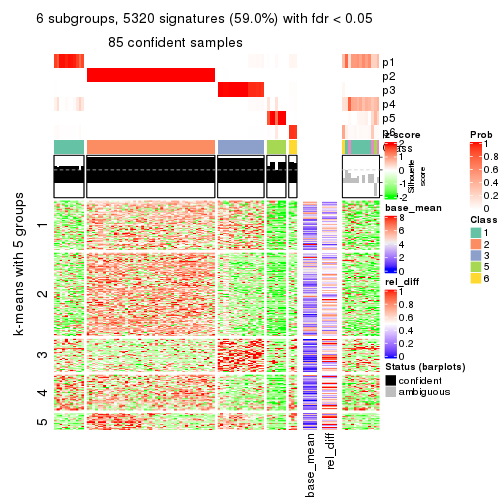
Signature heatmaps where rows are not scaled:
get_signatures(res, k = 2, scale_rows = FALSE)
get_signatures(res, k = 3, scale_rows = FALSE)
get_signatures(res, k = 4, scale_rows = FALSE)
get_signatures(res, k = 5, scale_rows = FALSE)
get_signatures(res, k = 6, scale_rows = FALSE)
Compare the overlap of signatures from different k:
compare_signatures(res)
get_signature() returns a data frame invisibly. TO get the list of signatures, the function
call should be assigned to a variable explicitly. In following code, if plot argument is set
to FALSE, no heatmap is plotted while only the differential analysis is performed.
# code only for demonstration
tb = get_signature(res, k = ..., plot = FALSE)
An example of the output of tb is:
#> which_row fdr mean_1 mean_2 scaled_mean_1 scaled_mean_2 km
#> 1 38 0.042760348 8.373488 9.131774 -0.5533452 0.5164555 1
#> 2 40 0.018707592 7.106213 8.469186 -0.6173731 0.5762149 1
#> 3 55 0.019134737 10.221463 11.207825 -0.6159697 0.5749050 1
#> 4 59 0.006059896 5.921854 7.869574 -0.6899429 0.6439467 1
#> 5 60 0.018055526 8.928898 10.211722 -0.6204761 0.5791110 1
#> 6 98 0.009384629 15.714769 14.887706 0.6635654 -0.6193277 2
...
The columns in tb are:
which_row: row indices corresponding to the input matrix.fdr: FDR for the differential test. mean_x: The mean value in group x.scaled_mean_x: The mean value in group x after rows are scaled.km: Row groups if k-means clustering is applied to rows.UMAP plot which shows how samples are separated.
dimension_reduction(res, k = 2, method = "UMAP")
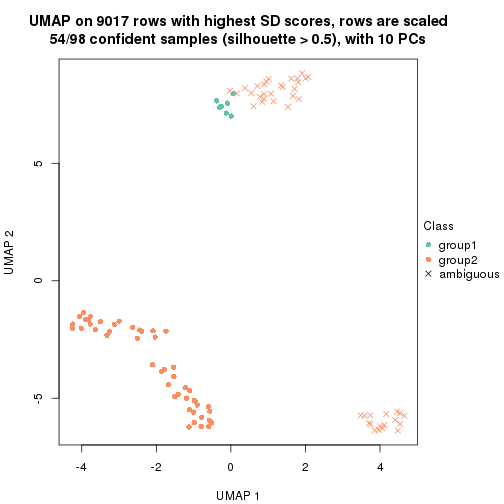
dimension_reduction(res, k = 3, method = "UMAP")
dimension_reduction(res, k = 4, method = "UMAP")
dimension_reduction(res, k = 5, method = "UMAP")
dimension_reduction(res, k = 6, method = "UMAP")

Following heatmap shows how subgroups are split when increasing k:
collect_classes(res)
If matrix rows can be associated to genes, consider to use functional_enrichment(res,
...) to perform function enrichment for the signature genes. See this vignette for more detailed explanations.
The object with results only for a single top-value method and a single partition method can be extracted as:
res = res_list["SD", "kmeans"]
# you can also extract it by
# res = res_list["SD:kmeans"]
A summary of res and all the functions that can be applied to it:
res
#> A 'ConsensusPartition' object with k = 2, 3, 4, 5, 6.
#> On a matrix with 9017 rows and 98 columns.
#> Top rows (902, 1804, 2705, 3606, 4508) are extracted by 'SD' method.
#> Subgroups are detected by 'kmeans' method.
#> Performed in total 1250 partitions by row resampling.
#> Best k for subgroups seems to be 2.
#>
#> Following methods can be applied to this 'ConsensusPartition' object:
#> [1] "cola_report" "collect_classes" "collect_plots"
#> [4] "collect_stats" "colnames" "compare_signatures"
#> [7] "consensus_heatmap" "dimension_reduction" "functional_enrichment"
#> [10] "get_anno_col" "get_anno" "get_classes"
#> [13] "get_consensus" "get_matrix" "get_membership"
#> [16] "get_param" "get_signatures" "get_stats"
#> [19] "is_best_k" "is_stable_k" "membership_heatmap"
#> [22] "ncol" "nrow" "plot_ecdf"
#> [25] "rownames" "select_partition_number" "show"
#> [28] "suggest_best_k" "test_to_known_factors"
collect_plots() function collects all the plots made from res for all k (number of partitions)
into one single page to provide an easy and fast comparison between different k.
collect_plots(res)
The plots are:
k and the heatmap of
predicted classes for each k.k.k.k.All the plots in panels can be made by individual functions and they are plotted later in this section.
select_partition_number() produces several plots showing different
statistics for choosing “optimized” k. There are following statistics:
k;k, the area increased is defined as \(A_k - A_{k-1}\).The detailed explanations of these statistics can be found in the cola vignette.
Generally speaking, lower PAC score, higher mean silhouette score or higher
concordance corresponds to better partition. Rand index and Jaccard index
measure how similar the current partition is compared to partition with k-1.
If they are too similar, we won't accept k is better than k-1.
select_partition_number(res)
The numeric values for all these statistics can be obtained by get_stats().
get_stats(res)
#> k 1-PAC mean_silhouette concordance area_increased Rand Jaccard
#> 2 2 1.000 0.988 0.996 0.5055 0.495 0.495
#> 3 3 0.707 0.615 0.733 0.2410 0.834 0.674
#> 4 4 0.785 0.895 0.862 0.1433 0.791 0.495
#> 5 5 0.758 0.888 0.856 0.0649 0.953 0.816
#> 6 6 0.720 0.793 0.849 0.0461 0.983 0.920
suggest_best_k() suggests the best \(k\) based on these statistics. The rules are as follows:
suggest_best_k(res)
#> [1] 2
Following shows the table of the partitions (You need to click the show/hide
code output link to see it). The membership matrix (columns with name p*)
is inferred by
clue::cl_consensus()
function with the SE method. Basically the value in the membership matrix
represents the probability to belong to a certain group. The finall class
label for an item is determined with the group with highest probability it
belongs to.
In get_classes() function, the entropy is calculated from the membership
matrix and the silhouette score is calculated from the consensus matrix.
cbind(get_classes(res, k = 2), get_membership(res, k = 2))
#> class entropy silhouette p1 p2
#> SRR1810660 1 0.000 1.000 1.000 0.000
#> SRR1810659 1 0.000 1.000 1.000 0.000
#> SRR1810658 1 0.000 1.000 1.000 0.000
#> SRR1810657 1 0.000 1.000 1.000 0.000
#> SRR1818435 2 0.000 0.991 0.000 1.000
#> SRR1818434 2 0.000 0.991 0.000 1.000
#> SRR1810752 2 0.000 0.991 0.000 1.000
#> SRR1810751 2 0.000 0.991 0.000 1.000
#> SRR1810749 1 0.000 1.000 1.000 0.000
#> SRR1810748 1 0.000 1.000 1.000 0.000
#> SRR1810750 1 0.000 1.000 1.000 0.000
#> SRR1810747 2 0.000 0.991 0.000 1.000
#> SRR1810746 1 0.000 1.000 1.000 0.000
#> SRR1810745 1 0.000 1.000 1.000 0.000
#> SRR1810744 1 0.000 1.000 1.000 0.000
#> SRR1810743 1 0.000 1.000 1.000 0.000
#> SRR1810742 2 0.000 0.991 0.000 1.000
#> SRR1810741 2 0.000 0.991 0.000 1.000
#> SRR1810740 1 0.000 1.000 1.000 0.000
#> SRR1810739 1 0.000 1.000 1.000 0.000
#> SRR1810738 1 0.000 1.000 1.000 0.000
#> SRR1810737 2 0.000 0.991 0.000 1.000
#> SRR1810736 2 0.000 0.991 0.000 1.000
#> SRR1810734 2 0.000 0.991 0.000 1.000
#> SRR1810735 2 0.000 0.991 0.000 1.000
#> SRR1810733 2 0.000 0.991 0.000 1.000
#> SRR1810732 1 0.000 1.000 1.000 0.000
#> SRR1810730 2 0.000 0.991 0.000 1.000
#> SRR1810729 1 0.000 1.000 1.000 0.000
#> SRR1810731 1 0.000 1.000 1.000 0.000
#> SRR1810728 2 0.000 0.991 0.000 1.000
#> SRR1810727 2 0.000 0.991 0.000 1.000
#> SRR1810726 1 0.000 1.000 1.000 0.000
#> SRR1810725 2 0.000 0.991 0.000 1.000
#> SRR1810724 2 0.000 0.991 0.000 1.000
#> SRR1810723 1 0.000 1.000 1.000 0.000
#> SRR1810722 1 0.000 1.000 1.000 0.000
#> SRR1810721 1 0.000 1.000 1.000 0.000
#> SRR1810720 1 0.000 1.000 1.000 0.000
#> SRR1810719 2 0.000 0.991 0.000 1.000
#> SRR1810718 1 0.000 1.000 1.000 0.000
#> SRR1810717 1 0.000 1.000 1.000 0.000
#> SRR1810716 2 0.000 0.991 0.000 1.000
#> SRR1810715 2 0.000 0.991 0.000 1.000
#> SRR1810713 2 0.000 0.991 0.000 1.000
#> SRR1810714 1 0.000 1.000 1.000 0.000
#> SRR1810712 2 0.000 0.991 0.000 1.000
#> SRR1810710 2 0.000 0.991 0.000 1.000
#> SRR1810711 2 0.000 0.991 0.000 1.000
#> SRR1810709 2 0.000 0.991 0.000 1.000
#> SRR1810708 1 0.000 1.000 1.000 0.000
#> SRR1810707 1 0.000 1.000 1.000 0.000
#> SRR1810706 2 0.000 0.991 0.000 1.000
#> SRR1810704 1 0.000 1.000 1.000 0.000
#> SRR1810705 1 0.000 1.000 1.000 0.000
#> SRR1810703 1 0.000 1.000 1.000 0.000
#> SRR1810702 2 0.000 0.991 0.000 1.000
#> SRR1810701 1 0.000 1.000 1.000 0.000
#> SRR1810700 2 0.000 0.991 0.000 1.000
#> SRR1810699 2 0.000 0.991 0.000 1.000
#> SRR1810696 2 0.000 0.991 0.000 1.000
#> SRR1810695 2 0.000 0.991 0.000 1.000
#> SRR1810698 2 0.000 0.991 0.000 1.000
#> SRR1810697 2 0.000 0.991 0.000 1.000
#> SRR1810694 2 0.000 0.991 0.000 1.000
#> SRR1810693 1 0.000 1.000 1.000 0.000
#> SRR1810692 2 0.000 0.991 0.000 1.000
#> SRR1810690 2 0.000 0.991 0.000 1.000
#> SRR1810691 1 0.000 1.000 1.000 0.000
#> SRR1810689 2 0.000 0.991 0.000 1.000
#> SRR1810688 2 0.000 0.991 0.000 1.000
#> SRR1810687 2 0.000 0.991 0.000 1.000
#> SRR1810685 1 0.000 1.000 1.000 0.000
#> SRR1810686 2 0.000 0.991 0.000 1.000
#> SRR1810684 2 0.000 0.991 0.000 1.000
#> SRR1810683 2 0.000 0.991 0.000 1.000
#> SRR1810680 2 0.000 0.991 0.000 1.000
#> SRR1810679 2 0.000 0.991 0.000 1.000
#> SRR1810678 2 0.000 0.991 0.000 1.000
#> SRR1810682 2 0.000 0.991 0.000 1.000
#> SRR1810681 2 0.000 0.991 0.000 1.000
#> SRR1810677 2 0.000 0.991 0.000 1.000
#> SRR1810676 2 0.000 0.991 0.000 1.000
#> SRR1810675 1 0.000 1.000 1.000 0.000
#> SRR1810673 1 0.000 1.000 1.000 0.000
#> SRR1810674 1 0.000 1.000 1.000 0.000
#> SRR1810671 1 0.000 1.000 1.000 0.000
#> SRR1810670 1 0.000 1.000 1.000 0.000
#> SRR1810669 1 0.000 1.000 1.000 0.000
#> SRR1810667 1 0.000 1.000 1.000 0.000
#> SRR1810666 1 0.000 1.000 1.000 0.000
#> SRR1810672 1 0.000 1.000 1.000 0.000
#> SRR1810668 2 0.983 0.264 0.424 0.576
#> SRR1810665 1 0.000 1.000 1.000 0.000
#> SRR1810664 1 0.000 1.000 1.000 0.000
#> SRR1810663 1 0.000 1.000 1.000 0.000
#> SRR1810661 1 0.000 1.000 1.000 0.000
#> SRR1810662 1 0.000 1.000 1.000 0.000
cbind(get_classes(res, k = 3), get_membership(res, k = 3))
#> class entropy silhouette p1 p2 p3
#> SRR1810660 1 0.6126 0.7380 0.600 0.000 0.400
#> SRR1810659 1 0.6126 0.7380 0.600 0.000 0.400
#> SRR1810658 1 0.6126 0.7380 0.600 0.000 0.400
#> SRR1810657 1 0.6126 0.7380 0.600 0.000 0.400
#> SRR1818435 1 0.9753 -0.4391 0.400 0.228 0.372
#> SRR1818434 1 0.9963 -0.5273 0.376 0.316 0.308
#> SRR1810752 2 0.6126 0.8126 0.400 0.600 0.000
#> SRR1810751 2 0.6126 0.8126 0.400 0.600 0.000
#> SRR1810749 3 0.6305 -0.5716 0.484 0.000 0.516
#> SRR1810748 1 0.6126 0.7380 0.600 0.000 0.400
#> SRR1810750 1 0.6126 0.7380 0.600 0.000 0.400
#> SRR1810747 2 0.6126 0.8126 0.400 0.600 0.000
#> SRR1810746 1 0.6280 0.7087 0.540 0.000 0.460
#> SRR1810745 1 0.6267 0.7155 0.548 0.000 0.452
#> SRR1810744 1 0.6280 0.7087 0.540 0.000 0.460
#> SRR1810743 1 0.6280 0.7087 0.540 0.000 0.460
#> SRR1810742 2 0.0000 0.8120 0.000 1.000 0.000
#> SRR1810741 2 0.6126 0.8126 0.400 0.600 0.000
#> SRR1810740 3 0.6305 -0.5716 0.484 0.000 0.516
#> SRR1810739 1 0.6280 0.7087 0.540 0.000 0.460
#> SRR1810738 3 0.6305 -0.5716 0.484 0.000 0.516
#> SRR1810737 2 0.0000 0.8120 0.000 1.000 0.000
#> SRR1810736 2 0.0000 0.8120 0.000 1.000 0.000
#> SRR1810734 2 0.6126 0.8126 0.400 0.600 0.000
#> SRR1810735 2 0.0000 0.8120 0.000 1.000 0.000
#> SRR1810733 2 0.0000 0.8120 0.000 1.000 0.000
#> SRR1810732 3 0.6111 -0.3230 0.396 0.000 0.604
#> SRR1810730 2 0.0000 0.8120 0.000 1.000 0.000
#> SRR1810729 1 0.6215 0.7301 0.572 0.000 0.428
#> SRR1810731 1 0.6280 0.7087 0.540 0.000 0.460
#> SRR1810728 2 0.0000 0.8120 0.000 1.000 0.000
#> SRR1810727 2 0.0000 0.8120 0.000 1.000 0.000
#> SRR1810726 3 0.6143 0.0714 0.304 0.012 0.684
#> SRR1810725 2 0.0000 0.8120 0.000 1.000 0.000
#> SRR1810724 2 0.0000 0.8120 0.000 1.000 0.000
#> SRR1810723 1 0.6280 0.7087 0.540 0.000 0.460
#> SRR1810722 1 0.6280 0.7087 0.540 0.000 0.460
#> SRR1810721 1 0.6307 0.6343 0.512 0.000 0.488
#> SRR1810720 3 0.6305 -0.5716 0.484 0.000 0.516
#> SRR1810719 2 0.6126 0.8126 0.400 0.600 0.000
#> SRR1810718 1 0.6126 0.7380 0.600 0.000 0.400
#> SRR1810717 1 0.6225 0.7283 0.568 0.000 0.432
#> SRR1810716 2 0.0000 0.8120 0.000 1.000 0.000
#> SRR1810715 2 0.6126 0.8126 0.400 0.600 0.000
#> SRR1810713 2 0.6126 0.8126 0.400 0.600 0.000
#> SRR1810714 1 0.6126 0.7380 0.600 0.000 0.400
#> SRR1810712 2 0.6126 0.8126 0.400 0.600 0.000
#> SRR1810710 2 0.0000 0.8120 0.000 1.000 0.000
#> SRR1810711 2 0.6126 0.8126 0.400 0.600 0.000
#> SRR1810709 2 0.0000 0.8120 0.000 1.000 0.000
#> SRR1810708 1 0.6126 0.7380 0.600 0.000 0.400
#> SRR1810707 3 0.6305 -0.5716 0.484 0.000 0.516
#> SRR1810706 2 0.0000 0.8120 0.000 1.000 0.000
#> SRR1810704 1 0.6280 0.7087 0.540 0.000 0.460
#> SRR1810705 1 0.6126 0.7380 0.600 0.000 0.400
#> SRR1810703 1 0.6126 0.7380 0.600 0.000 0.400
#> SRR1810702 2 0.6126 0.8126 0.400 0.600 0.000
#> SRR1810701 1 0.6126 0.7380 0.600 0.000 0.400
#> SRR1810700 2 0.6126 0.8126 0.400 0.600 0.000
#> SRR1810699 2 0.6126 0.8126 0.400 0.600 0.000
#> SRR1810696 2 0.0000 0.8120 0.000 1.000 0.000
#> SRR1810695 2 0.0000 0.8120 0.000 1.000 0.000
#> SRR1810698 2 0.0000 0.8120 0.000 1.000 0.000
#> SRR1810697 2 0.0000 0.8120 0.000 1.000 0.000
#> SRR1810694 2 0.0000 0.8120 0.000 1.000 0.000
#> SRR1810693 1 0.6291 0.6902 0.532 0.000 0.468
#> SRR1810692 2 0.0237 0.8121 0.004 0.996 0.000
#> SRR1810690 2 0.5529 0.8140 0.296 0.704 0.000
#> SRR1810691 3 0.6305 -0.5716 0.484 0.000 0.516
#> SRR1810689 2 0.6126 0.8126 0.400 0.600 0.000
#> SRR1810688 2 0.6126 0.8126 0.400 0.600 0.000
#> SRR1810687 2 0.6126 0.8126 0.400 0.600 0.000
#> SRR1810685 3 0.6305 -0.5716 0.484 0.000 0.516
#> SRR1810686 2 0.6126 0.8126 0.400 0.600 0.000
#> SRR1810684 2 0.0000 0.8120 0.000 1.000 0.000
#> SRR1810683 2 0.6126 0.8126 0.400 0.600 0.000
#> SRR1810680 2 0.6126 0.8126 0.400 0.600 0.000
#> SRR1810679 2 0.0000 0.8120 0.000 1.000 0.000
#> SRR1810678 2 0.6126 0.8126 0.400 0.600 0.000
#> SRR1810682 2 0.6126 0.8126 0.400 0.600 0.000
#> SRR1810681 2 0.0000 0.8120 0.000 1.000 0.000
#> SRR1810677 2 0.5678 0.8140 0.316 0.684 0.000
#> SRR1810676 2 0.6126 0.8126 0.400 0.600 0.000
#> SRR1810675 3 0.2261 0.5641 0.068 0.000 0.932
#> SRR1810673 3 0.0000 0.6411 0.000 0.000 1.000
#> SRR1810674 3 0.0424 0.6333 0.008 0.000 0.992
#> SRR1810671 3 0.0000 0.6411 0.000 0.000 1.000
#> SRR1810670 3 0.0000 0.6411 0.000 0.000 1.000
#> SRR1810669 3 0.2261 0.5761 0.068 0.000 0.932
#> SRR1810667 3 0.0000 0.6411 0.000 0.000 1.000
#> SRR1810666 3 0.0000 0.6411 0.000 0.000 1.000
#> SRR1810672 3 0.0000 0.6411 0.000 0.000 1.000
#> SRR1810668 3 0.5223 0.4148 0.176 0.024 0.800
#> SRR1810665 3 0.0000 0.6411 0.000 0.000 1.000
#> SRR1810664 3 0.0000 0.6411 0.000 0.000 1.000
#> SRR1810663 3 0.0000 0.6411 0.000 0.000 1.000
#> SRR1810661 3 0.0000 0.6411 0.000 0.000 1.000
#> SRR1810662 3 0.0000 0.6411 0.000 0.000 1.000
cbind(get_classes(res, k = 4), get_membership(res, k = 4))
#> class entropy silhouette p1 p2 p3 p4
#> SRR1810660 1 0.4304 0.754 0.716 0.000 0.000 0.284
#> SRR1810659 1 0.4304 0.754 0.716 0.000 0.000 0.284
#> SRR1810658 1 0.4304 0.754 0.716 0.000 0.000 0.284
#> SRR1810657 1 0.4304 0.754 0.716 0.000 0.000 0.284
#> SRR1818435 3 0.5366 0.229 0.000 0.440 0.548 0.012
#> SRR1818434 3 0.5402 0.115 0.000 0.472 0.516 0.012
#> SRR1810752 2 0.0188 0.973 0.000 0.996 0.004 0.000
#> SRR1810751 2 0.0188 0.971 0.000 0.996 0.004 0.000
#> SRR1810749 1 0.2081 0.867 0.916 0.000 0.084 0.000
#> SRR1810748 1 0.4304 0.754 0.716 0.000 0.000 0.284
#> SRR1810750 1 0.0000 0.872 1.000 0.000 0.000 0.000
#> SRR1810747 2 0.0188 0.973 0.000 0.996 0.004 0.000
#> SRR1810746 1 0.1302 0.880 0.956 0.000 0.044 0.000
#> SRR1810745 1 0.0817 0.878 0.976 0.000 0.024 0.000
#> SRR1810744 1 0.1302 0.880 0.956 0.000 0.044 0.000
#> SRR1810743 1 0.1302 0.880 0.956 0.000 0.044 0.000
#> SRR1810742 4 0.4608 0.996 0.000 0.304 0.004 0.692
#> SRR1810741 2 0.0469 0.968 0.000 0.988 0.012 0.000
#> SRR1810740 1 0.2081 0.867 0.916 0.000 0.084 0.000
#> SRR1810739 1 0.1302 0.880 0.956 0.000 0.044 0.000
#> SRR1810738 1 0.2081 0.867 0.916 0.000 0.084 0.000
#> SRR1810737 4 0.4431 0.996 0.000 0.304 0.000 0.696
#> SRR1810736 4 0.4608 0.996 0.000 0.304 0.004 0.692
#> SRR1810734 2 0.0188 0.973 0.000 0.996 0.004 0.000
#> SRR1810735 4 0.4431 0.996 0.000 0.304 0.000 0.696
#> SRR1810733 4 0.4608 0.994 0.000 0.304 0.004 0.692
#> SRR1810732 1 0.4220 0.698 0.748 0.000 0.248 0.004
#> SRR1810730 4 0.4608 0.994 0.000 0.304 0.004 0.692
#> SRR1810729 1 0.1807 0.864 0.940 0.000 0.008 0.052
#> SRR1810731 1 0.1302 0.880 0.956 0.000 0.044 0.000
#> SRR1810728 4 0.4431 0.996 0.000 0.304 0.000 0.696
#> SRR1810727 4 0.4608 0.996 0.000 0.304 0.004 0.692
#> SRR1810726 1 0.5926 0.624 0.692 0.000 0.192 0.116
#> SRR1810725 4 0.4608 0.996 0.000 0.304 0.004 0.692
#> SRR1810724 4 0.4608 0.996 0.000 0.304 0.004 0.692
#> SRR1810723 1 0.1489 0.880 0.952 0.000 0.044 0.004
#> SRR1810722 1 0.1302 0.880 0.956 0.000 0.044 0.000
#> SRR1810721 1 0.1940 0.870 0.924 0.000 0.076 0.000
#> SRR1810720 1 0.2081 0.867 0.916 0.000 0.084 0.000
#> SRR1810719 2 0.0469 0.968 0.000 0.988 0.012 0.000
#> SRR1810718 1 0.4304 0.754 0.716 0.000 0.000 0.284
#> SRR1810717 1 0.0657 0.875 0.984 0.000 0.012 0.004
#> SRR1810716 4 0.4608 0.996 0.000 0.304 0.004 0.692
#> SRR1810715 2 0.0188 0.973 0.000 0.996 0.004 0.000
#> SRR1810713 2 0.0469 0.968 0.000 0.988 0.012 0.000
#> SRR1810714 1 0.4304 0.754 0.716 0.000 0.000 0.284
#> SRR1810712 2 0.0188 0.973 0.000 0.996 0.004 0.000
#> SRR1810710 4 0.4431 0.996 0.000 0.304 0.000 0.696
#> SRR1810711 2 0.0188 0.973 0.000 0.996 0.004 0.000
#> SRR1810709 4 0.4431 0.996 0.000 0.304 0.000 0.696
#> SRR1810708 1 0.0000 0.872 1.000 0.000 0.000 0.000
#> SRR1810707 1 0.2412 0.866 0.908 0.000 0.084 0.008
#> SRR1810706 4 0.4608 0.996 0.000 0.304 0.004 0.692
#> SRR1810704 1 0.1489 0.880 0.952 0.000 0.044 0.004
#> SRR1810705 1 0.1389 0.862 0.952 0.000 0.000 0.048
#> SRR1810703 1 0.4304 0.754 0.716 0.000 0.000 0.284
#> SRR1810702 2 0.0188 0.973 0.000 0.996 0.004 0.000
#> SRR1810701 1 0.4304 0.754 0.716 0.000 0.000 0.284
#> SRR1810700 2 0.0188 0.971 0.000 0.996 0.004 0.000
#> SRR1810699 2 0.0336 0.971 0.000 0.992 0.008 0.000
#> SRR1810696 4 0.4431 0.996 0.000 0.304 0.000 0.696
#> SRR1810695 4 0.4608 0.996 0.000 0.304 0.004 0.692
#> SRR1810698 4 0.4431 0.996 0.000 0.304 0.000 0.696
#> SRR1810697 4 0.4608 0.996 0.000 0.304 0.004 0.692
#> SRR1810694 4 0.4431 0.996 0.000 0.304 0.000 0.696
#> SRR1810693 1 0.1661 0.878 0.944 0.000 0.052 0.004
#> SRR1810692 4 0.5026 0.975 0.000 0.312 0.016 0.672
#> SRR1810690 2 0.4204 0.613 0.000 0.788 0.020 0.192
#> SRR1810691 1 0.2081 0.867 0.916 0.000 0.084 0.000
#> SRR1810689 2 0.0592 0.965 0.000 0.984 0.016 0.000
#> SRR1810688 2 0.0188 0.973 0.000 0.996 0.004 0.000
#> SRR1810687 2 0.0000 0.972 0.000 1.000 0.000 0.000
#> SRR1810685 1 0.2081 0.867 0.916 0.000 0.084 0.000
#> SRR1810686 2 0.0000 0.972 0.000 1.000 0.000 0.000
#> SRR1810684 4 0.4431 0.996 0.000 0.304 0.000 0.696
#> SRR1810683 2 0.0188 0.973 0.000 0.996 0.004 0.000
#> SRR1810680 2 0.0592 0.965 0.000 0.984 0.016 0.000
#> SRR1810679 4 0.4431 0.996 0.000 0.304 0.000 0.696
#> SRR1810678 2 0.0469 0.968 0.000 0.988 0.012 0.000
#> SRR1810682 2 0.0188 0.973 0.000 0.996 0.004 0.000
#> SRR1810681 4 0.4868 0.989 0.000 0.304 0.012 0.684
#> SRR1810677 2 0.3447 0.762 0.000 0.852 0.020 0.128
#> SRR1810676 2 0.0188 0.973 0.000 0.996 0.004 0.000
#> SRR1810675 3 0.1114 0.905 0.008 0.016 0.972 0.004
#> SRR1810673 3 0.0921 0.919 0.028 0.000 0.972 0.000
#> SRR1810674 3 0.0817 0.917 0.024 0.000 0.976 0.000
#> SRR1810671 3 0.1256 0.918 0.028 0.000 0.964 0.008
#> SRR1810670 3 0.1388 0.917 0.028 0.000 0.960 0.012
#> SRR1810669 3 0.3450 0.769 0.156 0.000 0.836 0.008
#> SRR1810667 3 0.0921 0.919 0.028 0.000 0.972 0.000
#> SRR1810666 3 0.1256 0.918 0.028 0.000 0.964 0.008
#> SRR1810672 3 0.1488 0.915 0.032 0.000 0.956 0.012
#> SRR1810668 3 0.1394 0.904 0.008 0.016 0.964 0.012
#> SRR1810665 3 0.1256 0.918 0.028 0.000 0.964 0.008
#> SRR1810664 3 0.0921 0.919 0.028 0.000 0.972 0.000
#> SRR1810663 3 0.0921 0.919 0.028 0.000 0.972 0.000
#> SRR1810661 3 0.0921 0.919 0.028 0.000 0.972 0.000
#> SRR1810662 3 0.0921 0.919 0.028 0.000 0.972 0.000
cbind(get_classes(res, k = 5), get_membership(res, k = 5))
#> class entropy silhouette p1 p2 p3 p4 p5
#> SRR1810660 5 0.3752 0.979 0.292 0.000 0.000 0.000 0.708
#> SRR1810659 5 0.4025 0.979 0.292 0.000 0.000 0.008 0.700
#> SRR1810658 5 0.4025 0.979 0.292 0.000 0.000 0.008 0.700
#> SRR1810657 5 0.4046 0.976 0.296 0.000 0.000 0.008 0.696
#> SRR1818435 3 0.5505 0.428 0.000 0.304 0.604 0.000 0.092
#> SRR1818434 3 0.5599 0.362 0.000 0.328 0.580 0.000 0.092
#> SRR1810752 2 0.0000 0.913 0.000 1.000 0.000 0.000 0.000
#> SRR1810751 2 0.0510 0.911 0.000 0.984 0.000 0.000 0.016
#> SRR1810749 1 0.1670 0.895 0.936 0.000 0.012 0.052 0.000
#> SRR1810748 5 0.3752 0.979 0.292 0.000 0.000 0.000 0.708
#> SRR1810750 1 0.1300 0.890 0.956 0.000 0.000 0.028 0.016
#> SRR1810747 2 0.0000 0.913 0.000 1.000 0.000 0.000 0.000
#> SRR1810746 1 0.0963 0.900 0.964 0.000 0.000 0.036 0.000
#> SRR1810745 1 0.0703 0.901 0.976 0.000 0.000 0.024 0.000
#> SRR1810744 1 0.0510 0.904 0.984 0.000 0.000 0.016 0.000
#> SRR1810743 1 0.0794 0.903 0.972 0.000 0.000 0.028 0.000
#> SRR1810742 4 0.3719 0.965 0.000 0.208 0.004 0.776 0.012
#> SRR1810741 2 0.2605 0.869 0.000 0.852 0.000 0.000 0.148
#> SRR1810740 1 0.2674 0.861 0.868 0.000 0.012 0.120 0.000
#> SRR1810739 1 0.1043 0.902 0.960 0.000 0.000 0.040 0.000
#> SRR1810738 1 0.1740 0.894 0.932 0.000 0.012 0.056 0.000
#> SRR1810737 4 0.3333 0.967 0.000 0.208 0.000 0.788 0.004
#> SRR1810736 4 0.3912 0.962 0.000 0.208 0.004 0.768 0.020
#> SRR1810734 2 0.0000 0.913 0.000 1.000 0.000 0.000 0.000
#> SRR1810735 4 0.3845 0.963 0.000 0.208 0.000 0.768 0.024
#> SRR1810733 4 0.3845 0.963 0.000 0.208 0.000 0.768 0.024
#> SRR1810732 1 0.4899 0.624 0.732 0.000 0.164 0.096 0.008
#> SRR1810730 4 0.3819 0.965 0.000 0.208 0.004 0.772 0.016
#> SRR1810729 1 0.4428 0.612 0.756 0.000 0.000 0.084 0.160
#> SRR1810731 1 0.0510 0.904 0.984 0.000 0.000 0.016 0.000
#> SRR1810728 4 0.3333 0.967 0.000 0.208 0.000 0.788 0.004
#> SRR1810727 4 0.3177 0.967 0.000 0.208 0.000 0.792 0.000
#> SRR1810726 1 0.4143 0.738 0.808 0.000 0.064 0.108 0.020
#> SRR1810725 4 0.4085 0.960 0.000 0.208 0.004 0.760 0.028
#> SRR1810724 4 0.3757 0.963 0.000 0.208 0.000 0.772 0.020
#> SRR1810723 1 0.0451 0.903 0.988 0.000 0.000 0.008 0.004
#> SRR1810722 1 0.1478 0.896 0.936 0.000 0.000 0.064 0.000
#> SRR1810721 1 0.1502 0.897 0.940 0.000 0.004 0.056 0.000
#> SRR1810720 1 0.1670 0.895 0.936 0.000 0.012 0.052 0.000
#> SRR1810719 2 0.1851 0.893 0.000 0.912 0.000 0.000 0.088
#> SRR1810718 5 0.3752 0.979 0.292 0.000 0.000 0.000 0.708
#> SRR1810717 1 0.0771 0.900 0.976 0.000 0.000 0.020 0.004
#> SRR1810716 4 0.4085 0.960 0.000 0.208 0.004 0.760 0.028
#> SRR1810715 2 0.0000 0.913 0.000 1.000 0.000 0.000 0.000
#> SRR1810713 2 0.3003 0.849 0.000 0.812 0.000 0.000 0.188
#> SRR1810714 5 0.4108 0.970 0.308 0.000 0.000 0.008 0.684
#> SRR1810712 2 0.0000 0.913 0.000 1.000 0.000 0.000 0.000
#> SRR1810710 4 0.3563 0.966 0.000 0.208 0.000 0.780 0.012
#> SRR1810711 2 0.0000 0.913 0.000 1.000 0.000 0.000 0.000
#> SRR1810709 4 0.3563 0.966 0.000 0.208 0.000 0.780 0.012
#> SRR1810708 1 0.1012 0.896 0.968 0.000 0.000 0.020 0.012
#> SRR1810707 1 0.3553 0.829 0.832 0.000 0.024 0.128 0.016
#> SRR1810706 4 0.3757 0.963 0.000 0.208 0.000 0.772 0.020
#> SRR1810704 1 0.0671 0.901 0.980 0.000 0.000 0.016 0.004
#> SRR1810705 1 0.2825 0.761 0.860 0.000 0.000 0.016 0.124
#> SRR1810703 5 0.4323 0.945 0.332 0.000 0.000 0.012 0.656
#> SRR1810702 2 0.0000 0.913 0.000 1.000 0.000 0.000 0.000
#> SRR1810701 5 0.4270 0.957 0.320 0.000 0.000 0.012 0.668
#> SRR1810700 2 0.0510 0.911 0.000 0.984 0.000 0.000 0.016
#> SRR1810699 2 0.2852 0.851 0.000 0.828 0.000 0.000 0.172
#> SRR1810696 4 0.3845 0.963 0.000 0.208 0.000 0.768 0.024
#> SRR1810695 4 0.4302 0.945 0.000 0.208 0.000 0.744 0.048
#> SRR1810698 4 0.3563 0.966 0.000 0.208 0.000 0.780 0.012
#> SRR1810697 4 0.3333 0.967 0.000 0.208 0.000 0.788 0.004
#> SRR1810694 4 0.3845 0.963 0.000 0.208 0.000 0.768 0.024
#> SRR1810693 1 0.2533 0.852 0.888 0.000 0.008 0.096 0.008
#> SRR1810692 4 0.6243 0.697 0.000 0.216 0.000 0.544 0.240
#> SRR1810690 2 0.6034 0.509 0.000 0.572 0.000 0.172 0.256
#> SRR1810691 1 0.1670 0.895 0.936 0.000 0.012 0.052 0.000
#> SRR1810689 2 0.3424 0.814 0.000 0.760 0.000 0.000 0.240
#> SRR1810688 2 0.0000 0.913 0.000 1.000 0.000 0.000 0.000
#> SRR1810687 2 0.1331 0.906 0.000 0.952 0.008 0.000 0.040
#> SRR1810685 1 0.1670 0.895 0.936 0.000 0.012 0.052 0.000
#> SRR1810686 2 0.1331 0.906 0.000 0.952 0.008 0.000 0.040
#> SRR1810684 4 0.3563 0.966 0.000 0.208 0.000 0.780 0.012
#> SRR1810683 2 0.0000 0.913 0.000 1.000 0.000 0.000 0.000
#> SRR1810680 2 0.3508 0.802 0.000 0.748 0.000 0.000 0.252
#> SRR1810679 4 0.3333 0.967 0.000 0.208 0.000 0.788 0.004
#> SRR1810678 2 0.3003 0.849 0.000 0.812 0.000 0.000 0.188
#> SRR1810682 2 0.0000 0.913 0.000 1.000 0.000 0.000 0.000
#> SRR1810681 4 0.5434 0.854 0.000 0.208 0.000 0.656 0.136
#> SRR1810677 2 0.5577 0.623 0.000 0.624 0.000 0.120 0.256
#> SRR1810676 2 0.0162 0.912 0.000 0.996 0.000 0.000 0.004
#> SRR1810675 3 0.0566 0.915 0.012 0.004 0.984 0.000 0.000
#> SRR1810673 3 0.0510 0.916 0.016 0.000 0.984 0.000 0.000
#> SRR1810674 3 0.0566 0.915 0.012 0.004 0.984 0.000 0.000
#> SRR1810671 3 0.1756 0.910 0.016 0.000 0.940 0.036 0.008
#> SRR1810670 3 0.1756 0.910 0.016 0.000 0.940 0.036 0.008
#> SRR1810669 3 0.3946 0.776 0.140 0.000 0.804 0.048 0.008
#> SRR1810667 3 0.0510 0.916 0.016 0.000 0.984 0.000 0.000
#> SRR1810666 3 0.1756 0.910 0.016 0.000 0.940 0.036 0.008
#> SRR1810672 3 0.2359 0.892 0.044 0.000 0.912 0.036 0.008
#> SRR1810668 3 0.0566 0.915 0.012 0.004 0.984 0.000 0.000
#> SRR1810665 3 0.1756 0.910 0.016 0.000 0.940 0.036 0.008
#> SRR1810664 3 0.0510 0.916 0.016 0.000 0.984 0.000 0.000
#> SRR1810663 3 0.0510 0.916 0.016 0.000 0.984 0.000 0.000
#> SRR1810661 3 0.0960 0.916 0.016 0.000 0.972 0.008 0.004
#> SRR1810662 3 0.0960 0.916 0.016 0.000 0.972 0.008 0.004
cbind(get_classes(res, k = 6), get_membership(res, k = 6))
#> class entropy silhouette p1 p2 p3 p4 p5 p6
#> SRR1810660 5 0.2300 0.96370 0.144 0.000 0.000 0.000 0.856 0.000
#> SRR1810659 5 0.2905 0.96065 0.144 0.012 0.000 0.000 0.836 0.008
#> SRR1810658 5 0.2905 0.96065 0.144 0.012 0.000 0.000 0.836 0.008
#> SRR1810657 5 0.2692 0.95980 0.148 0.000 0.000 0.000 0.840 0.012
#> SRR1818435 3 0.5795 0.37981 0.000 0.172 0.604 0.024 0.004 0.196
#> SRR1818434 3 0.5865 0.36765 0.000 0.172 0.600 0.028 0.004 0.196
#> SRR1810752 2 0.1957 0.82577 0.000 0.888 0.000 0.112 0.000 0.000
#> SRR1810751 2 0.2547 0.81367 0.000 0.868 0.000 0.112 0.004 0.016
#> SRR1810749 1 0.2622 0.86092 0.868 0.024 0.004 0.000 0.000 0.104
#> SRR1810748 5 0.2300 0.96370 0.144 0.000 0.000 0.000 0.856 0.000
#> SRR1810750 1 0.0820 0.86777 0.972 0.016 0.000 0.000 0.000 0.012
#> SRR1810747 2 0.1957 0.82577 0.000 0.888 0.000 0.112 0.000 0.000
#> SRR1810746 1 0.1088 0.86592 0.960 0.024 0.000 0.000 0.000 0.016
#> SRR1810745 1 0.0405 0.86814 0.988 0.004 0.000 0.000 0.000 0.008
#> SRR1810744 1 0.1297 0.87211 0.948 0.012 0.000 0.000 0.000 0.040
#> SRR1810743 1 0.0603 0.87120 0.980 0.004 0.000 0.000 0.000 0.016
#> SRR1810742 4 0.0405 0.92321 0.000 0.000 0.000 0.988 0.004 0.008
#> SRR1810741 2 0.5341 0.00706 0.000 0.604 0.000 0.112 0.012 0.272
#> SRR1810740 1 0.3861 0.72488 0.672 0.008 0.004 0.000 0.000 0.316
#> SRR1810739 1 0.1176 0.86841 0.956 0.024 0.000 0.000 0.000 0.020
#> SRR1810738 1 0.2964 0.85968 0.848 0.040 0.004 0.000 0.000 0.108
#> SRR1810737 4 0.0146 0.92471 0.000 0.000 0.000 0.996 0.000 0.004
#> SRR1810736 4 0.0405 0.92321 0.000 0.000 0.000 0.988 0.004 0.008
#> SRR1810734 2 0.1957 0.82577 0.000 0.888 0.000 0.112 0.000 0.000
#> SRR1810735 4 0.2009 0.90477 0.000 0.000 0.000 0.908 0.068 0.024
#> SRR1810733 4 0.2376 0.89284 0.000 0.000 0.000 0.888 0.068 0.044
#> SRR1810732 1 0.5578 0.53610 0.560 0.000 0.112 0.000 0.016 0.312
#> SRR1810730 4 0.1934 0.90914 0.000 0.000 0.000 0.916 0.044 0.040
#> SRR1810729 1 0.4881 0.56892 0.648 0.000 0.000 0.000 0.120 0.232
#> SRR1810731 1 0.1225 0.87208 0.952 0.012 0.000 0.000 0.000 0.036
#> SRR1810728 4 0.0291 0.92446 0.000 0.000 0.000 0.992 0.004 0.004
#> SRR1810727 4 0.0146 0.92432 0.000 0.000 0.000 0.996 0.000 0.004
#> SRR1810726 1 0.3710 0.83707 0.824 0.024 0.012 0.004 0.028 0.108
#> SRR1810725 4 0.0993 0.91621 0.000 0.000 0.000 0.964 0.012 0.024
#> SRR1810724 4 0.0405 0.92321 0.000 0.000 0.000 0.988 0.004 0.008
#> SRR1810723 1 0.0405 0.87160 0.988 0.004 0.000 0.000 0.000 0.008
#> SRR1810722 1 0.2624 0.85627 0.856 0.020 0.000 0.000 0.000 0.124
#> SRR1810721 1 0.2480 0.86163 0.872 0.024 0.000 0.000 0.000 0.104
#> SRR1810720 1 0.2622 0.86092 0.868 0.024 0.004 0.000 0.000 0.104
#> SRR1810719 2 0.4568 0.53807 0.000 0.724 0.000 0.112 0.012 0.152
#> SRR1810718 5 0.2300 0.96370 0.144 0.000 0.000 0.000 0.856 0.000
#> SRR1810717 1 0.0291 0.86854 0.992 0.004 0.000 0.000 0.000 0.004
#> SRR1810716 4 0.0993 0.91621 0.000 0.000 0.000 0.964 0.012 0.024
#> SRR1810715 2 0.1957 0.82577 0.000 0.888 0.000 0.112 0.000 0.000
#> SRR1810713 2 0.5454 -0.16880 0.000 0.576 0.000 0.112 0.012 0.300
#> SRR1810714 5 0.2854 0.94043 0.208 0.000 0.000 0.000 0.792 0.000
#> SRR1810712 2 0.1957 0.82577 0.000 0.888 0.000 0.112 0.000 0.000
#> SRR1810710 4 0.0508 0.92495 0.000 0.000 0.000 0.984 0.004 0.012
#> SRR1810711 2 0.1957 0.82577 0.000 0.888 0.000 0.112 0.000 0.000
#> SRR1810709 4 0.1176 0.92079 0.000 0.000 0.000 0.956 0.024 0.020
#> SRR1810708 1 0.0291 0.86854 0.992 0.004 0.000 0.000 0.000 0.004
#> SRR1810707 1 0.4332 0.67529 0.628 0.000 0.008 0.000 0.020 0.344
#> SRR1810706 4 0.0405 0.92321 0.000 0.000 0.000 0.988 0.004 0.008
#> SRR1810704 1 0.0146 0.86869 0.996 0.000 0.000 0.000 0.000 0.004
#> SRR1810705 1 0.1958 0.79360 0.896 0.000 0.000 0.000 0.100 0.004
#> SRR1810703 5 0.3023 0.92298 0.232 0.000 0.000 0.000 0.768 0.000
#> SRR1810702 2 0.1957 0.82577 0.000 0.888 0.000 0.112 0.000 0.000
#> SRR1810701 5 0.2996 0.92626 0.228 0.000 0.000 0.000 0.772 0.000
#> SRR1810700 2 0.2455 0.81710 0.000 0.872 0.000 0.112 0.004 0.012
#> SRR1810699 2 0.5842 -0.49334 0.000 0.532 0.000 0.112 0.028 0.328
#> SRR1810696 4 0.2009 0.90477 0.000 0.000 0.000 0.908 0.068 0.024
#> SRR1810695 4 0.2362 0.82121 0.000 0.000 0.000 0.860 0.004 0.136
#> SRR1810698 4 0.1320 0.91930 0.000 0.000 0.000 0.948 0.036 0.016
#> SRR1810697 4 0.0146 0.92432 0.000 0.000 0.000 0.996 0.000 0.004
#> SRR1810694 4 0.2009 0.90477 0.000 0.000 0.000 0.908 0.068 0.024
#> SRR1810693 1 0.3871 0.69577 0.696 0.004 0.004 0.000 0.008 0.288
#> SRR1810692 4 0.4045 0.23381 0.000 0.008 0.000 0.564 0.000 0.428
#> SRR1810690 6 0.5962 0.77844 0.000 0.328 0.000 0.204 0.004 0.464
#> SRR1810691 1 0.2622 0.86092 0.868 0.024 0.004 0.000 0.000 0.104
#> SRR1810689 6 0.5699 0.75019 0.000 0.428 0.000 0.112 0.012 0.448
#> SRR1810688 2 0.1957 0.82577 0.000 0.888 0.000 0.112 0.000 0.000
#> SRR1810687 2 0.3375 0.76640 0.000 0.824 0.000 0.112 0.008 0.056
#> SRR1810685 1 0.2622 0.86092 0.868 0.024 0.004 0.000 0.000 0.104
#> SRR1810686 2 0.3375 0.76640 0.000 0.824 0.000 0.112 0.008 0.056
#> SRR1810684 4 0.1480 0.91728 0.000 0.000 0.000 0.940 0.040 0.020
#> SRR1810683 2 0.1957 0.82577 0.000 0.888 0.000 0.112 0.000 0.000
#> SRR1810680 6 0.5846 0.76998 0.000 0.420 0.000 0.112 0.020 0.448
#> SRR1810679 4 0.0972 0.92273 0.000 0.000 0.000 0.964 0.028 0.008
#> SRR1810678 2 0.5521 -0.28066 0.000 0.556 0.000 0.112 0.012 0.320
#> SRR1810682 2 0.2100 0.82298 0.000 0.884 0.000 0.112 0.000 0.004
#> SRR1810681 4 0.3337 0.63812 0.000 0.000 0.000 0.736 0.004 0.260
#> SRR1810677 6 0.5772 0.81069 0.000 0.348 0.000 0.184 0.000 0.468
#> SRR1810676 2 0.2212 0.82191 0.000 0.880 0.000 0.112 0.000 0.008
#> SRR1810675 3 0.0000 0.88694 0.000 0.000 1.000 0.000 0.000 0.000
#> SRR1810673 3 0.0000 0.88694 0.000 0.000 1.000 0.000 0.000 0.000
#> SRR1810674 3 0.0000 0.88694 0.000 0.000 1.000 0.000 0.000 0.000
#> SRR1810671 3 0.3172 0.86092 0.000 0.040 0.844 0.000 0.016 0.100
#> SRR1810670 3 0.3172 0.86092 0.000 0.040 0.844 0.000 0.016 0.100
#> SRR1810669 3 0.5081 0.75739 0.104 0.044 0.728 0.000 0.016 0.108
#> SRR1810667 3 0.0000 0.88694 0.000 0.000 1.000 0.000 0.000 0.000
#> SRR1810666 3 0.3172 0.86092 0.000 0.040 0.844 0.000 0.016 0.100
#> SRR1810672 3 0.3746 0.84784 0.020 0.040 0.820 0.000 0.016 0.104
#> SRR1810668 3 0.0146 0.88569 0.000 0.000 0.996 0.000 0.000 0.004
#> SRR1810665 3 0.3172 0.86092 0.000 0.040 0.844 0.000 0.016 0.100
#> SRR1810664 3 0.0000 0.88694 0.000 0.000 1.000 0.000 0.000 0.000
#> SRR1810663 3 0.0000 0.88694 0.000 0.000 1.000 0.000 0.000 0.000
#> SRR1810661 3 0.1398 0.88091 0.000 0.000 0.940 0.000 0.008 0.052
#> SRR1810662 3 0.0363 0.88656 0.000 0.000 0.988 0.000 0.000 0.012
Heatmaps for the consensus matrix. It visualizes the probability of two samples to be in a same group.
consensus_heatmap(res, k = 2)
consensus_heatmap(res, k = 3)
consensus_heatmap(res, k = 4)

consensus_heatmap(res, k = 5)
consensus_heatmap(res, k = 6)
Heatmaps for the membership of samples in all partitions to see how consistent they are:
membership_heatmap(res, k = 2)
membership_heatmap(res, k = 3)
membership_heatmap(res, k = 4)
membership_heatmap(res, k = 5)
membership_heatmap(res, k = 6)
As soon as we have had the classes for columns, we can look for signatures which are significantly different between classes which can be candidate marks for certain classes. Following are the heatmaps for signatures.
Signature heatmaps where rows are scaled:
get_signatures(res, k = 2)
get_signatures(res, k = 3)
get_signatures(res, k = 4)
get_signatures(res, k = 5)
get_signatures(res, k = 6)
Signature heatmaps where rows are not scaled:
get_signatures(res, k = 2, scale_rows = FALSE)
get_signatures(res, k = 3, scale_rows = FALSE)
get_signatures(res, k = 4, scale_rows = FALSE)
get_signatures(res, k = 5, scale_rows = FALSE)
get_signatures(res, k = 6, scale_rows = FALSE)
Compare the overlap of signatures from different k:
compare_signatures(res)
get_signature() returns a data frame invisibly. TO get the list of signatures, the function
call should be assigned to a variable explicitly. In following code, if plot argument is set
to FALSE, no heatmap is plotted while only the differential analysis is performed.
# code only for demonstration
tb = get_signature(res, k = ..., plot = FALSE)
An example of the output of tb is:
#> which_row fdr mean_1 mean_2 scaled_mean_1 scaled_mean_2 km
#> 1 38 0.042760348 8.373488 9.131774 -0.5533452 0.5164555 1
#> 2 40 0.018707592 7.106213 8.469186 -0.6173731 0.5762149 1
#> 3 55 0.019134737 10.221463 11.207825 -0.6159697 0.5749050 1
#> 4 59 0.006059896 5.921854 7.869574 -0.6899429 0.6439467 1
#> 5 60 0.018055526 8.928898 10.211722 -0.6204761 0.5791110 1
#> 6 98 0.009384629 15.714769 14.887706 0.6635654 -0.6193277 2
...
The columns in tb are:
which_row: row indices corresponding to the input matrix.fdr: FDR for the differential test. mean_x: The mean value in group x.scaled_mean_x: The mean value in group x after rows are scaled.km: Row groups if k-means clustering is applied to rows.UMAP plot which shows how samples are separated.
dimension_reduction(res, k = 2, method = "UMAP")
dimension_reduction(res, k = 3, method = "UMAP")
dimension_reduction(res, k = 4, method = "UMAP")
dimension_reduction(res, k = 5, method = "UMAP")
dimension_reduction(res, k = 6, method = "UMAP")
Following heatmap shows how subgroups are split when increasing k:
collect_classes(res)
If matrix rows can be associated to genes, consider to use functional_enrichment(res,
...) to perform function enrichment for the signature genes. See this vignette for more detailed explanations.
The object with results only for a single top-value method and a single partition method can be extracted as:
res = res_list["SD", "skmeans"]
# you can also extract it by
# res = res_list["SD:skmeans"]
A summary of res and all the functions that can be applied to it:
res
#> A 'ConsensusPartition' object with k = 2, 3, 4, 5, 6.
#> On a matrix with 9017 rows and 98 columns.
#> Top rows (902, 1804, 2705, 3606, 4508) are extracted by 'SD' method.
#> Subgroups are detected by 'skmeans' method.
#> Performed in total 1250 partitions by row resampling.
#> Best k for subgroups seems to be 4.
#>
#> Following methods can be applied to this 'ConsensusPartition' object:
#> [1] "cola_report" "collect_classes" "collect_plots"
#> [4] "collect_stats" "colnames" "compare_signatures"
#> [7] "consensus_heatmap" "dimension_reduction" "functional_enrichment"
#> [10] "get_anno_col" "get_anno" "get_classes"
#> [13] "get_consensus" "get_matrix" "get_membership"
#> [16] "get_param" "get_signatures" "get_stats"
#> [19] "is_best_k" "is_stable_k" "membership_heatmap"
#> [22] "ncol" "nrow" "plot_ecdf"
#> [25] "rownames" "select_partition_number" "show"
#> [28] "suggest_best_k" "test_to_known_factors"
collect_plots() function collects all the plots made from res for all k (number of partitions)
into one single page to provide an easy and fast comparison between different k.
collect_plots(res)
The plots are:
k and the heatmap of
predicted classes for each k.k.k.k.All the plots in panels can be made by individual functions and they are plotted later in this section.
select_partition_number() produces several plots showing different
statistics for choosing “optimized” k. There are following statistics:
k;k, the area increased is defined as \(A_k - A_{k-1}\).The detailed explanations of these statistics can be found in the cola vignette.
Generally speaking, lower PAC score, higher mean silhouette score or higher
concordance corresponds to better partition. Rand index and Jaccard index
measure how similar the current partition is compared to partition with k-1.
If they are too similar, we won't accept k is better than k-1.
select_partition_number(res)
The numeric values for all these statistics can be obtained by get_stats().
get_stats(res)
#> k 1-PAC mean_silhouette concordance area_increased Rand Jaccard
#> 2 2 1.000 0.987 0.996 0.5056 0.495 0.495
#> 3 3 0.776 0.899 0.908 0.2379 0.871 0.743
#> 4 4 0.990 0.965 0.978 0.1727 0.858 0.636
#> 5 5 0.893 0.896 0.927 0.0353 0.980 0.925
#> 6 6 0.830 0.790 0.888 0.0304 0.993 0.972
suggest_best_k() suggests the best \(k\) based on these statistics. The rules are as follows:
suggest_best_k(res)
#> [1] 4
#> attr(,"optional")
#> [1] 2
There is also optional best \(k\) = 2 that is worth to check.
Following shows the table of the partitions (You need to click the show/hide
code output link to see it). The membership matrix (columns with name p*)
is inferred by
clue::cl_consensus()
function with the SE method. Basically the value in the membership matrix
represents the probability to belong to a certain group. The finall class
label for an item is determined with the group with highest probability it
belongs to.
In get_classes() function, the entropy is calculated from the membership
matrix and the silhouette score is calculated from the consensus matrix.
cbind(get_classes(res, k = 2), get_membership(res, k = 2))
#> class entropy silhouette p1 p2
#> SRR1810660 1 0.00 0.991 1.00 0.00
#> SRR1810659 1 0.00 0.991 1.00 0.00
#> SRR1810658 1 0.00 0.991 1.00 0.00
#> SRR1810657 1 0.00 0.991 1.00 0.00
#> SRR1818435 2 0.00 1.000 0.00 1.00
#> SRR1818434 2 0.00 1.000 0.00 1.00
#> SRR1810752 2 0.00 1.000 0.00 1.00
#> SRR1810751 2 0.00 1.000 0.00 1.00
#> SRR1810749 1 0.00 0.991 1.00 0.00
#> SRR1810748 1 0.00 0.991 1.00 0.00
#> SRR1810750 1 0.00 0.991 1.00 0.00
#> SRR1810747 2 0.00 1.000 0.00 1.00
#> SRR1810746 1 0.00 0.991 1.00 0.00
#> SRR1810745 1 0.00 0.991 1.00 0.00
#> SRR1810744 1 0.00 0.991 1.00 0.00
#> SRR1810743 1 0.00 0.991 1.00 0.00
#> SRR1810742 2 0.00 1.000 0.00 1.00
#> SRR1810741 2 0.00 1.000 0.00 1.00
#> SRR1810740 1 0.00 0.991 1.00 0.00
#> SRR1810739 1 0.00 0.991 1.00 0.00
#> SRR1810738 1 0.00 0.991 1.00 0.00
#> SRR1810737 2 0.00 1.000 0.00 1.00
#> SRR1810736 2 0.00 1.000 0.00 1.00
#> SRR1810734 2 0.00 1.000 0.00 1.00
#> SRR1810735 2 0.00 1.000 0.00 1.00
#> SRR1810733 2 0.00 1.000 0.00 1.00
#> SRR1810732 1 0.00 0.991 1.00 0.00
#> SRR1810730 2 0.00 1.000 0.00 1.00
#> SRR1810729 1 0.00 0.991 1.00 0.00
#> SRR1810731 1 0.00 0.991 1.00 0.00
#> SRR1810728 2 0.00 1.000 0.00 1.00
#> SRR1810727 2 0.00 1.000 0.00 1.00
#> SRR1810726 1 0.00 0.991 1.00 0.00
#> SRR1810725 2 0.00 1.000 0.00 1.00
#> SRR1810724 2 0.00 1.000 0.00 1.00
#> SRR1810723 1 0.00 0.991 1.00 0.00
#> SRR1810722 1 0.00 0.991 1.00 0.00
#> SRR1810721 1 0.00 0.991 1.00 0.00
#> SRR1810720 1 0.00 0.991 1.00 0.00
#> SRR1810719 2 0.00 1.000 0.00 1.00
#> SRR1810718 1 0.00 0.991 1.00 0.00
#> SRR1810717 1 0.00 0.991 1.00 0.00
#> SRR1810716 2 0.00 1.000 0.00 1.00
#> SRR1810715 2 0.00 1.000 0.00 1.00
#> SRR1810713 2 0.00 1.000 0.00 1.00
#> SRR1810714 1 0.00 0.991 1.00 0.00
#> SRR1810712 2 0.00 1.000 0.00 1.00
#> SRR1810710 2 0.00 1.000 0.00 1.00
#> SRR1810711 2 0.00 1.000 0.00 1.00
#> SRR1810709 2 0.00 1.000 0.00 1.00
#> SRR1810708 1 0.00 0.991 1.00 0.00
#> SRR1810707 1 0.00 0.991 1.00 0.00
#> SRR1810706 2 0.00 1.000 0.00 1.00
#> SRR1810704 1 0.00 0.991 1.00 0.00
#> SRR1810705 1 0.00 0.991 1.00 0.00
#> SRR1810703 1 0.00 0.991 1.00 0.00
#> SRR1810702 2 0.00 1.000 0.00 1.00
#> SRR1810701 1 0.00 0.991 1.00 0.00
#> SRR1810700 2 0.00 1.000 0.00 1.00
#> SRR1810699 2 0.00 1.000 0.00 1.00
#> SRR1810696 2 0.00 1.000 0.00 1.00
#> SRR1810695 2 0.00 1.000 0.00 1.00
#> SRR1810698 2 0.00 1.000 0.00 1.00
#> SRR1810697 2 0.00 1.000 0.00 1.00
#> SRR1810694 2 0.00 1.000 0.00 1.00
#> SRR1810693 1 0.00 0.991 1.00 0.00
#> SRR1810692 2 0.00 1.000 0.00 1.00
#> SRR1810690 2 0.00 1.000 0.00 1.00
#> SRR1810691 1 0.00 0.991 1.00 0.00
#> SRR1810689 2 0.00 1.000 0.00 1.00
#> SRR1810688 2 0.00 1.000 0.00 1.00
#> SRR1810687 2 0.00 1.000 0.00 1.00
#> SRR1810685 1 0.00 0.991 1.00 0.00
#> SRR1810686 2 0.00 1.000 0.00 1.00
#> SRR1810684 2 0.00 1.000 0.00 1.00
#> SRR1810683 2 0.00 1.000 0.00 1.00
#> SRR1810680 2 0.00 1.000 0.00 1.00
#> SRR1810679 2 0.00 1.000 0.00 1.00
#> SRR1810678 2 0.00 1.000 0.00 1.00
#> SRR1810682 2 0.00 1.000 0.00 1.00
#> SRR1810681 2 0.00 1.000 0.00 1.00
#> SRR1810677 2 0.00 1.000 0.00 1.00
#> SRR1810676 2 0.00 1.000 0.00 1.00
#> SRR1810675 1 0.00 0.991 1.00 0.00
#> SRR1810673 1 0.00 0.991 1.00 0.00
#> SRR1810674 1 0.00 0.991 1.00 0.00
#> SRR1810671 1 0.00 0.991 1.00 0.00
#> SRR1810670 1 0.00 0.991 1.00 0.00
#> SRR1810669 1 0.00 0.991 1.00 0.00
#> SRR1810667 1 0.00 0.991 1.00 0.00
#> SRR1810666 1 0.00 0.991 1.00 0.00
#> SRR1810672 1 0.00 0.991 1.00 0.00
#> SRR1810668 1 0.99 0.214 0.56 0.44
#> SRR1810665 1 0.00 0.991 1.00 0.00
#> SRR1810664 1 0.00 0.991 1.00 0.00
#> SRR1810663 1 0.00 0.991 1.00 0.00
#> SRR1810661 1 0.00 0.991 1.00 0.00
#> SRR1810662 1 0.00 0.991 1.00 0.00
cbind(get_classes(res, k = 3), get_membership(res, k = 3))
#> class entropy silhouette p1 p2 p3
#> SRR1810660 1 0.0000 0.9850 1.000 0.000 0.000
#> SRR1810659 1 0.0000 0.9850 1.000 0.000 0.000
#> SRR1810658 1 0.0000 0.9850 1.000 0.000 0.000
#> SRR1810657 1 0.0000 0.9850 1.000 0.000 0.000
#> SRR1818435 3 0.5591 0.6351 0.000 0.304 0.696
#> SRR1818434 3 0.6260 0.3680 0.000 0.448 0.552
#> SRR1810752 2 0.0000 0.8729 0.000 1.000 0.000
#> SRR1810751 2 0.0000 0.8729 0.000 1.000 0.000
#> SRR1810749 1 0.0000 0.9850 1.000 0.000 0.000
#> SRR1810748 1 0.0000 0.9850 1.000 0.000 0.000
#> SRR1810750 1 0.0000 0.9850 1.000 0.000 0.000
#> SRR1810747 2 0.0000 0.8729 0.000 1.000 0.000
#> SRR1810746 1 0.0000 0.9850 1.000 0.000 0.000
#> SRR1810745 1 0.0000 0.9850 1.000 0.000 0.000
#> SRR1810744 1 0.0000 0.9850 1.000 0.000 0.000
#> SRR1810743 1 0.0000 0.9850 1.000 0.000 0.000
#> SRR1810742 2 0.4974 0.8847 0.000 0.764 0.236
#> SRR1810741 2 0.0000 0.8729 0.000 1.000 0.000
#> SRR1810740 1 0.0000 0.9850 1.000 0.000 0.000
#> SRR1810739 1 0.0000 0.9850 1.000 0.000 0.000
#> SRR1810738 1 0.0000 0.9850 1.000 0.000 0.000
#> SRR1810737 2 0.4974 0.8847 0.000 0.764 0.236
#> SRR1810736 2 0.4974 0.8847 0.000 0.764 0.236
#> SRR1810734 2 0.0000 0.8729 0.000 1.000 0.000
#> SRR1810735 2 0.4974 0.8847 0.000 0.764 0.236
#> SRR1810733 2 0.4974 0.8847 0.000 0.764 0.236
#> SRR1810732 1 0.0000 0.9850 1.000 0.000 0.000
#> SRR1810730 2 0.4974 0.8847 0.000 0.764 0.236
#> SRR1810729 1 0.0000 0.9850 1.000 0.000 0.000
#> SRR1810731 1 0.0000 0.9850 1.000 0.000 0.000
#> SRR1810728 2 0.4974 0.8847 0.000 0.764 0.236
#> SRR1810727 2 0.4974 0.8847 0.000 0.764 0.236
#> SRR1810726 1 0.0424 0.9738 0.992 0.000 0.008
#> SRR1810725 2 0.4974 0.8847 0.000 0.764 0.236
#> SRR1810724 2 0.4974 0.8847 0.000 0.764 0.236
#> SRR1810723 1 0.0000 0.9850 1.000 0.000 0.000
#> SRR1810722 1 0.0000 0.9850 1.000 0.000 0.000
#> SRR1810721 1 0.0000 0.9850 1.000 0.000 0.000
#> SRR1810720 1 0.0000 0.9850 1.000 0.000 0.000
#> SRR1810719 2 0.0000 0.8729 0.000 1.000 0.000
#> SRR1810718 1 0.0000 0.9850 1.000 0.000 0.000
#> SRR1810717 1 0.0000 0.9850 1.000 0.000 0.000
#> SRR1810716 2 0.4974 0.8847 0.000 0.764 0.236
#> SRR1810715 2 0.0000 0.8729 0.000 1.000 0.000
#> SRR1810713 2 0.0000 0.8729 0.000 1.000 0.000
#> SRR1810714 1 0.0000 0.9850 1.000 0.000 0.000
#> SRR1810712 2 0.0000 0.8729 0.000 1.000 0.000
#> SRR1810710 2 0.4974 0.8847 0.000 0.764 0.236
#> SRR1810711 2 0.0000 0.8729 0.000 1.000 0.000
#> SRR1810709 2 0.4974 0.8847 0.000 0.764 0.236
#> SRR1810708 1 0.0000 0.9850 1.000 0.000 0.000
#> SRR1810707 1 0.0000 0.9850 1.000 0.000 0.000
#> SRR1810706 2 0.4974 0.8847 0.000 0.764 0.236
#> SRR1810704 1 0.0000 0.9850 1.000 0.000 0.000
#> SRR1810705 1 0.0000 0.9850 1.000 0.000 0.000
#> SRR1810703 1 0.0000 0.9850 1.000 0.000 0.000
#> SRR1810702 2 0.0000 0.8729 0.000 1.000 0.000
#> SRR1810701 1 0.0000 0.9850 1.000 0.000 0.000
#> SRR1810700 2 0.0000 0.8729 0.000 1.000 0.000
#> SRR1810699 2 0.0000 0.8729 0.000 1.000 0.000
#> SRR1810696 2 0.4974 0.8847 0.000 0.764 0.236
#> SRR1810695 2 0.4974 0.8847 0.000 0.764 0.236
#> SRR1810698 2 0.4974 0.8847 0.000 0.764 0.236
#> SRR1810697 2 0.4974 0.8847 0.000 0.764 0.236
#> SRR1810694 2 0.4974 0.8847 0.000 0.764 0.236
#> SRR1810693 1 0.0000 0.9850 1.000 0.000 0.000
#> SRR1810692 2 0.4931 0.8849 0.000 0.768 0.232
#> SRR1810690 2 0.4291 0.8839 0.000 0.820 0.180
#> SRR1810691 1 0.0000 0.9850 1.000 0.000 0.000
#> SRR1810689 2 0.0000 0.8729 0.000 1.000 0.000
#> SRR1810688 2 0.0000 0.8729 0.000 1.000 0.000
#> SRR1810687 2 0.0000 0.8729 0.000 1.000 0.000
#> SRR1810685 1 0.0000 0.9850 1.000 0.000 0.000
#> SRR1810686 2 0.0000 0.8729 0.000 1.000 0.000
#> SRR1810684 2 0.4974 0.8847 0.000 0.764 0.236
#> SRR1810683 2 0.0000 0.8729 0.000 1.000 0.000
#> SRR1810680 2 0.0000 0.8729 0.000 1.000 0.000
#> SRR1810679 2 0.4974 0.8847 0.000 0.764 0.236
#> SRR1810678 2 0.0000 0.8729 0.000 1.000 0.000
#> SRR1810682 2 0.0000 0.8729 0.000 1.000 0.000
#> SRR1810681 2 0.4931 0.8849 0.000 0.768 0.232
#> SRR1810677 2 0.3816 0.8826 0.000 0.852 0.148
#> SRR1810676 2 0.0000 0.8729 0.000 1.000 0.000
#> SRR1810675 3 0.5891 0.7457 0.036 0.200 0.764
#> SRR1810673 3 0.4974 0.8933 0.236 0.000 0.764
#> SRR1810674 3 0.6229 0.8568 0.172 0.064 0.764
#> SRR1810671 3 0.4974 0.8933 0.236 0.000 0.764
#> SRR1810670 3 0.4974 0.8933 0.236 0.000 0.764
#> SRR1810669 1 0.6095 0.0532 0.608 0.000 0.392
#> SRR1810667 3 0.4974 0.8933 0.236 0.000 0.764
#> SRR1810666 3 0.4974 0.8933 0.236 0.000 0.764
#> SRR1810672 3 0.5138 0.8746 0.252 0.000 0.748
#> SRR1810668 3 0.6264 0.8539 0.168 0.068 0.764
#> SRR1810665 3 0.4974 0.8933 0.236 0.000 0.764
#> SRR1810664 3 0.4974 0.8933 0.236 0.000 0.764
#> SRR1810663 3 0.4974 0.8933 0.236 0.000 0.764
#> SRR1810661 3 0.4974 0.8933 0.236 0.000 0.764
#> SRR1810662 3 0.4974 0.8933 0.236 0.000 0.764
cbind(get_classes(res, k = 4), get_membership(res, k = 4))
#> class entropy silhouette p1 p2 p3 p4
#> SRR1810660 1 0.0000 0.996 1.000 0.000 0.000 0.000
#> SRR1810659 1 0.0000 0.996 1.000 0.000 0.000 0.000
#> SRR1810658 1 0.0000 0.996 1.000 0.000 0.000 0.000
#> SRR1810657 1 0.0000 0.996 1.000 0.000 0.000 0.000
#> SRR1818435 2 0.3217 0.842 0.000 0.860 0.128 0.012
#> SRR1818434 2 0.3217 0.842 0.000 0.860 0.128 0.012
#> SRR1810752 2 0.0000 0.975 0.000 1.000 0.000 0.000
#> SRR1810751 2 0.0000 0.975 0.000 1.000 0.000 0.000
#> SRR1810749 1 0.0469 0.992 0.988 0.000 0.000 0.012
#> SRR1810748 1 0.0000 0.996 1.000 0.000 0.000 0.000
#> SRR1810750 1 0.0000 0.996 1.000 0.000 0.000 0.000
#> SRR1810747 2 0.0000 0.975 0.000 1.000 0.000 0.000
#> SRR1810746 1 0.0000 0.996 1.000 0.000 0.000 0.000
#> SRR1810745 1 0.0188 0.995 0.996 0.000 0.000 0.004
#> SRR1810744 1 0.0000 0.996 1.000 0.000 0.000 0.000
#> SRR1810743 1 0.0188 0.995 0.996 0.000 0.000 0.004
#> SRR1810742 4 0.1022 0.991 0.000 0.032 0.000 0.968
#> SRR1810741 2 0.0000 0.975 0.000 1.000 0.000 0.000
#> SRR1810740 1 0.0000 0.996 1.000 0.000 0.000 0.000
#> SRR1810739 1 0.0000 0.996 1.000 0.000 0.000 0.000
#> SRR1810738 1 0.0469 0.991 0.988 0.000 0.000 0.012
#> SRR1810737 4 0.1022 0.991 0.000 0.032 0.000 0.968
#> SRR1810736 4 0.1022 0.991 0.000 0.032 0.000 0.968
#> SRR1810734 2 0.0000 0.975 0.000 1.000 0.000 0.000
#> SRR1810735 4 0.1022 0.991 0.000 0.032 0.000 0.968
#> SRR1810733 4 0.1022 0.991 0.000 0.032 0.000 0.968
#> SRR1810732 1 0.0469 0.987 0.988 0.000 0.012 0.000
#> SRR1810730 4 0.1022 0.991 0.000 0.032 0.000 0.968
#> SRR1810729 1 0.0000 0.996 1.000 0.000 0.000 0.000
#> SRR1810731 1 0.0188 0.995 0.996 0.000 0.000 0.004
#> SRR1810728 4 0.1022 0.991 0.000 0.032 0.000 0.968
#> SRR1810727 4 0.1022 0.991 0.000 0.032 0.000 0.968
#> SRR1810726 1 0.1022 0.978 0.968 0.000 0.000 0.032
#> SRR1810725 4 0.1022 0.991 0.000 0.032 0.000 0.968
#> SRR1810724 4 0.1022 0.991 0.000 0.032 0.000 0.968
#> SRR1810723 1 0.0336 0.994 0.992 0.000 0.000 0.008
#> SRR1810722 1 0.0188 0.995 0.996 0.000 0.000 0.004
#> SRR1810721 1 0.0188 0.995 0.996 0.000 0.000 0.004
#> SRR1810720 1 0.0469 0.992 0.988 0.000 0.000 0.012
#> SRR1810719 2 0.0000 0.975 0.000 1.000 0.000 0.000
#> SRR1810718 1 0.0000 0.996 1.000 0.000 0.000 0.000
#> SRR1810717 1 0.0000 0.996 1.000 0.000 0.000 0.000
#> SRR1810716 4 0.1022 0.991 0.000 0.032 0.000 0.968
#> SRR1810715 2 0.0000 0.975 0.000 1.000 0.000 0.000
#> SRR1810713 2 0.0000 0.975 0.000 1.000 0.000 0.000
#> SRR1810714 1 0.0000 0.996 1.000 0.000 0.000 0.000
#> SRR1810712 2 0.0000 0.975 0.000 1.000 0.000 0.000
#> SRR1810710 4 0.1022 0.991 0.000 0.032 0.000 0.968
#> SRR1810711 2 0.0000 0.975 0.000 1.000 0.000 0.000
#> SRR1810709 4 0.1022 0.991 0.000 0.032 0.000 0.968
#> SRR1810708 1 0.0000 0.996 1.000 0.000 0.000 0.000
#> SRR1810707 1 0.0336 0.994 0.992 0.000 0.000 0.008
#> SRR1810706 4 0.1022 0.991 0.000 0.032 0.000 0.968
#> SRR1810704 1 0.0188 0.995 0.996 0.000 0.000 0.004
#> SRR1810705 1 0.0000 0.996 1.000 0.000 0.000 0.000
#> SRR1810703 1 0.0000 0.996 1.000 0.000 0.000 0.000
#> SRR1810702 2 0.0000 0.975 0.000 1.000 0.000 0.000
#> SRR1810701 1 0.0000 0.996 1.000 0.000 0.000 0.000
#> SRR1810700 2 0.0000 0.975 0.000 1.000 0.000 0.000
#> SRR1810699 2 0.0000 0.975 0.000 1.000 0.000 0.000
#> SRR1810696 4 0.1022 0.991 0.000 0.032 0.000 0.968
#> SRR1810695 4 0.1211 0.984 0.000 0.040 0.000 0.960
#> SRR1810698 4 0.1022 0.991 0.000 0.032 0.000 0.968
#> SRR1810697 4 0.1022 0.991 0.000 0.032 0.000 0.968
#> SRR1810694 4 0.1022 0.991 0.000 0.032 0.000 0.968
#> SRR1810693 1 0.0000 0.996 1.000 0.000 0.000 0.000
#> SRR1810692 4 0.3219 0.840 0.000 0.164 0.000 0.836
#> SRR1810690 2 0.3569 0.749 0.000 0.804 0.000 0.196
#> SRR1810691 1 0.0592 0.989 0.984 0.000 0.000 0.016
#> SRR1810689 2 0.0000 0.975 0.000 1.000 0.000 0.000
#> SRR1810688 2 0.0000 0.975 0.000 1.000 0.000 0.000
#> SRR1810687 2 0.0000 0.975 0.000 1.000 0.000 0.000
#> SRR1810685 1 0.0707 0.987 0.980 0.000 0.000 0.020
#> SRR1810686 2 0.0000 0.975 0.000 1.000 0.000 0.000
#> SRR1810684 4 0.1022 0.991 0.000 0.032 0.000 0.968
#> SRR1810683 2 0.0000 0.975 0.000 1.000 0.000 0.000
#> SRR1810680 2 0.0188 0.972 0.000 0.996 0.000 0.004
#> SRR1810679 4 0.1022 0.991 0.000 0.032 0.000 0.968
#> SRR1810678 2 0.0000 0.975 0.000 1.000 0.000 0.000
#> SRR1810682 2 0.0000 0.975 0.000 1.000 0.000 0.000
#> SRR1810681 4 0.1557 0.968 0.000 0.056 0.000 0.944
#> SRR1810677 2 0.2469 0.870 0.000 0.892 0.000 0.108
#> SRR1810676 2 0.0000 0.975 0.000 1.000 0.000 0.000
#> SRR1810675 3 0.0000 0.954 0.000 0.000 1.000 0.000
#> SRR1810673 3 0.0000 0.954 0.000 0.000 1.000 0.000
#> SRR1810674 3 0.0000 0.954 0.000 0.000 1.000 0.000
#> SRR1810671 3 0.0188 0.951 0.004 0.000 0.996 0.000
#> SRR1810670 3 0.0000 0.954 0.000 0.000 1.000 0.000
#> SRR1810669 3 0.4992 0.104 0.476 0.000 0.524 0.000
#> SRR1810667 3 0.0000 0.954 0.000 0.000 1.000 0.000
#> SRR1810666 3 0.0000 0.954 0.000 0.000 1.000 0.000
#> SRR1810672 3 0.2081 0.875 0.084 0.000 0.916 0.000
#> SRR1810668 3 0.0188 0.952 0.000 0.000 0.996 0.004
#> SRR1810665 3 0.0000 0.954 0.000 0.000 1.000 0.000
#> SRR1810664 3 0.0000 0.954 0.000 0.000 1.000 0.000
#> SRR1810663 3 0.0000 0.954 0.000 0.000 1.000 0.000
#> SRR1810661 3 0.0000 0.954 0.000 0.000 1.000 0.000
#> SRR1810662 3 0.0000 0.954 0.000 0.000 1.000 0.000
cbind(get_classes(res, k = 5), get_membership(res, k = 5))
#> class entropy silhouette p1 p2 p3 p4 p5
#> SRR1810660 1 0.0451 0.924 0.988 0.000 0.004 0.000 0.008
#> SRR1810659 1 0.0451 0.926 0.988 0.000 0.004 0.000 0.008
#> SRR1810658 1 0.0451 0.924 0.988 0.000 0.004 0.000 0.008
#> SRR1810657 1 0.0451 0.924 0.988 0.000 0.004 0.000 0.008
#> SRR1818435 5 0.5904 0.989 0.000 0.360 0.112 0.000 0.528
#> SRR1818434 5 0.6050 0.989 0.000 0.360 0.112 0.004 0.524
#> SRR1810752 2 0.0000 0.951 0.000 1.000 0.000 0.000 0.000
#> SRR1810751 2 0.0000 0.951 0.000 1.000 0.000 0.000 0.000
#> SRR1810749 1 0.3366 0.833 0.768 0.000 0.000 0.000 0.232
#> SRR1810748 1 0.0162 0.925 0.996 0.000 0.000 0.000 0.004
#> SRR1810750 1 0.0880 0.929 0.968 0.000 0.000 0.000 0.032
#> SRR1810747 2 0.0162 0.951 0.000 0.996 0.000 0.000 0.004
#> SRR1810746 1 0.1121 0.928 0.956 0.000 0.000 0.000 0.044
#> SRR1810745 1 0.1341 0.927 0.944 0.000 0.000 0.000 0.056
#> SRR1810744 1 0.2020 0.914 0.900 0.000 0.000 0.000 0.100
#> SRR1810743 1 0.1608 0.924 0.928 0.000 0.000 0.000 0.072
#> SRR1810742 4 0.0162 0.956 0.000 0.004 0.000 0.996 0.000
#> SRR1810741 2 0.0609 0.939 0.000 0.980 0.000 0.000 0.020
#> SRR1810740 1 0.1704 0.921 0.928 0.000 0.004 0.000 0.068
#> SRR1810739 1 0.1608 0.924 0.928 0.000 0.000 0.000 0.072
#> SRR1810738 1 0.2516 0.897 0.860 0.000 0.000 0.000 0.140
#> SRR1810737 4 0.0324 0.957 0.000 0.004 0.000 0.992 0.004
#> SRR1810736 4 0.0671 0.951 0.000 0.004 0.000 0.980 0.016
#> SRR1810734 2 0.0162 0.951 0.000 0.996 0.000 0.000 0.004
#> SRR1810735 4 0.1124 0.950 0.000 0.004 0.000 0.960 0.036
#> SRR1810733 4 0.1041 0.952 0.000 0.004 0.000 0.964 0.032
#> SRR1810732 1 0.2228 0.891 0.912 0.000 0.048 0.000 0.040
#> SRR1810730 4 0.0771 0.956 0.000 0.004 0.000 0.976 0.020
#> SRR1810729 1 0.0451 0.924 0.988 0.000 0.004 0.000 0.008
#> SRR1810731 1 0.2020 0.916 0.900 0.000 0.000 0.000 0.100
#> SRR1810728 4 0.0324 0.957 0.000 0.004 0.000 0.992 0.004
#> SRR1810727 4 0.0451 0.957 0.000 0.004 0.000 0.988 0.008
#> SRR1810726 1 0.4989 0.510 0.520 0.000 0.008 0.016 0.456
#> SRR1810725 4 0.0451 0.957 0.000 0.004 0.000 0.988 0.008
#> SRR1810724 4 0.0451 0.954 0.000 0.004 0.000 0.988 0.008
#> SRR1810723 1 0.1197 0.929 0.952 0.000 0.000 0.000 0.048
#> SRR1810722 1 0.1704 0.925 0.928 0.000 0.004 0.000 0.068
#> SRR1810721 1 0.2813 0.880 0.832 0.000 0.000 0.000 0.168
#> SRR1810720 1 0.3177 0.853 0.792 0.000 0.000 0.000 0.208
#> SRR1810719 2 0.0162 0.949 0.000 0.996 0.000 0.000 0.004
#> SRR1810718 1 0.0162 0.925 0.996 0.000 0.000 0.000 0.004
#> SRR1810717 1 0.0404 0.928 0.988 0.000 0.000 0.000 0.012
#> SRR1810716 4 0.0451 0.957 0.000 0.004 0.000 0.988 0.008
#> SRR1810715 2 0.0000 0.951 0.000 1.000 0.000 0.000 0.000
#> SRR1810713 2 0.0510 0.943 0.000 0.984 0.000 0.000 0.016
#> SRR1810714 1 0.0290 0.925 0.992 0.000 0.000 0.000 0.008
#> SRR1810712 2 0.0162 0.951 0.000 0.996 0.000 0.000 0.004
#> SRR1810710 4 0.0771 0.956 0.000 0.004 0.000 0.976 0.020
#> SRR1810711 2 0.0000 0.951 0.000 1.000 0.000 0.000 0.000
#> SRR1810709 4 0.0671 0.956 0.000 0.004 0.000 0.980 0.016
#> SRR1810708 1 0.0609 0.927 0.980 0.000 0.000 0.000 0.020
#> SRR1810707 1 0.2068 0.913 0.904 0.000 0.004 0.000 0.092
#> SRR1810706 4 0.0566 0.953 0.000 0.004 0.000 0.984 0.012
#> SRR1810704 1 0.1341 0.926 0.944 0.000 0.000 0.000 0.056
#> SRR1810705 1 0.0703 0.928 0.976 0.000 0.000 0.000 0.024
#> SRR1810703 1 0.0162 0.926 0.996 0.000 0.000 0.000 0.004
#> SRR1810702 2 0.0162 0.951 0.000 0.996 0.000 0.000 0.004
#> SRR1810701 1 0.0290 0.927 0.992 0.000 0.000 0.000 0.008
#> SRR1810700 2 0.0162 0.950 0.000 0.996 0.000 0.000 0.004
#> SRR1810699 2 0.1469 0.905 0.000 0.948 0.000 0.016 0.036
#> SRR1810696 4 0.1041 0.952 0.000 0.004 0.000 0.964 0.032
#> SRR1810695 4 0.2813 0.830 0.000 0.108 0.000 0.868 0.024
#> SRR1810698 4 0.0771 0.956 0.000 0.004 0.000 0.976 0.020
#> SRR1810697 4 0.0324 0.955 0.000 0.004 0.000 0.992 0.004
#> SRR1810694 4 0.0955 0.953 0.000 0.004 0.000 0.968 0.028
#> SRR1810693 1 0.1168 0.926 0.960 0.000 0.008 0.000 0.032
#> SRR1810692 4 0.5047 0.421 0.000 0.284 0.000 0.652 0.064
#> SRR1810690 2 0.4402 0.420 0.000 0.740 0.000 0.204 0.056
#> SRR1810691 1 0.3336 0.837 0.772 0.000 0.000 0.000 0.228
#> SRR1810689 2 0.1357 0.908 0.000 0.948 0.000 0.004 0.048
#> SRR1810688 2 0.0000 0.951 0.000 1.000 0.000 0.000 0.000
#> SRR1810687 2 0.0162 0.951 0.000 0.996 0.000 0.000 0.004
#> SRR1810685 1 0.3109 0.857 0.800 0.000 0.000 0.000 0.200
#> SRR1810686 2 0.0162 0.951 0.000 0.996 0.000 0.000 0.004
#> SRR1810684 4 0.0771 0.956 0.000 0.004 0.000 0.976 0.020
#> SRR1810683 2 0.0162 0.951 0.000 0.996 0.000 0.000 0.004
#> SRR1810680 2 0.2054 0.863 0.000 0.920 0.000 0.028 0.052
#> SRR1810679 4 0.0566 0.956 0.000 0.004 0.000 0.984 0.012
#> SRR1810678 2 0.0162 0.950 0.000 0.996 0.000 0.000 0.004
#> SRR1810682 2 0.0404 0.947 0.000 0.988 0.000 0.000 0.012
#> SRR1810681 4 0.3182 0.799 0.000 0.124 0.000 0.844 0.032
#> SRR1810677 2 0.3130 0.722 0.000 0.856 0.000 0.096 0.048
#> SRR1810676 2 0.0000 0.951 0.000 1.000 0.000 0.000 0.000
#> SRR1810675 3 0.2813 0.809 0.000 0.000 0.832 0.000 0.168
#> SRR1810673 3 0.0794 0.896 0.000 0.000 0.972 0.000 0.028
#> SRR1810674 3 0.2020 0.861 0.000 0.000 0.900 0.000 0.100
#> SRR1810671 3 0.2116 0.884 0.008 0.000 0.912 0.004 0.076
#> SRR1810670 3 0.1952 0.887 0.000 0.000 0.912 0.004 0.084
#> SRR1810669 1 0.6035 0.336 0.556 0.000 0.316 0.004 0.124
#> SRR1810667 3 0.0609 0.898 0.000 0.000 0.980 0.000 0.020
#> SRR1810666 3 0.1892 0.885 0.000 0.000 0.916 0.004 0.080
#> SRR1810672 3 0.5454 0.574 0.176 0.000 0.672 0.004 0.148
#> SRR1810668 3 0.3662 0.728 0.000 0.000 0.744 0.004 0.252
#> SRR1810665 3 0.1704 0.888 0.000 0.000 0.928 0.004 0.068
#> SRR1810664 3 0.0963 0.893 0.000 0.000 0.964 0.000 0.036
#> SRR1810663 3 0.0290 0.899 0.000 0.000 0.992 0.000 0.008
#> SRR1810661 3 0.0807 0.897 0.012 0.000 0.976 0.000 0.012
#> SRR1810662 3 0.0671 0.900 0.000 0.000 0.980 0.004 0.016
cbind(get_classes(res, k = 6), get_membership(res, k = 6))
#> class entropy silhouette p1 p2 p3 p4 p5 p6
#> SRR1810660 1 0.0622 0.8050 0.980 0.000 0.000 0.000 0.012 0.008
#> SRR1810659 1 0.0508 0.8062 0.984 0.000 0.000 0.000 0.012 0.004
#> SRR1810658 1 0.0717 0.8043 0.976 0.000 0.000 0.000 0.016 0.008
#> SRR1810657 1 0.0820 0.8046 0.972 0.000 0.000 0.000 0.016 0.012
#> SRR1818435 6 0.3776 0.9820 0.000 0.188 0.052 0.000 0.000 0.760
#> SRR1818434 6 0.3992 0.9820 0.000 0.184 0.052 0.008 0.000 0.756
#> SRR1810752 2 0.0146 0.9356 0.000 0.996 0.000 0.000 0.000 0.004
#> SRR1810751 2 0.1074 0.9339 0.000 0.960 0.000 0.000 0.012 0.028
#> SRR1810749 1 0.4057 0.0363 0.556 0.000 0.000 0.000 0.436 0.008
#> SRR1810748 1 0.0520 0.8058 0.984 0.000 0.000 0.000 0.008 0.008
#> SRR1810750 1 0.1411 0.8111 0.936 0.000 0.000 0.000 0.060 0.004
#> SRR1810747 2 0.0146 0.9356 0.000 0.996 0.000 0.000 0.000 0.004
#> SRR1810746 1 0.1644 0.8068 0.920 0.000 0.000 0.000 0.076 0.004
#> SRR1810745 1 0.1958 0.7986 0.896 0.000 0.000 0.000 0.100 0.004
#> SRR1810744 1 0.2260 0.7747 0.860 0.000 0.000 0.000 0.140 0.000
#> SRR1810743 1 0.2402 0.7766 0.868 0.000 0.000 0.000 0.120 0.012
#> SRR1810742 4 0.1341 0.9309 0.000 0.000 0.000 0.948 0.024 0.028
#> SRR1810741 2 0.1245 0.9290 0.000 0.952 0.000 0.000 0.016 0.032
#> SRR1810740 1 0.3035 0.7348 0.828 0.000 0.008 0.000 0.148 0.016
#> SRR1810739 1 0.2553 0.7670 0.848 0.000 0.000 0.000 0.144 0.008
#> SRR1810738 1 0.3529 0.6546 0.764 0.000 0.000 0.000 0.208 0.028
#> SRR1810737 4 0.0717 0.9383 0.000 0.000 0.000 0.976 0.008 0.016
#> SRR1810736 4 0.1168 0.9334 0.000 0.000 0.000 0.956 0.016 0.028
#> SRR1810734 2 0.0622 0.9363 0.000 0.980 0.000 0.000 0.008 0.012
#> SRR1810735 4 0.1265 0.9298 0.000 0.000 0.000 0.948 0.044 0.008
#> SRR1810733 4 0.1367 0.9279 0.000 0.000 0.000 0.944 0.044 0.012
#> SRR1810732 1 0.3985 0.6579 0.792 0.000 0.044 0.000 0.120 0.044
#> SRR1810730 4 0.1003 0.9381 0.000 0.000 0.000 0.964 0.020 0.016
#> SRR1810729 1 0.1408 0.8027 0.944 0.000 0.000 0.000 0.036 0.020
#> SRR1810731 1 0.3046 0.7172 0.800 0.000 0.000 0.000 0.188 0.012
#> SRR1810728 4 0.0692 0.9381 0.000 0.000 0.000 0.976 0.004 0.020
#> SRR1810727 4 0.0146 0.9376 0.000 0.000 0.000 0.996 0.004 0.000
#> SRR1810726 5 0.4777 0.0000 0.248 0.000 0.000 0.004 0.660 0.088
#> SRR1810725 4 0.0993 0.9358 0.000 0.000 0.000 0.964 0.012 0.024
#> SRR1810724 4 0.0806 0.9344 0.000 0.000 0.000 0.972 0.008 0.020
#> SRR1810723 1 0.1753 0.8031 0.912 0.000 0.000 0.000 0.084 0.004
#> SRR1810722 1 0.2257 0.7858 0.876 0.000 0.000 0.000 0.116 0.008
#> SRR1810721 1 0.4034 0.4088 0.652 0.000 0.000 0.000 0.328 0.020
#> SRR1810720 1 0.4189 0.2767 0.604 0.000 0.000 0.000 0.376 0.020
#> SRR1810719 2 0.1003 0.9336 0.000 0.964 0.000 0.000 0.020 0.016
#> SRR1810718 1 0.0405 0.8064 0.988 0.000 0.000 0.000 0.004 0.008
#> SRR1810717 1 0.1151 0.8124 0.956 0.000 0.000 0.000 0.032 0.012
#> SRR1810716 4 0.1225 0.9347 0.000 0.000 0.000 0.952 0.012 0.036
#> SRR1810715 2 0.0405 0.9355 0.000 0.988 0.000 0.000 0.008 0.004
#> SRR1810713 2 0.1564 0.9196 0.000 0.936 0.000 0.000 0.024 0.040
#> SRR1810714 1 0.0363 0.8080 0.988 0.000 0.000 0.000 0.000 0.012
#> SRR1810712 2 0.0725 0.9365 0.000 0.976 0.000 0.000 0.012 0.012
#> SRR1810710 4 0.0993 0.9372 0.000 0.000 0.000 0.964 0.024 0.012
#> SRR1810711 2 0.0520 0.9366 0.000 0.984 0.000 0.000 0.008 0.008
#> SRR1810709 4 0.0972 0.9351 0.000 0.000 0.000 0.964 0.028 0.008
#> SRR1810708 1 0.1285 0.8109 0.944 0.000 0.000 0.000 0.052 0.004
#> SRR1810707 1 0.3705 0.6655 0.776 0.000 0.008 0.000 0.180 0.036
#> SRR1810706 4 0.1092 0.9357 0.000 0.000 0.000 0.960 0.020 0.020
#> SRR1810704 1 0.2019 0.8009 0.900 0.000 0.000 0.000 0.088 0.012
#> SRR1810705 1 0.1196 0.8129 0.952 0.000 0.000 0.000 0.040 0.008
#> SRR1810703 1 0.0717 0.8100 0.976 0.000 0.000 0.000 0.016 0.008
#> SRR1810702 2 0.0405 0.9363 0.000 0.988 0.000 0.000 0.008 0.004
#> SRR1810701 1 0.0508 0.8063 0.984 0.000 0.000 0.000 0.012 0.004
#> SRR1810700 2 0.0820 0.9364 0.000 0.972 0.000 0.000 0.016 0.012
#> SRR1810699 2 0.1777 0.9065 0.000 0.928 0.000 0.004 0.024 0.044
#> SRR1810696 4 0.0777 0.9361 0.000 0.000 0.000 0.972 0.024 0.004
#> SRR1810695 4 0.3944 0.7362 0.000 0.136 0.000 0.788 0.032 0.044
#> SRR1810698 4 0.0806 0.9365 0.000 0.000 0.000 0.972 0.020 0.008
#> SRR1810697 4 0.0508 0.9358 0.000 0.000 0.000 0.984 0.004 0.012
#> SRR1810694 4 0.1082 0.9338 0.000 0.000 0.000 0.956 0.040 0.004
#> SRR1810693 1 0.2377 0.7801 0.892 0.000 0.008 0.000 0.076 0.024
#> SRR1810692 4 0.5645 0.2611 0.000 0.312 0.000 0.572 0.048 0.068
#> SRR1810690 2 0.5427 0.4167 0.000 0.648 0.000 0.212 0.044 0.096
#> SRR1810691 1 0.4218 -0.0046 0.556 0.000 0.000 0.000 0.428 0.016
#> SRR1810689 2 0.2129 0.8950 0.000 0.904 0.000 0.000 0.040 0.056
#> SRR1810688 2 0.0520 0.9362 0.000 0.984 0.000 0.000 0.008 0.008
#> SRR1810687 2 0.1092 0.9341 0.000 0.960 0.000 0.000 0.020 0.020
#> SRR1810685 1 0.4153 0.3311 0.636 0.000 0.000 0.000 0.340 0.024
#> SRR1810686 2 0.1092 0.9341 0.000 0.960 0.000 0.000 0.020 0.020
#> SRR1810684 4 0.0260 0.9378 0.000 0.000 0.000 0.992 0.008 0.000
#> SRR1810683 2 0.0146 0.9358 0.000 0.996 0.000 0.000 0.004 0.000
#> SRR1810680 2 0.3133 0.8308 0.000 0.856 0.000 0.032 0.040 0.072
#> SRR1810679 4 0.0820 0.9379 0.000 0.000 0.000 0.972 0.016 0.012
#> SRR1810678 2 0.1528 0.9189 0.000 0.936 0.000 0.000 0.016 0.048
#> SRR1810682 2 0.0820 0.9348 0.000 0.972 0.000 0.000 0.012 0.016
#> SRR1810681 4 0.3959 0.7485 0.000 0.112 0.000 0.796 0.040 0.052
#> SRR1810677 2 0.4258 0.7039 0.000 0.780 0.000 0.096 0.056 0.068
#> SRR1810676 2 0.0291 0.9366 0.000 0.992 0.000 0.000 0.004 0.004
#> SRR1810675 3 0.3719 0.6991 0.000 0.000 0.728 0.000 0.024 0.248
#> SRR1810673 3 0.1812 0.8322 0.000 0.000 0.912 0.000 0.008 0.080
#> SRR1810674 3 0.3053 0.7721 0.000 0.000 0.812 0.000 0.020 0.168
#> SRR1810671 3 0.3189 0.8072 0.016 0.000 0.848 0.000 0.064 0.072
#> SRR1810670 3 0.3266 0.8060 0.004 0.000 0.832 0.000 0.084 0.080
#> SRR1810669 1 0.6434 -0.1687 0.496 0.000 0.312 0.000 0.124 0.068
#> SRR1810667 3 0.1802 0.8321 0.000 0.000 0.916 0.000 0.012 0.072
#> SRR1810666 3 0.2744 0.8205 0.000 0.000 0.864 0.000 0.064 0.072
#> SRR1810672 3 0.6384 0.4638 0.140 0.000 0.572 0.000 0.180 0.108
#> SRR1810668 3 0.4101 0.6387 0.000 0.000 0.664 0.000 0.028 0.308
#> SRR1810665 3 0.1934 0.8281 0.000 0.000 0.916 0.000 0.044 0.040
#> SRR1810664 3 0.1745 0.8322 0.000 0.000 0.920 0.000 0.012 0.068
#> SRR1810663 3 0.1367 0.8382 0.000 0.000 0.944 0.000 0.012 0.044
#> SRR1810661 3 0.2775 0.8155 0.040 0.000 0.880 0.000 0.048 0.032
#> SRR1810662 3 0.1720 0.8389 0.000 0.000 0.928 0.000 0.040 0.032
Heatmaps for the consensus matrix. It visualizes the probability of two samples to be in a same group.
consensus_heatmap(res, k = 2)
consensus_heatmap(res, k = 3)
consensus_heatmap(res, k = 4)
consensus_heatmap(res, k = 5)
consensus_heatmap(res, k = 6)
Heatmaps for the membership of samples in all partitions to see how consistent they are:
membership_heatmap(res, k = 2)
membership_heatmap(res, k = 3)
membership_heatmap(res, k = 4)
membership_heatmap(res, k = 5)
membership_heatmap(res, k = 6)
As soon as we have had the classes for columns, we can look for signatures which are significantly different between classes which can be candidate marks for certain classes. Following are the heatmaps for signatures.
Signature heatmaps where rows are scaled:
get_signatures(res, k = 2)

get_signatures(res, k = 3)
get_signatures(res, k = 4)
get_signatures(res, k = 5)
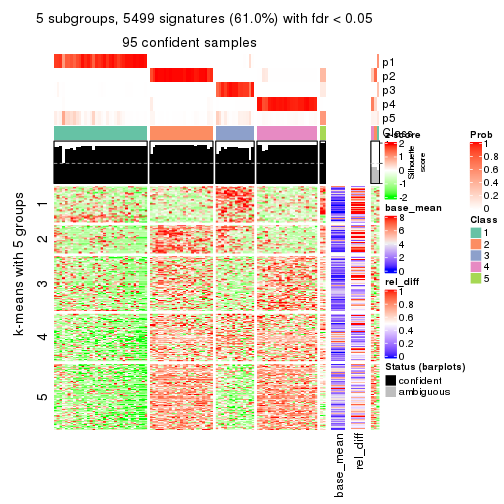
get_signatures(res, k = 6)
Signature heatmaps where rows are not scaled:
get_signatures(res, k = 2, scale_rows = FALSE)
get_signatures(res, k = 3, scale_rows = FALSE)
get_signatures(res, k = 4, scale_rows = FALSE)

get_signatures(res, k = 5, scale_rows = FALSE)
get_signatures(res, k = 6, scale_rows = FALSE)
Compare the overlap of signatures from different k:
compare_signatures(res)
get_signature() returns a data frame invisibly. TO get the list of signatures, the function
call should be assigned to a variable explicitly. In following code, if plot argument is set
to FALSE, no heatmap is plotted while only the differential analysis is performed.
# code only for demonstration
tb = get_signature(res, k = ..., plot = FALSE)
An example of the output of tb is:
#> which_row fdr mean_1 mean_2 scaled_mean_1 scaled_mean_2 km
#> 1 38 0.042760348 8.373488 9.131774 -0.5533452 0.5164555 1
#> 2 40 0.018707592 7.106213 8.469186 -0.6173731 0.5762149 1
#> 3 55 0.019134737 10.221463 11.207825 -0.6159697 0.5749050 1
#> 4 59 0.006059896 5.921854 7.869574 -0.6899429 0.6439467 1
#> 5 60 0.018055526 8.928898 10.211722 -0.6204761 0.5791110 1
#> 6 98 0.009384629 15.714769 14.887706 0.6635654 -0.6193277 2
...
The columns in tb are:
which_row: row indices corresponding to the input matrix.fdr: FDR for the differential test. mean_x: The mean value in group x.scaled_mean_x: The mean value in group x after rows are scaled.km: Row groups if k-means clustering is applied to rows.UMAP plot which shows how samples are separated.
dimension_reduction(res, k = 2, method = "UMAP")

dimension_reduction(res, k = 3, method = "UMAP")
dimension_reduction(res, k = 4, method = "UMAP")
dimension_reduction(res, k = 5, method = "UMAP")
dimension_reduction(res, k = 6, method = "UMAP")
Following heatmap shows how subgroups are split when increasing k:
collect_classes(res)
If matrix rows can be associated to genes, consider to use functional_enrichment(res,
...) to perform function enrichment for the signature genes. See this vignette for more detailed explanations.
The object with results only for a single top-value method and a single partition method can be extracted as:
res = res_list["SD", "pam"]
# you can also extract it by
# res = res_list["SD:pam"]
A summary of res and all the functions that can be applied to it:
res
#> A 'ConsensusPartition' object with k = 2, 3, 4, 5, 6.
#> On a matrix with 9017 rows and 98 columns.
#> Top rows (902, 1804, 2705, 3606, 4508) are extracted by 'SD' method.
#> Subgroups are detected by 'pam' method.
#> Performed in total 1250 partitions by row resampling.
#> Best k for subgroups seems to be 2.
#>
#> Following methods can be applied to this 'ConsensusPartition' object:
#> [1] "cola_report" "collect_classes" "collect_plots"
#> [4] "collect_stats" "colnames" "compare_signatures"
#> [7] "consensus_heatmap" "dimension_reduction" "functional_enrichment"
#> [10] "get_anno_col" "get_anno" "get_classes"
#> [13] "get_consensus" "get_matrix" "get_membership"
#> [16] "get_param" "get_signatures" "get_stats"
#> [19] "is_best_k" "is_stable_k" "membership_heatmap"
#> [22] "ncol" "nrow" "plot_ecdf"
#> [25] "rownames" "select_partition_number" "show"
#> [28] "suggest_best_k" "test_to_known_factors"
collect_plots() function collects all the plots made from res for all k (number of partitions)
into one single page to provide an easy and fast comparison between different k.
collect_plots(res)
The plots are:
k and the heatmap of
predicted classes for each k.k.k.k.All the plots in panels can be made by individual functions and they are plotted later in this section.
select_partition_number() produces several plots showing different
statistics for choosing “optimized” k. There are following statistics:
k;k, the area increased is defined as \(A_k - A_{k-1}\).The detailed explanations of these statistics can be found in the cola vignette.
Generally speaking, lower PAC score, higher mean silhouette score or higher
concordance corresponds to better partition. Rand index and Jaccard index
measure how similar the current partition is compared to partition with k-1.
If they are too similar, we won't accept k is better than k-1.
select_partition_number(res)
The numeric values for all these statistics can be obtained by get_stats().
get_stats(res)
#> k 1-PAC mean_silhouette concordance area_increased Rand Jaccard
#> 2 2 0.978 0.949 0.979 0.2259 0.783 0.783
#> 3 3 0.703 0.780 0.919 0.9387 0.764 0.699
#> 4 4 0.518 0.740 0.880 0.3869 0.810 0.654
#> 5 5 0.604 0.688 0.870 0.0832 0.941 0.836
#> 6 6 0.601 0.629 0.863 0.0138 0.990 0.968
suggest_best_k() suggests the best \(k\) based on these statistics. The rules are as follows:
suggest_best_k(res)
#> [1] 2
Following shows the table of the partitions (You need to click the show/hide
code output link to see it). The membership matrix (columns with name p*)
is inferred by
clue::cl_consensus()
function with the SE method. Basically the value in the membership matrix
represents the probability to belong to a certain group. The finall class
label for an item is determined with the group with highest probability it
belongs to.
In get_classes() function, the entropy is calculated from the membership
matrix and the silhouette score is calculated from the consensus matrix.
cbind(get_classes(res, k = 2), get_membership(res, k = 2))
#> class entropy silhouette p1 p2
#> SRR1810660 1 0.0000 0.9342 1.000 0.000
#> SRR1810659 1 0.0000 0.9342 1.000 0.000
#> SRR1810658 1 0.0000 0.9342 1.000 0.000
#> SRR1810657 1 0.0000 0.9342 1.000 0.000
#> SRR1818435 2 0.0000 0.9835 0.000 1.000
#> SRR1818434 2 0.0000 0.9835 0.000 1.000
#> SRR1810752 2 0.0000 0.9835 0.000 1.000
#> SRR1810751 2 0.0000 0.9835 0.000 1.000
#> SRR1810749 2 0.0000 0.9835 0.000 1.000
#> SRR1810748 1 0.0000 0.9342 1.000 0.000
#> SRR1810750 1 0.6973 0.7479 0.812 0.188
#> SRR1810747 2 0.0000 0.9835 0.000 1.000
#> SRR1810746 2 0.2423 0.9474 0.040 0.960
#> SRR1810745 2 0.3879 0.9110 0.076 0.924
#> SRR1810744 2 0.6623 0.7883 0.172 0.828
#> SRR1810743 2 0.0376 0.9802 0.004 0.996
#> SRR1810742 2 0.0000 0.9835 0.000 1.000
#> SRR1810741 2 0.0000 0.9835 0.000 1.000
#> SRR1810740 2 0.0000 0.9835 0.000 1.000
#> SRR1810739 2 0.1184 0.9697 0.016 0.984
#> SRR1810738 2 0.0000 0.9835 0.000 1.000
#> SRR1810737 2 0.0000 0.9835 0.000 1.000
#> SRR1810736 2 0.0000 0.9835 0.000 1.000
#> SRR1810734 2 0.0000 0.9835 0.000 1.000
#> SRR1810735 2 0.0000 0.9835 0.000 1.000
#> SRR1810733 2 0.0000 0.9835 0.000 1.000
#> SRR1810732 2 0.0000 0.9835 0.000 1.000
#> SRR1810730 2 0.0000 0.9835 0.000 1.000
#> SRR1810729 2 0.7950 0.6788 0.240 0.760
#> SRR1810731 2 0.4161 0.9019 0.084 0.916
#> SRR1810728 2 0.0000 0.9835 0.000 1.000
#> SRR1810727 2 0.0000 0.9835 0.000 1.000
#> SRR1810726 2 0.0000 0.9835 0.000 1.000
#> SRR1810725 2 0.0000 0.9835 0.000 1.000
#> SRR1810724 2 0.0000 0.9835 0.000 1.000
#> SRR1810723 2 0.3274 0.9274 0.060 0.940
#> SRR1810722 2 0.2778 0.9396 0.048 0.952
#> SRR1810721 2 0.0376 0.9802 0.004 0.996
#> SRR1810720 2 0.0000 0.9835 0.000 1.000
#> SRR1810719 2 0.0000 0.9835 0.000 1.000
#> SRR1810718 1 0.0000 0.9342 1.000 0.000
#> SRR1810717 2 0.9635 0.3367 0.388 0.612
#> SRR1810716 2 0.0000 0.9835 0.000 1.000
#> SRR1810715 2 0.0000 0.9835 0.000 1.000
#> SRR1810713 2 0.0000 0.9835 0.000 1.000
#> SRR1810714 1 0.0000 0.9342 1.000 0.000
#> SRR1810712 2 0.0000 0.9835 0.000 1.000
#> SRR1810710 2 0.0000 0.9835 0.000 1.000
#> SRR1810711 2 0.0000 0.9835 0.000 1.000
#> SRR1810709 2 0.0000 0.9835 0.000 1.000
#> SRR1810708 1 0.9998 0.0406 0.508 0.492
#> SRR1810707 2 0.0000 0.9835 0.000 1.000
#> SRR1810706 2 0.0000 0.9835 0.000 1.000
#> SRR1810704 2 0.7056 0.7585 0.192 0.808
#> SRR1810705 1 0.1633 0.9185 0.976 0.024
#> SRR1810703 1 0.0000 0.9342 1.000 0.000
#> SRR1810702 2 0.0000 0.9835 0.000 1.000
#> SRR1810701 1 0.0000 0.9342 1.000 0.000
#> SRR1810700 2 0.0000 0.9835 0.000 1.000
#> SRR1810699 2 0.0000 0.9835 0.000 1.000
#> SRR1810696 2 0.0000 0.9835 0.000 1.000
#> SRR1810695 2 0.0000 0.9835 0.000 1.000
#> SRR1810698 2 0.0000 0.9835 0.000 1.000
#> SRR1810697 2 0.0000 0.9835 0.000 1.000
#> SRR1810694 2 0.0000 0.9835 0.000 1.000
#> SRR1810693 2 0.0000 0.9835 0.000 1.000
#> SRR1810692 2 0.0000 0.9835 0.000 1.000
#> SRR1810690 2 0.0000 0.9835 0.000 1.000
#> SRR1810691 2 0.0000 0.9835 0.000 1.000
#> SRR1810689 2 0.0000 0.9835 0.000 1.000
#> SRR1810688 2 0.0000 0.9835 0.000 1.000
#> SRR1810687 2 0.0000 0.9835 0.000 1.000
#> SRR1810685 2 0.0000 0.9835 0.000 1.000
#> SRR1810686 2 0.0000 0.9835 0.000 1.000
#> SRR1810684 2 0.0000 0.9835 0.000 1.000
#> SRR1810683 2 0.0000 0.9835 0.000 1.000
#> SRR1810680 2 0.0000 0.9835 0.000 1.000
#> SRR1810679 2 0.0000 0.9835 0.000 1.000
#> SRR1810678 2 0.0000 0.9835 0.000 1.000
#> SRR1810682 2 0.0000 0.9835 0.000 1.000
#> SRR1810681 2 0.0000 0.9835 0.000 1.000
#> SRR1810677 2 0.0000 0.9835 0.000 1.000
#> SRR1810676 2 0.0000 0.9835 0.000 1.000
#> SRR1810675 2 0.0000 0.9835 0.000 1.000
#> SRR1810673 2 0.0000 0.9835 0.000 1.000
#> SRR1810674 2 0.0000 0.9835 0.000 1.000
#> SRR1810671 2 0.0000 0.9835 0.000 1.000
#> SRR1810670 2 0.0000 0.9835 0.000 1.000
#> SRR1810669 2 0.0000 0.9835 0.000 1.000
#> SRR1810667 2 0.0000 0.9835 0.000 1.000
#> SRR1810666 2 0.0000 0.9835 0.000 1.000
#> SRR1810672 2 0.0000 0.9835 0.000 1.000
#> SRR1810668 2 0.0000 0.9835 0.000 1.000
#> SRR1810665 2 0.0000 0.9835 0.000 1.000
#> SRR1810664 2 0.0000 0.9835 0.000 1.000
#> SRR1810663 2 0.0000 0.9835 0.000 1.000
#> SRR1810661 2 0.0000 0.9835 0.000 1.000
#> SRR1810662 2 0.0000 0.9835 0.000 1.000
cbind(get_classes(res, k = 3), get_membership(res, k = 3))
#> class entropy silhouette p1 p2 p3
#> SRR1810660 3 0.0000 0.8907 0.000 0.000 1.000
#> SRR1810659 3 0.0000 0.8907 0.000 0.000 1.000
#> SRR1810658 3 0.0000 0.8907 0.000 0.000 1.000
#> SRR1810657 3 0.0000 0.8907 0.000 0.000 1.000
#> SRR1818435 1 0.0000 0.9284 1.000 0.000 0.000
#> SRR1818434 1 0.0000 0.9284 1.000 0.000 0.000
#> SRR1810752 2 0.2165 0.5984 0.064 0.936 0.000
#> SRR1810751 2 0.0237 0.5724 0.004 0.996 0.000
#> SRR1810749 1 0.0000 0.9284 1.000 0.000 0.000
#> SRR1810748 3 0.0000 0.8907 0.000 0.000 1.000
#> SRR1810750 3 0.4399 0.5874 0.188 0.000 0.812
#> SRR1810747 2 0.6309 0.3202 0.496 0.504 0.000
#> SRR1810746 1 0.1529 0.8964 0.960 0.000 0.040
#> SRR1810745 1 0.2448 0.8624 0.924 0.000 0.076
#> SRR1810744 1 0.4178 0.7431 0.828 0.000 0.172
#> SRR1810743 1 0.0237 0.9257 0.996 0.000 0.004
#> SRR1810742 1 0.0000 0.9284 1.000 0.000 0.000
#> SRR1810741 1 0.6307 -0.3184 0.512 0.488 0.000
#> SRR1810740 1 0.0000 0.9284 1.000 0.000 0.000
#> SRR1810739 1 0.0747 0.9165 0.984 0.000 0.016
#> SRR1810738 1 0.0000 0.9284 1.000 0.000 0.000
#> SRR1810737 1 0.0000 0.9284 1.000 0.000 0.000
#> SRR1810736 1 0.0000 0.9284 1.000 0.000 0.000
#> SRR1810734 2 0.6260 0.4561 0.448 0.552 0.000
#> SRR1810735 1 0.0000 0.9284 1.000 0.000 0.000
#> SRR1810733 1 0.0000 0.9284 1.000 0.000 0.000
#> SRR1810732 1 0.0000 0.9284 1.000 0.000 0.000
#> SRR1810730 1 0.0000 0.9284 1.000 0.000 0.000
#> SRR1810729 1 0.5016 0.6368 0.760 0.000 0.240
#> SRR1810731 1 0.2625 0.8536 0.916 0.000 0.084
#> SRR1810728 1 0.0000 0.9284 1.000 0.000 0.000
#> SRR1810727 1 0.0000 0.9284 1.000 0.000 0.000
#> SRR1810726 1 0.0000 0.9284 1.000 0.000 0.000
#> SRR1810725 1 0.0000 0.9284 1.000 0.000 0.000
#> SRR1810724 1 0.5529 0.4260 0.704 0.296 0.000
#> SRR1810723 1 0.2066 0.8777 0.940 0.000 0.060
#> SRR1810722 1 0.1753 0.8891 0.952 0.000 0.048
#> SRR1810721 1 0.0237 0.9257 0.996 0.000 0.004
#> SRR1810720 1 0.0000 0.9284 1.000 0.000 0.000
#> SRR1810719 2 0.0237 0.5723 0.004 0.996 0.000
#> SRR1810718 3 0.0000 0.8907 0.000 0.000 1.000
#> SRR1810717 1 0.6079 0.3301 0.612 0.000 0.388
#> SRR1810716 1 0.0000 0.9284 1.000 0.000 0.000
#> SRR1810715 1 0.5216 0.5284 0.740 0.260 0.000
#> SRR1810713 2 0.6309 0.3076 0.500 0.500 0.000
#> SRR1810714 3 0.0000 0.8907 0.000 0.000 1.000
#> SRR1810712 2 0.3879 0.6230 0.152 0.848 0.000
#> SRR1810710 1 0.0000 0.9284 1.000 0.000 0.000
#> SRR1810711 2 0.0000 0.5689 0.000 1.000 0.000
#> SRR1810709 1 0.0000 0.9284 1.000 0.000 0.000
#> SRR1810708 3 0.6308 -0.0184 0.492 0.000 0.508
#> SRR1810707 1 0.0000 0.9284 1.000 0.000 0.000
#> SRR1810706 1 0.6079 0.1072 0.612 0.388 0.000
#> SRR1810704 1 0.4452 0.7145 0.808 0.000 0.192
#> SRR1810705 3 0.1031 0.8639 0.024 0.000 0.976
#> SRR1810703 3 0.0000 0.8907 0.000 0.000 1.000
#> SRR1810702 2 0.5291 0.6363 0.268 0.732 0.000
#> SRR1810701 3 0.0000 0.8907 0.000 0.000 1.000
#> SRR1810700 2 0.6079 0.5747 0.388 0.612 0.000
#> SRR1810699 1 0.0424 0.9221 0.992 0.008 0.000
#> SRR1810696 1 0.0000 0.9284 1.000 0.000 0.000
#> SRR1810695 1 0.0000 0.9284 1.000 0.000 0.000
#> SRR1810698 1 0.0000 0.9284 1.000 0.000 0.000
#> SRR1810697 1 0.0000 0.9284 1.000 0.000 0.000
#> SRR1810694 1 0.0000 0.9284 1.000 0.000 0.000
#> SRR1810693 1 0.0000 0.9284 1.000 0.000 0.000
#> SRR1810692 1 0.0000 0.9284 1.000 0.000 0.000
#> SRR1810690 1 0.1753 0.8840 0.952 0.048 0.000
#> SRR1810691 1 0.0000 0.9284 1.000 0.000 0.000
#> SRR1810689 1 0.3340 0.7932 0.880 0.120 0.000
#> SRR1810688 2 0.5968 0.6040 0.364 0.636 0.000
#> SRR1810687 2 0.0000 0.5689 0.000 1.000 0.000
#> SRR1810685 1 0.0000 0.9284 1.000 0.000 0.000
#> SRR1810686 2 0.0000 0.5689 0.000 1.000 0.000
#> SRR1810684 1 0.0000 0.9284 1.000 0.000 0.000
#> SRR1810683 2 0.0000 0.5689 0.000 1.000 0.000
#> SRR1810680 1 0.0000 0.9284 1.000 0.000 0.000
#> SRR1810679 1 0.0000 0.9284 1.000 0.000 0.000
#> SRR1810678 1 0.6274 -0.1982 0.544 0.456 0.000
#> SRR1810682 2 0.5835 0.6264 0.340 0.660 0.000
#> SRR1810681 1 0.0000 0.9284 1.000 0.000 0.000
#> SRR1810677 1 0.6140 0.0363 0.596 0.404 0.000
#> SRR1810676 2 0.6111 0.5619 0.396 0.604 0.000
#> SRR1810675 1 0.0000 0.9284 1.000 0.000 0.000
#> SRR1810673 1 0.0000 0.9284 1.000 0.000 0.000
#> SRR1810674 1 0.0000 0.9284 1.000 0.000 0.000
#> SRR1810671 1 0.0000 0.9284 1.000 0.000 0.000
#> SRR1810670 1 0.0000 0.9284 1.000 0.000 0.000
#> SRR1810669 1 0.0000 0.9284 1.000 0.000 0.000
#> SRR1810667 1 0.0000 0.9284 1.000 0.000 0.000
#> SRR1810666 1 0.0000 0.9284 1.000 0.000 0.000
#> SRR1810672 1 0.0000 0.9284 1.000 0.000 0.000
#> SRR1810668 1 0.0000 0.9284 1.000 0.000 0.000
#> SRR1810665 1 0.0000 0.9284 1.000 0.000 0.000
#> SRR1810664 1 0.0000 0.9284 1.000 0.000 0.000
#> SRR1810663 1 0.0000 0.9284 1.000 0.000 0.000
#> SRR1810661 1 0.0000 0.9284 1.000 0.000 0.000
#> SRR1810662 1 0.0000 0.9284 1.000 0.000 0.000
cbind(get_classes(res, k = 4), get_membership(res, k = 4))
#> class entropy silhouette p1 p2 p3 p4
#> SRR1810660 1 0.0000 0.9058 1.000 0.000 0.000 0.000
#> SRR1810659 1 0.0000 0.9058 1.000 0.000 0.000 0.000
#> SRR1810658 1 0.0000 0.9058 1.000 0.000 0.000 0.000
#> SRR1810657 1 0.0000 0.9058 1.000 0.000 0.000 0.000
#> SRR1818435 3 0.0000 0.8746 0.000 0.000 1.000 0.000
#> SRR1818434 3 0.0000 0.8746 0.000 0.000 1.000 0.000
#> SRR1810752 2 0.1716 0.6318 0.000 0.936 0.064 0.000
#> SRR1810751 2 0.0188 0.6081 0.000 0.996 0.004 0.000
#> SRR1810749 3 0.0000 0.8746 0.000 0.000 1.000 0.000
#> SRR1810748 1 0.0000 0.9058 1.000 0.000 0.000 0.000
#> SRR1810750 1 0.4894 0.7032 0.780 0.000 0.120 0.100
#> SRR1810747 2 0.5000 0.2757 0.000 0.504 0.496 0.000
#> SRR1810746 3 0.1398 0.8526 0.040 0.000 0.956 0.004
#> SRR1810745 3 0.2635 0.8156 0.076 0.000 0.904 0.020
#> SRR1810744 3 0.3764 0.7303 0.172 0.000 0.816 0.012
#> SRR1810743 3 0.0188 0.8731 0.004 0.000 0.996 0.000
#> SRR1810742 4 0.2589 0.9195 0.000 0.000 0.116 0.884
#> SRR1810741 3 0.4998 -0.2786 0.000 0.488 0.512 0.000
#> SRR1810740 3 0.0000 0.8746 0.000 0.000 1.000 0.000
#> SRR1810739 3 0.0592 0.8675 0.016 0.000 0.984 0.000
#> SRR1810738 3 0.0000 0.8746 0.000 0.000 1.000 0.000
#> SRR1810737 4 0.4250 0.7252 0.000 0.000 0.276 0.724
#> SRR1810736 4 0.2469 0.9216 0.000 0.000 0.108 0.892
#> SRR1810734 2 0.4961 0.4178 0.000 0.552 0.448 0.000
#> SRR1810735 4 0.3356 0.8743 0.000 0.000 0.176 0.824
#> SRR1810733 3 0.2011 0.8211 0.000 0.000 0.920 0.080
#> SRR1810732 3 0.0000 0.8746 0.000 0.000 1.000 0.000
#> SRR1810730 3 0.4996 -0.0618 0.000 0.000 0.516 0.484
#> SRR1810729 3 0.3975 0.6591 0.240 0.000 0.760 0.000
#> SRR1810731 3 0.2081 0.8255 0.084 0.000 0.916 0.000
#> SRR1810728 4 0.2345 0.9211 0.000 0.000 0.100 0.900
#> SRR1810727 4 0.2345 0.9211 0.000 0.000 0.100 0.900
#> SRR1810726 3 0.0000 0.8746 0.000 0.000 1.000 0.000
#> SRR1810725 4 0.2345 0.9211 0.000 0.000 0.100 0.900
#> SRR1810724 4 0.2345 0.9211 0.000 0.000 0.100 0.900
#> SRR1810723 3 0.1970 0.8367 0.060 0.000 0.932 0.008
#> SRR1810722 3 0.1389 0.8496 0.048 0.000 0.952 0.000
#> SRR1810721 3 0.0188 0.8731 0.004 0.000 0.996 0.000
#> SRR1810720 3 0.0000 0.8746 0.000 0.000 1.000 0.000
#> SRR1810719 2 0.0188 0.6080 0.000 0.996 0.004 0.000
#> SRR1810718 1 0.0000 0.9058 1.000 0.000 0.000 0.000
#> SRR1810717 3 0.5453 0.3768 0.388 0.000 0.592 0.020
#> SRR1810716 4 0.2345 0.9211 0.000 0.000 0.100 0.900
#> SRR1810715 3 0.4134 0.5348 0.000 0.260 0.740 0.000
#> SRR1810713 2 0.5000 0.2633 0.000 0.500 0.500 0.000
#> SRR1810714 1 0.0188 0.9052 0.996 0.000 0.000 0.004
#> SRR1810712 2 0.3074 0.6531 0.000 0.848 0.152 0.000
#> SRR1810710 3 0.4843 0.2894 0.000 0.000 0.604 0.396
#> SRR1810711 2 0.0000 0.6048 0.000 1.000 0.000 0.000
#> SRR1810709 4 0.2345 0.9211 0.000 0.000 0.100 0.900
#> SRR1810708 1 0.5607 -0.0520 0.496 0.000 0.484 0.020
#> SRR1810707 3 0.0000 0.8746 0.000 0.000 1.000 0.000
#> SRR1810706 4 0.2345 0.9211 0.000 0.000 0.100 0.900
#> SRR1810704 3 0.4095 0.7030 0.192 0.000 0.792 0.016
#> SRR1810705 1 0.1520 0.8755 0.956 0.000 0.024 0.020
#> SRR1810703 1 0.0188 0.9052 0.996 0.000 0.000 0.004
#> SRR1810702 2 0.4193 0.6463 0.000 0.732 0.268 0.000
#> SRR1810701 1 0.0188 0.9052 0.996 0.000 0.000 0.004
#> SRR1810700 2 0.4978 0.5458 0.000 0.612 0.384 0.004
#> SRR1810699 3 0.0336 0.8704 0.000 0.008 0.992 0.000
#> SRR1810696 4 0.3610 0.8451 0.000 0.000 0.200 0.800
#> SRR1810695 3 0.4072 0.6218 0.000 0.000 0.748 0.252
#> SRR1810698 4 0.3024 0.8993 0.000 0.000 0.148 0.852
#> SRR1810697 4 0.2408 0.9218 0.000 0.000 0.104 0.896
#> SRR1810694 4 0.4564 0.6280 0.000 0.000 0.328 0.672
#> SRR1810693 3 0.0000 0.8746 0.000 0.000 1.000 0.000
#> SRR1810692 3 0.2589 0.7873 0.000 0.000 0.884 0.116
#> SRR1810690 3 0.3610 0.6957 0.000 0.000 0.800 0.200
#> SRR1810691 3 0.0000 0.8746 0.000 0.000 1.000 0.000
#> SRR1810689 3 0.2647 0.7686 0.000 0.120 0.880 0.000
#> SRR1810688 2 0.4730 0.5739 0.000 0.636 0.364 0.000
#> SRR1810687 2 0.0000 0.6048 0.000 1.000 0.000 0.000
#> SRR1810685 3 0.0000 0.8746 0.000 0.000 1.000 0.000
#> SRR1810686 2 0.0000 0.6048 0.000 1.000 0.000 0.000
#> SRR1810684 4 0.3444 0.8654 0.000 0.000 0.184 0.816
#> SRR1810683 2 0.0000 0.6048 0.000 1.000 0.000 0.000
#> SRR1810680 3 0.0000 0.8746 0.000 0.000 1.000 0.000
#> SRR1810679 4 0.2589 0.9192 0.000 0.000 0.116 0.884
#> SRR1810678 3 0.4972 -0.1558 0.000 0.456 0.544 0.000
#> SRR1810682 2 0.4624 0.6020 0.000 0.660 0.340 0.000
#> SRR1810681 3 0.4877 0.2509 0.000 0.000 0.592 0.408
#> SRR1810677 3 0.6316 0.1938 0.000 0.324 0.596 0.080
#> SRR1810676 2 0.4843 0.5272 0.000 0.604 0.396 0.000
#> SRR1810675 3 0.0000 0.8746 0.000 0.000 1.000 0.000
#> SRR1810673 3 0.0000 0.8746 0.000 0.000 1.000 0.000
#> SRR1810674 3 0.0000 0.8746 0.000 0.000 1.000 0.000
#> SRR1810671 3 0.0000 0.8746 0.000 0.000 1.000 0.000
#> SRR1810670 3 0.0000 0.8746 0.000 0.000 1.000 0.000
#> SRR1810669 3 0.0000 0.8746 0.000 0.000 1.000 0.000
#> SRR1810667 3 0.0000 0.8746 0.000 0.000 1.000 0.000
#> SRR1810666 3 0.0000 0.8746 0.000 0.000 1.000 0.000
#> SRR1810672 3 0.0000 0.8746 0.000 0.000 1.000 0.000
#> SRR1810668 3 0.0000 0.8746 0.000 0.000 1.000 0.000
#> SRR1810665 3 0.0000 0.8746 0.000 0.000 1.000 0.000
#> SRR1810664 3 0.0000 0.8746 0.000 0.000 1.000 0.000
#> SRR1810663 3 0.0000 0.8746 0.000 0.000 1.000 0.000
#> SRR1810661 3 0.0000 0.8746 0.000 0.000 1.000 0.000
#> SRR1810662 3 0.0000 0.8746 0.000 0.000 1.000 0.000
cbind(get_classes(res, k = 5), get_membership(res, k = 5))
#> class entropy silhouette p1 p2 p3 p4 p5
#> SRR1810660 5 0.0000 0.9870 0.000 0.000 0.000 0.000 1.000
#> SRR1810659 5 0.0290 0.9862 0.008 0.000 0.000 0.000 0.992
#> SRR1810658 5 0.0162 0.9870 0.004 0.000 0.000 0.000 0.996
#> SRR1810657 5 0.0000 0.9870 0.000 0.000 0.000 0.000 1.000
#> SRR1818435 3 0.0000 0.8468 0.000 0.000 1.000 0.000 0.000
#> SRR1818434 3 0.0000 0.8468 0.000 0.000 1.000 0.000 0.000
#> SRR1810752 2 0.1478 0.5891 0.000 0.936 0.064 0.000 0.000
#> SRR1810751 2 0.0162 0.5824 0.000 0.996 0.004 0.000 0.000
#> SRR1810749 3 0.0000 0.8468 0.000 0.000 1.000 0.000 0.000
#> SRR1810748 5 0.0000 0.9870 0.000 0.000 0.000 0.000 1.000
#> SRR1810750 1 0.0451 0.3184 0.988 0.000 0.000 0.004 0.008
#> SRR1810747 2 0.4307 0.2667 0.000 0.504 0.496 0.000 0.000
#> SRR1810746 3 0.3586 0.4526 0.264 0.000 0.736 0.000 0.000
#> SRR1810745 1 0.4065 0.7044 0.720 0.000 0.264 0.016 0.000
#> SRR1810744 1 0.4101 0.6465 0.628 0.000 0.372 0.000 0.000
#> SRR1810743 3 0.0794 0.8329 0.028 0.000 0.972 0.000 0.000
#> SRR1810742 4 0.1608 0.8601 0.000 0.000 0.072 0.928 0.000
#> SRR1810741 3 0.4305 -0.2710 0.000 0.488 0.512 0.000 0.000
#> SRR1810740 3 0.0000 0.8468 0.000 0.000 1.000 0.000 0.000
#> SRR1810739 3 0.0404 0.8408 0.012 0.000 0.988 0.000 0.000
#> SRR1810738 3 0.0404 0.8416 0.012 0.000 0.988 0.000 0.000
#> SRR1810737 4 0.3636 0.5625 0.000 0.000 0.272 0.728 0.000
#> SRR1810736 4 0.1270 0.8700 0.000 0.000 0.052 0.948 0.000
#> SRR1810734 2 0.4273 0.4050 0.000 0.552 0.448 0.000 0.000
#> SRR1810735 4 0.2424 0.8054 0.000 0.000 0.132 0.868 0.000
#> SRR1810733 3 0.1732 0.7849 0.000 0.000 0.920 0.080 0.000
#> SRR1810732 3 0.0000 0.8468 0.000 0.000 1.000 0.000 0.000
#> SRR1810730 3 0.4304 0.0805 0.000 0.000 0.516 0.484 0.000
#> SRR1810729 3 0.5759 0.2090 0.200 0.000 0.620 0.000 0.180
#> SRR1810731 3 0.4306 -0.3067 0.492 0.000 0.508 0.000 0.000
#> SRR1810728 4 0.0703 0.8720 0.000 0.000 0.024 0.976 0.000
#> SRR1810727 4 0.0609 0.8699 0.000 0.000 0.020 0.980 0.000
#> SRR1810726 3 0.0000 0.8468 0.000 0.000 1.000 0.000 0.000
#> SRR1810725 4 0.0609 0.8699 0.000 0.000 0.020 0.980 0.000
#> SRR1810724 4 0.0609 0.8699 0.000 0.000 0.020 0.980 0.000
#> SRR1810723 1 0.4182 0.5778 0.600 0.000 0.400 0.000 0.000
#> SRR1810722 3 0.1965 0.7759 0.096 0.000 0.904 0.000 0.000
#> SRR1810721 3 0.0794 0.8328 0.028 0.000 0.972 0.000 0.000
#> SRR1810720 3 0.0000 0.8468 0.000 0.000 1.000 0.000 0.000
#> SRR1810719 2 0.0162 0.5822 0.000 0.996 0.004 0.000 0.000
#> SRR1810718 5 0.0000 0.9870 0.000 0.000 0.000 0.000 1.000
#> SRR1810717 1 0.6375 0.6255 0.496 0.000 0.316 0.000 0.188
#> SRR1810716 4 0.0609 0.8699 0.000 0.000 0.020 0.980 0.000
#> SRR1810715 3 0.3561 0.5184 0.000 0.260 0.740 0.000 0.000
#> SRR1810713 2 0.4307 0.2538 0.000 0.500 0.500 0.000 0.000
#> SRR1810714 5 0.0880 0.9771 0.032 0.000 0.000 0.000 0.968
#> SRR1810712 2 0.2648 0.5827 0.000 0.848 0.152 0.000 0.000
#> SRR1810710 3 0.4171 0.3095 0.000 0.000 0.604 0.396 0.000
#> SRR1810711 2 0.0000 0.5802 0.000 1.000 0.000 0.000 0.000
#> SRR1810709 4 0.0703 0.8720 0.000 0.000 0.024 0.976 0.000
#> SRR1810708 1 0.4503 0.7072 0.696 0.000 0.268 0.000 0.036
#> SRR1810707 3 0.0162 0.8451 0.004 0.000 0.996 0.000 0.000
#> SRR1810706 4 0.0609 0.8699 0.000 0.000 0.020 0.980 0.000
#> SRR1810704 1 0.4009 0.6979 0.684 0.000 0.312 0.000 0.004
#> SRR1810705 1 0.4833 -0.1008 0.564 0.000 0.024 0.000 0.412
#> SRR1810703 5 0.0794 0.9792 0.028 0.000 0.000 0.000 0.972
#> SRR1810702 2 0.3612 0.5496 0.000 0.732 0.268 0.000 0.000
#> SRR1810701 5 0.0963 0.9737 0.036 0.000 0.000 0.000 0.964
#> SRR1810700 2 0.4288 0.4832 0.000 0.612 0.384 0.004 0.000
#> SRR1810699 3 0.0290 0.8432 0.000 0.008 0.992 0.000 0.000
#> SRR1810696 4 0.3039 0.7182 0.000 0.000 0.192 0.808 0.000
#> SRR1810695 3 0.3508 0.5605 0.000 0.000 0.748 0.252 0.000
#> SRR1810698 4 0.1965 0.8433 0.000 0.000 0.096 0.904 0.000
#> SRR1810697 4 0.0880 0.8734 0.000 0.000 0.032 0.968 0.000
#> SRR1810694 4 0.3895 0.4537 0.000 0.000 0.320 0.680 0.000
#> SRR1810693 3 0.0000 0.8468 0.000 0.000 1.000 0.000 0.000
#> SRR1810692 3 0.2230 0.7467 0.000 0.000 0.884 0.116 0.000
#> SRR1810690 3 0.3109 0.6430 0.000 0.000 0.800 0.200 0.000
#> SRR1810691 3 0.1270 0.8165 0.052 0.000 0.948 0.000 0.000
#> SRR1810689 3 0.2280 0.7409 0.000 0.120 0.880 0.000 0.000
#> SRR1810688 2 0.4074 0.5014 0.000 0.636 0.364 0.000 0.000
#> SRR1810687 2 0.0000 0.5802 0.000 1.000 0.000 0.000 0.000
#> SRR1810685 3 0.0880 0.8301 0.032 0.000 0.968 0.000 0.000
#> SRR1810686 2 0.0000 0.5802 0.000 1.000 0.000 0.000 0.000
#> SRR1810684 4 0.2813 0.7559 0.000 0.000 0.168 0.832 0.000
#> SRR1810683 2 0.0000 0.5802 0.000 1.000 0.000 0.000 0.000
#> SRR1810680 3 0.0000 0.8468 0.000 0.000 1.000 0.000 0.000
#> SRR1810679 4 0.1121 0.8714 0.000 0.000 0.044 0.956 0.000
#> SRR1810678 3 0.4283 -0.1523 0.000 0.456 0.544 0.000 0.000
#> SRR1810682 2 0.3983 0.5172 0.000 0.660 0.340 0.000 0.000
#> SRR1810681 3 0.4201 0.2860 0.000 0.000 0.592 0.408 0.000
#> SRR1810677 3 0.5441 0.1948 0.000 0.324 0.596 0.080 0.000
#> SRR1810676 2 0.4171 0.4737 0.000 0.604 0.396 0.000 0.000
#> SRR1810675 3 0.0000 0.8468 0.000 0.000 1.000 0.000 0.000
#> SRR1810673 3 0.0000 0.8468 0.000 0.000 1.000 0.000 0.000
#> SRR1810674 3 0.0000 0.8468 0.000 0.000 1.000 0.000 0.000
#> SRR1810671 3 0.0000 0.8468 0.000 0.000 1.000 0.000 0.000
#> SRR1810670 3 0.0000 0.8468 0.000 0.000 1.000 0.000 0.000
#> SRR1810669 3 0.0000 0.8468 0.000 0.000 1.000 0.000 0.000
#> SRR1810667 3 0.0000 0.8468 0.000 0.000 1.000 0.000 0.000
#> SRR1810666 3 0.0000 0.8468 0.000 0.000 1.000 0.000 0.000
#> SRR1810672 3 0.0000 0.8468 0.000 0.000 1.000 0.000 0.000
#> SRR1810668 3 0.0000 0.8468 0.000 0.000 1.000 0.000 0.000
#> SRR1810665 3 0.0000 0.8468 0.000 0.000 1.000 0.000 0.000
#> SRR1810664 3 0.0000 0.8468 0.000 0.000 1.000 0.000 0.000
#> SRR1810663 3 0.0000 0.8468 0.000 0.000 1.000 0.000 0.000
#> SRR1810661 3 0.0000 0.8468 0.000 0.000 1.000 0.000 0.000
#> SRR1810662 3 0.0000 0.8468 0.000 0.000 1.000 0.000 0.000
cbind(get_classes(res, k = 6), get_membership(res, k = 6))
#> class entropy silhouette p1 p2 p3 p4 p5 p6
#> SRR1810660 5 0.0000 0.9855 0.000 0.000 0.000 0.000 1.000 0.000
#> SRR1810659 5 0.0291 0.9846 0.004 0.000 0.000 0.000 0.992 0.004
#> SRR1810658 5 0.0146 0.9853 0.004 0.000 0.000 0.000 0.996 0.000
#> SRR1810657 5 0.0000 0.9855 0.000 0.000 0.000 0.000 1.000 0.000
#> SRR1818435 3 0.0000 0.8239 0.000 0.000 1.000 0.000 0.000 0.000
#> SRR1818434 3 0.0000 0.8239 0.000 0.000 1.000 0.000 0.000 0.000
#> SRR1810752 2 0.1327 0.5429 0.000 0.936 0.064 0.000 0.000 0.000
#> SRR1810751 2 0.0146 0.5419 0.000 0.996 0.004 0.000 0.000 0.000
#> SRR1810749 3 0.0000 0.8239 0.000 0.000 1.000 0.000 0.000 0.000
#> SRR1810748 5 0.0000 0.9855 0.000 0.000 0.000 0.000 1.000 0.000
#> SRR1810750 1 0.2632 0.2049 0.832 0.000 0.000 0.000 0.004 0.164
#> SRR1810747 2 0.3868 0.2473 0.000 0.504 0.496 0.000 0.000 0.000
#> SRR1810746 6 0.5087 0.0000 0.092 0.000 0.348 0.000 0.000 0.560
#> SRR1810745 1 0.4511 0.3505 0.736 0.000 0.136 0.016 0.000 0.112
#> SRR1810744 1 0.4470 0.2224 0.604 0.000 0.356 0.000 0.000 0.040
#> SRR1810743 3 0.0891 0.8054 0.024 0.000 0.968 0.000 0.000 0.008
#> SRR1810742 4 0.1444 0.8455 0.000 0.000 0.072 0.928 0.000 0.000
#> SRR1810741 3 0.3867 -0.2732 0.000 0.488 0.512 0.000 0.000 0.000
#> SRR1810740 3 0.0000 0.8239 0.000 0.000 1.000 0.000 0.000 0.000
#> SRR1810739 3 0.0508 0.8157 0.004 0.000 0.984 0.000 0.000 0.012
#> SRR1810738 3 0.0363 0.8182 0.012 0.000 0.988 0.000 0.000 0.000
#> SRR1810737 4 0.3266 0.5052 0.000 0.000 0.272 0.728 0.000 0.000
#> SRR1810736 4 0.1141 0.8569 0.000 0.000 0.052 0.948 0.000 0.000
#> SRR1810734 2 0.3838 0.3315 0.000 0.552 0.448 0.000 0.000 0.000
#> SRR1810735 4 0.2135 0.7863 0.000 0.000 0.128 0.872 0.000 0.000
#> SRR1810733 3 0.1556 0.7487 0.000 0.000 0.920 0.080 0.000 0.000
#> SRR1810732 3 0.0000 0.8239 0.000 0.000 1.000 0.000 0.000 0.000
#> SRR1810730 3 0.3866 -0.0206 0.000 0.000 0.516 0.484 0.000 0.000
#> SRR1810729 3 0.5335 0.0681 0.200 0.000 0.612 0.000 0.184 0.004
#> SRR1810731 3 0.4981 -0.2593 0.436 0.000 0.496 0.000 0.000 0.068
#> SRR1810728 4 0.0547 0.8596 0.000 0.000 0.020 0.980 0.000 0.000
#> SRR1810727 4 0.0458 0.8575 0.000 0.000 0.016 0.984 0.000 0.000
#> SRR1810726 3 0.0000 0.8239 0.000 0.000 1.000 0.000 0.000 0.000
#> SRR1810725 4 0.0458 0.8575 0.000 0.000 0.016 0.984 0.000 0.000
#> SRR1810724 4 0.0458 0.8575 0.000 0.000 0.016 0.984 0.000 0.000
#> SRR1810723 1 0.4461 0.1239 0.564 0.000 0.404 0.000 0.000 0.032
#> SRR1810722 3 0.2554 0.7137 0.076 0.000 0.876 0.000 0.000 0.048
#> SRR1810721 3 0.0891 0.8052 0.024 0.000 0.968 0.000 0.000 0.008
#> SRR1810720 3 0.0146 0.8223 0.000 0.000 0.996 0.000 0.000 0.004
#> SRR1810719 2 0.0146 0.5418 0.000 0.996 0.004 0.000 0.000 0.000
#> SRR1810718 5 0.0000 0.9855 0.000 0.000 0.000 0.000 1.000 0.000
#> SRR1810717 1 0.5834 0.1088 0.496 0.000 0.316 0.000 0.184 0.004
#> SRR1810716 4 0.0458 0.8575 0.000 0.000 0.016 0.984 0.000 0.000
#> SRR1810715 3 0.3198 0.4659 0.000 0.260 0.740 0.000 0.000 0.000
#> SRR1810713 2 0.3869 0.2455 0.000 0.500 0.500 0.000 0.000 0.000
#> SRR1810714 5 0.1010 0.9720 0.036 0.000 0.000 0.000 0.960 0.004
#> SRR1810712 2 0.2378 0.5283 0.000 0.848 0.152 0.000 0.000 0.000
#> SRR1810710 3 0.3747 0.1902 0.000 0.000 0.604 0.396 0.000 0.000
#> SRR1810711 2 0.0000 0.5401 0.000 1.000 0.000 0.000 0.000 0.000
#> SRR1810709 4 0.0547 0.8596 0.000 0.000 0.020 0.980 0.000 0.000
#> SRR1810708 1 0.5607 0.3396 0.632 0.000 0.180 0.000 0.036 0.152
#> SRR1810707 3 0.0291 0.8205 0.004 0.000 0.992 0.000 0.000 0.004
#> SRR1810706 4 0.0458 0.8575 0.000 0.000 0.016 0.984 0.000 0.000
#> SRR1810704 1 0.3721 0.3053 0.684 0.000 0.308 0.000 0.004 0.004
#> SRR1810705 1 0.4478 -0.0270 0.580 0.000 0.016 0.000 0.392 0.012
#> SRR1810703 5 0.0858 0.9764 0.028 0.000 0.000 0.000 0.968 0.004
#> SRR1810702 2 0.3244 0.4862 0.000 0.732 0.268 0.000 0.000 0.000
#> SRR1810701 5 0.1010 0.9720 0.036 0.000 0.000 0.000 0.960 0.004
#> SRR1810700 2 0.3852 0.4119 0.000 0.612 0.384 0.004 0.000 0.000
#> SRR1810699 3 0.0260 0.8199 0.000 0.008 0.992 0.000 0.000 0.000
#> SRR1810696 4 0.2730 0.6856 0.000 0.000 0.192 0.808 0.000 0.000
#> SRR1810695 3 0.3151 0.4791 0.000 0.000 0.748 0.252 0.000 0.000
#> SRR1810698 4 0.1765 0.8254 0.000 0.000 0.096 0.904 0.000 0.000
#> SRR1810697 4 0.0790 0.8614 0.000 0.000 0.032 0.968 0.000 0.000
#> SRR1810694 4 0.3499 0.3772 0.000 0.000 0.320 0.680 0.000 0.000
#> SRR1810693 3 0.0146 0.8225 0.000 0.000 0.996 0.000 0.000 0.004
#> SRR1810692 3 0.2003 0.7037 0.000 0.000 0.884 0.116 0.000 0.000
#> SRR1810690 3 0.2793 0.5795 0.000 0.000 0.800 0.200 0.000 0.000
#> SRR1810691 3 0.1265 0.7901 0.044 0.000 0.948 0.000 0.000 0.008
#> SRR1810689 3 0.2048 0.6968 0.000 0.120 0.880 0.000 0.000 0.000
#> SRR1810688 2 0.3659 0.4134 0.000 0.636 0.364 0.000 0.000 0.000
#> SRR1810687 2 0.0000 0.5401 0.000 1.000 0.000 0.000 0.000 0.000
#> SRR1810685 3 0.0972 0.8019 0.028 0.000 0.964 0.000 0.000 0.008
#> SRR1810686 2 0.0000 0.5401 0.000 1.000 0.000 0.000 0.000 0.000
#> SRR1810684 4 0.2527 0.7279 0.000 0.000 0.168 0.832 0.000 0.000
#> SRR1810683 2 0.0000 0.5401 0.000 1.000 0.000 0.000 0.000 0.000
#> SRR1810680 3 0.0000 0.8239 0.000 0.000 1.000 0.000 0.000 0.000
#> SRR1810679 4 0.0937 0.8591 0.000 0.000 0.040 0.960 0.000 0.000
#> SRR1810678 3 0.3847 -0.1543 0.000 0.456 0.544 0.000 0.000 0.000
#> SRR1810682 2 0.3578 0.4294 0.000 0.660 0.340 0.000 0.000 0.000
#> SRR1810681 3 0.3774 0.1633 0.000 0.000 0.592 0.408 0.000 0.000
#> SRR1810677 3 0.4887 0.1954 0.000 0.324 0.596 0.080 0.000 0.000
#> SRR1810676 2 0.3747 0.4012 0.000 0.604 0.396 0.000 0.000 0.000
#> SRR1810675 3 0.0000 0.8239 0.000 0.000 1.000 0.000 0.000 0.000
#> SRR1810673 3 0.0000 0.8239 0.000 0.000 1.000 0.000 0.000 0.000
#> SRR1810674 3 0.0000 0.8239 0.000 0.000 1.000 0.000 0.000 0.000
#> SRR1810671 3 0.0000 0.8239 0.000 0.000 1.000 0.000 0.000 0.000
#> SRR1810670 3 0.0000 0.8239 0.000 0.000 1.000 0.000 0.000 0.000
#> SRR1810669 3 0.0000 0.8239 0.000 0.000 1.000 0.000 0.000 0.000
#> SRR1810667 3 0.0000 0.8239 0.000 0.000 1.000 0.000 0.000 0.000
#> SRR1810666 3 0.0000 0.8239 0.000 0.000 1.000 0.000 0.000 0.000
#> SRR1810672 3 0.0000 0.8239 0.000 0.000 1.000 0.000 0.000 0.000
#> SRR1810668 3 0.0000 0.8239 0.000 0.000 1.000 0.000 0.000 0.000
#> SRR1810665 3 0.0000 0.8239 0.000 0.000 1.000 0.000 0.000 0.000
#> SRR1810664 3 0.0000 0.8239 0.000 0.000 1.000 0.000 0.000 0.000
#> SRR1810663 3 0.0000 0.8239 0.000 0.000 1.000 0.000 0.000 0.000
#> SRR1810661 3 0.0000 0.8239 0.000 0.000 1.000 0.000 0.000 0.000
#> SRR1810662 3 0.0000 0.8239 0.000 0.000 1.000 0.000 0.000 0.000
Heatmaps for the consensus matrix. It visualizes the probability of two samples to be in a same group.
consensus_heatmap(res, k = 2)
consensus_heatmap(res, k = 3)
consensus_heatmap(res, k = 4)
consensus_heatmap(res, k = 5)
consensus_heatmap(res, k = 6)
Heatmaps for the membership of samples in all partitions to see how consistent they are:
membership_heatmap(res, k = 2)
membership_heatmap(res, k = 3)
membership_heatmap(res, k = 4)
membership_heatmap(res, k = 5)
membership_heatmap(res, k = 6)
As soon as we have had the classes for columns, we can look for signatures which are significantly different between classes which can be candidate marks for certain classes. Following are the heatmaps for signatures.
Signature heatmaps where rows are scaled:
get_signatures(res, k = 2)
get_signatures(res, k = 3)
get_signatures(res, k = 4)
get_signatures(res, k = 5)

get_signatures(res, k = 6)
Signature heatmaps where rows are not scaled:
get_signatures(res, k = 2, scale_rows = FALSE)
get_signatures(res, k = 3, scale_rows = FALSE)
get_signatures(res, k = 4, scale_rows = FALSE)
get_signatures(res, k = 5, scale_rows = FALSE)
get_signatures(res, k = 6, scale_rows = FALSE)
Compare the overlap of signatures from different k:
compare_signatures(res)
get_signature() returns a data frame invisibly. TO get the list of signatures, the function
call should be assigned to a variable explicitly. In following code, if plot argument is set
to FALSE, no heatmap is plotted while only the differential analysis is performed.
# code only for demonstration
tb = get_signature(res, k = ..., plot = FALSE)
An example of the output of tb is:
#> which_row fdr mean_1 mean_2 scaled_mean_1 scaled_mean_2 km
#> 1 38 0.042760348 8.373488 9.131774 -0.5533452 0.5164555 1
#> 2 40 0.018707592 7.106213 8.469186 -0.6173731 0.5762149 1
#> 3 55 0.019134737 10.221463 11.207825 -0.6159697 0.5749050 1
#> 4 59 0.006059896 5.921854 7.869574 -0.6899429 0.6439467 1
#> 5 60 0.018055526 8.928898 10.211722 -0.6204761 0.5791110 1
#> 6 98 0.009384629 15.714769 14.887706 0.6635654 -0.6193277 2
...
The columns in tb are:
which_row: row indices corresponding to the input matrix.fdr: FDR for the differential test. mean_x: The mean value in group x.scaled_mean_x: The mean value in group x after rows are scaled.km: Row groups if k-means clustering is applied to rows.UMAP plot which shows how samples are separated.
dimension_reduction(res, k = 2, method = "UMAP")
dimension_reduction(res, k = 3, method = "UMAP")
dimension_reduction(res, k = 4, method = "UMAP")
dimension_reduction(res, k = 5, method = "UMAP")
dimension_reduction(res, k = 6, method = "UMAP")
Following heatmap shows how subgroups are split when increasing k:
collect_classes(res)
If matrix rows can be associated to genes, consider to use functional_enrichment(res,
...) to perform function enrichment for the signature genes. See this vignette for more detailed explanations.
The object with results only for a single top-value method and a single partition method can be extracted as:
res = res_list["SD", "mclust"]
# you can also extract it by
# res = res_list["SD:mclust"]
A summary of res and all the functions that can be applied to it:
res
#> A 'ConsensusPartition' object with k = 2, 3, 4, 5, 6.
#> On a matrix with 9017 rows and 98 columns.
#> Top rows (902, 1804, 2705, 3606, 4508) are extracted by 'SD' method.
#> Subgroups are detected by 'mclust' method.
#> Performed in total 1250 partitions by row resampling.
#> Best k for subgroups seems to be 6.
#>
#> Following methods can be applied to this 'ConsensusPartition' object:
#> [1] "cola_report" "collect_classes" "collect_plots"
#> [4] "collect_stats" "colnames" "compare_signatures"
#> [7] "consensus_heatmap" "dimension_reduction" "functional_enrichment"
#> [10] "get_anno_col" "get_anno" "get_classes"
#> [13] "get_consensus" "get_matrix" "get_membership"
#> [16] "get_param" "get_signatures" "get_stats"
#> [19] "is_best_k" "is_stable_k" "membership_heatmap"
#> [22] "ncol" "nrow" "plot_ecdf"
#> [25] "rownames" "select_partition_number" "show"
#> [28] "suggest_best_k" "test_to_known_factors"
collect_plots() function collects all the plots made from res for all k (number of partitions)
into one single page to provide an easy and fast comparison between different k.
collect_plots(res)
The plots are:
k and the heatmap of
predicted classes for each k.k.k.k.All the plots in panels can be made by individual functions and they are plotted later in this section.
select_partition_number() produces several plots showing different
statistics for choosing “optimized” k. There are following statistics:
k;k, the area increased is defined as \(A_k - A_{k-1}\).The detailed explanations of these statistics can be found in the cola vignette.
Generally speaking, lower PAC score, higher mean silhouette score or higher
concordance corresponds to better partition. Rand index and Jaccard index
measure how similar the current partition is compared to partition with k-1.
If they are too similar, we won't accept k is better than k-1.
select_partition_number(res)
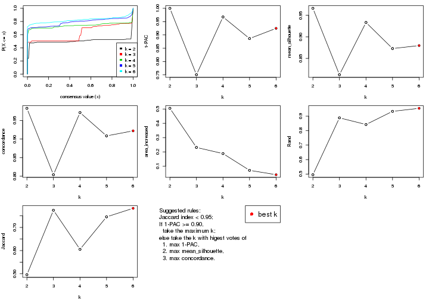
The numeric values for all these statistics can be obtained by get_stats().
get_stats(res)
#> k 1-PAC mean_silhouette concordance area_increased Rand Jaccard
#> 2 2 1.000 0.966 0.983 0.5049 0.496 0.496
#> 3 3 0.751 0.812 0.804 0.2310 0.888 0.774
#> 4 4 0.968 0.933 0.971 0.1880 0.842 0.605
#> 5 5 0.886 0.873 0.909 0.0710 0.933 0.746
#> 6 6 0.925 0.880 0.922 0.0402 0.954 0.783
suggest_best_k() suggests the best \(k\) based on these statistics. The rules are as follows:
suggest_best_k(res)
#> [1] 6
#> attr(,"optional")
#> [1] 2 4
There is also optional best \(k\) = 2 4 that is worth to check.
Following shows the table of the partitions (You need to click the show/hide
code output link to see it). The membership matrix (columns with name p*)
is inferred by
clue::cl_consensus()
function with the SE method. Basically the value in the membership matrix
represents the probability to belong to a certain group. The finall class
label for an item is determined with the group with highest probability it
belongs to.
In get_classes() function, the entropy is calculated from the membership
matrix and the silhouette score is calculated from the consensus matrix.
cbind(get_classes(res, k = 2), get_membership(res, k = 2))
#> class entropy silhouette p1 p2
#> SRR1810660 1 0.000 0.975 1.000 0.000
#> SRR1810659 1 0.000 0.975 1.000 0.000
#> SRR1810658 1 0.000 0.975 1.000 0.000
#> SRR1810657 1 0.000 0.975 1.000 0.000
#> SRR1818435 1 0.996 0.184 0.536 0.464
#> SRR1818434 1 0.969 0.381 0.604 0.396
#> SRR1810752 2 0.000 0.990 0.000 1.000
#> SRR1810751 2 0.000 0.990 0.000 1.000
#> SRR1810749 1 0.000 0.975 1.000 0.000
#> SRR1810748 1 0.000 0.975 1.000 0.000
#> SRR1810750 1 0.000 0.975 1.000 0.000
#> SRR1810747 2 0.000 0.990 0.000 1.000
#> SRR1810746 1 0.000 0.975 1.000 0.000
#> SRR1810745 1 0.000 0.975 1.000 0.000
#> SRR1810744 1 0.000 0.975 1.000 0.000
#> SRR1810743 1 0.000 0.975 1.000 0.000
#> SRR1810742 2 0.141 0.989 0.020 0.980
#> SRR1810741 2 0.000 0.990 0.000 1.000
#> SRR1810740 1 0.000 0.975 1.000 0.000
#> SRR1810739 1 0.000 0.975 1.000 0.000
#> SRR1810738 1 0.000 0.975 1.000 0.000
#> SRR1810737 2 0.141 0.989 0.020 0.980
#> SRR1810736 2 0.141 0.989 0.020 0.980
#> SRR1810734 2 0.000 0.990 0.000 1.000
#> SRR1810735 2 0.141 0.989 0.020 0.980
#> SRR1810733 2 0.141 0.989 0.020 0.980
#> SRR1810732 1 0.000 0.975 1.000 0.000
#> SRR1810730 2 0.141 0.989 0.020 0.980
#> SRR1810729 1 0.000 0.975 1.000 0.000
#> SRR1810731 1 0.000 0.975 1.000 0.000
#> SRR1810728 2 0.141 0.989 0.020 0.980
#> SRR1810727 2 0.141 0.989 0.020 0.980
#> SRR1810726 1 0.343 0.918 0.936 0.064
#> SRR1810725 2 0.141 0.989 0.020 0.980
#> SRR1810724 2 0.141 0.989 0.020 0.980
#> SRR1810723 1 0.000 0.975 1.000 0.000
#> SRR1810722 1 0.000 0.975 1.000 0.000
#> SRR1810721 1 0.000 0.975 1.000 0.000
#> SRR1810720 1 0.000 0.975 1.000 0.000
#> SRR1810719 2 0.000 0.990 0.000 1.000
#> SRR1810718 1 0.000 0.975 1.000 0.000
#> SRR1810717 1 0.000 0.975 1.000 0.000
#> SRR1810716 2 0.141 0.989 0.020 0.980
#> SRR1810715 2 0.000 0.990 0.000 1.000
#> SRR1810713 2 0.000 0.990 0.000 1.000
#> SRR1810714 1 0.000 0.975 1.000 0.000
#> SRR1810712 2 0.000 0.990 0.000 1.000
#> SRR1810710 2 0.141 0.989 0.020 0.980
#> SRR1810711 2 0.000 0.990 0.000 1.000
#> SRR1810709 2 0.141 0.989 0.020 0.980
#> SRR1810708 1 0.000 0.975 1.000 0.000
#> SRR1810707 1 0.000 0.975 1.000 0.000
#> SRR1810706 2 0.141 0.989 0.020 0.980
#> SRR1810704 1 0.000 0.975 1.000 0.000
#> SRR1810705 1 0.000 0.975 1.000 0.000
#> SRR1810703 1 0.000 0.975 1.000 0.000
#> SRR1810702 2 0.000 0.990 0.000 1.000
#> SRR1810701 1 0.000 0.975 1.000 0.000
#> SRR1810700 2 0.000 0.990 0.000 1.000
#> SRR1810699 2 0.000 0.990 0.000 1.000
#> SRR1810696 2 0.141 0.989 0.020 0.980
#> SRR1810695 2 0.141 0.989 0.020 0.980
#> SRR1810698 2 0.141 0.989 0.020 0.980
#> SRR1810697 2 0.141 0.989 0.020 0.980
#> SRR1810694 2 0.141 0.989 0.020 0.980
#> SRR1810693 1 0.000 0.975 1.000 0.000
#> SRR1810692 2 0.141 0.989 0.020 0.980
#> SRR1810690 2 0.000 0.990 0.000 1.000
#> SRR1810691 1 0.000 0.975 1.000 0.000
#> SRR1810689 2 0.000 0.990 0.000 1.000
#> SRR1810688 2 0.000 0.990 0.000 1.000
#> SRR1810687 2 0.000 0.990 0.000 1.000
#> SRR1810685 1 0.000 0.975 1.000 0.000
#> SRR1810686 2 0.000 0.990 0.000 1.000
#> SRR1810684 2 0.141 0.989 0.020 0.980
#> SRR1810683 2 0.000 0.990 0.000 1.000
#> SRR1810680 2 0.000 0.990 0.000 1.000
#> SRR1810679 2 0.141 0.989 0.020 0.980
#> SRR1810678 2 0.000 0.990 0.000 1.000
#> SRR1810682 2 0.000 0.990 0.000 1.000
#> SRR1810681 2 0.141 0.989 0.020 0.980
#> SRR1810677 2 0.000 0.990 0.000 1.000
#> SRR1810676 2 0.000 0.990 0.000 1.000
#> SRR1810675 1 0.141 0.968 0.980 0.020
#> SRR1810673 1 0.141 0.968 0.980 0.020
#> SRR1810674 1 0.141 0.968 0.980 0.020
#> SRR1810671 1 0.141 0.968 0.980 0.020
#> SRR1810670 1 0.141 0.968 0.980 0.020
#> SRR1810669 1 0.141 0.968 0.980 0.020
#> SRR1810667 1 0.141 0.968 0.980 0.020
#> SRR1810666 1 0.141 0.968 0.980 0.020
#> SRR1810672 1 0.141 0.968 0.980 0.020
#> SRR1810668 1 0.141 0.968 0.980 0.020
#> SRR1810665 1 0.141 0.968 0.980 0.020
#> SRR1810664 1 0.141 0.968 0.980 0.020
#> SRR1810663 1 0.141 0.968 0.980 0.020
#> SRR1810661 1 0.141 0.968 0.980 0.020
#> SRR1810662 1 0.141 0.968 0.980 0.020
cbind(get_classes(res, k = 3), get_membership(res, k = 3))
#> class entropy silhouette p1 p2 p3
#> SRR1810660 1 0.6307 0.860 0.512 0.000 0.488
#> SRR1810659 1 0.6307 0.860 0.512 0.000 0.488
#> SRR1810658 1 0.6307 0.860 0.512 0.000 0.488
#> SRR1810657 1 0.6307 0.860 0.512 0.000 0.488
#> SRR1818435 1 0.4137 0.706 0.872 0.032 0.096
#> SRR1818434 1 0.4137 0.706 0.872 0.032 0.096
#> SRR1810752 2 0.0000 0.883 0.000 1.000 0.000
#> SRR1810751 2 0.0000 0.883 0.000 1.000 0.000
#> SRR1810749 1 0.6307 0.860 0.512 0.000 0.488
#> SRR1810748 1 0.6307 0.860 0.512 0.000 0.488
#> SRR1810750 1 0.6307 0.860 0.512 0.000 0.488
#> SRR1810747 2 0.0000 0.883 0.000 1.000 0.000
#> SRR1810746 1 0.6307 0.860 0.512 0.000 0.488
#> SRR1810745 1 0.6307 0.860 0.512 0.000 0.488
#> SRR1810744 1 0.6307 0.860 0.512 0.000 0.488
#> SRR1810743 1 0.6307 0.860 0.512 0.000 0.488
#> SRR1810742 3 0.6307 0.998 0.000 0.488 0.512
#> SRR1810741 2 0.0000 0.883 0.000 1.000 0.000
#> SRR1810740 1 0.6307 0.860 0.512 0.000 0.488
#> SRR1810739 1 0.6307 0.860 0.512 0.000 0.488
#> SRR1810738 1 0.6307 0.860 0.512 0.000 0.488
#> SRR1810737 3 0.6307 0.998 0.000 0.488 0.512
#> SRR1810736 3 0.6307 0.998 0.000 0.488 0.512
#> SRR1810734 2 0.0000 0.883 0.000 1.000 0.000
#> SRR1810735 3 0.6307 0.998 0.000 0.488 0.512
#> SRR1810733 3 0.6307 0.998 0.000 0.488 0.512
#> SRR1810732 1 0.6307 0.860 0.512 0.000 0.488
#> SRR1810730 3 0.6307 0.998 0.000 0.488 0.512
#> SRR1810729 1 0.6307 0.860 0.512 0.000 0.488
#> SRR1810731 1 0.6307 0.860 0.512 0.000 0.488
#> SRR1810728 3 0.6307 0.998 0.000 0.488 0.512
#> SRR1810727 3 0.6307 0.998 0.000 0.488 0.512
#> SRR1810726 1 0.6307 0.860 0.512 0.000 0.488
#> SRR1810725 3 0.6307 0.998 0.000 0.488 0.512
#> SRR1810724 3 0.6309 0.972 0.000 0.500 0.500
#> SRR1810723 1 0.6307 0.860 0.512 0.000 0.488
#> SRR1810722 1 0.6307 0.860 0.512 0.000 0.488
#> SRR1810721 1 0.6307 0.860 0.512 0.000 0.488
#> SRR1810720 1 0.6307 0.860 0.512 0.000 0.488
#> SRR1810719 2 0.0000 0.883 0.000 1.000 0.000
#> SRR1810718 1 0.6307 0.860 0.512 0.000 0.488
#> SRR1810717 1 0.6307 0.860 0.512 0.000 0.488
#> SRR1810716 3 0.6307 0.998 0.000 0.488 0.512
#> SRR1810715 2 0.0000 0.883 0.000 1.000 0.000
#> SRR1810713 2 0.0000 0.883 0.000 1.000 0.000
#> SRR1810714 1 0.6307 0.860 0.512 0.000 0.488
#> SRR1810712 2 0.0000 0.883 0.000 1.000 0.000
#> SRR1810710 3 0.6307 0.998 0.000 0.488 0.512
#> SRR1810711 2 0.0000 0.883 0.000 1.000 0.000
#> SRR1810709 3 0.6307 0.998 0.000 0.488 0.512
#> SRR1810708 1 0.6307 0.860 0.512 0.000 0.488
#> SRR1810707 1 0.6307 0.860 0.512 0.000 0.488
#> SRR1810706 2 0.6309 -0.974 0.000 0.500 0.500
#> SRR1810704 1 0.6307 0.860 0.512 0.000 0.488
#> SRR1810705 1 0.6307 0.860 0.512 0.000 0.488
#> SRR1810703 1 0.6307 0.860 0.512 0.000 0.488
#> SRR1810702 2 0.0000 0.883 0.000 1.000 0.000
#> SRR1810701 1 0.6307 0.860 0.512 0.000 0.488
#> SRR1810700 2 0.0000 0.883 0.000 1.000 0.000
#> SRR1810699 2 0.0000 0.883 0.000 1.000 0.000
#> SRR1810696 3 0.6307 0.998 0.000 0.488 0.512
#> SRR1810695 2 0.4702 0.359 0.000 0.788 0.212
#> SRR1810698 3 0.6307 0.998 0.000 0.488 0.512
#> SRR1810697 3 0.6307 0.998 0.000 0.488 0.512
#> SRR1810694 3 0.6307 0.998 0.000 0.488 0.512
#> SRR1810693 1 0.6307 0.860 0.512 0.000 0.488
#> SRR1810692 2 0.4842 0.303 0.000 0.776 0.224
#> SRR1810690 2 0.3551 0.635 0.000 0.868 0.132
#> SRR1810691 1 0.6307 0.860 0.512 0.000 0.488
#> SRR1810689 2 0.0000 0.883 0.000 1.000 0.000
#> SRR1810688 2 0.0000 0.883 0.000 1.000 0.000
#> SRR1810687 2 0.0000 0.883 0.000 1.000 0.000
#> SRR1810685 1 0.6307 0.860 0.512 0.000 0.488
#> SRR1810686 2 0.0000 0.883 0.000 1.000 0.000
#> SRR1810684 3 0.6307 0.998 0.000 0.488 0.512
#> SRR1810683 2 0.0000 0.883 0.000 1.000 0.000
#> SRR1810680 2 0.0892 0.856 0.000 0.980 0.020
#> SRR1810679 3 0.6307 0.998 0.000 0.488 0.512
#> SRR1810678 2 0.0000 0.883 0.000 1.000 0.000
#> SRR1810682 2 0.0000 0.883 0.000 1.000 0.000
#> SRR1810681 2 0.5810 -0.398 0.000 0.664 0.336
#> SRR1810677 2 0.4002 0.556 0.000 0.840 0.160
#> SRR1810676 2 0.0000 0.883 0.000 1.000 0.000
#> SRR1810675 1 0.0000 0.675 1.000 0.000 0.000
#> SRR1810673 1 0.0000 0.675 1.000 0.000 0.000
#> SRR1810674 1 0.0000 0.675 1.000 0.000 0.000
#> SRR1810671 1 0.0000 0.675 1.000 0.000 0.000
#> SRR1810670 1 0.0000 0.675 1.000 0.000 0.000
#> SRR1810669 1 0.0000 0.675 1.000 0.000 0.000
#> SRR1810667 1 0.0000 0.675 1.000 0.000 0.000
#> SRR1810666 1 0.0000 0.675 1.000 0.000 0.000
#> SRR1810672 1 0.0000 0.675 1.000 0.000 0.000
#> SRR1810668 1 0.0000 0.675 1.000 0.000 0.000
#> SRR1810665 1 0.0000 0.675 1.000 0.000 0.000
#> SRR1810664 1 0.0000 0.675 1.000 0.000 0.000
#> SRR1810663 1 0.0000 0.675 1.000 0.000 0.000
#> SRR1810661 1 0.0000 0.675 1.000 0.000 0.000
#> SRR1810662 1 0.0000 0.675 1.000 0.000 0.000
cbind(get_classes(res, k = 4), get_membership(res, k = 4))
#> class entropy silhouette p1 p2 p3 p4
#> SRR1810660 1 0.0000 1.000 1.000 0.000 0.000 0.000
#> SRR1810659 1 0.0000 1.000 1.000 0.000 0.000 0.000
#> SRR1810658 1 0.0000 1.000 1.000 0.000 0.000 0.000
#> SRR1810657 1 0.0000 1.000 1.000 0.000 0.000 0.000
#> SRR1818435 3 0.5636 0.659 0.248 0.016 0.700 0.036
#> SRR1818434 3 0.5636 0.659 0.248 0.016 0.700 0.036
#> SRR1810752 2 0.0000 0.958 0.000 1.000 0.000 0.000
#> SRR1810751 2 0.0000 0.958 0.000 1.000 0.000 0.000
#> SRR1810749 1 0.0000 1.000 1.000 0.000 0.000 0.000
#> SRR1810748 1 0.0000 1.000 1.000 0.000 0.000 0.000
#> SRR1810750 1 0.0000 1.000 1.000 0.000 0.000 0.000
#> SRR1810747 2 0.0000 0.958 0.000 1.000 0.000 0.000
#> SRR1810746 1 0.0000 1.000 1.000 0.000 0.000 0.000
#> SRR1810745 1 0.0000 1.000 1.000 0.000 0.000 0.000
#> SRR1810744 1 0.0000 1.000 1.000 0.000 0.000 0.000
#> SRR1810743 1 0.0000 1.000 1.000 0.000 0.000 0.000
#> SRR1810742 4 0.0188 0.939 0.000 0.004 0.000 0.996
#> SRR1810741 2 0.0000 0.958 0.000 1.000 0.000 0.000
#> SRR1810740 1 0.0188 0.997 0.996 0.000 0.000 0.004
#> SRR1810739 1 0.0000 1.000 1.000 0.000 0.000 0.000
#> SRR1810738 1 0.0000 1.000 1.000 0.000 0.000 0.000
#> SRR1810737 4 0.0188 0.939 0.000 0.004 0.000 0.996
#> SRR1810736 4 0.0188 0.939 0.000 0.004 0.000 0.996
#> SRR1810734 2 0.0000 0.958 0.000 1.000 0.000 0.000
#> SRR1810735 4 0.0188 0.939 0.000 0.004 0.000 0.996
#> SRR1810733 4 0.0376 0.936 0.004 0.004 0.000 0.992
#> SRR1810732 1 0.0188 0.997 0.996 0.000 0.000 0.004
#> SRR1810730 4 0.0188 0.939 0.000 0.004 0.000 0.996
#> SRR1810729 1 0.0000 1.000 1.000 0.000 0.000 0.000
#> SRR1810731 1 0.0000 1.000 1.000 0.000 0.000 0.000
#> SRR1810728 4 0.0188 0.939 0.000 0.004 0.000 0.996
#> SRR1810727 4 0.0188 0.939 0.000 0.004 0.000 0.996
#> SRR1810726 1 0.0000 1.000 1.000 0.000 0.000 0.000
#> SRR1810725 4 0.0707 0.930 0.000 0.020 0.000 0.980
#> SRR1810724 4 0.1118 0.918 0.000 0.036 0.000 0.964
#> SRR1810723 1 0.0000 1.000 1.000 0.000 0.000 0.000
#> SRR1810722 1 0.0000 1.000 1.000 0.000 0.000 0.000
#> SRR1810721 1 0.0000 1.000 1.000 0.000 0.000 0.000
#> SRR1810720 1 0.0000 1.000 1.000 0.000 0.000 0.000
#> SRR1810719 2 0.0000 0.958 0.000 1.000 0.000 0.000
#> SRR1810718 1 0.0000 1.000 1.000 0.000 0.000 0.000
#> SRR1810717 1 0.0000 1.000 1.000 0.000 0.000 0.000
#> SRR1810716 4 0.0188 0.939 0.000 0.004 0.000 0.996
#> SRR1810715 2 0.0000 0.958 0.000 1.000 0.000 0.000
#> SRR1810713 2 0.0000 0.958 0.000 1.000 0.000 0.000
#> SRR1810714 1 0.0000 1.000 1.000 0.000 0.000 0.000
#> SRR1810712 2 0.0000 0.958 0.000 1.000 0.000 0.000
#> SRR1810710 4 0.0188 0.939 0.000 0.004 0.000 0.996
#> SRR1810711 2 0.0000 0.958 0.000 1.000 0.000 0.000
#> SRR1810709 4 0.0188 0.939 0.000 0.004 0.000 0.996
#> SRR1810708 1 0.0000 1.000 1.000 0.000 0.000 0.000
#> SRR1810707 1 0.0188 0.997 0.996 0.000 0.000 0.004
#> SRR1810706 4 0.1118 0.918 0.000 0.036 0.000 0.964
#> SRR1810704 1 0.0000 1.000 1.000 0.000 0.000 0.000
#> SRR1810705 1 0.0000 1.000 1.000 0.000 0.000 0.000
#> SRR1810703 1 0.0000 1.000 1.000 0.000 0.000 0.000
#> SRR1810702 2 0.0000 0.958 0.000 1.000 0.000 0.000
#> SRR1810701 1 0.0000 1.000 1.000 0.000 0.000 0.000
#> SRR1810700 2 0.0000 0.958 0.000 1.000 0.000 0.000
#> SRR1810699 2 0.0000 0.958 0.000 1.000 0.000 0.000
#> SRR1810696 4 0.0188 0.939 0.000 0.004 0.000 0.996
#> SRR1810695 4 0.4661 0.476 0.000 0.348 0.000 0.652
#> SRR1810698 4 0.0188 0.939 0.000 0.004 0.000 0.996
#> SRR1810697 4 0.0188 0.939 0.000 0.004 0.000 0.996
#> SRR1810694 4 0.0188 0.939 0.000 0.004 0.000 0.996
#> SRR1810693 1 0.0188 0.997 0.996 0.000 0.000 0.004
#> SRR1810692 4 0.4955 0.211 0.000 0.444 0.000 0.556
#> SRR1810690 2 0.4477 0.535 0.000 0.688 0.000 0.312
#> SRR1810691 1 0.0000 1.000 1.000 0.000 0.000 0.000
#> SRR1810689 2 0.1022 0.931 0.000 0.968 0.000 0.032
#> SRR1810688 2 0.0000 0.958 0.000 1.000 0.000 0.000
#> SRR1810687 2 0.0000 0.958 0.000 1.000 0.000 0.000
#> SRR1810685 1 0.0000 1.000 1.000 0.000 0.000 0.000
#> SRR1810686 2 0.0000 0.958 0.000 1.000 0.000 0.000
#> SRR1810684 4 0.0188 0.939 0.000 0.004 0.000 0.996
#> SRR1810683 2 0.0000 0.958 0.000 1.000 0.000 0.000
#> SRR1810680 2 0.3907 0.685 0.000 0.768 0.000 0.232
#> SRR1810679 4 0.0188 0.939 0.000 0.004 0.000 0.996
#> SRR1810678 2 0.0000 0.958 0.000 1.000 0.000 0.000
#> SRR1810682 2 0.0000 0.958 0.000 1.000 0.000 0.000
#> SRR1810681 4 0.4605 0.502 0.000 0.336 0.000 0.664
#> SRR1810677 2 0.4356 0.577 0.000 0.708 0.000 0.292
#> SRR1810676 2 0.0000 0.958 0.000 1.000 0.000 0.000
#> SRR1810675 3 0.0000 0.959 0.000 0.000 1.000 0.000
#> SRR1810673 3 0.0000 0.959 0.000 0.000 1.000 0.000
#> SRR1810674 3 0.0000 0.959 0.000 0.000 1.000 0.000
#> SRR1810671 3 0.0188 0.959 0.000 0.000 0.996 0.004
#> SRR1810670 3 0.0188 0.959 0.000 0.000 0.996 0.004
#> SRR1810669 3 0.0188 0.959 0.000 0.000 0.996 0.004
#> SRR1810667 3 0.0000 0.959 0.000 0.000 1.000 0.000
#> SRR1810666 3 0.0188 0.959 0.000 0.000 0.996 0.004
#> SRR1810672 3 0.0188 0.959 0.000 0.000 0.996 0.004
#> SRR1810668 3 0.0000 0.959 0.000 0.000 1.000 0.000
#> SRR1810665 3 0.0188 0.959 0.000 0.000 0.996 0.004
#> SRR1810664 3 0.0000 0.959 0.000 0.000 1.000 0.000
#> SRR1810663 3 0.0000 0.959 0.000 0.000 1.000 0.000
#> SRR1810661 3 0.0188 0.959 0.000 0.000 0.996 0.004
#> SRR1810662 3 0.0188 0.959 0.000 0.000 0.996 0.004
cbind(get_classes(res, k = 5), get_membership(res, k = 5))
#> class entropy silhouette p1 p2 p3 p4 p5
#> SRR1810660 5 0.3837 0.8490 0.308 0.000 0.0 0.000 0.692
#> SRR1810659 5 0.3857 0.8438 0.312 0.000 0.0 0.000 0.688
#> SRR1810658 5 0.3837 0.8490 0.308 0.000 0.0 0.000 0.692
#> SRR1810657 5 0.3837 0.8490 0.308 0.000 0.0 0.000 0.692
#> SRR1818435 5 0.4331 -0.0436 0.000 0.004 0.4 0.000 0.596
#> SRR1818434 5 0.4331 -0.0436 0.000 0.004 0.4 0.000 0.596
#> SRR1810752 2 0.0000 0.9454 0.000 1.000 0.0 0.000 0.000
#> SRR1810751 2 0.0000 0.9454 0.000 1.000 0.0 0.000 0.000
#> SRR1810749 1 0.0000 0.9532 1.000 0.000 0.0 0.000 0.000
#> SRR1810748 5 0.3837 0.8490 0.308 0.000 0.0 0.000 0.692
#> SRR1810750 1 0.0609 0.9400 0.980 0.000 0.0 0.000 0.020
#> SRR1810747 2 0.0000 0.9454 0.000 1.000 0.0 0.000 0.000
#> SRR1810746 1 0.0000 0.9532 1.000 0.000 0.0 0.000 0.000
#> SRR1810745 1 0.0000 0.9532 1.000 0.000 0.0 0.000 0.000
#> SRR1810744 1 0.0000 0.9532 1.000 0.000 0.0 0.000 0.000
#> SRR1810743 1 0.0000 0.9532 1.000 0.000 0.0 0.000 0.000
#> SRR1810742 4 0.0000 0.9120 0.000 0.000 0.0 1.000 0.000
#> SRR1810741 2 0.0794 0.9405 0.000 0.972 0.0 0.000 0.028
#> SRR1810740 5 0.4268 0.6180 0.444 0.000 0.0 0.000 0.556
#> SRR1810739 1 0.0000 0.9532 1.000 0.000 0.0 0.000 0.000
#> SRR1810738 1 0.0000 0.9532 1.000 0.000 0.0 0.000 0.000
#> SRR1810737 4 0.0000 0.9120 0.000 0.000 0.0 1.000 0.000
#> SRR1810736 4 0.0290 0.9098 0.000 0.000 0.0 0.992 0.008
#> SRR1810734 2 0.0000 0.9454 0.000 1.000 0.0 0.000 0.000
#> SRR1810735 4 0.0000 0.9120 0.000 0.000 0.0 1.000 0.000
#> SRR1810733 4 0.0000 0.9120 0.000 0.000 0.0 1.000 0.000
#> SRR1810732 5 0.3837 0.8490 0.308 0.000 0.0 0.000 0.692
#> SRR1810730 4 0.0162 0.9113 0.000 0.000 0.0 0.996 0.004
#> SRR1810729 5 0.3837 0.8490 0.308 0.000 0.0 0.000 0.692
#> SRR1810731 1 0.0000 0.9532 1.000 0.000 0.0 0.000 0.000
#> SRR1810728 4 0.0000 0.9120 0.000 0.000 0.0 1.000 0.000
#> SRR1810727 4 0.0000 0.9120 0.000 0.000 0.0 1.000 0.000
#> SRR1810726 1 0.0404 0.9462 0.988 0.000 0.0 0.000 0.012
#> SRR1810725 4 0.2127 0.8585 0.000 0.000 0.0 0.892 0.108
#> SRR1810724 4 0.3845 0.7805 0.000 0.024 0.0 0.768 0.208
#> SRR1810723 1 0.0000 0.9532 1.000 0.000 0.0 0.000 0.000
#> SRR1810722 1 0.0162 0.9513 0.996 0.000 0.0 0.000 0.004
#> SRR1810721 1 0.0000 0.9532 1.000 0.000 0.0 0.000 0.000
#> SRR1810720 1 0.0000 0.9532 1.000 0.000 0.0 0.000 0.000
#> SRR1810719 2 0.0000 0.9454 0.000 1.000 0.0 0.000 0.000
#> SRR1810718 5 0.3837 0.8490 0.308 0.000 0.0 0.000 0.692
#> SRR1810717 1 0.0000 0.9532 1.000 0.000 0.0 0.000 0.000
#> SRR1810716 4 0.0794 0.9009 0.000 0.000 0.0 0.972 0.028
#> SRR1810715 2 0.0794 0.9405 0.000 0.972 0.0 0.000 0.028
#> SRR1810713 2 0.0794 0.9405 0.000 0.972 0.0 0.000 0.028
#> SRR1810714 5 0.3837 0.8490 0.308 0.000 0.0 0.000 0.692
#> SRR1810712 2 0.0000 0.9454 0.000 1.000 0.0 0.000 0.000
#> SRR1810710 4 0.0000 0.9120 0.000 0.000 0.0 1.000 0.000
#> SRR1810711 2 0.0000 0.9454 0.000 1.000 0.0 0.000 0.000
#> SRR1810709 4 0.0000 0.9120 0.000 0.000 0.0 1.000 0.000
#> SRR1810708 1 0.1197 0.9085 0.952 0.000 0.0 0.000 0.048
#> SRR1810707 5 0.3837 0.8490 0.308 0.000 0.0 0.000 0.692
#> SRR1810706 4 0.3710 0.7914 0.000 0.024 0.0 0.784 0.192
#> SRR1810704 1 0.0404 0.9462 0.988 0.000 0.0 0.000 0.012
#> SRR1810705 1 0.0609 0.9408 0.980 0.000 0.0 0.000 0.020
#> SRR1810703 1 0.3586 0.4936 0.736 0.000 0.0 0.000 0.264
#> SRR1810702 2 0.0000 0.9454 0.000 1.000 0.0 0.000 0.000
#> SRR1810701 1 0.3684 0.4513 0.720 0.000 0.0 0.000 0.280
#> SRR1810700 2 0.1251 0.9353 0.000 0.956 0.0 0.008 0.036
#> SRR1810699 2 0.1281 0.9347 0.000 0.956 0.0 0.012 0.032
#> SRR1810696 4 0.0000 0.9120 0.000 0.000 0.0 1.000 0.000
#> SRR1810695 4 0.6442 0.4460 0.000 0.208 0.0 0.492 0.300
#> SRR1810698 4 0.0000 0.9120 0.000 0.000 0.0 1.000 0.000
#> SRR1810697 4 0.0290 0.9102 0.000 0.000 0.0 0.992 0.008
#> SRR1810694 4 0.0000 0.9120 0.000 0.000 0.0 1.000 0.000
#> SRR1810693 5 0.3837 0.8490 0.308 0.000 0.0 0.000 0.692
#> SRR1810692 4 0.6724 0.2654 0.000 0.284 0.0 0.420 0.296
#> SRR1810690 2 0.5683 0.5763 0.000 0.588 0.0 0.108 0.304
#> SRR1810691 1 0.0000 0.9532 1.000 0.000 0.0 0.000 0.000
#> SRR1810689 2 0.1341 0.9292 0.000 0.944 0.0 0.000 0.056
#> SRR1810688 2 0.0000 0.9454 0.000 1.000 0.0 0.000 0.000
#> SRR1810687 2 0.0404 0.9436 0.000 0.988 0.0 0.000 0.012
#> SRR1810685 1 0.1043 0.9186 0.960 0.000 0.0 0.000 0.040
#> SRR1810686 2 0.0404 0.9436 0.000 0.988 0.0 0.000 0.012
#> SRR1810684 4 0.0000 0.9120 0.000 0.000 0.0 1.000 0.000
#> SRR1810683 2 0.0000 0.9454 0.000 1.000 0.0 0.000 0.000
#> SRR1810680 2 0.5525 0.6121 0.000 0.612 0.0 0.100 0.288
#> SRR1810679 4 0.0162 0.9113 0.000 0.000 0.0 0.996 0.004
#> SRR1810678 2 0.1197 0.9350 0.000 0.952 0.0 0.000 0.048
#> SRR1810682 2 0.0000 0.9454 0.000 1.000 0.0 0.000 0.000
#> SRR1810681 4 0.6160 0.5329 0.000 0.172 0.0 0.544 0.284
#> SRR1810677 2 0.5192 0.6540 0.000 0.644 0.0 0.076 0.280
#> SRR1810676 2 0.0404 0.9441 0.000 0.988 0.0 0.000 0.012
#> SRR1810675 3 0.0000 1.0000 0.000 0.000 1.0 0.000 0.000
#> SRR1810673 3 0.0000 1.0000 0.000 0.000 1.0 0.000 0.000
#> SRR1810674 3 0.0000 1.0000 0.000 0.000 1.0 0.000 0.000
#> SRR1810671 3 0.0000 1.0000 0.000 0.000 1.0 0.000 0.000
#> SRR1810670 3 0.0000 1.0000 0.000 0.000 1.0 0.000 0.000
#> SRR1810669 3 0.0000 1.0000 0.000 0.000 1.0 0.000 0.000
#> SRR1810667 3 0.0000 1.0000 0.000 0.000 1.0 0.000 0.000
#> SRR1810666 3 0.0000 1.0000 0.000 0.000 1.0 0.000 0.000
#> SRR1810672 3 0.0000 1.0000 0.000 0.000 1.0 0.000 0.000
#> SRR1810668 3 0.0000 1.0000 0.000 0.000 1.0 0.000 0.000
#> SRR1810665 3 0.0000 1.0000 0.000 0.000 1.0 0.000 0.000
#> SRR1810664 3 0.0000 1.0000 0.000 0.000 1.0 0.000 0.000
#> SRR1810663 3 0.0000 1.0000 0.000 0.000 1.0 0.000 0.000
#> SRR1810661 3 0.0000 1.0000 0.000 0.000 1.0 0.000 0.000
#> SRR1810662 3 0.0000 1.0000 0.000 0.000 1.0 0.000 0.000
cbind(get_classes(res, k = 6), get_membership(res, k = 6))
#> class entropy silhouette p1 p2 p3 p4 p5 p6
#> SRR1810660 5 0.0000 0.9254 0.000 0.000 0.000 0.000 1.000 0.000
#> SRR1810659 5 0.0865 0.9091 0.036 0.000 0.000 0.000 0.964 0.000
#> SRR1810658 5 0.0000 0.9254 0.000 0.000 0.000 0.000 1.000 0.000
#> SRR1810657 5 0.0000 0.9254 0.000 0.000 0.000 0.000 1.000 0.000
#> SRR1818435 3 0.5292 0.3615 0.000 0.000 0.520 0.000 0.372 0.108
#> SRR1818434 3 0.5300 0.3543 0.000 0.000 0.516 0.000 0.376 0.108
#> SRR1810752 2 0.0000 0.9504 0.000 1.000 0.000 0.000 0.000 0.000
#> SRR1810751 2 0.0547 0.9496 0.000 0.980 0.000 0.000 0.000 0.020
#> SRR1810749 1 0.1007 0.9503 0.956 0.000 0.000 0.000 0.000 0.044
#> SRR1810748 5 0.0000 0.9254 0.000 0.000 0.000 0.000 1.000 0.000
#> SRR1810750 1 0.0000 0.9642 1.000 0.000 0.000 0.000 0.000 0.000
#> SRR1810747 2 0.0000 0.9504 0.000 1.000 0.000 0.000 0.000 0.000
#> SRR1810746 1 0.0000 0.9642 1.000 0.000 0.000 0.000 0.000 0.000
#> SRR1810745 1 0.0000 0.9642 1.000 0.000 0.000 0.000 0.000 0.000
#> SRR1810744 1 0.0000 0.9642 1.000 0.000 0.000 0.000 0.000 0.000
#> SRR1810743 1 0.0000 0.9642 1.000 0.000 0.000 0.000 0.000 0.000
#> SRR1810742 4 0.0000 0.9461 0.000 0.000 0.000 1.000 0.000 0.000
#> SRR1810741 2 0.0458 0.9492 0.000 0.984 0.000 0.000 0.000 0.016
#> SRR1810740 5 0.2048 0.8263 0.120 0.000 0.000 0.000 0.880 0.000
#> SRR1810739 1 0.0000 0.9642 1.000 0.000 0.000 0.000 0.000 0.000
#> SRR1810738 1 0.0000 0.9642 1.000 0.000 0.000 0.000 0.000 0.000
#> SRR1810737 4 0.0000 0.9461 0.000 0.000 0.000 1.000 0.000 0.000
#> SRR1810736 4 0.0363 0.9402 0.000 0.000 0.000 0.988 0.000 0.012
#> SRR1810734 2 0.0458 0.9513 0.000 0.984 0.000 0.000 0.000 0.016
#> SRR1810735 4 0.0000 0.9461 0.000 0.000 0.000 1.000 0.000 0.000
#> SRR1810733 4 0.0000 0.9461 0.000 0.000 0.000 1.000 0.000 0.000
#> SRR1810732 5 0.0547 0.9241 0.020 0.000 0.000 0.000 0.980 0.000
#> SRR1810730 4 0.0000 0.9461 0.000 0.000 0.000 1.000 0.000 0.000
#> SRR1810729 5 0.0363 0.9257 0.012 0.000 0.000 0.000 0.988 0.000
#> SRR1810731 1 0.0000 0.9642 1.000 0.000 0.000 0.000 0.000 0.000
#> SRR1810728 4 0.0000 0.9461 0.000 0.000 0.000 1.000 0.000 0.000
#> SRR1810727 4 0.0000 0.9461 0.000 0.000 0.000 1.000 0.000 0.000
#> SRR1810726 1 0.1531 0.9340 0.928 0.000 0.000 0.000 0.004 0.068
#> SRR1810725 4 0.1327 0.8989 0.000 0.000 0.000 0.936 0.000 0.064
#> SRR1810724 4 0.3789 0.3615 0.000 0.000 0.000 0.584 0.000 0.416
#> SRR1810723 1 0.0000 0.9642 1.000 0.000 0.000 0.000 0.000 0.000
#> SRR1810722 1 0.0000 0.9642 1.000 0.000 0.000 0.000 0.000 0.000
#> SRR1810721 1 0.0937 0.9520 0.960 0.000 0.000 0.000 0.000 0.040
#> SRR1810720 1 0.1007 0.9503 0.956 0.000 0.000 0.000 0.000 0.044
#> SRR1810719 2 0.0146 0.9516 0.000 0.996 0.000 0.000 0.000 0.004
#> SRR1810718 5 0.0000 0.9254 0.000 0.000 0.000 0.000 1.000 0.000
#> SRR1810717 1 0.0865 0.9446 0.964 0.000 0.000 0.000 0.036 0.000
#> SRR1810716 4 0.1327 0.8988 0.000 0.000 0.000 0.936 0.000 0.064
#> SRR1810715 2 0.0790 0.9448 0.000 0.968 0.000 0.000 0.000 0.032
#> SRR1810713 2 0.0458 0.9492 0.000 0.984 0.000 0.000 0.000 0.016
#> SRR1810714 5 0.0146 0.9250 0.004 0.000 0.000 0.000 0.996 0.000
#> SRR1810712 2 0.0146 0.9516 0.000 0.996 0.000 0.000 0.000 0.004
#> SRR1810710 4 0.0000 0.9461 0.000 0.000 0.000 1.000 0.000 0.000
#> SRR1810711 2 0.0000 0.9504 0.000 1.000 0.000 0.000 0.000 0.000
#> SRR1810709 4 0.0000 0.9461 0.000 0.000 0.000 1.000 0.000 0.000
#> SRR1810708 1 0.0790 0.9470 0.968 0.000 0.000 0.000 0.032 0.000
#> SRR1810707 5 0.0547 0.9241 0.020 0.000 0.000 0.000 0.980 0.000
#> SRR1810706 4 0.3789 0.3615 0.000 0.000 0.000 0.584 0.000 0.416
#> SRR1810704 1 0.0692 0.9557 0.976 0.000 0.000 0.000 0.020 0.004
#> SRR1810705 1 0.0000 0.9642 1.000 0.000 0.000 0.000 0.000 0.000
#> SRR1810703 1 0.3531 0.4705 0.672 0.000 0.000 0.000 0.328 0.000
#> SRR1810702 2 0.0146 0.9516 0.000 0.996 0.000 0.000 0.000 0.004
#> SRR1810701 5 0.3860 0.0769 0.472 0.000 0.000 0.000 0.528 0.000
#> SRR1810700 2 0.1910 0.8605 0.000 0.892 0.000 0.000 0.000 0.108
#> SRR1810699 2 0.1863 0.8661 0.000 0.896 0.000 0.000 0.000 0.104
#> SRR1810696 4 0.0000 0.9461 0.000 0.000 0.000 1.000 0.000 0.000
#> SRR1810695 6 0.4278 0.8438 0.000 0.212 0.000 0.076 0.000 0.712
#> SRR1810698 4 0.0000 0.9461 0.000 0.000 0.000 1.000 0.000 0.000
#> SRR1810697 4 0.0260 0.9425 0.000 0.000 0.000 0.992 0.000 0.008
#> SRR1810694 4 0.0000 0.9461 0.000 0.000 0.000 1.000 0.000 0.000
#> SRR1810693 5 0.0547 0.9241 0.020 0.000 0.000 0.000 0.980 0.000
#> SRR1810692 6 0.4173 0.8532 0.000 0.228 0.000 0.060 0.000 0.712
#> SRR1810690 6 0.3547 0.8391 0.000 0.332 0.000 0.000 0.000 0.668
#> SRR1810691 1 0.1007 0.9503 0.956 0.000 0.000 0.000 0.000 0.044
#> SRR1810689 2 0.3175 0.5358 0.000 0.744 0.000 0.000 0.000 0.256
#> SRR1810688 2 0.0000 0.9504 0.000 1.000 0.000 0.000 0.000 0.000
#> SRR1810687 2 0.0713 0.9435 0.000 0.972 0.000 0.000 0.000 0.028
#> SRR1810685 1 0.1075 0.9374 0.952 0.000 0.000 0.000 0.048 0.000
#> SRR1810686 2 0.0713 0.9435 0.000 0.972 0.000 0.000 0.000 0.028
#> SRR1810684 4 0.0000 0.9461 0.000 0.000 0.000 1.000 0.000 0.000
#> SRR1810683 2 0.0146 0.9516 0.000 0.996 0.000 0.000 0.000 0.004
#> SRR1810680 6 0.3592 0.8250 0.000 0.344 0.000 0.000 0.000 0.656
#> SRR1810679 4 0.0146 0.9441 0.000 0.000 0.000 0.996 0.000 0.004
#> SRR1810678 2 0.1387 0.9049 0.000 0.932 0.000 0.000 0.000 0.068
#> SRR1810682 2 0.0790 0.9420 0.000 0.968 0.000 0.000 0.000 0.032
#> SRR1810681 6 0.5219 0.7608 0.000 0.212 0.000 0.176 0.000 0.612
#> SRR1810677 6 0.3563 0.8363 0.000 0.336 0.000 0.000 0.000 0.664
#> SRR1810676 2 0.0260 0.9512 0.000 0.992 0.000 0.000 0.000 0.008
#> SRR1810675 3 0.0260 0.8671 0.000 0.000 0.992 0.000 0.000 0.008
#> SRR1810673 3 0.0000 0.8695 0.000 0.000 1.000 0.000 0.000 0.000
#> SRR1810674 3 0.0000 0.8695 0.000 0.000 1.000 0.000 0.000 0.000
#> SRR1810671 3 0.2793 0.8546 0.000 0.000 0.800 0.000 0.000 0.200
#> SRR1810670 3 0.2793 0.8546 0.000 0.000 0.800 0.000 0.000 0.200
#> SRR1810669 3 0.2793 0.8546 0.000 0.000 0.800 0.000 0.000 0.200
#> SRR1810667 3 0.0000 0.8695 0.000 0.000 1.000 0.000 0.000 0.000
#> SRR1810666 3 0.2793 0.8546 0.000 0.000 0.800 0.000 0.000 0.200
#> SRR1810672 3 0.2793 0.8546 0.000 0.000 0.800 0.000 0.000 0.200
#> SRR1810668 3 0.2562 0.8584 0.000 0.000 0.828 0.000 0.000 0.172
#> SRR1810665 3 0.2793 0.8546 0.000 0.000 0.800 0.000 0.000 0.200
#> SRR1810664 3 0.0000 0.8695 0.000 0.000 1.000 0.000 0.000 0.000
#> SRR1810663 3 0.0000 0.8695 0.000 0.000 1.000 0.000 0.000 0.000
#> SRR1810661 3 0.0146 0.8697 0.000 0.000 0.996 0.000 0.000 0.004
#> SRR1810662 3 0.0000 0.8695 0.000 0.000 1.000 0.000 0.000 0.000
Heatmaps for the consensus matrix. It visualizes the probability of two samples to be in a same group.
consensus_heatmap(res, k = 2)
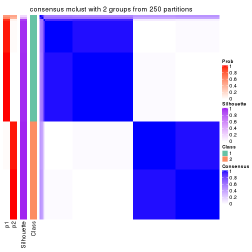
consensus_heatmap(res, k = 3)
consensus_heatmap(res, k = 4)
consensus_heatmap(res, k = 5)
consensus_heatmap(res, k = 6)
Heatmaps for the membership of samples in all partitions to see how consistent they are:
membership_heatmap(res, k = 2)
membership_heatmap(res, k = 3)
membership_heatmap(res, k = 4)
membership_heatmap(res, k = 5)
membership_heatmap(res, k = 6)
As soon as we have had the classes for columns, we can look for signatures which are significantly different between classes which can be candidate marks for certain classes. Following are the heatmaps for signatures.
Signature heatmaps where rows are scaled:
get_signatures(res, k = 2)
get_signatures(res, k = 3)
get_signatures(res, k = 4)
get_signatures(res, k = 5)
get_signatures(res, k = 6)
Signature heatmaps where rows are not scaled:
get_signatures(res, k = 2, scale_rows = FALSE)
get_signatures(res, k = 3, scale_rows = FALSE)
get_signatures(res, k = 4, scale_rows = FALSE)
get_signatures(res, k = 5, scale_rows = FALSE)
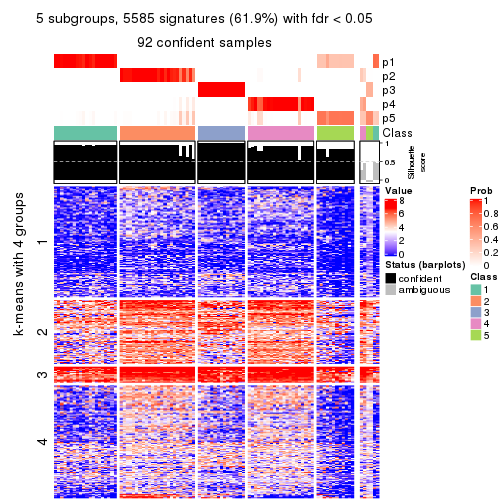
get_signatures(res, k = 6, scale_rows = FALSE)
Compare the overlap of signatures from different k:
compare_signatures(res)
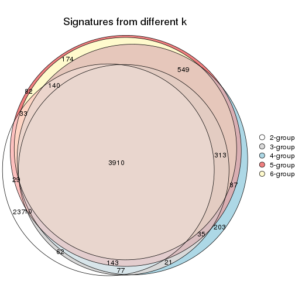
get_signature() returns a data frame invisibly. TO get the list of signatures, the function
call should be assigned to a variable explicitly. In following code, if plot argument is set
to FALSE, no heatmap is plotted while only the differential analysis is performed.
# code only for demonstration
tb = get_signature(res, k = ..., plot = FALSE)
An example of the output of tb is:
#> which_row fdr mean_1 mean_2 scaled_mean_1 scaled_mean_2 km
#> 1 38 0.042760348 8.373488 9.131774 -0.5533452 0.5164555 1
#> 2 40 0.018707592 7.106213 8.469186 -0.6173731 0.5762149 1
#> 3 55 0.019134737 10.221463 11.207825 -0.6159697 0.5749050 1
#> 4 59 0.006059896 5.921854 7.869574 -0.6899429 0.6439467 1
#> 5 60 0.018055526 8.928898 10.211722 -0.6204761 0.5791110 1
#> 6 98 0.009384629 15.714769 14.887706 0.6635654 -0.6193277 2
...
The columns in tb are:
which_row: row indices corresponding to the input matrix.fdr: FDR for the differential test. mean_x: The mean value in group x.scaled_mean_x: The mean value in group x after rows are scaled.km: Row groups if k-means clustering is applied to rows.UMAP plot which shows how samples are separated.
dimension_reduction(res, k = 2, method = "UMAP")
dimension_reduction(res, k = 3, method = "UMAP")
dimension_reduction(res, k = 4, method = "UMAP")
dimension_reduction(res, k = 5, method = "UMAP")
dimension_reduction(res, k = 6, method = "UMAP")
Following heatmap shows how subgroups are split when increasing k:
collect_classes(res)
If matrix rows can be associated to genes, consider to use functional_enrichment(res,
...) to perform function enrichment for the signature genes. See this vignette for more detailed explanations.
The object with results only for a single top-value method and a single partition method can be extracted as:
res = res_list["SD", "NMF"]
# you can also extract it by
# res = res_list["SD:NMF"]
A summary of res and all the functions that can be applied to it:
res
#> A 'ConsensusPartition' object with k = 2, 3, 4, 5, 6.
#> On a matrix with 9017 rows and 98 columns.
#> Top rows (902, 1804, 2705, 3606, 4508) are extracted by 'SD' method.
#> Subgroups are detected by 'NMF' method.
#> Performed in total 1250 partitions by row resampling.
#> Best k for subgroups seems to be 4.
#>
#> Following methods can be applied to this 'ConsensusPartition' object:
#> [1] "cola_report" "collect_classes" "collect_plots"
#> [4] "collect_stats" "colnames" "compare_signatures"
#> [7] "consensus_heatmap" "dimension_reduction" "functional_enrichment"
#> [10] "get_anno_col" "get_anno" "get_classes"
#> [13] "get_consensus" "get_matrix" "get_membership"
#> [16] "get_param" "get_signatures" "get_stats"
#> [19] "is_best_k" "is_stable_k" "membership_heatmap"
#> [22] "ncol" "nrow" "plot_ecdf"
#> [25] "rownames" "select_partition_number" "show"
#> [28] "suggest_best_k" "test_to_known_factors"
collect_plots() function collects all the plots made from res for all k (number of partitions)
into one single page to provide an easy and fast comparison between different k.
collect_plots(res)
The plots are:
k and the heatmap of
predicted classes for each k.k.k.k.All the plots in panels can be made by individual functions and they are plotted later in this section.
select_partition_number() produces several plots showing different
statistics for choosing “optimized” k. There are following statistics:
k;k, the area increased is defined as \(A_k - A_{k-1}\).The detailed explanations of these statistics can be found in the cola vignette.
Generally speaking, lower PAC score, higher mean silhouette score or higher
concordance corresponds to better partition. Rand index and Jaccard index
measure how similar the current partition is compared to partition with k-1.
If they are too similar, we won't accept k is better than k-1.
select_partition_number(res)
The numeric values for all these statistics can be obtained by get_stats().
get_stats(res)
#> k 1-PAC mean_silhouette concordance area_increased Rand Jaccard
#> 2 2 0.449 0.767 0.861 0.4931 0.495 0.495
#> 3 3 0.913 0.937 0.970 0.2794 0.876 0.752
#> 4 4 0.909 0.890 0.942 0.0521 0.908 0.774
#> 5 5 0.836 0.807 0.889 0.0374 0.981 0.947
#> 6 6 0.795 0.674 0.838 0.0375 0.973 0.919
suggest_best_k() suggests the best \(k\) based on these statistics. The rules are as follows:
suggest_best_k(res)
#> [1] 4
#> attr(,"optional")
#> [1] 3
There is also optional best \(k\) = 3 that is worth to check.
Following shows the table of the partitions (You need to click the show/hide
code output link to see it). The membership matrix (columns with name p*)
is inferred by
clue::cl_consensus()
function with the SE method. Basically the value in the membership matrix
represents the probability to belong to a certain group. The finall class
label for an item is determined with the group with highest probability it
belongs to.
In get_classes() function, the entropy is calculated from the membership
matrix and the silhouette score is calculated from the consensus matrix.
cbind(get_classes(res, k = 2), get_membership(res, k = 2))
#> class entropy silhouette p1 p2
#> SRR1810660 1 0.0000 0.773 1.000 0.000
#> SRR1810659 1 0.0672 0.773 0.992 0.008
#> SRR1810658 1 0.0000 0.773 1.000 0.000
#> SRR1810657 1 0.0000 0.773 1.000 0.000
#> SRR1818435 2 0.9866 0.453 0.432 0.568
#> SRR1818434 1 0.6887 0.743 0.816 0.184
#> SRR1810752 2 0.9209 0.606 0.336 0.664
#> SRR1810751 2 0.0938 0.877 0.012 0.988
#> SRR1810749 1 0.9815 0.631 0.580 0.420
#> SRR1810748 1 0.6247 0.755 0.844 0.156
#> SRR1810750 1 0.9775 0.643 0.588 0.412
#> SRR1810747 2 0.9000 0.634 0.316 0.684
#> SRR1810746 1 0.9608 0.674 0.616 0.384
#> SRR1810745 1 0.9635 0.671 0.612 0.388
#> SRR1810744 1 0.9608 0.675 0.616 0.384
#> SRR1810743 1 0.9754 0.648 0.592 0.408
#> SRR1810742 2 0.0000 0.881 0.000 1.000
#> SRR1810741 2 0.1414 0.874 0.020 0.980
#> SRR1810740 1 0.0000 0.773 1.000 0.000
#> SRR1810739 1 0.9686 0.663 0.604 0.396
#> SRR1810738 1 0.9661 0.667 0.608 0.392
#> SRR1810737 2 0.0000 0.881 0.000 1.000
#> SRR1810736 2 0.0000 0.881 0.000 1.000
#> SRR1810734 2 0.8861 0.649 0.304 0.696
#> SRR1810735 2 0.0000 0.881 0.000 1.000
#> SRR1810733 2 0.0000 0.881 0.000 1.000
#> SRR1810732 1 0.0376 0.771 0.996 0.004
#> SRR1810730 2 0.0000 0.881 0.000 1.000
#> SRR1810729 1 0.0000 0.773 1.000 0.000
#> SRR1810731 1 0.9661 0.667 0.608 0.392
#> SRR1810728 2 0.0000 0.881 0.000 1.000
#> SRR1810727 2 0.0000 0.881 0.000 1.000
#> SRR1810726 1 0.9933 0.573 0.548 0.452
#> SRR1810725 2 0.0000 0.881 0.000 1.000
#> SRR1810724 2 0.0000 0.881 0.000 1.000
#> SRR1810723 1 0.9286 0.695 0.656 0.344
#> SRR1810722 1 0.9393 0.691 0.644 0.356
#> SRR1810721 1 0.9833 0.625 0.576 0.424
#> SRR1810720 1 0.9795 0.637 0.584 0.416
#> SRR1810719 2 0.1633 0.872 0.024 0.976
#> SRR1810718 1 0.0000 0.773 1.000 0.000
#> SRR1810717 1 0.9460 0.686 0.636 0.364
#> SRR1810716 2 0.0000 0.881 0.000 1.000
#> SRR1810715 2 0.7528 0.739 0.216 0.784
#> SRR1810713 2 0.7139 0.756 0.196 0.804
#> SRR1810714 1 0.0000 0.773 1.000 0.000
#> SRR1810712 2 0.8955 0.640 0.312 0.688
#> SRR1810710 2 0.0000 0.881 0.000 1.000
#> SRR1810711 2 0.8386 0.690 0.268 0.732
#> SRR1810709 2 0.0000 0.881 0.000 1.000
#> SRR1810708 1 0.9635 0.671 0.612 0.388
#> SRR1810707 1 0.0376 0.771 0.996 0.004
#> SRR1810706 2 0.0000 0.881 0.000 1.000
#> SRR1810704 1 0.9552 0.679 0.624 0.376
#> SRR1810705 1 0.9608 0.674 0.616 0.384
#> SRR1810703 1 0.9427 0.689 0.640 0.360
#> SRR1810702 2 0.8713 0.663 0.292 0.708
#> SRR1810701 1 0.9635 0.671 0.612 0.388
#> SRR1810700 2 0.0000 0.881 0.000 1.000
#> SRR1810699 2 0.2603 0.862 0.044 0.956
#> SRR1810696 2 0.0000 0.881 0.000 1.000
#> SRR1810695 2 0.0000 0.881 0.000 1.000
#> SRR1810698 2 0.0000 0.881 0.000 1.000
#> SRR1810697 2 0.0000 0.881 0.000 1.000
#> SRR1810694 2 0.0000 0.881 0.000 1.000
#> SRR1810693 1 0.0000 0.773 1.000 0.000
#> SRR1810692 2 0.0000 0.881 0.000 1.000
#> SRR1810690 2 0.0000 0.881 0.000 1.000
#> SRR1810691 1 0.9815 0.631 0.580 0.420
#> SRR1810689 2 0.0000 0.881 0.000 1.000
#> SRR1810688 2 0.8267 0.698 0.260 0.740
#> SRR1810687 2 0.4939 0.822 0.108 0.892
#> SRR1810685 1 0.9686 0.663 0.604 0.396
#> SRR1810686 2 0.5519 0.808 0.128 0.872
#> SRR1810684 2 0.0000 0.881 0.000 1.000
#> SRR1810683 2 0.9044 0.629 0.320 0.680
#> SRR1810680 2 0.0000 0.881 0.000 1.000
#> SRR1810679 2 0.0000 0.881 0.000 1.000
#> SRR1810678 2 0.7883 0.721 0.236 0.764
#> SRR1810682 2 0.2236 0.866 0.036 0.964
#> SRR1810681 2 0.0000 0.881 0.000 1.000
#> SRR1810677 2 0.0000 0.881 0.000 1.000
#> SRR1810676 2 0.9552 0.545 0.376 0.624
#> SRR1810675 1 0.0376 0.771 0.996 0.004
#> SRR1810673 1 0.0376 0.771 0.996 0.004
#> SRR1810674 1 0.0376 0.771 0.996 0.004
#> SRR1810671 1 0.0000 0.773 1.000 0.000
#> SRR1810670 1 0.5737 0.757 0.864 0.136
#> SRR1810669 1 0.0672 0.773 0.992 0.008
#> SRR1810667 1 0.0000 0.773 1.000 0.000
#> SRR1810666 1 0.0000 0.773 1.000 0.000
#> SRR1810672 1 0.6973 0.746 0.812 0.188
#> SRR1810668 1 0.0000 0.773 1.000 0.000
#> SRR1810665 1 0.0000 0.773 1.000 0.000
#> SRR1810664 1 0.0000 0.773 1.000 0.000
#> SRR1810663 1 0.0000 0.773 1.000 0.000
#> SRR1810661 1 0.0000 0.773 1.000 0.000
#> SRR1810662 1 0.0000 0.773 1.000 0.000
cbind(get_classes(res, k = 3), get_membership(res, k = 3))
#> class entropy silhouette p1 p2 p3
#> SRR1810660 3 0.0237 0.956 0.004 0.000 0.996
#> SRR1810659 1 0.0000 0.977 1.000 0.000 0.000
#> SRR1810658 1 0.3340 0.859 0.880 0.000 0.120
#> SRR1810657 3 0.0237 0.956 0.004 0.000 0.996
#> SRR1818435 3 0.1411 0.933 0.000 0.036 0.964
#> SRR1818434 3 0.2749 0.906 0.012 0.064 0.924
#> SRR1810752 2 0.4002 0.837 0.000 0.840 0.160
#> SRR1810751 2 0.0000 0.965 0.000 1.000 0.000
#> SRR1810749 1 0.0000 0.977 1.000 0.000 0.000
#> SRR1810748 1 0.0000 0.977 1.000 0.000 0.000
#> SRR1810750 1 0.0000 0.977 1.000 0.000 0.000
#> SRR1810747 2 0.3340 0.877 0.000 0.880 0.120
#> SRR1810746 1 0.0000 0.977 1.000 0.000 0.000
#> SRR1810745 1 0.0000 0.977 1.000 0.000 0.000
#> SRR1810744 1 0.0000 0.977 1.000 0.000 0.000
#> SRR1810743 1 0.0000 0.977 1.000 0.000 0.000
#> SRR1810742 2 0.0000 0.965 0.000 1.000 0.000
#> SRR1810741 2 0.1411 0.944 0.000 0.964 0.036
#> SRR1810740 1 0.0237 0.974 0.996 0.000 0.004
#> SRR1810739 1 0.0000 0.977 1.000 0.000 0.000
#> SRR1810738 1 0.0000 0.977 1.000 0.000 0.000
#> SRR1810737 2 0.0000 0.965 0.000 1.000 0.000
#> SRR1810736 2 0.0000 0.965 0.000 1.000 0.000
#> SRR1810734 2 0.3879 0.843 0.000 0.848 0.152
#> SRR1810735 2 0.0000 0.965 0.000 1.000 0.000
#> SRR1810733 2 0.0237 0.963 0.004 0.996 0.000
#> SRR1810732 3 0.0000 0.958 0.000 0.000 1.000
#> SRR1810730 2 0.0000 0.965 0.000 1.000 0.000
#> SRR1810729 1 0.6244 0.173 0.560 0.000 0.440
#> SRR1810731 1 0.0000 0.977 1.000 0.000 0.000
#> SRR1810728 2 0.0000 0.965 0.000 1.000 0.000
#> SRR1810727 2 0.0000 0.965 0.000 1.000 0.000
#> SRR1810726 1 0.0592 0.965 0.988 0.012 0.000
#> SRR1810725 2 0.0000 0.965 0.000 1.000 0.000
#> SRR1810724 2 0.0000 0.965 0.000 1.000 0.000
#> SRR1810723 1 0.0000 0.977 1.000 0.000 0.000
#> SRR1810722 1 0.0000 0.977 1.000 0.000 0.000
#> SRR1810721 1 0.0000 0.977 1.000 0.000 0.000
#> SRR1810720 1 0.0000 0.977 1.000 0.000 0.000
#> SRR1810719 2 0.0000 0.965 0.000 1.000 0.000
#> SRR1810718 1 0.1163 0.956 0.972 0.000 0.028
#> SRR1810717 1 0.0000 0.977 1.000 0.000 0.000
#> SRR1810716 2 0.0000 0.965 0.000 1.000 0.000
#> SRR1810715 2 0.0892 0.955 0.000 0.980 0.020
#> SRR1810713 2 0.0892 0.955 0.000 0.980 0.020
#> SRR1810714 1 0.0747 0.966 0.984 0.000 0.016
#> SRR1810712 2 0.4178 0.819 0.000 0.828 0.172
#> SRR1810710 2 0.0000 0.965 0.000 1.000 0.000
#> SRR1810711 2 0.1753 0.937 0.000 0.952 0.048
#> SRR1810709 2 0.0000 0.965 0.000 1.000 0.000
#> SRR1810708 1 0.0000 0.977 1.000 0.000 0.000
#> SRR1810707 3 0.4842 0.719 0.224 0.000 0.776
#> SRR1810706 2 0.0000 0.965 0.000 1.000 0.000
#> SRR1810704 1 0.0000 0.977 1.000 0.000 0.000
#> SRR1810705 1 0.0000 0.977 1.000 0.000 0.000
#> SRR1810703 1 0.0000 0.977 1.000 0.000 0.000
#> SRR1810702 2 0.3941 0.839 0.000 0.844 0.156
#> SRR1810701 1 0.0000 0.977 1.000 0.000 0.000
#> SRR1810700 2 0.0000 0.965 0.000 1.000 0.000
#> SRR1810699 2 0.0000 0.965 0.000 1.000 0.000
#> SRR1810696 2 0.0424 0.960 0.008 0.992 0.000
#> SRR1810695 2 0.0000 0.965 0.000 1.000 0.000
#> SRR1810698 2 0.0000 0.965 0.000 1.000 0.000
#> SRR1810697 2 0.0000 0.965 0.000 1.000 0.000
#> SRR1810694 2 0.0424 0.960 0.008 0.992 0.000
#> SRR1810693 3 0.1860 0.923 0.052 0.000 0.948
#> SRR1810692 2 0.0000 0.965 0.000 1.000 0.000
#> SRR1810690 2 0.0000 0.965 0.000 1.000 0.000
#> SRR1810691 1 0.0000 0.977 1.000 0.000 0.000
#> SRR1810689 2 0.0000 0.965 0.000 1.000 0.000
#> SRR1810688 2 0.1753 0.938 0.000 0.952 0.048
#> SRR1810687 2 0.0237 0.963 0.000 0.996 0.004
#> SRR1810685 1 0.0000 0.977 1.000 0.000 0.000
#> SRR1810686 2 0.0237 0.963 0.000 0.996 0.004
#> SRR1810684 2 0.0000 0.965 0.000 1.000 0.000
#> SRR1810683 2 0.3340 0.879 0.000 0.880 0.120
#> SRR1810680 2 0.0000 0.965 0.000 1.000 0.000
#> SRR1810679 2 0.0000 0.965 0.000 1.000 0.000
#> SRR1810678 2 0.4346 0.792 0.000 0.816 0.184
#> SRR1810682 2 0.0000 0.965 0.000 1.000 0.000
#> SRR1810681 2 0.0000 0.965 0.000 1.000 0.000
#> SRR1810677 2 0.0000 0.965 0.000 1.000 0.000
#> SRR1810676 2 0.5882 0.526 0.000 0.652 0.348
#> SRR1810675 3 0.0000 0.958 0.000 0.000 1.000
#> SRR1810673 3 0.0000 0.958 0.000 0.000 1.000
#> SRR1810674 3 0.0000 0.958 0.000 0.000 1.000
#> SRR1810671 1 0.1411 0.950 0.964 0.000 0.036
#> SRR1810670 1 0.0000 0.977 1.000 0.000 0.000
#> SRR1810669 1 0.0000 0.977 1.000 0.000 0.000
#> SRR1810667 3 0.0000 0.958 0.000 0.000 1.000
#> SRR1810666 1 0.1163 0.957 0.972 0.000 0.028
#> SRR1810672 1 0.0000 0.977 1.000 0.000 0.000
#> SRR1810668 3 0.4702 0.737 0.212 0.000 0.788
#> SRR1810665 1 0.2448 0.911 0.924 0.000 0.076
#> SRR1810664 3 0.0000 0.958 0.000 0.000 1.000
#> SRR1810663 3 0.0000 0.958 0.000 0.000 1.000
#> SRR1810661 3 0.0000 0.958 0.000 0.000 1.000
#> SRR1810662 3 0.0000 0.958 0.000 0.000 1.000
cbind(get_classes(res, k = 4), get_membership(res, k = 4))
#> class entropy silhouette p1 p2 p3 p4
#> SRR1810660 4 0.2542 0.840 0.012 0.000 0.084 0.904
#> SRR1810659 3 0.3428 0.764 0.144 0.000 0.844 0.012
#> SRR1810658 3 0.2489 0.856 0.068 0.000 0.912 0.020
#> SRR1810657 3 0.4155 0.761 0.004 0.000 0.756 0.240
#> SRR1818435 2 0.6773 0.334 0.000 0.584 0.284 0.132
#> SRR1818434 3 0.4315 0.685 0.012 0.144 0.816 0.028
#> SRR1810752 2 0.1452 0.951 0.000 0.956 0.008 0.036
#> SRR1810751 2 0.0000 0.974 0.000 1.000 0.000 0.000
#> SRR1810749 1 0.0592 0.903 0.984 0.000 0.016 0.000
#> SRR1810748 1 0.5364 0.348 0.592 0.000 0.392 0.016
#> SRR1810750 1 0.0000 0.901 1.000 0.000 0.000 0.000
#> SRR1810747 2 0.2216 0.913 0.000 0.908 0.000 0.092
#> SRR1810746 1 0.4122 0.697 0.760 0.000 0.236 0.004
#> SRR1810745 1 0.0657 0.903 0.984 0.000 0.012 0.004
#> SRR1810744 1 0.0336 0.903 0.992 0.000 0.008 0.000
#> SRR1810743 1 0.0927 0.903 0.976 0.000 0.016 0.008
#> SRR1810742 2 0.0000 0.974 0.000 1.000 0.000 0.000
#> SRR1810741 2 0.1807 0.939 0.000 0.940 0.008 0.052
#> SRR1810740 1 0.2342 0.866 0.912 0.000 0.080 0.008
#> SRR1810739 1 0.3945 0.725 0.780 0.000 0.216 0.004
#> SRR1810738 1 0.2654 0.847 0.888 0.000 0.108 0.004
#> SRR1810737 2 0.0000 0.974 0.000 1.000 0.000 0.000
#> SRR1810736 2 0.0000 0.974 0.000 1.000 0.000 0.000
#> SRR1810734 2 0.1867 0.930 0.000 0.928 0.000 0.072
#> SRR1810735 2 0.0000 0.974 0.000 1.000 0.000 0.000
#> SRR1810733 2 0.0000 0.974 0.000 1.000 0.000 0.000
#> SRR1810732 4 0.1284 0.864 0.012 0.000 0.024 0.964
#> SRR1810730 2 0.0000 0.974 0.000 1.000 0.000 0.000
#> SRR1810729 3 0.7064 0.341 0.164 0.000 0.556 0.280
#> SRR1810731 1 0.0336 0.903 0.992 0.000 0.008 0.000
#> SRR1810728 2 0.0000 0.974 0.000 1.000 0.000 0.000
#> SRR1810727 2 0.0000 0.974 0.000 1.000 0.000 0.000
#> SRR1810726 1 0.0188 0.902 0.996 0.000 0.004 0.000
#> SRR1810725 2 0.0000 0.974 0.000 1.000 0.000 0.000
#> SRR1810724 2 0.0000 0.974 0.000 1.000 0.000 0.000
#> SRR1810723 1 0.1902 0.886 0.932 0.000 0.064 0.004
#> SRR1810722 1 0.0336 0.899 0.992 0.000 0.000 0.008
#> SRR1810721 1 0.0000 0.901 1.000 0.000 0.000 0.000
#> SRR1810720 1 0.0000 0.901 1.000 0.000 0.000 0.000
#> SRR1810719 2 0.0188 0.972 0.000 0.996 0.000 0.004
#> SRR1810718 1 0.5982 0.153 0.524 0.000 0.436 0.040
#> SRR1810717 1 0.1792 0.883 0.932 0.000 0.068 0.000
#> SRR1810716 2 0.0000 0.974 0.000 1.000 0.000 0.000
#> SRR1810715 2 0.0707 0.964 0.000 0.980 0.000 0.020
#> SRR1810713 2 0.0779 0.964 0.000 0.980 0.004 0.016
#> SRR1810714 1 0.3521 0.825 0.864 0.000 0.084 0.052
#> SRR1810712 2 0.2466 0.902 0.000 0.900 0.004 0.096
#> SRR1810710 2 0.0000 0.974 0.000 1.000 0.000 0.000
#> SRR1810711 2 0.0592 0.966 0.000 0.984 0.000 0.016
#> SRR1810709 2 0.0000 0.974 0.000 1.000 0.000 0.000
#> SRR1810708 1 0.0927 0.902 0.976 0.000 0.016 0.008
#> SRR1810707 4 0.3351 0.857 0.148 0.000 0.008 0.844
#> SRR1810706 2 0.0000 0.974 0.000 1.000 0.000 0.000
#> SRR1810704 1 0.0817 0.901 0.976 0.000 0.024 0.000
#> SRR1810705 1 0.0336 0.903 0.992 0.000 0.008 0.000
#> SRR1810703 1 0.2011 0.877 0.920 0.000 0.080 0.000
#> SRR1810702 2 0.1489 0.947 0.000 0.952 0.004 0.044
#> SRR1810701 1 0.0657 0.903 0.984 0.000 0.012 0.004
#> SRR1810700 2 0.0000 0.974 0.000 1.000 0.000 0.000
#> SRR1810699 2 0.0000 0.974 0.000 1.000 0.000 0.000
#> SRR1810696 2 0.0000 0.974 0.000 1.000 0.000 0.000
#> SRR1810695 2 0.0000 0.974 0.000 1.000 0.000 0.000
#> SRR1810698 2 0.0000 0.974 0.000 1.000 0.000 0.000
#> SRR1810697 2 0.0000 0.974 0.000 1.000 0.000 0.000
#> SRR1810694 2 0.0000 0.974 0.000 1.000 0.000 0.000
#> SRR1810693 4 0.2918 0.876 0.116 0.000 0.008 0.876
#> SRR1810692 2 0.0000 0.974 0.000 1.000 0.000 0.000
#> SRR1810690 2 0.0000 0.974 0.000 1.000 0.000 0.000
#> SRR1810691 1 0.0376 0.901 0.992 0.000 0.004 0.004
#> SRR1810689 2 0.0000 0.974 0.000 1.000 0.000 0.000
#> SRR1810688 2 0.1474 0.945 0.000 0.948 0.000 0.052
#> SRR1810687 2 0.0188 0.972 0.000 0.996 0.000 0.004
#> SRR1810685 1 0.0524 0.900 0.988 0.000 0.004 0.008
#> SRR1810686 2 0.0188 0.972 0.000 0.996 0.000 0.004
#> SRR1810684 2 0.0000 0.974 0.000 1.000 0.000 0.000
#> SRR1810683 2 0.2480 0.909 0.000 0.904 0.008 0.088
#> SRR1810680 2 0.0000 0.974 0.000 1.000 0.000 0.000
#> SRR1810679 2 0.0000 0.974 0.000 1.000 0.000 0.000
#> SRR1810678 2 0.1767 0.941 0.000 0.944 0.012 0.044
#> SRR1810682 2 0.0000 0.974 0.000 1.000 0.000 0.000
#> SRR1810681 2 0.0000 0.974 0.000 1.000 0.000 0.000
#> SRR1810677 2 0.0000 0.974 0.000 1.000 0.000 0.000
#> SRR1810676 2 0.3672 0.817 0.000 0.824 0.012 0.164
#> SRR1810675 3 0.1302 0.894 0.000 0.000 0.956 0.044
#> SRR1810673 3 0.1557 0.893 0.000 0.000 0.944 0.056
#> SRR1810674 3 0.2469 0.875 0.000 0.000 0.892 0.108
#> SRR1810671 3 0.0895 0.894 0.020 0.000 0.976 0.004
#> SRR1810670 3 0.0927 0.894 0.016 0.000 0.976 0.008
#> SRR1810669 3 0.0895 0.894 0.020 0.000 0.976 0.004
#> SRR1810667 3 0.1557 0.893 0.000 0.000 0.944 0.056
#> SRR1810666 3 0.0895 0.894 0.020 0.000 0.976 0.004
#> SRR1810672 3 0.0895 0.894 0.020 0.000 0.976 0.004
#> SRR1810668 3 0.1059 0.896 0.016 0.000 0.972 0.012
#> SRR1810665 3 0.0895 0.894 0.020 0.000 0.976 0.004
#> SRR1810664 3 0.2345 0.878 0.000 0.000 0.900 0.100
#> SRR1810663 3 0.2589 0.870 0.000 0.000 0.884 0.116
#> SRR1810661 3 0.1637 0.893 0.000 0.000 0.940 0.060
#> SRR1810662 3 0.1940 0.888 0.000 0.000 0.924 0.076
cbind(get_classes(res, k = 5), get_membership(res, k = 5))
#> class entropy silhouette p1 p2 p3 p4 p5
#> SRR1810660 4 0.5544 0.5148 0.008 0.000 0.132 0.668 0.192
#> SRR1810659 5 0.5790 0.4312 0.092 0.000 0.408 0.000 0.500
#> SRR1810658 5 0.5380 0.2921 0.044 0.000 0.464 0.004 0.488
#> SRR1810657 3 0.6193 -0.0229 0.000 0.000 0.548 0.192 0.260
#> SRR1818435 2 0.6027 0.0312 0.000 0.476 0.420 0.100 0.004
#> SRR1818434 3 0.3463 0.5228 0.000 0.156 0.820 0.008 0.016
#> SRR1810752 2 0.1197 0.9422 0.000 0.952 0.000 0.048 0.000
#> SRR1810751 2 0.0000 0.9652 0.000 1.000 0.000 0.000 0.000
#> SRR1810749 1 0.2664 0.8134 0.884 0.000 0.020 0.004 0.092
#> SRR1810748 5 0.6012 0.2189 0.376 0.000 0.120 0.000 0.504
#> SRR1810750 1 0.3928 0.6901 0.700 0.000 0.000 0.004 0.296
#> SRR1810747 2 0.2230 0.8878 0.000 0.884 0.000 0.116 0.000
#> SRR1810746 1 0.5554 0.5448 0.592 0.000 0.076 0.004 0.328
#> SRR1810745 1 0.3424 0.7642 0.760 0.000 0.000 0.000 0.240
#> SRR1810744 1 0.2177 0.8163 0.908 0.000 0.008 0.004 0.080
#> SRR1810743 1 0.3366 0.7651 0.784 0.000 0.000 0.004 0.212
#> SRR1810742 2 0.0000 0.9652 0.000 1.000 0.000 0.000 0.000
#> SRR1810741 2 0.1768 0.9218 0.000 0.924 0.000 0.072 0.004
#> SRR1810740 1 0.5123 0.6747 0.700 0.000 0.056 0.020 0.224
#> SRR1810739 1 0.5969 0.5212 0.608 0.000 0.140 0.008 0.244
#> SRR1810738 1 0.4876 0.7026 0.700 0.000 0.080 0.000 0.220
#> SRR1810737 2 0.0000 0.9652 0.000 1.000 0.000 0.000 0.000
#> SRR1810736 2 0.0000 0.9652 0.000 1.000 0.000 0.000 0.000
#> SRR1810734 2 0.2124 0.9018 0.000 0.900 0.004 0.096 0.000
#> SRR1810735 2 0.0290 0.9624 0.000 0.992 0.000 0.000 0.008
#> SRR1810733 2 0.0609 0.9557 0.000 0.980 0.000 0.000 0.020
#> SRR1810732 4 0.0579 0.6568 0.008 0.000 0.008 0.984 0.000
#> SRR1810730 2 0.0000 0.9652 0.000 1.000 0.000 0.000 0.000
#> SRR1810729 3 0.8531 -0.4683 0.228 0.000 0.300 0.276 0.196
#> SRR1810731 1 0.2011 0.8166 0.908 0.000 0.004 0.000 0.088
#> SRR1810728 2 0.0000 0.9652 0.000 1.000 0.000 0.000 0.000
#> SRR1810727 2 0.0000 0.9652 0.000 1.000 0.000 0.000 0.000
#> SRR1810726 1 0.1557 0.8165 0.940 0.008 0.000 0.000 0.052
#> SRR1810725 2 0.0000 0.9652 0.000 1.000 0.000 0.000 0.000
#> SRR1810724 2 0.0000 0.9652 0.000 1.000 0.000 0.000 0.000
#> SRR1810723 1 0.2900 0.8082 0.864 0.000 0.028 0.000 0.108
#> SRR1810722 1 0.2763 0.8037 0.848 0.000 0.004 0.000 0.148
#> SRR1810721 1 0.1205 0.8160 0.956 0.000 0.004 0.000 0.040
#> SRR1810720 1 0.1952 0.8147 0.912 0.000 0.004 0.000 0.084
#> SRR1810719 2 0.0162 0.9643 0.000 0.996 0.000 0.004 0.000
#> SRR1810718 5 0.6401 0.3452 0.332 0.000 0.148 0.008 0.512
#> SRR1810717 1 0.4147 0.7660 0.776 0.000 0.048 0.004 0.172
#> SRR1810716 2 0.0000 0.9652 0.000 1.000 0.000 0.000 0.000
#> SRR1810715 2 0.0510 0.9600 0.000 0.984 0.000 0.016 0.000
#> SRR1810713 2 0.0404 0.9615 0.000 0.988 0.000 0.012 0.000
#> SRR1810714 1 0.5985 0.5675 0.640 0.000 0.072 0.048 0.240
#> SRR1810712 2 0.2233 0.8936 0.000 0.892 0.004 0.104 0.000
#> SRR1810710 2 0.0000 0.9652 0.000 1.000 0.000 0.000 0.000
#> SRR1810711 2 0.0703 0.9558 0.000 0.976 0.000 0.024 0.000
#> SRR1810709 2 0.0162 0.9640 0.000 0.996 0.000 0.000 0.004
#> SRR1810708 1 0.3242 0.7769 0.784 0.000 0.000 0.000 0.216
#> SRR1810707 4 0.3759 0.6168 0.220 0.000 0.000 0.764 0.016
#> SRR1810706 2 0.0000 0.9652 0.000 1.000 0.000 0.000 0.000
#> SRR1810704 1 0.3129 0.7887 0.832 0.000 0.008 0.004 0.156
#> SRR1810705 1 0.1965 0.8154 0.904 0.000 0.000 0.000 0.096
#> SRR1810703 1 0.4927 0.6349 0.652 0.000 0.052 0.000 0.296
#> SRR1810702 2 0.1197 0.9420 0.000 0.952 0.000 0.048 0.000
#> SRR1810701 1 0.2280 0.8092 0.880 0.000 0.000 0.000 0.120
#> SRR1810700 2 0.0000 0.9652 0.000 1.000 0.000 0.000 0.000
#> SRR1810699 2 0.0290 0.9636 0.000 0.992 0.000 0.000 0.008
#> SRR1810696 2 0.0404 0.9604 0.000 0.988 0.000 0.000 0.012
#> SRR1810695 2 0.0000 0.9652 0.000 1.000 0.000 0.000 0.000
#> SRR1810698 2 0.0000 0.9652 0.000 1.000 0.000 0.000 0.000
#> SRR1810697 2 0.0000 0.9652 0.000 1.000 0.000 0.000 0.000
#> SRR1810694 2 0.0290 0.9624 0.000 0.992 0.000 0.000 0.008
#> SRR1810693 4 0.4819 0.6220 0.164 0.000 0.000 0.724 0.112
#> SRR1810692 2 0.0000 0.9652 0.000 1.000 0.000 0.000 0.000
#> SRR1810690 2 0.0000 0.9652 0.000 1.000 0.000 0.000 0.000
#> SRR1810691 1 0.0963 0.8143 0.964 0.000 0.000 0.000 0.036
#> SRR1810689 2 0.0162 0.9644 0.000 0.996 0.000 0.000 0.004
#> SRR1810688 2 0.1851 0.9121 0.000 0.912 0.000 0.088 0.000
#> SRR1810687 2 0.0162 0.9643 0.000 0.996 0.000 0.004 0.000
#> SRR1810685 1 0.1608 0.8176 0.928 0.000 0.000 0.000 0.072
#> SRR1810686 2 0.0162 0.9643 0.000 0.996 0.000 0.004 0.000
#> SRR1810684 2 0.0162 0.9640 0.000 0.996 0.000 0.000 0.004
#> SRR1810683 2 0.2690 0.8440 0.000 0.844 0.000 0.156 0.000
#> SRR1810680 2 0.0162 0.9644 0.000 0.996 0.000 0.000 0.004
#> SRR1810679 2 0.0000 0.9652 0.000 1.000 0.000 0.000 0.000
#> SRR1810678 2 0.1638 0.9284 0.000 0.932 0.000 0.064 0.004
#> SRR1810682 2 0.0162 0.9643 0.000 0.996 0.000 0.004 0.000
#> SRR1810681 2 0.0000 0.9652 0.000 1.000 0.000 0.000 0.000
#> SRR1810677 2 0.0000 0.9652 0.000 1.000 0.000 0.000 0.000
#> SRR1810676 2 0.3231 0.7892 0.000 0.800 0.004 0.196 0.000
#> SRR1810675 3 0.0807 0.8566 0.000 0.000 0.976 0.012 0.012
#> SRR1810673 3 0.0579 0.8561 0.000 0.000 0.984 0.008 0.008
#> SRR1810674 3 0.1124 0.8491 0.000 0.000 0.960 0.036 0.004
#> SRR1810671 3 0.0771 0.8522 0.000 0.000 0.976 0.004 0.020
#> SRR1810670 3 0.0566 0.8541 0.000 0.000 0.984 0.012 0.004
#> SRR1810669 3 0.1116 0.8437 0.004 0.000 0.964 0.004 0.028
#> SRR1810667 3 0.0579 0.8561 0.000 0.000 0.984 0.008 0.008
#> SRR1810666 3 0.0404 0.8548 0.000 0.000 0.988 0.012 0.000
#> SRR1810672 3 0.1281 0.8397 0.000 0.000 0.956 0.012 0.032
#> SRR1810668 3 0.0451 0.8546 0.000 0.000 0.988 0.008 0.004
#> SRR1810665 3 0.0451 0.8544 0.000 0.000 0.988 0.004 0.008
#> SRR1810664 3 0.1124 0.8489 0.000 0.000 0.960 0.036 0.004
#> SRR1810663 3 0.1282 0.8448 0.000 0.000 0.952 0.044 0.004
#> SRR1810661 3 0.0771 0.8560 0.000 0.000 0.976 0.020 0.004
#> SRR1810662 3 0.1211 0.8491 0.000 0.000 0.960 0.016 0.024
cbind(get_classes(res, k = 6), get_membership(res, k = 6))
#> class entropy silhouette p1 p2 p3 p4 p5 p6
#> SRR1810660 6 0.6837 0.21357 0.024 0.000 0.136 0.080 0.216 0.544
#> SRR1810659 5 0.5140 0.44273 0.072 0.000 0.164 0.068 0.696 0.000
#> SRR1810658 5 0.4774 0.39872 0.048 0.000 0.236 0.024 0.688 0.004
#> SRR1810657 3 0.6615 -0.31437 0.000 0.000 0.396 0.060 0.396 0.148
#> SRR1818435 3 0.5154 0.17578 0.000 0.372 0.560 0.008 0.008 0.052
#> SRR1818434 3 0.1958 0.72267 0.000 0.100 0.896 0.000 0.004 0.000
#> SRR1810752 2 0.1806 0.92082 0.000 0.908 0.000 0.000 0.004 0.088
#> SRR1810751 2 0.0725 0.95194 0.000 0.976 0.000 0.012 0.012 0.000
#> SRR1810749 1 0.3612 0.40117 0.764 0.000 0.000 0.200 0.036 0.000
#> SRR1810748 5 0.6772 0.13631 0.284 0.000 0.048 0.248 0.420 0.000
#> SRR1810750 4 0.5870 0.04623 0.404 0.000 0.004 0.424 0.168 0.000
#> SRR1810747 2 0.2562 0.85559 0.000 0.828 0.000 0.000 0.000 0.172
#> SRR1810746 4 0.6542 -0.00537 0.380 0.008 0.048 0.440 0.124 0.000
#> SRR1810745 1 0.5358 0.01254 0.544 0.000 0.000 0.328 0.128 0.000
#> SRR1810744 1 0.3490 0.46572 0.784 0.000 0.000 0.176 0.040 0.000
#> SRR1810743 1 0.4594 0.10491 0.560 0.004 0.000 0.404 0.032 0.000
#> SRR1810742 2 0.0260 0.95252 0.000 0.992 0.000 0.008 0.000 0.000
#> SRR1810741 2 0.2594 0.91028 0.000 0.884 0.000 0.016 0.028 0.072
#> SRR1810740 1 0.6300 0.00341 0.532 0.000 0.004 0.200 0.232 0.032
#> SRR1810739 1 0.5886 -0.17179 0.464 0.008 0.076 0.424 0.028 0.000
#> SRR1810738 1 0.5245 0.19556 0.576 0.000 0.016 0.336 0.072 0.000
#> SRR1810737 2 0.0547 0.95025 0.000 0.980 0.000 0.020 0.000 0.000
#> SRR1810736 2 0.0146 0.95237 0.000 0.996 0.000 0.004 0.000 0.000
#> SRR1810734 2 0.2730 0.83349 0.000 0.808 0.000 0.000 0.000 0.192
#> SRR1810735 2 0.1410 0.93785 0.000 0.944 0.004 0.044 0.008 0.000
#> SRR1810733 2 0.2119 0.91911 0.016 0.912 0.004 0.060 0.008 0.000
#> SRR1810732 6 0.0870 0.43440 0.004 0.000 0.000 0.012 0.012 0.972
#> SRR1810730 2 0.0508 0.95286 0.000 0.984 0.000 0.012 0.004 0.000
#> SRR1810729 6 0.8857 -0.07181 0.240 0.000 0.172 0.180 0.148 0.260
#> SRR1810731 1 0.3511 0.44421 0.760 0.000 0.000 0.216 0.024 0.000
#> SRR1810728 2 0.0260 0.95240 0.000 0.992 0.000 0.008 0.000 0.000
#> SRR1810727 2 0.0632 0.94919 0.000 0.976 0.000 0.024 0.000 0.000
#> SRR1810726 1 0.2631 0.48152 0.856 0.004 0.000 0.128 0.012 0.000
#> SRR1810725 2 0.0260 0.95252 0.000 0.992 0.000 0.008 0.000 0.000
#> SRR1810724 2 0.0146 0.95237 0.000 0.996 0.000 0.004 0.000 0.000
#> SRR1810723 1 0.3994 0.43502 0.768 0.000 0.004 0.136 0.092 0.000
#> SRR1810722 1 0.4799 0.33021 0.656 0.000 0.004 0.252 0.088 0.000
#> SRR1810721 1 0.2527 0.49100 0.868 0.000 0.000 0.108 0.024 0.000
#> SRR1810720 1 0.2784 0.46796 0.848 0.000 0.000 0.124 0.028 0.000
#> SRR1810719 2 0.0767 0.95143 0.000 0.976 0.000 0.008 0.012 0.004
#> SRR1810718 5 0.6932 0.22205 0.256 0.000 0.056 0.204 0.472 0.012
#> SRR1810717 1 0.5184 0.20510 0.664 0.000 0.028 0.208 0.100 0.000
#> SRR1810716 2 0.0260 0.95252 0.000 0.992 0.000 0.008 0.000 0.000
#> SRR1810715 2 0.1757 0.92510 0.000 0.916 0.000 0.000 0.008 0.076
#> SRR1810713 2 0.1369 0.94628 0.000 0.952 0.000 0.016 0.016 0.016
#> SRR1810714 1 0.7222 -0.13648 0.440 0.000 0.040 0.288 0.192 0.040
#> SRR1810712 2 0.2902 0.82361 0.000 0.800 0.000 0.000 0.004 0.196
#> SRR1810710 2 0.0260 0.95240 0.000 0.992 0.000 0.008 0.000 0.000
#> SRR1810711 2 0.1563 0.93539 0.000 0.932 0.000 0.000 0.012 0.056
#> SRR1810709 2 0.0865 0.94682 0.000 0.964 0.000 0.036 0.000 0.000
#> SRR1810708 1 0.4609 0.25150 0.588 0.000 0.000 0.364 0.048 0.000
#> SRR1810707 6 0.4130 0.40038 0.260 0.000 0.000 0.024 0.012 0.704
#> SRR1810706 2 0.0291 0.95278 0.000 0.992 0.000 0.004 0.004 0.000
#> SRR1810704 1 0.4288 0.32446 0.716 0.000 0.004 0.216 0.064 0.000
#> SRR1810705 1 0.3344 0.46902 0.804 0.000 0.000 0.152 0.044 0.000
#> SRR1810703 1 0.6072 -0.06302 0.500 0.000 0.020 0.312 0.168 0.000
#> SRR1810702 2 0.1806 0.92071 0.000 0.908 0.000 0.000 0.004 0.088
#> SRR1810701 1 0.4188 0.36741 0.712 0.000 0.000 0.236 0.048 0.004
#> SRR1810700 2 0.0405 0.95316 0.000 0.988 0.000 0.008 0.004 0.000
#> SRR1810699 2 0.0717 0.95221 0.000 0.976 0.000 0.008 0.016 0.000
#> SRR1810696 2 0.1563 0.93127 0.012 0.932 0.000 0.056 0.000 0.000
#> SRR1810695 2 0.0260 0.95252 0.000 0.992 0.000 0.008 0.000 0.000
#> SRR1810698 2 0.0632 0.94919 0.000 0.976 0.000 0.024 0.000 0.000
#> SRR1810697 2 0.0291 0.95278 0.000 0.992 0.000 0.004 0.004 0.000
#> SRR1810694 2 0.1493 0.93156 0.000 0.936 0.004 0.056 0.004 0.000
#> SRR1810693 6 0.5585 0.41841 0.172 0.000 0.000 0.128 0.052 0.648
#> SRR1810692 2 0.0260 0.95268 0.000 0.992 0.000 0.000 0.008 0.000
#> SRR1810690 2 0.0622 0.95348 0.000 0.980 0.000 0.008 0.012 0.000
#> SRR1810691 1 0.2487 0.48540 0.876 0.000 0.000 0.092 0.032 0.000
#> SRR1810689 2 0.0820 0.95227 0.000 0.972 0.000 0.012 0.016 0.000
#> SRR1810688 2 0.2573 0.88011 0.000 0.856 0.000 0.004 0.008 0.132
#> SRR1810687 2 0.0653 0.95212 0.000 0.980 0.000 0.004 0.012 0.004
#> SRR1810685 1 0.2786 0.48892 0.860 0.000 0.000 0.084 0.056 0.000
#> SRR1810686 2 0.0653 0.95212 0.000 0.980 0.000 0.004 0.012 0.004
#> SRR1810684 2 0.0632 0.95058 0.000 0.976 0.000 0.024 0.000 0.000
#> SRR1810683 2 0.3437 0.76611 0.000 0.752 0.000 0.004 0.008 0.236
#> SRR1810680 2 0.0622 0.95296 0.000 0.980 0.000 0.012 0.008 0.000
#> SRR1810679 2 0.0547 0.95063 0.000 0.980 0.000 0.020 0.000 0.000
#> SRR1810678 2 0.2458 0.91421 0.000 0.892 0.000 0.016 0.024 0.068
#> SRR1810682 2 0.0405 0.95246 0.000 0.988 0.000 0.004 0.008 0.000
#> SRR1810681 2 0.0363 0.95360 0.000 0.988 0.000 0.000 0.012 0.000
#> SRR1810677 2 0.0622 0.95222 0.000 0.980 0.000 0.008 0.012 0.000
#> SRR1810676 2 0.3298 0.76886 0.000 0.756 0.000 0.000 0.008 0.236
#> SRR1810675 3 0.0964 0.87522 0.000 0.000 0.968 0.004 0.012 0.016
#> SRR1810673 3 0.1546 0.86706 0.000 0.000 0.944 0.020 0.020 0.016
#> SRR1810674 3 0.1232 0.87348 0.000 0.000 0.956 0.004 0.016 0.024
#> SRR1810671 3 0.0405 0.87299 0.000 0.000 0.988 0.008 0.004 0.000
#> SRR1810670 3 0.0508 0.87453 0.000 0.000 0.984 0.012 0.004 0.000
#> SRR1810669 3 0.0820 0.86745 0.000 0.000 0.972 0.012 0.016 0.000
#> SRR1810667 3 0.1173 0.87400 0.000 0.000 0.960 0.008 0.016 0.016
#> SRR1810666 3 0.0508 0.87458 0.000 0.000 0.984 0.004 0.012 0.000
#> SRR1810672 3 0.0862 0.86581 0.008 0.000 0.972 0.016 0.004 0.000
#> SRR1810668 3 0.0000 0.87561 0.000 0.000 1.000 0.000 0.000 0.000
#> SRR1810665 3 0.0291 0.87477 0.000 0.000 0.992 0.004 0.004 0.000
#> SRR1810664 3 0.1053 0.87527 0.000 0.000 0.964 0.004 0.012 0.020
#> SRR1810663 3 0.1036 0.87507 0.000 0.000 0.964 0.004 0.008 0.024
#> SRR1810661 3 0.0717 0.87709 0.000 0.000 0.976 0.000 0.008 0.016
#> SRR1810662 3 0.1699 0.86347 0.000 0.000 0.936 0.016 0.032 0.016
Heatmaps for the consensus matrix. It visualizes the probability of two samples to be in a same group.
consensus_heatmap(res, k = 2)
consensus_heatmap(res, k = 3)
consensus_heatmap(res, k = 4)
consensus_heatmap(res, k = 5)
consensus_heatmap(res, k = 6)
Heatmaps for the membership of samples in all partitions to see how consistent they are:
membership_heatmap(res, k = 2)
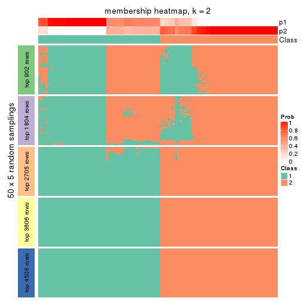
membership_heatmap(res, k = 3)
membership_heatmap(res, k = 4)

membership_heatmap(res, k = 5)
membership_heatmap(res, k = 6)
As soon as we have had the classes for columns, we can look for signatures which are significantly different between classes which can be candidate marks for certain classes. Following are the heatmaps for signatures.
Signature heatmaps where rows are scaled:
get_signatures(res, k = 2)
get_signatures(res, k = 3)
get_signatures(res, k = 4)
get_signatures(res, k = 5)
get_signatures(res, k = 6)
Signature heatmaps where rows are not scaled:
get_signatures(res, k = 2, scale_rows = FALSE)
get_signatures(res, k = 3, scale_rows = FALSE)
get_signatures(res, k = 4, scale_rows = FALSE)
get_signatures(res, k = 5, scale_rows = FALSE)
get_signatures(res, k = 6, scale_rows = FALSE)
Compare the overlap of signatures from different k:
compare_signatures(res)
get_signature() returns a data frame invisibly. TO get the list of signatures, the function
call should be assigned to a variable explicitly. In following code, if plot argument is set
to FALSE, no heatmap is plotted while only the differential analysis is performed.
# code only for demonstration
tb = get_signature(res, k = ..., plot = FALSE)
An example of the output of tb is:
#> which_row fdr mean_1 mean_2 scaled_mean_1 scaled_mean_2 km
#> 1 38 0.042760348 8.373488 9.131774 -0.5533452 0.5164555 1
#> 2 40 0.018707592 7.106213 8.469186 -0.6173731 0.5762149 1
#> 3 55 0.019134737 10.221463 11.207825 -0.6159697 0.5749050 1
#> 4 59 0.006059896 5.921854 7.869574 -0.6899429 0.6439467 1
#> 5 60 0.018055526 8.928898 10.211722 -0.6204761 0.5791110 1
#> 6 98 0.009384629 15.714769 14.887706 0.6635654 -0.6193277 2
...
The columns in tb are:
which_row: row indices corresponding to the input matrix.fdr: FDR for the differential test. mean_x: The mean value in group x.scaled_mean_x: The mean value in group x after rows are scaled.km: Row groups if k-means clustering is applied to rows.UMAP plot which shows how samples are separated.
dimension_reduction(res, k = 2, method = "UMAP")
dimension_reduction(res, k = 3, method = "UMAP")
dimension_reduction(res, k = 4, method = "UMAP")

dimension_reduction(res, k = 5, method = "UMAP")
dimension_reduction(res, k = 6, method = "UMAP")
Following heatmap shows how subgroups are split when increasing k:
collect_classes(res)
If matrix rows can be associated to genes, consider to use functional_enrichment(res,
...) to perform function enrichment for the signature genes. See this vignette for more detailed explanations.
The object with results only for a single top-value method and a single partition method can be extracted as:
res = res_list["CV", "hclust"]
# you can also extract it by
# res = res_list["CV:hclust"]
A summary of res and all the functions that can be applied to it:
res
#> A 'ConsensusPartition' object with k = 2, 3, 4, 5, 6.
#> On a matrix with 9017 rows and 98 columns.
#> Top rows (902, 1804, 2705, 3606, 4508) are extracted by 'CV' method.
#> Subgroups are detected by 'hclust' method.
#> Performed in total 1250 partitions by row resampling.
#> Best k for subgroups seems to be 2.
#>
#> Following methods can be applied to this 'ConsensusPartition' object:
#> [1] "cola_report" "collect_classes" "collect_plots"
#> [4] "collect_stats" "colnames" "compare_signatures"
#> [7] "consensus_heatmap" "dimension_reduction" "functional_enrichment"
#> [10] "get_anno_col" "get_anno" "get_classes"
#> [13] "get_consensus" "get_matrix" "get_membership"
#> [16] "get_param" "get_signatures" "get_stats"
#> [19] "is_best_k" "is_stable_k" "membership_heatmap"
#> [22] "ncol" "nrow" "plot_ecdf"
#> [25] "rownames" "select_partition_number" "show"
#> [28] "suggest_best_k" "test_to_known_factors"
collect_plots() function collects all the plots made from res for all k (number of partitions)
into one single page to provide an easy and fast comparison between different k.
collect_plots(res)
The plots are:
k and the heatmap of
predicted classes for each k.k.k.k.All the plots in panels can be made by individual functions and they are plotted later in this section.
select_partition_number() produces several plots showing different
statistics for choosing “optimized” k. There are following statistics:
k;k, the area increased is defined as \(A_k - A_{k-1}\).The detailed explanations of these statistics can be found in the cola vignette.
Generally speaking, lower PAC score, higher mean silhouette score or higher
concordance corresponds to better partition. Rand index and Jaccard index
measure how similar the current partition is compared to partition with k-1.
If they are too similar, we won't accept k is better than k-1.
select_partition_number(res)
The numeric values for all these statistics can be obtained by get_stats().
get_stats(res)
#> k 1-PAC mean_silhouette concordance area_increased Rand Jaccard
#> 2 2 0.559 0.834 0.877 0.4305 0.496 0.496
#> 3 3 0.459 0.871 0.853 0.3623 0.884 0.766
#> 4 4 0.796 0.748 0.870 0.1398 0.970 0.922
#> 5 5 0.789 0.736 0.854 0.0539 0.979 0.944
#> 6 6 0.792 0.829 0.841 0.0292 0.870 0.631
suggest_best_k() suggests the best \(k\) based on these statistics. The rules are as follows:
suggest_best_k(res)
#> [1] 2
Following shows the table of the partitions (You need to click the show/hide
code output link to see it). The membership matrix (columns with name p*)
is inferred by
clue::cl_consensus()
function with the SE method. Basically the value in the membership matrix
represents the probability to belong to a certain group. The finall class
label for an item is determined with the group with highest probability it
belongs to.
In get_classes() function, the entropy is calculated from the membership
matrix and the silhouette score is calculated from the consensus matrix.
cbind(get_classes(res, k = 2), get_membership(res, k = 2))
#> class entropy silhouette p1 p2
#> SRR1810660 1 0.0000 0.988 1.000 0.000
#> SRR1810659 1 0.0000 0.988 1.000 0.000
#> SRR1810658 1 0.0000 0.988 1.000 0.000
#> SRR1810657 1 0.0000 0.988 1.000 0.000
#> SRR1818435 1 0.7376 0.612 0.792 0.208
#> SRR1818434 1 0.7376 0.612 0.792 0.208
#> SRR1810752 2 0.0000 0.708 0.000 1.000
#> SRR1810751 2 0.0000 0.708 0.000 1.000
#> SRR1810749 1 0.0000 0.988 1.000 0.000
#> SRR1810748 1 0.0000 0.988 1.000 0.000
#> SRR1810750 1 0.0000 0.988 1.000 0.000
#> SRR1810747 2 0.0000 0.708 0.000 1.000
#> SRR1810746 1 0.0000 0.988 1.000 0.000
#> SRR1810745 1 0.0000 0.988 1.000 0.000
#> SRR1810744 1 0.0000 0.988 1.000 0.000
#> SRR1810743 1 0.0000 0.988 1.000 0.000
#> SRR1810742 2 0.9896 0.653 0.440 0.560
#> SRR1810741 2 0.2423 0.716 0.040 0.960
#> SRR1810740 1 0.0000 0.988 1.000 0.000
#> SRR1810739 1 0.0000 0.988 1.000 0.000
#> SRR1810738 1 0.0000 0.988 1.000 0.000
#> SRR1810737 2 0.9896 0.653 0.440 0.560
#> SRR1810736 2 0.9896 0.653 0.440 0.560
#> SRR1810734 2 0.0000 0.708 0.000 1.000
#> SRR1810735 2 0.9896 0.653 0.440 0.560
#> SRR1810733 2 0.9922 0.638 0.448 0.552
#> SRR1810732 1 0.0000 0.988 1.000 0.000
#> SRR1810730 2 0.9896 0.653 0.440 0.560
#> SRR1810729 1 0.0000 0.988 1.000 0.000
#> SRR1810731 1 0.0000 0.988 1.000 0.000
#> SRR1810728 2 0.9896 0.653 0.440 0.560
#> SRR1810727 2 0.9896 0.653 0.440 0.560
#> SRR1810726 1 0.0000 0.988 1.000 0.000
#> SRR1810725 2 0.9881 0.656 0.436 0.564
#> SRR1810724 2 0.9896 0.653 0.440 0.560
#> SRR1810723 1 0.0000 0.988 1.000 0.000
#> SRR1810722 1 0.0000 0.988 1.000 0.000
#> SRR1810721 1 0.0000 0.988 1.000 0.000
#> SRR1810720 1 0.0000 0.988 1.000 0.000
#> SRR1810719 2 0.1633 0.713 0.024 0.976
#> SRR1810718 1 0.0000 0.988 1.000 0.000
#> SRR1810717 1 0.0000 0.988 1.000 0.000
#> SRR1810716 2 0.9881 0.656 0.436 0.564
#> SRR1810715 2 0.0376 0.710 0.004 0.996
#> SRR1810713 2 0.2236 0.715 0.036 0.964
#> SRR1810714 1 0.0000 0.988 1.000 0.000
#> SRR1810712 2 0.0000 0.708 0.000 1.000
#> SRR1810710 2 0.9896 0.653 0.440 0.560
#> SRR1810711 2 0.0000 0.708 0.000 1.000
#> SRR1810709 2 0.9896 0.653 0.440 0.560
#> SRR1810708 1 0.0000 0.988 1.000 0.000
#> SRR1810707 1 0.0000 0.988 1.000 0.000
#> SRR1810706 2 0.9896 0.653 0.440 0.560
#> SRR1810704 1 0.0000 0.988 1.000 0.000
#> SRR1810705 1 0.0000 0.988 1.000 0.000
#> SRR1810703 1 0.0000 0.988 1.000 0.000
#> SRR1810702 2 0.0000 0.708 0.000 1.000
#> SRR1810701 1 0.0000 0.988 1.000 0.000
#> SRR1810700 2 0.0000 0.708 0.000 1.000
#> SRR1810699 2 0.8327 0.713 0.264 0.736
#> SRR1810696 2 0.9896 0.653 0.440 0.560
#> SRR1810695 2 0.9170 0.698 0.332 0.668
#> SRR1810698 2 0.9896 0.653 0.440 0.560
#> SRR1810697 2 0.9896 0.653 0.440 0.560
#> SRR1810694 2 0.9896 0.653 0.440 0.560
#> SRR1810693 1 0.0000 0.988 1.000 0.000
#> SRR1810692 2 0.9754 0.670 0.408 0.592
#> SRR1810690 2 0.8763 0.705 0.296 0.704
#> SRR1810691 1 0.0000 0.988 1.000 0.000
#> SRR1810689 2 0.4022 0.717 0.080 0.920
#> SRR1810688 2 0.0672 0.711 0.008 0.992
#> SRR1810687 2 0.0000 0.708 0.000 1.000
#> SRR1810685 1 0.0000 0.988 1.000 0.000
#> SRR1810686 2 0.0000 0.708 0.000 1.000
#> SRR1810684 2 0.9896 0.653 0.440 0.560
#> SRR1810683 2 0.0000 0.708 0.000 1.000
#> SRR1810680 2 0.9460 0.683 0.364 0.636
#> SRR1810679 2 0.9896 0.653 0.440 0.560
#> SRR1810678 2 0.2423 0.716 0.040 0.960
#> SRR1810682 2 0.8327 0.713 0.264 0.736
#> SRR1810681 2 0.9866 0.659 0.432 0.568
#> SRR1810677 2 0.8207 0.714 0.256 0.744
#> SRR1810676 2 0.0000 0.708 0.000 1.000
#> SRR1810675 1 0.0000 0.988 1.000 0.000
#> SRR1810673 1 0.0000 0.988 1.000 0.000
#> SRR1810674 1 0.0000 0.988 1.000 0.000
#> SRR1810671 1 0.0000 0.988 1.000 0.000
#> SRR1810670 1 0.0000 0.988 1.000 0.000
#> SRR1810669 1 0.0000 0.988 1.000 0.000
#> SRR1810667 1 0.0000 0.988 1.000 0.000
#> SRR1810666 1 0.0000 0.988 1.000 0.000
#> SRR1810672 1 0.0000 0.988 1.000 0.000
#> SRR1810668 1 0.0376 0.983 0.996 0.004
#> SRR1810665 1 0.0000 0.988 1.000 0.000
#> SRR1810664 1 0.0000 0.988 1.000 0.000
#> SRR1810663 1 0.0000 0.988 1.000 0.000
#> SRR1810661 1 0.0000 0.988 1.000 0.000
#> SRR1810662 1 0.0000 0.988 1.000 0.000
cbind(get_classes(res, k = 3), get_membership(res, k = 3))
#> class entropy silhouette p1 p2 p3
#> SRR1810660 1 0.0000 0.9573 1.000 0.000 0.000
#> SRR1810659 1 0.0000 0.9573 1.000 0.000 0.000
#> SRR1810658 1 0.0000 0.9573 1.000 0.000 0.000
#> SRR1810657 1 0.0000 0.9573 1.000 0.000 0.000
#> SRR1818435 1 0.7482 0.6605 0.688 0.108 0.204
#> SRR1818434 1 0.7482 0.6605 0.688 0.108 0.204
#> SRR1810752 3 0.1411 0.8677 0.000 0.036 0.964
#> SRR1810751 3 0.1031 0.8662 0.000 0.024 0.976
#> SRR1810749 1 0.0000 0.9573 1.000 0.000 0.000
#> SRR1810748 1 0.0000 0.9573 1.000 0.000 0.000
#> SRR1810750 1 0.0000 0.9573 1.000 0.000 0.000
#> SRR1810747 3 0.1163 0.8668 0.000 0.028 0.972
#> SRR1810746 1 0.0000 0.9573 1.000 0.000 0.000
#> SRR1810745 1 0.0000 0.9573 1.000 0.000 0.000
#> SRR1810744 1 0.0000 0.9573 1.000 0.000 0.000
#> SRR1810743 1 0.0000 0.9573 1.000 0.000 0.000
#> SRR1810742 2 0.6448 0.9416 0.132 0.764 0.104
#> SRR1810741 3 0.3637 0.8433 0.024 0.084 0.892
#> SRR1810740 1 0.0000 0.9573 1.000 0.000 0.000
#> SRR1810739 1 0.0000 0.9573 1.000 0.000 0.000
#> SRR1810738 1 0.0000 0.9573 1.000 0.000 0.000
#> SRR1810737 2 0.6448 0.9416 0.132 0.764 0.104
#> SRR1810736 2 0.6448 0.9416 0.132 0.764 0.104
#> SRR1810734 3 0.1163 0.8668 0.000 0.028 0.972
#> SRR1810735 2 0.6511 0.9390 0.136 0.760 0.104
#> SRR1810733 2 0.6634 0.9298 0.144 0.752 0.104
#> SRR1810732 1 0.0000 0.9573 1.000 0.000 0.000
#> SRR1810730 2 0.6448 0.9416 0.132 0.764 0.104
#> SRR1810729 1 0.0000 0.9573 1.000 0.000 0.000
#> SRR1810731 1 0.0000 0.9573 1.000 0.000 0.000
#> SRR1810728 2 0.6448 0.9416 0.132 0.764 0.104
#> SRR1810727 2 0.6448 0.9416 0.132 0.764 0.104
#> SRR1810726 1 0.0892 0.9509 0.980 0.020 0.000
#> SRR1810725 2 0.6590 0.9371 0.132 0.756 0.112
#> SRR1810724 2 0.6519 0.9399 0.132 0.760 0.108
#> SRR1810723 1 0.0000 0.9573 1.000 0.000 0.000
#> SRR1810722 1 0.0000 0.9573 1.000 0.000 0.000
#> SRR1810721 1 0.0000 0.9573 1.000 0.000 0.000
#> SRR1810720 1 0.0000 0.9573 1.000 0.000 0.000
#> SRR1810719 3 0.3120 0.8510 0.012 0.080 0.908
#> SRR1810718 1 0.0000 0.9573 1.000 0.000 0.000
#> SRR1810717 1 0.0000 0.9573 1.000 0.000 0.000
#> SRR1810716 2 0.6590 0.9371 0.132 0.756 0.112
#> SRR1810715 3 0.1647 0.8667 0.004 0.036 0.960
#> SRR1810713 3 0.3966 0.8383 0.024 0.100 0.876
#> SRR1810714 1 0.0000 0.9573 1.000 0.000 0.000
#> SRR1810712 3 0.1163 0.8668 0.000 0.028 0.972
#> SRR1810710 2 0.6448 0.9416 0.132 0.764 0.104
#> SRR1810711 3 0.0747 0.8685 0.000 0.016 0.984
#> SRR1810709 2 0.6448 0.9416 0.132 0.764 0.104
#> SRR1810708 1 0.0000 0.9573 1.000 0.000 0.000
#> SRR1810707 1 0.0000 0.9573 1.000 0.000 0.000
#> SRR1810706 2 0.6519 0.9399 0.132 0.760 0.108
#> SRR1810704 1 0.0000 0.9573 1.000 0.000 0.000
#> SRR1810705 1 0.0000 0.9573 1.000 0.000 0.000
#> SRR1810703 1 0.0000 0.9573 1.000 0.000 0.000
#> SRR1810702 3 0.1163 0.8668 0.000 0.028 0.972
#> SRR1810701 1 0.0000 0.9573 1.000 0.000 0.000
#> SRR1810700 3 0.0747 0.8672 0.000 0.016 0.984
#> SRR1810699 3 0.8108 0.0793 0.072 0.392 0.536
#> SRR1810696 2 0.6511 0.9390 0.136 0.760 0.104
#> SRR1810695 2 0.8714 0.3612 0.108 0.484 0.408
#> SRR1810698 2 0.6448 0.9416 0.132 0.764 0.104
#> SRR1810697 2 0.6448 0.9416 0.132 0.764 0.104
#> SRR1810694 2 0.6511 0.9390 0.136 0.760 0.104
#> SRR1810693 1 0.0000 0.9573 1.000 0.000 0.000
#> SRR1810692 2 0.8291 0.6975 0.116 0.604 0.280
#> SRR1810690 3 0.9001 0.1337 0.148 0.332 0.520
#> SRR1810691 1 0.0592 0.9539 0.988 0.012 0.000
#> SRR1810689 3 0.5178 0.7920 0.028 0.164 0.808
#> SRR1810688 3 0.2496 0.8642 0.004 0.068 0.928
#> SRR1810687 3 0.1031 0.8667 0.000 0.024 0.976
#> SRR1810685 1 0.0592 0.9539 0.988 0.012 0.000
#> SRR1810686 3 0.1031 0.8667 0.000 0.024 0.976
#> SRR1810684 2 0.6448 0.9416 0.132 0.764 0.104
#> SRR1810683 3 0.1031 0.8674 0.000 0.024 0.976
#> SRR1810680 2 0.9398 0.2850 0.172 0.428 0.400
#> SRR1810679 2 0.6448 0.9416 0.132 0.764 0.104
#> SRR1810678 3 0.4172 0.8333 0.028 0.104 0.868
#> SRR1810682 3 0.8108 0.0790 0.072 0.392 0.536
#> SRR1810681 2 0.7756 0.8313 0.128 0.672 0.200
#> SRR1810677 3 0.8056 0.1206 0.068 0.400 0.532
#> SRR1810676 3 0.0747 0.8681 0.000 0.016 0.984
#> SRR1810675 1 0.3038 0.9191 0.896 0.104 0.000
#> SRR1810673 1 0.3038 0.9191 0.896 0.104 0.000
#> SRR1810674 1 0.3038 0.9191 0.896 0.104 0.000
#> SRR1810671 1 0.2959 0.9211 0.900 0.100 0.000
#> SRR1810670 1 0.2959 0.9211 0.900 0.100 0.000
#> SRR1810669 1 0.2878 0.9228 0.904 0.096 0.000
#> SRR1810667 1 0.3038 0.9191 0.896 0.104 0.000
#> SRR1810666 1 0.3038 0.9191 0.896 0.104 0.000
#> SRR1810672 1 0.2959 0.9211 0.900 0.100 0.000
#> SRR1810668 1 0.3116 0.9164 0.892 0.108 0.000
#> SRR1810665 1 0.3038 0.9191 0.896 0.104 0.000
#> SRR1810664 1 0.3038 0.9191 0.896 0.104 0.000
#> SRR1810663 1 0.3038 0.9191 0.896 0.104 0.000
#> SRR1810661 1 0.3038 0.9191 0.896 0.104 0.000
#> SRR1810662 1 0.2959 0.9211 0.900 0.100 0.000
cbind(get_classes(res, k = 4), get_membership(res, k = 4))
#> class entropy silhouette p1 p2 p3 p4
#> SRR1810660 1 0.0000 0.885 1.000 0.000 0.000 0.000
#> SRR1810659 1 0.0000 0.885 1.000 0.000 0.000 0.000
#> SRR1810658 1 0.0000 0.885 1.000 0.000 0.000 0.000
#> SRR1810657 1 0.0000 0.885 1.000 0.000 0.000 0.000
#> SRR1818435 1 0.7300 0.498 0.528 0.196 0.276 0.000
#> SRR1818434 1 0.7300 0.498 0.528 0.196 0.276 0.000
#> SRR1810752 2 0.0524 0.858 0.000 0.988 0.008 0.004
#> SRR1810751 2 0.2342 0.848 0.000 0.912 0.080 0.008
#> SRR1810749 1 0.0000 0.885 1.000 0.000 0.000 0.000
#> SRR1810748 1 0.0000 0.885 1.000 0.000 0.000 0.000
#> SRR1810750 1 0.0000 0.885 1.000 0.000 0.000 0.000
#> SRR1810747 2 0.0000 0.859 0.000 1.000 0.000 0.000
#> SRR1810746 1 0.0000 0.885 1.000 0.000 0.000 0.000
#> SRR1810745 1 0.0000 0.885 1.000 0.000 0.000 0.000
#> SRR1810744 1 0.0000 0.885 1.000 0.000 0.000 0.000
#> SRR1810743 1 0.0000 0.885 1.000 0.000 0.000 0.000
#> SRR1810742 4 0.1151 0.841 0.024 0.000 0.008 0.968
#> SRR1810741 2 0.4482 0.643 0.000 0.728 0.264 0.008
#> SRR1810740 1 0.0188 0.884 0.996 0.000 0.004 0.000
#> SRR1810739 1 0.0000 0.885 1.000 0.000 0.000 0.000
#> SRR1810738 1 0.0000 0.885 1.000 0.000 0.000 0.000
#> SRR1810737 4 0.1151 0.841 0.024 0.000 0.008 0.968
#> SRR1810736 4 0.0921 0.841 0.028 0.000 0.000 0.972
#> SRR1810734 2 0.0000 0.859 0.000 1.000 0.000 0.000
#> SRR1810735 4 0.1305 0.835 0.036 0.000 0.004 0.960
#> SRR1810733 4 0.1635 0.825 0.044 0.000 0.008 0.948
#> SRR1810732 1 0.1022 0.877 0.968 0.000 0.032 0.000
#> SRR1810730 4 0.0921 0.841 0.028 0.000 0.000 0.972
#> SRR1810729 1 0.0000 0.885 1.000 0.000 0.000 0.000
#> SRR1810731 1 0.0000 0.885 1.000 0.000 0.000 0.000
#> SRR1810728 4 0.1004 0.841 0.024 0.000 0.004 0.972
#> SRR1810727 4 0.0817 0.842 0.024 0.000 0.000 0.976
#> SRR1810726 1 0.1284 0.868 0.964 0.000 0.012 0.024
#> SRR1810725 4 0.1543 0.835 0.032 0.004 0.008 0.956
#> SRR1810724 4 0.1004 0.841 0.024 0.000 0.004 0.972
#> SRR1810723 1 0.0000 0.885 1.000 0.000 0.000 0.000
#> SRR1810722 1 0.0000 0.885 1.000 0.000 0.000 0.000
#> SRR1810721 1 0.0000 0.885 1.000 0.000 0.000 0.000
#> SRR1810720 1 0.0000 0.885 1.000 0.000 0.000 0.000
#> SRR1810719 2 0.4193 0.649 0.000 0.732 0.268 0.000
#> SRR1810718 1 0.0000 0.885 1.000 0.000 0.000 0.000
#> SRR1810717 1 0.0000 0.885 1.000 0.000 0.000 0.000
#> SRR1810716 4 0.1543 0.835 0.032 0.004 0.008 0.956
#> SRR1810715 2 0.1151 0.851 0.000 0.968 0.024 0.008
#> SRR1810713 2 0.4855 0.489 0.000 0.644 0.352 0.004
#> SRR1810714 1 0.0000 0.885 1.000 0.000 0.000 0.000
#> SRR1810712 2 0.0000 0.859 0.000 1.000 0.000 0.000
#> SRR1810710 4 0.1004 0.841 0.024 0.000 0.004 0.972
#> SRR1810711 2 0.1004 0.861 0.000 0.972 0.024 0.004
#> SRR1810709 4 0.1004 0.841 0.024 0.000 0.004 0.972
#> SRR1810708 1 0.0000 0.885 1.000 0.000 0.000 0.000
#> SRR1810707 1 0.1022 0.877 0.968 0.000 0.032 0.000
#> SRR1810706 4 0.1004 0.841 0.024 0.000 0.004 0.972
#> SRR1810704 1 0.0000 0.885 1.000 0.000 0.000 0.000
#> SRR1810705 1 0.0000 0.885 1.000 0.000 0.000 0.000
#> SRR1810703 1 0.0000 0.885 1.000 0.000 0.000 0.000
#> SRR1810702 2 0.0000 0.859 0.000 1.000 0.000 0.000
#> SRR1810701 1 0.0000 0.885 1.000 0.000 0.000 0.000
#> SRR1810700 2 0.2271 0.849 0.000 0.916 0.076 0.008
#> SRR1810699 4 0.8054 -0.554 0.004 0.304 0.320 0.372
#> SRR1810696 4 0.1305 0.835 0.036 0.000 0.004 0.960
#> SRR1810695 4 0.8094 -0.244 0.024 0.200 0.292 0.484
#> SRR1810698 4 0.0817 0.842 0.024 0.000 0.000 0.976
#> SRR1810697 4 0.0817 0.842 0.024 0.000 0.000 0.976
#> SRR1810694 4 0.1305 0.835 0.036 0.000 0.004 0.960
#> SRR1810693 1 0.1022 0.877 0.968 0.000 0.032 0.000
#> SRR1810692 4 0.6427 0.414 0.020 0.140 0.148 0.692
#> SRR1810690 3 0.8818 0.568 0.060 0.236 0.440 0.264
#> SRR1810691 1 0.0469 0.882 0.988 0.000 0.012 0.000
#> SRR1810689 3 0.5404 -0.194 0.000 0.476 0.512 0.012
#> SRR1810688 2 0.3335 0.777 0.000 0.856 0.128 0.016
#> SRR1810687 2 0.2480 0.846 0.000 0.904 0.088 0.008
#> SRR1810685 1 0.0657 0.881 0.984 0.000 0.012 0.004
#> SRR1810686 2 0.2480 0.846 0.000 0.904 0.088 0.008
#> SRR1810684 4 0.1004 0.841 0.024 0.000 0.004 0.972
#> SRR1810683 2 0.0336 0.860 0.000 0.992 0.008 0.000
#> SRR1810680 4 0.9103 -0.470 0.088 0.188 0.336 0.388
#> SRR1810679 4 0.0817 0.842 0.024 0.000 0.000 0.976
#> SRR1810678 2 0.4761 0.443 0.000 0.628 0.372 0.000
#> SRR1810682 4 0.8049 -0.548 0.004 0.304 0.316 0.376
#> SRR1810681 4 0.5222 0.614 0.020 0.092 0.104 0.784
#> SRR1810677 3 0.7709 0.532 0.004 0.208 0.468 0.320
#> SRR1810676 2 0.1022 0.862 0.000 0.968 0.032 0.000
#> SRR1810675 1 0.4522 0.743 0.680 0.000 0.320 0.000
#> SRR1810673 1 0.4500 0.746 0.684 0.000 0.316 0.000
#> SRR1810674 1 0.4522 0.743 0.680 0.000 0.320 0.000
#> SRR1810671 1 0.4431 0.754 0.696 0.000 0.304 0.000
#> SRR1810670 1 0.4356 0.761 0.708 0.000 0.292 0.000
#> SRR1810669 1 0.4304 0.765 0.716 0.000 0.284 0.000
#> SRR1810667 1 0.4500 0.746 0.684 0.000 0.316 0.000
#> SRR1810666 1 0.4431 0.754 0.696 0.000 0.304 0.000
#> SRR1810672 1 0.4356 0.761 0.708 0.000 0.292 0.000
#> SRR1810668 1 0.4720 0.736 0.672 0.000 0.324 0.004
#> SRR1810665 1 0.4454 0.751 0.692 0.000 0.308 0.000
#> SRR1810664 1 0.4522 0.743 0.680 0.000 0.320 0.000
#> SRR1810663 1 0.4522 0.743 0.680 0.000 0.320 0.000
#> SRR1810661 1 0.4522 0.743 0.680 0.000 0.320 0.000
#> SRR1810662 1 0.4406 0.757 0.700 0.000 0.300 0.000
cbind(get_classes(res, k = 5), get_membership(res, k = 5))
#> class entropy silhouette p1 p2 p3 p4 p5
#> SRR1810660 1 0.3913 0.8270 0.676 0.000 0.324 0.000 0.000
#> SRR1810659 1 0.3913 0.8270 0.676 0.000 0.324 0.000 0.000
#> SRR1810658 1 0.3913 0.8270 0.676 0.000 0.324 0.000 0.000
#> SRR1810657 1 0.3913 0.8270 0.676 0.000 0.324 0.000 0.000
#> SRR1818435 1 0.4177 0.3807 0.760 0.200 0.036 0.000 0.004
#> SRR1818434 1 0.4177 0.3807 0.760 0.200 0.036 0.000 0.004
#> SRR1810752 2 0.1041 0.8038 0.000 0.964 0.004 0.000 0.032
#> SRR1810751 2 0.2790 0.7822 0.000 0.880 0.068 0.000 0.052
#> SRR1810749 1 0.3913 0.8270 0.676 0.000 0.324 0.000 0.000
#> SRR1810748 1 0.3913 0.8270 0.676 0.000 0.324 0.000 0.000
#> SRR1810750 1 0.3913 0.8270 0.676 0.000 0.324 0.000 0.000
#> SRR1810747 2 0.0290 0.8070 0.000 0.992 0.000 0.000 0.008
#> SRR1810746 1 0.3913 0.8270 0.676 0.000 0.324 0.000 0.000
#> SRR1810745 1 0.3913 0.8270 0.676 0.000 0.324 0.000 0.000
#> SRR1810744 1 0.3913 0.8270 0.676 0.000 0.324 0.000 0.000
#> SRR1810743 1 0.3913 0.8270 0.676 0.000 0.324 0.000 0.000
#> SRR1810742 4 0.0404 0.9425 0.000 0.000 0.000 0.988 0.012
#> SRR1810741 2 0.5447 0.4325 0.000 0.660 0.224 0.004 0.112
#> SRR1810740 1 0.3816 0.8221 0.696 0.000 0.304 0.000 0.000
#> SRR1810739 1 0.3913 0.8270 0.676 0.000 0.324 0.000 0.000
#> SRR1810738 1 0.3913 0.8270 0.676 0.000 0.324 0.000 0.000
#> SRR1810737 4 0.0324 0.9454 0.000 0.000 0.004 0.992 0.004
#> SRR1810736 4 0.0451 0.9453 0.004 0.000 0.000 0.988 0.008
#> SRR1810734 2 0.0290 0.8070 0.000 0.992 0.000 0.000 0.008
#> SRR1810735 4 0.0579 0.9389 0.008 0.000 0.008 0.984 0.000
#> SRR1810733 4 0.0968 0.9279 0.012 0.000 0.012 0.972 0.004
#> SRR1810732 1 0.3534 0.8050 0.744 0.000 0.256 0.000 0.000
#> SRR1810730 4 0.0324 0.9456 0.004 0.000 0.000 0.992 0.004
#> SRR1810729 1 0.3876 0.8254 0.684 0.000 0.316 0.000 0.000
#> SRR1810731 1 0.3913 0.8270 0.676 0.000 0.324 0.000 0.000
#> SRR1810728 4 0.0324 0.9459 0.000 0.000 0.004 0.992 0.004
#> SRR1810727 4 0.0162 0.9462 0.000 0.000 0.000 0.996 0.004
#> SRR1810726 1 0.4655 0.8063 0.660 0.000 0.312 0.024 0.004
#> SRR1810725 4 0.1186 0.9307 0.008 0.000 0.008 0.964 0.020
#> SRR1810724 4 0.0290 0.9455 0.000 0.000 0.000 0.992 0.008
#> SRR1810723 1 0.3913 0.8270 0.676 0.000 0.324 0.000 0.000
#> SRR1810722 1 0.3913 0.8270 0.676 0.000 0.324 0.000 0.000
#> SRR1810721 1 0.3913 0.8270 0.676 0.000 0.324 0.000 0.000
#> SRR1810720 1 0.4066 0.8243 0.672 0.000 0.324 0.004 0.000
#> SRR1810719 2 0.5215 0.4440 0.000 0.664 0.240 0.000 0.096
#> SRR1810718 1 0.3913 0.8270 0.676 0.000 0.324 0.000 0.000
#> SRR1810717 1 0.3913 0.8270 0.676 0.000 0.324 0.000 0.000
#> SRR1810716 4 0.1186 0.9307 0.008 0.000 0.008 0.964 0.020
#> SRR1810715 2 0.1547 0.7978 0.000 0.948 0.016 0.004 0.032
#> SRR1810713 2 0.5938 0.0421 0.000 0.552 0.320 0.000 0.128
#> SRR1810714 1 0.3913 0.8270 0.676 0.000 0.324 0.000 0.000
#> SRR1810712 2 0.0162 0.8074 0.000 0.996 0.000 0.000 0.004
#> SRR1810710 4 0.0162 0.9449 0.000 0.000 0.004 0.996 0.000
#> SRR1810711 2 0.1364 0.8074 0.000 0.952 0.012 0.000 0.036
#> SRR1810709 4 0.0162 0.9449 0.000 0.000 0.004 0.996 0.000
#> SRR1810708 1 0.3913 0.8270 0.676 0.000 0.324 0.000 0.000
#> SRR1810707 1 0.3534 0.8050 0.744 0.000 0.256 0.000 0.000
#> SRR1810706 4 0.0290 0.9455 0.000 0.000 0.000 0.992 0.008
#> SRR1810704 1 0.3913 0.8270 0.676 0.000 0.324 0.000 0.000
#> SRR1810705 1 0.3913 0.8270 0.676 0.000 0.324 0.000 0.000
#> SRR1810703 1 0.3913 0.8270 0.676 0.000 0.324 0.000 0.000
#> SRR1810702 2 0.0290 0.8070 0.000 0.992 0.000 0.000 0.008
#> SRR1810701 1 0.3913 0.8270 0.676 0.000 0.324 0.000 0.000
#> SRR1810700 2 0.2790 0.7832 0.000 0.880 0.068 0.000 0.052
#> SRR1810699 5 0.5039 0.5978 0.004 0.100 0.000 0.188 0.708
#> SRR1810696 4 0.0579 0.9389 0.008 0.000 0.008 0.984 0.000
#> SRR1810695 5 0.5751 0.5466 0.008 0.064 0.004 0.356 0.568
#> SRR1810698 4 0.0162 0.9462 0.000 0.000 0.000 0.996 0.004
#> SRR1810697 4 0.0162 0.9462 0.000 0.000 0.000 0.996 0.004
#> SRR1810694 4 0.0693 0.9339 0.012 0.000 0.008 0.980 0.000
#> SRR1810693 1 0.3534 0.8050 0.744 0.000 0.256 0.000 0.000
#> SRR1810692 4 0.5359 0.1931 0.004 0.028 0.020 0.620 0.328
#> SRR1810690 5 0.7049 0.4242 0.056 0.040 0.148 0.132 0.624
#> SRR1810691 1 0.4009 0.8244 0.684 0.000 0.312 0.000 0.004
#> SRR1810689 3 0.6724 0.0000 0.000 0.252 0.392 0.000 0.356
#> SRR1810688 2 0.4152 0.6346 0.000 0.772 0.060 0.000 0.168
#> SRR1810687 2 0.2922 0.7816 0.000 0.872 0.072 0.000 0.056
#> SRR1810685 1 0.4162 0.8225 0.680 0.000 0.312 0.004 0.004
#> SRR1810686 2 0.2922 0.7816 0.000 0.872 0.072 0.000 0.056
#> SRR1810684 4 0.0451 0.9442 0.000 0.000 0.004 0.988 0.008
#> SRR1810683 2 0.0451 0.8087 0.000 0.988 0.004 0.000 0.008
#> SRR1810680 5 0.6277 0.5405 0.092 0.008 0.072 0.160 0.668
#> SRR1810679 4 0.0162 0.9462 0.000 0.000 0.000 0.996 0.004
#> SRR1810678 2 0.6117 -0.1755 0.000 0.504 0.360 0.000 0.136
#> SRR1810682 5 0.5257 0.5823 0.004 0.116 0.000 0.192 0.688
#> SRR1810681 4 0.4301 0.5419 0.000 0.008 0.020 0.728 0.244
#> SRR1810677 5 0.6121 0.3438 0.000 0.020 0.196 0.160 0.624
#> SRR1810676 2 0.1124 0.8058 0.000 0.960 0.036 0.000 0.004
#> SRR1810675 1 0.2471 0.5907 0.864 0.000 0.136 0.000 0.000
#> SRR1810673 1 0.2424 0.5943 0.868 0.000 0.132 0.000 0.000
#> SRR1810674 1 0.2471 0.5907 0.864 0.000 0.136 0.000 0.000
#> SRR1810671 1 0.2280 0.6044 0.880 0.000 0.120 0.000 0.000
#> SRR1810670 1 0.2020 0.6180 0.900 0.000 0.100 0.000 0.000
#> SRR1810669 1 0.1965 0.6248 0.904 0.000 0.096 0.000 0.000
#> SRR1810667 1 0.2424 0.5943 0.868 0.000 0.132 0.000 0.000
#> SRR1810666 1 0.2280 0.6044 0.880 0.000 0.120 0.000 0.000
#> SRR1810672 1 0.2074 0.6202 0.896 0.000 0.104 0.000 0.000
#> SRR1810668 1 0.2674 0.5816 0.856 0.000 0.140 0.004 0.000
#> SRR1810665 1 0.2329 0.6012 0.876 0.000 0.124 0.000 0.000
#> SRR1810664 1 0.2471 0.5907 0.864 0.000 0.136 0.000 0.000
#> SRR1810663 1 0.2471 0.5907 0.864 0.000 0.136 0.000 0.000
#> SRR1810661 1 0.2471 0.5907 0.864 0.000 0.136 0.000 0.000
#> SRR1810662 1 0.2230 0.6074 0.884 0.000 0.116 0.000 0.000
cbind(get_classes(res, k = 6), get_membership(res, k = 6))
#> class entropy silhouette p1 p2 p3 p4 p5 p6
#> SRR1810660 1 0.0000 0.974 1.000 0.000 0.000 0.000 0.000 0.000
#> SRR1810659 1 0.0000 0.974 1.000 0.000 0.000 0.000 0.000 0.000
#> SRR1810658 1 0.0000 0.974 1.000 0.000 0.000 0.000 0.000 0.000
#> SRR1810657 1 0.0000 0.974 1.000 0.000 0.000 0.000 0.000 0.000
#> SRR1818435 3 0.6060 0.698 0.356 0.188 0.448 0.000 0.004 0.004
#> SRR1818434 3 0.6060 0.698 0.356 0.188 0.448 0.000 0.004 0.004
#> SRR1810752 2 0.0972 0.819 0.000 0.964 0.000 0.000 0.028 0.008
#> SRR1810751 2 0.3615 0.751 0.000 0.796 0.140 0.000 0.004 0.060
#> SRR1810749 1 0.0146 0.971 0.996 0.000 0.000 0.000 0.000 0.004
#> SRR1810748 1 0.0000 0.974 1.000 0.000 0.000 0.000 0.000 0.000
#> SRR1810750 1 0.0000 0.974 1.000 0.000 0.000 0.000 0.000 0.000
#> SRR1810747 2 0.0436 0.819 0.000 0.988 0.004 0.000 0.004 0.004
#> SRR1810746 1 0.0000 0.974 1.000 0.000 0.000 0.000 0.000 0.000
#> SRR1810745 1 0.0000 0.974 1.000 0.000 0.000 0.000 0.000 0.000
#> SRR1810744 1 0.0000 0.974 1.000 0.000 0.000 0.000 0.000 0.000
#> SRR1810743 1 0.0000 0.974 1.000 0.000 0.000 0.000 0.000 0.000
#> SRR1810742 4 0.0603 0.937 0.000 0.000 0.004 0.980 0.016 0.000
#> SRR1810741 2 0.5602 0.207 0.000 0.564 0.036 0.000 0.076 0.324
#> SRR1810740 1 0.0790 0.929 0.968 0.000 0.032 0.000 0.000 0.000
#> SRR1810739 1 0.0000 0.974 1.000 0.000 0.000 0.000 0.000 0.000
#> SRR1810738 1 0.0000 0.974 1.000 0.000 0.000 0.000 0.000 0.000
#> SRR1810737 4 0.0622 0.939 0.000 0.000 0.008 0.980 0.012 0.000
#> SRR1810736 4 0.0508 0.936 0.004 0.000 0.000 0.984 0.012 0.000
#> SRR1810734 2 0.0291 0.819 0.000 0.992 0.004 0.000 0.004 0.000
#> SRR1810735 4 0.1109 0.930 0.012 0.000 0.016 0.964 0.004 0.004
#> SRR1810733 4 0.1381 0.922 0.020 0.000 0.020 0.952 0.004 0.004
#> SRR1810732 1 0.1957 0.765 0.888 0.000 0.112 0.000 0.000 0.000
#> SRR1810730 4 0.0582 0.938 0.004 0.000 0.004 0.984 0.004 0.004
#> SRR1810729 1 0.0260 0.965 0.992 0.000 0.008 0.000 0.000 0.000
#> SRR1810731 1 0.0146 0.971 0.996 0.000 0.000 0.000 0.000 0.004
#> SRR1810728 4 0.0508 0.939 0.000 0.000 0.012 0.984 0.004 0.000
#> SRR1810727 4 0.0146 0.939 0.000 0.000 0.000 0.996 0.004 0.000
#> SRR1810726 1 0.1180 0.919 0.960 0.000 0.008 0.024 0.004 0.004
#> SRR1810725 4 0.1294 0.922 0.008 0.000 0.008 0.956 0.024 0.004
#> SRR1810724 4 0.0260 0.939 0.000 0.000 0.000 0.992 0.008 0.000
#> SRR1810723 1 0.0000 0.974 1.000 0.000 0.000 0.000 0.000 0.000
#> SRR1810722 1 0.0000 0.974 1.000 0.000 0.000 0.000 0.000 0.000
#> SRR1810721 1 0.0000 0.974 1.000 0.000 0.000 0.000 0.000 0.000
#> SRR1810720 1 0.0146 0.969 0.996 0.000 0.000 0.004 0.000 0.000
#> SRR1810719 2 0.5520 0.181 0.000 0.556 0.064 0.000 0.036 0.344
#> SRR1810718 1 0.0000 0.974 1.000 0.000 0.000 0.000 0.000 0.000
#> SRR1810717 1 0.0000 0.974 1.000 0.000 0.000 0.000 0.000 0.000
#> SRR1810716 4 0.1294 0.922 0.008 0.000 0.008 0.956 0.024 0.004
#> SRR1810715 2 0.1605 0.808 0.000 0.940 0.012 0.000 0.032 0.016
#> SRR1810713 6 0.4858 0.122 0.000 0.440 0.020 0.000 0.024 0.516
#> SRR1810714 1 0.0000 0.974 1.000 0.000 0.000 0.000 0.000 0.000
#> SRR1810712 2 0.0291 0.820 0.000 0.992 0.004 0.000 0.000 0.004
#> SRR1810710 4 0.0881 0.936 0.000 0.000 0.008 0.972 0.012 0.008
#> SRR1810711 2 0.1952 0.815 0.000 0.920 0.052 0.000 0.016 0.012
#> SRR1810709 4 0.0508 0.938 0.000 0.000 0.012 0.984 0.004 0.000
#> SRR1810708 1 0.0000 0.974 1.000 0.000 0.000 0.000 0.000 0.000
#> SRR1810707 1 0.1957 0.765 0.888 0.000 0.112 0.000 0.000 0.000
#> SRR1810706 4 0.0260 0.939 0.000 0.000 0.000 0.992 0.008 0.000
#> SRR1810704 1 0.0000 0.974 1.000 0.000 0.000 0.000 0.000 0.000
#> SRR1810705 1 0.0000 0.974 1.000 0.000 0.000 0.000 0.000 0.000
#> SRR1810703 1 0.0000 0.974 1.000 0.000 0.000 0.000 0.000 0.000
#> SRR1810702 2 0.0551 0.821 0.000 0.984 0.008 0.000 0.004 0.004
#> SRR1810701 1 0.0000 0.974 1.000 0.000 0.000 0.000 0.000 0.000
#> SRR1810700 2 0.3794 0.753 0.000 0.796 0.128 0.000 0.016 0.060
#> SRR1810699 5 0.3943 0.616 0.000 0.072 0.004 0.092 0.804 0.028
#> SRR1810696 4 0.1109 0.930 0.012 0.000 0.016 0.964 0.004 0.004
#> SRR1810695 5 0.5025 0.505 0.004 0.048 0.008 0.284 0.644 0.012
#> SRR1810698 4 0.0436 0.939 0.000 0.000 0.004 0.988 0.004 0.004
#> SRR1810697 4 0.0146 0.939 0.000 0.000 0.000 0.996 0.004 0.000
#> SRR1810694 4 0.1204 0.926 0.016 0.000 0.016 0.960 0.004 0.004
#> SRR1810693 1 0.1957 0.765 0.888 0.000 0.112 0.000 0.000 0.000
#> SRR1810692 4 0.5380 0.139 0.000 0.012 0.024 0.560 0.364 0.040
#> SRR1810690 5 0.7031 0.409 0.036 0.008 0.104 0.064 0.524 0.264
#> SRR1810691 1 0.0551 0.958 0.984 0.000 0.008 0.000 0.004 0.004
#> SRR1810689 6 0.5219 0.281 0.000 0.136 0.028 0.000 0.164 0.672
#> SRR1810688 2 0.4449 0.620 0.000 0.740 0.032 0.000 0.172 0.056
#> SRR1810687 2 0.3613 0.765 0.000 0.808 0.128 0.000 0.016 0.048
#> SRR1810685 1 0.0696 0.954 0.980 0.000 0.008 0.004 0.004 0.004
#> SRR1810686 2 0.3613 0.765 0.000 0.808 0.128 0.000 0.016 0.048
#> SRR1810684 4 0.0725 0.938 0.000 0.000 0.012 0.976 0.012 0.000
#> SRR1810683 2 0.0779 0.821 0.000 0.976 0.008 0.000 0.008 0.008
#> SRR1810680 5 0.5977 0.514 0.056 0.000 0.172 0.056 0.656 0.060
#> SRR1810679 4 0.0146 0.939 0.000 0.000 0.000 0.996 0.004 0.000
#> SRR1810678 6 0.4960 0.295 0.000 0.376 0.032 0.000 0.024 0.568
#> SRR1810682 5 0.3980 0.608 0.000 0.088 0.000 0.096 0.792 0.024
#> SRR1810681 4 0.5172 0.506 0.000 0.000 0.040 0.676 0.196 0.088
#> SRR1810677 6 0.6959 -0.304 0.000 0.000 0.160 0.108 0.276 0.456
#> SRR1810676 2 0.1616 0.811 0.000 0.932 0.020 0.000 0.000 0.048
#> SRR1810675 3 0.3955 0.929 0.436 0.000 0.560 0.000 0.000 0.004
#> SRR1810673 3 0.3823 0.928 0.436 0.000 0.564 0.000 0.000 0.000
#> SRR1810674 3 0.3955 0.929 0.436 0.000 0.560 0.000 0.000 0.004
#> SRR1810671 3 0.3851 0.920 0.460 0.000 0.540 0.000 0.000 0.000
#> SRR1810670 3 0.3864 0.895 0.480 0.000 0.520 0.000 0.000 0.000
#> SRR1810669 3 0.3868 0.876 0.492 0.000 0.508 0.000 0.000 0.000
#> SRR1810667 3 0.3823 0.928 0.436 0.000 0.564 0.000 0.000 0.000
#> SRR1810666 3 0.3851 0.920 0.460 0.000 0.540 0.000 0.000 0.000
#> SRR1810672 3 0.3867 0.883 0.488 0.000 0.512 0.000 0.000 0.000
#> SRR1810668 3 0.4076 0.920 0.428 0.000 0.564 0.004 0.000 0.004
#> SRR1810665 3 0.3847 0.922 0.456 0.000 0.544 0.000 0.000 0.000
#> SRR1810664 3 0.3955 0.929 0.436 0.000 0.560 0.000 0.000 0.004
#> SRR1810663 3 0.3955 0.929 0.436 0.000 0.560 0.000 0.000 0.004
#> SRR1810661 3 0.3955 0.929 0.436 0.000 0.560 0.000 0.000 0.004
#> SRR1810662 3 0.3851 0.920 0.460 0.000 0.540 0.000 0.000 0.000
Heatmaps for the consensus matrix. It visualizes the probability of two samples to be in a same group.
consensus_heatmap(res, k = 2)
consensus_heatmap(res, k = 3)
consensus_heatmap(res, k = 4)
consensus_heatmap(res, k = 5)
consensus_heatmap(res, k = 6)
Heatmaps for the membership of samples in all partitions to see how consistent they are:
membership_heatmap(res, k = 2)
membership_heatmap(res, k = 3)
membership_heatmap(res, k = 4)
membership_heatmap(res, k = 5)
membership_heatmap(res, k = 6)
As soon as we have had the classes for columns, we can look for signatures which are significantly different between classes which can be candidate marks for certain classes. Following are the heatmaps for signatures.
Signature heatmaps where rows are scaled:
get_signatures(res, k = 2)
get_signatures(res, k = 3)
get_signatures(res, k = 4)
get_signatures(res, k = 5)
get_signatures(res, k = 6)
Signature heatmaps where rows are not scaled:
get_signatures(res, k = 2, scale_rows = FALSE)
get_signatures(res, k = 3, scale_rows = FALSE)
get_signatures(res, k = 4, scale_rows = FALSE)
get_signatures(res, k = 5, scale_rows = FALSE)
get_signatures(res, k = 6, scale_rows = FALSE)
Compare the overlap of signatures from different k:
compare_signatures(res)
get_signature() returns a data frame invisibly. TO get the list of signatures, the function
call should be assigned to a variable explicitly. In following code, if plot argument is set
to FALSE, no heatmap is plotted while only the differential analysis is performed.
# code only for demonstration
tb = get_signature(res, k = ..., plot = FALSE)
An example of the output of tb is:
#> which_row fdr mean_1 mean_2 scaled_mean_1 scaled_mean_2 km
#> 1 38 0.042760348 8.373488 9.131774 -0.5533452 0.5164555 1
#> 2 40 0.018707592 7.106213 8.469186 -0.6173731 0.5762149 1
#> 3 55 0.019134737 10.221463 11.207825 -0.6159697 0.5749050 1
#> 4 59 0.006059896 5.921854 7.869574 -0.6899429 0.6439467 1
#> 5 60 0.018055526 8.928898 10.211722 -0.6204761 0.5791110 1
#> 6 98 0.009384629 15.714769 14.887706 0.6635654 -0.6193277 2
...
The columns in tb are:
which_row: row indices corresponding to the input matrix.fdr: FDR for the differential test. mean_x: The mean value in group x.scaled_mean_x: The mean value in group x after rows are scaled.km: Row groups if k-means clustering is applied to rows.UMAP plot which shows how samples are separated.
dimension_reduction(res, k = 2, method = "UMAP")
dimension_reduction(res, k = 3, method = "UMAP")
dimension_reduction(res, k = 4, method = "UMAP")
dimension_reduction(res, k = 5, method = "UMAP")
dimension_reduction(res, k = 6, method = "UMAP")
Following heatmap shows how subgroups are split when increasing k:
collect_classes(res)
If matrix rows can be associated to genes, consider to use functional_enrichment(res,
...) to perform function enrichment for the signature genes. See this vignette for more detailed explanations.
The object with results only for a single top-value method and a single partition method can be extracted as:
res = res_list["CV", "kmeans"]
# you can also extract it by
# res = res_list["CV:kmeans"]
A summary of res and all the functions that can be applied to it:
res
#> A 'ConsensusPartition' object with k = 2, 3, 4, 5, 6.
#> On a matrix with 9017 rows and 98 columns.
#> Top rows (902, 1804, 2705, 3606, 4508) are extracted by 'CV' method.
#> Subgroups are detected by 'kmeans' method.
#> Performed in total 1250 partitions by row resampling.
#> Best k for subgroups seems to be 2.
#>
#> Following methods can be applied to this 'ConsensusPartition' object:
#> [1] "cola_report" "collect_classes" "collect_plots"
#> [4] "collect_stats" "colnames" "compare_signatures"
#> [7] "consensus_heatmap" "dimension_reduction" "functional_enrichment"
#> [10] "get_anno_col" "get_anno" "get_classes"
#> [13] "get_consensus" "get_matrix" "get_membership"
#> [16] "get_param" "get_signatures" "get_stats"
#> [19] "is_best_k" "is_stable_k" "membership_heatmap"
#> [22] "ncol" "nrow" "plot_ecdf"
#> [25] "rownames" "select_partition_number" "show"
#> [28] "suggest_best_k" "test_to_known_factors"
collect_plots() function collects all the plots made from res for all k (number of partitions)
into one single page to provide an easy and fast comparison between different k.
collect_plots(res)
The plots are:
k and the heatmap of
predicted classes for each k.k.k.k.All the plots in panels can be made by individual functions and they are plotted later in this section.
select_partition_number() produces several plots showing different
statistics for choosing “optimized” k. There are following statistics:
k;k, the area increased is defined as \(A_k - A_{k-1}\).The detailed explanations of these statistics can be found in the cola vignette.
Generally speaking, lower PAC score, higher mean silhouette score or higher
concordance corresponds to better partition. Rand index and Jaccard index
measure how similar the current partition is compared to partition with k-1.
If they are too similar, we won't accept k is better than k-1.
select_partition_number(res)
The numeric values for all these statistics can be obtained by get_stats().
get_stats(res)
#> k 1-PAC mean_silhouette concordance area_increased Rand Jaccard
#> 2 2 0.745 0.960 0.968 0.4974 0.495 0.495
#> 3 3 0.726 0.854 0.875 0.2780 0.838 0.680
#> 4 4 0.811 0.855 0.894 0.1388 0.894 0.706
#> 5 5 0.734 0.764 0.850 0.0571 0.970 0.886
#> 6 6 0.758 0.680 0.815 0.0419 0.979 0.913
suggest_best_k() suggests the best \(k\) based on these statistics. The rules are as follows:
suggest_best_k(res)
#> [1] 2
Following shows the table of the partitions (You need to click the show/hide
code output link to see it). The membership matrix (columns with name p*)
is inferred by
clue::cl_consensus()
function with the SE method. Basically the value in the membership matrix
represents the probability to belong to a certain group. The finall class
label for an item is determined with the group with highest probability it
belongs to.
In get_classes() function, the entropy is calculated from the membership
matrix and the silhouette score is calculated from the consensus matrix.
cbind(get_classes(res, k = 2), get_membership(res, k = 2))
#> class entropy silhouette p1 p2
#> SRR1810660 1 0.0000 0.990 1.000 0.000
#> SRR1810659 1 0.0000 0.990 1.000 0.000
#> SRR1810658 1 0.0000 0.990 1.000 0.000
#> SRR1810657 1 0.0000 0.990 1.000 0.000
#> SRR1818435 2 0.0000 0.946 0.000 1.000
#> SRR1818434 2 0.0000 0.946 0.000 1.000
#> SRR1810752 2 0.0000 0.946 0.000 1.000
#> SRR1810751 2 0.0000 0.946 0.000 1.000
#> SRR1810749 1 0.0000 0.990 1.000 0.000
#> SRR1810748 1 0.0000 0.990 1.000 0.000
#> SRR1810750 1 0.0000 0.990 1.000 0.000
#> SRR1810747 2 0.0000 0.946 0.000 1.000
#> SRR1810746 1 0.0000 0.990 1.000 0.000
#> SRR1810745 1 0.0000 0.990 1.000 0.000
#> SRR1810744 1 0.0000 0.990 1.000 0.000
#> SRR1810743 1 0.0000 0.990 1.000 0.000
#> SRR1810742 2 0.5178 0.930 0.116 0.884
#> SRR1810741 2 0.0000 0.946 0.000 1.000
#> SRR1810740 1 0.0000 0.990 1.000 0.000
#> SRR1810739 1 0.0000 0.990 1.000 0.000
#> SRR1810738 1 0.0000 0.990 1.000 0.000
#> SRR1810737 2 0.4815 0.936 0.104 0.896
#> SRR1810736 2 0.5178 0.930 0.116 0.884
#> SRR1810734 2 0.0000 0.946 0.000 1.000
#> SRR1810735 2 0.5178 0.930 0.116 0.884
#> SRR1810733 2 0.5842 0.908 0.140 0.860
#> SRR1810732 1 0.0376 0.987 0.996 0.004
#> SRR1810730 2 0.5178 0.930 0.116 0.884
#> SRR1810729 1 0.0000 0.990 1.000 0.000
#> SRR1810731 1 0.0000 0.990 1.000 0.000
#> SRR1810728 2 0.4815 0.936 0.104 0.896
#> SRR1810727 2 0.4815 0.936 0.104 0.896
#> SRR1810726 1 0.0376 0.987 0.996 0.004
#> SRR1810725 2 0.4298 0.941 0.088 0.912
#> SRR1810724 2 0.3879 0.944 0.076 0.924
#> SRR1810723 1 0.0000 0.990 1.000 0.000
#> SRR1810722 1 0.0000 0.990 1.000 0.000
#> SRR1810721 1 0.0000 0.990 1.000 0.000
#> SRR1810720 1 0.0000 0.990 1.000 0.000
#> SRR1810719 2 0.0000 0.946 0.000 1.000
#> SRR1810718 1 0.0000 0.990 1.000 0.000
#> SRR1810717 1 0.0000 0.990 1.000 0.000
#> SRR1810716 2 0.5059 0.932 0.112 0.888
#> SRR1810715 2 0.0000 0.946 0.000 1.000
#> SRR1810713 2 0.0000 0.946 0.000 1.000
#> SRR1810714 1 0.0000 0.990 1.000 0.000
#> SRR1810712 2 0.0000 0.946 0.000 1.000
#> SRR1810710 2 0.4815 0.936 0.104 0.896
#> SRR1810711 2 0.0000 0.946 0.000 1.000
#> SRR1810709 2 0.5178 0.930 0.116 0.884
#> SRR1810708 1 0.0000 0.990 1.000 0.000
#> SRR1810707 1 0.4562 0.903 0.904 0.096
#> SRR1810706 2 0.3879 0.944 0.076 0.924
#> SRR1810704 1 0.0000 0.990 1.000 0.000
#> SRR1810705 1 0.0000 0.990 1.000 0.000
#> SRR1810703 1 0.0000 0.990 1.000 0.000
#> SRR1810702 2 0.0000 0.946 0.000 1.000
#> SRR1810701 1 0.0000 0.990 1.000 0.000
#> SRR1810700 2 0.0000 0.946 0.000 1.000
#> SRR1810699 2 0.0376 0.946 0.004 0.996
#> SRR1810696 2 0.5178 0.930 0.116 0.884
#> SRR1810695 2 0.4161 0.942 0.084 0.916
#> SRR1810698 2 0.5178 0.930 0.116 0.884
#> SRR1810697 2 0.4815 0.936 0.104 0.896
#> SRR1810694 2 0.5519 0.920 0.128 0.872
#> SRR1810693 1 0.0000 0.990 1.000 0.000
#> SRR1810692 2 0.3733 0.944 0.072 0.928
#> SRR1810690 2 0.4431 0.940 0.092 0.908
#> SRR1810691 1 0.0000 0.990 1.000 0.000
#> SRR1810689 2 0.0000 0.946 0.000 1.000
#> SRR1810688 2 0.0000 0.946 0.000 1.000
#> SRR1810687 2 0.0000 0.946 0.000 1.000
#> SRR1810685 1 0.0000 0.990 1.000 0.000
#> SRR1810686 2 0.0000 0.946 0.000 1.000
#> SRR1810684 2 0.5178 0.930 0.116 0.884
#> SRR1810683 2 0.0000 0.946 0.000 1.000
#> SRR1810680 2 0.3114 0.945 0.056 0.944
#> SRR1810679 2 0.5178 0.930 0.116 0.884
#> SRR1810678 2 0.0000 0.946 0.000 1.000
#> SRR1810682 2 0.0000 0.946 0.000 1.000
#> SRR1810681 2 0.4298 0.941 0.088 0.912
#> SRR1810677 2 0.0000 0.946 0.000 1.000
#> SRR1810676 2 0.0000 0.946 0.000 1.000
#> SRR1810675 1 0.5408 0.879 0.876 0.124
#> SRR1810673 1 0.0000 0.990 1.000 0.000
#> SRR1810674 1 0.4298 0.910 0.912 0.088
#> SRR1810671 1 0.0000 0.990 1.000 0.000
#> SRR1810670 1 0.0000 0.990 1.000 0.000
#> SRR1810669 1 0.0000 0.990 1.000 0.000
#> SRR1810667 1 0.2948 0.945 0.948 0.052
#> SRR1810666 1 0.0000 0.990 1.000 0.000
#> SRR1810672 1 0.0000 0.990 1.000 0.000
#> SRR1810668 2 0.4562 0.923 0.096 0.904
#> SRR1810665 1 0.0000 0.990 1.000 0.000
#> SRR1810664 1 0.4298 0.910 0.912 0.088
#> SRR1810663 1 0.0000 0.990 1.000 0.000
#> SRR1810661 1 0.0000 0.990 1.000 0.000
#> SRR1810662 1 0.0000 0.990 1.000 0.000
cbind(get_classes(res, k = 3), get_membership(res, k = 3))
#> class entropy silhouette p1 p2 p3
#> SRR1810660 1 0.0000 0.9276 1.000 0.000 0.000
#> SRR1810659 1 0.0000 0.9276 1.000 0.000 0.000
#> SRR1810658 1 0.0000 0.9276 1.000 0.000 0.000
#> SRR1810657 1 0.0000 0.9276 1.000 0.000 0.000
#> SRR1818435 3 0.1031 0.8771 0.000 0.024 0.976
#> SRR1818434 3 0.1031 0.8771 0.000 0.024 0.976
#> SRR1810752 3 0.0000 0.8989 0.000 0.000 1.000
#> SRR1810751 3 0.0000 0.8989 0.000 0.000 1.000
#> SRR1810749 1 0.0000 0.9276 1.000 0.000 0.000
#> SRR1810748 1 0.0000 0.9276 1.000 0.000 0.000
#> SRR1810750 1 0.0000 0.9276 1.000 0.000 0.000
#> SRR1810747 3 0.0000 0.8989 0.000 0.000 1.000
#> SRR1810746 1 0.0000 0.9276 1.000 0.000 0.000
#> SRR1810745 1 0.0000 0.9276 1.000 0.000 0.000
#> SRR1810744 1 0.0000 0.9276 1.000 0.000 0.000
#> SRR1810743 1 0.0000 0.9276 1.000 0.000 0.000
#> SRR1810742 2 0.5420 0.9358 0.008 0.752 0.240
#> SRR1810741 3 0.0000 0.8989 0.000 0.000 1.000
#> SRR1810740 1 0.0000 0.9276 1.000 0.000 0.000
#> SRR1810739 1 0.0000 0.9276 1.000 0.000 0.000
#> SRR1810738 1 0.0000 0.9276 1.000 0.000 0.000
#> SRR1810737 2 0.5420 0.9358 0.008 0.752 0.240
#> SRR1810736 2 0.5536 0.9357 0.012 0.752 0.236
#> SRR1810734 3 0.0000 0.8989 0.000 0.000 1.000
#> SRR1810735 2 0.5536 0.9357 0.012 0.752 0.236
#> SRR1810733 2 0.5639 0.9307 0.016 0.752 0.232
#> SRR1810732 1 0.4235 0.8669 0.824 0.176 0.000
#> SRR1810730 2 0.5536 0.9357 0.012 0.752 0.236
#> SRR1810729 1 0.0424 0.9243 0.992 0.008 0.000
#> SRR1810731 1 0.0000 0.9276 1.000 0.000 0.000
#> SRR1810728 2 0.5420 0.9358 0.008 0.752 0.240
#> SRR1810727 2 0.5420 0.9358 0.008 0.752 0.240
#> SRR1810726 2 0.6948 -0.1523 0.472 0.512 0.016
#> SRR1810725 2 0.5378 0.9340 0.008 0.756 0.236
#> SRR1810724 2 0.5420 0.9358 0.008 0.752 0.240
#> SRR1810723 1 0.0000 0.9276 1.000 0.000 0.000
#> SRR1810722 1 0.0000 0.9276 1.000 0.000 0.000
#> SRR1810721 1 0.0000 0.9276 1.000 0.000 0.000
#> SRR1810720 1 0.0000 0.9276 1.000 0.000 0.000
#> SRR1810719 3 0.0000 0.8989 0.000 0.000 1.000
#> SRR1810718 1 0.0000 0.9276 1.000 0.000 0.000
#> SRR1810717 1 0.0000 0.9276 1.000 0.000 0.000
#> SRR1810716 2 0.5493 0.9325 0.012 0.756 0.232
#> SRR1810715 3 0.0000 0.8989 0.000 0.000 1.000
#> SRR1810713 3 0.0000 0.8989 0.000 0.000 1.000
#> SRR1810714 1 0.0000 0.9276 1.000 0.000 0.000
#> SRR1810712 3 0.0000 0.8989 0.000 0.000 1.000
#> SRR1810710 2 0.5420 0.9358 0.008 0.752 0.240
#> SRR1810711 3 0.0000 0.8989 0.000 0.000 1.000
#> SRR1810709 2 0.5536 0.9357 0.012 0.752 0.236
#> SRR1810708 1 0.0000 0.9276 1.000 0.000 0.000
#> SRR1810707 1 0.7556 0.7504 0.676 0.224 0.100
#> SRR1810706 2 0.5420 0.9358 0.008 0.752 0.240
#> SRR1810704 1 0.0000 0.9276 1.000 0.000 0.000
#> SRR1810705 1 0.0000 0.9276 1.000 0.000 0.000
#> SRR1810703 1 0.0000 0.9276 1.000 0.000 0.000
#> SRR1810702 3 0.0000 0.8989 0.000 0.000 1.000
#> SRR1810701 1 0.0000 0.9276 1.000 0.000 0.000
#> SRR1810700 3 0.0000 0.8989 0.000 0.000 1.000
#> SRR1810699 3 0.5098 0.4582 0.000 0.248 0.752
#> SRR1810696 2 0.5536 0.9357 0.012 0.752 0.236
#> SRR1810695 2 0.5420 0.9358 0.008 0.752 0.240
#> SRR1810698 2 0.5536 0.9357 0.012 0.752 0.236
#> SRR1810697 2 0.5420 0.9358 0.008 0.752 0.240
#> SRR1810694 2 0.5536 0.9357 0.012 0.752 0.236
#> SRR1810693 1 0.1964 0.9111 0.944 0.056 0.000
#> SRR1810692 2 0.5420 0.9358 0.008 0.752 0.240
#> SRR1810690 2 0.6676 0.5159 0.008 0.516 0.476
#> SRR1810691 1 0.0000 0.9276 1.000 0.000 0.000
#> SRR1810689 3 0.0000 0.8989 0.000 0.000 1.000
#> SRR1810688 3 0.0000 0.8989 0.000 0.000 1.000
#> SRR1810687 3 0.0424 0.8934 0.000 0.008 0.992
#> SRR1810685 1 0.4346 0.8630 0.816 0.184 0.000
#> SRR1810686 3 0.0424 0.8934 0.000 0.008 0.992
#> SRR1810684 2 0.5536 0.9357 0.012 0.752 0.236
#> SRR1810683 3 0.0000 0.8989 0.000 0.000 1.000
#> SRR1810680 2 0.6500 0.5414 0.004 0.532 0.464
#> SRR1810679 2 0.5536 0.9357 0.012 0.752 0.236
#> SRR1810678 3 0.0000 0.8989 0.000 0.000 1.000
#> SRR1810682 3 0.1643 0.8481 0.000 0.044 0.956
#> SRR1810681 2 0.5420 0.9358 0.008 0.752 0.240
#> SRR1810677 3 0.6045 -0.0491 0.000 0.380 0.620
#> SRR1810676 3 0.0000 0.8989 0.000 0.000 1.000
#> SRR1810675 3 0.9725 0.0377 0.320 0.240 0.440
#> SRR1810673 1 0.5016 0.8346 0.760 0.240 0.000
#> SRR1810674 1 0.8845 0.6121 0.576 0.240 0.184
#> SRR1810671 1 0.4796 0.8450 0.780 0.220 0.000
#> SRR1810670 1 0.4654 0.8514 0.792 0.208 0.000
#> SRR1810669 1 0.2796 0.8991 0.908 0.092 0.000
#> SRR1810667 1 0.5986 0.8160 0.736 0.240 0.024
#> SRR1810666 1 0.4974 0.8369 0.764 0.236 0.000
#> SRR1810672 1 0.3267 0.8904 0.884 0.116 0.000
#> SRR1810668 3 0.9411 0.2598 0.252 0.240 0.508
#> SRR1810665 1 0.4974 0.8369 0.764 0.236 0.000
#> SRR1810664 1 0.8210 0.6937 0.628 0.240 0.132
#> SRR1810663 1 0.5016 0.8346 0.760 0.240 0.000
#> SRR1810661 1 0.5016 0.8346 0.760 0.240 0.000
#> SRR1810662 1 0.4974 0.8369 0.764 0.236 0.000
cbind(get_classes(res, k = 4), get_membership(res, k = 4))
#> class entropy silhouette p1 p2 p3 p4
#> SRR1810660 1 0.0921 0.936 0.972 0.028 0.000 0.000
#> SRR1810659 1 0.0921 0.936 0.972 0.028 0.000 0.000
#> SRR1810658 1 0.0921 0.936 0.972 0.028 0.000 0.000
#> SRR1810657 1 0.0921 0.936 0.972 0.028 0.000 0.000
#> SRR1818435 2 0.4741 0.729 0.000 0.744 0.228 0.028
#> SRR1818434 2 0.4741 0.729 0.000 0.744 0.228 0.028
#> SRR1810752 2 0.1767 0.915 0.000 0.944 0.012 0.044
#> SRR1810751 2 0.2313 0.913 0.000 0.924 0.032 0.044
#> SRR1810749 1 0.0376 0.939 0.992 0.004 0.000 0.004
#> SRR1810748 1 0.0921 0.936 0.972 0.028 0.000 0.000
#> SRR1810750 1 0.0921 0.936 0.972 0.028 0.000 0.000
#> SRR1810747 2 0.1767 0.915 0.000 0.944 0.012 0.044
#> SRR1810746 1 0.0000 0.941 1.000 0.000 0.000 0.000
#> SRR1810745 1 0.0000 0.941 1.000 0.000 0.000 0.000
#> SRR1810744 1 0.0336 0.941 0.992 0.008 0.000 0.000
#> SRR1810743 1 0.0000 0.941 1.000 0.000 0.000 0.000
#> SRR1810742 4 0.0188 0.937 0.000 0.004 0.000 0.996
#> SRR1810741 2 0.2919 0.908 0.000 0.896 0.060 0.044
#> SRR1810740 1 0.0336 0.939 0.992 0.008 0.000 0.000
#> SRR1810739 1 0.0000 0.941 1.000 0.000 0.000 0.000
#> SRR1810738 1 0.0188 0.942 0.996 0.004 0.000 0.000
#> SRR1810737 4 0.0376 0.937 0.000 0.004 0.004 0.992
#> SRR1810736 4 0.0376 0.937 0.000 0.004 0.004 0.992
#> SRR1810734 2 0.1767 0.915 0.000 0.944 0.012 0.044
#> SRR1810735 4 0.0779 0.935 0.000 0.004 0.016 0.980
#> SRR1810733 4 0.0469 0.933 0.000 0.000 0.012 0.988
#> SRR1810732 3 0.5244 0.587 0.436 0.008 0.556 0.000
#> SRR1810730 4 0.0188 0.937 0.000 0.004 0.000 0.996
#> SRR1810729 1 0.0188 0.941 0.996 0.000 0.004 0.000
#> SRR1810731 1 0.0376 0.939 0.992 0.004 0.000 0.004
#> SRR1810728 4 0.0188 0.937 0.000 0.004 0.000 0.996
#> SRR1810727 4 0.0376 0.937 0.000 0.004 0.004 0.992
#> SRR1810726 4 0.5072 0.569 0.252 0.012 0.016 0.720
#> SRR1810725 4 0.1398 0.922 0.000 0.004 0.040 0.956
#> SRR1810724 4 0.0376 0.937 0.000 0.004 0.004 0.992
#> SRR1810723 1 0.0376 0.939 0.992 0.004 0.000 0.004
#> SRR1810722 1 0.0000 0.941 1.000 0.000 0.000 0.000
#> SRR1810721 1 0.0376 0.939 0.992 0.004 0.000 0.004
#> SRR1810720 1 0.0376 0.939 0.992 0.004 0.000 0.004
#> SRR1810719 2 0.3071 0.906 0.000 0.888 0.068 0.044
#> SRR1810718 1 0.0921 0.936 0.972 0.028 0.000 0.000
#> SRR1810717 1 0.0188 0.942 0.996 0.004 0.000 0.000
#> SRR1810716 4 0.1398 0.922 0.000 0.004 0.040 0.956
#> SRR1810715 2 0.2589 0.913 0.000 0.912 0.044 0.044
#> SRR1810713 2 0.3216 0.905 0.000 0.880 0.076 0.044
#> SRR1810714 1 0.0921 0.936 0.972 0.028 0.000 0.000
#> SRR1810712 2 0.1767 0.915 0.000 0.944 0.012 0.044
#> SRR1810710 4 0.0524 0.937 0.000 0.004 0.008 0.988
#> SRR1810711 2 0.1767 0.915 0.000 0.944 0.012 0.044
#> SRR1810709 4 0.0188 0.937 0.000 0.004 0.000 0.996
#> SRR1810708 1 0.0188 0.942 0.996 0.004 0.000 0.000
#> SRR1810707 3 0.5592 0.833 0.264 0.056 0.680 0.000
#> SRR1810706 4 0.0376 0.937 0.000 0.004 0.004 0.992
#> SRR1810704 1 0.0188 0.942 0.996 0.004 0.000 0.000
#> SRR1810705 1 0.0188 0.942 0.996 0.004 0.000 0.000
#> SRR1810703 1 0.0921 0.936 0.972 0.028 0.000 0.000
#> SRR1810702 2 0.1767 0.915 0.000 0.944 0.012 0.044
#> SRR1810701 1 0.0921 0.936 0.972 0.028 0.000 0.000
#> SRR1810700 2 0.2111 0.914 0.000 0.932 0.024 0.044
#> SRR1810699 2 0.6726 0.521 0.000 0.584 0.124 0.292
#> SRR1810696 4 0.0779 0.935 0.000 0.004 0.016 0.980
#> SRR1810695 4 0.2593 0.879 0.000 0.004 0.104 0.892
#> SRR1810698 4 0.0376 0.937 0.000 0.004 0.004 0.992
#> SRR1810697 4 0.0376 0.937 0.000 0.004 0.004 0.992
#> SRR1810694 4 0.0592 0.933 0.000 0.000 0.016 0.984
#> SRR1810693 1 0.4792 0.277 0.680 0.008 0.312 0.000
#> SRR1810692 4 0.2401 0.892 0.000 0.004 0.092 0.904
#> SRR1810690 4 0.6985 0.276 0.000 0.312 0.140 0.548
#> SRR1810691 1 0.0657 0.935 0.984 0.012 0.000 0.004
#> SRR1810689 2 0.4224 0.869 0.000 0.812 0.144 0.044
#> SRR1810688 2 0.2313 0.913 0.000 0.924 0.032 0.044
#> SRR1810687 2 0.3216 0.896 0.000 0.880 0.076 0.044
#> SRR1810685 3 0.5452 0.674 0.400 0.012 0.584 0.004
#> SRR1810686 2 0.3216 0.896 0.000 0.880 0.076 0.044
#> SRR1810684 4 0.0376 0.937 0.000 0.004 0.004 0.992
#> SRR1810683 2 0.1767 0.915 0.000 0.944 0.012 0.044
#> SRR1810680 4 0.6916 0.359 0.000 0.280 0.148 0.572
#> SRR1810679 4 0.0524 0.937 0.000 0.004 0.008 0.988
#> SRR1810678 2 0.3216 0.905 0.000 0.880 0.076 0.044
#> SRR1810682 2 0.4010 0.875 0.000 0.836 0.100 0.064
#> SRR1810681 4 0.1743 0.915 0.000 0.004 0.056 0.940
#> SRR1810677 2 0.7248 0.269 0.000 0.472 0.148 0.380
#> SRR1810676 2 0.1767 0.915 0.000 0.944 0.012 0.044
#> SRR1810675 3 0.4374 0.753 0.068 0.120 0.812 0.000
#> SRR1810673 3 0.3942 0.877 0.236 0.000 0.764 0.000
#> SRR1810674 3 0.4605 0.835 0.132 0.072 0.796 0.000
#> SRR1810671 3 0.4605 0.773 0.336 0.000 0.664 0.000
#> SRR1810670 1 0.4998 -0.391 0.512 0.000 0.488 0.000
#> SRR1810669 1 0.2469 0.819 0.892 0.000 0.108 0.000
#> SRR1810667 3 0.4267 0.865 0.188 0.024 0.788 0.000
#> SRR1810666 3 0.4008 0.875 0.244 0.000 0.756 0.000
#> SRR1810672 1 0.3172 0.730 0.840 0.000 0.160 0.000
#> SRR1810668 3 0.4332 0.761 0.072 0.112 0.816 0.000
#> SRR1810665 3 0.4008 0.875 0.244 0.000 0.756 0.000
#> SRR1810664 3 0.4541 0.843 0.144 0.060 0.796 0.000
#> SRR1810663 3 0.3942 0.877 0.236 0.000 0.764 0.000
#> SRR1810661 3 0.3942 0.877 0.236 0.000 0.764 0.000
#> SRR1810662 3 0.4008 0.875 0.244 0.000 0.756 0.000
cbind(get_classes(res, k = 5), get_membership(res, k = 5))
#> class entropy silhouette p1 p2 p3 p4 p5
#> SRR1810660 1 0.1952 0.8873 0.912 0.004 0.000 0.000 0.084
#> SRR1810659 1 0.1952 0.8873 0.912 0.004 0.000 0.000 0.084
#> SRR1810658 1 0.1952 0.8873 0.912 0.004 0.000 0.000 0.084
#> SRR1810657 1 0.1952 0.8873 0.912 0.004 0.000 0.000 0.084
#> SRR1818435 2 0.6064 0.4214 0.000 0.604 0.220 0.008 0.168
#> SRR1818434 2 0.6064 0.4214 0.000 0.604 0.220 0.008 0.168
#> SRR1810752 2 0.0771 0.7710 0.000 0.976 0.004 0.020 0.000
#> SRR1810751 2 0.3113 0.7517 0.000 0.864 0.016 0.020 0.100
#> SRR1810749 1 0.2020 0.8734 0.900 0.000 0.000 0.000 0.100
#> SRR1810748 1 0.1952 0.8873 0.912 0.004 0.000 0.000 0.084
#> SRR1810750 1 0.1952 0.8873 0.912 0.004 0.000 0.000 0.084
#> SRR1810747 2 0.0771 0.7710 0.000 0.976 0.004 0.020 0.000
#> SRR1810746 1 0.0963 0.9008 0.964 0.000 0.000 0.000 0.036
#> SRR1810745 1 0.0510 0.9053 0.984 0.000 0.000 0.000 0.016
#> SRR1810744 1 0.0510 0.9047 0.984 0.000 0.000 0.000 0.016
#> SRR1810743 1 0.0404 0.9056 0.988 0.000 0.000 0.000 0.012
#> SRR1810742 4 0.0566 0.8754 0.000 0.000 0.012 0.984 0.004
#> SRR1810741 2 0.4597 0.6670 0.000 0.732 0.028 0.020 0.220
#> SRR1810740 1 0.2732 0.8308 0.840 0.000 0.000 0.000 0.160
#> SRR1810739 1 0.0510 0.9040 0.984 0.000 0.000 0.000 0.016
#> SRR1810738 1 0.0000 0.9052 1.000 0.000 0.000 0.000 0.000
#> SRR1810737 4 0.1012 0.8748 0.000 0.000 0.020 0.968 0.012
#> SRR1810736 4 0.0290 0.8756 0.000 0.000 0.000 0.992 0.008
#> SRR1810734 2 0.0771 0.7710 0.000 0.976 0.004 0.020 0.000
#> SRR1810735 4 0.2079 0.8486 0.000 0.000 0.020 0.916 0.064
#> SRR1810733 4 0.2012 0.8505 0.000 0.000 0.020 0.920 0.060
#> SRR1810732 3 0.5975 0.6295 0.300 0.004 0.572 0.000 0.124
#> SRR1810730 4 0.0566 0.8746 0.000 0.000 0.004 0.984 0.012
#> SRR1810729 1 0.1357 0.8972 0.948 0.000 0.004 0.000 0.048
#> SRR1810731 1 0.1851 0.8797 0.912 0.000 0.000 0.000 0.088
#> SRR1810728 4 0.0898 0.8748 0.000 0.000 0.020 0.972 0.008
#> SRR1810727 4 0.0671 0.8718 0.000 0.000 0.016 0.980 0.004
#> SRR1810726 4 0.6952 0.2080 0.248 0.000 0.024 0.500 0.228
#> SRR1810725 4 0.2625 0.7932 0.000 0.000 0.016 0.876 0.108
#> SRR1810724 4 0.0798 0.8727 0.000 0.000 0.016 0.976 0.008
#> SRR1810723 1 0.2230 0.8633 0.884 0.000 0.000 0.000 0.116
#> SRR1810722 1 0.0703 0.9032 0.976 0.000 0.000 0.000 0.024
#> SRR1810721 1 0.1965 0.8756 0.904 0.000 0.000 0.000 0.096
#> SRR1810720 1 0.2074 0.8710 0.896 0.000 0.000 0.000 0.104
#> SRR1810719 2 0.4626 0.6645 0.000 0.728 0.028 0.020 0.224
#> SRR1810718 1 0.1952 0.8873 0.912 0.004 0.000 0.000 0.084
#> SRR1810717 1 0.0162 0.9053 0.996 0.000 0.000 0.000 0.004
#> SRR1810716 4 0.2625 0.7932 0.000 0.000 0.016 0.876 0.108
#> SRR1810715 2 0.3407 0.7102 0.000 0.836 0.012 0.020 0.132
#> SRR1810713 2 0.4655 0.6603 0.000 0.724 0.028 0.020 0.228
#> SRR1810714 1 0.1892 0.8882 0.916 0.004 0.000 0.000 0.080
#> SRR1810712 2 0.0771 0.7710 0.000 0.976 0.004 0.020 0.000
#> SRR1810710 4 0.1012 0.8755 0.000 0.000 0.012 0.968 0.020
#> SRR1810711 2 0.0771 0.7710 0.000 0.976 0.004 0.020 0.000
#> SRR1810709 4 0.0671 0.8733 0.000 0.000 0.004 0.980 0.016
#> SRR1810708 1 0.0404 0.9052 0.988 0.000 0.000 0.000 0.012
#> SRR1810707 3 0.5870 0.7512 0.176 0.024 0.660 0.000 0.140
#> SRR1810706 4 0.0671 0.8718 0.000 0.000 0.016 0.980 0.004
#> SRR1810704 1 0.0000 0.9052 1.000 0.000 0.000 0.000 0.000
#> SRR1810705 1 0.0162 0.9053 0.996 0.000 0.000 0.000 0.004
#> SRR1810703 1 0.1892 0.8882 0.916 0.004 0.000 0.000 0.080
#> SRR1810702 2 0.0771 0.7710 0.000 0.976 0.004 0.020 0.000
#> SRR1810701 1 0.1671 0.8909 0.924 0.000 0.000 0.000 0.076
#> SRR1810700 2 0.3113 0.7519 0.000 0.864 0.016 0.020 0.100
#> SRR1810699 5 0.6416 0.6629 0.000 0.372 0.000 0.176 0.452
#> SRR1810696 4 0.2079 0.8486 0.000 0.000 0.020 0.916 0.064
#> SRR1810695 4 0.4150 0.1996 0.000 0.000 0.000 0.612 0.388
#> SRR1810698 4 0.0671 0.8744 0.000 0.000 0.004 0.980 0.016
#> SRR1810697 4 0.0510 0.8725 0.000 0.000 0.016 0.984 0.000
#> SRR1810694 4 0.2079 0.8486 0.000 0.000 0.020 0.916 0.064
#> SRR1810693 1 0.6129 0.1327 0.548 0.004 0.312 0.000 0.136
#> SRR1810692 4 0.4127 0.4170 0.000 0.000 0.008 0.680 0.312
#> SRR1810690 5 0.6496 0.7870 0.000 0.204 0.004 0.280 0.512
#> SRR1810691 1 0.2719 0.8398 0.852 0.000 0.004 0.000 0.144
#> SRR1810689 2 0.5349 -0.0342 0.000 0.488 0.020 0.020 0.472
#> SRR1810688 2 0.3353 0.7369 0.000 0.852 0.024 0.020 0.104
#> SRR1810687 2 0.4967 0.6417 0.000 0.728 0.064 0.020 0.188
#> SRR1810685 3 0.6311 0.5505 0.320 0.000 0.504 0.000 0.176
#> SRR1810686 2 0.4967 0.6417 0.000 0.728 0.064 0.020 0.188
#> SRR1810684 4 0.1626 0.8614 0.000 0.000 0.016 0.940 0.044
#> SRR1810683 2 0.0771 0.7710 0.000 0.976 0.004 0.020 0.000
#> SRR1810680 5 0.6862 0.7177 0.000 0.172 0.020 0.344 0.464
#> SRR1810679 4 0.0566 0.8753 0.000 0.000 0.004 0.984 0.012
#> SRR1810678 2 0.4655 0.6603 0.000 0.724 0.028 0.020 0.228
#> SRR1810682 2 0.5314 -0.0965 0.000 0.548 0.004 0.044 0.404
#> SRR1810681 4 0.3988 0.5577 0.000 0.000 0.016 0.732 0.252
#> SRR1810677 5 0.6472 0.7275 0.000 0.308 0.004 0.184 0.504
#> SRR1810676 2 0.0932 0.7707 0.000 0.972 0.004 0.020 0.004
#> SRR1810675 3 0.3288 0.7803 0.040 0.076 0.864 0.000 0.020
#> SRR1810673 3 0.2329 0.8642 0.124 0.000 0.876 0.000 0.000
#> SRR1810674 3 0.3114 0.8273 0.076 0.036 0.872 0.000 0.016
#> SRR1810671 3 0.3700 0.7781 0.240 0.000 0.752 0.000 0.008
#> SRR1810670 3 0.4617 0.3797 0.436 0.000 0.552 0.000 0.012
#> SRR1810669 1 0.3691 0.7530 0.804 0.000 0.156 0.000 0.040
#> SRR1810667 3 0.2230 0.8608 0.116 0.000 0.884 0.000 0.000
#> SRR1810666 3 0.2536 0.8636 0.128 0.000 0.868 0.000 0.004
#> SRR1810672 1 0.4054 0.6634 0.760 0.000 0.204 0.000 0.036
#> SRR1810668 3 0.3033 0.7701 0.032 0.064 0.880 0.000 0.024
#> SRR1810665 3 0.2536 0.8636 0.128 0.000 0.868 0.000 0.004
#> SRR1810664 3 0.3068 0.8353 0.084 0.028 0.872 0.000 0.016
#> SRR1810663 3 0.2329 0.8642 0.124 0.000 0.876 0.000 0.000
#> SRR1810661 3 0.2329 0.8642 0.124 0.000 0.876 0.000 0.000
#> SRR1810662 3 0.2536 0.8636 0.128 0.000 0.868 0.000 0.004
cbind(get_classes(res, k = 6), get_membership(res, k = 6))
#> class entropy silhouette p1 p2 p3 p4 p5 p6
#> SRR1810660 1 0.2964 0.7560 0.792 0.000 0.004 0.000 0.000 0.204
#> SRR1810659 1 0.2964 0.7560 0.792 0.000 0.004 0.000 0.000 0.204
#> SRR1810658 1 0.2964 0.7560 0.792 0.000 0.004 0.000 0.000 0.204
#> SRR1810657 1 0.2964 0.7560 0.792 0.000 0.004 0.000 0.000 0.204
#> SRR1818435 2 0.7469 0.1771 0.000 0.376 0.252 0.000 0.208 0.164
#> SRR1818434 2 0.7469 0.1771 0.000 0.376 0.252 0.000 0.208 0.164
#> SRR1810752 2 0.0260 0.7386 0.000 0.992 0.000 0.008 0.000 0.000
#> SRR1810751 2 0.3743 0.6893 0.000 0.808 0.008 0.008 0.112 0.064
#> SRR1810749 1 0.2260 0.7438 0.860 0.000 0.000 0.000 0.000 0.140
#> SRR1810748 1 0.2964 0.7560 0.792 0.000 0.004 0.000 0.000 0.204
#> SRR1810750 1 0.2823 0.7573 0.796 0.000 0.000 0.000 0.000 0.204
#> SRR1810747 2 0.0260 0.7386 0.000 0.992 0.000 0.008 0.000 0.000
#> SRR1810746 1 0.1349 0.7964 0.940 0.000 0.000 0.000 0.004 0.056
#> SRR1810745 1 0.0790 0.8039 0.968 0.000 0.000 0.000 0.000 0.032
#> SRR1810744 1 0.0937 0.8066 0.960 0.000 0.000 0.000 0.000 0.040
#> SRR1810743 1 0.0363 0.8087 0.988 0.000 0.000 0.000 0.000 0.012
#> SRR1810742 4 0.0935 0.8529 0.000 0.000 0.000 0.964 0.004 0.032
#> SRR1810741 2 0.4997 0.5567 0.000 0.656 0.004 0.008 0.244 0.088
#> SRR1810740 1 0.4050 0.5754 0.716 0.000 0.000 0.000 0.048 0.236
#> SRR1810739 1 0.0858 0.8044 0.968 0.000 0.000 0.000 0.004 0.028
#> SRR1810738 1 0.0260 0.8078 0.992 0.000 0.000 0.000 0.000 0.008
#> SRR1810737 4 0.0891 0.8531 0.000 0.000 0.000 0.968 0.008 0.024
#> SRR1810736 4 0.1320 0.8515 0.000 0.000 0.000 0.948 0.016 0.036
#> SRR1810734 2 0.0405 0.7386 0.000 0.988 0.000 0.008 0.004 0.000
#> SRR1810735 4 0.2859 0.7801 0.000 0.000 0.000 0.828 0.016 0.156
#> SRR1810733 4 0.2859 0.7801 0.000 0.000 0.000 0.828 0.016 0.156
#> SRR1810732 3 0.6415 0.4172 0.192 0.000 0.552 0.000 0.076 0.180
#> SRR1810730 4 0.1124 0.8506 0.000 0.000 0.000 0.956 0.008 0.036
#> SRR1810729 1 0.2252 0.7901 0.900 0.000 0.012 0.000 0.016 0.072
#> SRR1810731 1 0.2135 0.7532 0.872 0.000 0.000 0.000 0.000 0.128
#> SRR1810728 4 0.0993 0.8503 0.000 0.000 0.000 0.964 0.012 0.024
#> SRR1810727 4 0.0820 0.8457 0.000 0.000 0.000 0.972 0.016 0.012
#> SRR1810726 6 0.6867 0.0000 0.228 0.000 0.004 0.300 0.048 0.420
#> SRR1810725 4 0.3595 0.7241 0.000 0.000 0.004 0.796 0.144 0.056
#> SRR1810724 4 0.1088 0.8477 0.000 0.000 0.000 0.960 0.016 0.024
#> SRR1810723 1 0.2378 0.7324 0.848 0.000 0.000 0.000 0.000 0.152
#> SRR1810722 1 0.1349 0.8001 0.940 0.000 0.000 0.000 0.004 0.056
#> SRR1810721 1 0.2191 0.7581 0.876 0.000 0.000 0.000 0.004 0.120
#> SRR1810720 1 0.2219 0.7477 0.864 0.000 0.000 0.000 0.000 0.136
#> SRR1810719 2 0.5211 0.5405 0.000 0.640 0.008 0.008 0.248 0.096
#> SRR1810718 1 0.2964 0.7560 0.792 0.000 0.004 0.000 0.000 0.204
#> SRR1810717 1 0.0146 0.8086 0.996 0.000 0.000 0.000 0.000 0.004
#> SRR1810716 4 0.3595 0.7241 0.000 0.000 0.004 0.796 0.144 0.056
#> SRR1810715 2 0.3056 0.6478 0.000 0.820 0.000 0.008 0.160 0.012
#> SRR1810713 2 0.5232 0.5357 0.000 0.636 0.008 0.008 0.252 0.096
#> SRR1810714 1 0.2902 0.7588 0.800 0.000 0.004 0.000 0.000 0.196
#> SRR1810712 2 0.0260 0.7386 0.000 0.992 0.000 0.008 0.000 0.000
#> SRR1810710 4 0.1524 0.8471 0.000 0.000 0.000 0.932 0.008 0.060
#> SRR1810711 2 0.0260 0.7386 0.000 0.992 0.000 0.008 0.000 0.000
#> SRR1810709 4 0.1007 0.8480 0.000 0.000 0.000 0.956 0.000 0.044
#> SRR1810708 1 0.0713 0.8083 0.972 0.000 0.000 0.000 0.000 0.028
#> SRR1810707 3 0.6336 0.4581 0.140 0.004 0.576 0.000 0.076 0.204
#> SRR1810706 4 0.0914 0.8447 0.000 0.000 0.000 0.968 0.016 0.016
#> SRR1810704 1 0.0363 0.8089 0.988 0.000 0.000 0.000 0.000 0.012
#> SRR1810705 1 0.0260 0.8091 0.992 0.000 0.000 0.000 0.000 0.008
#> SRR1810703 1 0.2823 0.7573 0.796 0.000 0.000 0.000 0.000 0.204
#> SRR1810702 2 0.0405 0.7386 0.000 0.988 0.000 0.008 0.004 0.000
#> SRR1810701 1 0.2454 0.7728 0.840 0.000 0.000 0.000 0.000 0.160
#> SRR1810700 2 0.3237 0.7030 0.000 0.840 0.004 0.008 0.104 0.044
#> SRR1810699 5 0.4839 0.6653 0.000 0.280 0.004 0.060 0.648 0.008
#> SRR1810696 4 0.2859 0.7801 0.000 0.000 0.000 0.828 0.016 0.156
#> SRR1810695 5 0.4212 0.0970 0.000 0.000 0.000 0.424 0.560 0.016
#> SRR1810698 4 0.0713 0.8504 0.000 0.000 0.000 0.972 0.000 0.028
#> SRR1810697 4 0.0717 0.8469 0.000 0.000 0.000 0.976 0.016 0.008
#> SRR1810694 4 0.2821 0.7825 0.000 0.000 0.000 0.832 0.016 0.152
#> SRR1810693 1 0.7016 -0.1784 0.376 0.000 0.340 0.000 0.076 0.208
#> SRR1810692 4 0.4263 0.0135 0.000 0.000 0.000 0.504 0.480 0.016
#> SRR1810690 5 0.5294 0.7125 0.000 0.152 0.004 0.140 0.676 0.028
#> SRR1810691 1 0.3394 0.6674 0.776 0.000 0.000 0.000 0.024 0.200
#> SRR1810689 5 0.5138 0.4758 0.000 0.292 0.004 0.008 0.616 0.080
#> SRR1810688 2 0.2632 0.7088 0.000 0.884 0.008 0.008 0.076 0.024
#> SRR1810687 2 0.6196 0.4596 0.000 0.580 0.052 0.004 0.164 0.200
#> SRR1810685 3 0.6814 0.0418 0.284 0.000 0.384 0.000 0.044 0.288
#> SRR1810686 2 0.6196 0.4596 0.000 0.580 0.052 0.004 0.164 0.200
#> SRR1810684 4 0.2346 0.8057 0.000 0.000 0.000 0.868 0.008 0.124
#> SRR1810683 2 0.0520 0.7393 0.000 0.984 0.000 0.008 0.008 0.000
#> SRR1810680 5 0.5432 0.6832 0.000 0.132 0.020 0.172 0.664 0.012
#> SRR1810679 4 0.0508 0.8509 0.000 0.000 0.000 0.984 0.004 0.012
#> SRR1810678 2 0.5232 0.5357 0.000 0.636 0.008 0.008 0.252 0.096
#> SRR1810682 5 0.4464 0.4603 0.000 0.416 0.004 0.016 0.560 0.004
#> SRR1810681 4 0.4064 0.3728 0.000 0.000 0.000 0.624 0.360 0.016
#> SRR1810677 5 0.5031 0.7096 0.000 0.196 0.000 0.100 0.680 0.024
#> SRR1810676 2 0.0520 0.7393 0.000 0.984 0.000 0.008 0.008 0.000
#> SRR1810675 3 0.2632 0.7730 0.016 0.020 0.896 0.000 0.040 0.028
#> SRR1810673 3 0.1075 0.8131 0.048 0.000 0.952 0.000 0.000 0.000
#> SRR1810674 3 0.1971 0.7940 0.024 0.008 0.928 0.000 0.024 0.016
#> SRR1810671 3 0.3384 0.6957 0.168 0.000 0.800 0.000 0.008 0.024
#> SRR1810670 3 0.4699 0.3248 0.376 0.000 0.580 0.000 0.008 0.036
#> SRR1810669 1 0.4325 0.6142 0.728 0.000 0.200 0.000 0.012 0.060
#> SRR1810667 3 0.1080 0.8064 0.032 0.004 0.960 0.000 0.000 0.004
#> SRR1810666 3 0.1914 0.8093 0.056 0.000 0.920 0.000 0.008 0.016
#> SRR1810672 1 0.4520 0.5281 0.688 0.000 0.248 0.000 0.012 0.052
#> SRR1810668 3 0.2601 0.7691 0.016 0.012 0.896 0.000 0.040 0.036
#> SRR1810665 3 0.1719 0.8114 0.056 0.000 0.928 0.000 0.008 0.008
#> SRR1810664 3 0.1971 0.7940 0.024 0.008 0.928 0.000 0.024 0.016
#> SRR1810663 3 0.1141 0.8135 0.052 0.000 0.948 0.000 0.000 0.000
#> SRR1810661 3 0.1349 0.8130 0.056 0.000 0.940 0.000 0.000 0.004
#> SRR1810662 3 0.1769 0.8098 0.060 0.000 0.924 0.000 0.004 0.012
Heatmaps for the consensus matrix. It visualizes the probability of two samples to be in a same group.
consensus_heatmap(res, k = 2)
consensus_heatmap(res, k = 3)
consensus_heatmap(res, k = 4)
consensus_heatmap(res, k = 5)
consensus_heatmap(res, k = 6)
Heatmaps for the membership of samples in all partitions to see how consistent they are:
membership_heatmap(res, k = 2)
membership_heatmap(res, k = 3)
membership_heatmap(res, k = 4)
membership_heatmap(res, k = 5)
membership_heatmap(res, k = 6)
As soon as we have had the classes for columns, we can look for signatures which are significantly different between classes which can be candidate marks for certain classes. Following are the heatmaps for signatures.
Signature heatmaps where rows are scaled:
get_signatures(res, k = 2)
get_signatures(res, k = 3)
get_signatures(res, k = 4)
get_signatures(res, k = 5)
get_signatures(res, k = 6)
Signature heatmaps where rows are not scaled:
get_signatures(res, k = 2, scale_rows = FALSE)
get_signatures(res, k = 3, scale_rows = FALSE)
get_signatures(res, k = 4, scale_rows = FALSE)
get_signatures(res, k = 5, scale_rows = FALSE)

get_signatures(res, k = 6, scale_rows = FALSE)
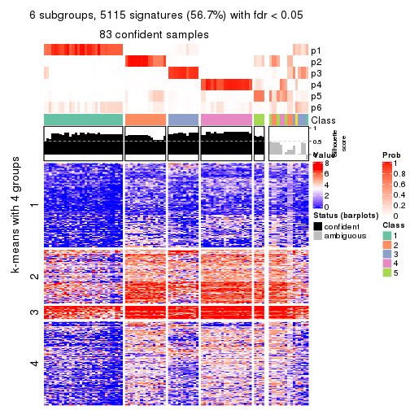
Compare the overlap of signatures from different k:
compare_signatures(res)
get_signature() returns a data frame invisibly. TO get the list of signatures, the function
call should be assigned to a variable explicitly. In following code, if plot argument is set
to FALSE, no heatmap is plotted while only the differential analysis is performed.
# code only for demonstration
tb = get_signature(res, k = ..., plot = FALSE)
An example of the output of tb is:
#> which_row fdr mean_1 mean_2 scaled_mean_1 scaled_mean_2 km
#> 1 38 0.042760348 8.373488 9.131774 -0.5533452 0.5164555 1
#> 2 40 0.018707592 7.106213 8.469186 -0.6173731 0.5762149 1
#> 3 55 0.019134737 10.221463 11.207825 -0.6159697 0.5749050 1
#> 4 59 0.006059896 5.921854 7.869574 -0.6899429 0.6439467 1
#> 5 60 0.018055526 8.928898 10.211722 -0.6204761 0.5791110 1
#> 6 98 0.009384629 15.714769 14.887706 0.6635654 -0.6193277 2
...
The columns in tb are:
which_row: row indices corresponding to the input matrix.fdr: FDR for the differential test. mean_x: The mean value in group x.scaled_mean_x: The mean value in group x after rows are scaled.km: Row groups if k-means clustering is applied to rows.UMAP plot which shows how samples are separated.
dimension_reduction(res, k = 2, method = "UMAP")

dimension_reduction(res, k = 3, method = "UMAP")
dimension_reduction(res, k = 4, method = "UMAP")

dimension_reduction(res, k = 5, method = "UMAP")
dimension_reduction(res, k = 6, method = "UMAP")
Following heatmap shows how subgroups are split when increasing k:
collect_classes(res)
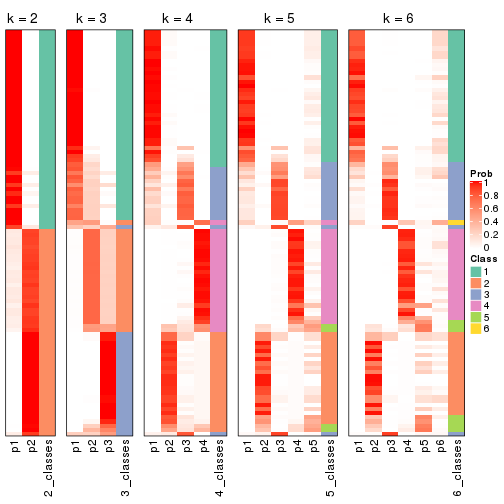
If matrix rows can be associated to genes, consider to use functional_enrichment(res,
...) to perform function enrichment for the signature genes. See this vignette for more detailed explanations.
The object with results only for a single top-value method and a single partition method can be extracted as:
res = res_list["CV", "skmeans"]
# you can also extract it by
# res = res_list["CV:skmeans"]
A summary of res and all the functions that can be applied to it:
res
#> A 'ConsensusPartition' object with k = 2, 3, 4, 5, 6.
#> On a matrix with 9017 rows and 98 columns.
#> Top rows (902, 1804, 2705, 3606, 4508) are extracted by 'CV' method.
#> Subgroups are detected by 'skmeans' method.
#> Performed in total 1250 partitions by row resampling.
#> Best k for subgroups seems to be 3.
#>
#> Following methods can be applied to this 'ConsensusPartition' object:
#> [1] "cola_report" "collect_classes" "collect_plots"
#> [4] "collect_stats" "colnames" "compare_signatures"
#> [7] "consensus_heatmap" "dimension_reduction" "functional_enrichment"
#> [10] "get_anno_col" "get_anno" "get_classes"
#> [13] "get_consensus" "get_matrix" "get_membership"
#> [16] "get_param" "get_signatures" "get_stats"
#> [19] "is_best_k" "is_stable_k" "membership_heatmap"
#> [22] "ncol" "nrow" "plot_ecdf"
#> [25] "rownames" "select_partition_number" "show"
#> [28] "suggest_best_k" "test_to_known_factors"
collect_plots() function collects all the plots made from res for all k (number of partitions)
into one single page to provide an easy and fast comparison between different k.
collect_plots(res)
The plots are:
k and the heatmap of
predicted classes for each k.k.k.k.All the plots in panels can be made by individual functions and they are plotted later in this section.
select_partition_number() produces several plots showing different
statistics for choosing “optimized” k. There are following statistics:
k;k, the area increased is defined as \(A_k - A_{k-1}\).The detailed explanations of these statistics can be found in the cola vignette.
Generally speaking, lower PAC score, higher mean silhouette score or higher
concordance corresponds to better partition. Rand index and Jaccard index
measure how similar the current partition is compared to partition with k-1.
If they are too similar, we won't accept k is better than k-1.
select_partition_number(res)
The numeric values for all these statistics can be obtained by get_stats().
get_stats(res)
#> k 1-PAC mean_silhouette concordance area_increased Rand Jaccard
#> 2 2 1.000 0.997 0.999 0.5054 0.495 0.495
#> 3 3 0.957 0.939 0.975 0.2916 0.810 0.632
#> 4 4 0.883 0.894 0.953 0.1316 0.892 0.700
#> 5 5 0.745 0.779 0.867 0.0501 0.988 0.955
#> 6 6 0.684 0.705 0.796 0.0340 0.993 0.972
suggest_best_k() suggests the best \(k\) based on these statistics. The rules are as follows:
suggest_best_k(res)
#> [1] 3
#> attr(,"optional")
#> [1] 2
There is also optional best \(k\) = 2 that is worth to check.
Following shows the table of the partitions (You need to click the show/hide
code output link to see it). The membership matrix (columns with name p*)
is inferred by
clue::cl_consensus()
function with the SE method. Basically the value in the membership matrix
represents the probability to belong to a certain group. The finall class
label for an item is determined with the group with highest probability it
belongs to.
In get_classes() function, the entropy is calculated from the membership
matrix and the silhouette score is calculated from the consensus matrix.
cbind(get_classes(res, k = 2), get_membership(res, k = 2))
#> class entropy silhouette p1 p2
#> SRR1810660 1 0.0000 1.000 1.000 0.000
#> SRR1810659 1 0.0000 1.000 1.000 0.000
#> SRR1810658 1 0.0000 1.000 1.000 0.000
#> SRR1810657 1 0.0000 1.000 1.000 0.000
#> SRR1818435 2 0.0000 0.998 0.000 1.000
#> SRR1818434 2 0.0000 0.998 0.000 1.000
#> SRR1810752 2 0.0000 0.998 0.000 1.000
#> SRR1810751 2 0.0000 0.998 0.000 1.000
#> SRR1810749 1 0.0000 1.000 1.000 0.000
#> SRR1810748 1 0.0000 1.000 1.000 0.000
#> SRR1810750 1 0.0000 1.000 1.000 0.000
#> SRR1810747 2 0.0000 0.998 0.000 1.000
#> SRR1810746 1 0.0000 1.000 1.000 0.000
#> SRR1810745 1 0.0000 1.000 1.000 0.000
#> SRR1810744 1 0.0000 1.000 1.000 0.000
#> SRR1810743 1 0.0000 1.000 1.000 0.000
#> SRR1810742 2 0.0000 0.998 0.000 1.000
#> SRR1810741 2 0.0000 0.998 0.000 1.000
#> SRR1810740 1 0.0000 1.000 1.000 0.000
#> SRR1810739 1 0.0000 1.000 1.000 0.000
#> SRR1810738 1 0.0000 1.000 1.000 0.000
#> SRR1810737 2 0.0000 0.998 0.000 1.000
#> SRR1810736 2 0.0000 0.998 0.000 1.000
#> SRR1810734 2 0.0000 0.998 0.000 1.000
#> SRR1810735 2 0.0000 0.998 0.000 1.000
#> SRR1810733 2 0.3114 0.942 0.056 0.944
#> SRR1810732 1 0.0000 1.000 1.000 0.000
#> SRR1810730 2 0.0000 0.998 0.000 1.000
#> SRR1810729 1 0.0000 1.000 1.000 0.000
#> SRR1810731 1 0.0000 1.000 1.000 0.000
#> SRR1810728 2 0.0000 0.998 0.000 1.000
#> SRR1810727 2 0.0000 0.998 0.000 1.000
#> SRR1810726 1 0.0376 0.996 0.996 0.004
#> SRR1810725 2 0.0000 0.998 0.000 1.000
#> SRR1810724 2 0.0000 0.998 0.000 1.000
#> SRR1810723 1 0.0000 1.000 1.000 0.000
#> SRR1810722 1 0.0000 1.000 1.000 0.000
#> SRR1810721 1 0.0000 1.000 1.000 0.000
#> SRR1810720 1 0.0000 1.000 1.000 0.000
#> SRR1810719 2 0.0000 0.998 0.000 1.000
#> SRR1810718 1 0.0000 1.000 1.000 0.000
#> SRR1810717 1 0.0000 1.000 1.000 0.000
#> SRR1810716 2 0.0000 0.998 0.000 1.000
#> SRR1810715 2 0.0000 0.998 0.000 1.000
#> SRR1810713 2 0.0000 0.998 0.000 1.000
#> SRR1810714 1 0.0000 1.000 1.000 0.000
#> SRR1810712 2 0.0000 0.998 0.000 1.000
#> SRR1810710 2 0.0000 0.998 0.000 1.000
#> SRR1810711 2 0.0000 0.998 0.000 1.000
#> SRR1810709 2 0.0000 0.998 0.000 1.000
#> SRR1810708 1 0.0000 1.000 1.000 0.000
#> SRR1810707 1 0.0000 1.000 1.000 0.000
#> SRR1810706 2 0.0000 0.998 0.000 1.000
#> SRR1810704 1 0.0000 1.000 1.000 0.000
#> SRR1810705 1 0.0000 1.000 1.000 0.000
#> SRR1810703 1 0.0000 1.000 1.000 0.000
#> SRR1810702 2 0.0000 0.998 0.000 1.000
#> SRR1810701 1 0.0000 1.000 1.000 0.000
#> SRR1810700 2 0.0000 0.998 0.000 1.000
#> SRR1810699 2 0.0000 0.998 0.000 1.000
#> SRR1810696 2 0.0000 0.998 0.000 1.000
#> SRR1810695 2 0.0000 0.998 0.000 1.000
#> SRR1810698 2 0.0000 0.998 0.000 1.000
#> SRR1810697 2 0.0000 0.998 0.000 1.000
#> SRR1810694 2 0.0672 0.991 0.008 0.992
#> SRR1810693 1 0.0000 1.000 1.000 0.000
#> SRR1810692 2 0.0000 0.998 0.000 1.000
#> SRR1810690 2 0.0000 0.998 0.000 1.000
#> SRR1810691 1 0.0000 1.000 1.000 0.000
#> SRR1810689 2 0.0000 0.998 0.000 1.000
#> SRR1810688 2 0.0000 0.998 0.000 1.000
#> SRR1810687 2 0.0000 0.998 0.000 1.000
#> SRR1810685 1 0.0000 1.000 1.000 0.000
#> SRR1810686 2 0.0000 0.998 0.000 1.000
#> SRR1810684 2 0.0000 0.998 0.000 1.000
#> SRR1810683 2 0.0000 0.998 0.000 1.000
#> SRR1810680 2 0.0000 0.998 0.000 1.000
#> SRR1810679 2 0.0000 0.998 0.000 1.000
#> SRR1810678 2 0.0000 0.998 0.000 1.000
#> SRR1810682 2 0.0000 0.998 0.000 1.000
#> SRR1810681 2 0.0000 0.998 0.000 1.000
#> SRR1810677 2 0.0000 0.998 0.000 1.000
#> SRR1810676 2 0.0000 0.998 0.000 1.000
#> SRR1810675 1 0.1184 0.984 0.984 0.016
#> SRR1810673 1 0.0000 1.000 1.000 0.000
#> SRR1810674 1 0.0000 1.000 1.000 0.000
#> SRR1810671 1 0.0000 1.000 1.000 0.000
#> SRR1810670 1 0.0000 1.000 1.000 0.000
#> SRR1810669 1 0.0000 1.000 1.000 0.000
#> SRR1810667 1 0.0000 1.000 1.000 0.000
#> SRR1810666 1 0.0000 1.000 1.000 0.000
#> SRR1810672 1 0.0000 1.000 1.000 0.000
#> SRR1810668 2 0.2423 0.959 0.040 0.960
#> SRR1810665 1 0.0000 1.000 1.000 0.000
#> SRR1810664 1 0.0000 1.000 1.000 0.000
#> SRR1810663 1 0.0000 1.000 1.000 0.000
#> SRR1810661 1 0.0000 1.000 1.000 0.000
#> SRR1810662 1 0.0000 1.000 1.000 0.000
cbind(get_classes(res, k = 3), get_membership(res, k = 3))
#> class entropy silhouette p1 p2 p3
#> SRR1810660 1 0.0000 0.9756 1.000 0.000 0.000
#> SRR1810659 1 0.0000 0.9756 1.000 0.000 0.000
#> SRR1810658 1 0.0000 0.9756 1.000 0.000 0.000
#> SRR1810657 1 0.0000 0.9756 1.000 0.000 0.000
#> SRR1818435 3 0.0237 0.9553 0.000 0.004 0.996
#> SRR1818434 3 0.0237 0.9553 0.000 0.004 0.996
#> SRR1810752 3 0.0237 0.9553 0.000 0.004 0.996
#> SRR1810751 3 0.0237 0.9553 0.000 0.004 0.996
#> SRR1810749 1 0.0000 0.9756 1.000 0.000 0.000
#> SRR1810748 1 0.0000 0.9756 1.000 0.000 0.000
#> SRR1810750 1 0.0000 0.9756 1.000 0.000 0.000
#> SRR1810747 3 0.0237 0.9553 0.000 0.004 0.996
#> SRR1810746 1 0.0000 0.9756 1.000 0.000 0.000
#> SRR1810745 1 0.0000 0.9756 1.000 0.000 0.000
#> SRR1810744 1 0.0000 0.9756 1.000 0.000 0.000
#> SRR1810743 1 0.0000 0.9756 1.000 0.000 0.000
#> SRR1810742 2 0.0000 0.9904 0.000 1.000 0.000
#> SRR1810741 3 0.0237 0.9553 0.000 0.004 0.996
#> SRR1810740 1 0.0000 0.9756 1.000 0.000 0.000
#> SRR1810739 1 0.0000 0.9756 1.000 0.000 0.000
#> SRR1810738 1 0.0000 0.9756 1.000 0.000 0.000
#> SRR1810737 2 0.0000 0.9904 0.000 1.000 0.000
#> SRR1810736 2 0.0000 0.9904 0.000 1.000 0.000
#> SRR1810734 3 0.0237 0.9553 0.000 0.004 0.996
#> SRR1810735 2 0.0000 0.9904 0.000 1.000 0.000
#> SRR1810733 2 0.0000 0.9904 0.000 1.000 0.000
#> SRR1810732 1 0.0592 0.9663 0.988 0.000 0.012
#> SRR1810730 2 0.0000 0.9904 0.000 1.000 0.000
#> SRR1810729 1 0.0000 0.9756 1.000 0.000 0.000
#> SRR1810731 1 0.0000 0.9756 1.000 0.000 0.000
#> SRR1810728 2 0.0000 0.9904 0.000 1.000 0.000
#> SRR1810727 2 0.0000 0.9904 0.000 1.000 0.000
#> SRR1810726 2 0.3340 0.8535 0.120 0.880 0.000
#> SRR1810725 2 0.0000 0.9904 0.000 1.000 0.000
#> SRR1810724 2 0.0000 0.9904 0.000 1.000 0.000
#> SRR1810723 1 0.0000 0.9756 1.000 0.000 0.000
#> SRR1810722 1 0.0000 0.9756 1.000 0.000 0.000
#> SRR1810721 1 0.0000 0.9756 1.000 0.000 0.000
#> SRR1810720 1 0.0000 0.9756 1.000 0.000 0.000
#> SRR1810719 3 0.0237 0.9553 0.000 0.004 0.996
#> SRR1810718 1 0.0000 0.9756 1.000 0.000 0.000
#> SRR1810717 1 0.0000 0.9756 1.000 0.000 0.000
#> SRR1810716 2 0.0000 0.9904 0.000 1.000 0.000
#> SRR1810715 3 0.0237 0.9553 0.000 0.004 0.996
#> SRR1810713 3 0.0237 0.9553 0.000 0.004 0.996
#> SRR1810714 1 0.0000 0.9756 1.000 0.000 0.000
#> SRR1810712 3 0.0237 0.9553 0.000 0.004 0.996
#> SRR1810710 2 0.0000 0.9904 0.000 1.000 0.000
#> SRR1810711 3 0.0237 0.9553 0.000 0.004 0.996
#> SRR1810709 2 0.0000 0.9904 0.000 1.000 0.000
#> SRR1810708 1 0.0000 0.9756 1.000 0.000 0.000
#> SRR1810707 1 0.6280 0.1350 0.540 0.000 0.460
#> SRR1810706 2 0.0000 0.9904 0.000 1.000 0.000
#> SRR1810704 1 0.0000 0.9756 1.000 0.000 0.000
#> SRR1810705 1 0.0000 0.9756 1.000 0.000 0.000
#> SRR1810703 1 0.0000 0.9756 1.000 0.000 0.000
#> SRR1810702 3 0.0237 0.9553 0.000 0.004 0.996
#> SRR1810701 1 0.0000 0.9756 1.000 0.000 0.000
#> SRR1810700 3 0.0237 0.9553 0.000 0.004 0.996
#> SRR1810699 3 0.1289 0.9357 0.000 0.032 0.968
#> SRR1810696 2 0.0000 0.9904 0.000 1.000 0.000
#> SRR1810695 2 0.0747 0.9766 0.000 0.984 0.016
#> SRR1810698 2 0.0000 0.9904 0.000 1.000 0.000
#> SRR1810697 2 0.0000 0.9904 0.000 1.000 0.000
#> SRR1810694 2 0.0000 0.9904 0.000 1.000 0.000
#> SRR1810693 1 0.0000 0.9756 1.000 0.000 0.000
#> SRR1810692 2 0.1860 0.9404 0.000 0.948 0.052
#> SRR1810690 3 0.4452 0.7677 0.000 0.192 0.808
#> SRR1810691 1 0.0000 0.9756 1.000 0.000 0.000
#> SRR1810689 3 0.0237 0.9553 0.000 0.004 0.996
#> SRR1810688 3 0.0237 0.9553 0.000 0.004 0.996
#> SRR1810687 3 0.0237 0.9553 0.000 0.004 0.996
#> SRR1810685 1 0.0475 0.9715 0.992 0.004 0.004
#> SRR1810686 3 0.0237 0.9553 0.000 0.004 0.996
#> SRR1810684 2 0.0000 0.9904 0.000 1.000 0.000
#> SRR1810683 3 0.0237 0.9553 0.000 0.004 0.996
#> SRR1810680 3 0.4605 0.7523 0.000 0.204 0.796
#> SRR1810679 2 0.0000 0.9904 0.000 1.000 0.000
#> SRR1810678 3 0.0237 0.9553 0.000 0.004 0.996
#> SRR1810682 3 0.0747 0.9475 0.000 0.016 0.984
#> SRR1810681 2 0.0424 0.9842 0.000 0.992 0.008
#> SRR1810677 3 0.5465 0.6049 0.000 0.288 0.712
#> SRR1810676 3 0.0237 0.9553 0.000 0.004 0.996
#> SRR1810675 3 0.0000 0.9523 0.000 0.000 1.000
#> SRR1810673 1 0.0892 0.9611 0.980 0.000 0.020
#> SRR1810674 3 0.3941 0.7915 0.156 0.000 0.844
#> SRR1810671 1 0.0237 0.9740 0.996 0.000 0.004
#> SRR1810670 1 0.0237 0.9740 0.996 0.000 0.004
#> SRR1810669 1 0.0237 0.9740 0.996 0.000 0.004
#> SRR1810667 1 0.6295 0.0995 0.528 0.000 0.472
#> SRR1810666 1 0.0237 0.9740 0.996 0.000 0.004
#> SRR1810672 1 0.0237 0.9740 0.996 0.000 0.004
#> SRR1810668 3 0.0000 0.9523 0.000 0.000 1.000
#> SRR1810665 1 0.0237 0.9740 0.996 0.000 0.004
#> SRR1810664 3 0.5591 0.5476 0.304 0.000 0.696
#> SRR1810663 1 0.0747 0.9649 0.984 0.000 0.016
#> SRR1810661 1 0.0237 0.9740 0.996 0.000 0.004
#> SRR1810662 1 0.0237 0.9740 0.996 0.000 0.004
cbind(get_classes(res, k = 4), get_membership(res, k = 4))
#> class entropy silhouette p1 p2 p3 p4
#> SRR1810660 1 0.0336 0.953 0.992 0.000 0.008 0.000
#> SRR1810659 1 0.0336 0.953 0.992 0.000 0.008 0.000
#> SRR1810658 1 0.0336 0.953 0.992 0.000 0.008 0.000
#> SRR1810657 1 0.0336 0.953 0.992 0.000 0.008 0.000
#> SRR1818435 2 0.2469 0.878 0.000 0.892 0.108 0.000
#> SRR1818434 2 0.2654 0.875 0.000 0.888 0.108 0.004
#> SRR1810752 2 0.0000 0.968 0.000 1.000 0.000 0.000
#> SRR1810751 2 0.0000 0.968 0.000 1.000 0.000 0.000
#> SRR1810749 1 0.0336 0.951 0.992 0.000 0.008 0.000
#> SRR1810748 1 0.0188 0.954 0.996 0.000 0.004 0.000
#> SRR1810750 1 0.0188 0.954 0.996 0.000 0.004 0.000
#> SRR1810747 2 0.0000 0.968 0.000 1.000 0.000 0.000
#> SRR1810746 1 0.0469 0.952 0.988 0.000 0.012 0.000
#> SRR1810745 1 0.0188 0.952 0.996 0.000 0.004 0.000
#> SRR1810744 1 0.0188 0.954 0.996 0.000 0.004 0.000
#> SRR1810743 1 0.0000 0.954 1.000 0.000 0.000 0.000
#> SRR1810742 4 0.0000 0.952 0.000 0.000 0.000 1.000
#> SRR1810741 2 0.0188 0.967 0.000 0.996 0.004 0.000
#> SRR1810740 1 0.0469 0.949 0.988 0.000 0.012 0.000
#> SRR1810739 1 0.0469 0.952 0.988 0.000 0.012 0.000
#> SRR1810738 1 0.0188 0.954 0.996 0.000 0.004 0.000
#> SRR1810737 4 0.0000 0.952 0.000 0.000 0.000 1.000
#> SRR1810736 4 0.0000 0.952 0.000 0.000 0.000 1.000
#> SRR1810734 2 0.0000 0.968 0.000 1.000 0.000 0.000
#> SRR1810735 4 0.0188 0.952 0.000 0.000 0.004 0.996
#> SRR1810733 4 0.0188 0.952 0.000 0.000 0.004 0.996
#> SRR1810732 3 0.4730 0.477 0.364 0.000 0.636 0.000
#> SRR1810730 4 0.0000 0.952 0.000 0.000 0.000 1.000
#> SRR1810729 1 0.1792 0.901 0.932 0.000 0.068 0.000
#> SRR1810731 1 0.0188 0.952 0.996 0.000 0.004 0.000
#> SRR1810728 4 0.0000 0.952 0.000 0.000 0.000 1.000
#> SRR1810727 4 0.0000 0.952 0.000 0.000 0.000 1.000
#> SRR1810726 4 0.6108 0.176 0.424 0.000 0.048 0.528
#> SRR1810725 4 0.0188 0.952 0.000 0.000 0.004 0.996
#> SRR1810724 4 0.0188 0.950 0.000 0.004 0.000 0.996
#> SRR1810723 1 0.0188 0.952 0.996 0.000 0.004 0.000
#> SRR1810722 1 0.0469 0.952 0.988 0.000 0.012 0.000
#> SRR1810721 1 0.0000 0.954 1.000 0.000 0.000 0.000
#> SRR1810720 1 0.0188 0.952 0.996 0.000 0.004 0.000
#> SRR1810719 2 0.0000 0.968 0.000 1.000 0.000 0.000
#> SRR1810718 1 0.0336 0.953 0.992 0.000 0.008 0.000
#> SRR1810717 1 0.0000 0.954 1.000 0.000 0.000 0.000
#> SRR1810716 4 0.0188 0.952 0.000 0.000 0.004 0.996
#> SRR1810715 2 0.0000 0.968 0.000 1.000 0.000 0.000
#> SRR1810713 2 0.0188 0.967 0.000 0.996 0.004 0.000
#> SRR1810714 1 0.0188 0.954 0.996 0.000 0.004 0.000
#> SRR1810712 2 0.0000 0.968 0.000 1.000 0.000 0.000
#> SRR1810710 4 0.0188 0.952 0.000 0.000 0.004 0.996
#> SRR1810711 2 0.0000 0.968 0.000 1.000 0.000 0.000
#> SRR1810709 4 0.0000 0.952 0.000 0.000 0.000 1.000
#> SRR1810708 1 0.0188 0.954 0.996 0.000 0.004 0.000
#> SRR1810707 3 0.5105 0.633 0.276 0.028 0.696 0.000
#> SRR1810706 4 0.0000 0.952 0.000 0.000 0.000 1.000
#> SRR1810704 1 0.0000 0.954 1.000 0.000 0.000 0.000
#> SRR1810705 1 0.0000 0.954 1.000 0.000 0.000 0.000
#> SRR1810703 1 0.0188 0.954 0.996 0.000 0.004 0.000
#> SRR1810702 2 0.0000 0.968 0.000 1.000 0.000 0.000
#> SRR1810701 1 0.0000 0.954 1.000 0.000 0.000 0.000
#> SRR1810700 2 0.0000 0.968 0.000 1.000 0.000 0.000
#> SRR1810699 2 0.1211 0.939 0.000 0.960 0.000 0.040
#> SRR1810696 4 0.0188 0.952 0.000 0.000 0.004 0.996
#> SRR1810695 4 0.3975 0.670 0.000 0.240 0.000 0.760
#> SRR1810698 4 0.0188 0.952 0.000 0.000 0.004 0.996
#> SRR1810697 4 0.0188 0.952 0.000 0.000 0.004 0.996
#> SRR1810694 4 0.0188 0.952 0.000 0.000 0.004 0.996
#> SRR1810693 1 0.4382 0.536 0.704 0.000 0.296 0.000
#> SRR1810692 4 0.3074 0.798 0.000 0.152 0.000 0.848
#> SRR1810690 2 0.2918 0.862 0.000 0.876 0.008 0.116
#> SRR1810691 1 0.1305 0.928 0.960 0.000 0.036 0.004
#> SRR1810689 2 0.0188 0.967 0.000 0.996 0.004 0.000
#> SRR1810688 2 0.0000 0.968 0.000 1.000 0.000 0.000
#> SRR1810687 2 0.0000 0.968 0.000 1.000 0.000 0.000
#> SRR1810685 1 0.5588 0.294 0.600 0.004 0.376 0.020
#> SRR1810686 2 0.0000 0.968 0.000 1.000 0.000 0.000
#> SRR1810684 4 0.0000 0.952 0.000 0.000 0.000 1.000
#> SRR1810683 2 0.0000 0.968 0.000 1.000 0.000 0.000
#> SRR1810680 2 0.4139 0.775 0.000 0.800 0.024 0.176
#> SRR1810679 4 0.0000 0.952 0.000 0.000 0.000 1.000
#> SRR1810678 2 0.0188 0.967 0.000 0.996 0.004 0.000
#> SRR1810682 2 0.0336 0.964 0.000 0.992 0.000 0.008
#> SRR1810681 4 0.1302 0.914 0.000 0.044 0.000 0.956
#> SRR1810677 2 0.2760 0.852 0.000 0.872 0.000 0.128
#> SRR1810676 2 0.0000 0.968 0.000 1.000 0.000 0.000
#> SRR1810675 3 0.0707 0.872 0.000 0.020 0.980 0.000
#> SRR1810673 3 0.0336 0.880 0.008 0.000 0.992 0.000
#> SRR1810674 3 0.0336 0.877 0.000 0.008 0.992 0.000
#> SRR1810671 3 0.3942 0.702 0.236 0.000 0.764 0.000
#> SRR1810670 3 0.4972 0.222 0.456 0.000 0.544 0.000
#> SRR1810669 1 0.3172 0.790 0.840 0.000 0.160 0.000
#> SRR1810667 3 0.0336 0.880 0.008 0.000 0.992 0.000
#> SRR1810666 3 0.0817 0.879 0.024 0.000 0.976 0.000
#> SRR1810672 1 0.4040 0.638 0.752 0.000 0.248 0.000
#> SRR1810668 3 0.0592 0.873 0.000 0.016 0.984 0.000
#> SRR1810665 3 0.0707 0.880 0.020 0.000 0.980 0.000
#> SRR1810664 3 0.0469 0.876 0.000 0.012 0.988 0.000
#> SRR1810663 3 0.0336 0.880 0.008 0.000 0.992 0.000
#> SRR1810661 3 0.0469 0.880 0.012 0.000 0.988 0.000
#> SRR1810662 3 0.2469 0.834 0.108 0.000 0.892 0.000
cbind(get_classes(res, k = 5), get_membership(res, k = 5))
#> class entropy silhouette p1 p2 p3 p4 p5
#> SRR1810660 1 0.0880 0.85286 0.968 0.000 0.000 0.000 0.032
#> SRR1810659 1 0.0880 0.85286 0.968 0.000 0.000 0.000 0.032
#> SRR1810658 1 0.0880 0.85286 0.968 0.000 0.000 0.000 0.032
#> SRR1810657 1 0.0880 0.85286 0.968 0.000 0.000 0.000 0.032
#> SRR1818435 2 0.5273 0.68792 0.000 0.680 0.156 0.000 0.164
#> SRR1818434 2 0.5530 0.67005 0.000 0.664 0.160 0.004 0.172
#> SRR1810752 2 0.0703 0.90082 0.000 0.976 0.000 0.000 0.024
#> SRR1810751 2 0.1544 0.89769 0.000 0.932 0.000 0.000 0.068
#> SRR1810749 1 0.2424 0.83395 0.868 0.000 0.000 0.000 0.132
#> SRR1810748 1 0.0880 0.85286 0.968 0.000 0.000 0.000 0.032
#> SRR1810750 1 0.1043 0.85665 0.960 0.000 0.000 0.000 0.040
#> SRR1810747 2 0.0609 0.90116 0.000 0.980 0.000 0.000 0.020
#> SRR1810746 1 0.2286 0.84714 0.888 0.000 0.004 0.000 0.108
#> SRR1810745 1 0.2230 0.84401 0.884 0.000 0.000 0.000 0.116
#> SRR1810744 1 0.1121 0.86219 0.956 0.000 0.000 0.000 0.044
#> SRR1810743 1 0.2020 0.85319 0.900 0.000 0.000 0.000 0.100
#> SRR1810742 4 0.1608 0.90573 0.000 0.000 0.000 0.928 0.072
#> SRR1810741 2 0.1197 0.90044 0.000 0.952 0.000 0.000 0.048
#> SRR1810740 1 0.3805 0.73201 0.784 0.000 0.032 0.000 0.184
#> SRR1810739 1 0.1965 0.85481 0.904 0.000 0.000 0.000 0.096
#> SRR1810738 1 0.2020 0.85581 0.900 0.000 0.000 0.000 0.100
#> SRR1810737 4 0.2011 0.90407 0.000 0.004 0.000 0.908 0.088
#> SRR1810736 4 0.1908 0.90090 0.000 0.000 0.000 0.908 0.092
#> SRR1810734 2 0.0794 0.89981 0.000 0.972 0.000 0.000 0.028
#> SRR1810735 4 0.2230 0.89171 0.000 0.000 0.000 0.884 0.116
#> SRR1810733 4 0.2690 0.87059 0.000 0.000 0.000 0.844 0.156
#> SRR1810732 3 0.6015 -0.00562 0.360 0.000 0.516 0.000 0.124
#> SRR1810730 4 0.1671 0.90609 0.000 0.000 0.000 0.924 0.076
#> SRR1810729 1 0.4104 0.72774 0.788 0.000 0.088 0.000 0.124
#> SRR1810731 1 0.2690 0.82065 0.844 0.000 0.000 0.000 0.156
#> SRR1810728 4 0.1608 0.90586 0.000 0.000 0.000 0.928 0.072
#> SRR1810727 4 0.1043 0.90537 0.000 0.000 0.000 0.960 0.040
#> SRR1810726 5 0.6786 0.55049 0.192 0.000 0.028 0.240 0.540
#> SRR1810725 4 0.2074 0.89289 0.000 0.000 0.000 0.896 0.104
#> SRR1810724 4 0.1430 0.90608 0.000 0.004 0.000 0.944 0.052
#> SRR1810723 1 0.3010 0.79619 0.824 0.000 0.004 0.000 0.172
#> SRR1810722 1 0.2690 0.82012 0.844 0.000 0.000 0.000 0.156
#> SRR1810721 1 0.2179 0.85058 0.888 0.000 0.000 0.000 0.112
#> SRR1810720 1 0.2561 0.82095 0.856 0.000 0.000 0.000 0.144
#> SRR1810719 2 0.1270 0.90042 0.000 0.948 0.000 0.000 0.052
#> SRR1810718 1 0.0880 0.85286 0.968 0.000 0.000 0.000 0.032
#> SRR1810717 1 0.1965 0.85442 0.904 0.000 0.000 0.000 0.096
#> SRR1810716 4 0.2280 0.88569 0.000 0.000 0.000 0.880 0.120
#> SRR1810715 2 0.0609 0.89928 0.000 0.980 0.000 0.000 0.020
#> SRR1810713 2 0.1341 0.89715 0.000 0.944 0.000 0.000 0.056
#> SRR1810714 1 0.1121 0.85437 0.956 0.000 0.000 0.000 0.044
#> SRR1810712 2 0.0609 0.90028 0.000 0.980 0.000 0.000 0.020
#> SRR1810710 4 0.1197 0.90674 0.000 0.000 0.000 0.952 0.048
#> SRR1810711 2 0.0703 0.90110 0.000 0.976 0.000 0.000 0.024
#> SRR1810709 4 0.1544 0.90682 0.000 0.000 0.000 0.932 0.068
#> SRR1810708 1 0.0963 0.86081 0.964 0.000 0.000 0.000 0.036
#> SRR1810707 3 0.6909 0.29446 0.156 0.064 0.572 0.000 0.208
#> SRR1810706 4 0.1830 0.90401 0.000 0.008 0.000 0.924 0.068
#> SRR1810704 1 0.1792 0.85961 0.916 0.000 0.000 0.000 0.084
#> SRR1810705 1 0.1608 0.85766 0.928 0.000 0.000 0.000 0.072
#> SRR1810703 1 0.0963 0.85829 0.964 0.000 0.000 0.000 0.036
#> SRR1810702 2 0.0609 0.90006 0.000 0.980 0.000 0.000 0.020
#> SRR1810701 1 0.1043 0.86065 0.960 0.000 0.000 0.000 0.040
#> SRR1810700 2 0.1478 0.89883 0.000 0.936 0.000 0.000 0.064
#> SRR1810699 2 0.4501 0.74085 0.000 0.756 0.000 0.128 0.116
#> SRR1810696 4 0.1544 0.89880 0.000 0.000 0.000 0.932 0.068
#> SRR1810695 4 0.6156 0.43418 0.000 0.224 0.000 0.560 0.216
#> SRR1810698 4 0.1121 0.90579 0.000 0.000 0.000 0.956 0.044
#> SRR1810697 4 0.1341 0.90646 0.000 0.000 0.000 0.944 0.056
#> SRR1810694 4 0.2179 0.89595 0.000 0.000 0.000 0.888 0.112
#> SRR1810693 1 0.5887 0.14925 0.596 0.000 0.240 0.000 0.164
#> SRR1810692 4 0.5086 0.64521 0.000 0.144 0.000 0.700 0.156
#> SRR1810690 2 0.5779 0.60883 0.000 0.628 0.004 0.148 0.220
#> SRR1810691 1 0.4370 0.49760 0.656 0.000 0.008 0.004 0.332
#> SRR1810689 2 0.2179 0.88077 0.000 0.888 0.000 0.000 0.112
#> SRR1810688 2 0.1341 0.90087 0.000 0.944 0.000 0.000 0.056
#> SRR1810687 2 0.1792 0.89258 0.000 0.916 0.000 0.000 0.084
#> SRR1810685 5 0.6909 0.46162 0.292 0.008 0.188 0.012 0.500
#> SRR1810686 2 0.1792 0.89258 0.000 0.916 0.000 0.000 0.084
#> SRR1810684 4 0.1792 0.89927 0.000 0.000 0.000 0.916 0.084
#> SRR1810683 2 0.0404 0.90064 0.000 0.988 0.000 0.000 0.012
#> SRR1810680 2 0.6435 0.48496 0.000 0.548 0.008 0.208 0.236
#> SRR1810679 4 0.1270 0.90757 0.000 0.000 0.000 0.948 0.052
#> SRR1810678 2 0.1544 0.89911 0.000 0.932 0.000 0.000 0.068
#> SRR1810682 2 0.3165 0.85561 0.000 0.848 0.000 0.036 0.116
#> SRR1810681 4 0.4841 0.71801 0.000 0.084 0.000 0.708 0.208
#> SRR1810677 2 0.4989 0.71105 0.000 0.708 0.000 0.124 0.168
#> SRR1810676 2 0.0794 0.90158 0.000 0.972 0.000 0.000 0.028
#> SRR1810675 3 0.1282 0.76919 0.000 0.004 0.952 0.000 0.044
#> SRR1810673 3 0.0609 0.77433 0.000 0.000 0.980 0.000 0.020
#> SRR1810674 3 0.0609 0.77315 0.000 0.000 0.980 0.000 0.020
#> SRR1810671 3 0.5775 0.25174 0.264 0.000 0.600 0.000 0.136
#> SRR1810670 3 0.6342 -0.15576 0.372 0.000 0.464 0.000 0.164
#> SRR1810669 1 0.4294 0.62371 0.768 0.000 0.152 0.000 0.080
#> SRR1810667 3 0.0880 0.77326 0.000 0.000 0.968 0.000 0.032
#> SRR1810666 3 0.2597 0.73716 0.024 0.000 0.884 0.000 0.092
#> SRR1810672 1 0.5799 0.24715 0.612 0.000 0.220 0.000 0.168
#> SRR1810668 3 0.1952 0.74940 0.000 0.004 0.912 0.000 0.084
#> SRR1810665 3 0.1430 0.76789 0.004 0.000 0.944 0.000 0.052
#> SRR1810664 3 0.0404 0.77319 0.000 0.000 0.988 0.000 0.012
#> SRR1810663 3 0.0404 0.77399 0.000 0.000 0.988 0.000 0.012
#> SRR1810661 3 0.1124 0.77231 0.004 0.000 0.960 0.000 0.036
#> SRR1810662 3 0.3932 0.61712 0.140 0.000 0.796 0.000 0.064
cbind(get_classes(res, k = 6), get_membership(res, k = 6))
#> class entropy silhouette p1 p2 p3 p4 p5 p6
#> SRR1810660 1 0.0790 0.79689 0.968 0.000 0.000 0.000 0.032 NA
#> SRR1810659 1 0.0790 0.79824 0.968 0.000 0.000 0.000 0.032 NA
#> SRR1810658 1 0.0865 0.79773 0.964 0.000 0.000 0.000 0.036 NA
#> SRR1810657 1 0.0790 0.79689 0.968 0.000 0.000 0.000 0.032 NA
#> SRR1818435 2 0.6263 0.55389 0.000 0.548 0.168 0.008 0.032 NA
#> SRR1818434 2 0.6555 0.52347 0.000 0.524 0.172 0.016 0.036 NA
#> SRR1810752 2 0.1141 0.85009 0.000 0.948 0.000 0.000 0.000 NA
#> SRR1810751 2 0.1812 0.85351 0.000 0.912 0.000 0.000 0.008 NA
#> SRR1810749 1 0.3290 0.74000 0.776 0.000 0.000 0.000 0.208 NA
#> SRR1810748 1 0.0713 0.79734 0.972 0.000 0.000 0.000 0.028 NA
#> SRR1810750 1 0.0777 0.80272 0.972 0.000 0.000 0.000 0.024 NA
#> SRR1810747 2 0.1588 0.85232 0.000 0.924 0.000 0.000 0.004 NA
#> SRR1810746 1 0.2826 0.77674 0.844 0.000 0.000 0.000 0.128 NA
#> SRR1810745 1 0.2988 0.77215 0.824 0.000 0.000 0.000 0.152 NA
#> SRR1810744 1 0.1812 0.80679 0.912 0.000 0.000 0.000 0.080 NA
#> SRR1810743 1 0.2784 0.78136 0.848 0.000 0.000 0.000 0.124 NA
#> SRR1810742 4 0.3066 0.84678 0.000 0.000 0.000 0.832 0.044 NA
#> SRR1810741 2 0.2536 0.84178 0.000 0.864 0.000 0.000 0.020 NA
#> SRR1810740 1 0.4076 0.61845 0.724 0.000 0.024 0.000 0.236 NA
#> SRR1810739 1 0.2730 0.78568 0.836 0.000 0.000 0.000 0.152 NA
#> SRR1810738 1 0.2872 0.77246 0.836 0.000 0.000 0.000 0.140 NA
#> SRR1810737 4 0.2949 0.84133 0.000 0.000 0.000 0.832 0.028 NA
#> SRR1810736 4 0.3139 0.83499 0.000 0.000 0.000 0.816 0.032 NA
#> SRR1810734 2 0.1219 0.85104 0.000 0.948 0.000 0.000 0.004 NA
#> SRR1810735 4 0.3694 0.82424 0.000 0.000 0.000 0.784 0.076 NA
#> SRR1810733 4 0.4570 0.77504 0.004 0.000 0.000 0.704 0.104 NA
#> SRR1810732 3 0.6988 0.00427 0.328 0.008 0.416 0.000 0.188 NA
#> SRR1810730 4 0.3023 0.84535 0.000 0.000 0.000 0.828 0.032 NA
#> SRR1810729 1 0.4381 0.62827 0.748 0.000 0.100 0.000 0.136 NA
#> SRR1810731 1 0.3290 0.73601 0.776 0.000 0.000 0.000 0.208 NA
#> SRR1810728 4 0.3211 0.84290 0.000 0.000 0.000 0.824 0.056 NA
#> SRR1810727 4 0.2255 0.84740 0.000 0.000 0.000 0.892 0.028 NA
#> SRR1810726 5 0.6957 0.44351 0.156 0.000 0.016 0.216 0.520 NA
#> SRR1810725 4 0.3776 0.81099 0.000 0.000 0.000 0.760 0.052 NA
#> SRR1810724 4 0.3120 0.83096 0.000 0.008 0.000 0.832 0.028 NA
#> SRR1810723 1 0.3570 0.69622 0.752 0.000 0.004 0.000 0.228 NA
#> SRR1810722 1 0.3104 0.75474 0.800 0.000 0.000 0.000 0.184 NA
#> SRR1810721 1 0.3453 0.72067 0.788 0.000 0.004 0.000 0.180 NA
#> SRR1810720 1 0.3622 0.69852 0.760 0.000 0.004 0.000 0.212 NA
#> SRR1810719 2 0.2218 0.84705 0.000 0.884 0.000 0.000 0.012 NA
#> SRR1810718 1 0.0713 0.79734 0.972 0.000 0.000 0.000 0.028 NA
#> SRR1810717 1 0.2006 0.80468 0.892 0.000 0.000 0.000 0.104 NA
#> SRR1810716 4 0.4085 0.78972 0.000 0.000 0.000 0.716 0.052 NA
#> SRR1810715 2 0.2070 0.84659 0.000 0.896 0.000 0.000 0.012 NA
#> SRR1810713 2 0.2760 0.83864 0.000 0.856 0.004 0.000 0.024 NA
#> SRR1810714 1 0.2308 0.79313 0.880 0.000 0.008 0.000 0.108 NA
#> SRR1810712 2 0.0937 0.85015 0.000 0.960 0.000 0.000 0.000 NA
#> SRR1810710 4 0.2672 0.84612 0.000 0.000 0.000 0.868 0.052 NA
#> SRR1810711 2 0.1204 0.85240 0.000 0.944 0.000 0.000 0.000 NA
#> SRR1810709 4 0.2331 0.84563 0.000 0.000 0.000 0.888 0.032 NA
#> SRR1810708 1 0.1908 0.80440 0.900 0.000 0.000 0.000 0.096 NA
#> SRR1810707 3 0.8070 0.19659 0.128 0.100 0.424 0.000 0.232 NA
#> SRR1810706 4 0.2549 0.84532 0.000 0.008 0.000 0.884 0.036 NA
#> SRR1810704 1 0.2631 0.78098 0.840 0.000 0.000 0.000 0.152 NA
#> SRR1810705 1 0.1858 0.80592 0.904 0.000 0.000 0.000 0.092 NA
#> SRR1810703 1 0.1141 0.80597 0.948 0.000 0.000 0.000 0.052 NA
#> SRR1810702 2 0.1141 0.85297 0.000 0.948 0.000 0.000 0.000 NA
#> SRR1810701 1 0.1010 0.80413 0.960 0.000 0.000 0.000 0.036 NA
#> SRR1810700 2 0.2263 0.85083 0.000 0.884 0.000 0.000 0.016 NA
#> SRR1810699 2 0.5551 0.66867 0.000 0.644 0.004 0.112 0.036 NA
#> SRR1810696 4 0.3341 0.82959 0.000 0.000 0.000 0.816 0.068 NA
#> SRR1810695 4 0.6577 0.38945 0.000 0.188 0.000 0.440 0.044 NA
#> SRR1810698 4 0.2888 0.84366 0.000 0.000 0.000 0.852 0.056 NA
#> SRR1810697 4 0.2923 0.84367 0.000 0.000 0.000 0.848 0.052 NA
#> SRR1810694 4 0.4014 0.80935 0.000 0.000 0.000 0.756 0.096 NA
#> SRR1810693 1 0.6227 0.03144 0.540 0.000 0.248 0.000 0.168 NA
#> SRR1810692 4 0.6190 0.54045 0.000 0.160 0.000 0.544 0.044 NA
#> SRR1810690 2 0.7134 0.41007 0.004 0.448 0.016 0.128 0.080 NA
#> SRR1810691 5 0.5599 0.04153 0.444 0.000 0.012 0.024 0.472 NA
#> SRR1810689 2 0.4164 0.79272 0.000 0.728 0.000 0.012 0.040 NA
#> SRR1810688 2 0.1584 0.85457 0.000 0.928 0.000 0.000 0.008 NA
#> SRR1810687 2 0.2593 0.83896 0.000 0.844 0.000 0.000 0.008 NA
#> SRR1810685 5 0.6364 0.41407 0.164 0.008 0.112 0.004 0.608 NA
#> SRR1810686 2 0.2593 0.83896 0.000 0.844 0.000 0.000 0.008 NA
#> SRR1810684 4 0.3227 0.84201 0.000 0.000 0.000 0.824 0.060 NA
#> SRR1810683 2 0.0858 0.85301 0.000 0.968 0.000 0.000 0.004 NA
#> SRR1810680 2 0.7117 0.41165 0.000 0.456 0.032 0.148 0.056 NA
#> SRR1810679 4 0.1863 0.84641 0.000 0.000 0.000 0.920 0.044 NA
#> SRR1810678 2 0.2581 0.84741 0.000 0.856 0.000 0.000 0.016 NA
#> SRR1810682 2 0.3909 0.79265 0.000 0.772 0.000 0.060 0.008 NA
#> SRR1810681 4 0.5967 0.59465 0.000 0.104 0.000 0.572 0.056 NA
#> SRR1810677 2 0.6009 0.61963 0.000 0.576 0.004 0.136 0.036 NA
#> SRR1810676 2 0.1625 0.85335 0.000 0.928 0.000 0.000 0.012 NA
#> SRR1810675 3 0.2492 0.72827 0.000 0.008 0.888 0.000 0.036 NA
#> SRR1810673 3 0.1421 0.73680 0.000 0.000 0.944 0.000 0.028 NA
#> SRR1810674 3 0.1564 0.73303 0.000 0.000 0.936 0.000 0.024 NA
#> SRR1810671 3 0.6688 0.27300 0.256 0.000 0.496 0.000 0.168 NA
#> SRR1810670 3 0.7087 -0.10959 0.340 0.000 0.360 0.000 0.220 NA
#> SRR1810669 1 0.5336 0.46343 0.672 0.000 0.108 0.000 0.172 NA
#> SRR1810667 3 0.1995 0.73420 0.000 0.000 0.912 0.000 0.052 NA
#> SRR1810666 3 0.4419 0.66756 0.028 0.000 0.752 0.000 0.140 NA
#> SRR1810672 1 0.6709 -0.05685 0.472 0.000 0.220 0.000 0.248 NA
#> SRR1810668 3 0.3309 0.71096 0.000 0.004 0.824 0.000 0.056 NA
#> SRR1810665 3 0.3406 0.71043 0.012 0.000 0.828 0.000 0.096 NA
#> SRR1810664 3 0.1341 0.73542 0.000 0.000 0.948 0.000 0.024 NA
#> SRR1810663 3 0.0858 0.73635 0.000 0.000 0.968 0.000 0.028 NA
#> SRR1810661 3 0.1780 0.73630 0.000 0.000 0.924 0.000 0.048 NA
#> SRR1810662 3 0.5294 0.50231 0.196 0.000 0.668 0.000 0.088 NA
Heatmaps for the consensus matrix. It visualizes the probability of two samples to be in a same group.
consensus_heatmap(res, k = 2)
consensus_heatmap(res, k = 3)
consensus_heatmap(res, k = 4)
consensus_heatmap(res, k = 5)
consensus_heatmap(res, k = 6)
Heatmaps for the membership of samples in all partitions to see how consistent they are:
membership_heatmap(res, k = 2)
membership_heatmap(res, k = 3)
membership_heatmap(res, k = 4)
membership_heatmap(res, k = 5)
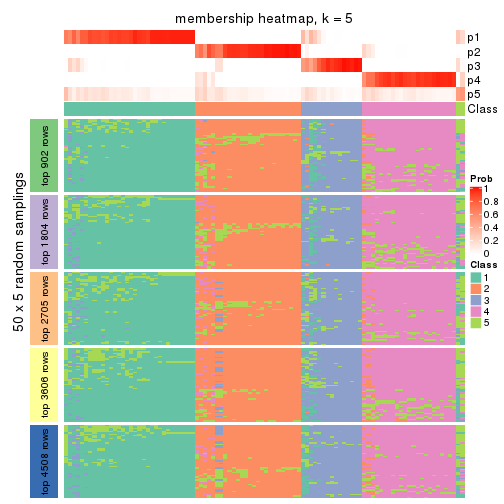
membership_heatmap(res, k = 6)
As soon as we have had the classes for columns, we can look for signatures which are significantly different between classes which can be candidate marks for certain classes. Following are the heatmaps for signatures.
Signature heatmaps where rows are scaled:
get_signatures(res, k = 2)
get_signatures(res, k = 3)
get_signatures(res, k = 4)
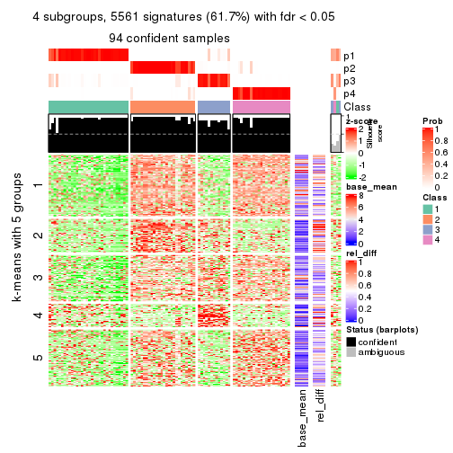
get_signatures(res, k = 5)
get_signatures(res, k = 6)
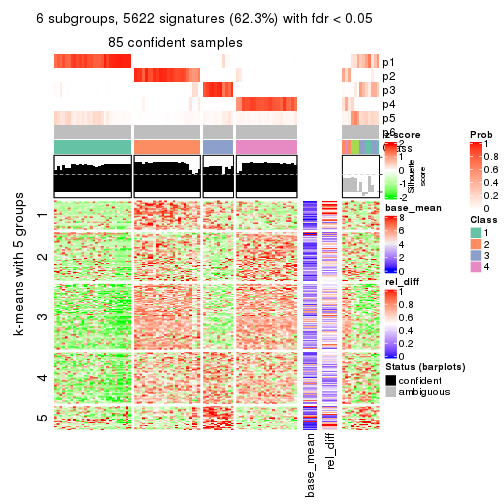
Signature heatmaps where rows are not scaled:
get_signatures(res, k = 2, scale_rows = FALSE)
get_signatures(res, k = 3, scale_rows = FALSE)
get_signatures(res, k = 4, scale_rows = FALSE)
get_signatures(res, k = 5, scale_rows = FALSE)
get_signatures(res, k = 6, scale_rows = FALSE)

Compare the overlap of signatures from different k:
compare_signatures(res)

get_signature() returns a data frame invisibly. TO get the list of signatures, the function
call should be assigned to a variable explicitly. In following code, if plot argument is set
to FALSE, no heatmap is plotted while only the differential analysis is performed.
# code only for demonstration
tb = get_signature(res, k = ..., plot = FALSE)
An example of the output of tb is:
#> which_row fdr mean_1 mean_2 scaled_mean_1 scaled_mean_2 km
#> 1 38 0.042760348 8.373488 9.131774 -0.5533452 0.5164555 1
#> 2 40 0.018707592 7.106213 8.469186 -0.6173731 0.5762149 1
#> 3 55 0.019134737 10.221463 11.207825 -0.6159697 0.5749050 1
#> 4 59 0.006059896 5.921854 7.869574 -0.6899429 0.6439467 1
#> 5 60 0.018055526 8.928898 10.211722 -0.6204761 0.5791110 1
#> 6 98 0.009384629 15.714769 14.887706 0.6635654 -0.6193277 2
...
The columns in tb are:
which_row: row indices corresponding to the input matrix.fdr: FDR for the differential test. mean_x: The mean value in group x.scaled_mean_x: The mean value in group x after rows are scaled.km: Row groups if k-means clustering is applied to rows.UMAP plot which shows how samples are separated.
dimension_reduction(res, k = 2, method = "UMAP")
dimension_reduction(res, k = 3, method = "UMAP")
dimension_reduction(res, k = 4, method = "UMAP")
dimension_reduction(res, k = 5, method = "UMAP")
dimension_reduction(res, k = 6, method = "UMAP")
Following heatmap shows how subgroups are split when increasing k:
collect_classes(res)
If matrix rows can be associated to genes, consider to use functional_enrichment(res,
...) to perform function enrichment for the signature genes. See this vignette for more detailed explanations.
The object with results only for a single top-value method and a single partition method can be extracted as:
res = res_list["CV", "pam"]
# you can also extract it by
# res = res_list["CV:pam"]
A summary of res and all the functions that can be applied to it:
res
#> A 'ConsensusPartition' object with k = 2, 3, 4, 5, 6.
#> On a matrix with 9017 rows and 98 columns.
#> Top rows (902, 1804, 2705, 3606, 4508) are extracted by 'CV' method.
#> Subgroups are detected by 'pam' method.
#> Performed in total 1250 partitions by row resampling.
#> Best k for subgroups seems to be 2.
#>
#> Following methods can be applied to this 'ConsensusPartition' object:
#> [1] "cola_report" "collect_classes" "collect_plots"
#> [4] "collect_stats" "colnames" "compare_signatures"
#> [7] "consensus_heatmap" "dimension_reduction" "functional_enrichment"
#> [10] "get_anno_col" "get_anno" "get_classes"
#> [13] "get_consensus" "get_matrix" "get_membership"
#> [16] "get_param" "get_signatures" "get_stats"
#> [19] "is_best_k" "is_stable_k" "membership_heatmap"
#> [22] "ncol" "nrow" "plot_ecdf"
#> [25] "rownames" "select_partition_number" "show"
#> [28] "suggest_best_k" "test_to_known_factors"
collect_plots() function collects all the plots made from res for all k (number of partitions)
into one single page to provide an easy and fast comparison between different k.
collect_plots(res)
The plots are:
k and the heatmap of
predicted classes for each k.k.k.k.All the plots in panels can be made by individual functions and they are plotted later in this section.
select_partition_number() produces several plots showing different
statistics for choosing “optimized” k. There are following statistics:
k;k, the area increased is defined as \(A_k - A_{k-1}\).The detailed explanations of these statistics can be found in the cola vignette.
Generally speaking, lower PAC score, higher mean silhouette score or higher
concordance corresponds to better partition. Rand index and Jaccard index
measure how similar the current partition is compared to partition with k-1.
If they are too similar, we won't accept k is better than k-1.
select_partition_number(res)
The numeric values for all these statistics can be obtained by get_stats().
get_stats(res)
#> k 1-PAC mean_silhouette concordance area_increased Rand Jaccard
#> 2 2 0.895 0.921 0.969 0.4885 0.508 0.508
#> 3 3 0.898 0.907 0.969 0.0478 0.977 0.954
#> 4 4 0.920 0.923 0.974 0.0423 0.978 0.954
#> 5 5 0.867 0.903 0.964 0.0208 1.000 1.000
#> 6 6 0.859 0.831 0.955 0.0200 0.989 0.976
suggest_best_k() suggests the best \(k\) based on these statistics. The rules are as follows:
suggest_best_k(res)
#> [1] 2
Following shows the table of the partitions (You need to click the show/hide
code output link to see it). The membership matrix (columns with name p*)
is inferred by
clue::cl_consensus()
function with the SE method. Basically the value in the membership matrix
represents the probability to belong to a certain group. The finall class
label for an item is determined with the group with highest probability it
belongs to.
In get_classes() function, the entropy is calculated from the membership
matrix and the silhouette score is calculated from the consensus matrix.
cbind(get_classes(res, k = 2), get_membership(res, k = 2))
#> class entropy silhouette p1 p2
#> SRR1810660 1 0.0000 0.9535 1.000 0.000
#> SRR1810659 1 0.0000 0.9535 1.000 0.000
#> SRR1810658 1 0.0000 0.9535 1.000 0.000
#> SRR1810657 1 0.0000 0.9535 1.000 0.000
#> SRR1818435 2 0.0000 0.9761 0.000 1.000
#> SRR1818434 2 0.0000 0.9761 0.000 1.000
#> SRR1810752 2 0.0000 0.9761 0.000 1.000
#> SRR1810751 2 0.0000 0.9761 0.000 1.000
#> SRR1810749 1 0.0000 0.9535 1.000 0.000
#> SRR1810748 1 0.0000 0.9535 1.000 0.000
#> SRR1810750 1 0.0000 0.9535 1.000 0.000
#> SRR1810747 2 0.0000 0.9761 0.000 1.000
#> SRR1810746 1 0.0000 0.9535 1.000 0.000
#> SRR1810745 1 0.0000 0.9535 1.000 0.000
#> SRR1810744 1 0.0000 0.9535 1.000 0.000
#> SRR1810743 1 0.0000 0.9535 1.000 0.000
#> SRR1810742 2 0.0000 0.9761 0.000 1.000
#> SRR1810741 2 0.0000 0.9761 0.000 1.000
#> SRR1810740 1 0.0000 0.9535 1.000 0.000
#> SRR1810739 1 0.0000 0.9535 1.000 0.000
#> SRR1810738 1 0.0000 0.9535 1.000 0.000
#> SRR1810737 2 0.0000 0.9761 0.000 1.000
#> SRR1810736 2 0.0376 0.9733 0.004 0.996
#> SRR1810734 2 0.0000 0.9761 0.000 1.000
#> SRR1810735 2 0.0000 0.9761 0.000 1.000
#> SRR1810733 1 0.6343 0.8086 0.840 0.160
#> SRR1810732 1 0.0000 0.9535 1.000 0.000
#> SRR1810730 2 0.9833 0.2230 0.424 0.576
#> SRR1810729 1 0.0000 0.9535 1.000 0.000
#> SRR1810731 1 0.0000 0.9535 1.000 0.000
#> SRR1810728 2 0.0000 0.9761 0.000 1.000
#> SRR1810727 2 0.0000 0.9761 0.000 1.000
#> SRR1810726 2 0.0376 0.9733 0.004 0.996
#> SRR1810725 2 0.0000 0.9761 0.000 1.000
#> SRR1810724 2 0.0000 0.9761 0.000 1.000
#> SRR1810723 1 0.0000 0.9535 1.000 0.000
#> SRR1810722 1 0.0000 0.9535 1.000 0.000
#> SRR1810721 1 0.0000 0.9535 1.000 0.000
#> SRR1810720 1 0.0000 0.9535 1.000 0.000
#> SRR1810719 2 0.0000 0.9761 0.000 1.000
#> SRR1810718 1 0.0000 0.9535 1.000 0.000
#> SRR1810717 1 0.0000 0.9535 1.000 0.000
#> SRR1810716 2 0.9963 0.0828 0.464 0.536
#> SRR1810715 2 0.0000 0.9761 0.000 1.000
#> SRR1810713 2 0.0376 0.9732 0.004 0.996
#> SRR1810714 1 0.0000 0.9535 1.000 0.000
#> SRR1810712 2 0.0000 0.9761 0.000 1.000
#> SRR1810710 2 0.0000 0.9761 0.000 1.000
#> SRR1810711 2 0.0000 0.9761 0.000 1.000
#> SRR1810709 2 0.0000 0.9761 0.000 1.000
#> SRR1810708 1 0.0000 0.9535 1.000 0.000
#> SRR1810707 1 0.7815 0.7026 0.768 0.232
#> SRR1810706 2 0.0000 0.9761 0.000 1.000
#> SRR1810704 1 0.0000 0.9535 1.000 0.000
#> SRR1810705 1 0.0000 0.9535 1.000 0.000
#> SRR1810703 1 0.0000 0.9535 1.000 0.000
#> SRR1810702 2 0.0000 0.9761 0.000 1.000
#> SRR1810701 1 0.0000 0.9535 1.000 0.000
#> SRR1810700 2 0.0000 0.9761 0.000 1.000
#> SRR1810699 2 0.0000 0.9761 0.000 1.000
#> SRR1810696 2 0.0000 0.9761 0.000 1.000
#> SRR1810695 2 0.0000 0.9761 0.000 1.000
#> SRR1810698 2 0.0672 0.9701 0.008 0.992
#> SRR1810697 2 0.0000 0.9761 0.000 1.000
#> SRR1810694 2 0.1184 0.9630 0.016 0.984
#> SRR1810693 1 0.0000 0.9535 1.000 0.000
#> SRR1810692 2 0.0000 0.9761 0.000 1.000
#> SRR1810690 2 0.2236 0.9427 0.036 0.964
#> SRR1810691 1 0.7376 0.7409 0.792 0.208
#> SRR1810689 2 0.0000 0.9761 0.000 1.000
#> SRR1810688 2 0.0000 0.9761 0.000 1.000
#> SRR1810687 2 0.0000 0.9761 0.000 1.000
#> SRR1810685 2 0.0672 0.9701 0.008 0.992
#> SRR1810686 2 0.0000 0.9761 0.000 1.000
#> SRR1810684 2 0.0000 0.9761 0.000 1.000
#> SRR1810683 2 0.0000 0.9761 0.000 1.000
#> SRR1810680 2 0.0000 0.9761 0.000 1.000
#> SRR1810679 2 0.0000 0.9761 0.000 1.000
#> SRR1810678 2 0.0000 0.9761 0.000 1.000
#> SRR1810682 2 0.0000 0.9761 0.000 1.000
#> SRR1810681 2 0.0000 0.9761 0.000 1.000
#> SRR1810677 2 0.0000 0.9761 0.000 1.000
#> SRR1810676 2 0.0000 0.9761 0.000 1.000
#> SRR1810675 2 0.0000 0.9761 0.000 1.000
#> SRR1810673 2 0.8081 0.6465 0.248 0.752
#> SRR1810674 2 0.0000 0.9761 0.000 1.000
#> SRR1810671 1 0.0376 0.9506 0.996 0.004
#> SRR1810670 1 0.6048 0.8195 0.852 0.148
#> SRR1810669 1 0.0000 0.9535 1.000 0.000
#> SRR1810667 2 0.0938 0.9667 0.012 0.988
#> SRR1810666 2 0.1633 0.9553 0.024 0.976
#> SRR1810672 1 0.0000 0.9535 1.000 0.000
#> SRR1810668 2 0.0000 0.9761 0.000 1.000
#> SRR1810665 1 0.9954 0.1724 0.540 0.460
#> SRR1810664 2 0.0000 0.9761 0.000 1.000
#> SRR1810663 1 0.9909 0.2252 0.556 0.444
#> SRR1810661 1 0.5519 0.8419 0.872 0.128
#> SRR1810662 1 0.0000 0.9535 1.000 0.000
cbind(get_classes(res, k = 3), get_membership(res, k = 3))
#> class entropy silhouette p1 p2 p3
#> SRR1810660 1 0.0000 0.9329 1.000 0.000 0
#> SRR1810659 1 0.0000 0.9329 1.000 0.000 0
#> SRR1810658 1 0.0000 0.9329 1.000 0.000 0
#> SRR1810657 1 0.0000 0.9329 1.000 0.000 0
#> SRR1818435 2 0.0000 0.9700 0.000 1.000 0
#> SRR1818434 2 0.0000 0.9700 0.000 1.000 0
#> SRR1810752 2 0.0000 0.9700 0.000 1.000 0
#> SRR1810751 2 0.0000 0.9700 0.000 1.000 0
#> SRR1810749 1 0.0000 0.9329 1.000 0.000 0
#> SRR1810748 1 0.0000 0.9329 1.000 0.000 0
#> SRR1810750 1 0.0000 0.9329 1.000 0.000 0
#> SRR1810747 2 0.0000 0.9700 0.000 1.000 0
#> SRR1810746 1 0.0000 0.9329 1.000 0.000 0
#> SRR1810745 1 0.0000 0.9329 1.000 0.000 0
#> SRR1810744 1 0.0000 0.9329 1.000 0.000 0
#> SRR1810743 1 0.0000 0.9329 1.000 0.000 0
#> SRR1810742 2 0.0000 0.9700 0.000 1.000 0
#> SRR1810741 2 0.0000 0.9700 0.000 1.000 0
#> SRR1810740 1 0.0000 0.9329 1.000 0.000 0
#> SRR1810739 1 0.0000 0.9329 1.000 0.000 0
#> SRR1810738 1 0.0000 0.9329 1.000 0.000 0
#> SRR1810737 2 0.0000 0.9700 0.000 1.000 0
#> SRR1810736 2 0.0237 0.9668 0.004 0.996 0
#> SRR1810734 2 0.0000 0.9700 0.000 1.000 0
#> SRR1810735 2 0.0000 0.9700 0.000 1.000 0
#> SRR1810733 1 0.4002 0.7408 0.840 0.160 0
#> SRR1810732 1 0.0000 0.9329 1.000 0.000 0
#> SRR1810730 2 0.6204 0.2238 0.424 0.576 0
#> SRR1810729 1 0.0000 0.9329 1.000 0.000 0
#> SRR1810731 1 0.0000 0.9329 1.000 0.000 0
#> SRR1810728 2 0.0000 0.9700 0.000 1.000 0
#> SRR1810727 2 0.0000 0.9700 0.000 1.000 0
#> SRR1810726 2 0.0237 0.9668 0.004 0.996 0
#> SRR1810725 2 0.0000 0.9700 0.000 1.000 0
#> SRR1810724 2 0.0000 0.9700 0.000 1.000 0
#> SRR1810723 1 0.0000 0.9329 1.000 0.000 0
#> SRR1810722 1 0.0000 0.9329 1.000 0.000 0
#> SRR1810721 1 0.0000 0.9329 1.000 0.000 0
#> SRR1810720 1 0.0000 0.9329 1.000 0.000 0
#> SRR1810719 2 0.0000 0.9700 0.000 1.000 0
#> SRR1810718 1 0.0000 0.9329 1.000 0.000 0
#> SRR1810717 1 0.0000 0.9329 1.000 0.000 0
#> SRR1810716 2 0.6286 0.0837 0.464 0.536 0
#> SRR1810715 2 0.0000 0.9700 0.000 1.000 0
#> SRR1810713 2 0.0237 0.9667 0.004 0.996 0
#> SRR1810714 1 0.0000 0.9329 1.000 0.000 0
#> SRR1810712 2 0.0000 0.9700 0.000 1.000 0
#> SRR1810710 2 0.0000 0.9700 0.000 1.000 0
#> SRR1810711 2 0.0000 0.9700 0.000 1.000 0
#> SRR1810709 2 0.0000 0.9700 0.000 1.000 0
#> SRR1810708 1 0.0000 0.9329 1.000 0.000 0
#> SRR1810707 1 0.4931 0.6049 0.768 0.232 0
#> SRR1810706 2 0.0000 0.9700 0.000 1.000 0
#> SRR1810704 1 0.0000 0.9329 1.000 0.000 0
#> SRR1810705 1 0.0000 0.9329 1.000 0.000 0
#> SRR1810703 1 0.0000 0.9329 1.000 0.000 0
#> SRR1810702 2 0.0000 0.9700 0.000 1.000 0
#> SRR1810701 1 0.0000 0.9329 1.000 0.000 0
#> SRR1810700 2 0.0000 0.9700 0.000 1.000 0
#> SRR1810699 2 0.0000 0.9700 0.000 1.000 0
#> SRR1810696 2 0.0000 0.9700 0.000 1.000 0
#> SRR1810695 2 0.0000 0.9700 0.000 1.000 0
#> SRR1810698 2 0.0424 0.9630 0.008 0.992 0
#> SRR1810697 2 0.0000 0.9700 0.000 1.000 0
#> SRR1810694 2 0.0747 0.9546 0.016 0.984 0
#> SRR1810693 1 0.0000 0.9329 1.000 0.000 0
#> SRR1810692 2 0.0000 0.9700 0.000 1.000 0
#> SRR1810690 2 0.1411 0.9306 0.036 0.964 0
#> SRR1810691 1 0.4654 0.6635 0.792 0.208 0
#> SRR1810689 2 0.0000 0.9700 0.000 1.000 0
#> SRR1810688 2 0.0000 0.9700 0.000 1.000 0
#> SRR1810687 3 0.0000 1.0000 0.000 0.000 1
#> SRR1810685 2 0.0424 0.9630 0.008 0.992 0
#> SRR1810686 3 0.0000 1.0000 0.000 0.000 1
#> SRR1810684 2 0.0000 0.9700 0.000 1.000 0
#> SRR1810683 2 0.0000 0.9700 0.000 1.000 0
#> SRR1810680 2 0.0000 0.9700 0.000 1.000 0
#> SRR1810679 2 0.0000 0.9700 0.000 1.000 0
#> SRR1810678 2 0.0000 0.9700 0.000 1.000 0
#> SRR1810682 2 0.0000 0.9700 0.000 1.000 0
#> SRR1810681 2 0.0000 0.9700 0.000 1.000 0
#> SRR1810677 2 0.0000 0.9700 0.000 1.000 0
#> SRR1810676 2 0.0000 0.9700 0.000 1.000 0
#> SRR1810675 2 0.0000 0.9700 0.000 1.000 0
#> SRR1810673 2 0.5098 0.6133 0.248 0.752 0
#> SRR1810674 2 0.0000 0.9700 0.000 1.000 0
#> SRR1810671 1 0.0237 0.9288 0.996 0.004 0
#> SRR1810670 1 0.3816 0.7555 0.852 0.148 0
#> SRR1810669 1 0.0000 0.9329 1.000 0.000 0
#> SRR1810667 2 0.0592 0.9590 0.012 0.988 0
#> SRR1810666 2 0.1031 0.9455 0.024 0.976 0
#> SRR1810672 1 0.0000 0.9329 1.000 0.000 0
#> SRR1810668 2 0.0000 0.9700 0.000 1.000 0
#> SRR1810665 1 0.6280 0.1710 0.540 0.460 0
#> SRR1810664 2 0.0000 0.9700 0.000 1.000 0
#> SRR1810663 1 0.6252 0.2240 0.556 0.444 0
#> SRR1810661 1 0.3482 0.7831 0.872 0.128 0
#> SRR1810662 1 0.0000 0.9329 1.000 0.000 0
cbind(get_classes(res, k = 4), get_membership(res, k = 4))
#> class entropy silhouette p1 p2 p3 p4
#> SRR1810660 1 0.0000 0.933 1.000 0.000 0 0
#> SRR1810659 1 0.0000 0.933 1.000 0.000 0 0
#> SRR1810658 1 0.0000 0.933 1.000 0.000 0 0
#> SRR1810657 1 0.0000 0.933 1.000 0.000 0 0
#> SRR1818435 2 0.0000 0.980 0.000 1.000 0 0
#> SRR1818434 2 0.0000 0.980 0.000 1.000 0 0
#> SRR1810752 2 0.0000 0.980 0.000 1.000 0 0
#> SRR1810751 2 0.0000 0.980 0.000 1.000 0 0
#> SRR1810749 1 0.0000 0.933 1.000 0.000 0 0
#> SRR1810748 1 0.0000 0.933 1.000 0.000 0 0
#> SRR1810750 1 0.0000 0.933 1.000 0.000 0 0
#> SRR1810747 2 0.0000 0.980 0.000 1.000 0 0
#> SRR1810746 1 0.0000 0.933 1.000 0.000 0 0
#> SRR1810745 1 0.0000 0.933 1.000 0.000 0 0
#> SRR1810744 1 0.0000 0.933 1.000 0.000 0 0
#> SRR1810743 1 0.0000 0.933 1.000 0.000 0 0
#> SRR1810742 2 0.0000 0.980 0.000 1.000 0 0
#> SRR1810741 2 0.0000 0.980 0.000 1.000 0 0
#> SRR1810740 1 0.0000 0.933 1.000 0.000 0 0
#> SRR1810739 1 0.0000 0.933 1.000 0.000 0 0
#> SRR1810738 1 0.0000 0.933 1.000 0.000 0 0
#> SRR1810737 2 0.0000 0.980 0.000 1.000 0 0
#> SRR1810736 2 0.0188 0.977 0.004 0.996 0 0
#> SRR1810734 2 0.0000 0.980 0.000 1.000 0 0
#> SRR1810735 2 0.0000 0.980 0.000 1.000 0 0
#> SRR1810733 1 0.3172 0.742 0.840 0.160 0 0
#> SRR1810732 1 0.0000 0.933 1.000 0.000 0 0
#> SRR1810730 2 0.4916 0.212 0.424 0.576 0 0
#> SRR1810729 1 0.0000 0.933 1.000 0.000 0 0
#> SRR1810731 1 0.0000 0.933 1.000 0.000 0 0
#> SRR1810728 2 0.0000 0.980 0.000 1.000 0 0
#> SRR1810727 2 0.0000 0.980 0.000 1.000 0 0
#> SRR1810726 2 0.0188 0.977 0.004 0.996 0 0
#> SRR1810725 4 0.0000 1.000 0.000 0.000 0 1
#> SRR1810724 2 0.0000 0.980 0.000 1.000 0 0
#> SRR1810723 1 0.0000 0.933 1.000 0.000 0 0
#> SRR1810722 1 0.0000 0.933 1.000 0.000 0 0
#> SRR1810721 1 0.0000 0.933 1.000 0.000 0 0
#> SRR1810720 1 0.0000 0.933 1.000 0.000 0 0
#> SRR1810719 2 0.0000 0.980 0.000 1.000 0 0
#> SRR1810718 1 0.0000 0.933 1.000 0.000 0 0
#> SRR1810717 1 0.0000 0.933 1.000 0.000 0 0
#> SRR1810716 4 0.0000 1.000 0.000 0.000 0 1
#> SRR1810715 2 0.0000 0.980 0.000 1.000 0 0
#> SRR1810713 2 0.0188 0.977 0.004 0.996 0 0
#> SRR1810714 1 0.0000 0.933 1.000 0.000 0 0
#> SRR1810712 2 0.0000 0.980 0.000 1.000 0 0
#> SRR1810710 2 0.0000 0.980 0.000 1.000 0 0
#> SRR1810711 2 0.0000 0.980 0.000 1.000 0 0
#> SRR1810709 2 0.0000 0.980 0.000 1.000 0 0
#> SRR1810708 1 0.0000 0.933 1.000 0.000 0 0
#> SRR1810707 1 0.3907 0.609 0.768 0.232 0 0
#> SRR1810706 2 0.0000 0.980 0.000 1.000 0 0
#> SRR1810704 1 0.0000 0.933 1.000 0.000 0 0
#> SRR1810705 1 0.0000 0.933 1.000 0.000 0 0
#> SRR1810703 1 0.0000 0.933 1.000 0.000 0 0
#> SRR1810702 2 0.0000 0.980 0.000 1.000 0 0
#> SRR1810701 1 0.0000 0.933 1.000 0.000 0 0
#> SRR1810700 2 0.0000 0.980 0.000 1.000 0 0
#> SRR1810699 2 0.0000 0.980 0.000 1.000 0 0
#> SRR1810696 2 0.0000 0.980 0.000 1.000 0 0
#> SRR1810695 2 0.0000 0.980 0.000 1.000 0 0
#> SRR1810698 2 0.0336 0.973 0.008 0.992 0 0
#> SRR1810697 2 0.0000 0.980 0.000 1.000 0 0
#> SRR1810694 2 0.0592 0.964 0.016 0.984 0 0
#> SRR1810693 1 0.0000 0.933 1.000 0.000 0 0
#> SRR1810692 2 0.0000 0.980 0.000 1.000 0 0
#> SRR1810690 2 0.1118 0.940 0.036 0.964 0 0
#> SRR1810691 1 0.3688 0.665 0.792 0.208 0 0
#> SRR1810689 2 0.0000 0.980 0.000 1.000 0 0
#> SRR1810688 2 0.0000 0.980 0.000 1.000 0 0
#> SRR1810687 3 0.0000 1.000 0.000 0.000 1 0
#> SRR1810685 2 0.0336 0.973 0.008 0.992 0 0
#> SRR1810686 3 0.0000 1.000 0.000 0.000 1 0
#> SRR1810684 2 0.0000 0.980 0.000 1.000 0 0
#> SRR1810683 2 0.0000 0.980 0.000 1.000 0 0
#> SRR1810680 2 0.0000 0.980 0.000 1.000 0 0
#> SRR1810679 2 0.0000 0.980 0.000 1.000 0 0
#> SRR1810678 2 0.0000 0.980 0.000 1.000 0 0
#> SRR1810682 2 0.0000 0.980 0.000 1.000 0 0
#> SRR1810681 2 0.0000 0.980 0.000 1.000 0 0
#> SRR1810677 2 0.0000 0.980 0.000 1.000 0 0
#> SRR1810676 2 0.0000 0.980 0.000 1.000 0 0
#> SRR1810675 2 0.0000 0.980 0.000 1.000 0 0
#> SRR1810673 2 0.4040 0.610 0.248 0.752 0 0
#> SRR1810674 2 0.0000 0.980 0.000 1.000 0 0
#> SRR1810671 1 0.0188 0.929 0.996 0.004 0 0
#> SRR1810670 1 0.3024 0.757 0.852 0.148 0 0
#> SRR1810669 1 0.0000 0.933 1.000 0.000 0 0
#> SRR1810667 2 0.0469 0.969 0.012 0.988 0 0
#> SRR1810666 2 0.0817 0.955 0.024 0.976 0 0
#> SRR1810672 1 0.0000 0.933 1.000 0.000 0 0
#> SRR1810668 2 0.0000 0.980 0.000 1.000 0 0
#> SRR1810665 1 0.4977 0.186 0.540 0.460 0 0
#> SRR1810664 2 0.0000 0.980 0.000 1.000 0 0
#> SRR1810663 1 0.4955 0.238 0.556 0.444 0 0
#> SRR1810661 1 0.2760 0.784 0.872 0.128 0 0
#> SRR1810662 1 0.0000 0.933 1.000 0.000 0 0
cbind(get_classes(res, k = 5), get_membership(res, k = 5))
#> class entropy silhouette p1 p2 p3 p4 p5
#> SRR1810660 1 0.0000 0.934 1.000 0.000 NA 0 0
#> SRR1810659 1 0.0000 0.934 1.000 0.000 NA 0 0
#> SRR1810658 1 0.0000 0.934 1.000 0.000 NA 0 0
#> SRR1810657 1 0.0000 0.934 1.000 0.000 NA 0 0
#> SRR1818435 2 0.0000 0.962 0.000 1.000 NA 0 0
#> SRR1818434 2 0.0000 0.962 0.000 1.000 NA 0 0
#> SRR1810752 2 0.0000 0.962 0.000 1.000 NA 0 0
#> SRR1810751 2 0.0000 0.962 0.000 1.000 NA 0 0
#> SRR1810749 1 0.0000 0.934 1.000 0.000 NA 0 0
#> SRR1810748 1 0.0000 0.934 1.000 0.000 NA 0 0
#> SRR1810750 1 0.0000 0.934 1.000 0.000 NA 0 0
#> SRR1810747 2 0.0000 0.962 0.000 1.000 NA 0 0
#> SRR1810746 1 0.0000 0.934 1.000 0.000 NA 0 0
#> SRR1810745 1 0.0000 0.934 1.000 0.000 NA 0 0
#> SRR1810744 1 0.0000 0.934 1.000 0.000 NA 0 0
#> SRR1810743 1 0.0000 0.934 1.000 0.000 NA 0 0
#> SRR1810742 2 0.0000 0.962 0.000 1.000 NA 0 0
#> SRR1810741 2 0.0510 0.952 0.000 0.984 NA 0 0
#> SRR1810740 1 0.0000 0.934 1.000 0.000 NA 0 0
#> SRR1810739 1 0.0000 0.934 1.000 0.000 NA 0 0
#> SRR1810738 1 0.0000 0.934 1.000 0.000 NA 0 0
#> SRR1810737 2 0.0000 0.962 0.000 1.000 NA 0 0
#> SRR1810736 2 0.0162 0.959 0.004 0.996 NA 0 0
#> SRR1810734 2 0.0000 0.962 0.000 1.000 NA 0 0
#> SRR1810735 2 0.0000 0.962 0.000 1.000 NA 0 0
#> SRR1810733 1 0.3276 0.758 0.836 0.132 NA 0 0
#> SRR1810732 1 0.0000 0.934 1.000 0.000 NA 0 0
#> SRR1810730 2 0.4383 0.218 0.424 0.572 NA 0 0
#> SRR1810729 1 0.0000 0.934 1.000 0.000 NA 0 0
#> SRR1810731 1 0.0000 0.934 1.000 0.000 NA 0 0
#> SRR1810728 2 0.0000 0.962 0.000 1.000 NA 0 0
#> SRR1810727 2 0.0000 0.962 0.000 1.000 NA 0 0
#> SRR1810726 2 0.0162 0.959 0.004 0.996 NA 0 0
#> SRR1810725 4 0.0000 1.000 0.000 0.000 NA 1 0
#> SRR1810724 2 0.0000 0.962 0.000 1.000 NA 0 0
#> SRR1810723 1 0.0000 0.934 1.000 0.000 NA 0 0
#> SRR1810722 1 0.0000 0.934 1.000 0.000 NA 0 0
#> SRR1810721 1 0.0000 0.934 1.000 0.000 NA 0 0
#> SRR1810720 1 0.0000 0.934 1.000 0.000 NA 0 0
#> SRR1810719 2 0.2966 0.778 0.000 0.816 NA 0 0
#> SRR1810718 1 0.0000 0.934 1.000 0.000 NA 0 0
#> SRR1810717 1 0.0000 0.934 1.000 0.000 NA 0 0
#> SRR1810716 4 0.0000 1.000 0.000 0.000 NA 1 0
#> SRR1810715 2 0.0000 0.962 0.000 1.000 NA 0 0
#> SRR1810713 2 0.3876 0.567 0.000 0.684 NA 0 0
#> SRR1810714 1 0.0000 0.934 1.000 0.000 NA 0 0
#> SRR1810712 2 0.0162 0.960 0.000 0.996 NA 0 0
#> SRR1810710 2 0.0000 0.962 0.000 1.000 NA 0 0
#> SRR1810711 2 0.0000 0.962 0.000 1.000 NA 0 0
#> SRR1810709 2 0.0000 0.962 0.000 1.000 NA 0 0
#> SRR1810708 1 0.0000 0.934 1.000 0.000 NA 0 0
#> SRR1810707 1 0.3366 0.611 0.768 0.232 NA 0 0
#> SRR1810706 2 0.0000 0.962 0.000 1.000 NA 0 0
#> SRR1810704 1 0.0000 0.934 1.000 0.000 NA 0 0
#> SRR1810705 1 0.0000 0.934 1.000 0.000 NA 0 0
#> SRR1810703 1 0.0000 0.934 1.000 0.000 NA 0 0
#> SRR1810702 2 0.0000 0.962 0.000 1.000 NA 0 0
#> SRR1810701 1 0.0000 0.934 1.000 0.000 NA 0 0
#> SRR1810700 2 0.0000 0.962 0.000 1.000 NA 0 0
#> SRR1810699 2 0.0000 0.962 0.000 1.000 NA 0 0
#> SRR1810696 2 0.0000 0.962 0.000 1.000 NA 0 0
#> SRR1810695 2 0.0000 0.962 0.000 1.000 NA 0 0
#> SRR1810698 2 0.0290 0.956 0.008 0.992 NA 0 0
#> SRR1810697 2 0.0000 0.962 0.000 1.000 NA 0 0
#> SRR1810694 2 0.0510 0.949 0.016 0.984 NA 0 0
#> SRR1810693 1 0.0000 0.934 1.000 0.000 NA 0 0
#> SRR1810692 2 0.0000 0.962 0.000 1.000 NA 0 0
#> SRR1810690 2 0.1124 0.924 0.036 0.960 NA 0 0
#> SRR1810691 1 0.3177 0.666 0.792 0.208 NA 0 0
#> SRR1810689 2 0.0000 0.962 0.000 1.000 NA 0 0
#> SRR1810688 2 0.2966 0.771 0.000 0.816 NA 0 0
#> SRR1810687 5 0.0000 1.000 0.000 0.000 NA 0 1
#> SRR1810685 2 0.0290 0.956 0.008 0.992 NA 0 0
#> SRR1810686 5 0.0000 1.000 0.000 0.000 NA 0 1
#> SRR1810684 2 0.0000 0.962 0.000 1.000 NA 0 0
#> SRR1810683 2 0.0000 0.962 0.000 1.000 NA 0 0
#> SRR1810680 2 0.0000 0.962 0.000 1.000 NA 0 0
#> SRR1810679 2 0.0162 0.960 0.000 0.996 NA 0 0
#> SRR1810678 2 0.3508 0.687 0.000 0.748 NA 0 0
#> SRR1810682 2 0.0000 0.962 0.000 1.000 NA 0 0
#> SRR1810681 2 0.0000 0.962 0.000 1.000 NA 0 0
#> SRR1810677 2 0.0000 0.962 0.000 1.000 NA 0 0
#> SRR1810676 2 0.0000 0.962 0.000 1.000 NA 0 0
#> SRR1810675 2 0.0000 0.962 0.000 1.000 NA 0 0
#> SRR1810673 2 0.3480 0.615 0.248 0.752 NA 0 0
#> SRR1810674 2 0.0000 0.962 0.000 1.000 NA 0 0
#> SRR1810671 1 0.0162 0.930 0.996 0.004 NA 0 0
#> SRR1810670 1 0.2605 0.758 0.852 0.148 NA 0 0
#> SRR1810669 1 0.0000 0.934 1.000 0.000 NA 0 0
#> SRR1810667 2 0.0404 0.952 0.012 0.988 NA 0 0
#> SRR1810666 2 0.0703 0.940 0.024 0.976 NA 0 0
#> SRR1810672 1 0.0000 0.934 1.000 0.000 NA 0 0
#> SRR1810668 2 0.0000 0.962 0.000 1.000 NA 0 0
#> SRR1810665 1 0.4287 0.172 0.540 0.460 NA 0 0
#> SRR1810664 2 0.0000 0.962 0.000 1.000 NA 0 0
#> SRR1810663 1 0.4268 0.225 0.556 0.444 NA 0 0
#> SRR1810661 1 0.2377 0.786 0.872 0.128 NA 0 0
#> SRR1810662 1 0.0000 0.934 1.000 0.000 NA 0 0
cbind(get_classes(res, k = 6), get_membership(res, k = 6))
#> class entropy silhouette p1 p2 p3 p4 p5 p6
#> SRR1810660 1 0.0000 0.93488 1.000 0.000 0.000 0 0 NA
#> SRR1810659 1 0.0000 0.93488 1.000 0.000 0.000 0 0 NA
#> SRR1810658 1 0.0000 0.93488 1.000 0.000 0.000 0 0 NA
#> SRR1810657 1 0.0000 0.93488 1.000 0.000 0.000 0 0 NA
#> SRR1818435 2 0.0000 0.92063 0.000 1.000 0.000 0 0 NA
#> SRR1818434 2 0.0000 0.92063 0.000 1.000 0.000 0 0 NA
#> SRR1810752 2 0.0000 0.92063 0.000 1.000 0.000 0 0 NA
#> SRR1810751 2 0.0363 0.90870 0.000 0.988 0.012 0 0 NA
#> SRR1810749 1 0.0000 0.93488 1.000 0.000 0.000 0 0 NA
#> SRR1810748 1 0.0000 0.93488 1.000 0.000 0.000 0 0 NA
#> SRR1810750 1 0.0000 0.93488 1.000 0.000 0.000 0 0 NA
#> SRR1810747 2 0.0000 0.92063 0.000 1.000 0.000 0 0 NA
#> SRR1810746 1 0.0000 0.93488 1.000 0.000 0.000 0 0 NA
#> SRR1810745 1 0.0000 0.93488 1.000 0.000 0.000 0 0 NA
#> SRR1810744 1 0.0000 0.93488 1.000 0.000 0.000 0 0 NA
#> SRR1810743 1 0.0000 0.93488 1.000 0.000 0.000 0 0 NA
#> SRR1810742 2 0.0000 0.92063 0.000 1.000 0.000 0 0 NA
#> SRR1810741 2 0.1219 0.84905 0.000 0.948 0.004 0 0 NA
#> SRR1810740 1 0.0000 0.93488 1.000 0.000 0.000 0 0 NA
#> SRR1810739 1 0.0000 0.93488 1.000 0.000 0.000 0 0 NA
#> SRR1810738 1 0.0000 0.93488 1.000 0.000 0.000 0 0 NA
#> SRR1810737 2 0.0000 0.92063 0.000 1.000 0.000 0 0 NA
#> SRR1810736 2 0.0146 0.91634 0.004 0.996 0.000 0 0 NA
#> SRR1810734 2 0.0000 0.92063 0.000 1.000 0.000 0 0 NA
#> SRR1810735 2 0.0000 0.92063 0.000 1.000 0.000 0 0 NA
#> SRR1810733 1 0.3350 0.75261 0.824 0.124 0.012 0 0 NA
#> SRR1810732 1 0.0000 0.93488 1.000 0.000 0.000 0 0 NA
#> SRR1810730 2 0.4070 -0.14290 0.424 0.568 0.004 0 0 NA
#> SRR1810729 1 0.0000 0.93488 1.000 0.000 0.000 0 0 NA
#> SRR1810731 1 0.0000 0.93488 1.000 0.000 0.000 0 0 NA
#> SRR1810728 2 0.0000 0.92063 0.000 1.000 0.000 0 0 NA
#> SRR1810727 2 0.0000 0.92063 0.000 1.000 0.000 0 0 NA
#> SRR1810726 2 0.0146 0.91633 0.004 0.996 0.000 0 0 NA
#> SRR1810725 4 0.0000 1.00000 0.000 0.000 0.000 1 0 NA
#> SRR1810724 2 0.0000 0.92063 0.000 1.000 0.000 0 0 NA
#> SRR1810723 1 0.0000 0.93488 1.000 0.000 0.000 0 0 NA
#> SRR1810722 1 0.0000 0.93488 1.000 0.000 0.000 0 0 NA
#> SRR1810721 1 0.0000 0.93488 1.000 0.000 0.000 0 0 NA
#> SRR1810720 1 0.0000 0.93488 1.000 0.000 0.000 0 0 NA
#> SRR1810719 2 0.4871 -0.26326 0.000 0.616 0.296 0 0 NA
#> SRR1810718 1 0.0000 0.93488 1.000 0.000 0.000 0 0 NA
#> SRR1810717 1 0.0000 0.93488 1.000 0.000 0.000 0 0 NA
#> SRR1810716 4 0.0000 1.00000 0.000 0.000 0.000 1 0 NA
#> SRR1810715 2 0.0000 0.92063 0.000 1.000 0.000 0 0 NA
#> SRR1810713 3 0.3782 0.00000 0.000 0.412 0.588 0 0 NA
#> SRR1810714 1 0.0000 0.93488 1.000 0.000 0.000 0 0 NA
#> SRR1810712 2 0.1334 0.85133 0.000 0.948 0.020 0 0 NA
#> SRR1810710 2 0.0000 0.92063 0.000 1.000 0.000 0 0 NA
#> SRR1810711 2 0.0000 0.92063 0.000 1.000 0.000 0 0 NA
#> SRR1810709 2 0.0000 0.92063 0.000 1.000 0.000 0 0 NA
#> SRR1810708 1 0.0000 0.93488 1.000 0.000 0.000 0 0 NA
#> SRR1810707 1 0.3023 0.58560 0.768 0.232 0.000 0 0 NA
#> SRR1810706 2 0.0000 0.92063 0.000 1.000 0.000 0 0 NA
#> SRR1810704 1 0.0000 0.93488 1.000 0.000 0.000 0 0 NA
#> SRR1810705 1 0.0000 0.93488 1.000 0.000 0.000 0 0 NA
#> SRR1810703 1 0.0000 0.93488 1.000 0.000 0.000 0 0 NA
#> SRR1810702 2 0.0000 0.92063 0.000 1.000 0.000 0 0 NA
#> SRR1810701 1 0.0000 0.93488 1.000 0.000 0.000 0 0 NA
#> SRR1810700 2 0.0000 0.92063 0.000 1.000 0.000 0 0 NA
#> SRR1810699 2 0.0000 0.92063 0.000 1.000 0.000 0 0 NA
#> SRR1810696 2 0.0000 0.92063 0.000 1.000 0.000 0 0 NA
#> SRR1810695 2 0.0000 0.92063 0.000 1.000 0.000 0 0 NA
#> SRR1810698 2 0.0260 0.91104 0.008 0.992 0.000 0 0 NA
#> SRR1810697 2 0.0000 0.92063 0.000 1.000 0.000 0 0 NA
#> SRR1810694 2 0.0458 0.89820 0.016 0.984 0.000 0 0 NA
#> SRR1810693 1 0.0000 0.93488 1.000 0.000 0.000 0 0 NA
#> SRR1810692 2 0.0000 0.92063 0.000 1.000 0.000 0 0 NA
#> SRR1810690 2 0.2174 0.78085 0.036 0.912 0.036 0 0 NA
#> SRR1810691 1 0.2854 0.65016 0.792 0.208 0.000 0 0 NA
#> SRR1810689 2 0.0146 0.91730 0.000 0.996 0.000 0 0 NA
#> SRR1810688 2 0.3819 0.03703 0.000 0.700 0.020 0 0 NA
#> SRR1810687 5 0.0000 1.00000 0.000 0.000 0.000 0 1 NA
#> SRR1810685 2 0.0260 0.91105 0.008 0.992 0.000 0 0 NA
#> SRR1810686 5 0.0000 1.00000 0.000 0.000 0.000 0 1 NA
#> SRR1810684 2 0.0000 0.92063 0.000 1.000 0.000 0 0 NA
#> SRR1810683 2 0.0000 0.92063 0.000 1.000 0.000 0 0 NA
#> SRR1810680 2 0.0000 0.92063 0.000 1.000 0.000 0 0 NA
#> SRR1810679 2 0.0405 0.90893 0.000 0.988 0.008 0 0 NA
#> SRR1810678 2 0.3866 -0.54690 0.000 0.516 0.000 0 0 NA
#> SRR1810682 2 0.0000 0.92063 0.000 1.000 0.000 0 0 NA
#> SRR1810681 2 0.0000 0.92063 0.000 1.000 0.000 0 0 NA
#> SRR1810677 2 0.0000 0.92063 0.000 1.000 0.000 0 0 NA
#> SRR1810676 2 0.0000 0.92063 0.000 1.000 0.000 0 0 NA
#> SRR1810675 2 0.0000 0.92063 0.000 1.000 0.000 0 0 NA
#> SRR1810673 2 0.3126 0.28130 0.248 0.752 0.000 0 0 NA
#> SRR1810674 2 0.0000 0.92063 0.000 1.000 0.000 0 0 NA
#> SRR1810671 1 0.0146 0.93083 0.996 0.004 0.000 0 0 NA
#> SRR1810670 1 0.2340 0.75704 0.852 0.148 0.000 0 0 NA
#> SRR1810669 1 0.0000 0.93488 1.000 0.000 0.000 0 0 NA
#> SRR1810667 2 0.0363 0.90511 0.012 0.988 0.000 0 0 NA
#> SRR1810666 2 0.0632 0.88399 0.024 0.976 0.000 0 0 NA
#> SRR1810672 1 0.0000 0.93488 1.000 0.000 0.000 0 0 NA
#> SRR1810668 2 0.0000 0.92063 0.000 1.000 0.000 0 0 NA
#> SRR1810665 1 0.3851 -0.05565 0.540 0.460 0.000 0 0 NA
#> SRR1810664 2 0.0000 0.92063 0.000 1.000 0.000 0 0 NA
#> SRR1810663 1 0.3833 -0.00173 0.556 0.444 0.000 0 0 NA
#> SRR1810661 1 0.2135 0.78703 0.872 0.128 0.000 0 0 NA
#> SRR1810662 1 0.0000 0.93488 1.000 0.000 0.000 0 0 NA
Heatmaps for the consensus matrix. It visualizes the probability of two samples to be in a same group.
consensus_heatmap(res, k = 2)
consensus_heatmap(res, k = 3)
consensus_heatmap(res, k = 4)
consensus_heatmap(res, k = 5)
consensus_heatmap(res, k = 6)
Heatmaps for the membership of samples in all partitions to see how consistent they are:
membership_heatmap(res, k = 2)
membership_heatmap(res, k = 3)
membership_heatmap(res, k = 4)
membership_heatmap(res, k = 5)
membership_heatmap(res, k = 6)
As soon as we have had the classes for columns, we can look for signatures which are significantly different between classes which can be candidate marks for certain classes. Following are the heatmaps for signatures.
Signature heatmaps where rows are scaled:
get_signatures(res, k = 2)
get_signatures(res, k = 3)
get_signatures(res, k = 4)
get_signatures(res, k = 5)
get_signatures(res, k = 6)
Signature heatmaps where rows are not scaled:
get_signatures(res, k = 2, scale_rows = FALSE)
get_signatures(res, k = 3, scale_rows = FALSE)

get_signatures(res, k = 4, scale_rows = FALSE)
get_signatures(res, k = 5, scale_rows = FALSE)
get_signatures(res, k = 6, scale_rows = FALSE)

Compare the overlap of signatures from different k:
compare_signatures(res)
get_signature() returns a data frame invisibly. TO get the list of signatures, the function
call should be assigned to a variable explicitly. In following code, if plot argument is set
to FALSE, no heatmap is plotted while only the differential analysis is performed.
# code only for demonstration
tb = get_signature(res, k = ..., plot = FALSE)
An example of the output of tb is:
#> which_row fdr mean_1 mean_2 scaled_mean_1 scaled_mean_2 km
#> 1 38 0.042760348 8.373488 9.131774 -0.5533452 0.5164555 1
#> 2 40 0.018707592 7.106213 8.469186 -0.6173731 0.5762149 1
#> 3 55 0.019134737 10.221463 11.207825 -0.6159697 0.5749050 1
#> 4 59 0.006059896 5.921854 7.869574 -0.6899429 0.6439467 1
#> 5 60 0.018055526 8.928898 10.211722 -0.6204761 0.5791110 1
#> 6 98 0.009384629 15.714769 14.887706 0.6635654 -0.6193277 2
...
The columns in tb are:
which_row: row indices corresponding to the input matrix.fdr: FDR for the differential test. mean_x: The mean value in group x.scaled_mean_x: The mean value in group x after rows are scaled.km: Row groups if k-means clustering is applied to rows.UMAP plot which shows how samples are separated.
dimension_reduction(res, k = 2, method = "UMAP")
dimension_reduction(res, k = 3, method = "UMAP")
dimension_reduction(res, k = 4, method = "UMAP")
dimension_reduction(res, k = 5, method = "UMAP")
dimension_reduction(res, k = 6, method = "UMAP")
Following heatmap shows how subgroups are split when increasing k:
collect_classes(res)
If matrix rows can be associated to genes, consider to use functional_enrichment(res,
...) to perform function enrichment for the signature genes. See this vignette for more detailed explanations.
The object with results only for a single top-value method and a single partition method can be extracted as:
res = res_list["CV", "mclust"]
# you can also extract it by
# res = res_list["CV:mclust"]
A summary of res and all the functions that can be applied to it:
res
#> A 'ConsensusPartition' object with k = 2, 3, 4, 5, 6.
#> On a matrix with 9017 rows and 98 columns.
#> Top rows (902, 1804, 2705, 3606, 4508) are extracted by 'CV' method.
#> Subgroups are detected by 'mclust' method.
#> Performed in total 1250 partitions by row resampling.
#> Best k for subgroups seems to be 2.
#>
#> Following methods can be applied to this 'ConsensusPartition' object:
#> [1] "cola_report" "collect_classes" "collect_plots"
#> [4] "collect_stats" "colnames" "compare_signatures"
#> [7] "consensus_heatmap" "dimension_reduction" "functional_enrichment"
#> [10] "get_anno_col" "get_anno" "get_classes"
#> [13] "get_consensus" "get_matrix" "get_membership"
#> [16] "get_param" "get_signatures" "get_stats"
#> [19] "is_best_k" "is_stable_k" "membership_heatmap"
#> [22] "ncol" "nrow" "plot_ecdf"
#> [25] "rownames" "select_partition_number" "show"
#> [28] "suggest_best_k" "test_to_known_factors"
collect_plots() function collects all the plots made from res for all k (number of partitions)
into one single page to provide an easy and fast comparison between different k.
collect_plots(res)
The plots are:
k and the heatmap of
predicted classes for each k.k.k.k.All the plots in panels can be made by individual functions and they are plotted later in this section.
select_partition_number() produces several plots showing different
statistics for choosing “optimized” k. There are following statistics:
k;k, the area increased is defined as \(A_k - A_{k-1}\).The detailed explanations of these statistics can be found in the cola vignette.
Generally speaking, lower PAC score, higher mean silhouette score or higher
concordance corresponds to better partition. Rand index and Jaccard index
measure how similar the current partition is compared to partition with k-1.
If they are too similar, we won't accept k is better than k-1.
select_partition_number(res)
The numeric values for all these statistics can be obtained by get_stats().
get_stats(res)
#> k 1-PAC mean_silhouette concordance area_increased Rand Jaccard
#> 2 2 0.586 0.931 0.933 0.4657 0.496 0.496
#> 3 3 0.695 0.883 0.919 0.3334 0.884 0.766
#> 4 4 0.783 0.812 0.908 0.1868 0.870 0.656
#> 5 5 0.810 0.791 0.893 0.0591 0.912 0.680
#> 6 6 0.780 0.662 0.818 0.0311 0.976 0.890
suggest_best_k() suggests the best \(k\) based on these statistics. The rules are as follows:
suggest_best_k(res)
#> [1] 2
Following shows the table of the partitions (You need to click the show/hide
code output link to see it). The membership matrix (columns with name p*)
is inferred by
clue::cl_consensus()
function with the SE method. Basically the value in the membership matrix
represents the probability to belong to a certain group. The finall class
label for an item is determined with the group with highest probability it
belongs to.
In get_classes() function, the entropy is calculated from the membership
matrix and the silhouette score is calculated from the consensus matrix.
cbind(get_classes(res, k = 2), get_membership(res, k = 2))
#> class entropy silhouette p1 p2
#> SRR1810660 1 0.0000 0.962 1.000 0.000
#> SRR1810659 1 0.0000 0.962 1.000 0.000
#> SRR1810658 1 0.0000 0.962 1.000 0.000
#> SRR1810657 1 0.0000 0.962 1.000 0.000
#> SRR1818435 1 0.6531 0.816 0.832 0.168
#> SRR1818434 1 0.6623 0.810 0.828 0.172
#> SRR1810752 2 0.5946 0.920 0.144 0.856
#> SRR1810751 2 0.5946 0.920 0.144 0.856
#> SRR1810749 1 0.0000 0.962 1.000 0.000
#> SRR1810748 1 0.0000 0.962 1.000 0.000
#> SRR1810750 1 0.0000 0.962 1.000 0.000
#> SRR1810747 2 0.5946 0.920 0.144 0.856
#> SRR1810746 1 0.0000 0.962 1.000 0.000
#> SRR1810745 1 0.0000 0.962 1.000 0.000
#> SRR1810744 1 0.0000 0.962 1.000 0.000
#> SRR1810743 1 0.0000 0.962 1.000 0.000
#> SRR1810742 2 0.1633 0.897 0.024 0.976
#> SRR1810741 2 0.6048 0.919 0.148 0.852
#> SRR1810740 1 0.0672 0.962 0.992 0.008
#> SRR1810739 1 0.0000 0.962 1.000 0.000
#> SRR1810738 1 0.0000 0.962 1.000 0.000
#> SRR1810737 2 0.1633 0.897 0.024 0.976
#> SRR1810736 2 0.1633 0.897 0.024 0.976
#> SRR1810734 2 0.5946 0.920 0.144 0.856
#> SRR1810735 2 0.1633 0.897 0.024 0.976
#> SRR1810733 2 0.6343 0.917 0.160 0.840
#> SRR1810732 1 0.3431 0.950 0.936 0.064
#> SRR1810730 2 0.1633 0.897 0.024 0.976
#> SRR1810729 1 0.1184 0.961 0.984 0.016
#> SRR1810731 1 0.0000 0.962 1.000 0.000
#> SRR1810728 2 0.1633 0.897 0.024 0.976
#> SRR1810727 2 0.1633 0.897 0.024 0.976
#> SRR1810726 1 0.3584 0.946 0.932 0.068
#> SRR1810725 2 0.1633 0.897 0.024 0.976
#> SRR1810724 2 0.1633 0.897 0.024 0.976
#> SRR1810723 1 0.0000 0.962 1.000 0.000
#> SRR1810722 1 0.0376 0.962 0.996 0.004
#> SRR1810721 1 0.0000 0.962 1.000 0.000
#> SRR1810720 1 0.1184 0.961 0.984 0.016
#> SRR1810719 2 0.6048 0.919 0.148 0.852
#> SRR1810718 1 0.0000 0.962 1.000 0.000
#> SRR1810717 1 0.0376 0.962 0.996 0.004
#> SRR1810716 2 0.6438 0.916 0.164 0.836
#> SRR1810715 2 0.5946 0.920 0.144 0.856
#> SRR1810713 2 0.6247 0.914 0.156 0.844
#> SRR1810714 1 0.0000 0.962 1.000 0.000
#> SRR1810712 2 0.5946 0.920 0.144 0.856
#> SRR1810710 2 0.1633 0.897 0.024 0.976
#> SRR1810711 2 0.5946 0.920 0.144 0.856
#> SRR1810709 2 0.1633 0.897 0.024 0.976
#> SRR1810708 1 0.0000 0.962 1.000 0.000
#> SRR1810707 1 0.3431 0.950 0.936 0.064
#> SRR1810706 2 0.1633 0.897 0.024 0.976
#> SRR1810704 1 0.0000 0.962 1.000 0.000
#> SRR1810705 1 0.0000 0.962 1.000 0.000
#> SRR1810703 1 0.0000 0.962 1.000 0.000
#> SRR1810702 2 0.5946 0.920 0.144 0.856
#> SRR1810701 1 0.0000 0.962 1.000 0.000
#> SRR1810700 2 0.6048 0.920 0.148 0.852
#> SRR1810699 2 0.6531 0.914 0.168 0.832
#> SRR1810696 2 0.1633 0.897 0.024 0.976
#> SRR1810695 2 0.6531 0.914 0.168 0.832
#> SRR1810698 2 0.1633 0.897 0.024 0.976
#> SRR1810697 2 0.1633 0.897 0.024 0.976
#> SRR1810694 2 0.1633 0.897 0.024 0.976
#> SRR1810693 1 0.3431 0.950 0.936 0.064
#> SRR1810692 2 0.5519 0.918 0.128 0.872
#> SRR1810690 2 0.6623 0.912 0.172 0.828
#> SRR1810691 1 0.2948 0.954 0.948 0.052
#> SRR1810689 2 0.6623 0.911 0.172 0.828
#> SRR1810688 2 0.5946 0.920 0.144 0.856
#> SRR1810687 2 0.7056 0.893 0.192 0.808
#> SRR1810685 1 0.3431 0.950 0.936 0.064
#> SRR1810686 2 0.7056 0.893 0.192 0.808
#> SRR1810684 2 0.1633 0.897 0.024 0.976
#> SRR1810683 2 0.5946 0.920 0.144 0.856
#> SRR1810680 2 0.6623 0.912 0.172 0.828
#> SRR1810679 2 0.1633 0.897 0.024 0.976
#> SRR1810678 2 0.6438 0.907 0.164 0.836
#> SRR1810682 2 0.6531 0.914 0.168 0.832
#> SRR1810681 2 0.5842 0.919 0.140 0.860
#> SRR1810677 2 0.6531 0.914 0.168 0.832
#> SRR1810676 2 0.5946 0.920 0.144 0.856
#> SRR1810675 1 0.3431 0.950 0.936 0.064
#> SRR1810673 1 0.3431 0.950 0.936 0.064
#> SRR1810674 1 0.3431 0.950 0.936 0.064
#> SRR1810671 1 0.3274 0.951 0.940 0.060
#> SRR1810670 1 0.3274 0.951 0.940 0.060
#> SRR1810669 1 0.1184 0.961 0.984 0.016
#> SRR1810667 1 0.3431 0.950 0.936 0.064
#> SRR1810666 1 0.3431 0.950 0.936 0.064
#> SRR1810672 1 0.2948 0.954 0.948 0.052
#> SRR1810668 1 0.3431 0.950 0.936 0.064
#> SRR1810665 1 0.3431 0.950 0.936 0.064
#> SRR1810664 1 0.3431 0.950 0.936 0.064
#> SRR1810663 1 0.3431 0.950 0.936 0.064
#> SRR1810661 1 0.3431 0.950 0.936 0.064
#> SRR1810662 1 0.3431 0.950 0.936 0.064
cbind(get_classes(res, k = 3), get_membership(res, k = 3))
#> class entropy silhouette p1 p2 p3
#> SRR1810660 1 0.1529 0.905 0.960 0.040 0.000
#> SRR1810659 1 0.1411 0.905 0.964 0.036 0.000
#> SRR1810658 1 0.1411 0.905 0.964 0.036 0.000
#> SRR1810657 1 0.2356 0.903 0.928 0.072 0.000
#> SRR1818435 1 0.7192 0.570 0.588 0.380 0.032
#> SRR1818434 1 0.7192 0.570 0.588 0.380 0.032
#> SRR1810752 2 0.0747 0.909 0.000 0.984 0.016
#> SRR1810751 2 0.0747 0.909 0.000 0.984 0.016
#> SRR1810749 1 0.0237 0.899 0.996 0.004 0.000
#> SRR1810748 1 0.1411 0.905 0.964 0.036 0.000
#> SRR1810750 1 0.0237 0.899 0.996 0.004 0.000
#> SRR1810747 2 0.0747 0.909 0.000 0.984 0.016
#> SRR1810746 1 0.0000 0.898 1.000 0.000 0.000
#> SRR1810745 1 0.0000 0.898 1.000 0.000 0.000
#> SRR1810744 1 0.0000 0.898 1.000 0.000 0.000
#> SRR1810743 1 0.0000 0.898 1.000 0.000 0.000
#> SRR1810742 3 0.0000 0.967 0.000 0.000 1.000
#> SRR1810741 2 0.1860 0.903 0.000 0.948 0.052
#> SRR1810740 1 0.3686 0.886 0.860 0.140 0.000
#> SRR1810739 1 0.0000 0.898 1.000 0.000 0.000
#> SRR1810738 1 0.0000 0.898 1.000 0.000 0.000
#> SRR1810737 3 0.0000 0.967 0.000 0.000 1.000
#> SRR1810736 3 0.0000 0.967 0.000 0.000 1.000
#> SRR1810734 2 0.0892 0.910 0.000 0.980 0.020
#> SRR1810735 3 0.0000 0.967 0.000 0.000 1.000
#> SRR1810733 3 0.1525 0.937 0.004 0.032 0.964
#> SRR1810732 1 0.5678 0.836 0.776 0.192 0.032
#> SRR1810730 3 0.0000 0.967 0.000 0.000 1.000
#> SRR1810729 1 0.3619 0.887 0.864 0.136 0.000
#> SRR1810731 1 0.0000 0.898 1.000 0.000 0.000
#> SRR1810728 3 0.0000 0.967 0.000 0.000 1.000
#> SRR1810727 3 0.0000 0.967 0.000 0.000 1.000
#> SRR1810726 1 0.5791 0.849 0.792 0.148 0.060
#> SRR1810725 3 0.0000 0.967 0.000 0.000 1.000
#> SRR1810724 3 0.0000 0.967 0.000 0.000 1.000
#> SRR1810723 1 0.0000 0.898 1.000 0.000 0.000
#> SRR1810722 1 0.0000 0.898 1.000 0.000 0.000
#> SRR1810721 1 0.0237 0.899 0.996 0.004 0.000
#> SRR1810720 1 0.0424 0.901 0.992 0.008 0.000
#> SRR1810719 2 0.1289 0.908 0.000 0.968 0.032
#> SRR1810718 1 0.1411 0.905 0.964 0.036 0.000
#> SRR1810717 1 0.0592 0.902 0.988 0.012 0.000
#> SRR1810716 3 0.1989 0.919 0.004 0.048 0.948
#> SRR1810715 2 0.3340 0.871 0.000 0.880 0.120
#> SRR1810713 2 0.2448 0.894 0.000 0.924 0.076
#> SRR1810714 1 0.1964 0.904 0.944 0.056 0.000
#> SRR1810712 2 0.0747 0.909 0.000 0.984 0.016
#> SRR1810710 3 0.0000 0.967 0.000 0.000 1.000
#> SRR1810711 2 0.0747 0.909 0.000 0.984 0.016
#> SRR1810709 3 0.0000 0.967 0.000 0.000 1.000
#> SRR1810708 1 0.0237 0.899 0.996 0.004 0.000
#> SRR1810707 1 0.6895 0.772 0.716 0.212 0.072
#> SRR1810706 3 0.0000 0.967 0.000 0.000 1.000
#> SRR1810704 1 0.0000 0.898 1.000 0.000 0.000
#> SRR1810705 1 0.0000 0.898 1.000 0.000 0.000
#> SRR1810703 1 0.0237 0.899 0.996 0.004 0.000
#> SRR1810702 2 0.0747 0.909 0.000 0.984 0.016
#> SRR1810701 1 0.0747 0.902 0.984 0.016 0.000
#> SRR1810700 2 0.4293 0.840 0.004 0.832 0.164
#> SRR1810699 2 0.5404 0.751 0.004 0.740 0.256
#> SRR1810696 3 0.0000 0.967 0.000 0.000 1.000
#> SRR1810695 3 0.5754 0.473 0.004 0.296 0.700
#> SRR1810698 3 0.0000 0.967 0.000 0.000 1.000
#> SRR1810697 3 0.0000 0.967 0.000 0.000 1.000
#> SRR1810694 3 0.0000 0.967 0.000 0.000 1.000
#> SRR1810693 1 0.5305 0.846 0.788 0.192 0.020
#> SRR1810692 3 0.3112 0.873 0.004 0.096 0.900
#> SRR1810690 2 0.5722 0.704 0.004 0.704 0.292
#> SRR1810691 1 0.1950 0.904 0.952 0.040 0.008
#> SRR1810689 2 0.4575 0.825 0.004 0.812 0.184
#> SRR1810688 2 0.1031 0.909 0.000 0.976 0.024
#> SRR1810687 2 0.0983 0.899 0.004 0.980 0.016
#> SRR1810685 1 0.4700 0.863 0.812 0.180 0.008
#> SRR1810686 2 0.0983 0.899 0.004 0.980 0.016
#> SRR1810684 3 0.0000 0.967 0.000 0.000 1.000
#> SRR1810683 2 0.0747 0.909 0.000 0.984 0.016
#> SRR1810680 2 0.5754 0.699 0.004 0.700 0.296
#> SRR1810679 3 0.0000 0.967 0.000 0.000 1.000
#> SRR1810678 2 0.0892 0.910 0.000 0.980 0.020
#> SRR1810682 2 0.5285 0.764 0.004 0.752 0.244
#> SRR1810681 3 0.3193 0.868 0.004 0.100 0.896
#> SRR1810677 2 0.5929 0.658 0.004 0.676 0.320
#> SRR1810676 2 0.0747 0.909 0.000 0.984 0.016
#> SRR1810675 1 0.4399 0.861 0.812 0.188 0.000
#> SRR1810673 1 0.4399 0.861 0.812 0.188 0.000
#> SRR1810674 1 0.4399 0.861 0.812 0.188 0.000
#> SRR1810671 1 0.3551 0.888 0.868 0.132 0.000
#> SRR1810670 1 0.3267 0.893 0.884 0.116 0.000
#> SRR1810669 1 0.1964 0.905 0.944 0.056 0.000
#> SRR1810667 1 0.4399 0.861 0.812 0.188 0.000
#> SRR1810666 1 0.4178 0.870 0.828 0.172 0.000
#> SRR1810672 1 0.2878 0.898 0.904 0.096 0.000
#> SRR1810668 1 0.4399 0.861 0.812 0.188 0.000
#> SRR1810665 1 0.4121 0.873 0.832 0.168 0.000
#> SRR1810664 1 0.4399 0.861 0.812 0.188 0.000
#> SRR1810663 1 0.4399 0.861 0.812 0.188 0.000
#> SRR1810661 1 0.4399 0.861 0.812 0.188 0.000
#> SRR1810662 1 0.4235 0.868 0.824 0.176 0.000
cbind(get_classes(res, k = 4), get_membership(res, k = 4))
#> class entropy silhouette p1 p2 p3 p4
#> SRR1810660 1 0.2216 0.8991 0.908 0.000 0.092 0.000
#> SRR1810659 1 0.1867 0.9090 0.928 0.000 0.072 0.000
#> SRR1810658 1 0.2281 0.8965 0.904 0.000 0.096 0.000
#> SRR1810657 1 0.2589 0.8796 0.884 0.000 0.116 0.000
#> SRR1818435 3 0.0469 0.8055 0.000 0.012 0.988 0.000
#> SRR1818434 3 0.0592 0.8034 0.000 0.016 0.984 0.000
#> SRR1810752 2 0.0000 0.8560 0.000 1.000 0.000 0.000
#> SRR1810751 2 0.1302 0.8573 0.000 0.956 0.044 0.000
#> SRR1810749 1 0.0592 0.9208 0.984 0.000 0.016 0.000
#> SRR1810748 1 0.1867 0.9090 0.928 0.000 0.072 0.000
#> SRR1810750 1 0.1637 0.9142 0.940 0.000 0.060 0.000
#> SRR1810747 2 0.0000 0.8560 0.000 1.000 0.000 0.000
#> SRR1810746 1 0.0000 0.9178 1.000 0.000 0.000 0.000
#> SRR1810745 1 0.0000 0.9178 1.000 0.000 0.000 0.000
#> SRR1810744 1 0.0000 0.9178 1.000 0.000 0.000 0.000
#> SRR1810743 1 0.0000 0.9178 1.000 0.000 0.000 0.000
#> SRR1810742 4 0.0000 0.9470 0.000 0.000 0.000 1.000
#> SRR1810741 2 0.1022 0.8595 0.000 0.968 0.032 0.000
#> SRR1810740 1 0.2704 0.8730 0.876 0.000 0.124 0.000
#> SRR1810739 1 0.0000 0.9178 1.000 0.000 0.000 0.000
#> SRR1810738 1 0.0000 0.9178 1.000 0.000 0.000 0.000
#> SRR1810737 4 0.0000 0.9470 0.000 0.000 0.000 1.000
#> SRR1810736 4 0.0469 0.9395 0.000 0.012 0.000 0.988
#> SRR1810734 2 0.0000 0.8560 0.000 1.000 0.000 0.000
#> SRR1810735 4 0.0000 0.9470 0.000 0.000 0.000 1.000
#> SRR1810733 4 0.2466 0.8824 0.000 0.028 0.056 0.916
#> SRR1810732 3 0.4985 0.0994 0.468 0.000 0.532 0.000
#> SRR1810730 4 0.0188 0.9448 0.000 0.004 0.000 0.996
#> SRR1810729 1 0.3356 0.8097 0.824 0.000 0.176 0.000
#> SRR1810731 1 0.0000 0.9178 1.000 0.000 0.000 0.000
#> SRR1810728 4 0.0000 0.9470 0.000 0.000 0.000 1.000
#> SRR1810727 4 0.0000 0.9470 0.000 0.000 0.000 1.000
#> SRR1810726 1 0.4304 0.5972 0.716 0.000 0.284 0.000
#> SRR1810725 4 0.0000 0.9470 0.000 0.000 0.000 1.000
#> SRR1810724 4 0.0000 0.9470 0.000 0.000 0.000 1.000
#> SRR1810723 1 0.0000 0.9178 1.000 0.000 0.000 0.000
#> SRR1810722 1 0.0188 0.9188 0.996 0.000 0.004 0.000
#> SRR1810721 1 0.0336 0.9199 0.992 0.000 0.008 0.000
#> SRR1810720 1 0.0817 0.9193 0.976 0.000 0.024 0.000
#> SRR1810719 2 0.1389 0.8585 0.000 0.952 0.048 0.000
#> SRR1810718 1 0.1867 0.9090 0.928 0.000 0.072 0.000
#> SRR1810717 1 0.0469 0.9199 0.988 0.000 0.012 0.000
#> SRR1810716 4 0.3398 0.8481 0.000 0.068 0.060 0.872
#> SRR1810715 2 0.1389 0.8593 0.000 0.952 0.048 0.000
#> SRR1810713 2 0.2704 0.8327 0.000 0.876 0.124 0.000
#> SRR1810714 1 0.2408 0.8905 0.896 0.000 0.104 0.000
#> SRR1810712 2 0.0000 0.8560 0.000 1.000 0.000 0.000
#> SRR1810710 4 0.0000 0.9470 0.000 0.000 0.000 1.000
#> SRR1810711 2 0.0336 0.8579 0.000 0.992 0.008 0.000
#> SRR1810709 4 0.0000 0.9470 0.000 0.000 0.000 1.000
#> SRR1810708 1 0.0817 0.9205 0.976 0.000 0.024 0.000
#> SRR1810707 3 0.4985 0.0994 0.468 0.000 0.532 0.000
#> SRR1810706 4 0.0000 0.9470 0.000 0.000 0.000 1.000
#> SRR1810704 1 0.0000 0.9178 1.000 0.000 0.000 0.000
#> SRR1810705 1 0.0000 0.9178 1.000 0.000 0.000 0.000
#> SRR1810703 1 0.1716 0.9126 0.936 0.000 0.064 0.000
#> SRR1810702 2 0.0000 0.8560 0.000 1.000 0.000 0.000
#> SRR1810701 1 0.1637 0.9142 0.940 0.000 0.060 0.000
#> SRR1810700 2 0.1824 0.8522 0.000 0.936 0.060 0.004
#> SRR1810699 2 0.4387 0.7729 0.000 0.776 0.200 0.024
#> SRR1810696 4 0.0000 0.9470 0.000 0.000 0.000 1.000
#> SRR1810695 4 0.7023 0.3853 0.000 0.232 0.192 0.576
#> SRR1810698 4 0.0000 0.9470 0.000 0.000 0.000 1.000
#> SRR1810697 4 0.0000 0.9470 0.000 0.000 0.000 1.000
#> SRR1810694 4 0.0000 0.9470 0.000 0.000 0.000 1.000
#> SRR1810693 3 0.4985 0.0994 0.468 0.000 0.532 0.000
#> SRR1810692 4 0.4248 0.7074 0.000 0.220 0.012 0.768
#> SRR1810690 2 0.6509 0.6640 0.000 0.632 0.228 0.140
#> SRR1810691 1 0.2469 0.8836 0.892 0.000 0.108 0.000
#> SRR1810689 2 0.4122 0.7507 0.000 0.760 0.236 0.004
#> SRR1810688 2 0.0592 0.8588 0.000 0.984 0.016 0.000
#> SRR1810687 2 0.4981 0.3814 0.000 0.536 0.464 0.000
#> SRR1810685 1 0.4866 0.2831 0.596 0.000 0.404 0.000
#> SRR1810686 2 0.4981 0.3814 0.000 0.536 0.464 0.000
#> SRR1810684 4 0.0000 0.9470 0.000 0.000 0.000 1.000
#> SRR1810683 2 0.0000 0.8560 0.000 1.000 0.000 0.000
#> SRR1810680 2 0.6637 0.6436 0.000 0.616 0.240 0.144
#> SRR1810679 4 0.0000 0.9470 0.000 0.000 0.000 1.000
#> SRR1810678 2 0.3266 0.8078 0.000 0.832 0.168 0.000
#> SRR1810682 2 0.4245 0.7774 0.000 0.784 0.196 0.020
#> SRR1810681 4 0.4327 0.7090 0.000 0.216 0.016 0.768
#> SRR1810677 2 0.6469 0.6719 0.000 0.644 0.192 0.164
#> SRR1810676 2 0.0188 0.8571 0.000 0.996 0.004 0.000
#> SRR1810675 3 0.0000 0.8136 0.000 0.000 1.000 0.000
#> SRR1810673 3 0.0000 0.8136 0.000 0.000 1.000 0.000
#> SRR1810674 3 0.0000 0.8136 0.000 0.000 1.000 0.000
#> SRR1810671 3 0.2530 0.7790 0.112 0.000 0.888 0.000
#> SRR1810670 3 0.3400 0.7322 0.180 0.000 0.820 0.000
#> SRR1810669 3 0.4994 0.1225 0.480 0.000 0.520 0.000
#> SRR1810667 3 0.0000 0.8136 0.000 0.000 1.000 0.000
#> SRR1810666 3 0.2149 0.7898 0.088 0.000 0.912 0.000
#> SRR1810672 3 0.3873 0.6690 0.228 0.000 0.772 0.000
#> SRR1810668 3 0.0000 0.8136 0.000 0.000 1.000 0.000
#> SRR1810665 3 0.2011 0.7923 0.080 0.000 0.920 0.000
#> SRR1810664 3 0.0000 0.8136 0.000 0.000 1.000 0.000
#> SRR1810663 3 0.0000 0.8136 0.000 0.000 1.000 0.000
#> SRR1810661 3 0.0000 0.8136 0.000 0.000 1.000 0.000
#> SRR1810662 3 0.0188 0.8133 0.004 0.000 0.996 0.000
cbind(get_classes(res, k = 5), get_membership(res, k = 5))
#> class entropy silhouette p1 p2 p3 p4 p5
#> SRR1810660 5 0.1831 0.9781 0.076 0.000 0.004 0.000 0.920
#> SRR1810659 5 0.1952 0.9792 0.084 0.000 0.004 0.000 0.912
#> SRR1810658 5 0.1831 0.9784 0.076 0.000 0.004 0.000 0.920
#> SRR1810657 5 0.1830 0.9724 0.068 0.000 0.008 0.000 0.924
#> SRR1818435 3 0.2230 0.8053 0.000 0.000 0.884 0.000 0.116
#> SRR1818434 3 0.2230 0.8053 0.000 0.000 0.884 0.000 0.116
#> SRR1810752 2 0.0000 0.8351 0.000 1.000 0.000 0.000 0.000
#> SRR1810751 2 0.1197 0.8463 0.000 0.952 0.048 0.000 0.000
#> SRR1810749 1 0.0162 0.8739 0.996 0.000 0.000 0.000 0.004
#> SRR1810748 5 0.1952 0.9792 0.084 0.000 0.004 0.000 0.912
#> SRR1810750 1 0.4497 0.2298 0.568 0.000 0.008 0.000 0.424
#> SRR1810747 2 0.0162 0.8357 0.000 0.996 0.004 0.000 0.000
#> SRR1810746 1 0.0162 0.8745 0.996 0.000 0.000 0.000 0.004
#> SRR1810745 1 0.0162 0.8745 0.996 0.000 0.000 0.000 0.004
#> SRR1810744 1 0.0000 0.8746 1.000 0.000 0.000 0.000 0.000
#> SRR1810743 1 0.0162 0.8745 0.996 0.000 0.000 0.000 0.004
#> SRR1810742 4 0.0000 0.9600 0.000 0.000 0.000 1.000 0.000
#> SRR1810741 2 0.1341 0.8450 0.000 0.944 0.056 0.000 0.000
#> SRR1810740 1 0.6378 0.0596 0.476 0.000 0.348 0.000 0.176
#> SRR1810739 1 0.0000 0.8746 1.000 0.000 0.000 0.000 0.000
#> SRR1810738 1 0.0162 0.8745 0.996 0.000 0.000 0.000 0.004
#> SRR1810737 4 0.0000 0.9600 0.000 0.000 0.000 1.000 0.000
#> SRR1810736 4 0.0404 0.9552 0.000 0.000 0.000 0.988 0.012
#> SRR1810734 2 0.0000 0.8351 0.000 1.000 0.000 0.000 0.000
#> SRR1810735 4 0.0000 0.9600 0.000 0.000 0.000 1.000 0.000
#> SRR1810733 4 0.1444 0.9213 0.000 0.000 0.040 0.948 0.012
#> SRR1810732 3 0.4138 0.6490 0.016 0.000 0.708 0.000 0.276
#> SRR1810730 4 0.0404 0.9552 0.000 0.000 0.000 0.988 0.012
#> SRR1810729 3 0.5791 0.5748 0.188 0.000 0.616 0.000 0.196
#> SRR1810731 1 0.0000 0.8746 1.000 0.000 0.000 0.000 0.000
#> SRR1810728 4 0.0000 0.9600 0.000 0.000 0.000 1.000 0.000
#> SRR1810727 4 0.0000 0.9600 0.000 0.000 0.000 1.000 0.000
#> SRR1810726 3 0.4286 0.6695 0.260 0.000 0.716 0.004 0.020
#> SRR1810725 4 0.0162 0.9591 0.000 0.000 0.000 0.996 0.004
#> SRR1810724 4 0.0162 0.9591 0.000 0.000 0.000 0.996 0.004
#> SRR1810723 1 0.1851 0.8022 0.912 0.000 0.088 0.000 0.000
#> SRR1810722 1 0.0798 0.8662 0.976 0.000 0.016 0.000 0.008
#> SRR1810721 1 0.0324 0.8739 0.992 0.000 0.004 0.000 0.004
#> SRR1810720 1 0.1197 0.8404 0.952 0.000 0.048 0.000 0.000
#> SRR1810719 2 0.1732 0.8394 0.000 0.920 0.080 0.000 0.000
#> SRR1810718 5 0.1952 0.9792 0.084 0.000 0.004 0.000 0.912
#> SRR1810717 1 0.1270 0.8388 0.948 0.000 0.052 0.000 0.000
#> SRR1810716 4 0.2367 0.8753 0.000 0.004 0.072 0.904 0.020
#> SRR1810715 2 0.1205 0.8462 0.000 0.956 0.040 0.000 0.004
#> SRR1810713 2 0.2230 0.8237 0.000 0.884 0.116 0.000 0.000
#> SRR1810714 5 0.3090 0.9174 0.088 0.000 0.052 0.000 0.860
#> SRR1810712 2 0.0000 0.8351 0.000 1.000 0.000 0.000 0.000
#> SRR1810710 4 0.0000 0.9600 0.000 0.000 0.000 1.000 0.000
#> SRR1810711 2 0.0290 0.8386 0.000 0.992 0.008 0.000 0.000
#> SRR1810709 4 0.0000 0.9600 0.000 0.000 0.000 1.000 0.000
#> SRR1810708 1 0.0865 0.8648 0.972 0.000 0.004 0.000 0.024
#> SRR1810707 3 0.4096 0.6690 0.012 0.004 0.724 0.000 0.260
#> SRR1810706 4 0.0290 0.9580 0.000 0.000 0.000 0.992 0.008
#> SRR1810704 1 0.0000 0.8746 1.000 0.000 0.000 0.000 0.000
#> SRR1810705 1 0.0000 0.8746 1.000 0.000 0.000 0.000 0.000
#> SRR1810703 1 0.4118 0.4575 0.660 0.000 0.004 0.000 0.336
#> SRR1810702 2 0.0000 0.8351 0.000 1.000 0.000 0.000 0.000
#> SRR1810701 1 0.4367 0.2742 0.580 0.000 0.004 0.000 0.416
#> SRR1810700 2 0.2095 0.8416 0.000 0.920 0.060 0.008 0.012
#> SRR1810699 2 0.5286 0.5944 0.000 0.636 0.308 0.028 0.028
#> SRR1810696 4 0.0000 0.9600 0.000 0.000 0.000 1.000 0.000
#> SRR1810695 4 0.6355 0.3214 0.000 0.100 0.300 0.568 0.032
#> SRR1810698 4 0.0000 0.9600 0.000 0.000 0.000 1.000 0.000
#> SRR1810697 4 0.0000 0.9600 0.000 0.000 0.000 1.000 0.000
#> SRR1810694 4 0.0162 0.9582 0.000 0.000 0.004 0.996 0.000
#> SRR1810693 3 0.4184 0.6407 0.016 0.000 0.700 0.000 0.284
#> SRR1810692 4 0.1943 0.9034 0.000 0.056 0.000 0.924 0.020
#> SRR1810690 2 0.6116 0.5218 0.000 0.572 0.324 0.072 0.032
#> SRR1810691 3 0.4251 0.4950 0.372 0.000 0.624 0.000 0.004
#> SRR1810689 2 0.4499 0.6387 0.000 0.684 0.292 0.008 0.016
#> SRR1810688 2 0.0794 0.8439 0.000 0.972 0.028 0.000 0.000
#> SRR1810687 3 0.4971 -0.0793 0.000 0.460 0.512 0.000 0.028
#> SRR1810685 3 0.4482 0.7296 0.160 0.000 0.752 0.000 0.088
#> SRR1810686 3 0.4971 -0.0793 0.000 0.460 0.512 0.000 0.028
#> SRR1810684 4 0.0000 0.9600 0.000 0.000 0.000 1.000 0.000
#> SRR1810683 2 0.0000 0.8351 0.000 1.000 0.000 0.000 0.000
#> SRR1810680 2 0.6073 0.4964 0.000 0.560 0.336 0.084 0.020
#> SRR1810679 4 0.0290 0.9580 0.000 0.000 0.000 0.992 0.008
#> SRR1810678 2 0.2970 0.7834 0.000 0.828 0.168 0.000 0.004
#> SRR1810682 2 0.5104 0.6058 0.000 0.648 0.304 0.020 0.028
#> SRR1810681 4 0.1774 0.9092 0.000 0.052 0.000 0.932 0.016
#> SRR1810677 2 0.6657 0.5197 0.000 0.548 0.280 0.140 0.032
#> SRR1810676 2 0.0510 0.8419 0.000 0.984 0.016 0.000 0.000
#> SRR1810675 3 0.0000 0.8251 0.000 0.000 1.000 0.000 0.000
#> SRR1810673 3 0.0000 0.8251 0.000 0.000 1.000 0.000 0.000
#> SRR1810674 3 0.0000 0.8251 0.000 0.000 1.000 0.000 0.000
#> SRR1810671 3 0.1568 0.8208 0.036 0.000 0.944 0.000 0.020
#> SRR1810670 3 0.2669 0.7948 0.104 0.000 0.876 0.000 0.020
#> SRR1810669 3 0.3942 0.6661 0.260 0.000 0.728 0.000 0.012
#> SRR1810667 3 0.0000 0.8251 0.000 0.000 1.000 0.000 0.000
#> SRR1810666 3 0.1568 0.8208 0.036 0.000 0.944 0.000 0.020
#> SRR1810672 3 0.3141 0.7645 0.152 0.000 0.832 0.000 0.016
#> SRR1810668 3 0.0771 0.8243 0.004 0.000 0.976 0.000 0.020
#> SRR1810665 3 0.1493 0.8219 0.028 0.000 0.948 0.000 0.024
#> SRR1810664 3 0.0000 0.8251 0.000 0.000 1.000 0.000 0.000
#> SRR1810663 3 0.0000 0.8251 0.000 0.000 1.000 0.000 0.000
#> SRR1810661 3 0.0000 0.8251 0.000 0.000 1.000 0.000 0.000
#> SRR1810662 3 0.0162 0.8246 0.000 0.000 0.996 0.000 0.004
cbind(get_classes(res, k = 6), get_membership(res, k = 6))
#> class entropy silhouette p1 p2 p3 p4 p5 p6
#> SRR1810660 5 0.3541 0.9225 0.260 0.000 0.012 0.000 0.728 0.000
#> SRR1810659 5 0.3508 0.9170 0.292 0.000 0.004 0.000 0.704 0.000
#> SRR1810658 5 0.3394 0.9136 0.236 0.000 0.012 0.000 0.752 0.000
#> SRR1810657 5 0.3727 0.8913 0.216 0.000 0.036 0.000 0.748 0.000
#> SRR1818435 3 0.4801 0.0778 0.000 0.016 0.488 0.000 0.024 0.472
#> SRR1818434 3 0.4722 0.0809 0.000 0.012 0.488 0.000 0.024 0.476
#> SRR1810752 2 0.0713 0.7758 0.000 0.972 0.000 0.000 0.000 0.028
#> SRR1810751 2 0.1549 0.7803 0.000 0.936 0.020 0.000 0.000 0.044
#> SRR1810749 1 0.0665 0.8095 0.980 0.000 0.008 0.000 0.008 0.004
#> SRR1810748 5 0.3528 0.9113 0.296 0.000 0.004 0.000 0.700 0.000
#> SRR1810750 1 0.3607 0.1839 0.652 0.000 0.000 0.000 0.348 0.000
#> SRR1810747 2 0.1340 0.7770 0.000 0.948 0.008 0.000 0.004 0.040
#> SRR1810746 1 0.0363 0.8050 0.988 0.000 0.000 0.000 0.012 0.000
#> SRR1810745 1 0.0000 0.8077 1.000 0.000 0.000 0.000 0.000 0.000
#> SRR1810744 1 0.0713 0.8044 0.972 0.000 0.000 0.000 0.028 0.000
#> SRR1810743 1 0.0146 0.8067 0.996 0.000 0.000 0.000 0.004 0.000
#> SRR1810742 4 0.0000 0.9412 0.000 0.000 0.000 1.000 0.000 0.000
#> SRR1810741 2 0.1218 0.7809 0.000 0.956 0.028 0.000 0.004 0.012
#> SRR1810740 1 0.6652 -0.2661 0.364 0.000 0.308 0.000 0.300 0.028
#> SRR1810739 1 0.0146 0.8084 0.996 0.000 0.000 0.000 0.004 0.000
#> SRR1810738 1 0.0146 0.8067 0.996 0.000 0.000 0.000 0.004 0.000
#> SRR1810737 4 0.0405 0.9381 0.000 0.008 0.000 0.988 0.000 0.004
#> SRR1810736 4 0.0363 0.9396 0.000 0.000 0.000 0.988 0.000 0.012
#> SRR1810734 2 0.0260 0.7811 0.000 0.992 0.000 0.000 0.000 0.008
#> SRR1810735 4 0.0146 0.9412 0.000 0.000 0.000 0.996 0.000 0.004
#> SRR1810733 4 0.1049 0.9248 0.000 0.000 0.008 0.960 0.000 0.032
#> SRR1810732 3 0.4528 0.4621 0.016 0.000 0.632 0.000 0.328 0.024
#> SRR1810730 4 0.0713 0.9328 0.000 0.000 0.000 0.972 0.000 0.028
#> SRR1810729 3 0.6478 0.2580 0.220 0.000 0.456 0.000 0.292 0.032
#> SRR1810731 1 0.0405 0.8097 0.988 0.000 0.004 0.000 0.008 0.000
#> SRR1810728 4 0.0146 0.9414 0.000 0.000 0.000 0.996 0.000 0.004
#> SRR1810727 4 0.0146 0.9411 0.000 0.000 0.000 0.996 0.000 0.004
#> SRR1810726 3 0.6276 0.3017 0.396 0.000 0.460 0.008 0.052 0.084
#> SRR1810725 4 0.0260 0.9410 0.000 0.000 0.000 0.992 0.000 0.008
#> SRR1810724 4 0.0363 0.9404 0.000 0.000 0.000 0.988 0.000 0.012
#> SRR1810723 1 0.2711 0.7329 0.876 0.000 0.020 0.000 0.080 0.024
#> SRR1810722 1 0.1275 0.7982 0.956 0.000 0.016 0.000 0.012 0.016
#> SRR1810721 1 0.0748 0.8080 0.976 0.000 0.004 0.000 0.004 0.016
#> SRR1810720 1 0.2032 0.7803 0.920 0.000 0.036 0.000 0.024 0.020
#> SRR1810719 2 0.1340 0.7760 0.000 0.948 0.040 0.000 0.004 0.008
#> SRR1810718 5 0.3508 0.9170 0.292 0.000 0.004 0.000 0.704 0.000
#> SRR1810717 1 0.2484 0.7652 0.896 0.000 0.044 0.000 0.036 0.024
#> SRR1810716 4 0.1901 0.8839 0.000 0.008 0.004 0.912 0.000 0.076
#> SRR1810715 2 0.1421 0.7802 0.000 0.944 0.028 0.000 0.000 0.028
#> SRR1810713 2 0.1738 0.7690 0.000 0.928 0.052 0.000 0.004 0.016
#> SRR1810714 5 0.4625 0.8544 0.236 0.000 0.072 0.000 0.684 0.008
#> SRR1810712 2 0.0363 0.7806 0.000 0.988 0.000 0.000 0.000 0.012
#> SRR1810710 4 0.0146 0.9411 0.000 0.000 0.000 0.996 0.000 0.004
#> SRR1810711 2 0.0937 0.7752 0.000 0.960 0.000 0.000 0.000 0.040
#> SRR1810709 4 0.0000 0.9412 0.000 0.000 0.000 1.000 0.000 0.000
#> SRR1810708 1 0.0790 0.7933 0.968 0.000 0.000 0.000 0.032 0.000
#> SRR1810707 3 0.4421 0.4622 0.008 0.000 0.636 0.000 0.328 0.028
#> SRR1810706 4 0.0790 0.9324 0.000 0.000 0.000 0.968 0.000 0.032
#> SRR1810704 1 0.1410 0.7900 0.944 0.000 0.004 0.000 0.044 0.008
#> SRR1810705 1 0.0632 0.8041 0.976 0.000 0.000 0.000 0.024 0.000
#> SRR1810703 1 0.3428 0.3186 0.696 0.000 0.000 0.000 0.304 0.000
#> SRR1810702 2 0.0713 0.7758 0.000 0.972 0.000 0.000 0.000 0.028
#> SRR1810701 1 0.3672 0.1102 0.632 0.000 0.000 0.000 0.368 0.000
#> SRR1810700 2 0.3071 0.6895 0.000 0.804 0.016 0.000 0.000 0.180
#> SRR1810699 2 0.4976 0.4071 0.000 0.536 0.060 0.004 0.000 0.400
#> SRR1810696 4 0.0000 0.9412 0.000 0.000 0.000 1.000 0.000 0.000
#> SRR1810695 6 0.6876 -0.2317 0.000 0.320 0.056 0.232 0.000 0.392
#> SRR1810698 4 0.0000 0.9412 0.000 0.000 0.000 1.000 0.000 0.000
#> SRR1810697 4 0.0146 0.9411 0.000 0.000 0.000 0.996 0.000 0.004
#> SRR1810694 4 0.0146 0.9412 0.000 0.000 0.000 0.996 0.000 0.004
#> SRR1810693 3 0.4821 0.4534 0.032 0.000 0.616 0.000 0.328 0.024
#> SRR1810692 4 0.5142 0.2927 0.000 0.304 0.000 0.584 0.000 0.112
#> SRR1810690 2 0.6371 0.2260 0.000 0.440 0.100 0.056 0.004 0.400
#> SRR1810691 1 0.5673 0.1216 0.544 0.000 0.344 0.000 0.040 0.072
#> SRR1810689 2 0.5369 0.4462 0.000 0.584 0.116 0.000 0.008 0.292
#> SRR1810688 2 0.0603 0.7833 0.000 0.980 0.016 0.000 0.004 0.000
#> SRR1810687 6 0.6160 0.2718 0.000 0.168 0.356 0.000 0.020 0.456
#> SRR1810685 3 0.6706 0.4341 0.244 0.000 0.500 0.000 0.172 0.084
#> SRR1810686 6 0.6160 0.2718 0.000 0.168 0.356 0.000 0.020 0.456
#> SRR1810684 4 0.0000 0.9412 0.000 0.000 0.000 1.000 0.000 0.000
#> SRR1810683 2 0.0632 0.7772 0.000 0.976 0.000 0.000 0.000 0.024
#> SRR1810680 2 0.6674 0.1948 0.000 0.444 0.140 0.052 0.008 0.356
#> SRR1810679 4 0.0713 0.9347 0.000 0.000 0.000 0.972 0.000 0.028
#> SRR1810678 2 0.2402 0.7272 0.000 0.888 0.084 0.000 0.008 0.020
#> SRR1810682 2 0.4861 0.4281 0.000 0.552 0.044 0.008 0.000 0.396
#> SRR1810681 4 0.4880 0.3678 0.000 0.288 0.000 0.620 0.000 0.092
#> SRR1810677 2 0.6149 0.1817 0.000 0.436 0.036 0.120 0.000 0.408
#> SRR1810676 2 0.0964 0.7827 0.000 0.968 0.012 0.000 0.004 0.016
#> SRR1810675 3 0.0405 0.6341 0.000 0.000 0.988 0.000 0.004 0.008
#> SRR1810673 3 0.0000 0.6364 0.000 0.000 1.000 0.000 0.000 0.000
#> SRR1810674 3 0.0146 0.6354 0.000 0.000 0.996 0.000 0.004 0.000
#> SRR1810671 3 0.5127 0.5903 0.060 0.000 0.700 0.000 0.152 0.088
#> SRR1810670 3 0.5693 0.5726 0.092 0.000 0.652 0.000 0.152 0.104
#> SRR1810669 3 0.6422 0.4734 0.240 0.000 0.544 0.000 0.128 0.088
#> SRR1810667 3 0.0000 0.6364 0.000 0.000 1.000 0.000 0.000 0.000
#> SRR1810666 3 0.4977 0.5937 0.056 0.000 0.712 0.000 0.152 0.080
#> SRR1810672 3 0.6085 0.5444 0.140 0.000 0.612 0.000 0.144 0.104
#> SRR1810668 3 0.4503 0.4976 0.004 0.004 0.700 0.000 0.064 0.228
#> SRR1810665 3 0.4830 0.5944 0.040 0.000 0.720 0.000 0.152 0.088
#> SRR1810664 3 0.0000 0.6364 0.000 0.000 1.000 0.000 0.000 0.000
#> SRR1810663 3 0.0000 0.6364 0.000 0.000 1.000 0.000 0.000 0.000
#> SRR1810661 3 0.0000 0.6364 0.000 0.000 1.000 0.000 0.000 0.000
#> SRR1810662 3 0.1536 0.6384 0.012 0.000 0.944 0.000 0.024 0.020
Heatmaps for the consensus matrix. It visualizes the probability of two samples to be in a same group.
consensus_heatmap(res, k = 2)
consensus_heatmap(res, k = 3)
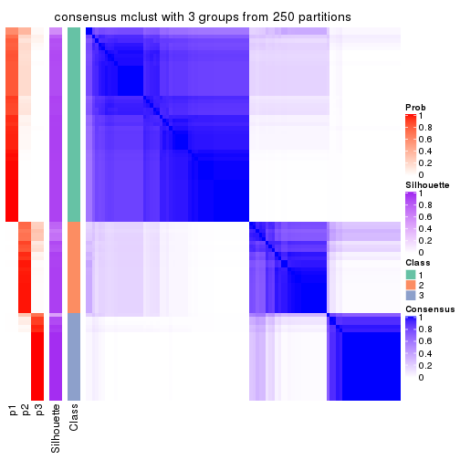
consensus_heatmap(res, k = 4)
consensus_heatmap(res, k = 5)
consensus_heatmap(res, k = 6)
Heatmaps for the membership of samples in all partitions to see how consistent they are:
membership_heatmap(res, k = 2)
membership_heatmap(res, k = 3)

membership_heatmap(res, k = 4)
membership_heatmap(res, k = 5)

membership_heatmap(res, k = 6)
As soon as we have had the classes for columns, we can look for signatures which are significantly different between classes which can be candidate marks for certain classes. Following are the heatmaps for signatures.
Signature heatmaps where rows are scaled:
get_signatures(res, k = 2)
get_signatures(res, k = 3)
get_signatures(res, k = 4)
get_signatures(res, k = 5)
get_signatures(res, k = 6)
Signature heatmaps where rows are not scaled:
get_signatures(res, k = 2, scale_rows = FALSE)
get_signatures(res, k = 3, scale_rows = FALSE)
get_signatures(res, k = 4, scale_rows = FALSE)
get_signatures(res, k = 5, scale_rows = FALSE)

get_signatures(res, k = 6, scale_rows = FALSE)
Compare the overlap of signatures from different k:
compare_signatures(res)
get_signature() returns a data frame invisibly. TO get the list of signatures, the function
call should be assigned to a variable explicitly. In following code, if plot argument is set
to FALSE, no heatmap is plotted while only the differential analysis is performed.
# code only for demonstration
tb = get_signature(res, k = ..., plot = FALSE)
An example of the output of tb is:
#> which_row fdr mean_1 mean_2 scaled_mean_1 scaled_mean_2 km
#> 1 38 0.042760348 8.373488 9.131774 -0.5533452 0.5164555 1
#> 2 40 0.018707592 7.106213 8.469186 -0.6173731 0.5762149 1
#> 3 55 0.019134737 10.221463 11.207825 -0.6159697 0.5749050 1
#> 4 59 0.006059896 5.921854 7.869574 -0.6899429 0.6439467 1
#> 5 60 0.018055526 8.928898 10.211722 -0.6204761 0.5791110 1
#> 6 98 0.009384629 15.714769 14.887706 0.6635654 -0.6193277 2
...
The columns in tb are:
which_row: row indices corresponding to the input matrix.fdr: FDR for the differential test. mean_x: The mean value in group x.scaled_mean_x: The mean value in group x after rows are scaled.km: Row groups if k-means clustering is applied to rows.UMAP plot which shows how samples are separated.
dimension_reduction(res, k = 2, method = "UMAP")
dimension_reduction(res, k = 3, method = "UMAP")
dimension_reduction(res, k = 4, method = "UMAP")
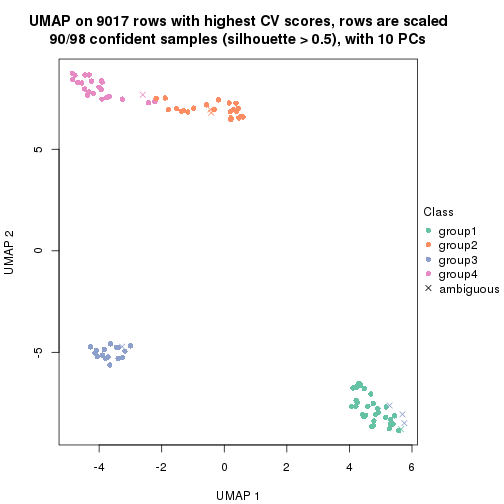
dimension_reduction(res, k = 5, method = "UMAP")
dimension_reduction(res, k = 6, method = "UMAP")
Following heatmap shows how subgroups are split when increasing k:
collect_classes(res)
If matrix rows can be associated to genes, consider to use functional_enrichment(res,
...) to perform function enrichment for the signature genes. See this vignette for more detailed explanations.
The object with results only for a single top-value method and a single partition method can be extracted as:
res = res_list["CV", "NMF"]
# you can also extract it by
# res = res_list["CV:NMF"]
A summary of res and all the functions that can be applied to it:
res
#> A 'ConsensusPartition' object with k = 2, 3, 4, 5, 6.
#> On a matrix with 9017 rows and 98 columns.
#> Top rows (902, 1804, 2705, 3606, 4508) are extracted by 'CV' method.
#> Subgroups are detected by 'NMF' method.
#> Performed in total 1250 partitions by row resampling.
#> Best k for subgroups seems to be 3.
#>
#> Following methods can be applied to this 'ConsensusPartition' object:
#> [1] "cola_report" "collect_classes" "collect_plots"
#> [4] "collect_stats" "colnames" "compare_signatures"
#> [7] "consensus_heatmap" "dimension_reduction" "functional_enrichment"
#> [10] "get_anno_col" "get_anno" "get_classes"
#> [13] "get_consensus" "get_matrix" "get_membership"
#> [16] "get_param" "get_signatures" "get_stats"
#> [19] "is_best_k" "is_stable_k" "membership_heatmap"
#> [22] "ncol" "nrow" "plot_ecdf"
#> [25] "rownames" "select_partition_number" "show"
#> [28] "suggest_best_k" "test_to_known_factors"
collect_plots() function collects all the plots made from res for all k (number of partitions)
into one single page to provide an easy and fast comparison between different k.
collect_plots(res)
The plots are:
k and the heatmap of
predicted classes for each k.k.k.k.All the plots in panels can be made by individual functions and they are plotted later in this section.
select_partition_number() produces several plots showing different
statistics for choosing “optimized” k. There are following statistics:
k;k, the area increased is defined as \(A_k - A_{k-1}\).The detailed explanations of these statistics can be found in the cola vignette.
Generally speaking, lower PAC score, higher mean silhouette score or higher
concordance corresponds to better partition. Rand index and Jaccard index
measure how similar the current partition is compared to partition with k-1.
If they are too similar, we won't accept k is better than k-1.
select_partition_number(res)
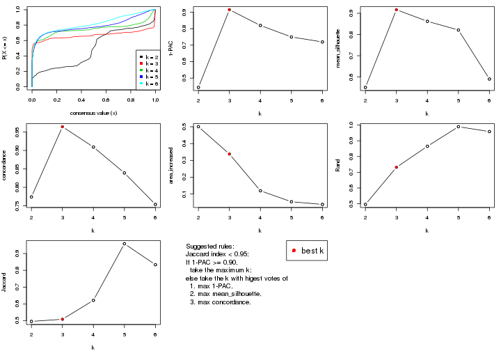
The numeric values for all these statistics can be obtained by get_stats().
get_stats(res)
#> k 1-PAC mean_silhouette concordance area_increased Rand Jaccard
#> 2 2 0.443 0.551 0.774 0.5002 0.496 0.496
#> 3 3 0.915 0.916 0.964 0.3376 0.732 0.508
#> 4 4 0.820 0.862 0.909 0.1190 0.865 0.621
#> 5 5 0.750 0.821 0.839 0.0537 0.989 0.958
#> 6 6 0.719 0.590 0.754 0.0380 0.959 0.833
suggest_best_k() suggests the best \(k\) based on these statistics. The rules are as follows:
suggest_best_k(res)
#> [1] 3
Following shows the table of the partitions (You need to click the show/hide
code output link to see it). The membership matrix (columns with name p*)
is inferred by
clue::cl_consensus()
function with the SE method. Basically the value in the membership matrix
represents the probability to belong to a certain group. The finall class
label for an item is determined with the group with highest probability it
belongs to.
In get_classes() function, the entropy is calculated from the membership
matrix and the silhouette score is calculated from the consensus matrix.
cbind(get_classes(res, k = 2), get_membership(res, k = 2))
#> class entropy silhouette p1 p2
#> SRR1810660 1 0.5737 0.195 0.864 0.136
#> SRR1810659 1 0.9963 0.689 0.536 0.464
#> SRR1810658 1 0.0000 0.405 1.000 0.000
#> SRR1810657 1 0.3274 0.335 0.940 0.060
#> SRR1818435 1 0.5629 0.204 0.868 0.132
#> SRR1818434 1 0.9983 0.694 0.524 0.476
#> SRR1810752 2 0.9993 0.611 0.484 0.516
#> SRR1810751 2 0.9993 0.611 0.484 0.516
#> SRR1810749 1 0.9993 0.696 0.516 0.484
#> SRR1810748 1 0.9993 0.696 0.516 0.484
#> SRR1810750 1 0.9993 0.696 0.516 0.484
#> SRR1810747 2 0.9993 0.611 0.484 0.516
#> SRR1810746 1 0.9993 0.696 0.516 0.484
#> SRR1810745 1 0.9993 0.696 0.516 0.484
#> SRR1810744 1 0.9993 0.696 0.516 0.484
#> SRR1810743 1 0.9993 0.696 0.516 0.484
#> SRR1810742 2 0.0376 0.507 0.004 0.996
#> SRR1810741 2 0.9993 0.611 0.484 0.516
#> SRR1810740 1 0.9775 0.662 0.588 0.412
#> SRR1810739 1 0.9993 0.696 0.516 0.484
#> SRR1810738 1 0.9993 0.696 0.516 0.484
#> SRR1810737 2 0.0000 0.511 0.000 1.000
#> SRR1810736 2 0.0000 0.511 0.000 1.000
#> SRR1810734 2 0.9993 0.611 0.484 0.516
#> SRR1810735 2 0.5842 0.258 0.140 0.860
#> SRR1810733 2 0.0672 0.503 0.008 0.992
#> SRR1810732 1 0.5946 0.176 0.856 0.144
#> SRR1810730 2 0.2236 0.464 0.036 0.964
#> SRR1810729 1 0.7453 0.549 0.788 0.212
#> SRR1810731 1 0.9993 0.696 0.516 0.484
#> SRR1810728 2 0.0000 0.511 0.000 1.000
#> SRR1810727 2 0.0938 0.498 0.012 0.988
#> SRR1810726 1 0.9993 0.696 0.516 0.484
#> SRR1810725 2 0.0672 0.503 0.008 0.992
#> SRR1810724 2 0.0000 0.511 0.000 1.000
#> SRR1810723 1 0.9993 0.696 0.516 0.484
#> SRR1810722 1 0.9993 0.696 0.516 0.484
#> SRR1810721 1 0.9993 0.696 0.516 0.484
#> SRR1810720 1 0.9993 0.696 0.516 0.484
#> SRR1810719 2 0.9993 0.611 0.484 0.516
#> SRR1810718 1 0.3114 0.445 0.944 0.056
#> SRR1810717 1 0.9993 0.696 0.516 0.484
#> SRR1810716 2 0.0000 0.511 0.000 1.000
#> SRR1810715 2 0.9993 0.611 0.484 0.516
#> SRR1810713 2 0.9993 0.611 0.484 0.516
#> SRR1810714 1 0.5946 0.507 0.856 0.144
#> SRR1810712 2 0.9993 0.611 0.484 0.516
#> SRR1810710 2 0.1414 0.488 0.020 0.980
#> SRR1810711 2 0.9993 0.611 0.484 0.516
#> SRR1810709 2 0.4431 0.366 0.092 0.908
#> SRR1810708 1 0.9993 0.696 0.516 0.484
#> SRR1810707 1 0.5408 0.221 0.876 0.124
#> SRR1810706 2 0.0000 0.511 0.000 1.000
#> SRR1810704 1 0.9993 0.696 0.516 0.484
#> SRR1810705 1 0.9993 0.696 0.516 0.484
#> SRR1810703 1 0.9993 0.696 0.516 0.484
#> SRR1810702 2 0.9993 0.611 0.484 0.516
#> SRR1810701 1 0.9993 0.696 0.516 0.484
#> SRR1810700 2 0.9993 0.611 0.484 0.516
#> SRR1810699 2 0.9977 0.611 0.472 0.528
#> SRR1810696 2 0.5519 0.288 0.128 0.872
#> SRR1810695 2 0.2423 0.520 0.040 0.960
#> SRR1810698 2 0.3274 0.425 0.060 0.940
#> SRR1810697 2 0.0000 0.511 0.000 1.000
#> SRR1810694 2 0.5946 0.247 0.144 0.856
#> SRR1810693 1 0.3431 0.328 0.936 0.064
#> SRR1810692 2 0.0000 0.511 0.000 1.000
#> SRR1810690 2 0.9881 0.607 0.436 0.564
#> SRR1810691 1 0.9993 0.696 0.516 0.484
#> SRR1810689 2 0.9993 0.611 0.484 0.516
#> SRR1810688 2 0.9993 0.611 0.484 0.516
#> SRR1810687 2 0.9993 0.611 0.484 0.516
#> SRR1810685 1 0.9993 0.696 0.516 0.484
#> SRR1810686 2 0.9993 0.611 0.484 0.516
#> SRR1810684 2 0.5294 0.307 0.120 0.880
#> SRR1810683 2 0.9993 0.611 0.484 0.516
#> SRR1810680 2 0.9922 0.609 0.448 0.552
#> SRR1810679 2 0.0000 0.511 0.000 1.000
#> SRR1810678 2 0.9993 0.611 0.484 0.516
#> SRR1810682 2 0.9909 0.609 0.444 0.556
#> SRR1810681 2 0.0000 0.511 0.000 1.000
#> SRR1810677 2 0.8909 0.575 0.308 0.692
#> SRR1810676 2 0.9993 0.611 0.484 0.516
#> SRR1810675 1 0.0000 0.405 1.000 0.000
#> SRR1810673 1 0.1633 0.381 0.976 0.024
#> SRR1810674 1 0.2603 0.357 0.956 0.044
#> SRR1810671 1 0.9970 0.691 0.532 0.468
#> SRR1810670 1 0.9993 0.696 0.516 0.484
#> SRR1810669 1 0.9993 0.696 0.516 0.484
#> SRR1810667 1 0.4939 0.253 0.892 0.108
#> SRR1810666 1 0.9970 0.691 0.532 0.468
#> SRR1810672 1 0.9993 0.696 0.516 0.484
#> SRR1810668 1 0.5178 0.489 0.884 0.116
#> SRR1810665 1 0.7815 0.561 0.768 0.232
#> SRR1810664 1 0.2043 0.372 0.968 0.032
#> SRR1810663 1 0.2423 0.362 0.960 0.040
#> SRR1810661 1 0.0000 0.405 1.000 0.000
#> SRR1810662 1 0.0000 0.405 1.000 0.000
cbind(get_classes(res, k = 3), get_membership(res, k = 3))
#> class entropy silhouette p1 p2 p3
#> SRR1810660 3 0.0424 0.9214 0.008 0.000 0.992
#> SRR1810659 1 0.0000 0.9939 1.000 0.000 0.000
#> SRR1810658 3 0.6307 0.0212 0.488 0.000 0.512
#> SRR1810657 3 0.0000 0.9236 0.000 0.000 1.000
#> SRR1818435 3 0.0000 0.9236 0.000 0.000 1.000
#> SRR1818434 1 0.0000 0.9939 1.000 0.000 0.000
#> SRR1810752 3 0.1411 0.9150 0.000 0.036 0.964
#> SRR1810751 2 0.5988 0.3704 0.000 0.632 0.368
#> SRR1810749 1 0.0000 0.9939 1.000 0.000 0.000
#> SRR1810748 1 0.0424 0.9865 0.992 0.008 0.000
#> SRR1810750 1 0.0000 0.9939 1.000 0.000 0.000
#> SRR1810747 3 0.2796 0.8876 0.000 0.092 0.908
#> SRR1810746 1 0.0000 0.9939 1.000 0.000 0.000
#> SRR1810745 1 0.0000 0.9939 1.000 0.000 0.000
#> SRR1810744 1 0.0000 0.9939 1.000 0.000 0.000
#> SRR1810743 1 0.0000 0.9939 1.000 0.000 0.000
#> SRR1810742 2 0.0000 0.9579 0.000 1.000 0.000
#> SRR1810741 3 0.0424 0.9235 0.000 0.008 0.992
#> SRR1810740 1 0.0424 0.9865 0.992 0.000 0.008
#> SRR1810739 1 0.0000 0.9939 1.000 0.000 0.000
#> SRR1810738 1 0.0000 0.9939 1.000 0.000 0.000
#> SRR1810737 2 0.0000 0.9579 0.000 1.000 0.000
#> SRR1810736 2 0.0000 0.9579 0.000 1.000 0.000
#> SRR1810734 3 0.2625 0.8921 0.000 0.084 0.916
#> SRR1810735 2 0.0000 0.9579 0.000 1.000 0.000
#> SRR1810733 2 0.0000 0.9579 0.000 1.000 0.000
#> SRR1810732 3 0.0000 0.9236 0.000 0.000 1.000
#> SRR1810730 2 0.0000 0.9579 0.000 1.000 0.000
#> SRR1810729 1 0.0000 0.9939 1.000 0.000 0.000
#> SRR1810731 1 0.0000 0.9939 1.000 0.000 0.000
#> SRR1810728 2 0.0000 0.9579 0.000 1.000 0.000
#> SRR1810727 2 0.0000 0.9579 0.000 1.000 0.000
#> SRR1810726 1 0.0000 0.9939 1.000 0.000 0.000
#> SRR1810725 2 0.0000 0.9579 0.000 1.000 0.000
#> SRR1810724 2 0.0000 0.9579 0.000 1.000 0.000
#> SRR1810723 1 0.0000 0.9939 1.000 0.000 0.000
#> SRR1810722 1 0.0000 0.9939 1.000 0.000 0.000
#> SRR1810721 1 0.0000 0.9939 1.000 0.000 0.000
#> SRR1810720 1 0.0000 0.9939 1.000 0.000 0.000
#> SRR1810719 3 0.5733 0.5600 0.000 0.324 0.676
#> SRR1810718 1 0.4178 0.7873 0.828 0.000 0.172
#> SRR1810717 1 0.0000 0.9939 1.000 0.000 0.000
#> SRR1810716 2 0.0000 0.9579 0.000 1.000 0.000
#> SRR1810715 3 0.3551 0.8534 0.000 0.132 0.868
#> SRR1810713 3 0.0424 0.9235 0.000 0.008 0.992
#> SRR1810714 1 0.0000 0.9939 1.000 0.000 0.000
#> SRR1810712 3 0.3038 0.8786 0.000 0.104 0.896
#> SRR1810710 2 0.0000 0.9579 0.000 1.000 0.000
#> SRR1810711 3 0.2959 0.8814 0.000 0.100 0.900
#> SRR1810709 2 0.0000 0.9579 0.000 1.000 0.000
#> SRR1810708 1 0.0000 0.9939 1.000 0.000 0.000
#> SRR1810707 3 0.0000 0.9236 0.000 0.000 1.000
#> SRR1810706 2 0.0000 0.9579 0.000 1.000 0.000
#> SRR1810704 1 0.0000 0.9939 1.000 0.000 0.000
#> SRR1810705 1 0.0000 0.9939 1.000 0.000 0.000
#> SRR1810703 1 0.0000 0.9939 1.000 0.000 0.000
#> SRR1810702 3 0.5678 0.5768 0.000 0.316 0.684
#> SRR1810701 1 0.0000 0.9939 1.000 0.000 0.000
#> SRR1810700 2 0.5327 0.5910 0.000 0.728 0.272
#> SRR1810699 2 0.0000 0.9579 0.000 1.000 0.000
#> SRR1810696 2 0.0237 0.9539 0.004 0.996 0.000
#> SRR1810695 2 0.0000 0.9579 0.000 1.000 0.000
#> SRR1810698 2 0.0000 0.9579 0.000 1.000 0.000
#> SRR1810697 2 0.0000 0.9579 0.000 1.000 0.000
#> SRR1810694 2 0.0000 0.9579 0.000 1.000 0.000
#> SRR1810693 3 0.0424 0.9216 0.008 0.000 0.992
#> SRR1810692 2 0.0000 0.9579 0.000 1.000 0.000
#> SRR1810690 2 0.0000 0.9579 0.000 1.000 0.000
#> SRR1810691 1 0.0000 0.9939 1.000 0.000 0.000
#> SRR1810689 2 0.6309 -0.0713 0.000 0.504 0.496
#> SRR1810688 3 0.0424 0.9236 0.000 0.008 0.992
#> SRR1810687 3 0.3619 0.8508 0.000 0.136 0.864
#> SRR1810685 1 0.0000 0.9939 1.000 0.000 0.000
#> SRR1810686 3 0.3482 0.8585 0.000 0.128 0.872
#> SRR1810684 2 0.0000 0.9579 0.000 1.000 0.000
#> SRR1810683 3 0.0592 0.9227 0.000 0.012 0.988
#> SRR1810680 2 0.0237 0.9544 0.000 0.996 0.004
#> SRR1810679 2 0.0000 0.9579 0.000 1.000 0.000
#> SRR1810678 3 0.2356 0.8993 0.000 0.072 0.928
#> SRR1810682 2 0.0000 0.9579 0.000 1.000 0.000
#> SRR1810681 2 0.0000 0.9579 0.000 1.000 0.000
#> SRR1810677 2 0.0000 0.9579 0.000 1.000 0.000
#> SRR1810676 3 0.0000 0.9236 0.000 0.000 1.000
#> SRR1810675 3 0.0237 0.9227 0.004 0.000 0.996
#> SRR1810673 3 0.0000 0.9236 0.000 0.000 1.000
#> SRR1810674 3 0.0000 0.9236 0.000 0.000 1.000
#> SRR1810671 1 0.0000 0.9939 1.000 0.000 0.000
#> SRR1810670 1 0.0000 0.9939 1.000 0.000 0.000
#> SRR1810669 1 0.0000 0.9939 1.000 0.000 0.000
#> SRR1810667 3 0.0000 0.9236 0.000 0.000 1.000
#> SRR1810666 1 0.0000 0.9939 1.000 0.000 0.000
#> SRR1810672 1 0.0000 0.9939 1.000 0.000 0.000
#> SRR1810668 1 0.0892 0.9761 0.980 0.000 0.020
#> SRR1810665 1 0.0000 0.9939 1.000 0.000 0.000
#> SRR1810664 3 0.0000 0.9236 0.000 0.000 1.000
#> SRR1810663 3 0.0000 0.9236 0.000 0.000 1.000
#> SRR1810661 3 0.2066 0.8846 0.060 0.000 0.940
#> SRR1810662 3 0.0747 0.9171 0.016 0.000 0.984
cbind(get_classes(res, k = 4), get_membership(res, k = 4))
#> class entropy silhouette p1 p2 p3 p4
#> SRR1810660 2 0.4673 0.5721 0.008 0.700 0.292 0.000
#> SRR1810659 3 0.3311 0.8347 0.172 0.000 0.828 0.000
#> SRR1810658 3 0.3435 0.8731 0.100 0.036 0.864 0.000
#> SRR1810657 3 0.3569 0.7903 0.000 0.196 0.804 0.000
#> SRR1818435 3 0.2868 0.8413 0.000 0.136 0.864 0.000
#> SRR1818434 3 0.2973 0.8550 0.144 0.000 0.856 0.000
#> SRR1810752 2 0.1398 0.9112 0.000 0.956 0.040 0.004
#> SRR1810751 2 0.5607 -0.0660 0.000 0.492 0.020 0.488
#> SRR1810749 1 0.0817 0.9379 0.976 0.000 0.024 0.000
#> SRR1810748 1 0.5659 0.3753 0.600 0.000 0.368 0.032
#> SRR1810750 1 0.2021 0.9200 0.932 0.000 0.056 0.012
#> SRR1810747 2 0.1722 0.9112 0.000 0.944 0.048 0.008
#> SRR1810746 1 0.1305 0.9348 0.960 0.004 0.036 0.000
#> SRR1810745 1 0.1211 0.9319 0.960 0.000 0.040 0.000
#> SRR1810744 1 0.1022 0.9372 0.968 0.000 0.032 0.000
#> SRR1810743 1 0.0336 0.9360 0.992 0.000 0.008 0.000
#> SRR1810742 4 0.0469 0.9419 0.000 0.000 0.012 0.988
#> SRR1810741 2 0.1109 0.9017 0.000 0.968 0.028 0.004
#> SRR1810740 1 0.0779 0.9323 0.980 0.016 0.004 0.000
#> SRR1810739 1 0.1118 0.9348 0.964 0.000 0.036 0.000
#> SRR1810738 1 0.0707 0.9355 0.980 0.000 0.020 0.000
#> SRR1810737 4 0.0657 0.9426 0.004 0.000 0.012 0.984
#> SRR1810736 4 0.1247 0.9413 0.012 0.004 0.016 0.968
#> SRR1810734 2 0.1576 0.9102 0.000 0.948 0.048 0.004
#> SRR1810735 4 0.1388 0.9372 0.012 0.000 0.028 0.960
#> SRR1810733 4 0.1593 0.9365 0.016 0.004 0.024 0.956
#> SRR1810732 2 0.2149 0.8840 0.000 0.912 0.088 0.000
#> SRR1810730 4 0.0336 0.9415 0.000 0.000 0.008 0.992
#> SRR1810729 1 0.5466 0.1254 0.548 0.016 0.436 0.000
#> SRR1810731 1 0.0592 0.9361 0.984 0.000 0.016 0.000
#> SRR1810728 4 0.0657 0.9421 0.000 0.004 0.012 0.984
#> SRR1810727 4 0.0895 0.9420 0.004 0.000 0.020 0.976
#> SRR1810726 1 0.0469 0.9372 0.988 0.000 0.012 0.000
#> SRR1810725 4 0.1639 0.9374 0.004 0.008 0.036 0.952
#> SRR1810724 4 0.0524 0.9423 0.004 0.000 0.008 0.988
#> SRR1810723 1 0.0707 0.9372 0.980 0.000 0.020 0.000
#> SRR1810722 1 0.1118 0.9346 0.964 0.000 0.036 0.000
#> SRR1810721 1 0.0817 0.9375 0.976 0.000 0.024 0.000
#> SRR1810720 1 0.0817 0.9376 0.976 0.000 0.024 0.000
#> SRR1810719 2 0.1629 0.8891 0.000 0.952 0.024 0.024
#> SRR1810718 3 0.3245 0.8734 0.100 0.028 0.872 0.000
#> SRR1810717 1 0.1940 0.9058 0.924 0.000 0.076 0.000
#> SRR1810716 4 0.2297 0.9269 0.004 0.024 0.044 0.928
#> SRR1810715 2 0.1767 0.9109 0.000 0.944 0.044 0.012
#> SRR1810713 2 0.1118 0.8913 0.000 0.964 0.036 0.000
#> SRR1810714 1 0.3219 0.7947 0.836 0.000 0.164 0.000
#> SRR1810712 2 0.1722 0.9118 0.000 0.944 0.048 0.008
#> SRR1810710 4 0.0672 0.9427 0.008 0.000 0.008 0.984
#> SRR1810711 2 0.1722 0.9111 0.000 0.944 0.048 0.008
#> SRR1810709 4 0.0469 0.9422 0.000 0.000 0.012 0.988
#> SRR1810708 1 0.0804 0.9345 0.980 0.008 0.012 0.000
#> SRR1810707 2 0.2376 0.8949 0.016 0.916 0.068 0.000
#> SRR1810706 4 0.0672 0.9418 0.000 0.008 0.008 0.984
#> SRR1810704 1 0.1661 0.9243 0.944 0.000 0.052 0.004
#> SRR1810705 1 0.0817 0.9377 0.976 0.000 0.024 0.000
#> SRR1810703 1 0.1474 0.9316 0.948 0.000 0.052 0.000
#> SRR1810702 2 0.1798 0.9105 0.000 0.944 0.040 0.016
#> SRR1810701 1 0.0469 0.9363 0.988 0.000 0.012 0.000
#> SRR1810700 4 0.6145 0.0487 0.000 0.460 0.048 0.492
#> SRR1810699 4 0.1297 0.9354 0.000 0.020 0.016 0.964
#> SRR1810696 4 0.1488 0.9376 0.012 0.000 0.032 0.956
#> SRR1810695 4 0.0524 0.9414 0.000 0.004 0.008 0.988
#> SRR1810698 4 0.1109 0.9410 0.004 0.000 0.028 0.968
#> SRR1810697 4 0.0000 0.9412 0.000 0.000 0.000 1.000
#> SRR1810694 4 0.1584 0.9339 0.012 0.000 0.036 0.952
#> SRR1810693 2 0.3107 0.8774 0.036 0.884 0.080 0.000
#> SRR1810692 4 0.1297 0.9373 0.000 0.020 0.016 0.964
#> SRR1810690 4 0.3266 0.8783 0.000 0.084 0.040 0.876
#> SRR1810691 1 0.0592 0.9366 0.984 0.000 0.016 0.000
#> SRR1810689 4 0.5933 0.2887 0.000 0.408 0.040 0.552
#> SRR1810688 2 0.1452 0.9116 0.000 0.956 0.036 0.008
#> SRR1810687 2 0.3550 0.8171 0.000 0.860 0.044 0.096
#> SRR1810685 1 0.1510 0.9226 0.956 0.028 0.016 0.000
#> SRR1810686 2 0.3612 0.8132 0.000 0.856 0.044 0.100
#> SRR1810684 4 0.0779 0.9412 0.004 0.000 0.016 0.980
#> SRR1810683 2 0.1576 0.9100 0.000 0.948 0.048 0.004
#> SRR1810680 4 0.2443 0.9092 0.000 0.024 0.060 0.916
#> SRR1810679 4 0.0804 0.9420 0.008 0.000 0.012 0.980
#> SRR1810678 2 0.1004 0.8948 0.000 0.972 0.024 0.004
#> SRR1810682 4 0.2021 0.9118 0.000 0.056 0.012 0.932
#> SRR1810681 4 0.0937 0.9407 0.000 0.012 0.012 0.976
#> SRR1810677 4 0.3056 0.8902 0.000 0.072 0.040 0.888
#> SRR1810676 2 0.1389 0.9087 0.000 0.952 0.048 0.000
#> SRR1810675 3 0.2654 0.8550 0.004 0.108 0.888 0.000
#> SRR1810673 3 0.2714 0.8550 0.004 0.112 0.884 0.000
#> SRR1810674 3 0.3219 0.8247 0.000 0.164 0.836 0.000
#> SRR1810671 3 0.3074 0.8545 0.152 0.000 0.848 0.000
#> SRR1810670 3 0.2973 0.8513 0.144 0.000 0.856 0.000
#> SRR1810669 3 0.2921 0.8516 0.140 0.000 0.860 0.000
#> SRR1810667 3 0.3074 0.8309 0.000 0.152 0.848 0.000
#> SRR1810666 3 0.2868 0.8595 0.136 0.000 0.864 0.000
#> SRR1810672 3 0.3219 0.8327 0.164 0.000 0.836 0.000
#> SRR1810668 3 0.3108 0.8693 0.112 0.016 0.872 0.000
#> SRR1810665 3 0.2760 0.8606 0.128 0.000 0.872 0.000
#> SRR1810664 3 0.3024 0.8344 0.000 0.148 0.852 0.000
#> SRR1810663 3 0.3172 0.8253 0.000 0.160 0.840 0.000
#> SRR1810661 3 0.2845 0.8660 0.028 0.076 0.896 0.000
#> SRR1810662 3 0.3695 0.8258 0.016 0.156 0.828 0.000
cbind(get_classes(res, k = 5), get_membership(res, k = 5))
#> class entropy silhouette p1 p2 p3 p4 p5
#> SRR1810660 2 0.5719 0.482 0.000 0.596 0.284 0.000 NA
#> SRR1810659 3 0.4111 0.819 0.092 0.000 0.788 0.000 NA
#> SRR1810658 3 0.4290 0.851 0.040 0.040 0.800 0.000 NA
#> SRR1810657 3 0.4203 0.766 0.000 0.188 0.760 0.000 NA
#> SRR1818435 3 0.0955 0.920 0.000 0.028 0.968 0.000 NA
#> SRR1818434 3 0.1059 0.920 0.020 0.004 0.968 0.000 NA
#> SRR1810752 2 0.1074 0.835 0.000 0.968 0.016 0.004 NA
#> SRR1810751 2 0.6458 0.223 0.000 0.464 0.004 0.372 NA
#> SRR1810749 1 0.3001 0.869 0.844 0.000 0.008 0.004 NA
#> SRR1810748 1 0.7383 0.500 0.444 0.000 0.256 0.040 NA
#> SRR1810750 1 0.4879 0.806 0.636 0.000 0.020 0.012 NA
#> SRR1810747 2 0.1978 0.828 0.000 0.928 0.024 0.004 NA
#> SRR1810746 1 0.4290 0.826 0.680 0.000 0.016 0.000 NA
#> SRR1810745 1 0.2727 0.867 0.868 0.000 0.016 0.000 NA
#> SRR1810744 1 0.4029 0.851 0.744 0.000 0.024 0.000 NA
#> SRR1810743 1 0.2124 0.867 0.900 0.000 0.004 0.000 NA
#> SRR1810742 4 0.1121 0.891 0.000 0.000 0.000 0.956 NA
#> SRR1810741 2 0.3129 0.808 0.000 0.832 0.008 0.004 NA
#> SRR1810740 1 0.2583 0.868 0.864 0.004 0.000 0.000 NA
#> SRR1810739 1 0.3596 0.864 0.776 0.000 0.012 0.000 NA
#> SRR1810738 1 0.3088 0.863 0.828 0.000 0.004 0.004 NA
#> SRR1810737 4 0.0963 0.890 0.000 0.000 0.000 0.964 NA
#> SRR1810736 4 0.1430 0.893 0.004 0.000 0.000 0.944 NA
#> SRR1810734 2 0.1469 0.831 0.000 0.948 0.016 0.000 NA
#> SRR1810735 4 0.4268 0.779 0.024 0.000 0.004 0.728 NA
#> SRR1810733 4 0.3890 0.796 0.012 0.000 0.000 0.736 NA
#> SRR1810732 2 0.2520 0.810 0.000 0.896 0.048 0.000 NA
#> SRR1810730 4 0.1043 0.892 0.000 0.000 0.000 0.960 NA
#> SRR1810729 1 0.7435 0.397 0.456 0.056 0.296 0.000 NA
#> SRR1810731 1 0.3264 0.867 0.820 0.000 0.016 0.000 NA
#> SRR1810728 4 0.1197 0.892 0.000 0.000 0.000 0.952 NA
#> SRR1810727 4 0.1121 0.890 0.000 0.000 0.000 0.956 NA
#> SRR1810726 1 0.1704 0.868 0.928 0.000 0.004 0.000 NA
#> SRR1810725 4 0.2536 0.877 0.000 0.004 0.000 0.868 NA
#> SRR1810724 4 0.0865 0.891 0.004 0.000 0.000 0.972 NA
#> SRR1810723 1 0.1764 0.868 0.928 0.000 0.008 0.000 NA
#> SRR1810722 1 0.3944 0.859 0.768 0.000 0.032 0.000 NA
#> SRR1810721 1 0.3662 0.848 0.744 0.000 0.004 0.000 NA
#> SRR1810720 1 0.3608 0.863 0.812 0.000 0.040 0.000 NA
#> SRR1810719 2 0.3564 0.806 0.000 0.820 0.008 0.024 NA
#> SRR1810718 3 0.4081 0.866 0.032 0.064 0.820 0.000 NA
#> SRR1810717 1 0.3840 0.860 0.808 0.000 0.076 0.000 NA
#> SRR1810716 4 0.2763 0.868 0.000 0.004 0.000 0.848 NA
#> SRR1810715 2 0.3042 0.833 0.000 0.880 0.020 0.044 NA
#> SRR1810713 2 0.3665 0.789 0.000 0.784 0.008 0.008 NA
#> SRR1810714 1 0.5749 0.717 0.648 0.008 0.176 0.000 NA
#> SRR1810712 2 0.0960 0.837 0.000 0.972 0.016 0.004 NA
#> SRR1810710 4 0.1410 0.891 0.000 0.000 0.000 0.940 NA
#> SRR1810711 2 0.1721 0.839 0.000 0.944 0.016 0.020 NA
#> SRR1810709 4 0.1638 0.891 0.004 0.000 0.000 0.932 NA
#> SRR1810708 1 0.2909 0.866 0.848 0.000 0.012 0.000 NA
#> SRR1810707 2 0.3729 0.786 0.064 0.844 0.036 0.000 NA
#> SRR1810706 4 0.0703 0.890 0.000 0.000 0.000 0.976 NA
#> SRR1810704 1 0.4468 0.836 0.740 0.000 0.040 0.008 NA
#> SRR1810705 1 0.3438 0.862 0.808 0.000 0.020 0.000 NA
#> SRR1810703 1 0.3759 0.852 0.764 0.000 0.016 0.000 NA
#> SRR1810702 2 0.1989 0.837 0.000 0.932 0.016 0.032 NA
#> SRR1810701 1 0.2249 0.866 0.896 0.000 0.008 0.000 NA
#> SRR1810700 2 0.5973 0.506 0.000 0.580 0.000 0.256 NA
#> SRR1810699 4 0.2214 0.877 0.000 0.028 0.004 0.916 NA
#> SRR1810696 4 0.4305 0.792 0.036 0.000 0.004 0.744 NA
#> SRR1810695 4 0.1282 0.885 0.000 0.004 0.000 0.952 NA
#> SRR1810698 4 0.3013 0.848 0.008 0.000 0.000 0.832 NA
#> SRR1810697 4 0.0794 0.890 0.000 0.000 0.000 0.972 NA
#> SRR1810694 4 0.3805 0.824 0.016 0.000 0.008 0.784 NA
#> SRR1810693 2 0.5183 0.697 0.128 0.740 0.040 0.000 NA
#> SRR1810692 4 0.2411 0.862 0.000 0.008 0.000 0.884 NA
#> SRR1810690 4 0.5764 0.578 0.000 0.096 0.004 0.580 NA
#> SRR1810691 1 0.3087 0.871 0.836 0.000 0.008 0.004 NA
#> SRR1810689 4 0.6787 0.177 0.000 0.292 0.008 0.468 NA
#> SRR1810688 2 0.2766 0.835 0.000 0.892 0.012 0.040 NA
#> SRR1810687 2 0.6138 0.644 0.000 0.584 0.008 0.152 NA
#> SRR1810685 1 0.1965 0.870 0.904 0.000 0.000 0.000 NA
#> SRR1810686 2 0.6171 0.638 0.000 0.580 0.008 0.156 NA
#> SRR1810684 4 0.2020 0.879 0.000 0.000 0.000 0.900 NA
#> SRR1810683 2 0.1117 0.835 0.000 0.964 0.016 0.000 NA
#> SRR1810680 4 0.4011 0.820 0.000 0.012 0.048 0.804 NA
#> SRR1810679 4 0.1357 0.890 0.004 0.000 0.000 0.948 NA
#> SRR1810678 2 0.4577 0.770 0.000 0.736 0.008 0.048 NA
#> SRR1810682 4 0.2726 0.865 0.000 0.052 0.000 0.884 NA
#> SRR1810681 4 0.2136 0.874 0.000 0.008 0.000 0.904 NA
#> SRR1810677 4 0.4602 0.720 0.000 0.052 0.000 0.708 NA
#> SRR1810676 2 0.0992 0.837 0.000 0.968 0.008 0.000 NA
#> SRR1810675 3 0.1764 0.911 0.000 0.064 0.928 0.000 NA
#> SRR1810673 3 0.1117 0.920 0.000 0.016 0.964 0.000 NA
#> SRR1810674 3 0.2136 0.898 0.000 0.088 0.904 0.000 NA
#> SRR1810671 3 0.1668 0.914 0.032 0.000 0.940 0.000 NA
#> SRR1810670 3 0.1579 0.914 0.024 0.000 0.944 0.000 NA
#> SRR1810669 3 0.2853 0.885 0.052 0.000 0.876 0.000 NA
#> SRR1810667 3 0.2208 0.904 0.000 0.072 0.908 0.000 NA
#> SRR1810666 3 0.1493 0.916 0.028 0.000 0.948 0.000 NA
#> SRR1810672 3 0.2344 0.900 0.032 0.000 0.904 0.000 NA
#> SRR1810668 3 0.0898 0.920 0.020 0.000 0.972 0.000 NA
#> SRR1810665 3 0.1117 0.918 0.020 0.000 0.964 0.000 NA
#> SRR1810664 3 0.1571 0.913 0.000 0.060 0.936 0.000 NA
#> SRR1810663 3 0.1872 0.915 0.000 0.052 0.928 0.000 NA
#> SRR1810661 3 0.1074 0.922 0.012 0.016 0.968 0.000 NA
#> SRR1810662 3 0.2958 0.894 0.024 0.076 0.880 0.000 NA
cbind(get_classes(res, k = 6), get_membership(res, k = 6))
#> class entropy silhouette p1 p2 p3 p4 p5 p6
#> SRR1810660 2 0.6251 0.3252 0.012 0.596 0.216 0.000 0.084 0.092
#> SRR1810659 3 0.5678 0.5848 0.092 0.000 0.656 0.000 0.136 0.116
#> SRR1810658 3 0.5033 0.7313 0.020 0.104 0.740 0.000 0.064 0.072
#> SRR1810657 3 0.4810 0.6173 0.000 0.260 0.664 0.000 0.020 0.056
#> SRR1818435 3 0.0777 0.8930 0.000 0.024 0.972 0.000 0.000 0.004
#> SRR1818434 3 0.0696 0.8931 0.008 0.004 0.980 0.000 0.004 0.004
#> SRR1810752 2 0.2020 0.6789 0.000 0.896 0.000 0.000 0.008 0.096
#> SRR1810751 6 0.6094 0.5114 0.000 0.308 0.000 0.248 0.004 0.440
#> SRR1810749 1 0.4220 0.3992 0.664 0.000 0.004 0.000 0.304 0.028
#> SRR1810748 5 0.7597 0.2051 0.340 0.000 0.196 0.056 0.360 0.048
#> SRR1810750 5 0.5874 0.0488 0.388 0.000 0.008 0.016 0.488 0.100
#> SRR1810747 2 0.0291 0.6834 0.000 0.992 0.004 0.000 0.000 0.004
#> SRR1810746 1 0.5546 0.1822 0.500 0.000 0.008 0.004 0.396 0.092
#> SRR1810745 1 0.3385 0.4697 0.808 0.000 0.016 0.000 0.156 0.020
#> SRR1810744 1 0.4371 0.3040 0.580 0.000 0.020 0.000 0.396 0.004
#> SRR1810743 1 0.3074 0.5026 0.836 0.000 0.004 0.004 0.132 0.024
#> SRR1810742 4 0.1788 0.8315 0.004 0.000 0.000 0.928 0.040 0.028
#> SRR1810741 2 0.3966 -0.0918 0.000 0.552 0.004 0.000 0.000 0.444
#> SRR1810740 1 0.4491 0.4682 0.724 0.004 0.008 0.000 0.188 0.076
#> SRR1810739 1 0.5035 0.4151 0.616 0.000 0.012 0.000 0.300 0.072
#> SRR1810738 1 0.4781 0.4092 0.660 0.000 0.008 0.004 0.268 0.060
#> SRR1810737 4 0.2197 0.8329 0.000 0.000 0.000 0.900 0.056 0.044
#> SRR1810736 4 0.2519 0.8315 0.008 0.000 0.000 0.888 0.048 0.056
#> SRR1810734 2 0.0717 0.6867 0.000 0.976 0.000 0.008 0.000 0.016
#> SRR1810735 4 0.5190 0.6018 0.020 0.000 0.000 0.624 0.276 0.080
#> SRR1810733 4 0.5052 0.6707 0.012 0.000 0.000 0.656 0.224 0.108
#> SRR1810732 2 0.2034 0.6581 0.008 0.924 0.032 0.000 0.012 0.024
#> SRR1810730 4 0.1390 0.8298 0.004 0.000 0.000 0.948 0.016 0.032
#> SRR1810729 1 0.7822 -0.1658 0.400 0.076 0.256 0.000 0.212 0.056
#> SRR1810731 1 0.4234 0.4115 0.684 0.000 0.016 0.004 0.284 0.012
#> SRR1810728 4 0.2389 0.8283 0.000 0.000 0.000 0.888 0.060 0.052
#> SRR1810727 4 0.1485 0.8291 0.004 0.000 0.000 0.944 0.024 0.028
#> SRR1810726 1 0.3033 0.5085 0.836 0.000 0.004 0.004 0.136 0.020
#> SRR1810725 4 0.4340 0.7347 0.000 0.000 0.000 0.720 0.104 0.176
#> SRR1810724 4 0.1924 0.8326 0.004 0.000 0.000 0.920 0.028 0.048
#> SRR1810723 1 0.3275 0.5121 0.828 0.000 0.008 0.000 0.120 0.044
#> SRR1810722 1 0.5129 0.3900 0.624 0.000 0.016 0.000 0.280 0.080
#> SRR1810721 1 0.5290 0.3509 0.560 0.000 0.016 0.000 0.352 0.072
#> SRR1810720 1 0.4867 0.3853 0.620 0.000 0.020 0.004 0.324 0.032
#> SRR1810719 2 0.4446 -0.1193 0.000 0.552 0.000 0.016 0.008 0.424
#> SRR1810718 3 0.5304 0.7184 0.036 0.112 0.724 0.000 0.060 0.068
#> SRR1810717 1 0.4281 0.4315 0.748 0.000 0.060 0.000 0.172 0.020
#> SRR1810716 4 0.4494 0.7055 0.000 0.000 0.000 0.692 0.092 0.216
#> SRR1810715 2 0.3419 0.6297 0.000 0.820 0.004 0.020 0.020 0.136
#> SRR1810713 6 0.4226 0.1772 0.000 0.484 0.000 0.004 0.008 0.504
#> SRR1810714 1 0.6261 0.0577 0.588 0.000 0.164 0.000 0.148 0.100
#> SRR1810712 2 0.1285 0.6910 0.000 0.944 0.000 0.000 0.004 0.052
#> SRR1810710 4 0.2511 0.8223 0.000 0.000 0.000 0.880 0.064 0.056
#> SRR1810711 2 0.2944 0.6343 0.000 0.832 0.000 0.012 0.008 0.148
#> SRR1810709 4 0.1788 0.8291 0.004 0.000 0.000 0.928 0.028 0.040
#> SRR1810708 1 0.3457 0.4989 0.820 0.000 0.020 0.000 0.124 0.036
#> SRR1810707 2 0.3182 0.6131 0.076 0.860 0.020 0.000 0.028 0.016
#> SRR1810706 4 0.1716 0.8288 0.004 0.000 0.000 0.932 0.028 0.036
#> SRR1810704 1 0.4928 0.2191 0.556 0.000 0.024 0.004 0.396 0.020
#> SRR1810705 1 0.4437 0.3635 0.620 0.000 0.012 0.000 0.348 0.020
#> SRR1810703 1 0.4936 0.3214 0.632 0.000 0.012 0.000 0.288 0.068
#> SRR1810702 2 0.2095 0.6830 0.000 0.904 0.000 0.016 0.004 0.076
#> SRR1810701 1 0.2790 0.5011 0.856 0.000 0.008 0.000 0.116 0.020
#> SRR1810700 2 0.6199 -0.3804 0.000 0.436 0.000 0.172 0.020 0.372
#> SRR1810699 4 0.3550 0.7772 0.000 0.032 0.000 0.812 0.024 0.132
#> SRR1810696 4 0.5192 0.6615 0.028 0.000 0.000 0.660 0.216 0.096
#> SRR1810695 4 0.2696 0.8062 0.000 0.000 0.000 0.856 0.028 0.116
#> SRR1810698 4 0.3473 0.7770 0.004 0.000 0.000 0.804 0.144 0.048
#> SRR1810697 4 0.1265 0.8264 0.000 0.000 0.000 0.948 0.008 0.044
#> SRR1810694 4 0.4990 0.6948 0.020 0.000 0.008 0.696 0.192 0.084
#> SRR1810693 2 0.5214 0.4648 0.148 0.716 0.024 0.000 0.056 0.056
#> SRR1810692 4 0.3683 0.7346 0.000 0.000 0.000 0.768 0.048 0.184
#> SRR1810690 6 0.5532 0.3276 0.008 0.040 0.004 0.332 0.036 0.580
#> SRR1810691 1 0.4180 0.3990 0.632 0.000 0.000 0.008 0.348 0.012
#> SRR1810689 6 0.5981 0.5349 0.000 0.152 0.004 0.276 0.020 0.548
#> SRR1810688 2 0.4425 0.4284 0.000 0.704 0.000 0.052 0.012 0.232
#> SRR1810687 6 0.5759 0.5366 0.000 0.324 0.000 0.104 0.028 0.544
#> SRR1810685 1 0.3852 0.4981 0.788 0.000 0.008 0.000 0.088 0.116
#> SRR1810686 6 0.5759 0.5393 0.000 0.324 0.000 0.104 0.028 0.544
#> SRR1810684 4 0.2617 0.8182 0.004 0.000 0.000 0.876 0.080 0.040
#> SRR1810683 2 0.1204 0.6910 0.000 0.944 0.000 0.000 0.000 0.056
#> SRR1810680 4 0.5542 0.5955 0.000 0.000 0.072 0.628 0.060 0.240
#> SRR1810679 4 0.2209 0.8254 0.004 0.000 0.000 0.904 0.040 0.052
#> SRR1810678 6 0.5032 0.3523 0.000 0.428 0.004 0.032 0.016 0.520
#> SRR1810682 4 0.3904 0.7530 0.000 0.076 0.000 0.800 0.028 0.096
#> SRR1810681 4 0.2909 0.7960 0.000 0.000 0.000 0.836 0.028 0.136
#> SRR1810677 4 0.4972 0.1662 0.000 0.008 0.000 0.504 0.048 0.440
#> SRR1810676 2 0.2135 0.6503 0.000 0.872 0.000 0.000 0.000 0.128
#> SRR1810675 3 0.1471 0.8854 0.000 0.064 0.932 0.000 0.004 0.000
#> SRR1810673 3 0.1268 0.8893 0.000 0.004 0.952 0.000 0.008 0.036
#> SRR1810674 3 0.1643 0.8823 0.000 0.068 0.924 0.000 0.008 0.000
#> SRR1810671 3 0.1148 0.8911 0.004 0.000 0.960 0.000 0.020 0.016
#> SRR1810670 3 0.1636 0.8811 0.004 0.000 0.936 0.000 0.036 0.024
#> SRR1810669 3 0.2492 0.8596 0.008 0.000 0.888 0.000 0.068 0.036
#> SRR1810667 3 0.1226 0.8913 0.000 0.040 0.952 0.000 0.004 0.004
#> SRR1810666 3 0.0964 0.8894 0.004 0.000 0.968 0.000 0.012 0.016
#> SRR1810672 3 0.2933 0.8270 0.008 0.000 0.852 0.000 0.108 0.032
#> SRR1810668 3 0.0912 0.8928 0.004 0.004 0.972 0.000 0.008 0.012
#> SRR1810665 3 0.0767 0.8913 0.004 0.000 0.976 0.000 0.012 0.008
#> SRR1810664 3 0.1477 0.8899 0.000 0.048 0.940 0.000 0.008 0.004
#> SRR1810663 3 0.1624 0.8906 0.000 0.044 0.936 0.000 0.008 0.012
#> SRR1810661 3 0.0912 0.8955 0.004 0.012 0.972 0.000 0.004 0.008
#> SRR1810662 3 0.3581 0.8372 0.044 0.056 0.844 0.000 0.032 0.024
Heatmaps for the consensus matrix. It visualizes the probability of two samples to be in a same group.
consensus_heatmap(res, k = 2)
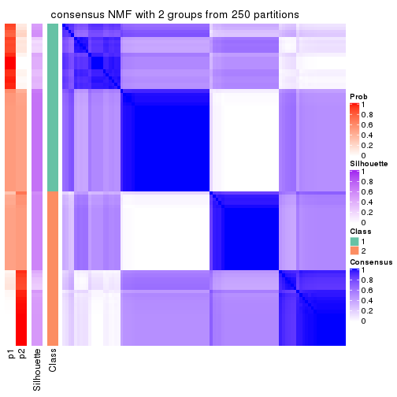
consensus_heatmap(res, k = 3)
consensus_heatmap(res, k = 4)
consensus_heatmap(res, k = 5)
consensus_heatmap(res, k = 6)
Heatmaps for the membership of samples in all partitions to see how consistent they are:
membership_heatmap(res, k = 2)
membership_heatmap(res, k = 3)
membership_heatmap(res, k = 4)
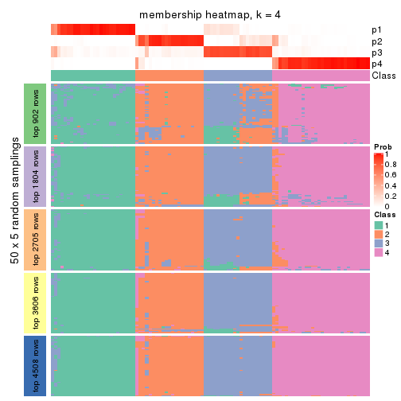
membership_heatmap(res, k = 5)
membership_heatmap(res, k = 6)
As soon as we have had the classes for columns, we can look for signatures which are significantly different between classes which can be candidate marks for certain classes. Following are the heatmaps for signatures.
Signature heatmaps where rows are scaled:
get_signatures(res, k = 2)
get_signatures(res, k = 3)
get_signatures(res, k = 4)
get_signatures(res, k = 5)
get_signatures(res, k = 6)
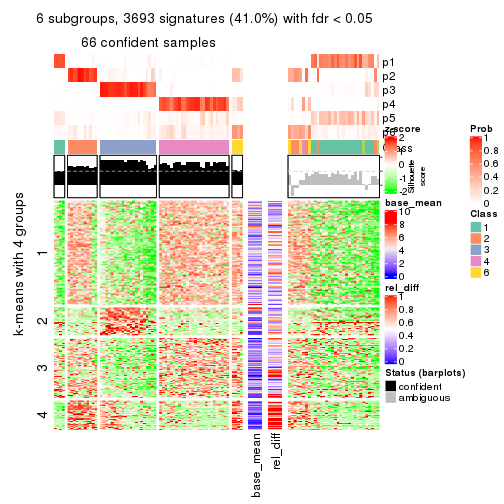
Signature heatmaps where rows are not scaled:
get_signatures(res, k = 2, scale_rows = FALSE)
get_signatures(res, k = 3, scale_rows = FALSE)
get_signatures(res, k = 4, scale_rows = FALSE)
get_signatures(res, k = 5, scale_rows = FALSE)
get_signatures(res, k = 6, scale_rows = FALSE)
Compare the overlap of signatures from different k:
compare_signatures(res)
get_signature() returns a data frame invisibly. TO get the list of signatures, the function
call should be assigned to a variable explicitly. In following code, if plot argument is set
to FALSE, no heatmap is plotted while only the differential analysis is performed.
# code only for demonstration
tb = get_signature(res, k = ..., plot = FALSE)
An example of the output of tb is:
#> which_row fdr mean_1 mean_2 scaled_mean_1 scaled_mean_2 km
#> 1 38 0.042760348 8.373488 9.131774 -0.5533452 0.5164555 1
#> 2 40 0.018707592 7.106213 8.469186 -0.6173731 0.5762149 1
#> 3 55 0.019134737 10.221463 11.207825 -0.6159697 0.5749050 1
#> 4 59 0.006059896 5.921854 7.869574 -0.6899429 0.6439467 1
#> 5 60 0.018055526 8.928898 10.211722 -0.6204761 0.5791110 1
#> 6 98 0.009384629 15.714769 14.887706 0.6635654 -0.6193277 2
...
The columns in tb are:
which_row: row indices corresponding to the input matrix.fdr: FDR for the differential test. mean_x: The mean value in group x.scaled_mean_x: The mean value in group x after rows are scaled.km: Row groups if k-means clustering is applied to rows.UMAP plot which shows how samples are separated.
dimension_reduction(res, k = 2, method = "UMAP")
dimension_reduction(res, k = 3, method = "UMAP")
dimension_reduction(res, k = 4, method = "UMAP")
dimension_reduction(res, k = 5, method = "UMAP")
dimension_reduction(res, k = 6, method = "UMAP")
Following heatmap shows how subgroups are split when increasing k:
collect_classes(res)
If matrix rows can be associated to genes, consider to use functional_enrichment(res,
...) to perform function enrichment for the signature genes. See this vignette for more detailed explanations.
The object with results only for a single top-value method and a single partition method can be extracted as:
res = res_list["MAD", "hclust"]
# you can also extract it by
# res = res_list["MAD:hclust"]
A summary of res and all the functions that can be applied to it:
res
#> A 'ConsensusPartition' object with k = 2, 3, 4, 5, 6.
#> On a matrix with 9017 rows and 98 columns.
#> Top rows (902, 1804, 2705, 3606, 4508) are extracted by 'MAD' method.
#> Subgroups are detected by 'hclust' method.
#> Performed in total 1250 partitions by row resampling.
#> Best k for subgroups seems to be 4.
#>
#> Following methods can be applied to this 'ConsensusPartition' object:
#> [1] "cola_report" "collect_classes" "collect_plots"
#> [4] "collect_stats" "colnames" "compare_signatures"
#> [7] "consensus_heatmap" "dimension_reduction" "functional_enrichment"
#> [10] "get_anno_col" "get_anno" "get_classes"
#> [13] "get_consensus" "get_matrix" "get_membership"
#> [16] "get_param" "get_signatures" "get_stats"
#> [19] "is_best_k" "is_stable_k" "membership_heatmap"
#> [22] "ncol" "nrow" "plot_ecdf"
#> [25] "rownames" "select_partition_number" "show"
#> [28] "suggest_best_k" "test_to_known_factors"
collect_plots() function collects all the plots made from res for all k (number of partitions)
into one single page to provide an easy and fast comparison between different k.
collect_plots(res)
The plots are:
k and the heatmap of
predicted classes for each k.k.k.k.All the plots in panels can be made by individual functions and they are plotted later in this section.
select_partition_number() produces several plots showing different
statistics for choosing “optimized” k. There are following statistics:
k;k, the area increased is defined as \(A_k - A_{k-1}\).The detailed explanations of these statistics can be found in the cola vignette.
Generally speaking, lower PAC score, higher mean silhouette score or higher
concordance corresponds to better partition. Rand index and Jaccard index
measure how similar the current partition is compared to partition with k-1.
If they are too similar, we won't accept k is better than k-1.
select_partition_number(res)
The numeric values for all these statistics can be obtained by get_stats().
get_stats(res)
#> k 1-PAC mean_silhouette concordance area_increased Rand Jaccard
#> 2 2 0.474 0.891 0.811 0.3591 0.496 0.496
#> 3 3 0.834 0.866 0.900 0.6623 0.914 0.826
#> 4 4 0.860 0.855 0.914 0.1243 0.906 0.772
#> 5 5 0.774 0.731 0.860 0.0592 0.995 0.986
#> 6 6 0.778 0.689 0.828 0.0241 0.972 0.913
suggest_best_k() suggests the best \(k\) based on these statistics. The rules are as follows:
suggest_best_k(res)
#> [1] 4
Following shows the table of the partitions (You need to click the show/hide
code output link to see it). The membership matrix (columns with name p*)
is inferred by
clue::cl_consensus()
function with the SE method. Basically the value in the membership matrix
represents the probability to belong to a certain group. The finall class
label for an item is determined with the group with highest probability it
belongs to.
In get_classes() function, the entropy is calculated from the membership
matrix and the silhouette score is calculated from the consensus matrix.
cbind(get_classes(res, k = 2), get_membership(res, k = 2))
#> class entropy silhouette p1 p2
#> SRR1810660 1 0.000 0.531 1.000 0.000
#> SRR1810659 1 0.000 0.531 1.000 0.000
#> SRR1810658 1 0.000 0.531 1.000 0.000
#> SRR1810657 1 0.000 0.531 1.000 0.000
#> SRR1818435 1 0.998 0.802 0.524 0.476
#> SRR1818434 1 0.998 0.802 0.524 0.476
#> SRR1810752 2 0.000 1.000 0.000 1.000
#> SRR1810751 2 0.000 1.000 0.000 1.000
#> SRR1810749 1 0.990 0.846 0.560 0.440
#> SRR1810748 1 0.000 0.531 1.000 0.000
#> SRR1810750 1 0.866 0.759 0.712 0.288
#> SRR1810747 2 0.000 1.000 0.000 1.000
#> SRR1810746 1 0.969 0.838 0.604 0.396
#> SRR1810745 1 0.946 0.821 0.636 0.364
#> SRR1810744 1 0.985 0.847 0.572 0.428
#> SRR1810743 1 0.949 0.824 0.632 0.368
#> SRR1810742 2 0.000 1.000 0.000 1.000
#> SRR1810741 2 0.000 1.000 0.000 1.000
#> SRR1810740 1 0.992 0.842 0.552 0.448
#> SRR1810739 1 0.983 0.846 0.576 0.424
#> SRR1810738 1 0.988 0.847 0.564 0.436
#> SRR1810737 2 0.000 1.000 0.000 1.000
#> SRR1810736 2 0.000 1.000 0.000 1.000
#> SRR1810734 2 0.000 1.000 0.000 1.000
#> SRR1810735 2 0.000 1.000 0.000 1.000
#> SRR1810733 2 0.000 1.000 0.000 1.000
#> SRR1810732 1 0.983 0.846 0.576 0.424
#> SRR1810730 2 0.000 1.000 0.000 1.000
#> SRR1810729 1 0.952 0.826 0.628 0.372
#> SRR1810731 1 0.987 0.847 0.568 0.432
#> SRR1810728 2 0.000 1.000 0.000 1.000
#> SRR1810727 2 0.000 1.000 0.000 1.000
#> SRR1810726 1 0.990 0.846 0.560 0.440
#> SRR1810725 2 0.000 1.000 0.000 1.000
#> SRR1810724 2 0.000 1.000 0.000 1.000
#> SRR1810723 1 0.969 0.838 0.604 0.396
#> SRR1810722 1 0.988 0.847 0.564 0.436
#> SRR1810721 1 0.990 0.846 0.560 0.440
#> SRR1810720 1 0.988 0.847 0.564 0.436
#> SRR1810719 2 0.000 1.000 0.000 1.000
#> SRR1810718 1 0.000 0.531 1.000 0.000
#> SRR1810717 1 0.955 0.828 0.624 0.376
#> SRR1810716 2 0.000 1.000 0.000 1.000
#> SRR1810715 2 0.000 1.000 0.000 1.000
#> SRR1810713 2 0.000 1.000 0.000 1.000
#> SRR1810714 1 0.343 0.574 0.936 0.064
#> SRR1810712 2 0.000 1.000 0.000 1.000
#> SRR1810710 2 0.000 1.000 0.000 1.000
#> SRR1810711 2 0.000 1.000 0.000 1.000
#> SRR1810709 2 0.000 1.000 0.000 1.000
#> SRR1810708 1 0.952 0.826 0.628 0.372
#> SRR1810707 1 0.988 0.847 0.564 0.436
#> SRR1810706 2 0.000 1.000 0.000 1.000
#> SRR1810704 1 0.966 0.836 0.608 0.392
#> SRR1810705 1 0.939 0.815 0.644 0.356
#> SRR1810703 1 0.827 0.734 0.740 0.260
#> SRR1810702 2 0.000 1.000 0.000 1.000
#> SRR1810701 1 0.833 0.737 0.736 0.264
#> SRR1810700 2 0.000 1.000 0.000 1.000
#> SRR1810699 2 0.000 1.000 0.000 1.000
#> SRR1810696 2 0.000 1.000 0.000 1.000
#> SRR1810695 2 0.000 1.000 0.000 1.000
#> SRR1810698 2 0.000 1.000 0.000 1.000
#> SRR1810697 2 0.000 1.000 0.000 1.000
#> SRR1810694 2 0.000 1.000 0.000 1.000
#> SRR1810693 1 0.961 0.833 0.616 0.384
#> SRR1810692 2 0.000 1.000 0.000 1.000
#> SRR1810690 2 0.000 1.000 0.000 1.000
#> SRR1810691 1 0.990 0.846 0.560 0.440
#> SRR1810689 2 0.000 1.000 0.000 1.000
#> SRR1810688 2 0.000 1.000 0.000 1.000
#> SRR1810687 2 0.000 1.000 0.000 1.000
#> SRR1810685 1 0.990 0.846 0.560 0.440
#> SRR1810686 2 0.000 1.000 0.000 1.000
#> SRR1810684 2 0.000 1.000 0.000 1.000
#> SRR1810683 2 0.000 1.000 0.000 1.000
#> SRR1810680 2 0.000 1.000 0.000 1.000
#> SRR1810679 2 0.000 1.000 0.000 1.000
#> SRR1810678 2 0.000 1.000 0.000 1.000
#> SRR1810682 2 0.000 1.000 0.000 1.000
#> SRR1810681 2 0.000 1.000 0.000 1.000
#> SRR1810677 2 0.000 1.000 0.000 1.000
#> SRR1810676 2 0.000 1.000 0.000 1.000
#> SRR1810675 1 0.993 0.840 0.548 0.452
#> SRR1810673 1 0.993 0.840 0.548 0.452
#> SRR1810674 1 0.993 0.840 0.548 0.452
#> SRR1810671 1 0.993 0.840 0.548 0.452
#> SRR1810670 1 0.993 0.840 0.548 0.452
#> SRR1810669 1 0.993 0.840 0.548 0.452
#> SRR1810667 1 0.993 0.840 0.548 0.452
#> SRR1810666 1 0.993 0.840 0.548 0.452
#> SRR1810672 1 0.993 0.840 0.548 0.452
#> SRR1810668 1 0.993 0.840 0.548 0.452
#> SRR1810665 1 0.993 0.840 0.548 0.452
#> SRR1810664 1 0.993 0.840 0.548 0.452
#> SRR1810663 1 0.993 0.840 0.548 0.452
#> SRR1810661 1 0.993 0.840 0.548 0.452
#> SRR1810662 1 0.993 0.840 0.548 0.452
cbind(get_classes(res, k = 3), get_membership(res, k = 3))
#> class entropy silhouette p1 p2 p3
#> SRR1810660 3 0.175 0.8105 0.048 0.000 0.952
#> SRR1810659 3 0.175 0.8105 0.048 0.000 0.952
#> SRR1810658 3 0.175 0.8105 0.048 0.000 0.952
#> SRR1810657 3 0.245 0.8017 0.076 0.000 0.924
#> SRR1818435 1 0.293 0.7945 0.924 0.036 0.040
#> SRR1818434 1 0.293 0.7945 0.924 0.036 0.040
#> SRR1810752 2 0.000 1.0000 0.000 1.000 0.000
#> SRR1810751 2 0.000 1.0000 0.000 1.000 0.000
#> SRR1810749 1 0.271 0.8366 0.912 0.000 0.088
#> SRR1810748 3 0.175 0.8105 0.048 0.000 0.952
#> SRR1810750 3 0.629 0.0759 0.464 0.000 0.536
#> SRR1810747 2 0.000 1.0000 0.000 1.000 0.000
#> SRR1810746 1 0.429 0.7921 0.820 0.000 0.180
#> SRR1810745 1 0.568 0.6138 0.684 0.000 0.316
#> SRR1810744 1 0.455 0.7811 0.800 0.000 0.200
#> SRR1810743 1 0.489 0.7418 0.772 0.000 0.228
#> SRR1810742 2 0.000 1.0000 0.000 1.000 0.000
#> SRR1810741 2 0.000 1.0000 0.000 1.000 0.000
#> SRR1810740 1 0.329 0.8405 0.896 0.008 0.096
#> SRR1810739 1 0.341 0.8283 0.876 0.000 0.124
#> SRR1810738 1 0.288 0.8364 0.904 0.000 0.096
#> SRR1810737 2 0.000 1.0000 0.000 1.000 0.000
#> SRR1810736 2 0.000 1.0000 0.000 1.000 0.000
#> SRR1810734 2 0.000 1.0000 0.000 1.000 0.000
#> SRR1810735 2 0.000 1.0000 0.000 1.000 0.000
#> SRR1810733 2 0.000 1.0000 0.000 1.000 0.000
#> SRR1810732 1 0.369 0.8177 0.860 0.000 0.140
#> SRR1810730 2 0.000 1.0000 0.000 1.000 0.000
#> SRR1810729 1 0.603 0.4556 0.624 0.000 0.376
#> SRR1810731 1 0.460 0.7783 0.796 0.000 0.204
#> SRR1810728 2 0.000 1.0000 0.000 1.000 0.000
#> SRR1810727 2 0.000 1.0000 0.000 1.000 0.000
#> SRR1810726 1 0.263 0.8369 0.916 0.000 0.084
#> SRR1810725 2 0.000 1.0000 0.000 1.000 0.000
#> SRR1810724 2 0.000 1.0000 0.000 1.000 0.000
#> SRR1810723 1 0.497 0.7298 0.764 0.000 0.236
#> SRR1810722 1 0.341 0.8293 0.876 0.000 0.124
#> SRR1810721 1 0.312 0.8345 0.892 0.000 0.108
#> SRR1810720 1 0.341 0.8284 0.876 0.000 0.124
#> SRR1810719 2 0.000 1.0000 0.000 1.000 0.000
#> SRR1810718 3 0.175 0.8105 0.048 0.000 0.952
#> SRR1810717 1 0.559 0.6279 0.696 0.000 0.304
#> SRR1810716 2 0.000 1.0000 0.000 1.000 0.000
#> SRR1810715 2 0.000 1.0000 0.000 1.000 0.000
#> SRR1810713 2 0.000 1.0000 0.000 1.000 0.000
#> SRR1810714 3 0.319 0.7800 0.112 0.000 0.888
#> SRR1810712 2 0.000 1.0000 0.000 1.000 0.000
#> SRR1810710 2 0.000 1.0000 0.000 1.000 0.000
#> SRR1810711 2 0.000 1.0000 0.000 1.000 0.000
#> SRR1810709 2 0.000 1.0000 0.000 1.000 0.000
#> SRR1810708 1 0.606 0.4369 0.616 0.000 0.384
#> SRR1810707 1 0.327 0.8319 0.884 0.000 0.116
#> SRR1810706 2 0.000 1.0000 0.000 1.000 0.000
#> SRR1810704 1 0.579 0.5779 0.668 0.000 0.332
#> SRR1810705 1 0.608 0.4403 0.612 0.000 0.388
#> SRR1810703 3 0.614 0.3166 0.404 0.000 0.596
#> SRR1810702 2 0.000 1.0000 0.000 1.000 0.000
#> SRR1810701 3 0.620 0.2529 0.424 0.000 0.576
#> SRR1810700 2 0.000 1.0000 0.000 1.000 0.000
#> SRR1810699 2 0.000 1.0000 0.000 1.000 0.000
#> SRR1810696 2 0.000 1.0000 0.000 1.000 0.000
#> SRR1810695 2 0.000 1.0000 0.000 1.000 0.000
#> SRR1810698 2 0.000 1.0000 0.000 1.000 0.000
#> SRR1810697 2 0.000 1.0000 0.000 1.000 0.000
#> SRR1810694 2 0.000 1.0000 0.000 1.000 0.000
#> SRR1810693 1 0.445 0.7790 0.808 0.000 0.192
#> SRR1810692 2 0.000 1.0000 0.000 1.000 0.000
#> SRR1810690 2 0.000 1.0000 0.000 1.000 0.000
#> SRR1810691 1 0.263 0.8369 0.916 0.000 0.084
#> SRR1810689 2 0.000 1.0000 0.000 1.000 0.000
#> SRR1810688 2 0.000 1.0000 0.000 1.000 0.000
#> SRR1810687 2 0.000 1.0000 0.000 1.000 0.000
#> SRR1810685 1 0.296 0.8369 0.900 0.000 0.100
#> SRR1810686 2 0.000 1.0000 0.000 1.000 0.000
#> SRR1810684 2 0.000 1.0000 0.000 1.000 0.000
#> SRR1810683 2 0.000 1.0000 0.000 1.000 0.000
#> SRR1810680 2 0.000 1.0000 0.000 1.000 0.000
#> SRR1810679 2 0.000 1.0000 0.000 1.000 0.000
#> SRR1810678 2 0.000 1.0000 0.000 1.000 0.000
#> SRR1810682 2 0.000 1.0000 0.000 1.000 0.000
#> SRR1810681 2 0.000 1.0000 0.000 1.000 0.000
#> SRR1810677 2 0.000 1.0000 0.000 1.000 0.000
#> SRR1810676 2 0.000 1.0000 0.000 1.000 0.000
#> SRR1810675 1 0.234 0.8035 0.940 0.012 0.048
#> SRR1810673 1 0.234 0.8035 0.940 0.012 0.048
#> SRR1810674 1 0.234 0.8035 0.940 0.012 0.048
#> SRR1810671 1 0.212 0.8271 0.948 0.012 0.040
#> SRR1810670 1 0.175 0.8311 0.960 0.012 0.028
#> SRR1810669 1 0.321 0.8395 0.904 0.012 0.084
#> SRR1810667 1 0.234 0.8035 0.940 0.012 0.048
#> SRR1810666 1 0.175 0.8311 0.960 0.012 0.028
#> SRR1810672 1 0.294 0.8387 0.916 0.012 0.072
#> SRR1810668 1 0.234 0.8035 0.940 0.012 0.048
#> SRR1810665 1 0.175 0.8311 0.960 0.012 0.028
#> SRR1810664 1 0.234 0.8035 0.940 0.012 0.048
#> SRR1810663 1 0.234 0.8035 0.940 0.012 0.048
#> SRR1810661 1 0.245 0.8046 0.936 0.012 0.052
#> SRR1810662 1 0.234 0.8035 0.940 0.012 0.048
cbind(get_classes(res, k = 4), get_membership(res, k = 4))
#> class entropy silhouette p1 p2 p3 p4
#> SRR1810660 4 0.0000 0.8353 0.000 0.000 0.000 1.000
#> SRR1810659 4 0.0000 0.8353 0.000 0.000 0.000 1.000
#> SRR1810658 4 0.0000 0.8353 0.000 0.000 0.000 1.000
#> SRR1810657 4 0.1022 0.8205 0.032 0.000 0.000 0.968
#> SRR1818435 3 0.0817 0.8784 0.000 0.024 0.976 0.000
#> SRR1818434 3 0.0817 0.8784 0.000 0.024 0.976 0.000
#> SRR1810752 2 0.0000 0.9984 0.000 1.000 0.000 0.000
#> SRR1810751 2 0.0000 0.9984 0.000 1.000 0.000 0.000
#> SRR1810749 1 0.2654 0.7813 0.888 0.000 0.108 0.004
#> SRR1810748 4 0.0000 0.8353 0.000 0.000 0.000 1.000
#> SRR1810750 1 0.4730 0.3812 0.636 0.000 0.000 0.364
#> SRR1810747 2 0.0000 0.9984 0.000 1.000 0.000 0.000
#> SRR1810746 1 0.3320 0.7778 0.876 0.000 0.056 0.068
#> SRR1810745 1 0.4399 0.6966 0.768 0.000 0.020 0.212
#> SRR1810744 1 0.5031 0.7840 0.768 0.000 0.092 0.140
#> SRR1810743 1 0.3354 0.7685 0.872 0.000 0.044 0.084
#> SRR1810742 2 0.0188 0.9978 0.004 0.996 0.000 0.000
#> SRR1810741 2 0.0000 0.9984 0.000 1.000 0.000 0.000
#> SRR1810740 3 0.6403 0.4634 0.232 0.000 0.640 0.128
#> SRR1810739 1 0.3243 0.7874 0.876 0.000 0.088 0.036
#> SRR1810738 1 0.3335 0.7854 0.860 0.000 0.120 0.020
#> SRR1810737 2 0.0188 0.9978 0.004 0.996 0.000 0.000
#> SRR1810736 2 0.0188 0.9978 0.004 0.996 0.000 0.000
#> SRR1810734 2 0.0000 0.9984 0.000 1.000 0.000 0.000
#> SRR1810735 2 0.0188 0.9978 0.004 0.996 0.000 0.000
#> SRR1810733 2 0.0188 0.9978 0.004 0.996 0.000 0.000
#> SRR1810732 3 0.7412 -0.2522 0.388 0.000 0.444 0.168
#> SRR1810730 2 0.0188 0.9978 0.004 0.996 0.000 0.000
#> SRR1810729 1 0.6778 0.4437 0.552 0.000 0.112 0.336
#> SRR1810731 1 0.4718 0.7897 0.792 0.000 0.092 0.116
#> SRR1810728 2 0.0188 0.9978 0.004 0.996 0.000 0.000
#> SRR1810727 2 0.0188 0.9978 0.004 0.996 0.000 0.000
#> SRR1810726 1 0.2589 0.7782 0.884 0.000 0.116 0.000
#> SRR1810725 2 0.0188 0.9978 0.004 0.996 0.000 0.000
#> SRR1810724 2 0.0188 0.9978 0.004 0.996 0.000 0.000
#> SRR1810723 1 0.4985 0.7635 0.768 0.000 0.080 0.152
#> SRR1810722 1 0.4282 0.7910 0.816 0.000 0.124 0.060
#> SRR1810721 1 0.3367 0.7889 0.864 0.000 0.108 0.028
#> SRR1810720 1 0.3706 0.7925 0.848 0.000 0.112 0.040
#> SRR1810719 2 0.0000 0.9984 0.000 1.000 0.000 0.000
#> SRR1810718 4 0.0000 0.8353 0.000 0.000 0.000 1.000
#> SRR1810717 1 0.4720 0.7238 0.768 0.000 0.044 0.188
#> SRR1810716 2 0.0188 0.9978 0.004 0.996 0.000 0.000
#> SRR1810715 2 0.0000 0.9984 0.000 1.000 0.000 0.000
#> SRR1810713 2 0.0000 0.9984 0.000 1.000 0.000 0.000
#> SRR1810714 4 0.2281 0.7772 0.096 0.000 0.000 0.904
#> SRR1810712 2 0.0000 0.9984 0.000 1.000 0.000 0.000
#> SRR1810710 2 0.0188 0.9978 0.004 0.996 0.000 0.000
#> SRR1810711 2 0.0000 0.9984 0.000 1.000 0.000 0.000
#> SRR1810709 2 0.0188 0.9978 0.004 0.996 0.000 0.000
#> SRR1810708 1 0.5535 0.5942 0.656 0.000 0.040 0.304
#> SRR1810707 1 0.6926 0.3944 0.496 0.000 0.392 0.112
#> SRR1810706 2 0.0188 0.9978 0.004 0.996 0.000 0.000
#> SRR1810704 1 0.5690 0.6648 0.672 0.000 0.060 0.268
#> SRR1810705 1 0.5682 0.5123 0.612 0.000 0.036 0.352
#> SRR1810703 4 0.4941 0.1185 0.436 0.000 0.000 0.564
#> SRR1810702 2 0.0000 0.9984 0.000 1.000 0.000 0.000
#> SRR1810701 4 0.4981 0.0174 0.464 0.000 0.000 0.536
#> SRR1810700 2 0.0000 0.9984 0.000 1.000 0.000 0.000
#> SRR1810699 2 0.0000 0.9984 0.000 1.000 0.000 0.000
#> SRR1810696 2 0.0188 0.9978 0.004 0.996 0.000 0.000
#> SRR1810695 2 0.0000 0.9984 0.000 1.000 0.000 0.000
#> SRR1810698 2 0.0188 0.9978 0.004 0.996 0.000 0.000
#> SRR1810697 2 0.0188 0.9978 0.004 0.996 0.000 0.000
#> SRR1810694 2 0.0188 0.9978 0.004 0.996 0.000 0.000
#> SRR1810693 1 0.7229 0.5139 0.536 0.000 0.280 0.184
#> SRR1810692 2 0.0000 0.9984 0.000 1.000 0.000 0.000
#> SRR1810690 2 0.0000 0.9984 0.000 1.000 0.000 0.000
#> SRR1810691 1 0.2589 0.7782 0.884 0.000 0.116 0.000
#> SRR1810689 2 0.0000 0.9984 0.000 1.000 0.000 0.000
#> SRR1810688 2 0.0000 0.9984 0.000 1.000 0.000 0.000
#> SRR1810687 2 0.0000 0.9984 0.000 1.000 0.000 0.000
#> SRR1810685 1 0.4706 0.7831 0.788 0.000 0.140 0.072
#> SRR1810686 2 0.0000 0.9984 0.000 1.000 0.000 0.000
#> SRR1810684 2 0.0188 0.9978 0.004 0.996 0.000 0.000
#> SRR1810683 2 0.0000 0.9984 0.000 1.000 0.000 0.000
#> SRR1810680 2 0.0000 0.9984 0.000 1.000 0.000 0.000
#> SRR1810679 2 0.0188 0.9978 0.004 0.996 0.000 0.000
#> SRR1810678 2 0.0000 0.9984 0.000 1.000 0.000 0.000
#> SRR1810682 2 0.0000 0.9984 0.000 1.000 0.000 0.000
#> SRR1810681 2 0.0000 0.9984 0.000 1.000 0.000 0.000
#> SRR1810677 2 0.0000 0.9984 0.000 1.000 0.000 0.000
#> SRR1810676 2 0.0000 0.9984 0.000 1.000 0.000 0.000
#> SRR1810675 3 0.0000 0.8934 0.000 0.000 1.000 0.000
#> SRR1810673 3 0.0000 0.8934 0.000 0.000 1.000 0.000
#> SRR1810674 3 0.0000 0.8934 0.000 0.000 1.000 0.000
#> SRR1810671 3 0.2840 0.8654 0.056 0.000 0.900 0.044
#> SRR1810670 3 0.3056 0.8606 0.072 0.000 0.888 0.040
#> SRR1810669 3 0.4469 0.7970 0.112 0.000 0.808 0.080
#> SRR1810667 3 0.0000 0.8934 0.000 0.000 1.000 0.000
#> SRR1810666 3 0.3056 0.8606 0.072 0.000 0.888 0.040
#> SRR1810672 3 0.4181 0.8085 0.128 0.000 0.820 0.052
#> SRR1810668 3 0.0000 0.8934 0.000 0.000 1.000 0.000
#> SRR1810665 3 0.3056 0.8606 0.072 0.000 0.888 0.040
#> SRR1810664 3 0.0000 0.8934 0.000 0.000 1.000 0.000
#> SRR1810663 3 0.0000 0.8934 0.000 0.000 1.000 0.000
#> SRR1810661 3 0.0188 0.8927 0.000 0.000 0.996 0.004
#> SRR1810662 3 0.0000 0.8934 0.000 0.000 1.000 0.000
cbind(get_classes(res, k = 5), get_membership(res, k = 5))
#> class entropy silhouette p1 p2 p3 p4 p5
#> SRR1810660 5 0.0000 0.7580 0.000 0.000 0.000 0.000 1.000
#> SRR1810659 5 0.0290 0.7531 0.000 0.000 0.000 0.008 0.992
#> SRR1810658 5 0.0290 0.7531 0.000 0.000 0.000 0.008 0.992
#> SRR1810657 5 0.0992 0.7400 0.008 0.000 0.000 0.024 0.968
#> SRR1818435 3 0.0703 0.8662 0.000 0.024 0.976 0.000 0.000
#> SRR1818434 3 0.0703 0.8662 0.000 0.024 0.976 0.000 0.000
#> SRR1810752 2 0.0000 0.9092 0.000 1.000 0.000 0.000 0.000
#> SRR1810751 2 0.0000 0.9092 0.000 1.000 0.000 0.000 0.000
#> SRR1810749 1 0.0932 0.6128 0.972 0.000 0.004 0.020 0.004
#> SRR1810748 5 0.0000 0.7580 0.000 0.000 0.000 0.000 1.000
#> SRR1810750 4 0.5759 0.0000 0.180 0.000 0.000 0.620 0.200
#> SRR1810747 2 0.0000 0.9092 0.000 1.000 0.000 0.000 0.000
#> SRR1810746 1 0.4199 0.5714 0.764 0.000 0.000 0.180 0.056
#> SRR1810745 1 0.6344 0.1593 0.484 0.000 0.000 0.344 0.172
#> SRR1810744 1 0.4316 0.6048 0.772 0.000 0.000 0.108 0.120
#> SRR1810743 1 0.5157 0.5275 0.680 0.000 0.012 0.248 0.060
#> SRR1810742 2 0.3003 0.8839 0.000 0.812 0.000 0.188 0.000
#> SRR1810741 2 0.0000 0.9092 0.000 1.000 0.000 0.000 0.000
#> SRR1810740 3 0.7062 0.3367 0.216 0.000 0.564 0.092 0.128
#> SRR1810739 1 0.2795 0.6126 0.872 0.000 0.000 0.100 0.028
#> SRR1810738 1 0.2270 0.6128 0.916 0.000 0.012 0.052 0.020
#> SRR1810737 2 0.3143 0.8788 0.000 0.796 0.000 0.204 0.000
#> SRR1810736 2 0.3003 0.8839 0.000 0.812 0.000 0.188 0.000
#> SRR1810734 2 0.0000 0.9092 0.000 1.000 0.000 0.000 0.000
#> SRR1810735 2 0.3143 0.8788 0.000 0.796 0.000 0.204 0.000
#> SRR1810733 2 0.3177 0.8765 0.000 0.792 0.000 0.208 0.000
#> SRR1810732 3 0.8288 -0.2782 0.272 0.000 0.356 0.236 0.136
#> SRR1810730 2 0.3143 0.8788 0.000 0.796 0.000 0.204 0.000
#> SRR1810729 1 0.8016 -0.0271 0.368 0.000 0.092 0.236 0.304
#> SRR1810731 1 0.3702 0.6108 0.820 0.000 0.000 0.084 0.096
#> SRR1810728 2 0.3074 0.8816 0.000 0.804 0.000 0.196 0.000
#> SRR1810727 2 0.3143 0.8788 0.000 0.796 0.000 0.204 0.000
#> SRR1810726 1 0.0693 0.6098 0.980 0.000 0.008 0.012 0.000
#> SRR1810725 2 0.3003 0.8839 0.000 0.812 0.000 0.188 0.000
#> SRR1810724 2 0.3143 0.8788 0.000 0.796 0.000 0.204 0.000
#> SRR1810723 1 0.5332 0.5377 0.700 0.000 0.012 0.164 0.124
#> SRR1810722 1 0.3399 0.6200 0.856 0.000 0.016 0.080 0.048
#> SRR1810721 1 0.1686 0.6206 0.944 0.000 0.008 0.020 0.028
#> SRR1810720 1 0.2152 0.6256 0.920 0.000 0.004 0.044 0.032
#> SRR1810719 2 0.0000 0.9092 0.000 1.000 0.000 0.000 0.000
#> SRR1810718 5 0.0000 0.7580 0.000 0.000 0.000 0.000 1.000
#> SRR1810717 1 0.6096 0.3997 0.592 0.000 0.008 0.248 0.152
#> SRR1810716 2 0.3003 0.8839 0.000 0.812 0.000 0.188 0.000
#> SRR1810715 2 0.0000 0.9092 0.000 1.000 0.000 0.000 0.000
#> SRR1810713 2 0.0000 0.9092 0.000 1.000 0.000 0.000 0.000
#> SRR1810714 5 0.2408 0.6636 0.016 0.000 0.000 0.092 0.892
#> SRR1810712 2 0.0000 0.9092 0.000 1.000 0.000 0.000 0.000
#> SRR1810710 2 0.3109 0.8803 0.000 0.800 0.000 0.200 0.000
#> SRR1810711 2 0.0000 0.9092 0.000 1.000 0.000 0.000 0.000
#> SRR1810709 2 0.3143 0.8788 0.000 0.796 0.000 0.204 0.000
#> SRR1810708 1 0.6358 0.2857 0.516 0.000 0.000 0.208 0.276
#> SRR1810707 1 0.7648 0.1045 0.468 0.000 0.272 0.164 0.096
#> SRR1810706 2 0.3143 0.8788 0.000 0.796 0.000 0.204 0.000
#> SRR1810704 1 0.6354 0.3834 0.560 0.000 0.008 0.192 0.240
#> SRR1810705 1 0.6864 0.1565 0.436 0.000 0.008 0.232 0.324
#> SRR1810703 5 0.6278 -0.0391 0.252 0.000 0.000 0.212 0.536
#> SRR1810702 2 0.0000 0.9092 0.000 1.000 0.000 0.000 0.000
#> SRR1810701 5 0.6403 -0.0920 0.256 0.000 0.000 0.232 0.512
#> SRR1810700 2 0.0000 0.9092 0.000 1.000 0.000 0.000 0.000
#> SRR1810699 2 0.0000 0.9092 0.000 1.000 0.000 0.000 0.000
#> SRR1810696 2 0.3143 0.8788 0.000 0.796 0.000 0.204 0.000
#> SRR1810695 2 0.1341 0.9054 0.000 0.944 0.000 0.056 0.000
#> SRR1810698 2 0.3143 0.8788 0.000 0.796 0.000 0.204 0.000
#> SRR1810697 2 0.3143 0.8788 0.000 0.796 0.000 0.204 0.000
#> SRR1810694 2 0.3143 0.8788 0.000 0.796 0.000 0.204 0.000
#> SRR1810693 1 0.8237 -0.0736 0.340 0.000 0.188 0.328 0.144
#> SRR1810692 2 0.0703 0.9084 0.000 0.976 0.000 0.024 0.000
#> SRR1810690 2 0.0510 0.9088 0.000 0.984 0.000 0.016 0.000
#> SRR1810691 1 0.0693 0.6098 0.980 0.000 0.008 0.012 0.000
#> SRR1810689 2 0.0000 0.9092 0.000 1.000 0.000 0.000 0.000
#> SRR1810688 2 0.0000 0.9092 0.000 1.000 0.000 0.000 0.000
#> SRR1810687 2 0.0000 0.9092 0.000 1.000 0.000 0.000 0.000
#> SRR1810685 1 0.2949 0.6203 0.880 0.000 0.036 0.012 0.072
#> SRR1810686 2 0.0000 0.9092 0.000 1.000 0.000 0.000 0.000
#> SRR1810684 2 0.3039 0.8828 0.000 0.808 0.000 0.192 0.000
#> SRR1810683 2 0.0000 0.9092 0.000 1.000 0.000 0.000 0.000
#> SRR1810680 2 0.0162 0.9092 0.000 0.996 0.000 0.004 0.000
#> SRR1810679 2 0.3143 0.8788 0.000 0.796 0.000 0.204 0.000
#> SRR1810678 2 0.0000 0.9092 0.000 1.000 0.000 0.000 0.000
#> SRR1810682 2 0.0000 0.9092 0.000 1.000 0.000 0.000 0.000
#> SRR1810681 2 0.1608 0.9034 0.000 0.928 0.000 0.072 0.000
#> SRR1810677 2 0.0000 0.9092 0.000 1.000 0.000 0.000 0.000
#> SRR1810676 2 0.0000 0.9092 0.000 1.000 0.000 0.000 0.000
#> SRR1810675 3 0.0000 0.8791 0.000 0.000 1.000 0.000 0.000
#> SRR1810673 3 0.0000 0.8791 0.000 0.000 1.000 0.000 0.000
#> SRR1810674 3 0.0000 0.8791 0.000 0.000 1.000 0.000 0.000
#> SRR1810671 3 0.2446 0.8475 0.056 0.000 0.900 0.000 0.044
#> SRR1810670 3 0.2632 0.8422 0.072 0.000 0.888 0.000 0.040
#> SRR1810669 3 0.3849 0.7739 0.112 0.000 0.808 0.000 0.080
#> SRR1810667 3 0.0000 0.8791 0.000 0.000 1.000 0.000 0.000
#> SRR1810666 3 0.2632 0.8422 0.072 0.000 0.888 0.000 0.040
#> SRR1810672 3 0.3601 0.7857 0.128 0.000 0.820 0.000 0.052
#> SRR1810668 3 0.0000 0.8791 0.000 0.000 1.000 0.000 0.000
#> SRR1810665 3 0.2632 0.8422 0.072 0.000 0.888 0.000 0.040
#> SRR1810664 3 0.0000 0.8791 0.000 0.000 1.000 0.000 0.000
#> SRR1810663 3 0.0000 0.8791 0.000 0.000 1.000 0.000 0.000
#> SRR1810661 3 0.0162 0.8783 0.000 0.000 0.996 0.000 0.004
#> SRR1810662 3 0.0000 0.8791 0.000 0.000 1.000 0.000 0.000
cbind(get_classes(res, k = 6), get_membership(res, k = 6))
#> class entropy silhouette p1 p2 p3 p4 p5 p6
#> SRR1810660 5 0.0508 0.6819 0.000 0.000 0.000 0.004 0.984 0.012
#> SRR1810659 5 0.0622 0.6766 0.000 0.000 0.000 0.012 0.980 0.008
#> SRR1810658 5 0.0622 0.6766 0.000 0.000 0.000 0.012 0.980 0.008
#> SRR1810657 5 0.0858 0.6751 0.004 0.000 0.000 0.000 0.968 0.028
#> SRR1818435 3 0.0632 0.8964 0.000 0.024 0.976 0.000 0.000 0.000
#> SRR1818434 3 0.0632 0.8964 0.000 0.024 0.976 0.000 0.000 0.000
#> SRR1810752 2 0.0000 0.8882 0.000 1.000 0.000 0.000 0.000 0.000
#> SRR1810751 2 0.0000 0.8882 0.000 1.000 0.000 0.000 0.000 0.000
#> SRR1810749 1 0.1074 0.5807 0.960 0.000 0.000 0.012 0.000 0.028
#> SRR1810748 5 0.0000 0.6843 0.000 0.000 0.000 0.000 1.000 0.000
#> SRR1810750 4 0.6579 0.0000 0.104 0.000 0.000 0.540 0.152 0.204
#> SRR1810747 2 0.0000 0.8882 0.000 1.000 0.000 0.000 0.000 0.000
#> SRR1810746 6 0.5524 -0.3177 0.436 0.000 0.000 0.040 0.048 0.476
#> SRR1810745 6 0.7291 -0.0587 0.344 0.000 0.000 0.140 0.164 0.352
#> SRR1810744 1 0.5652 0.3934 0.576 0.000 0.000 0.028 0.104 0.292
#> SRR1810743 1 0.5071 0.2321 0.500 0.000 0.000 0.008 0.056 0.436
#> SRR1810742 2 0.2969 0.8573 0.000 0.776 0.000 0.224 0.000 0.000
#> SRR1810741 2 0.0000 0.8882 0.000 1.000 0.000 0.000 0.000 0.000
#> SRR1810740 3 0.8125 -0.1070 0.148 0.000 0.408 0.092 0.112 0.240
#> SRR1810739 1 0.4757 0.4144 0.600 0.000 0.000 0.028 0.020 0.352
#> SRR1810738 1 0.3733 0.5259 0.796 0.000 0.000 0.048 0.016 0.140
#> SRR1810737 2 0.3101 0.8499 0.000 0.756 0.000 0.244 0.000 0.000
#> SRR1810736 2 0.2969 0.8573 0.000 0.776 0.000 0.224 0.000 0.000
#> SRR1810734 2 0.0000 0.8882 0.000 1.000 0.000 0.000 0.000 0.000
#> SRR1810735 2 0.3101 0.8499 0.000 0.756 0.000 0.244 0.000 0.000
#> SRR1810733 2 0.3198 0.8394 0.000 0.740 0.000 0.260 0.000 0.000
#> SRR1810732 6 0.7797 0.1591 0.104 0.000 0.208 0.104 0.112 0.472
#> SRR1810730 2 0.3151 0.8451 0.000 0.748 0.000 0.252 0.000 0.000
#> SRR1810729 6 0.7626 0.1127 0.272 0.000 0.064 0.032 0.292 0.340
#> SRR1810731 1 0.4727 0.5299 0.720 0.000 0.000 0.028 0.088 0.164
#> SRR1810728 2 0.3050 0.8534 0.000 0.764 0.000 0.236 0.000 0.000
#> SRR1810727 2 0.3101 0.8499 0.000 0.756 0.000 0.244 0.000 0.000
#> SRR1810726 1 0.0777 0.5782 0.972 0.000 0.000 0.004 0.000 0.024
#> SRR1810725 2 0.2969 0.8573 0.000 0.776 0.000 0.224 0.000 0.000
#> SRR1810724 2 0.3050 0.8537 0.000 0.764 0.000 0.236 0.000 0.000
#> SRR1810723 1 0.5559 0.3851 0.628 0.000 0.008 0.020 0.116 0.228
#> SRR1810722 1 0.5298 0.3542 0.632 0.000 0.000 0.072 0.036 0.260
#> SRR1810721 1 0.1666 0.5878 0.936 0.000 0.000 0.008 0.020 0.036
#> SRR1810720 1 0.2649 0.5852 0.884 0.000 0.000 0.024 0.028 0.064
#> SRR1810719 2 0.0000 0.8882 0.000 1.000 0.000 0.000 0.000 0.000
#> SRR1810718 5 0.0000 0.6843 0.000 0.000 0.000 0.000 1.000 0.000
#> SRR1810717 1 0.6878 0.1319 0.456 0.000 0.008 0.076 0.140 0.320
#> SRR1810716 2 0.2969 0.8573 0.000 0.776 0.000 0.224 0.000 0.000
#> SRR1810715 2 0.0000 0.8882 0.000 1.000 0.000 0.000 0.000 0.000
#> SRR1810713 2 0.0000 0.8882 0.000 1.000 0.000 0.000 0.000 0.000
#> SRR1810714 5 0.2257 0.6186 0.000 0.000 0.000 0.008 0.876 0.116
#> SRR1810712 2 0.0000 0.8882 0.000 1.000 0.000 0.000 0.000 0.000
#> SRR1810710 2 0.3076 0.8518 0.000 0.760 0.000 0.240 0.000 0.000
#> SRR1810711 2 0.0000 0.8882 0.000 1.000 0.000 0.000 0.000 0.000
#> SRR1810709 2 0.3101 0.8499 0.000 0.756 0.000 0.244 0.000 0.000
#> SRR1810708 1 0.6554 -0.0629 0.376 0.000 0.000 0.024 0.260 0.340
#> SRR1810707 6 0.7843 0.2373 0.340 0.000 0.132 0.088 0.072 0.368
#> SRR1810706 2 0.3050 0.8537 0.000 0.764 0.000 0.236 0.000 0.000
#> SRR1810704 1 0.6614 0.1310 0.468 0.000 0.008 0.028 0.236 0.260
#> SRR1810705 5 0.6882 -0.3154 0.316 0.000 0.008 0.028 0.324 0.324
#> SRR1810703 5 0.5731 0.1989 0.136 0.000 0.000 0.012 0.528 0.324
#> SRR1810702 2 0.0000 0.8882 0.000 1.000 0.000 0.000 0.000 0.000
#> SRR1810701 5 0.5983 0.1469 0.148 0.000 0.000 0.020 0.504 0.328
#> SRR1810700 2 0.0000 0.8882 0.000 1.000 0.000 0.000 0.000 0.000
#> SRR1810699 2 0.0000 0.8882 0.000 1.000 0.000 0.000 0.000 0.000
#> SRR1810696 2 0.3101 0.8499 0.000 0.756 0.000 0.244 0.000 0.000
#> SRR1810695 2 0.1501 0.8828 0.000 0.924 0.000 0.076 0.000 0.000
#> SRR1810698 2 0.3126 0.8476 0.000 0.752 0.000 0.248 0.000 0.000
#> SRR1810697 2 0.3101 0.8499 0.000 0.756 0.000 0.244 0.000 0.000
#> SRR1810694 2 0.3101 0.8499 0.000 0.756 0.000 0.244 0.000 0.000
#> SRR1810693 6 0.6859 0.1559 0.128 0.000 0.052 0.116 0.116 0.588
#> SRR1810692 2 0.0937 0.8863 0.000 0.960 0.000 0.040 0.000 0.000
#> SRR1810690 2 0.0458 0.8880 0.000 0.984 0.000 0.016 0.000 0.000
#> SRR1810691 1 0.0777 0.5782 0.972 0.000 0.000 0.004 0.000 0.024
#> SRR1810689 2 0.0000 0.8882 0.000 1.000 0.000 0.000 0.000 0.000
#> SRR1810688 2 0.0000 0.8882 0.000 1.000 0.000 0.000 0.000 0.000
#> SRR1810687 2 0.0000 0.8882 0.000 1.000 0.000 0.000 0.000 0.000
#> SRR1810685 1 0.2628 0.5583 0.888 0.000 0.012 0.004 0.056 0.040
#> SRR1810686 2 0.0000 0.8882 0.000 1.000 0.000 0.000 0.000 0.000
#> SRR1810684 2 0.3023 0.8548 0.000 0.768 0.000 0.232 0.000 0.000
#> SRR1810683 2 0.0000 0.8882 0.000 1.000 0.000 0.000 0.000 0.000
#> SRR1810680 2 0.0260 0.8883 0.000 0.992 0.000 0.008 0.000 0.000
#> SRR1810679 2 0.3101 0.8499 0.000 0.756 0.000 0.244 0.000 0.000
#> SRR1810678 2 0.0000 0.8882 0.000 1.000 0.000 0.000 0.000 0.000
#> SRR1810682 2 0.0000 0.8882 0.000 1.000 0.000 0.000 0.000 0.000
#> SRR1810681 2 0.1663 0.8812 0.000 0.912 0.000 0.088 0.000 0.000
#> SRR1810677 2 0.0000 0.8882 0.000 1.000 0.000 0.000 0.000 0.000
#> SRR1810676 2 0.0000 0.8882 0.000 1.000 0.000 0.000 0.000 0.000
#> SRR1810675 3 0.0000 0.9101 0.000 0.000 1.000 0.000 0.000 0.000
#> SRR1810673 3 0.0000 0.9101 0.000 0.000 1.000 0.000 0.000 0.000
#> SRR1810674 3 0.0000 0.9101 0.000 0.000 1.000 0.000 0.000 0.000
#> SRR1810671 3 0.2415 0.8755 0.036 0.000 0.900 0.000 0.040 0.024
#> SRR1810670 3 0.2638 0.8713 0.044 0.000 0.888 0.000 0.036 0.032
#> SRR1810669 3 0.3803 0.7960 0.092 0.000 0.808 0.000 0.072 0.028
#> SRR1810667 3 0.0000 0.9101 0.000 0.000 1.000 0.000 0.000 0.000
#> SRR1810666 3 0.2638 0.8713 0.044 0.000 0.888 0.000 0.036 0.032
#> SRR1810672 3 0.3645 0.8136 0.096 0.000 0.820 0.000 0.048 0.036
#> SRR1810668 3 0.0000 0.9101 0.000 0.000 1.000 0.000 0.000 0.000
#> SRR1810665 3 0.2638 0.8713 0.044 0.000 0.888 0.000 0.036 0.032
#> SRR1810664 3 0.0000 0.9101 0.000 0.000 1.000 0.000 0.000 0.000
#> SRR1810663 3 0.0000 0.9101 0.000 0.000 1.000 0.000 0.000 0.000
#> SRR1810661 3 0.0146 0.9093 0.000 0.000 0.996 0.000 0.004 0.000
#> SRR1810662 3 0.0146 0.9094 0.000 0.000 0.996 0.000 0.000 0.004
Heatmaps for the consensus matrix. It visualizes the probability of two samples to be in a same group.
consensus_heatmap(res, k = 2)
consensus_heatmap(res, k = 3)
consensus_heatmap(res, k = 4)
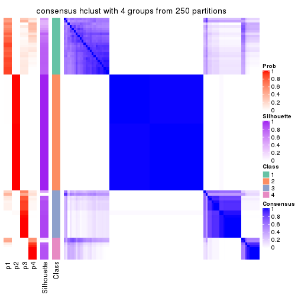
consensus_heatmap(res, k = 5)
consensus_heatmap(res, k = 6)
Heatmaps for the membership of samples in all partitions to see how consistent they are:
membership_heatmap(res, k = 2)
membership_heatmap(res, k = 3)
membership_heatmap(res, k = 4)
membership_heatmap(res, k = 5)
membership_heatmap(res, k = 6)
As soon as we have had the classes for columns, we can look for signatures which are significantly different between classes which can be candidate marks for certain classes. Following are the heatmaps for signatures.
Signature heatmaps where rows are scaled:
get_signatures(res, k = 2)
get_signatures(res, k = 3)
get_signatures(res, k = 4)
get_signatures(res, k = 5)
get_signatures(res, k = 6)
Signature heatmaps where rows are not scaled:
get_signatures(res, k = 2, scale_rows = FALSE)
get_signatures(res, k = 3, scale_rows = FALSE)
get_signatures(res, k = 4, scale_rows = FALSE)
get_signatures(res, k = 5, scale_rows = FALSE)
get_signatures(res, k = 6, scale_rows = FALSE)
Compare the overlap of signatures from different k:
compare_signatures(res)
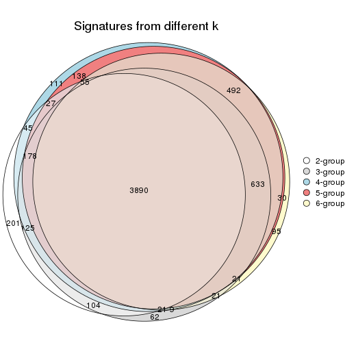
get_signature() returns a data frame invisibly. TO get the list of signatures, the function
call should be assigned to a variable explicitly. In following code, if plot argument is set
to FALSE, no heatmap is plotted while only the differential analysis is performed.
# code only for demonstration
tb = get_signature(res, k = ..., plot = FALSE)
An example of the output of tb is:
#> which_row fdr mean_1 mean_2 scaled_mean_1 scaled_mean_2 km
#> 1 38 0.042760348 8.373488 9.131774 -0.5533452 0.5164555 1
#> 2 40 0.018707592 7.106213 8.469186 -0.6173731 0.5762149 1
#> 3 55 0.019134737 10.221463 11.207825 -0.6159697 0.5749050 1
#> 4 59 0.006059896 5.921854 7.869574 -0.6899429 0.6439467 1
#> 5 60 0.018055526 8.928898 10.211722 -0.6204761 0.5791110 1
#> 6 98 0.009384629 15.714769 14.887706 0.6635654 -0.6193277 2
...
The columns in tb are:
which_row: row indices corresponding to the input matrix.fdr: FDR for the differential test. mean_x: The mean value in group x.scaled_mean_x: The mean value in group x after rows are scaled.km: Row groups if k-means clustering is applied to rows.UMAP plot which shows how samples are separated.
dimension_reduction(res, k = 2, method = "UMAP")
dimension_reduction(res, k = 3, method = "UMAP")
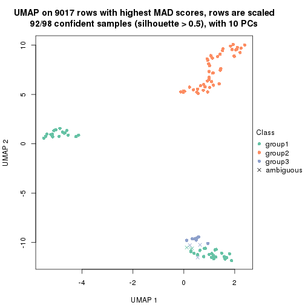
dimension_reduction(res, k = 4, method = "UMAP")
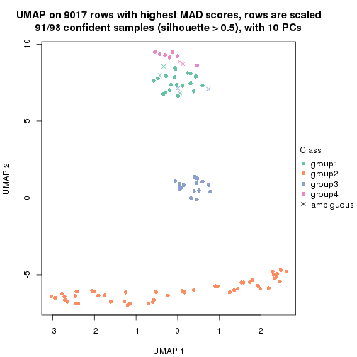
dimension_reduction(res, k = 5, method = "UMAP")
dimension_reduction(res, k = 6, method = "UMAP")
Following heatmap shows how subgroups are split when increasing k:
collect_classes(res)
If matrix rows can be associated to genes, consider to use functional_enrichment(res,
...) to perform function enrichment for the signature genes. See this vignette for more detailed explanations.
The object with results only for a single top-value method and a single partition method can be extracted as:
res = res_list["MAD", "kmeans"]
# you can also extract it by
# res = res_list["MAD:kmeans"]
A summary of res and all the functions that can be applied to it:
res
#> A 'ConsensusPartition' object with k = 2, 3, 4, 5, 6.
#> On a matrix with 9017 rows and 98 columns.
#> Top rows (902, 1804, 2705, 3606, 4508) are extracted by 'MAD' method.
#> Subgroups are detected by 'kmeans' method.
#> Performed in total 1250 partitions by row resampling.
#> Best k for subgroups seems to be 2.
#>
#> Following methods can be applied to this 'ConsensusPartition' object:
#> [1] "cola_report" "collect_classes" "collect_plots"
#> [4] "collect_stats" "colnames" "compare_signatures"
#> [7] "consensus_heatmap" "dimension_reduction" "functional_enrichment"
#> [10] "get_anno_col" "get_anno" "get_classes"
#> [13] "get_consensus" "get_matrix" "get_membership"
#> [16] "get_param" "get_signatures" "get_stats"
#> [19] "is_best_k" "is_stable_k" "membership_heatmap"
#> [22] "ncol" "nrow" "plot_ecdf"
#> [25] "rownames" "select_partition_number" "show"
#> [28] "suggest_best_k" "test_to_known_factors"
collect_plots() function collects all the plots made from res for all k (number of partitions)
into one single page to provide an easy and fast comparison between different k.
collect_plots(res)
The plots are:
k and the heatmap of
predicted classes for each k.k.k.k.All the plots in panels can be made by individual functions and they are plotted later in this section.
select_partition_number() produces several plots showing different
statistics for choosing “optimized” k. There are following statistics:
k;k, the area increased is defined as \(A_k - A_{k-1}\).The detailed explanations of these statistics can be found in the cola vignette.
Generally speaking, lower PAC score, higher mean silhouette score or higher
concordance corresponds to better partition. Rand index and Jaccard index
measure how similar the current partition is compared to partition with k-1.
If they are too similar, we won't accept k is better than k-1.
select_partition_number(res)
The numeric values for all these statistics can be obtained by get_stats().
get_stats(res)
#> k 1-PAC mean_silhouette concordance area_increased Rand Jaccard
#> 2 2 1.000 0.984 0.994 0.5055 0.495 0.495
#> 3 3 0.674 0.764 0.814 0.2377 0.891 0.781
#> 4 4 0.727 0.839 0.833 0.1395 0.833 0.589
#> 5 5 0.725 0.801 0.821 0.0702 0.930 0.738
#> 6 6 0.712 0.727 0.812 0.0463 0.965 0.839
suggest_best_k() suggests the best \(k\) based on these statistics. The rules are as follows:
suggest_best_k(res)
#> [1] 2
Following shows the table of the partitions (You need to click the show/hide
code output link to see it). The membership matrix (columns with name p*)
is inferred by
clue::cl_consensus()
function with the SE method. Basically the value in the membership matrix
represents the probability to belong to a certain group. The finall class
label for an item is determined with the group with highest probability it
belongs to.
In get_classes() function, the entropy is calculated from the membership
matrix and the silhouette score is calculated from the consensus matrix.
cbind(get_classes(res, k = 2), get_membership(res, k = 2))
#> class entropy silhouette p1 p2
#> SRR1810660 1 0.00 0.9990 1.000 0.000
#> SRR1810659 1 0.00 0.9990 1.000 0.000
#> SRR1810658 1 0.00 0.9990 1.000 0.000
#> SRR1810657 1 0.00 0.9990 1.000 0.000
#> SRR1818435 2 0.00 0.9898 0.000 1.000
#> SRR1818434 2 0.00 0.9898 0.000 1.000
#> SRR1810752 2 0.00 0.9898 0.000 1.000
#> SRR1810751 2 0.00 0.9898 0.000 1.000
#> SRR1810749 1 0.00 0.9990 1.000 0.000
#> SRR1810748 1 0.00 0.9990 1.000 0.000
#> SRR1810750 1 0.00 0.9990 1.000 0.000
#> SRR1810747 2 0.00 0.9898 0.000 1.000
#> SRR1810746 1 0.00 0.9990 1.000 0.000
#> SRR1810745 1 0.00 0.9990 1.000 0.000
#> SRR1810744 1 0.00 0.9990 1.000 0.000
#> SRR1810743 1 0.00 0.9990 1.000 0.000
#> SRR1810742 2 0.00 0.9898 0.000 1.000
#> SRR1810741 2 0.00 0.9898 0.000 1.000
#> SRR1810740 1 0.00 0.9990 1.000 0.000
#> SRR1810739 1 0.00 0.9990 1.000 0.000
#> SRR1810738 1 0.00 0.9990 1.000 0.000
#> SRR1810737 2 0.00 0.9898 0.000 1.000
#> SRR1810736 2 0.00 0.9898 0.000 1.000
#> SRR1810734 2 0.00 0.9898 0.000 1.000
#> SRR1810735 2 0.00 0.9898 0.000 1.000
#> SRR1810733 2 0.00 0.9898 0.000 1.000
#> SRR1810732 1 0.00 0.9990 1.000 0.000
#> SRR1810730 2 0.00 0.9898 0.000 1.000
#> SRR1810729 1 0.00 0.9990 1.000 0.000
#> SRR1810731 1 0.00 0.9990 1.000 0.000
#> SRR1810728 2 0.00 0.9898 0.000 1.000
#> SRR1810727 2 0.00 0.9898 0.000 1.000
#> SRR1810726 1 0.26 0.9533 0.956 0.044
#> SRR1810725 2 0.00 0.9898 0.000 1.000
#> SRR1810724 2 0.00 0.9898 0.000 1.000
#> SRR1810723 1 0.00 0.9990 1.000 0.000
#> SRR1810722 1 0.00 0.9990 1.000 0.000
#> SRR1810721 1 0.00 0.9990 1.000 0.000
#> SRR1810720 1 0.00 0.9990 1.000 0.000
#> SRR1810719 2 0.00 0.9898 0.000 1.000
#> SRR1810718 1 0.00 0.9990 1.000 0.000
#> SRR1810717 1 0.00 0.9990 1.000 0.000
#> SRR1810716 2 0.00 0.9898 0.000 1.000
#> SRR1810715 2 0.00 0.9898 0.000 1.000
#> SRR1810713 2 0.00 0.9898 0.000 1.000
#> SRR1810714 1 0.00 0.9990 1.000 0.000
#> SRR1810712 2 0.00 0.9898 0.000 1.000
#> SRR1810710 2 0.00 0.9898 0.000 1.000
#> SRR1810711 2 0.00 0.9898 0.000 1.000
#> SRR1810709 2 0.00 0.9898 0.000 1.000
#> SRR1810708 1 0.00 0.9990 1.000 0.000
#> SRR1810707 1 0.00 0.9990 1.000 0.000
#> SRR1810706 2 0.00 0.9898 0.000 1.000
#> SRR1810704 1 0.00 0.9990 1.000 0.000
#> SRR1810705 1 0.00 0.9990 1.000 0.000
#> SRR1810703 1 0.00 0.9990 1.000 0.000
#> SRR1810702 2 0.00 0.9898 0.000 1.000
#> SRR1810701 1 0.00 0.9990 1.000 0.000
#> SRR1810700 2 0.00 0.9898 0.000 1.000
#> SRR1810699 2 0.00 0.9898 0.000 1.000
#> SRR1810696 2 0.00 0.9898 0.000 1.000
#> SRR1810695 2 0.00 0.9898 0.000 1.000
#> SRR1810698 2 0.00 0.9898 0.000 1.000
#> SRR1810697 2 0.00 0.9898 0.000 1.000
#> SRR1810694 2 0.00 0.9898 0.000 1.000
#> SRR1810693 1 0.00 0.9990 1.000 0.000
#> SRR1810692 2 0.00 0.9898 0.000 1.000
#> SRR1810690 2 0.00 0.9898 0.000 1.000
#> SRR1810691 1 0.00 0.9990 1.000 0.000
#> SRR1810689 2 0.00 0.9898 0.000 1.000
#> SRR1810688 2 0.00 0.9898 0.000 1.000
#> SRR1810687 2 0.00 0.9898 0.000 1.000
#> SRR1810685 1 0.00 0.9990 1.000 0.000
#> SRR1810686 2 0.00 0.9898 0.000 1.000
#> SRR1810684 2 0.00 0.9898 0.000 1.000
#> SRR1810683 2 0.00 0.9898 0.000 1.000
#> SRR1810680 2 0.00 0.9898 0.000 1.000
#> SRR1810679 2 0.00 0.9898 0.000 1.000
#> SRR1810678 2 0.00 0.9898 0.000 1.000
#> SRR1810682 2 0.00 0.9898 0.000 1.000
#> SRR1810681 2 0.00 0.9898 0.000 1.000
#> SRR1810677 2 0.00 0.9898 0.000 1.000
#> SRR1810676 2 0.00 0.9898 0.000 1.000
#> SRR1810675 1 0.00 0.9990 1.000 0.000
#> SRR1810673 1 0.00 0.9990 1.000 0.000
#> SRR1810674 1 0.00 0.9990 1.000 0.000
#> SRR1810671 1 0.00 0.9990 1.000 0.000
#> SRR1810670 1 0.00 0.9990 1.000 0.000
#> SRR1810669 1 0.00 0.9990 1.000 0.000
#> SRR1810667 1 0.00 0.9990 1.000 0.000
#> SRR1810666 1 0.00 0.9990 1.000 0.000
#> SRR1810672 1 0.00 0.9990 1.000 0.000
#> SRR1810668 2 1.00 0.0125 0.496 0.504
#> SRR1810665 1 0.00 0.9990 1.000 0.000
#> SRR1810664 1 0.00 0.9990 1.000 0.000
#> SRR1810663 1 0.00 0.9990 1.000 0.000
#> SRR1810661 1 0.00 0.9990 1.000 0.000
#> SRR1810662 1 0.00 0.9990 1.000 0.000
cbind(get_classes(res, k = 3), get_membership(res, k = 3))
#> class entropy silhouette p1 p2 p3
#> SRR1810660 1 0.3192 0.770 0.888 0.000 0.112
#> SRR1810659 1 0.3192 0.770 0.888 0.000 0.112
#> SRR1810658 1 0.3192 0.770 0.888 0.000 0.112
#> SRR1810657 1 0.3192 0.770 0.888 0.000 0.112
#> SRR1818435 2 0.5254 0.533 0.000 0.736 0.264
#> SRR1818434 2 0.6026 0.618 0.000 0.624 0.376
#> SRR1810752 2 0.0000 0.833 0.000 1.000 0.000
#> SRR1810751 2 0.0000 0.833 0.000 1.000 0.000
#> SRR1810749 1 0.3116 0.696 0.892 0.000 0.108
#> SRR1810748 1 0.3192 0.770 0.888 0.000 0.112
#> SRR1810750 1 0.2261 0.795 0.932 0.000 0.068
#> SRR1810747 2 0.0000 0.833 0.000 1.000 0.000
#> SRR1810746 1 0.0000 0.811 1.000 0.000 0.000
#> SRR1810745 1 0.0000 0.811 1.000 0.000 0.000
#> SRR1810744 1 0.0000 0.811 1.000 0.000 0.000
#> SRR1810743 1 0.0000 0.811 1.000 0.000 0.000
#> SRR1810742 2 0.5988 0.797 0.000 0.632 0.368
#> SRR1810741 2 0.0000 0.833 0.000 1.000 0.000
#> SRR1810740 1 0.3879 0.605 0.848 0.000 0.152
#> SRR1810739 1 0.0000 0.811 1.000 0.000 0.000
#> SRR1810738 1 0.3116 0.696 0.892 0.000 0.108
#> SRR1810737 2 0.5988 0.797 0.000 0.632 0.368
#> SRR1810736 2 0.5988 0.797 0.000 0.632 0.368
#> SRR1810734 2 0.0000 0.833 0.000 1.000 0.000
#> SRR1810735 2 0.5988 0.797 0.000 0.632 0.368
#> SRR1810733 2 0.5988 0.797 0.000 0.632 0.368
#> SRR1810732 1 0.4346 0.522 0.816 0.000 0.184
#> SRR1810730 2 0.5988 0.797 0.000 0.632 0.368
#> SRR1810729 1 0.0592 0.810 0.988 0.000 0.012
#> SRR1810731 1 0.0000 0.811 1.000 0.000 0.000
#> SRR1810728 2 0.5988 0.797 0.000 0.632 0.368
#> SRR1810727 2 0.5988 0.797 0.000 0.632 0.368
#> SRR1810726 3 0.6019 0.439 0.288 0.012 0.700
#> SRR1810725 2 0.5988 0.797 0.000 0.632 0.368
#> SRR1810724 2 0.5988 0.797 0.000 0.632 0.368
#> SRR1810723 1 0.0592 0.803 0.988 0.000 0.012
#> SRR1810722 1 0.0000 0.811 1.000 0.000 0.000
#> SRR1810721 1 0.2959 0.708 0.900 0.000 0.100
#> SRR1810720 1 0.3038 0.702 0.896 0.000 0.104
#> SRR1810719 2 0.0000 0.833 0.000 1.000 0.000
#> SRR1810718 1 0.3192 0.770 0.888 0.000 0.112
#> SRR1810717 1 0.1031 0.808 0.976 0.000 0.024
#> SRR1810716 2 0.5988 0.797 0.000 0.632 0.368
#> SRR1810715 2 0.0000 0.833 0.000 1.000 0.000
#> SRR1810713 2 0.0000 0.833 0.000 1.000 0.000
#> SRR1810714 1 0.3192 0.770 0.888 0.000 0.112
#> SRR1810712 2 0.0000 0.833 0.000 1.000 0.000
#> SRR1810710 2 0.5988 0.797 0.000 0.632 0.368
#> SRR1810711 2 0.0000 0.833 0.000 1.000 0.000
#> SRR1810709 2 0.5988 0.797 0.000 0.632 0.368
#> SRR1810708 1 0.2261 0.795 0.932 0.000 0.068
#> SRR1810707 1 0.4452 0.496 0.808 0.000 0.192
#> SRR1810706 2 0.5988 0.797 0.000 0.632 0.368
#> SRR1810704 1 0.0000 0.811 1.000 0.000 0.000
#> SRR1810705 1 0.2261 0.795 0.932 0.000 0.068
#> SRR1810703 1 0.3192 0.770 0.888 0.000 0.112
#> SRR1810702 2 0.0000 0.833 0.000 1.000 0.000
#> SRR1810701 1 0.3192 0.770 0.888 0.000 0.112
#> SRR1810700 2 0.0000 0.833 0.000 1.000 0.000
#> SRR1810699 2 0.0000 0.833 0.000 1.000 0.000
#> SRR1810696 2 0.5988 0.797 0.000 0.632 0.368
#> SRR1810695 2 0.5948 0.798 0.000 0.640 0.360
#> SRR1810698 2 0.5988 0.797 0.000 0.632 0.368
#> SRR1810697 2 0.5988 0.797 0.000 0.632 0.368
#> SRR1810694 2 0.5988 0.797 0.000 0.632 0.368
#> SRR1810693 1 0.0000 0.811 1.000 0.000 0.000
#> SRR1810692 2 0.1529 0.830 0.000 0.960 0.040
#> SRR1810690 2 0.0000 0.833 0.000 1.000 0.000
#> SRR1810691 1 0.3192 0.689 0.888 0.000 0.112
#> SRR1810689 2 0.0000 0.833 0.000 1.000 0.000
#> SRR1810688 2 0.0000 0.833 0.000 1.000 0.000
#> SRR1810687 2 0.0000 0.833 0.000 1.000 0.000
#> SRR1810685 1 0.3752 0.624 0.856 0.000 0.144
#> SRR1810686 2 0.0000 0.833 0.000 1.000 0.000
#> SRR1810684 2 0.5988 0.797 0.000 0.632 0.368
#> SRR1810683 2 0.0000 0.833 0.000 1.000 0.000
#> SRR1810680 2 0.0000 0.833 0.000 1.000 0.000
#> SRR1810679 2 0.5988 0.797 0.000 0.632 0.368
#> SRR1810678 2 0.0000 0.833 0.000 1.000 0.000
#> SRR1810682 2 0.0000 0.833 0.000 1.000 0.000
#> SRR1810681 2 0.4654 0.815 0.000 0.792 0.208
#> SRR1810677 2 0.0000 0.833 0.000 1.000 0.000
#> SRR1810676 2 0.0000 0.833 0.000 1.000 0.000
#> SRR1810675 3 0.6302 0.904 0.480 0.000 0.520
#> SRR1810673 3 0.6302 0.904 0.480 0.000 0.520
#> SRR1810674 3 0.6302 0.904 0.480 0.000 0.520
#> SRR1810671 3 0.6302 0.904 0.480 0.000 0.520
#> SRR1810670 3 0.6302 0.904 0.480 0.000 0.520
#> SRR1810669 1 0.6079 -0.534 0.612 0.000 0.388
#> SRR1810667 3 0.6302 0.904 0.480 0.000 0.520
#> SRR1810666 3 0.6302 0.904 0.480 0.000 0.520
#> SRR1810672 1 0.6291 -0.790 0.532 0.000 0.468
#> SRR1810668 3 0.8318 0.603 0.284 0.116 0.600
#> SRR1810665 3 0.6302 0.904 0.480 0.000 0.520
#> SRR1810664 3 0.6302 0.904 0.480 0.000 0.520
#> SRR1810663 3 0.6302 0.904 0.480 0.000 0.520
#> SRR1810661 3 0.6302 0.904 0.480 0.000 0.520
#> SRR1810662 3 0.6302 0.904 0.480 0.000 0.520
cbind(get_classes(res, k = 4), get_membership(res, k = 4))
#> class entropy silhouette p1 p2 p3 p4
#> SRR1810660 1 0.4661 0.6618 0.652 0.000 0.000 0.348
#> SRR1810659 1 0.4661 0.6618 0.652 0.000 0.000 0.348
#> SRR1810658 1 0.4661 0.6618 0.652 0.000 0.000 0.348
#> SRR1810657 1 0.4661 0.6618 0.652 0.000 0.000 0.348
#> SRR1818435 3 0.4941 0.2398 0.000 0.436 0.564 0.000
#> SRR1818434 3 0.7441 0.0861 0.000 0.352 0.468 0.180
#> SRR1810752 2 0.0188 0.9619 0.000 0.996 0.004 0.000
#> SRR1810751 2 0.0000 0.9618 0.000 1.000 0.000 0.000
#> SRR1810749 1 0.3105 0.8040 0.856 0.000 0.140 0.004
#> SRR1810748 1 0.4661 0.6618 0.652 0.000 0.000 0.348
#> SRR1810750 1 0.2797 0.8173 0.900 0.000 0.032 0.068
#> SRR1810747 2 0.0188 0.9619 0.000 0.996 0.004 0.000
#> SRR1810746 1 0.1867 0.8356 0.928 0.000 0.072 0.000
#> SRR1810745 1 0.2670 0.8373 0.904 0.000 0.072 0.024
#> SRR1810744 1 0.2871 0.8375 0.896 0.000 0.072 0.032
#> SRR1810743 1 0.2053 0.8351 0.924 0.000 0.072 0.004
#> SRR1810742 4 0.4679 0.9469 0.000 0.352 0.000 0.648
#> SRR1810741 2 0.0336 0.9595 0.000 0.992 0.008 0.000
#> SRR1810740 1 0.3494 0.7777 0.824 0.000 0.172 0.004
#> SRR1810739 1 0.2053 0.8351 0.924 0.000 0.072 0.004
#> SRR1810738 1 0.3208 0.7985 0.848 0.000 0.148 0.004
#> SRR1810737 4 0.4679 0.9469 0.000 0.352 0.000 0.648
#> SRR1810736 4 0.4679 0.9469 0.000 0.352 0.000 0.648
#> SRR1810734 2 0.0188 0.9619 0.000 0.996 0.004 0.000
#> SRR1810735 4 0.4990 0.9469 0.000 0.352 0.008 0.640
#> SRR1810733 4 0.4990 0.9469 0.000 0.352 0.008 0.640
#> SRR1810732 1 0.4290 0.7538 0.772 0.000 0.212 0.016
#> SRR1810730 4 0.4855 0.9470 0.000 0.352 0.004 0.644
#> SRR1810729 1 0.3056 0.8370 0.888 0.000 0.072 0.040
#> SRR1810731 1 0.2053 0.8351 0.924 0.000 0.072 0.004
#> SRR1810728 4 0.4990 0.9469 0.000 0.352 0.008 0.640
#> SRR1810727 4 0.4679 0.9469 0.000 0.352 0.000 0.648
#> SRR1810726 4 0.7627 -0.1618 0.388 0.000 0.204 0.408
#> SRR1810725 4 0.5110 0.9429 0.000 0.352 0.012 0.636
#> SRR1810724 4 0.4855 0.9445 0.000 0.352 0.004 0.644
#> SRR1810723 1 0.2125 0.8342 0.920 0.000 0.076 0.004
#> SRR1810722 1 0.2125 0.8342 0.920 0.000 0.076 0.004
#> SRR1810721 1 0.2999 0.8089 0.864 0.000 0.132 0.004
#> SRR1810720 1 0.3105 0.8040 0.856 0.000 0.140 0.004
#> SRR1810719 2 0.0336 0.9595 0.000 0.992 0.008 0.000
#> SRR1810718 1 0.4661 0.6618 0.652 0.000 0.000 0.348
#> SRR1810717 1 0.2699 0.8374 0.904 0.000 0.068 0.028
#> SRR1810716 4 0.5110 0.9429 0.000 0.352 0.012 0.636
#> SRR1810715 2 0.0188 0.9619 0.000 0.996 0.004 0.000
#> SRR1810713 2 0.0336 0.9595 0.000 0.992 0.008 0.000
#> SRR1810714 1 0.4661 0.6618 0.652 0.000 0.000 0.348
#> SRR1810712 2 0.0188 0.9619 0.000 0.996 0.004 0.000
#> SRR1810710 4 0.4855 0.9470 0.000 0.352 0.004 0.644
#> SRR1810711 2 0.0188 0.9619 0.000 0.996 0.004 0.000
#> SRR1810709 4 0.4990 0.9469 0.000 0.352 0.008 0.640
#> SRR1810708 1 0.1936 0.8282 0.940 0.000 0.032 0.028
#> SRR1810707 1 0.3668 0.7646 0.808 0.000 0.188 0.004
#> SRR1810706 4 0.4679 0.9469 0.000 0.352 0.000 0.648
#> SRR1810704 1 0.2871 0.8374 0.896 0.000 0.072 0.032
#> SRR1810705 1 0.2943 0.8146 0.892 0.000 0.032 0.076
#> SRR1810703 1 0.4522 0.6789 0.680 0.000 0.000 0.320
#> SRR1810702 2 0.0188 0.9619 0.000 0.996 0.004 0.000
#> SRR1810701 1 0.4477 0.6835 0.688 0.000 0.000 0.312
#> SRR1810700 2 0.0000 0.9618 0.000 1.000 0.000 0.000
#> SRR1810699 2 0.0469 0.9601 0.000 0.988 0.012 0.000
#> SRR1810696 4 0.4990 0.9469 0.000 0.352 0.008 0.640
#> SRR1810695 4 0.5143 0.9257 0.000 0.360 0.012 0.628
#> SRR1810698 4 0.4990 0.9469 0.000 0.352 0.008 0.640
#> SRR1810697 4 0.4679 0.9469 0.000 0.352 0.000 0.648
#> SRR1810694 4 0.4990 0.9469 0.000 0.352 0.008 0.640
#> SRR1810693 1 0.2670 0.8374 0.904 0.000 0.072 0.024
#> SRR1810692 2 0.3324 0.7235 0.000 0.852 0.012 0.136
#> SRR1810690 2 0.0657 0.9544 0.000 0.984 0.012 0.004
#> SRR1810691 1 0.3257 0.7953 0.844 0.000 0.152 0.004
#> SRR1810689 2 0.0469 0.9573 0.000 0.988 0.012 0.000
#> SRR1810688 2 0.0188 0.9619 0.000 0.996 0.004 0.000
#> SRR1810687 2 0.0000 0.9618 0.000 1.000 0.000 0.000
#> SRR1810685 1 0.3355 0.7887 0.836 0.000 0.160 0.004
#> SRR1810686 2 0.0000 0.9618 0.000 1.000 0.000 0.000
#> SRR1810684 4 0.4990 0.9469 0.000 0.352 0.008 0.640
#> SRR1810683 2 0.0188 0.9619 0.000 0.996 0.004 0.000
#> SRR1810680 2 0.0469 0.9573 0.000 0.988 0.012 0.000
#> SRR1810679 4 0.4679 0.9469 0.000 0.352 0.000 0.648
#> SRR1810678 2 0.0336 0.9595 0.000 0.992 0.008 0.000
#> SRR1810682 2 0.0188 0.9619 0.000 0.996 0.004 0.000
#> SRR1810681 2 0.4964 -0.2352 0.000 0.616 0.004 0.380
#> SRR1810677 2 0.0469 0.9573 0.000 0.988 0.012 0.000
#> SRR1810676 2 0.0188 0.9619 0.000 0.996 0.004 0.000
#> SRR1810675 3 0.0921 0.9002 0.028 0.000 0.972 0.000
#> SRR1810673 3 0.0921 0.9002 0.028 0.000 0.972 0.000
#> SRR1810674 3 0.0921 0.9002 0.028 0.000 0.972 0.000
#> SRR1810671 3 0.0921 0.9002 0.028 0.000 0.972 0.000
#> SRR1810670 3 0.0921 0.9002 0.028 0.000 0.972 0.000
#> SRR1810669 3 0.4456 0.5589 0.280 0.000 0.716 0.004
#> SRR1810667 3 0.0921 0.9002 0.028 0.000 0.972 0.000
#> SRR1810666 3 0.0921 0.9002 0.028 0.000 0.972 0.000
#> SRR1810672 3 0.3157 0.7854 0.144 0.000 0.852 0.004
#> SRR1810668 3 0.0921 0.9002 0.028 0.000 0.972 0.000
#> SRR1810665 3 0.0921 0.9002 0.028 0.000 0.972 0.000
#> SRR1810664 3 0.0921 0.9002 0.028 0.000 0.972 0.000
#> SRR1810663 3 0.0921 0.9002 0.028 0.000 0.972 0.000
#> SRR1810661 3 0.0921 0.9002 0.028 0.000 0.972 0.000
#> SRR1810662 3 0.0921 0.9002 0.028 0.000 0.972 0.000
cbind(get_classes(res, k = 5), get_membership(res, k = 5))
#> class entropy silhouette p1 p2 p3 p4 p5
#> SRR1810660 5 0.2127 0.758 0.000 0.108 0.000 0.000 0.892
#> SRR1810659 5 0.2179 0.757 0.000 0.112 0.000 0.000 0.888
#> SRR1810658 5 0.2179 0.757 0.000 0.112 0.000 0.000 0.888
#> SRR1810657 5 0.2127 0.758 0.000 0.108 0.000 0.000 0.892
#> SRR1818435 3 0.6749 0.483 0.196 0.160 0.588 0.056 0.000
#> SRR1818434 3 0.7329 0.432 0.196 0.116 0.544 0.144 0.000
#> SRR1810752 2 0.3210 0.903 0.000 0.788 0.000 0.212 0.000
#> SRR1810751 2 0.3751 0.901 0.012 0.772 0.004 0.212 0.000
#> SRR1810749 1 0.5294 0.792 0.652 0.020 0.044 0.000 0.284
#> SRR1810748 5 0.2127 0.758 0.000 0.108 0.000 0.000 0.892
#> SRR1810750 5 0.4877 -0.667 0.456 0.016 0.004 0.000 0.524
#> SRR1810747 2 0.3210 0.903 0.000 0.788 0.000 0.212 0.000
#> SRR1810746 1 0.4858 0.787 0.556 0.008 0.012 0.000 0.424
#> SRR1810745 1 0.4895 0.765 0.528 0.008 0.012 0.000 0.452
#> SRR1810744 1 0.4800 0.737 0.508 0.004 0.012 0.000 0.476
#> SRR1810743 1 0.4745 0.787 0.560 0.004 0.012 0.000 0.424
#> SRR1810742 4 0.0404 0.959 0.012 0.000 0.000 0.988 0.000
#> SRR1810741 2 0.5878 0.865 0.152 0.628 0.008 0.212 0.000
#> SRR1810740 1 0.6169 0.758 0.616 0.056 0.068 0.000 0.260
#> SRR1810739 1 0.4958 0.792 0.552 0.012 0.012 0.000 0.424
#> SRR1810738 1 0.5339 0.791 0.652 0.020 0.048 0.000 0.280
#> SRR1810737 4 0.0000 0.961 0.000 0.000 0.000 1.000 0.000
#> SRR1810736 4 0.0510 0.958 0.016 0.000 0.000 0.984 0.000
#> SRR1810734 2 0.3210 0.903 0.000 0.788 0.000 0.212 0.000
#> SRR1810735 4 0.0609 0.958 0.020 0.000 0.000 0.980 0.000
#> SRR1810733 4 0.0703 0.956 0.024 0.000 0.000 0.976 0.000
#> SRR1810732 1 0.6762 0.711 0.496 0.044 0.104 0.000 0.356
#> SRR1810730 4 0.0404 0.961 0.012 0.000 0.000 0.988 0.000
#> SRR1810729 1 0.5491 0.719 0.476 0.044 0.008 0.000 0.472
#> SRR1810731 1 0.4654 0.805 0.632 0.008 0.012 0.000 0.348
#> SRR1810728 4 0.0290 0.961 0.008 0.000 0.000 0.992 0.000
#> SRR1810727 4 0.0162 0.961 0.004 0.000 0.000 0.996 0.000
#> SRR1810726 1 0.5978 0.398 0.680 0.024 0.060 0.200 0.036
#> SRR1810725 4 0.0963 0.948 0.036 0.000 0.000 0.964 0.000
#> SRR1810724 4 0.0404 0.959 0.012 0.000 0.000 0.988 0.000
#> SRR1810723 1 0.4703 0.807 0.640 0.008 0.016 0.000 0.336
#> SRR1810722 1 0.4862 0.803 0.640 0.020 0.012 0.000 0.328
#> SRR1810721 1 0.5294 0.792 0.652 0.020 0.044 0.000 0.284
#> SRR1810720 1 0.5294 0.792 0.652 0.020 0.044 0.000 0.284
#> SRR1810719 2 0.5319 0.881 0.108 0.676 0.004 0.212 0.000
#> SRR1810718 5 0.2127 0.758 0.000 0.108 0.000 0.000 0.892
#> SRR1810717 1 0.4813 0.735 0.508 0.008 0.008 0.000 0.476
#> SRR1810716 4 0.0963 0.948 0.036 0.000 0.000 0.964 0.000
#> SRR1810715 2 0.3210 0.903 0.000 0.788 0.000 0.212 0.000
#> SRR1810713 2 0.6158 0.844 0.204 0.580 0.004 0.212 0.000
#> SRR1810714 5 0.0771 0.715 0.004 0.020 0.000 0.000 0.976
#> SRR1810712 2 0.3210 0.903 0.000 0.788 0.000 0.212 0.000
#> SRR1810710 4 0.0162 0.962 0.004 0.000 0.000 0.996 0.000
#> SRR1810711 2 0.3210 0.903 0.000 0.788 0.000 0.212 0.000
#> SRR1810709 4 0.0000 0.961 0.000 0.000 0.000 1.000 0.000
#> SRR1810708 1 0.4580 0.758 0.532 0.004 0.004 0.000 0.460
#> SRR1810707 1 0.6314 0.732 0.616 0.056 0.088 0.000 0.240
#> SRR1810706 4 0.0404 0.959 0.012 0.000 0.000 0.988 0.000
#> SRR1810704 1 0.4794 0.753 0.520 0.004 0.012 0.000 0.464
#> SRR1810705 5 0.4572 -0.649 0.452 0.004 0.004 0.000 0.540
#> SRR1810703 5 0.1638 0.635 0.064 0.004 0.000 0.000 0.932
#> SRR1810702 2 0.3210 0.903 0.000 0.788 0.000 0.212 0.000
#> SRR1810701 5 0.2068 0.591 0.092 0.004 0.000 0.000 0.904
#> SRR1810700 2 0.3522 0.902 0.004 0.780 0.004 0.212 0.000
#> SRR1810699 2 0.5928 0.847 0.192 0.596 0.000 0.212 0.000
#> SRR1810696 4 0.0609 0.958 0.020 0.000 0.000 0.980 0.000
#> SRR1810695 4 0.1571 0.919 0.060 0.004 0.000 0.936 0.000
#> SRR1810698 4 0.0609 0.958 0.020 0.000 0.000 0.980 0.000
#> SRR1810697 4 0.0162 0.961 0.004 0.000 0.000 0.996 0.000
#> SRR1810694 4 0.0703 0.956 0.024 0.000 0.000 0.976 0.000
#> SRR1810693 1 0.5580 0.755 0.496 0.044 0.012 0.000 0.448
#> SRR1810692 2 0.6738 0.648 0.272 0.408 0.000 0.320 0.000
#> SRR1810690 2 0.6516 0.802 0.268 0.512 0.004 0.216 0.000
#> SRR1810691 1 0.5382 0.786 0.652 0.020 0.052 0.000 0.276
#> SRR1810689 2 0.6406 0.819 0.248 0.536 0.004 0.212 0.000
#> SRR1810688 2 0.3210 0.903 0.000 0.788 0.000 0.212 0.000
#> SRR1810687 2 0.4419 0.898 0.044 0.740 0.004 0.212 0.000
#> SRR1810685 1 0.5497 0.776 0.652 0.020 0.064 0.000 0.264
#> SRR1810686 2 0.4419 0.898 0.044 0.740 0.004 0.212 0.000
#> SRR1810684 4 0.0404 0.960 0.012 0.000 0.000 0.988 0.000
#> SRR1810683 2 0.3210 0.903 0.000 0.788 0.000 0.212 0.000
#> SRR1810680 2 0.6478 0.807 0.264 0.520 0.004 0.212 0.000
#> SRR1810679 4 0.0290 0.961 0.008 0.000 0.000 0.992 0.000
#> SRR1810678 2 0.6386 0.821 0.244 0.540 0.004 0.212 0.000
#> SRR1810682 2 0.3210 0.903 0.000 0.788 0.000 0.212 0.000
#> SRR1810681 4 0.6003 0.152 0.224 0.192 0.000 0.584 0.000
#> SRR1810677 2 0.6443 0.813 0.256 0.528 0.004 0.212 0.000
#> SRR1810676 2 0.3210 0.903 0.000 0.788 0.000 0.212 0.000
#> SRR1810675 3 0.0579 0.907 0.008 0.000 0.984 0.000 0.008
#> SRR1810673 3 0.0451 0.908 0.004 0.000 0.988 0.000 0.008
#> SRR1810674 3 0.0579 0.907 0.008 0.000 0.984 0.000 0.008
#> SRR1810671 3 0.1059 0.905 0.004 0.020 0.968 0.000 0.008
#> SRR1810670 3 0.1059 0.905 0.004 0.020 0.968 0.000 0.008
#> SRR1810669 3 0.5451 0.586 0.152 0.024 0.704 0.000 0.120
#> SRR1810667 3 0.0451 0.908 0.004 0.000 0.988 0.000 0.008
#> SRR1810666 3 0.1059 0.905 0.004 0.020 0.968 0.000 0.008
#> SRR1810672 3 0.3883 0.788 0.084 0.032 0.832 0.000 0.052
#> SRR1810668 3 0.0693 0.907 0.012 0.000 0.980 0.000 0.008
#> SRR1810665 3 0.1059 0.905 0.004 0.020 0.968 0.000 0.008
#> SRR1810664 3 0.0290 0.908 0.000 0.000 0.992 0.000 0.008
#> SRR1810663 3 0.0290 0.908 0.000 0.000 0.992 0.000 0.008
#> SRR1810661 3 0.0579 0.907 0.000 0.008 0.984 0.000 0.008
#> SRR1810662 3 0.0290 0.908 0.000 0.000 0.992 0.000 0.008
cbind(get_classes(res, k = 6), get_membership(res, k = 6))
#> class entropy silhouette p1 p2 p3 p4 p5 p6
#> SRR1810660 5 0.2178 0.884 0.132 0.000 0.000 0.000 0.868 0.000
#> SRR1810659 5 0.2320 0.883 0.132 0.004 0.000 0.000 0.864 0.000
#> SRR1810658 5 0.2320 0.883 0.132 0.004 0.000 0.000 0.864 0.000
#> SRR1810657 5 0.2178 0.884 0.132 0.000 0.000 0.000 0.868 0.000
#> SRR1818435 3 0.6459 0.310 0.000 0.116 0.540 0.040 0.024 0.280
#> SRR1818434 3 0.6890 0.229 0.000 0.096 0.508 0.092 0.024 0.280
#> SRR1810752 2 0.2219 0.785 0.000 0.864 0.000 0.136 0.000 0.000
#> SRR1810751 2 0.2909 0.762 0.000 0.836 0.000 0.136 0.000 0.028
#> SRR1810749 1 0.3853 0.738 0.680 0.000 0.016 0.000 0.000 0.304
#> SRR1810748 5 0.2178 0.884 0.132 0.000 0.000 0.000 0.868 0.000
#> SRR1810750 1 0.2961 0.631 0.840 0.020 0.000 0.000 0.132 0.008
#> SRR1810747 2 0.2219 0.785 0.000 0.864 0.000 0.136 0.000 0.000
#> SRR1810746 1 0.0984 0.747 0.968 0.012 0.000 0.000 0.008 0.012
#> SRR1810745 1 0.1225 0.740 0.952 0.000 0.000 0.000 0.036 0.012
#> SRR1810744 1 0.1461 0.735 0.940 0.016 0.000 0.000 0.044 0.000
#> SRR1810743 1 0.0603 0.752 0.980 0.004 0.000 0.000 0.000 0.016
#> SRR1810742 4 0.1421 0.926 0.000 0.000 0.000 0.944 0.028 0.028
#> SRR1810741 2 0.5773 -0.228 0.000 0.556 0.000 0.136 0.020 0.288
#> SRR1810740 1 0.5311 0.705 0.608 0.072 0.028 0.000 0.000 0.292
#> SRR1810739 1 0.0909 0.753 0.968 0.012 0.000 0.000 0.000 0.020
#> SRR1810738 1 0.4022 0.743 0.688 0.008 0.016 0.000 0.000 0.288
#> SRR1810737 4 0.0405 0.938 0.000 0.000 0.000 0.988 0.008 0.004
#> SRR1810736 4 0.1421 0.926 0.000 0.000 0.000 0.944 0.028 0.028
#> SRR1810734 2 0.2219 0.785 0.000 0.864 0.000 0.136 0.000 0.000
#> SRR1810735 4 0.0909 0.933 0.000 0.000 0.000 0.968 0.012 0.020
#> SRR1810733 4 0.1749 0.915 0.000 0.000 0.008 0.932 0.024 0.036
#> SRR1810732 1 0.5783 0.653 0.684 0.076 0.080 0.000 0.036 0.124
#> SRR1810730 4 0.1194 0.929 0.000 0.000 0.008 0.956 0.004 0.032
#> SRR1810729 1 0.4642 0.627 0.752 0.076 0.000 0.000 0.092 0.080
#> SRR1810731 1 0.2778 0.765 0.824 0.008 0.000 0.000 0.000 0.168
#> SRR1810728 4 0.0260 0.938 0.000 0.000 0.000 0.992 0.008 0.000
#> SRR1810727 4 0.0820 0.935 0.000 0.000 0.000 0.972 0.016 0.012
#> SRR1810726 1 0.6098 0.624 0.552 0.004 0.020 0.072 0.032 0.320
#> SRR1810725 4 0.1934 0.915 0.000 0.000 0.000 0.916 0.040 0.044
#> SRR1810724 4 0.1168 0.930 0.000 0.000 0.000 0.956 0.016 0.028
#> SRR1810723 1 0.2854 0.763 0.792 0.000 0.000 0.000 0.000 0.208
#> SRR1810722 1 0.3816 0.756 0.728 0.032 0.000 0.000 0.000 0.240
#> SRR1810721 1 0.3816 0.740 0.688 0.000 0.016 0.000 0.000 0.296
#> SRR1810720 1 0.3835 0.739 0.684 0.000 0.016 0.000 0.000 0.300
#> SRR1810719 2 0.5043 0.348 0.000 0.660 0.000 0.136 0.008 0.196
#> SRR1810718 5 0.2178 0.884 0.132 0.000 0.000 0.000 0.868 0.000
#> SRR1810717 1 0.1367 0.738 0.944 0.000 0.000 0.000 0.044 0.012
#> SRR1810716 4 0.1934 0.915 0.000 0.000 0.000 0.916 0.040 0.044
#> SRR1810715 2 0.2219 0.785 0.000 0.864 0.000 0.136 0.000 0.000
#> SRR1810713 2 0.5796 -0.517 0.000 0.500 0.000 0.136 0.012 0.352
#> SRR1810714 5 0.3489 0.788 0.288 0.004 0.000 0.000 0.708 0.000
#> SRR1810712 2 0.2219 0.785 0.000 0.864 0.000 0.136 0.000 0.000
#> SRR1810710 4 0.0291 0.938 0.000 0.000 0.000 0.992 0.004 0.004
#> SRR1810711 2 0.2219 0.785 0.000 0.864 0.000 0.136 0.000 0.000
#> SRR1810709 4 0.0508 0.937 0.000 0.000 0.000 0.984 0.004 0.012
#> SRR1810708 1 0.1888 0.706 0.916 0.004 0.000 0.000 0.068 0.012
#> SRR1810707 1 0.5617 0.683 0.572 0.056 0.056 0.000 0.000 0.316
#> SRR1810706 4 0.1088 0.931 0.000 0.000 0.000 0.960 0.016 0.024
#> SRR1810704 1 0.1462 0.728 0.936 0.000 0.000 0.000 0.056 0.008
#> SRR1810705 1 0.2454 0.602 0.840 0.000 0.000 0.000 0.160 0.000
#> SRR1810703 5 0.3944 0.629 0.428 0.004 0.000 0.000 0.568 0.000
#> SRR1810702 2 0.2219 0.785 0.000 0.864 0.000 0.136 0.000 0.000
#> SRR1810701 5 0.3989 0.554 0.468 0.004 0.000 0.000 0.528 0.000
#> SRR1810700 2 0.2714 0.775 0.000 0.848 0.000 0.136 0.004 0.012
#> SRR1810699 2 0.6124 -0.589 0.000 0.492 0.000 0.136 0.032 0.340
#> SRR1810696 4 0.0909 0.933 0.000 0.000 0.000 0.968 0.012 0.020
#> SRR1810695 4 0.2501 0.878 0.000 0.012 0.000 0.888 0.028 0.072
#> SRR1810698 4 0.0909 0.933 0.000 0.000 0.000 0.968 0.012 0.020
#> SRR1810697 4 0.0820 0.935 0.000 0.000 0.000 0.972 0.016 0.012
#> SRR1810694 4 0.0909 0.933 0.000 0.000 0.000 0.968 0.012 0.020
#> SRR1810693 1 0.4327 0.667 0.776 0.076 0.000 0.000 0.060 0.088
#> SRR1810692 6 0.6352 0.588 0.000 0.264 0.000 0.260 0.020 0.456
#> SRR1810690 6 0.6194 0.819 0.000 0.392 0.000 0.136 0.032 0.440
#> SRR1810691 1 0.3871 0.736 0.676 0.000 0.016 0.000 0.000 0.308
#> SRR1810689 6 0.5680 0.818 0.000 0.404 0.000 0.136 0.004 0.456
#> SRR1810688 2 0.2219 0.785 0.000 0.864 0.000 0.136 0.000 0.000
#> SRR1810687 2 0.4195 0.650 0.000 0.756 0.000 0.136 0.008 0.100
#> SRR1810685 1 0.4045 0.732 0.664 0.000 0.024 0.000 0.000 0.312
#> SRR1810686 2 0.4195 0.650 0.000 0.756 0.000 0.136 0.008 0.100
#> SRR1810684 4 0.0725 0.936 0.000 0.000 0.000 0.976 0.012 0.012
#> SRR1810683 2 0.2219 0.785 0.000 0.864 0.000 0.136 0.000 0.000
#> SRR1810680 6 0.6196 0.818 0.000 0.396 0.000 0.136 0.032 0.436
#> SRR1810679 4 0.0363 0.939 0.000 0.000 0.000 0.988 0.000 0.012
#> SRR1810678 2 0.5784 -0.787 0.000 0.428 0.000 0.136 0.008 0.428
#> SRR1810682 2 0.2219 0.785 0.000 0.864 0.000 0.136 0.000 0.000
#> SRR1810681 4 0.6116 -0.147 0.000 0.128 0.000 0.500 0.036 0.336
#> SRR1810677 6 0.5677 0.823 0.000 0.400 0.000 0.136 0.004 0.460
#> SRR1810676 2 0.2473 0.780 0.000 0.856 0.000 0.136 0.000 0.008
#> SRR1810675 3 0.0696 0.881 0.008 0.004 0.980 0.000 0.004 0.004
#> SRR1810673 3 0.0665 0.881 0.008 0.000 0.980 0.000 0.004 0.008
#> SRR1810674 3 0.0551 0.882 0.008 0.000 0.984 0.000 0.004 0.004
#> SRR1810671 3 0.1914 0.870 0.008 0.016 0.920 0.000 0.000 0.056
#> SRR1810670 3 0.1914 0.870 0.008 0.016 0.920 0.000 0.000 0.056
#> SRR1810669 3 0.5018 0.598 0.260 0.020 0.648 0.000 0.000 0.072
#> SRR1810667 3 0.0665 0.881 0.008 0.000 0.980 0.000 0.004 0.008
#> SRR1810666 3 0.1914 0.870 0.008 0.016 0.920 0.000 0.000 0.056
#> SRR1810672 3 0.4482 0.723 0.152 0.016 0.736 0.000 0.000 0.096
#> SRR1810668 3 0.0696 0.881 0.008 0.004 0.980 0.000 0.004 0.004
#> SRR1810665 3 0.1850 0.871 0.008 0.016 0.924 0.000 0.000 0.052
#> SRR1810664 3 0.0260 0.882 0.008 0.000 0.992 0.000 0.000 0.000
#> SRR1810663 3 0.0405 0.882 0.008 0.000 0.988 0.000 0.000 0.004
#> SRR1810661 3 0.1230 0.878 0.008 0.008 0.956 0.000 0.000 0.028
#> SRR1810662 3 0.0520 0.882 0.008 0.000 0.984 0.000 0.000 0.008
Heatmaps for the consensus matrix. It visualizes the probability of two samples to be in a same group.
consensus_heatmap(res, k = 2)
consensus_heatmap(res, k = 3)
consensus_heatmap(res, k = 4)

consensus_heatmap(res, k = 5)
consensus_heatmap(res, k = 6)
Heatmaps for the membership of samples in all partitions to see how consistent they are:
membership_heatmap(res, k = 2)
membership_heatmap(res, k = 3)
membership_heatmap(res, k = 4)
membership_heatmap(res, k = 5)
membership_heatmap(res, k = 6)
As soon as we have had the classes for columns, we can look for signatures which are significantly different between classes which can be candidate marks for certain classes. Following are the heatmaps for signatures.
Signature heatmaps where rows are scaled:
get_signatures(res, k = 2)
get_signatures(res, k = 3)
get_signatures(res, k = 4)
get_signatures(res, k = 5)
get_signatures(res, k = 6)
Signature heatmaps where rows are not scaled:
get_signatures(res, k = 2, scale_rows = FALSE)
get_signatures(res, k = 3, scale_rows = FALSE)
get_signatures(res, k = 4, scale_rows = FALSE)
get_signatures(res, k = 5, scale_rows = FALSE)
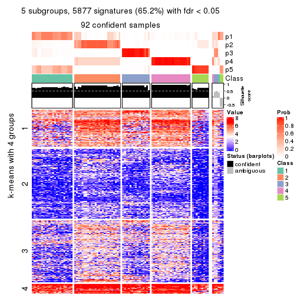
get_signatures(res, k = 6, scale_rows = FALSE)
Compare the overlap of signatures from different k:
compare_signatures(res)
get_signature() returns a data frame invisibly. TO get the list of signatures, the function
call should be assigned to a variable explicitly. In following code, if plot argument is set
to FALSE, no heatmap is plotted while only the differential analysis is performed.
# code only for demonstration
tb = get_signature(res, k = ..., plot = FALSE)
An example of the output of tb is:
#> which_row fdr mean_1 mean_2 scaled_mean_1 scaled_mean_2 km
#> 1 38 0.042760348 8.373488 9.131774 -0.5533452 0.5164555 1
#> 2 40 0.018707592 7.106213 8.469186 -0.6173731 0.5762149 1
#> 3 55 0.019134737 10.221463 11.207825 -0.6159697 0.5749050 1
#> 4 59 0.006059896 5.921854 7.869574 -0.6899429 0.6439467 1
#> 5 60 0.018055526 8.928898 10.211722 -0.6204761 0.5791110 1
#> 6 98 0.009384629 15.714769 14.887706 0.6635654 -0.6193277 2
...
The columns in tb are:
which_row: row indices corresponding to the input matrix.fdr: FDR for the differential test. mean_x: The mean value in group x.scaled_mean_x: The mean value in group x after rows are scaled.km: Row groups if k-means clustering is applied to rows.UMAP plot which shows how samples are separated.
dimension_reduction(res, k = 2, method = "UMAP")
dimension_reduction(res, k = 3, method = "UMAP")
dimension_reduction(res, k = 4, method = "UMAP")
dimension_reduction(res, k = 5, method = "UMAP")
dimension_reduction(res, k = 6, method = "UMAP")
Following heatmap shows how subgroups are split when increasing k:
collect_classes(res)
If matrix rows can be associated to genes, consider to use functional_enrichment(res,
...) to perform function enrichment for the signature genes. See this vignette for more detailed explanations.
The object with results only for a single top-value method and a single partition method can be extracted as:
res = res_list["MAD", "skmeans"]
# you can also extract it by
# res = res_list["MAD:skmeans"]
A summary of res and all the functions that can be applied to it:
res
#> A 'ConsensusPartition' object with k = 2, 3, 4, 5, 6.
#> On a matrix with 9017 rows and 98 columns.
#> Top rows (902, 1804, 2705, 3606, 4508) are extracted by 'MAD' method.
#> Subgroups are detected by 'skmeans' method.
#> Performed in total 1250 partitions by row resampling.
#> Best k for subgroups seems to be 4.
#>
#> Following methods can be applied to this 'ConsensusPartition' object:
#> [1] "cola_report" "collect_classes" "collect_plots"
#> [4] "collect_stats" "colnames" "compare_signatures"
#> [7] "consensus_heatmap" "dimension_reduction" "functional_enrichment"
#> [10] "get_anno_col" "get_anno" "get_classes"
#> [13] "get_consensus" "get_matrix" "get_membership"
#> [16] "get_param" "get_signatures" "get_stats"
#> [19] "is_best_k" "is_stable_k" "membership_heatmap"
#> [22] "ncol" "nrow" "plot_ecdf"
#> [25] "rownames" "select_partition_number" "show"
#> [28] "suggest_best_k" "test_to_known_factors"
collect_plots() function collects all the plots made from res for all k (number of partitions)
into one single page to provide an easy and fast comparison between different k.
collect_plots(res)
The plots are:
k and the heatmap of
predicted classes for each k.k.k.k.All the plots in panels can be made by individual functions and they are plotted later in this section.
select_partition_number() produces several plots showing different
statistics for choosing “optimized” k. There are following statistics:
k;k, the area increased is defined as \(A_k - A_{k-1}\).The detailed explanations of these statistics can be found in the cola vignette.
Generally speaking, lower PAC score, higher mean silhouette score or higher
concordance corresponds to better partition. Rand index and Jaccard index
measure how similar the current partition is compared to partition with k-1.
If they are too similar, we won't accept k is better than k-1.
select_partition_number(res)
The numeric values for all these statistics can be obtained by get_stats().
get_stats(res)
#> k 1-PAC mean_silhouette concordance area_increased Rand Jaccard
#> 2 2 1.000 0.993 0.997 0.5056 0.495 0.495
#> 3 3 0.771 0.914 0.908 0.2334 0.871 0.743
#> 4 4 0.951 0.920 0.947 0.1673 0.856 0.634
#> 5 5 0.880 0.856 0.915 0.0466 0.984 0.941
#> 6 6 0.812 0.769 0.876 0.0304 0.986 0.943
suggest_best_k() suggests the best \(k\) based on these statistics. The rules are as follows:
suggest_best_k(res)
#> [1] 4
#> attr(,"optional")
#> [1] 2
There is also optional best \(k\) = 2 that is worth to check.
Following shows the table of the partitions (You need to click the show/hide
code output link to see it). The membership matrix (columns with name p*)
is inferred by
clue::cl_consensus()
function with the SE method. Basically the value in the membership matrix
represents the probability to belong to a certain group. The finall class
label for an item is determined with the group with highest probability it
belongs to.
In get_classes() function, the entropy is calculated from the membership
matrix and the silhouette score is calculated from the consensus matrix.
cbind(get_classes(res, k = 2), get_membership(res, k = 2))
#> class entropy silhouette p1 p2
#> SRR1810660 1 0.000 0.994 1.000 0.000
#> SRR1810659 1 0.000 0.994 1.000 0.000
#> SRR1810658 1 0.000 0.994 1.000 0.000
#> SRR1810657 1 0.000 0.994 1.000 0.000
#> SRR1818435 2 0.000 1.000 0.000 1.000
#> SRR1818434 2 0.000 1.000 0.000 1.000
#> SRR1810752 2 0.000 1.000 0.000 1.000
#> SRR1810751 2 0.000 1.000 0.000 1.000
#> SRR1810749 1 0.000 0.994 1.000 0.000
#> SRR1810748 1 0.000 0.994 1.000 0.000
#> SRR1810750 1 0.000 0.994 1.000 0.000
#> SRR1810747 2 0.000 1.000 0.000 1.000
#> SRR1810746 1 0.000 0.994 1.000 0.000
#> SRR1810745 1 0.000 0.994 1.000 0.000
#> SRR1810744 1 0.000 0.994 1.000 0.000
#> SRR1810743 1 0.000 0.994 1.000 0.000
#> SRR1810742 2 0.000 1.000 0.000 1.000
#> SRR1810741 2 0.000 1.000 0.000 1.000
#> SRR1810740 1 0.000 0.994 1.000 0.000
#> SRR1810739 1 0.000 0.994 1.000 0.000
#> SRR1810738 1 0.000 0.994 1.000 0.000
#> SRR1810737 2 0.000 1.000 0.000 1.000
#> SRR1810736 2 0.000 1.000 0.000 1.000
#> SRR1810734 2 0.000 1.000 0.000 1.000
#> SRR1810735 2 0.000 1.000 0.000 1.000
#> SRR1810733 2 0.000 1.000 0.000 1.000
#> SRR1810732 1 0.000 0.994 1.000 0.000
#> SRR1810730 2 0.000 1.000 0.000 1.000
#> SRR1810729 1 0.000 0.994 1.000 0.000
#> SRR1810731 1 0.000 0.994 1.000 0.000
#> SRR1810728 2 0.000 1.000 0.000 1.000
#> SRR1810727 2 0.000 1.000 0.000 1.000
#> SRR1810726 1 0.000 0.994 1.000 0.000
#> SRR1810725 2 0.000 1.000 0.000 1.000
#> SRR1810724 2 0.000 1.000 0.000 1.000
#> SRR1810723 1 0.000 0.994 1.000 0.000
#> SRR1810722 1 0.000 0.994 1.000 0.000
#> SRR1810721 1 0.000 0.994 1.000 0.000
#> SRR1810720 1 0.000 0.994 1.000 0.000
#> SRR1810719 2 0.000 1.000 0.000 1.000
#> SRR1810718 1 0.000 0.994 1.000 0.000
#> SRR1810717 1 0.000 0.994 1.000 0.000
#> SRR1810716 2 0.000 1.000 0.000 1.000
#> SRR1810715 2 0.000 1.000 0.000 1.000
#> SRR1810713 2 0.000 1.000 0.000 1.000
#> SRR1810714 1 0.000 0.994 1.000 0.000
#> SRR1810712 2 0.000 1.000 0.000 1.000
#> SRR1810710 2 0.000 1.000 0.000 1.000
#> SRR1810711 2 0.000 1.000 0.000 1.000
#> SRR1810709 2 0.000 1.000 0.000 1.000
#> SRR1810708 1 0.000 0.994 1.000 0.000
#> SRR1810707 1 0.000 0.994 1.000 0.000
#> SRR1810706 2 0.000 1.000 0.000 1.000
#> SRR1810704 1 0.000 0.994 1.000 0.000
#> SRR1810705 1 0.000 0.994 1.000 0.000
#> SRR1810703 1 0.000 0.994 1.000 0.000
#> SRR1810702 2 0.000 1.000 0.000 1.000
#> SRR1810701 1 0.000 0.994 1.000 0.000
#> SRR1810700 2 0.000 1.000 0.000 1.000
#> SRR1810699 2 0.000 1.000 0.000 1.000
#> SRR1810696 2 0.000 1.000 0.000 1.000
#> SRR1810695 2 0.000 1.000 0.000 1.000
#> SRR1810698 2 0.000 1.000 0.000 1.000
#> SRR1810697 2 0.000 1.000 0.000 1.000
#> SRR1810694 2 0.000 1.000 0.000 1.000
#> SRR1810693 1 0.000 0.994 1.000 0.000
#> SRR1810692 2 0.000 1.000 0.000 1.000
#> SRR1810690 2 0.000 1.000 0.000 1.000
#> SRR1810691 1 0.000 0.994 1.000 0.000
#> SRR1810689 2 0.000 1.000 0.000 1.000
#> SRR1810688 2 0.000 1.000 0.000 1.000
#> SRR1810687 2 0.000 1.000 0.000 1.000
#> SRR1810685 1 0.000 0.994 1.000 0.000
#> SRR1810686 2 0.000 1.000 0.000 1.000
#> SRR1810684 2 0.000 1.000 0.000 1.000
#> SRR1810683 2 0.000 1.000 0.000 1.000
#> SRR1810680 2 0.000 1.000 0.000 1.000
#> SRR1810679 2 0.000 1.000 0.000 1.000
#> SRR1810678 2 0.000 1.000 0.000 1.000
#> SRR1810682 2 0.000 1.000 0.000 1.000
#> SRR1810681 2 0.000 1.000 0.000 1.000
#> SRR1810677 2 0.000 1.000 0.000 1.000
#> SRR1810676 2 0.000 1.000 0.000 1.000
#> SRR1810675 1 0.000 0.994 1.000 0.000
#> SRR1810673 1 0.000 0.994 1.000 0.000
#> SRR1810674 1 0.000 0.994 1.000 0.000
#> SRR1810671 1 0.000 0.994 1.000 0.000
#> SRR1810670 1 0.000 0.994 1.000 0.000
#> SRR1810669 1 0.000 0.994 1.000 0.000
#> SRR1810667 1 0.000 0.994 1.000 0.000
#> SRR1810666 1 0.000 0.994 1.000 0.000
#> SRR1810672 1 0.000 0.994 1.000 0.000
#> SRR1810668 1 0.866 0.596 0.712 0.288
#> SRR1810665 1 0.000 0.994 1.000 0.000
#> SRR1810664 1 0.000 0.994 1.000 0.000
#> SRR1810663 1 0.000 0.994 1.000 0.000
#> SRR1810661 1 0.000 0.994 1.000 0.000
#> SRR1810662 1 0.000 0.994 1.000 0.000
cbind(get_classes(res, k = 3), get_membership(res, k = 3))
#> class entropy silhouette p1 p2 p3
#> SRR1810660 1 0.000 0.987 1.000 0.000 0.000
#> SRR1810659 1 0.000 0.987 1.000 0.000 0.000
#> SRR1810658 1 0.000 0.987 1.000 0.000 0.000
#> SRR1810657 1 0.000 0.987 1.000 0.000 0.000
#> SRR1818435 3 0.553 0.608 0.000 0.296 0.704
#> SRR1818434 3 0.619 0.375 0.000 0.420 0.580
#> SRR1810752 2 0.000 0.897 0.000 1.000 0.000
#> SRR1810751 2 0.000 0.897 0.000 1.000 0.000
#> SRR1810749 1 0.000 0.987 1.000 0.000 0.000
#> SRR1810748 1 0.000 0.987 1.000 0.000 0.000
#> SRR1810750 1 0.000 0.987 1.000 0.000 0.000
#> SRR1810747 2 0.000 0.897 0.000 1.000 0.000
#> SRR1810746 1 0.000 0.987 1.000 0.000 0.000
#> SRR1810745 1 0.000 0.987 1.000 0.000 0.000
#> SRR1810744 1 0.000 0.987 1.000 0.000 0.000
#> SRR1810743 1 0.000 0.987 1.000 0.000 0.000
#> SRR1810742 2 0.480 0.880 0.000 0.780 0.220
#> SRR1810741 2 0.000 0.897 0.000 1.000 0.000
#> SRR1810740 1 0.000 0.987 1.000 0.000 0.000
#> SRR1810739 1 0.000 0.987 1.000 0.000 0.000
#> SRR1810738 1 0.000 0.987 1.000 0.000 0.000
#> SRR1810737 2 0.480 0.880 0.000 0.780 0.220
#> SRR1810736 2 0.480 0.880 0.000 0.780 0.220
#> SRR1810734 2 0.000 0.897 0.000 1.000 0.000
#> SRR1810735 2 0.480 0.880 0.000 0.780 0.220
#> SRR1810733 2 0.480 0.880 0.000 0.780 0.220
#> SRR1810732 1 0.000 0.987 1.000 0.000 0.000
#> SRR1810730 2 0.480 0.880 0.000 0.780 0.220
#> SRR1810729 1 0.000 0.987 1.000 0.000 0.000
#> SRR1810731 1 0.000 0.987 1.000 0.000 0.000
#> SRR1810728 2 0.480 0.880 0.000 0.780 0.220
#> SRR1810727 2 0.480 0.880 0.000 0.780 0.220
#> SRR1810726 1 0.304 0.840 0.896 0.000 0.104
#> SRR1810725 2 0.480 0.880 0.000 0.780 0.220
#> SRR1810724 2 0.480 0.880 0.000 0.780 0.220
#> SRR1810723 1 0.000 0.987 1.000 0.000 0.000
#> SRR1810722 1 0.000 0.987 1.000 0.000 0.000
#> SRR1810721 1 0.000 0.987 1.000 0.000 0.000
#> SRR1810720 1 0.000 0.987 1.000 0.000 0.000
#> SRR1810719 2 0.000 0.897 0.000 1.000 0.000
#> SRR1810718 1 0.000 0.987 1.000 0.000 0.000
#> SRR1810717 1 0.000 0.987 1.000 0.000 0.000
#> SRR1810716 2 0.480 0.880 0.000 0.780 0.220
#> SRR1810715 2 0.000 0.897 0.000 1.000 0.000
#> SRR1810713 2 0.000 0.897 0.000 1.000 0.000
#> SRR1810714 1 0.000 0.987 1.000 0.000 0.000
#> SRR1810712 2 0.000 0.897 0.000 1.000 0.000
#> SRR1810710 2 0.480 0.880 0.000 0.780 0.220
#> SRR1810711 2 0.000 0.897 0.000 1.000 0.000
#> SRR1810709 2 0.480 0.880 0.000 0.780 0.220
#> SRR1810708 1 0.000 0.987 1.000 0.000 0.000
#> SRR1810707 1 0.000 0.987 1.000 0.000 0.000
#> SRR1810706 2 0.480 0.880 0.000 0.780 0.220
#> SRR1810704 1 0.000 0.987 1.000 0.000 0.000
#> SRR1810705 1 0.000 0.987 1.000 0.000 0.000
#> SRR1810703 1 0.000 0.987 1.000 0.000 0.000
#> SRR1810702 2 0.000 0.897 0.000 1.000 0.000
#> SRR1810701 1 0.000 0.987 1.000 0.000 0.000
#> SRR1810700 2 0.000 0.897 0.000 1.000 0.000
#> SRR1810699 2 0.000 0.897 0.000 1.000 0.000
#> SRR1810696 2 0.480 0.880 0.000 0.780 0.220
#> SRR1810695 2 0.435 0.884 0.000 0.816 0.184
#> SRR1810698 2 0.480 0.880 0.000 0.780 0.220
#> SRR1810697 2 0.480 0.880 0.000 0.780 0.220
#> SRR1810694 2 0.480 0.880 0.000 0.780 0.220
#> SRR1810693 1 0.000 0.987 1.000 0.000 0.000
#> SRR1810692 2 0.000 0.897 0.000 1.000 0.000
#> SRR1810690 2 0.000 0.897 0.000 1.000 0.000
#> SRR1810691 1 0.000 0.987 1.000 0.000 0.000
#> SRR1810689 2 0.000 0.897 0.000 1.000 0.000
#> SRR1810688 2 0.000 0.897 0.000 1.000 0.000
#> SRR1810687 2 0.000 0.897 0.000 1.000 0.000
#> SRR1810685 1 0.000 0.987 1.000 0.000 0.000
#> SRR1810686 2 0.000 0.897 0.000 1.000 0.000
#> SRR1810684 2 0.480 0.880 0.000 0.780 0.220
#> SRR1810683 2 0.000 0.897 0.000 1.000 0.000
#> SRR1810680 2 0.000 0.897 0.000 1.000 0.000
#> SRR1810679 2 0.480 0.880 0.000 0.780 0.220
#> SRR1810678 2 0.000 0.897 0.000 1.000 0.000
#> SRR1810682 2 0.000 0.897 0.000 1.000 0.000
#> SRR1810681 2 0.455 0.883 0.000 0.800 0.200
#> SRR1810677 2 0.000 0.897 0.000 1.000 0.000
#> SRR1810676 2 0.000 0.897 0.000 1.000 0.000
#> SRR1810675 3 0.480 0.923 0.220 0.000 0.780
#> SRR1810673 3 0.480 0.923 0.220 0.000 0.780
#> SRR1810674 3 0.480 0.923 0.220 0.000 0.780
#> SRR1810671 3 0.484 0.919 0.224 0.000 0.776
#> SRR1810670 3 0.480 0.923 0.220 0.000 0.780
#> SRR1810669 1 0.489 0.597 0.772 0.000 0.228
#> SRR1810667 3 0.480 0.923 0.220 0.000 0.780
#> SRR1810666 3 0.480 0.923 0.220 0.000 0.780
#> SRR1810672 3 0.546 0.837 0.288 0.000 0.712
#> SRR1810668 3 0.580 0.880 0.176 0.044 0.780
#> SRR1810665 3 0.480 0.923 0.220 0.000 0.780
#> SRR1810664 3 0.480 0.923 0.220 0.000 0.780
#> SRR1810663 3 0.480 0.923 0.220 0.000 0.780
#> SRR1810661 3 0.480 0.923 0.220 0.000 0.780
#> SRR1810662 3 0.480 0.923 0.220 0.000 0.780
cbind(get_classes(res, k = 4), get_membership(res, k = 4))
#> class entropy silhouette p1 p2 p3 p4
#> SRR1810660 1 0.0000 0.98351 1.000 0.000 0.000 0.000
#> SRR1810659 1 0.0000 0.98351 1.000 0.000 0.000 0.000
#> SRR1810658 1 0.0000 0.98351 1.000 0.000 0.000 0.000
#> SRR1810657 1 0.0000 0.98351 1.000 0.000 0.000 0.000
#> SRR1818435 2 0.5933 0.06226 0.000 0.500 0.464 0.036
#> SRR1818434 2 0.6506 0.00068 0.000 0.468 0.460 0.072
#> SRR1810752 2 0.0000 0.95386 0.000 1.000 0.000 0.000
#> SRR1810751 2 0.0000 0.95386 0.000 1.000 0.000 0.000
#> SRR1810749 1 0.1022 0.97073 0.968 0.000 0.000 0.032
#> SRR1810748 1 0.0000 0.98351 1.000 0.000 0.000 0.000
#> SRR1810750 1 0.0188 0.98259 0.996 0.000 0.000 0.004
#> SRR1810747 2 0.0000 0.95386 0.000 1.000 0.000 0.000
#> SRR1810746 1 0.0000 0.98351 1.000 0.000 0.000 0.000
#> SRR1810745 1 0.0336 0.98175 0.992 0.000 0.000 0.008
#> SRR1810744 1 0.0000 0.98351 1.000 0.000 0.000 0.000
#> SRR1810743 1 0.0000 0.98351 1.000 0.000 0.000 0.000
#> SRR1810742 4 0.2281 0.95073 0.000 0.096 0.000 0.904
#> SRR1810741 2 0.0000 0.95386 0.000 1.000 0.000 0.000
#> SRR1810740 1 0.0524 0.98031 0.988 0.000 0.004 0.008
#> SRR1810739 1 0.0000 0.98351 1.000 0.000 0.000 0.000
#> SRR1810738 1 0.0469 0.98056 0.988 0.000 0.000 0.012
#> SRR1810737 4 0.2281 0.95073 0.000 0.096 0.000 0.904
#> SRR1810736 4 0.2281 0.95073 0.000 0.096 0.000 0.904
#> SRR1810734 2 0.0000 0.95386 0.000 1.000 0.000 0.000
#> SRR1810735 4 0.2281 0.95073 0.000 0.096 0.000 0.904
#> SRR1810733 4 0.2281 0.95073 0.000 0.096 0.000 0.904
#> SRR1810732 1 0.0188 0.98259 0.996 0.000 0.000 0.004
#> SRR1810730 4 0.2281 0.95073 0.000 0.096 0.000 0.904
#> SRR1810729 1 0.0000 0.98351 1.000 0.000 0.000 0.000
#> SRR1810731 1 0.0469 0.98045 0.988 0.000 0.000 0.012
#> SRR1810728 4 0.2281 0.95073 0.000 0.096 0.000 0.904
#> SRR1810727 4 0.2281 0.95073 0.000 0.096 0.000 0.904
#> SRR1810726 4 0.4817 0.22516 0.388 0.000 0.000 0.612
#> SRR1810725 4 0.2281 0.95073 0.000 0.096 0.000 0.904
#> SRR1810724 4 0.2469 0.94038 0.000 0.108 0.000 0.892
#> SRR1810723 1 0.0592 0.97909 0.984 0.000 0.000 0.016
#> SRR1810722 1 0.0336 0.98166 0.992 0.000 0.000 0.008
#> SRR1810721 1 0.0921 0.97339 0.972 0.000 0.000 0.028
#> SRR1810720 1 0.1118 0.96818 0.964 0.000 0.000 0.036
#> SRR1810719 2 0.0000 0.95386 0.000 1.000 0.000 0.000
#> SRR1810718 1 0.0000 0.98351 1.000 0.000 0.000 0.000
#> SRR1810717 1 0.0000 0.98351 1.000 0.000 0.000 0.000
#> SRR1810716 4 0.2281 0.95073 0.000 0.096 0.000 0.904
#> SRR1810715 2 0.0000 0.95386 0.000 1.000 0.000 0.000
#> SRR1810713 2 0.0000 0.95386 0.000 1.000 0.000 0.000
#> SRR1810714 1 0.0000 0.98351 1.000 0.000 0.000 0.000
#> SRR1810712 2 0.0000 0.95386 0.000 1.000 0.000 0.000
#> SRR1810710 4 0.2281 0.95073 0.000 0.096 0.000 0.904
#> SRR1810711 2 0.0000 0.95386 0.000 1.000 0.000 0.000
#> SRR1810709 4 0.2281 0.95073 0.000 0.096 0.000 0.904
#> SRR1810708 1 0.0000 0.98351 1.000 0.000 0.000 0.000
#> SRR1810707 1 0.1211 0.96562 0.960 0.000 0.000 0.040
#> SRR1810706 4 0.2281 0.95073 0.000 0.096 0.000 0.904
#> SRR1810704 1 0.0336 0.98178 0.992 0.000 0.000 0.008
#> SRR1810705 1 0.0000 0.98351 1.000 0.000 0.000 0.000
#> SRR1810703 1 0.0000 0.98351 1.000 0.000 0.000 0.000
#> SRR1810702 2 0.0000 0.95386 0.000 1.000 0.000 0.000
#> SRR1810701 1 0.0000 0.98351 1.000 0.000 0.000 0.000
#> SRR1810700 2 0.0188 0.95151 0.000 0.996 0.000 0.004
#> SRR1810699 2 0.0000 0.95386 0.000 1.000 0.000 0.000
#> SRR1810696 4 0.2281 0.95073 0.000 0.096 0.000 0.904
#> SRR1810695 4 0.3444 0.85874 0.000 0.184 0.000 0.816
#> SRR1810698 4 0.2281 0.95073 0.000 0.096 0.000 0.904
#> SRR1810697 4 0.2281 0.95073 0.000 0.096 0.000 0.904
#> SRR1810694 4 0.2281 0.95073 0.000 0.096 0.000 0.904
#> SRR1810693 1 0.0000 0.98351 1.000 0.000 0.000 0.000
#> SRR1810692 2 0.2149 0.85703 0.000 0.912 0.000 0.088
#> SRR1810690 2 0.0336 0.94803 0.000 0.992 0.000 0.008
#> SRR1810691 1 0.1389 0.96063 0.952 0.000 0.000 0.048
#> SRR1810689 2 0.0000 0.95386 0.000 1.000 0.000 0.000
#> SRR1810688 2 0.0188 0.95048 0.000 0.996 0.000 0.004
#> SRR1810687 2 0.0188 0.95151 0.000 0.996 0.000 0.004
#> SRR1810685 1 0.1557 0.95501 0.944 0.000 0.000 0.056
#> SRR1810686 2 0.0188 0.95151 0.000 0.996 0.000 0.004
#> SRR1810684 4 0.2281 0.95073 0.000 0.096 0.000 0.904
#> SRR1810683 2 0.0000 0.95386 0.000 1.000 0.000 0.000
#> SRR1810680 2 0.0188 0.95151 0.000 0.996 0.000 0.004
#> SRR1810679 4 0.2281 0.95073 0.000 0.096 0.000 0.904
#> SRR1810678 2 0.0000 0.95386 0.000 1.000 0.000 0.000
#> SRR1810682 2 0.0000 0.95386 0.000 1.000 0.000 0.000
#> SRR1810681 4 0.4972 0.32606 0.000 0.456 0.000 0.544
#> SRR1810677 2 0.0000 0.95386 0.000 1.000 0.000 0.000
#> SRR1810676 2 0.0000 0.95386 0.000 1.000 0.000 0.000
#> SRR1810675 3 0.0469 0.95974 0.000 0.000 0.988 0.012
#> SRR1810673 3 0.0188 0.96205 0.000 0.000 0.996 0.004
#> SRR1810674 3 0.0188 0.96205 0.000 0.000 0.996 0.004
#> SRR1810671 3 0.1452 0.93711 0.036 0.000 0.956 0.008
#> SRR1810670 3 0.0804 0.95697 0.012 0.000 0.980 0.008
#> SRR1810669 1 0.4663 0.59738 0.716 0.000 0.272 0.012
#> SRR1810667 3 0.0188 0.96205 0.000 0.000 0.996 0.004
#> SRR1810666 3 0.0524 0.96069 0.004 0.000 0.988 0.008
#> SRR1810672 3 0.4891 0.54716 0.308 0.000 0.680 0.012
#> SRR1810668 3 0.1022 0.95064 0.000 0.000 0.968 0.032
#> SRR1810665 3 0.0336 0.96128 0.000 0.000 0.992 0.008
#> SRR1810664 3 0.0000 0.96223 0.000 0.000 1.000 0.000
#> SRR1810663 3 0.0188 0.96185 0.000 0.000 0.996 0.004
#> SRR1810661 3 0.0657 0.95845 0.012 0.000 0.984 0.004
#> SRR1810662 3 0.0000 0.96223 0.000 0.000 1.000 0.000
cbind(get_classes(res, k = 5), get_membership(res, k = 5))
#> class entropy silhouette p1 p2 p3 p4 p5
#> SRR1810660 1 0.0162 0.902 0.996 0.000 0.000 0.000 0.004
#> SRR1810659 1 0.0162 0.902 0.996 0.000 0.000 0.000 0.004
#> SRR1810658 1 0.0162 0.902 0.996 0.000 0.000 0.000 0.004
#> SRR1810657 1 0.0162 0.902 0.996 0.000 0.000 0.000 0.004
#> SRR1818435 5 0.7093 0.407 0.000 0.292 0.304 0.012 0.392
#> SRR1818434 5 0.7953 0.436 0.000 0.240 0.280 0.088 0.392
#> SRR1810752 2 0.0000 0.964 0.000 1.000 0.000 0.000 0.000
#> SRR1810751 2 0.0510 0.963 0.000 0.984 0.000 0.000 0.016
#> SRR1810749 1 0.4047 0.698 0.676 0.000 0.000 0.004 0.320
#> SRR1810748 1 0.0162 0.902 0.996 0.000 0.000 0.000 0.004
#> SRR1810750 1 0.0865 0.904 0.972 0.000 0.000 0.004 0.024
#> SRR1810747 2 0.0162 0.964 0.000 0.996 0.000 0.000 0.004
#> SRR1810746 1 0.0609 0.904 0.980 0.000 0.000 0.000 0.020
#> SRR1810745 1 0.1341 0.899 0.944 0.000 0.000 0.000 0.056
#> SRR1810744 1 0.1478 0.899 0.936 0.000 0.000 0.000 0.064
#> SRR1810743 1 0.1043 0.903 0.960 0.000 0.000 0.000 0.040
#> SRR1810742 4 0.0912 0.946 0.000 0.016 0.000 0.972 0.012
#> SRR1810741 2 0.0703 0.961 0.000 0.976 0.000 0.000 0.024
#> SRR1810740 1 0.2672 0.864 0.872 0.000 0.008 0.004 0.116
#> SRR1810739 1 0.1478 0.897 0.936 0.000 0.000 0.000 0.064
#> SRR1810738 1 0.3160 0.822 0.808 0.000 0.004 0.000 0.188
#> SRR1810737 4 0.0510 0.947 0.000 0.016 0.000 0.984 0.000
#> SRR1810736 4 0.1216 0.942 0.000 0.020 0.000 0.960 0.020
#> SRR1810734 2 0.0290 0.964 0.000 0.992 0.000 0.000 0.008
#> SRR1810735 4 0.1117 0.944 0.000 0.016 0.000 0.964 0.020
#> SRR1810733 4 0.1211 0.941 0.000 0.016 0.000 0.960 0.024
#> SRR1810732 1 0.2172 0.882 0.908 0.000 0.016 0.000 0.076
#> SRR1810730 4 0.1018 0.945 0.000 0.016 0.000 0.968 0.016
#> SRR1810729 1 0.0290 0.902 0.992 0.000 0.000 0.000 0.008
#> SRR1810731 1 0.2233 0.880 0.892 0.000 0.000 0.004 0.104
#> SRR1810728 4 0.0798 0.947 0.000 0.016 0.000 0.976 0.008
#> SRR1810727 4 0.0510 0.947 0.000 0.016 0.000 0.984 0.000
#> SRR1810726 5 0.5184 0.238 0.176 0.000 0.000 0.136 0.688
#> SRR1810725 4 0.0798 0.946 0.000 0.016 0.000 0.976 0.008
#> SRR1810724 4 0.1341 0.909 0.000 0.056 0.000 0.944 0.000
#> SRR1810723 1 0.2020 0.882 0.900 0.000 0.000 0.000 0.100
#> SRR1810722 1 0.2020 0.884 0.900 0.000 0.000 0.000 0.100
#> SRR1810721 1 0.3424 0.782 0.760 0.000 0.000 0.000 0.240
#> SRR1810720 1 0.3715 0.762 0.736 0.000 0.000 0.004 0.260
#> SRR1810719 2 0.0510 0.963 0.000 0.984 0.000 0.000 0.016
#> SRR1810718 1 0.0162 0.902 0.996 0.000 0.000 0.000 0.004
#> SRR1810717 1 0.0404 0.904 0.988 0.000 0.000 0.000 0.012
#> SRR1810716 4 0.0798 0.946 0.000 0.016 0.000 0.976 0.008
#> SRR1810715 2 0.0162 0.964 0.000 0.996 0.000 0.000 0.004
#> SRR1810713 2 0.0703 0.961 0.000 0.976 0.000 0.000 0.024
#> SRR1810714 1 0.0162 0.902 0.996 0.000 0.000 0.000 0.004
#> SRR1810712 2 0.0162 0.965 0.000 0.996 0.000 0.000 0.004
#> SRR1810710 4 0.0912 0.946 0.000 0.016 0.000 0.972 0.012
#> SRR1810711 2 0.0162 0.964 0.000 0.996 0.000 0.000 0.004
#> SRR1810709 4 0.0798 0.947 0.000 0.016 0.000 0.976 0.008
#> SRR1810708 1 0.0671 0.904 0.980 0.000 0.000 0.004 0.016
#> SRR1810707 1 0.4146 0.738 0.716 0.000 0.012 0.004 0.268
#> SRR1810706 4 0.1041 0.936 0.000 0.032 0.000 0.964 0.004
#> SRR1810704 1 0.1270 0.901 0.948 0.000 0.000 0.000 0.052
#> SRR1810705 1 0.0290 0.903 0.992 0.000 0.000 0.000 0.008
#> SRR1810703 1 0.0290 0.903 0.992 0.000 0.000 0.000 0.008
#> SRR1810702 2 0.0000 0.964 0.000 1.000 0.000 0.000 0.000
#> SRR1810701 1 0.0000 0.902 1.000 0.000 0.000 0.000 0.000
#> SRR1810700 2 0.0451 0.964 0.000 0.988 0.000 0.004 0.008
#> SRR1810699 2 0.1845 0.917 0.000 0.928 0.000 0.016 0.056
#> SRR1810696 4 0.0798 0.947 0.000 0.016 0.000 0.976 0.008
#> SRR1810695 4 0.4029 0.603 0.000 0.232 0.000 0.744 0.024
#> SRR1810698 4 0.0798 0.947 0.000 0.016 0.000 0.976 0.008
#> SRR1810697 4 0.0510 0.947 0.000 0.016 0.000 0.984 0.000
#> SRR1810694 4 0.0912 0.946 0.000 0.016 0.000 0.972 0.012
#> SRR1810693 1 0.0703 0.903 0.976 0.000 0.000 0.000 0.024
#> SRR1810692 2 0.4434 0.577 0.000 0.736 0.000 0.208 0.056
#> SRR1810690 2 0.2659 0.866 0.000 0.888 0.000 0.060 0.052
#> SRR1810691 1 0.4210 0.563 0.588 0.000 0.000 0.000 0.412
#> SRR1810689 2 0.0703 0.960 0.000 0.976 0.000 0.000 0.024
#> SRR1810688 2 0.0290 0.965 0.000 0.992 0.000 0.000 0.008
#> SRR1810687 2 0.0404 0.964 0.000 0.988 0.000 0.000 0.012
#> SRR1810685 1 0.4299 0.588 0.608 0.000 0.004 0.000 0.388
#> SRR1810686 2 0.0404 0.964 0.000 0.988 0.000 0.000 0.012
#> SRR1810684 4 0.0671 0.947 0.000 0.016 0.000 0.980 0.004
#> SRR1810683 2 0.0162 0.964 0.000 0.996 0.000 0.000 0.004
#> SRR1810680 2 0.1915 0.911 0.000 0.928 0.000 0.032 0.040
#> SRR1810679 4 0.0798 0.947 0.000 0.016 0.000 0.976 0.008
#> SRR1810678 2 0.0880 0.958 0.000 0.968 0.000 0.000 0.032
#> SRR1810682 2 0.0000 0.964 0.000 1.000 0.000 0.000 0.000
#> SRR1810681 4 0.4876 0.232 0.000 0.396 0.000 0.576 0.028
#> SRR1810677 2 0.0880 0.955 0.000 0.968 0.000 0.000 0.032
#> SRR1810676 2 0.0404 0.964 0.000 0.988 0.000 0.000 0.012
#> SRR1810675 3 0.2077 0.826 0.000 0.000 0.908 0.008 0.084
#> SRR1810673 3 0.0794 0.863 0.000 0.000 0.972 0.000 0.028
#> SRR1810674 3 0.1571 0.847 0.000 0.000 0.936 0.004 0.060
#> SRR1810671 3 0.3409 0.712 0.112 0.000 0.836 0.000 0.052
#> SRR1810670 3 0.2450 0.831 0.028 0.000 0.896 0.000 0.076
#> SRR1810669 1 0.5478 0.349 0.592 0.000 0.336 0.004 0.068
#> SRR1810667 3 0.0865 0.863 0.000 0.000 0.972 0.004 0.024
#> SRR1810666 3 0.1628 0.849 0.008 0.000 0.936 0.000 0.056
#> SRR1810672 3 0.6134 0.138 0.340 0.000 0.516 0.000 0.144
#> SRR1810668 3 0.3318 0.728 0.000 0.000 0.808 0.012 0.180
#> SRR1810665 3 0.1043 0.856 0.000 0.000 0.960 0.000 0.040
#> SRR1810664 3 0.0771 0.863 0.000 0.000 0.976 0.004 0.020
#> SRR1810663 3 0.0324 0.863 0.000 0.000 0.992 0.004 0.004
#> SRR1810661 3 0.1485 0.849 0.032 0.000 0.948 0.000 0.020
#> SRR1810662 3 0.0162 0.863 0.000 0.000 0.996 0.000 0.004
cbind(get_classes(res, k = 6), get_membership(res, k = 6))
#> class entropy silhouette p1 p2 p3 p4 p5 p6
#> SRR1810660 1 0.0405 0.8106 0.988 0.000 0.000 0.000 0.004 0.008
#> SRR1810659 1 0.0405 0.8121 0.988 0.000 0.000 0.000 0.008 0.004
#> SRR1810658 1 0.0405 0.8106 0.988 0.000 0.000 0.000 0.004 0.008
#> SRR1810657 1 0.0405 0.8106 0.988 0.000 0.000 0.000 0.004 0.008
#> SRR1818435 5 0.4823 0.9649 0.000 0.124 0.216 0.000 0.660 0.000
#> SRR1818434 5 0.5057 0.9650 0.000 0.116 0.212 0.012 0.660 0.000
#> SRR1810752 2 0.0520 0.9324 0.000 0.984 0.000 0.000 0.008 0.008
#> SRR1810751 2 0.0820 0.9319 0.000 0.972 0.000 0.000 0.012 0.016
#> SRR1810749 1 0.5155 0.0692 0.572 0.000 0.008 0.004 0.064 0.352
#> SRR1810748 1 0.0405 0.8106 0.988 0.000 0.000 0.000 0.004 0.008
#> SRR1810750 1 0.2088 0.8036 0.904 0.000 0.000 0.000 0.028 0.068
#> SRR1810747 2 0.0405 0.9318 0.000 0.988 0.000 0.000 0.008 0.004
#> SRR1810746 1 0.2006 0.8023 0.904 0.000 0.000 0.000 0.016 0.080
#> SRR1810745 1 0.1982 0.8102 0.912 0.000 0.000 0.004 0.016 0.068
#> SRR1810744 1 0.2237 0.8010 0.896 0.000 0.000 0.000 0.036 0.068
#> SRR1810743 1 0.2331 0.7950 0.888 0.000 0.000 0.000 0.032 0.080
#> SRR1810742 4 0.1053 0.9345 0.000 0.004 0.000 0.964 0.012 0.020
#> SRR1810741 2 0.1572 0.9234 0.000 0.936 0.000 0.000 0.036 0.028
#> SRR1810740 1 0.4364 0.6235 0.760 0.000 0.032 0.000 0.076 0.132
#> SRR1810739 1 0.2669 0.7717 0.864 0.000 0.004 0.000 0.024 0.108
#> SRR1810738 1 0.4006 0.6121 0.744 0.000 0.004 0.000 0.052 0.200
#> SRR1810737 4 0.0870 0.9355 0.000 0.004 0.000 0.972 0.012 0.012
#> SRR1810736 4 0.1167 0.9348 0.000 0.008 0.000 0.960 0.020 0.012
#> SRR1810734 2 0.0520 0.9321 0.000 0.984 0.000 0.000 0.008 0.008
#> SRR1810735 4 0.1232 0.9325 0.000 0.004 0.000 0.956 0.024 0.016
#> SRR1810733 4 0.1924 0.9115 0.000 0.004 0.000 0.920 0.028 0.048
#> SRR1810732 1 0.4235 0.6518 0.780 0.000 0.052 0.000 0.064 0.104
#> SRR1810730 4 0.0862 0.9362 0.000 0.004 0.000 0.972 0.008 0.016
#> SRR1810729 1 0.1410 0.8123 0.944 0.000 0.004 0.000 0.008 0.044
#> SRR1810731 1 0.3658 0.6381 0.752 0.000 0.000 0.000 0.032 0.216
#> SRR1810728 4 0.0862 0.9364 0.000 0.004 0.000 0.972 0.016 0.008
#> SRR1810727 4 0.0964 0.9369 0.000 0.004 0.000 0.968 0.016 0.012
#> SRR1810726 6 0.4492 0.1529 0.060 0.000 0.000 0.056 0.128 0.756
#> SRR1810725 4 0.1148 0.9335 0.000 0.004 0.000 0.960 0.020 0.016
#> SRR1810724 4 0.2068 0.8955 0.000 0.048 0.000 0.916 0.016 0.020
#> SRR1810723 1 0.3332 0.7224 0.808 0.000 0.000 0.000 0.048 0.144
#> SRR1810722 1 0.3054 0.7344 0.828 0.000 0.000 0.000 0.036 0.136
#> SRR1810721 1 0.4553 0.2500 0.620 0.000 0.000 0.000 0.052 0.328
#> SRR1810720 1 0.4739 0.1486 0.596 0.000 0.004 0.004 0.040 0.356
#> SRR1810719 2 0.1297 0.9278 0.000 0.948 0.000 0.000 0.040 0.012
#> SRR1810718 1 0.0405 0.8106 0.988 0.000 0.000 0.000 0.004 0.008
#> SRR1810717 1 0.1624 0.8158 0.936 0.000 0.000 0.004 0.020 0.040
#> SRR1810716 4 0.1485 0.9288 0.000 0.004 0.000 0.944 0.024 0.028
#> SRR1810715 2 0.0820 0.9318 0.000 0.972 0.000 0.000 0.016 0.012
#> SRR1810713 2 0.1657 0.9190 0.000 0.928 0.000 0.000 0.056 0.016
#> SRR1810714 1 0.0363 0.8114 0.988 0.000 0.000 0.000 0.000 0.012
#> SRR1810712 2 0.0725 0.9318 0.000 0.976 0.000 0.000 0.012 0.012
#> SRR1810710 4 0.0964 0.9344 0.000 0.004 0.000 0.968 0.016 0.012
#> SRR1810711 2 0.0508 0.9315 0.000 0.984 0.000 0.000 0.004 0.012
#> SRR1810709 4 0.0653 0.9360 0.000 0.004 0.000 0.980 0.004 0.012
#> SRR1810708 1 0.1408 0.8148 0.944 0.000 0.000 0.000 0.020 0.036
#> SRR1810707 1 0.5243 0.1322 0.592 0.000 0.032 0.000 0.052 0.324
#> SRR1810706 4 0.1138 0.9265 0.000 0.024 0.000 0.960 0.004 0.012
#> SRR1810704 1 0.2095 0.8018 0.904 0.000 0.000 0.004 0.016 0.076
#> SRR1810705 1 0.1168 0.8163 0.956 0.000 0.000 0.000 0.016 0.028
#> SRR1810703 1 0.0146 0.8123 0.996 0.000 0.000 0.000 0.004 0.000
#> SRR1810702 2 0.0363 0.9316 0.000 0.988 0.000 0.000 0.012 0.000
#> SRR1810701 1 0.0603 0.8138 0.980 0.000 0.000 0.000 0.004 0.016
#> SRR1810700 2 0.1149 0.9297 0.000 0.960 0.000 0.008 0.024 0.008
#> SRR1810699 2 0.2454 0.8687 0.000 0.876 0.000 0.004 0.104 0.016
#> SRR1810696 4 0.1218 0.9329 0.000 0.004 0.000 0.956 0.028 0.012
#> SRR1810695 4 0.4410 0.6154 0.000 0.204 0.000 0.724 0.052 0.020
#> SRR1810698 4 0.0964 0.9358 0.000 0.004 0.000 0.968 0.016 0.012
#> SRR1810697 4 0.0551 0.9351 0.000 0.004 0.000 0.984 0.008 0.004
#> SRR1810694 4 0.1321 0.9291 0.000 0.004 0.000 0.952 0.020 0.024
#> SRR1810693 1 0.1857 0.8075 0.924 0.000 0.004 0.000 0.028 0.044
#> SRR1810692 2 0.5546 0.2507 0.000 0.560 0.000 0.336 0.068 0.036
#> SRR1810690 2 0.3575 0.8102 0.000 0.824 0.000 0.072 0.080 0.024
#> SRR1810691 6 0.4118 0.4879 0.396 0.000 0.004 0.000 0.008 0.592
#> SRR1810689 2 0.2122 0.8999 0.000 0.900 0.000 0.000 0.076 0.024
#> SRR1810688 2 0.1010 0.9302 0.000 0.960 0.000 0.000 0.036 0.004
#> SRR1810687 2 0.0692 0.9320 0.000 0.976 0.000 0.000 0.004 0.020
#> SRR1810685 6 0.4687 0.4546 0.424 0.000 0.004 0.000 0.036 0.536
#> SRR1810686 2 0.0692 0.9320 0.000 0.976 0.000 0.000 0.004 0.020
#> SRR1810684 4 0.0951 0.9357 0.000 0.004 0.000 0.968 0.020 0.008
#> SRR1810683 2 0.0508 0.9320 0.000 0.984 0.000 0.000 0.012 0.004
#> SRR1810680 2 0.3019 0.8497 0.000 0.856 0.000 0.032 0.092 0.020
#> SRR1810679 4 0.0862 0.9362 0.000 0.004 0.000 0.972 0.016 0.008
#> SRR1810678 2 0.1528 0.9197 0.000 0.936 0.000 0.000 0.048 0.016
#> SRR1810682 2 0.0622 0.9332 0.000 0.980 0.000 0.000 0.008 0.012
#> SRR1810681 4 0.5480 0.2957 0.000 0.344 0.000 0.560 0.056 0.040
#> SRR1810677 2 0.2752 0.8710 0.000 0.864 0.000 0.004 0.096 0.036
#> SRR1810676 2 0.0520 0.9319 0.000 0.984 0.000 0.000 0.008 0.008
#> SRR1810675 3 0.2872 0.6877 0.000 0.000 0.836 0.000 0.140 0.024
#> SRR1810673 3 0.1757 0.7429 0.000 0.000 0.916 0.000 0.076 0.008
#> SRR1810674 3 0.2784 0.7082 0.000 0.000 0.848 0.000 0.124 0.028
#> SRR1810671 3 0.4921 0.5016 0.192 0.000 0.700 0.000 0.056 0.052
#> SRR1810670 3 0.4172 0.6856 0.032 0.000 0.788 0.004 0.092 0.084
#> SRR1810669 1 0.5823 0.2059 0.612 0.000 0.224 0.000 0.068 0.096
#> SRR1810667 3 0.1858 0.7320 0.000 0.000 0.904 0.000 0.092 0.004
#> SRR1810666 3 0.3754 0.7060 0.040 0.000 0.816 0.000 0.080 0.064
#> SRR1810672 3 0.7003 -0.0300 0.316 0.000 0.412 0.000 0.088 0.184
#> SRR1810668 3 0.3847 0.3724 0.000 0.000 0.644 0.000 0.348 0.008
#> SRR1810665 3 0.2685 0.7369 0.016 0.000 0.880 0.000 0.068 0.036
#> SRR1810664 3 0.1398 0.7465 0.000 0.000 0.940 0.000 0.052 0.008
#> SRR1810663 3 0.1124 0.7512 0.000 0.000 0.956 0.000 0.036 0.008
#> SRR1810661 3 0.2643 0.7337 0.040 0.000 0.888 0.000 0.036 0.036
#> SRR1810662 3 0.2182 0.7493 0.004 0.000 0.900 0.000 0.076 0.020
Heatmaps for the consensus matrix. It visualizes the probability of two samples to be in a same group.
consensus_heatmap(res, k = 2)
consensus_heatmap(res, k = 3)
consensus_heatmap(res, k = 4)

consensus_heatmap(res, k = 5)
consensus_heatmap(res, k = 6)
Heatmaps for the membership of samples in all partitions to see how consistent they are:
membership_heatmap(res, k = 2)
membership_heatmap(res, k = 3)
membership_heatmap(res, k = 4)
membership_heatmap(res, k = 5)
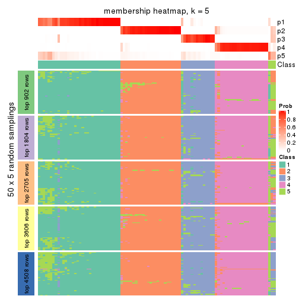
membership_heatmap(res, k = 6)
As soon as we have had the classes for columns, we can look for signatures which are significantly different between classes which can be candidate marks for certain classes. Following are the heatmaps for signatures.
Signature heatmaps where rows are scaled:
get_signatures(res, k = 2)
get_signatures(res, k = 3)
get_signatures(res, k = 4)
get_signatures(res, k = 5)
get_signatures(res, k = 6)
Signature heatmaps where rows are not scaled:
get_signatures(res, k = 2, scale_rows = FALSE)
get_signatures(res, k = 3, scale_rows = FALSE)
get_signatures(res, k = 4, scale_rows = FALSE)
get_signatures(res, k = 5, scale_rows = FALSE)
get_signatures(res, k = 6, scale_rows = FALSE)
Compare the overlap of signatures from different k:
compare_signatures(res)
get_signature() returns a data frame invisibly. TO get the list of signatures, the function
call should be assigned to a variable explicitly. In following code, if plot argument is set
to FALSE, no heatmap is plotted while only the differential analysis is performed.
# code only for demonstration
tb = get_signature(res, k = ..., plot = FALSE)
An example of the output of tb is:
#> which_row fdr mean_1 mean_2 scaled_mean_1 scaled_mean_2 km
#> 1 38 0.042760348 8.373488 9.131774 -0.5533452 0.5164555 1
#> 2 40 0.018707592 7.106213 8.469186 -0.6173731 0.5762149 1
#> 3 55 0.019134737 10.221463 11.207825 -0.6159697 0.5749050 1
#> 4 59 0.006059896 5.921854 7.869574 -0.6899429 0.6439467 1
#> 5 60 0.018055526 8.928898 10.211722 -0.6204761 0.5791110 1
#> 6 98 0.009384629 15.714769 14.887706 0.6635654 -0.6193277 2
...
The columns in tb are:
which_row: row indices corresponding to the input matrix.fdr: FDR for the differential test. mean_x: The mean value in group x.scaled_mean_x: The mean value in group x after rows are scaled.km: Row groups if k-means clustering is applied to rows.UMAP plot which shows how samples are separated.
dimension_reduction(res, k = 2, method = "UMAP")
dimension_reduction(res, k = 3, method = "UMAP")
dimension_reduction(res, k = 4, method = "UMAP")
dimension_reduction(res, k = 5, method = "UMAP")
dimension_reduction(res, k = 6, method = "UMAP")
Following heatmap shows how subgroups are split when increasing k:
collect_classes(res)
If matrix rows can be associated to genes, consider to use functional_enrichment(res,
...) to perform function enrichment for the signature genes. See this vignette for more detailed explanations.
The object with results only for a single top-value method and a single partition method can be extracted as:
res = res_list["MAD", "pam"]
# you can also extract it by
# res = res_list["MAD:pam"]
A summary of res and all the functions that can be applied to it:
res
#> A 'ConsensusPartition' object with k = 2, 3, 4, 5, 6.
#> On a matrix with 9017 rows and 98 columns.
#> Top rows (902, 1804, 2705, 3606, 4508) are extracted by 'MAD' method.
#> Subgroups are detected by 'pam' method.
#> Performed in total 1250 partitions by row resampling.
#> There is no best k.
#>
#> Following methods can be applied to this 'ConsensusPartition' object:
#> [1] "cola_report" "collect_classes" "collect_plots"
#> [4] "collect_stats" "colnames" "compare_signatures"
#> [7] "consensus_heatmap" "dimension_reduction" "functional_enrichment"
#> [10] "get_anno_col" "get_anno" "get_classes"
#> [13] "get_consensus" "get_matrix" "get_membership"
#> [16] "get_param" "get_signatures" "get_stats"
#> [19] "is_best_k" "is_stable_k" "membership_heatmap"
#> [22] "ncol" "nrow" "plot_ecdf"
#> [25] "rownames" "select_partition_number" "show"
#> [28] "suggest_best_k" "test_to_known_factors"
collect_plots() function collects all the plots made from res for all k (number of partitions)
into one single page to provide an easy and fast comparison between different k.
collect_plots(res)
The plots are:
k and the heatmap of
predicted classes for each k.k.k.k.All the plots in panels can be made by individual functions and they are plotted later in this section.
select_partition_number() produces several plots showing different
statistics for choosing “optimized” k. There are following statistics:
k;k, the area increased is defined as \(A_k - A_{k-1}\).The detailed explanations of these statistics can be found in the cola vignette.
Generally speaking, lower PAC score, higher mean silhouette score or higher
concordance corresponds to better partition. Rand index and Jaccard index
measure how similar the current partition is compared to partition with k-1.
If they are too similar, we won't accept k is better than k-1.
select_partition_number(res)
The numeric values for all these statistics can be obtained by get_stats().
get_stats(res)
#> k 1-PAC mean_silhouette concordance area_increased Rand Jaccard
#> 2 2 0.856 0.914 0.966 0.2322 0.783 0.783
#> 3 3 0.661 0.821 0.930 0.8665 0.800 0.745
#> 4 4 0.512 0.768 0.887 0.1190 1.000 1.000
#> 5 5 0.511 0.676 0.881 0.0344 0.983 0.970
#> 6 6 0.533 0.622 0.877 0.0248 0.985 0.974
suggest_best_k() suggests the best \(k\) based on these statistics. The rules are as follows:
suggest_best_k(res)
#> [1] NA
Following shows the table of the partitions (You need to click the show/hide
code output link to see it). The membership matrix (columns with name p*)
is inferred by
clue::cl_consensus()
function with the SE method. Basically the value in the membership matrix
represents the probability to belong to a certain group. The finall class
label for an item is determined with the group with highest probability it
belongs to.
In get_classes() function, the entropy is calculated from the membership
matrix and the silhouette score is calculated from the consensus matrix.
cbind(get_classes(res, k = 2), get_membership(res, k = 2))
#> class entropy silhouette p1 p2
#> SRR1810660 1 0.000 0.893 1.000 0.000
#> SRR1810659 1 0.000 0.893 1.000 0.000
#> SRR1810658 1 0.000 0.893 1.000 0.000
#> SRR1810657 1 0.000 0.893 1.000 0.000
#> SRR1818435 2 0.000 0.970 0.000 1.000
#> SRR1818434 2 0.000 0.970 0.000 1.000
#> SRR1810752 2 0.000 0.970 0.000 1.000
#> SRR1810751 2 0.000 0.970 0.000 1.000
#> SRR1810749 2 0.000 0.970 0.000 1.000
#> SRR1810748 1 0.000 0.893 1.000 0.000
#> SRR1810750 1 0.949 0.471 0.632 0.368
#> SRR1810747 2 0.000 0.970 0.000 1.000
#> SRR1810746 2 0.605 0.806 0.148 0.852
#> SRR1810745 2 0.963 0.310 0.388 0.612
#> SRR1810744 2 0.936 0.413 0.352 0.648
#> SRR1810743 2 0.584 0.817 0.140 0.860
#> SRR1810742 2 0.000 0.970 0.000 1.000
#> SRR1810741 2 0.000 0.970 0.000 1.000
#> SRR1810740 2 0.000 0.970 0.000 1.000
#> SRR1810739 2 0.000 0.970 0.000 1.000
#> SRR1810738 2 0.000 0.970 0.000 1.000
#> SRR1810737 2 0.000 0.970 0.000 1.000
#> SRR1810736 2 0.000 0.970 0.000 1.000
#> SRR1810734 2 0.000 0.970 0.000 1.000
#> SRR1810735 2 0.000 0.970 0.000 1.000
#> SRR1810733 2 0.000 0.970 0.000 1.000
#> SRR1810732 2 0.000 0.970 0.000 1.000
#> SRR1810730 2 0.000 0.970 0.000 1.000
#> SRR1810729 2 0.904 0.494 0.320 0.680
#> SRR1810731 2 0.644 0.784 0.164 0.836
#> SRR1810728 2 0.000 0.970 0.000 1.000
#> SRR1810727 2 0.000 0.970 0.000 1.000
#> SRR1810726 2 0.000 0.970 0.000 1.000
#> SRR1810725 2 0.000 0.970 0.000 1.000
#> SRR1810724 2 0.000 0.970 0.000 1.000
#> SRR1810723 2 0.000 0.970 0.000 1.000
#> SRR1810722 2 0.358 0.903 0.068 0.932
#> SRR1810721 2 0.000 0.970 0.000 1.000
#> SRR1810720 2 0.000 0.970 0.000 1.000
#> SRR1810719 2 0.000 0.970 0.000 1.000
#> SRR1810718 1 0.000 0.893 1.000 0.000
#> SRR1810717 2 0.961 0.322 0.384 0.616
#> SRR1810716 2 0.000 0.970 0.000 1.000
#> SRR1810715 2 0.000 0.970 0.000 1.000
#> SRR1810713 2 0.000 0.970 0.000 1.000
#> SRR1810714 1 0.000 0.893 1.000 0.000
#> SRR1810712 2 0.000 0.970 0.000 1.000
#> SRR1810710 2 0.000 0.970 0.000 1.000
#> SRR1810711 2 0.000 0.970 0.000 1.000
#> SRR1810709 2 0.000 0.970 0.000 1.000
#> SRR1810708 1 0.973 0.380 0.596 0.404
#> SRR1810707 2 0.000 0.970 0.000 1.000
#> SRR1810706 2 0.000 0.970 0.000 1.000
#> SRR1810704 2 0.730 0.722 0.204 0.796
#> SRR1810705 1 0.913 0.549 0.672 0.328
#> SRR1810703 1 0.000 0.893 1.000 0.000
#> SRR1810702 2 0.000 0.970 0.000 1.000
#> SRR1810701 1 0.000 0.893 1.000 0.000
#> SRR1810700 2 0.000 0.970 0.000 1.000
#> SRR1810699 2 0.000 0.970 0.000 1.000
#> SRR1810696 2 0.000 0.970 0.000 1.000
#> SRR1810695 2 0.000 0.970 0.000 1.000
#> SRR1810698 2 0.000 0.970 0.000 1.000
#> SRR1810697 2 0.000 0.970 0.000 1.000
#> SRR1810694 2 0.000 0.970 0.000 1.000
#> SRR1810693 2 0.482 0.862 0.104 0.896
#> SRR1810692 2 0.000 0.970 0.000 1.000
#> SRR1810690 2 0.000 0.970 0.000 1.000
#> SRR1810691 2 0.000 0.970 0.000 1.000
#> SRR1810689 2 0.000 0.970 0.000 1.000
#> SRR1810688 2 0.000 0.970 0.000 1.000
#> SRR1810687 2 0.000 0.970 0.000 1.000
#> SRR1810685 2 0.000 0.970 0.000 1.000
#> SRR1810686 2 0.000 0.970 0.000 1.000
#> SRR1810684 2 0.000 0.970 0.000 1.000
#> SRR1810683 2 0.000 0.970 0.000 1.000
#> SRR1810680 2 0.000 0.970 0.000 1.000
#> SRR1810679 2 0.000 0.970 0.000 1.000
#> SRR1810678 2 0.000 0.970 0.000 1.000
#> SRR1810682 2 0.000 0.970 0.000 1.000
#> SRR1810681 2 0.000 0.970 0.000 1.000
#> SRR1810677 2 0.000 0.970 0.000 1.000
#> SRR1810676 2 0.000 0.970 0.000 1.000
#> SRR1810675 2 0.000 0.970 0.000 1.000
#> SRR1810673 2 0.000 0.970 0.000 1.000
#> SRR1810674 2 0.000 0.970 0.000 1.000
#> SRR1810671 2 0.000 0.970 0.000 1.000
#> SRR1810670 2 0.000 0.970 0.000 1.000
#> SRR1810669 2 0.000 0.970 0.000 1.000
#> SRR1810667 2 0.000 0.970 0.000 1.000
#> SRR1810666 2 0.000 0.970 0.000 1.000
#> SRR1810672 2 0.000 0.970 0.000 1.000
#> SRR1810668 2 0.000 0.970 0.000 1.000
#> SRR1810665 2 0.000 0.970 0.000 1.000
#> SRR1810664 2 0.000 0.970 0.000 1.000
#> SRR1810663 2 0.000 0.970 0.000 1.000
#> SRR1810661 2 0.000 0.970 0.000 1.000
#> SRR1810662 2 0.000 0.970 0.000 1.000
cbind(get_classes(res, k = 3), get_membership(res, k = 3))
#> class entropy silhouette p1 p2 p3
#> SRR1810660 1 0.0000 0.812 1.000 0.000 0.000
#> SRR1810659 1 0.0000 0.812 1.000 0.000 0.000
#> SRR1810658 1 0.0000 0.812 1.000 0.000 0.000
#> SRR1810657 1 0.0000 0.812 1.000 0.000 0.000
#> SRR1818435 2 0.0000 0.931 0.000 1.000 0.000
#> SRR1818434 2 0.0000 0.931 0.000 1.000 0.000
#> SRR1810752 3 0.2448 0.812 0.000 0.076 0.924
#> SRR1810751 3 0.2066 0.810 0.000 0.060 0.940
#> SRR1810749 2 0.0000 0.931 0.000 1.000 0.000
#> SRR1810748 1 0.0000 0.812 1.000 0.000 0.000
#> SRR1810750 1 0.5988 0.426 0.632 0.368 0.000
#> SRR1810747 3 0.1289 0.803 0.000 0.032 0.968
#> SRR1810746 2 0.3816 0.791 0.148 0.852 0.000
#> SRR1810745 2 0.6079 0.314 0.388 0.612 0.000
#> SRR1810744 2 0.5905 0.417 0.352 0.648 0.000
#> SRR1810743 2 0.3686 0.801 0.140 0.860 0.000
#> SRR1810742 2 0.0000 0.931 0.000 1.000 0.000
#> SRR1810741 2 0.3551 0.809 0.000 0.868 0.132
#> SRR1810740 2 0.0000 0.931 0.000 1.000 0.000
#> SRR1810739 2 0.0000 0.931 0.000 1.000 0.000
#> SRR1810738 2 0.0000 0.931 0.000 1.000 0.000
#> SRR1810737 2 0.0000 0.931 0.000 1.000 0.000
#> SRR1810736 2 0.0000 0.931 0.000 1.000 0.000
#> SRR1810734 2 0.6045 0.301 0.000 0.620 0.380
#> SRR1810735 2 0.0000 0.931 0.000 1.000 0.000
#> SRR1810733 2 0.0000 0.931 0.000 1.000 0.000
#> SRR1810732 2 0.0000 0.931 0.000 1.000 0.000
#> SRR1810730 2 0.0000 0.931 0.000 1.000 0.000
#> SRR1810729 2 0.5706 0.496 0.320 0.680 0.000
#> SRR1810731 2 0.4062 0.771 0.164 0.836 0.000
#> SRR1810728 2 0.0000 0.931 0.000 1.000 0.000
#> SRR1810727 2 0.0000 0.931 0.000 1.000 0.000
#> SRR1810726 2 0.0000 0.931 0.000 1.000 0.000
#> SRR1810725 2 0.0000 0.931 0.000 1.000 0.000
#> SRR1810724 2 0.6111 0.216 0.000 0.604 0.396
#> SRR1810723 2 0.0000 0.931 0.000 1.000 0.000
#> SRR1810722 2 0.2261 0.877 0.068 0.932 0.000
#> SRR1810721 2 0.0000 0.931 0.000 1.000 0.000
#> SRR1810720 2 0.0000 0.931 0.000 1.000 0.000
#> SRR1810719 3 0.4002 0.783 0.000 0.160 0.840
#> SRR1810718 1 0.0000 0.812 1.000 0.000 0.000
#> SRR1810717 2 0.6062 0.326 0.384 0.616 0.000
#> SRR1810716 2 0.0000 0.931 0.000 1.000 0.000
#> SRR1810715 2 0.1860 0.887 0.000 0.948 0.052
#> SRR1810713 2 0.2959 0.836 0.000 0.900 0.100
#> SRR1810714 1 0.0000 0.812 1.000 0.000 0.000
#> SRR1810712 3 0.3879 0.783 0.000 0.152 0.848
#> SRR1810710 2 0.0000 0.931 0.000 1.000 0.000
#> SRR1810711 3 0.0892 0.796 0.000 0.020 0.980
#> SRR1810709 2 0.0000 0.931 0.000 1.000 0.000
#> SRR1810708 1 0.6140 0.379 0.596 0.404 0.000
#> SRR1810707 2 0.0000 0.931 0.000 1.000 0.000
#> SRR1810706 2 0.5785 0.413 0.000 0.668 0.332
#> SRR1810704 2 0.4605 0.713 0.204 0.796 0.000
#> SRR1810705 1 0.5760 0.469 0.672 0.328 0.000
#> SRR1810703 1 0.0000 0.812 1.000 0.000 0.000
#> SRR1810702 3 0.4002 0.770 0.000 0.160 0.840
#> SRR1810701 1 0.0000 0.812 1.000 0.000 0.000
#> SRR1810700 3 0.5431 0.631 0.000 0.284 0.716
#> SRR1810699 2 0.0000 0.931 0.000 1.000 0.000
#> SRR1810696 2 0.0000 0.931 0.000 1.000 0.000
#> SRR1810695 2 0.0000 0.931 0.000 1.000 0.000
#> SRR1810698 2 0.0000 0.931 0.000 1.000 0.000
#> SRR1810697 2 0.0000 0.931 0.000 1.000 0.000
#> SRR1810694 2 0.0000 0.931 0.000 1.000 0.000
#> SRR1810693 2 0.3038 0.842 0.104 0.896 0.000
#> SRR1810692 2 0.0000 0.931 0.000 1.000 0.000
#> SRR1810690 2 0.0000 0.931 0.000 1.000 0.000
#> SRR1810691 2 0.0000 0.931 0.000 1.000 0.000
#> SRR1810689 2 0.0237 0.928 0.000 0.996 0.004
#> SRR1810688 2 0.5529 0.502 0.000 0.704 0.296
#> SRR1810687 3 0.0000 0.778 0.000 0.000 1.000
#> SRR1810685 2 0.0000 0.931 0.000 1.000 0.000
#> SRR1810686 3 0.0000 0.778 0.000 0.000 1.000
#> SRR1810684 2 0.0000 0.931 0.000 1.000 0.000
#> SRR1810683 3 0.0000 0.778 0.000 0.000 1.000
#> SRR1810680 2 0.0000 0.931 0.000 1.000 0.000
#> SRR1810679 2 0.0000 0.931 0.000 1.000 0.000
#> SRR1810678 2 0.4504 0.702 0.000 0.804 0.196
#> SRR1810682 3 0.4346 0.758 0.000 0.184 0.816
#> SRR1810681 2 0.0000 0.931 0.000 1.000 0.000
#> SRR1810677 2 0.2165 0.877 0.000 0.936 0.064
#> SRR1810676 3 0.5988 0.481 0.000 0.368 0.632
#> SRR1810675 2 0.0000 0.931 0.000 1.000 0.000
#> SRR1810673 2 0.0000 0.931 0.000 1.000 0.000
#> SRR1810674 2 0.0000 0.931 0.000 1.000 0.000
#> SRR1810671 2 0.0000 0.931 0.000 1.000 0.000
#> SRR1810670 2 0.0000 0.931 0.000 1.000 0.000
#> SRR1810669 2 0.0000 0.931 0.000 1.000 0.000
#> SRR1810667 2 0.0000 0.931 0.000 1.000 0.000
#> SRR1810666 2 0.0000 0.931 0.000 1.000 0.000
#> SRR1810672 2 0.0000 0.931 0.000 1.000 0.000
#> SRR1810668 2 0.0000 0.931 0.000 1.000 0.000
#> SRR1810665 2 0.0000 0.931 0.000 1.000 0.000
#> SRR1810664 2 0.0000 0.931 0.000 1.000 0.000
#> SRR1810663 2 0.0000 0.931 0.000 1.000 0.000
#> SRR1810661 2 0.0000 0.931 0.000 1.000 0.000
#> SRR1810662 2 0.0000 0.931 0.000 1.000 0.000
cbind(get_classes(res, k = 4), get_membership(res, k = 4))
#> class entropy silhouette p1 p2 p3 p4
#> SRR1810660 1 0.0000 0.836 1.000 0.000 NA 0.000
#> SRR1810659 1 0.0000 0.836 1.000 0.000 NA 0.000
#> SRR1810658 1 0.0000 0.836 1.000 0.000 NA 0.000
#> SRR1810657 1 0.0000 0.836 1.000 0.000 NA 0.000
#> SRR1818435 4 0.0000 0.874 0.000 0.000 NA 1.000
#> SRR1818434 4 0.0000 0.874 0.000 0.000 NA 1.000
#> SRR1810752 2 0.1940 0.807 0.000 0.924 NA 0.076
#> SRR1810751 2 0.1637 0.805 0.000 0.940 NA 0.060
#> SRR1810749 4 0.0000 0.874 0.000 0.000 NA 1.000
#> SRR1810748 1 0.0000 0.836 1.000 0.000 NA 0.000
#> SRR1810750 1 0.7654 0.432 0.420 0.000 NA 0.212
#> SRR1810747 2 0.1022 0.798 0.000 0.968 NA 0.032
#> SRR1810746 4 0.5010 0.700 0.120 0.000 NA 0.772
#> SRR1810745 4 0.6186 0.274 0.352 0.000 NA 0.584
#> SRR1810744 4 0.6370 0.397 0.280 0.000 NA 0.620
#> SRR1810743 4 0.2921 0.783 0.140 0.000 NA 0.860
#> SRR1810742 4 0.4585 0.643 0.000 0.000 NA 0.668
#> SRR1810741 4 0.2814 0.798 0.000 0.132 NA 0.868
#> SRR1810740 4 0.0000 0.874 0.000 0.000 NA 1.000
#> SRR1810739 4 0.0000 0.874 0.000 0.000 NA 1.000
#> SRR1810738 4 0.0000 0.874 0.000 0.000 NA 1.000
#> SRR1810737 4 0.4134 0.718 0.000 0.000 NA 0.740
#> SRR1810736 4 0.3074 0.800 0.000 0.000 NA 0.848
#> SRR1810734 4 0.4790 0.385 0.000 0.380 NA 0.620
#> SRR1810735 4 0.3873 0.741 0.000 0.000 NA 0.772
#> SRR1810733 4 0.0000 0.874 0.000 0.000 NA 1.000
#> SRR1810732 4 0.0188 0.873 0.000 0.000 NA 0.996
#> SRR1810730 4 0.0336 0.872 0.000 0.000 NA 0.992
#> SRR1810729 4 0.4522 0.505 0.320 0.000 NA 0.680
#> SRR1810731 4 0.3895 0.763 0.132 0.000 NA 0.832
#> SRR1810728 4 0.3726 0.752 0.000 0.000 NA 0.788
#> SRR1810727 4 0.3764 0.750 0.000 0.000 NA 0.784
#> SRR1810726 4 0.0000 0.874 0.000 0.000 NA 1.000
#> SRR1810725 4 0.4605 0.638 0.000 0.000 NA 0.664
#> SRR1810724 4 0.7479 0.221 0.000 0.196 NA 0.480
#> SRR1810723 4 0.0000 0.874 0.000 0.000 NA 1.000
#> SRR1810722 4 0.1792 0.839 0.068 0.000 NA 0.932
#> SRR1810721 4 0.0000 0.874 0.000 0.000 NA 1.000
#> SRR1810720 4 0.0000 0.874 0.000 0.000 NA 1.000
#> SRR1810719 2 0.3172 0.777 0.000 0.840 NA 0.160
#> SRR1810718 1 0.0000 0.836 1.000 0.000 NA 0.000
#> SRR1810717 4 0.5204 0.336 0.376 0.000 NA 0.612
#> SRR1810716 4 0.4605 0.638 0.000 0.000 NA 0.664
#> SRR1810715 4 0.1474 0.853 0.000 0.052 NA 0.948
#> SRR1810713 4 0.2345 0.822 0.000 0.100 NA 0.900
#> SRR1810714 1 0.0000 0.836 1.000 0.000 NA 0.000
#> SRR1810712 2 0.3074 0.779 0.000 0.848 NA 0.152
#> SRR1810710 4 0.0000 0.874 0.000 0.000 NA 1.000
#> SRR1810711 2 0.0707 0.791 0.000 0.980 NA 0.020
#> SRR1810709 4 0.4222 0.705 0.000 0.000 NA 0.728
#> SRR1810708 1 0.4866 0.365 0.596 0.000 NA 0.404
#> SRR1810707 4 0.0188 0.873 0.000 0.000 NA 0.996
#> SRR1810706 4 0.6911 0.401 0.000 0.124 NA 0.540
#> SRR1810704 4 0.4098 0.695 0.204 0.000 NA 0.784
#> SRR1810705 1 0.4741 0.472 0.668 0.000 NA 0.328
#> SRR1810703 1 0.0000 0.836 1.000 0.000 NA 0.000
#> SRR1810702 2 0.3172 0.762 0.000 0.840 NA 0.160
#> SRR1810701 1 0.0000 0.836 1.000 0.000 NA 0.000
#> SRR1810700 2 0.5157 0.612 0.000 0.688 NA 0.284
#> SRR1810699 4 0.0000 0.874 0.000 0.000 NA 1.000
#> SRR1810696 4 0.3266 0.795 0.000 0.000 NA 0.832
#> SRR1810695 4 0.0817 0.867 0.000 0.000 NA 0.976
#> SRR1810698 4 0.3688 0.757 0.000 0.000 NA 0.792
#> SRR1810697 4 0.4356 0.688 0.000 0.000 NA 0.708
#> SRR1810694 4 0.1637 0.853 0.000 0.000 NA 0.940
#> SRR1810693 4 0.2530 0.815 0.100 0.000 NA 0.896
#> SRR1810692 4 0.0000 0.874 0.000 0.000 NA 1.000
#> SRR1810690 4 0.0000 0.874 0.000 0.000 NA 1.000
#> SRR1810691 4 0.0000 0.874 0.000 0.000 NA 1.000
#> SRR1810689 4 0.0188 0.873 0.000 0.004 NA 0.996
#> SRR1810688 4 0.4382 0.562 0.000 0.296 NA 0.704
#> SRR1810687 2 0.0000 0.773 0.000 1.000 NA 0.000
#> SRR1810685 4 0.0000 0.874 0.000 0.000 NA 1.000
#> SRR1810686 2 0.0000 0.773 0.000 1.000 NA 0.000
#> SRR1810684 4 0.3873 0.743 0.000 0.000 NA 0.772
#> SRR1810683 2 0.0000 0.773 0.000 1.000 NA 0.000
#> SRR1810680 4 0.0000 0.874 0.000 0.000 NA 1.000
#> SRR1810679 4 0.3610 0.763 0.000 0.000 NA 0.800
#> SRR1810678 4 0.3569 0.729 0.000 0.196 NA 0.804
#> SRR1810682 2 0.3444 0.754 0.000 0.816 NA 0.184
#> SRR1810681 4 0.0000 0.874 0.000 0.000 NA 1.000
#> SRR1810677 4 0.1716 0.847 0.000 0.064 NA 0.936
#> SRR1810676 2 0.4746 0.453 0.000 0.632 NA 0.368
#> SRR1810675 4 0.0000 0.874 0.000 0.000 NA 1.000
#> SRR1810673 4 0.0000 0.874 0.000 0.000 NA 1.000
#> SRR1810674 4 0.0000 0.874 0.000 0.000 NA 1.000
#> SRR1810671 4 0.0188 0.873 0.000 0.000 NA 0.996
#> SRR1810670 4 0.0000 0.874 0.000 0.000 NA 1.000
#> SRR1810669 4 0.0000 0.874 0.000 0.000 NA 1.000
#> SRR1810667 4 0.0000 0.874 0.000 0.000 NA 1.000
#> SRR1810666 4 0.0000 0.874 0.000 0.000 NA 1.000
#> SRR1810672 4 0.0000 0.874 0.000 0.000 NA 1.000
#> SRR1810668 4 0.0000 0.874 0.000 0.000 NA 1.000
#> SRR1810665 4 0.0000 0.874 0.000 0.000 NA 1.000
#> SRR1810664 4 0.0000 0.874 0.000 0.000 NA 1.000
#> SRR1810663 4 0.0188 0.873 0.000 0.000 NA 0.996
#> SRR1810661 4 0.0188 0.873 0.000 0.000 NA 0.996
#> SRR1810662 4 0.0188 0.873 0.000 0.000 NA 0.996
cbind(get_classes(res, k = 5), get_membership(res, k = 5))
#> class entropy silhouette p1 p2 p3 p4 p5
#> SRR1810660 5 0.0000 0.69426 0.000 0.000 0.000 0.000 1.000
#> SRR1810659 5 0.0000 0.69426 0.000 0.000 0.000 0.000 1.000
#> SRR1810658 5 0.0000 0.69426 0.000 0.000 0.000 0.000 1.000
#> SRR1810657 5 0.0000 0.69426 0.000 0.000 0.000 0.000 1.000
#> SRR1818435 4 0.0000 0.84417 0.000 0.000 0.000 1.000 0.000
#> SRR1818434 4 0.0000 0.84417 0.000 0.000 0.000 1.000 0.000
#> SRR1810752 2 0.1671 0.76483 0.000 0.924 0.000 0.076 0.000
#> SRR1810751 2 0.1410 0.76040 0.000 0.940 0.000 0.060 0.000
#> SRR1810749 4 0.0162 0.84372 0.000 0.000 0.004 0.996 0.000
#> SRR1810748 5 0.0000 0.69426 0.000 0.000 0.000 0.000 1.000
#> SRR1810750 3 0.4182 0.00000 0.000 0.000 0.600 0.000 0.400
#> SRR1810747 2 0.0880 0.75175 0.000 0.968 0.000 0.032 0.000
#> SRR1810746 4 0.5656 0.29937 0.028 0.000 0.244 0.656 0.072
#> SRR1810745 1 0.6674 0.00000 0.436 0.000 0.000 0.260 0.304
#> SRR1810744 4 0.6658 -0.00183 0.100 0.000 0.076 0.596 0.228
#> SRR1810743 4 0.2516 0.71235 0.000 0.000 0.000 0.860 0.140
#> SRR1810742 4 0.4101 0.51864 0.372 0.000 0.000 0.628 0.000
#> SRR1810741 4 0.2424 0.75742 0.000 0.132 0.000 0.868 0.000
#> SRR1810740 4 0.0000 0.84417 0.000 0.000 0.000 1.000 0.000
#> SRR1810739 4 0.0162 0.84334 0.004 0.000 0.000 0.996 0.000
#> SRR1810738 4 0.0000 0.84417 0.000 0.000 0.000 1.000 0.000
#> SRR1810737 4 0.3661 0.64967 0.276 0.000 0.000 0.724 0.000
#> SRR1810736 4 0.2732 0.75449 0.160 0.000 0.000 0.840 0.000
#> SRR1810734 4 0.4126 0.38301 0.000 0.380 0.000 0.620 0.000
#> SRR1810735 4 0.3561 0.66315 0.260 0.000 0.000 0.740 0.000
#> SRR1810733 4 0.0000 0.84417 0.000 0.000 0.000 1.000 0.000
#> SRR1810732 4 0.0566 0.83943 0.004 0.000 0.012 0.984 0.000
#> SRR1810730 4 0.0290 0.84272 0.008 0.000 0.000 0.992 0.000
#> SRR1810729 4 0.3895 0.29553 0.000 0.000 0.000 0.680 0.320
#> SRR1810731 4 0.4292 0.66305 0.040 0.000 0.064 0.808 0.088
#> SRR1810728 4 0.3395 0.68451 0.236 0.000 0.000 0.764 0.000
#> SRR1810727 4 0.3424 0.68114 0.240 0.000 0.000 0.760 0.000
#> SRR1810726 4 0.0000 0.84417 0.000 0.000 0.000 1.000 0.000
#> SRR1810725 4 0.4126 0.50582 0.380 0.000 0.000 0.620 0.000
#> SRR1810724 4 0.6405 0.13298 0.364 0.176 0.000 0.460 0.000
#> SRR1810723 4 0.0451 0.84099 0.004 0.000 0.008 0.988 0.000
#> SRR1810722 4 0.1764 0.79509 0.008 0.000 0.000 0.928 0.064
#> SRR1810721 4 0.0000 0.84417 0.000 0.000 0.000 1.000 0.000
#> SRR1810720 4 0.0000 0.84417 0.000 0.000 0.000 1.000 0.000
#> SRR1810719 2 0.2732 0.72712 0.000 0.840 0.000 0.160 0.000
#> SRR1810718 5 0.0000 0.69426 0.000 0.000 0.000 0.000 1.000
#> SRR1810717 4 0.4482 0.00848 0.012 0.000 0.000 0.612 0.376
#> SRR1810716 4 0.4126 0.50582 0.380 0.000 0.000 0.620 0.000
#> SRR1810715 4 0.1270 0.82201 0.000 0.052 0.000 0.948 0.000
#> SRR1810713 4 0.2020 0.78810 0.000 0.100 0.000 0.900 0.000
#> SRR1810714 5 0.0000 0.69426 0.000 0.000 0.000 0.000 1.000
#> SRR1810712 2 0.2648 0.72997 0.000 0.848 0.000 0.152 0.000
#> SRR1810710 4 0.0000 0.84417 0.000 0.000 0.000 1.000 0.000
#> SRR1810711 2 0.0609 0.74240 0.000 0.980 0.000 0.020 0.000
#> SRR1810709 4 0.3796 0.61841 0.300 0.000 0.000 0.700 0.000
#> SRR1810708 5 0.4331 -0.44942 0.004 0.000 0.000 0.400 0.596
#> SRR1810707 4 0.0566 0.83943 0.004 0.000 0.012 0.984 0.000
#> SRR1810706 4 0.5908 0.27898 0.380 0.108 0.000 0.512 0.000
#> SRR1810704 4 0.3530 0.58607 0.012 0.000 0.000 0.784 0.204
#> SRR1810705 5 0.4084 -0.40822 0.004 0.000 0.000 0.328 0.668
#> SRR1810703 5 0.0000 0.69426 0.000 0.000 0.000 0.000 1.000
#> SRR1810702 2 0.2732 0.70643 0.000 0.840 0.000 0.160 0.000
#> SRR1810701 5 0.0000 0.69426 0.000 0.000 0.000 0.000 1.000
#> SRR1810700 2 0.4442 0.48561 0.028 0.688 0.000 0.284 0.000
#> SRR1810699 4 0.0000 0.84417 0.000 0.000 0.000 1.000 0.000
#> SRR1810696 4 0.2813 0.75293 0.168 0.000 0.000 0.832 0.000
#> SRR1810695 4 0.0703 0.83756 0.024 0.000 0.000 0.976 0.000
#> SRR1810698 4 0.3336 0.69391 0.228 0.000 0.000 0.772 0.000
#> SRR1810697 4 0.3876 0.59977 0.316 0.000 0.000 0.684 0.000
#> SRR1810694 4 0.1410 0.82058 0.060 0.000 0.000 0.940 0.000
#> SRR1810693 4 0.2844 0.75197 0.012 0.000 0.020 0.880 0.088
#> SRR1810692 4 0.0000 0.84417 0.000 0.000 0.000 1.000 0.000
#> SRR1810690 4 0.0000 0.84417 0.000 0.000 0.000 1.000 0.000
#> SRR1810691 4 0.0000 0.84417 0.000 0.000 0.000 1.000 0.000
#> SRR1810689 4 0.0162 0.84349 0.000 0.004 0.000 0.996 0.000
#> SRR1810688 4 0.3774 0.53872 0.000 0.296 0.000 0.704 0.000
#> SRR1810687 2 0.0000 0.71931 0.000 1.000 0.000 0.000 0.000
#> SRR1810685 4 0.0000 0.84417 0.000 0.000 0.000 1.000 0.000
#> SRR1810686 2 0.0000 0.71931 0.000 1.000 0.000 0.000 0.000
#> SRR1810684 4 0.3395 0.68951 0.236 0.000 0.000 0.764 0.000
#> SRR1810683 2 0.0000 0.71931 0.000 1.000 0.000 0.000 0.000
#> SRR1810680 4 0.0000 0.84417 0.000 0.000 0.000 1.000 0.000
#> SRR1810679 4 0.3274 0.70094 0.220 0.000 0.000 0.780 0.000
#> SRR1810678 4 0.3074 0.69255 0.000 0.196 0.000 0.804 0.000
#> SRR1810682 2 0.2966 0.69541 0.000 0.816 0.000 0.184 0.000
#> SRR1810681 4 0.0000 0.84417 0.000 0.000 0.000 1.000 0.000
#> SRR1810677 4 0.1478 0.81540 0.000 0.064 0.000 0.936 0.000
#> SRR1810676 2 0.4088 0.28018 0.000 0.632 0.000 0.368 0.000
#> SRR1810675 4 0.0000 0.84417 0.000 0.000 0.000 1.000 0.000
#> SRR1810673 4 0.0000 0.84417 0.000 0.000 0.000 1.000 0.000
#> SRR1810674 4 0.0000 0.84417 0.000 0.000 0.000 1.000 0.000
#> SRR1810671 4 0.0404 0.84114 0.000 0.000 0.012 0.988 0.000
#> SRR1810670 4 0.0000 0.84417 0.000 0.000 0.000 1.000 0.000
#> SRR1810669 4 0.0000 0.84417 0.000 0.000 0.000 1.000 0.000
#> SRR1810667 4 0.0000 0.84417 0.000 0.000 0.000 1.000 0.000
#> SRR1810666 4 0.0000 0.84417 0.000 0.000 0.000 1.000 0.000
#> SRR1810672 4 0.0000 0.84417 0.000 0.000 0.000 1.000 0.000
#> SRR1810668 4 0.0000 0.84417 0.000 0.000 0.000 1.000 0.000
#> SRR1810665 4 0.0000 0.84417 0.000 0.000 0.000 1.000 0.000
#> SRR1810664 4 0.0000 0.84417 0.000 0.000 0.000 1.000 0.000
#> SRR1810663 4 0.0324 0.84205 0.004 0.000 0.004 0.992 0.000
#> SRR1810661 4 0.0566 0.83943 0.004 0.000 0.012 0.984 0.000
#> SRR1810662 4 0.0566 0.83943 0.004 0.000 0.012 0.984 0.000
cbind(get_classes(res, k = 6), get_membership(res, k = 6))
#> class entropy silhouette p1 p2 p3 p4 p5 p6
#> SRR1810660 5 0.0000 0.7153 0.000 0.000 0.000 0.000 1.000 0.000
#> SRR1810659 5 0.0000 0.7153 0.000 0.000 0.000 0.000 1.000 0.000
#> SRR1810658 5 0.0000 0.7153 0.000 0.000 0.000 0.000 1.000 0.000
#> SRR1810657 5 0.0000 0.7153 0.000 0.000 0.000 0.000 1.000 0.000
#> SRR1818435 4 0.0000 0.8097 0.000 0.000 0.000 1.000 0.000 0.000
#> SRR1818434 4 0.0000 0.8097 0.000 0.000 0.000 1.000 0.000 0.000
#> SRR1810752 2 0.1501 0.7569 0.000 0.924 0.000 0.076 0.000 0.000
#> SRR1810751 2 0.1267 0.7541 0.000 0.940 0.000 0.060 0.000 0.000
#> SRR1810749 4 0.0146 0.8090 0.000 0.000 0.000 0.996 0.000 0.004
#> SRR1810748 5 0.0000 0.7153 0.000 0.000 0.000 0.000 1.000 0.000
#> SRR1810750 1 0.3737 0.0000 0.608 0.000 0.000 0.000 0.392 0.000
#> SRR1810747 2 0.0790 0.7483 0.000 0.968 0.000 0.032 0.000 0.000
#> SRR1810746 3 0.6358 0.0000 0.128 0.000 0.448 0.384 0.032 0.008
#> SRR1810745 6 0.5127 0.0000 0.000 0.000 0.004 0.116 0.260 0.620
#> SRR1810744 4 0.6843 -0.5113 0.184 0.000 0.084 0.516 0.208 0.008
#> SRR1810743 4 0.2260 0.6436 0.000 0.000 0.000 0.860 0.140 0.000
#> SRR1810742 4 0.3727 0.3496 0.000 0.000 0.388 0.612 0.000 0.000
#> SRR1810741 4 0.2178 0.6937 0.000 0.132 0.000 0.868 0.000 0.000
#> SRR1810740 4 0.0000 0.8097 0.000 0.000 0.000 1.000 0.000 0.000
#> SRR1810739 4 0.1078 0.7889 0.012 0.000 0.008 0.964 0.000 0.016
#> SRR1810738 4 0.0000 0.8097 0.000 0.000 0.000 1.000 0.000 0.000
#> SRR1810737 4 0.3288 0.5573 0.000 0.000 0.276 0.724 0.000 0.000
#> SRR1810736 4 0.2491 0.6903 0.000 0.000 0.164 0.836 0.000 0.000
#> SRR1810734 4 0.3706 0.2024 0.000 0.380 0.000 0.620 0.000 0.000
#> SRR1810735 4 0.3221 0.5711 0.000 0.000 0.264 0.736 0.000 0.000
#> SRR1810733 4 0.0000 0.8097 0.000 0.000 0.000 1.000 0.000 0.000
#> SRR1810732 4 0.0458 0.8037 0.016 0.000 0.000 0.984 0.000 0.000
#> SRR1810730 4 0.0260 0.8078 0.000 0.000 0.008 0.992 0.000 0.000
#> SRR1810729 4 0.3499 0.1315 0.000 0.000 0.000 0.680 0.320 0.000
#> SRR1810731 4 0.4002 0.3751 0.008 0.000 0.000 0.736 0.036 0.220
#> SRR1810728 4 0.3050 0.6059 0.000 0.000 0.236 0.764 0.000 0.000
#> SRR1810727 4 0.3101 0.5957 0.000 0.000 0.244 0.756 0.000 0.000
#> SRR1810726 4 0.0000 0.8097 0.000 0.000 0.000 1.000 0.000 0.000
#> SRR1810725 4 0.3747 0.3323 0.000 0.000 0.396 0.604 0.000 0.000
#> SRR1810724 4 0.5767 -0.1420 0.000 0.176 0.376 0.448 0.000 0.000
#> SRR1810723 4 0.0363 0.8057 0.012 0.000 0.000 0.988 0.000 0.000
#> SRR1810722 4 0.1841 0.7402 0.008 0.000 0.000 0.920 0.064 0.008
#> SRR1810721 4 0.0000 0.8097 0.000 0.000 0.000 1.000 0.000 0.000
#> SRR1810720 4 0.0000 0.8097 0.000 0.000 0.000 1.000 0.000 0.000
#> SRR1810719 2 0.2454 0.7147 0.000 0.840 0.000 0.160 0.000 0.000
#> SRR1810718 5 0.0000 0.7153 0.000 0.000 0.000 0.000 1.000 0.000
#> SRR1810717 4 0.3976 -0.1591 0.000 0.000 0.004 0.612 0.380 0.004
#> SRR1810716 4 0.3747 0.3323 0.000 0.000 0.396 0.604 0.000 0.000
#> SRR1810715 4 0.1141 0.7810 0.000 0.052 0.000 0.948 0.000 0.000
#> SRR1810713 4 0.1814 0.7367 0.000 0.100 0.000 0.900 0.000 0.000
#> SRR1810714 5 0.0000 0.7153 0.000 0.000 0.000 0.000 1.000 0.000
#> SRR1810712 2 0.2378 0.7159 0.000 0.848 0.000 0.152 0.000 0.000
#> SRR1810710 4 0.0000 0.8097 0.000 0.000 0.000 1.000 0.000 0.000
#> SRR1810711 2 0.0547 0.7402 0.000 0.980 0.000 0.020 0.000 0.000
#> SRR1810709 4 0.3464 0.4966 0.000 0.000 0.312 0.688 0.000 0.000
#> SRR1810708 5 0.5235 -0.1117 0.000 0.000 0.064 0.316 0.596 0.024
#> SRR1810707 4 0.0458 0.8037 0.016 0.000 0.000 0.984 0.000 0.000
#> SRR1810706 4 0.5330 0.0165 0.000 0.108 0.396 0.496 0.000 0.000
#> SRR1810704 4 0.3104 0.4941 0.000 0.000 0.004 0.788 0.204 0.004
#> SRR1810705 5 0.4083 -0.0212 0.000 0.000 0.000 0.304 0.668 0.028
#> SRR1810703 5 0.1663 0.6124 0.000 0.000 0.000 0.000 0.912 0.088
#> SRR1810702 2 0.2454 0.6943 0.000 0.840 0.000 0.160 0.000 0.000
#> SRR1810701 5 0.1007 0.6716 0.000 0.000 0.000 0.000 0.956 0.044
#> SRR1810700 2 0.3990 0.4243 0.000 0.688 0.028 0.284 0.000 0.000
#> SRR1810699 4 0.0000 0.8097 0.000 0.000 0.000 1.000 0.000 0.000
#> SRR1810696 4 0.2527 0.6908 0.000 0.000 0.168 0.832 0.000 0.000
#> SRR1810695 4 0.0632 0.8012 0.000 0.000 0.024 0.976 0.000 0.000
#> SRR1810698 4 0.3023 0.6123 0.000 0.000 0.232 0.768 0.000 0.000
#> SRR1810697 4 0.3515 0.4777 0.000 0.000 0.324 0.676 0.000 0.000
#> SRR1810694 4 0.1267 0.7793 0.000 0.000 0.060 0.940 0.000 0.000
#> SRR1810693 4 0.2814 0.6719 0.052 0.000 0.000 0.864 0.080 0.004
#> SRR1810692 4 0.0000 0.8097 0.000 0.000 0.000 1.000 0.000 0.000
#> SRR1810690 4 0.0000 0.8097 0.000 0.000 0.000 1.000 0.000 0.000
#> SRR1810691 4 0.0000 0.8097 0.000 0.000 0.000 1.000 0.000 0.000
#> SRR1810689 4 0.0146 0.8087 0.000 0.004 0.000 0.996 0.000 0.000
#> SRR1810688 4 0.3390 0.4088 0.000 0.296 0.000 0.704 0.000 0.000
#> SRR1810687 2 0.0000 0.7192 0.000 1.000 0.000 0.000 0.000 0.000
#> SRR1810685 4 0.0000 0.8097 0.000 0.000 0.000 1.000 0.000 0.000
#> SRR1810686 2 0.0000 0.7192 0.000 1.000 0.000 0.000 0.000 0.000
#> SRR1810684 4 0.3050 0.6110 0.000 0.000 0.236 0.764 0.000 0.000
#> SRR1810683 2 0.0000 0.7192 0.000 1.000 0.000 0.000 0.000 0.000
#> SRR1810680 4 0.0000 0.8097 0.000 0.000 0.000 1.000 0.000 0.000
#> SRR1810679 4 0.2941 0.6266 0.000 0.000 0.220 0.780 0.000 0.000
#> SRR1810678 4 0.2762 0.6119 0.000 0.196 0.000 0.804 0.000 0.000
#> SRR1810682 2 0.2664 0.6834 0.000 0.816 0.000 0.184 0.000 0.000
#> SRR1810681 4 0.0000 0.8097 0.000 0.000 0.000 1.000 0.000 0.000
#> SRR1810677 4 0.1327 0.7723 0.000 0.064 0.000 0.936 0.000 0.000
#> SRR1810676 2 0.3672 0.1366 0.000 0.632 0.000 0.368 0.000 0.000
#> SRR1810675 4 0.0000 0.8097 0.000 0.000 0.000 1.000 0.000 0.000
#> SRR1810673 4 0.0000 0.8097 0.000 0.000 0.000 1.000 0.000 0.000
#> SRR1810674 4 0.0000 0.8097 0.000 0.000 0.000 1.000 0.000 0.000
#> SRR1810671 4 0.0363 0.8058 0.012 0.000 0.000 0.988 0.000 0.000
#> SRR1810670 4 0.0000 0.8097 0.000 0.000 0.000 1.000 0.000 0.000
#> SRR1810669 4 0.0000 0.8097 0.000 0.000 0.000 1.000 0.000 0.000
#> SRR1810667 4 0.0000 0.8097 0.000 0.000 0.000 1.000 0.000 0.000
#> SRR1810666 4 0.0000 0.8097 0.000 0.000 0.000 1.000 0.000 0.000
#> SRR1810672 4 0.0000 0.8097 0.000 0.000 0.000 1.000 0.000 0.000
#> SRR1810668 4 0.0000 0.8097 0.000 0.000 0.000 1.000 0.000 0.000
#> SRR1810665 4 0.0000 0.8097 0.000 0.000 0.000 1.000 0.000 0.000
#> SRR1810664 4 0.0000 0.8097 0.000 0.000 0.000 1.000 0.000 0.000
#> SRR1810663 4 0.0260 0.8071 0.008 0.000 0.000 0.992 0.000 0.000
#> SRR1810661 4 0.0458 0.8037 0.016 0.000 0.000 0.984 0.000 0.000
#> SRR1810662 4 0.0458 0.8037 0.016 0.000 0.000 0.984 0.000 0.000
Heatmaps for the consensus matrix. It visualizes the probability of two samples to be in a same group.
consensus_heatmap(res, k = 2)
consensus_heatmap(res, k = 3)
consensus_heatmap(res, k = 4)
consensus_heatmap(res, k = 5)
consensus_heatmap(res, k = 6)
Heatmaps for the membership of samples in all partitions to see how consistent they are:
membership_heatmap(res, k = 2)
membership_heatmap(res, k = 3)
membership_heatmap(res, k = 4)
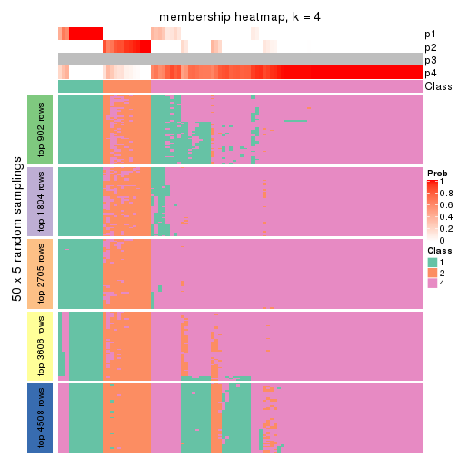
membership_heatmap(res, k = 5)
membership_heatmap(res, k = 6)
As soon as we have had the classes for columns, we can look for signatures which are significantly different between classes which can be candidate marks for certain classes. Following are the heatmaps for signatures.
Signature heatmaps where rows are scaled:
get_signatures(res, k = 2)
get_signatures(res, k = 3)
get_signatures(res, k = 4)
get_signatures(res, k = 5)
get_signatures(res, k = 6)
Signature heatmaps where rows are not scaled:
get_signatures(res, k = 2, scale_rows = FALSE)
get_signatures(res, k = 3, scale_rows = FALSE)
get_signatures(res, k = 4, scale_rows = FALSE)
get_signatures(res, k = 5, scale_rows = FALSE)
get_signatures(res, k = 6, scale_rows = FALSE)
Compare the overlap of signatures from different k:
compare_signatures(res)
get_signature() returns a data frame invisibly. TO get the list of signatures, the function
call should be assigned to a variable explicitly. In following code, if plot argument is set
to FALSE, no heatmap is plotted while only the differential analysis is performed.
# code only for demonstration
tb = get_signature(res, k = ..., plot = FALSE)
An example of the output of tb is:
#> which_row fdr mean_1 mean_2 scaled_mean_1 scaled_mean_2 km
#> 1 38 0.042760348 8.373488 9.131774 -0.5533452 0.5164555 1
#> 2 40 0.018707592 7.106213 8.469186 -0.6173731 0.5762149 1
#> 3 55 0.019134737 10.221463 11.207825 -0.6159697 0.5749050 1
#> 4 59 0.006059896 5.921854 7.869574 -0.6899429 0.6439467 1
#> 5 60 0.018055526 8.928898 10.211722 -0.6204761 0.5791110 1
#> 6 98 0.009384629 15.714769 14.887706 0.6635654 -0.6193277 2
...
The columns in tb are:
which_row: row indices corresponding to the input matrix.fdr: FDR for the differential test. mean_x: The mean value in group x.scaled_mean_x: The mean value in group x after rows are scaled.km: Row groups if k-means clustering is applied to rows.UMAP plot which shows how samples are separated.
dimension_reduction(res, k = 2, method = "UMAP")
dimension_reduction(res, k = 3, method = "UMAP")
dimension_reduction(res, k = 4, method = "UMAP")
dimension_reduction(res, k = 5, method = "UMAP")
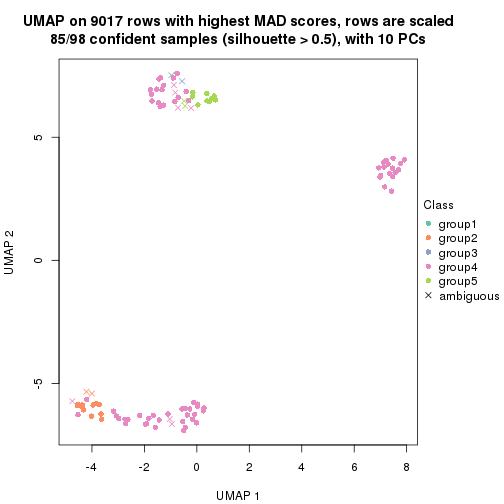
dimension_reduction(res, k = 6, method = "UMAP")
Following heatmap shows how subgroups are split when increasing k:
collect_classes(res)
If matrix rows can be associated to genes, consider to use functional_enrichment(res,
...) to perform function enrichment for the signature genes. See this vignette for more detailed explanations.
The object with results only for a single top-value method and a single partition method can be extracted as:
res = res_list["MAD", "mclust"]
# you can also extract it by
# res = res_list["MAD:mclust"]
A summary of res and all the functions that can be applied to it:
res
#> A 'ConsensusPartition' object with k = 2, 3, 4, 5, 6.
#> On a matrix with 9017 rows and 98 columns.
#> Top rows (902, 1804, 2705, 3606, 4508) are extracted by 'MAD' method.
#> Subgroups are detected by 'mclust' method.
#> Performed in total 1250 partitions by row resampling.
#> Best k for subgroups seems to be 5.
#>
#> Following methods can be applied to this 'ConsensusPartition' object:
#> [1] "cola_report" "collect_classes" "collect_plots"
#> [4] "collect_stats" "colnames" "compare_signatures"
#> [7] "consensus_heatmap" "dimension_reduction" "functional_enrichment"
#> [10] "get_anno_col" "get_anno" "get_classes"
#> [13] "get_consensus" "get_matrix" "get_membership"
#> [16] "get_param" "get_signatures" "get_stats"
#> [19] "is_best_k" "is_stable_k" "membership_heatmap"
#> [22] "ncol" "nrow" "plot_ecdf"
#> [25] "rownames" "select_partition_number" "show"
#> [28] "suggest_best_k" "test_to_known_factors"
collect_plots() function collects all the plots made from res for all k (number of partitions)
into one single page to provide an easy and fast comparison between different k.
collect_plots(res)
The plots are:
k and the heatmap of
predicted classes for each k.k.k.k.All the plots in panels can be made by individual functions and they are plotted later in this section.
select_partition_number() produces several plots showing different
statistics for choosing “optimized” k. There are following statistics:
k;k, the area increased is defined as \(A_k - A_{k-1}\).The detailed explanations of these statistics can be found in the cola vignette.
Generally speaking, lower PAC score, higher mean silhouette score or higher
concordance corresponds to better partition. Rand index and Jaccard index
measure how similar the current partition is compared to partition with k-1.
If they are too similar, we won't accept k is better than k-1.
select_partition_number(res)
The numeric values for all these statistics can be obtained by get_stats().
get_stats(res)
#> k 1-PAC mean_silhouette concordance area_increased Rand Jaccard
#> 2 2 1.000 0.992 0.996 0.5049 0.496 0.496
#> 3 3 0.764 0.890 0.849 0.2312 0.886 0.771
#> 4 4 1.000 0.946 0.979 0.1872 0.859 0.640
#> 5 5 0.922 0.921 0.948 0.0731 0.933 0.746
#> 6 6 0.891 0.844 0.897 0.0274 0.985 0.929
suggest_best_k() suggests the best \(k\) based on these statistics. The rules are as follows:
suggest_best_k(res)
#> [1] 5
#> attr(,"optional")
#> [1] 2 4
There is also optional best \(k\) = 2 4 that is worth to check.
Following shows the table of the partitions (You need to click the show/hide
code output link to see it). The membership matrix (columns with name p*)
is inferred by
clue::cl_consensus()
function with the SE method. Basically the value in the membership matrix
represents the probability to belong to a certain group. The finall class
label for an item is determined with the group with highest probability it
belongs to.
In get_classes() function, the entropy is calculated from the membership
matrix and the silhouette score is calculated from the consensus matrix.
cbind(get_classes(res, k = 2), get_membership(res, k = 2))
#> class entropy silhouette p1 p2
#> SRR1810660 1 0.0000 0.993 1.000 0.000
#> SRR1810659 1 0.0000 0.993 1.000 0.000
#> SRR1810658 1 0.0000 0.993 1.000 0.000
#> SRR1810657 1 0.0000 0.993 1.000 0.000
#> SRR1818435 1 0.5629 0.856 0.868 0.132
#> SRR1818434 1 0.5178 0.876 0.884 0.116
#> SRR1810752 2 0.0000 0.998 0.000 1.000
#> SRR1810751 2 0.0000 0.998 0.000 1.000
#> SRR1810749 1 0.0000 0.993 1.000 0.000
#> SRR1810748 1 0.0000 0.993 1.000 0.000
#> SRR1810750 1 0.0000 0.993 1.000 0.000
#> SRR1810747 2 0.0000 0.998 0.000 1.000
#> SRR1810746 1 0.0000 0.993 1.000 0.000
#> SRR1810745 1 0.0000 0.993 1.000 0.000
#> SRR1810744 1 0.0000 0.993 1.000 0.000
#> SRR1810743 1 0.0000 0.993 1.000 0.000
#> SRR1810742 2 0.0376 0.998 0.004 0.996
#> SRR1810741 2 0.0000 0.998 0.000 1.000
#> SRR1810740 1 0.0000 0.993 1.000 0.000
#> SRR1810739 1 0.0000 0.993 1.000 0.000
#> SRR1810738 1 0.0000 0.993 1.000 0.000
#> SRR1810737 2 0.0376 0.998 0.004 0.996
#> SRR1810736 2 0.0376 0.998 0.004 0.996
#> SRR1810734 2 0.0000 0.998 0.000 1.000
#> SRR1810735 2 0.0376 0.998 0.004 0.996
#> SRR1810733 2 0.0376 0.998 0.004 0.996
#> SRR1810732 1 0.0000 0.993 1.000 0.000
#> SRR1810730 2 0.0376 0.998 0.004 0.996
#> SRR1810729 1 0.0000 0.993 1.000 0.000
#> SRR1810731 1 0.0000 0.993 1.000 0.000
#> SRR1810728 2 0.0376 0.998 0.004 0.996
#> SRR1810727 2 0.0376 0.998 0.004 0.996
#> SRR1810726 1 0.2043 0.965 0.968 0.032
#> SRR1810725 2 0.0376 0.998 0.004 0.996
#> SRR1810724 2 0.0376 0.998 0.004 0.996
#> SRR1810723 1 0.0000 0.993 1.000 0.000
#> SRR1810722 1 0.0000 0.993 1.000 0.000
#> SRR1810721 1 0.0000 0.993 1.000 0.000
#> SRR1810720 1 0.0000 0.993 1.000 0.000
#> SRR1810719 2 0.0000 0.998 0.000 1.000
#> SRR1810718 1 0.0000 0.993 1.000 0.000
#> SRR1810717 1 0.0000 0.993 1.000 0.000
#> SRR1810716 2 0.0376 0.998 0.004 0.996
#> SRR1810715 2 0.0000 0.998 0.000 1.000
#> SRR1810713 2 0.0000 0.998 0.000 1.000
#> SRR1810714 1 0.0000 0.993 1.000 0.000
#> SRR1810712 2 0.0000 0.998 0.000 1.000
#> SRR1810710 2 0.0376 0.998 0.004 0.996
#> SRR1810711 2 0.0000 0.998 0.000 1.000
#> SRR1810709 2 0.0376 0.998 0.004 0.996
#> SRR1810708 1 0.0000 0.993 1.000 0.000
#> SRR1810707 1 0.0000 0.993 1.000 0.000
#> SRR1810706 2 0.0376 0.998 0.004 0.996
#> SRR1810704 1 0.0000 0.993 1.000 0.000
#> SRR1810705 1 0.0000 0.993 1.000 0.000
#> SRR1810703 1 0.0000 0.993 1.000 0.000
#> SRR1810702 2 0.0000 0.998 0.000 1.000
#> SRR1810701 1 0.0000 0.993 1.000 0.000
#> SRR1810700 2 0.0000 0.998 0.000 1.000
#> SRR1810699 2 0.0000 0.998 0.000 1.000
#> SRR1810696 2 0.0376 0.998 0.004 0.996
#> SRR1810695 2 0.0376 0.998 0.004 0.996
#> SRR1810698 2 0.0376 0.998 0.004 0.996
#> SRR1810697 2 0.0376 0.998 0.004 0.996
#> SRR1810694 2 0.0376 0.998 0.004 0.996
#> SRR1810693 1 0.0000 0.993 1.000 0.000
#> SRR1810692 2 0.0000 0.998 0.000 1.000
#> SRR1810690 2 0.0000 0.998 0.000 1.000
#> SRR1810691 1 0.0000 0.993 1.000 0.000
#> SRR1810689 2 0.0000 0.998 0.000 1.000
#> SRR1810688 2 0.0000 0.998 0.000 1.000
#> SRR1810687 2 0.0000 0.998 0.000 1.000
#> SRR1810685 1 0.0000 0.993 1.000 0.000
#> SRR1810686 2 0.0000 0.998 0.000 1.000
#> SRR1810684 2 0.0376 0.998 0.004 0.996
#> SRR1810683 2 0.0000 0.998 0.000 1.000
#> SRR1810680 2 0.0000 0.998 0.000 1.000
#> SRR1810679 2 0.0376 0.998 0.004 0.996
#> SRR1810678 2 0.0000 0.998 0.000 1.000
#> SRR1810682 2 0.0000 0.998 0.000 1.000
#> SRR1810681 2 0.0376 0.998 0.004 0.996
#> SRR1810677 2 0.0000 0.998 0.000 1.000
#> SRR1810676 2 0.0000 0.998 0.000 1.000
#> SRR1810675 1 0.0376 0.992 0.996 0.004
#> SRR1810673 1 0.0376 0.992 0.996 0.004
#> SRR1810674 1 0.0376 0.992 0.996 0.004
#> SRR1810671 1 0.0376 0.992 0.996 0.004
#> SRR1810670 1 0.0376 0.992 0.996 0.004
#> SRR1810669 1 0.0376 0.992 0.996 0.004
#> SRR1810667 1 0.0376 0.992 0.996 0.004
#> SRR1810666 1 0.0376 0.992 0.996 0.004
#> SRR1810672 1 0.0376 0.992 0.996 0.004
#> SRR1810668 1 0.0376 0.992 0.996 0.004
#> SRR1810665 1 0.0376 0.992 0.996 0.004
#> SRR1810664 1 0.0376 0.992 0.996 0.004
#> SRR1810663 1 0.0376 0.992 0.996 0.004
#> SRR1810661 1 0.0376 0.992 0.996 0.004
#> SRR1810662 1 0.0376 0.992 0.996 0.004
cbind(get_classes(res, k = 3), get_membership(res, k = 3))
#> class entropy silhouette p1 p2 p3
#> SRR1810660 1 0.0000 0.886 1.000 0.000 0.000
#> SRR1810659 1 0.0000 0.886 1.000 0.000 0.000
#> SRR1810658 1 0.0000 0.886 1.000 0.000 0.000
#> SRR1810657 1 0.0000 0.886 1.000 0.000 0.000
#> SRR1818435 1 0.5835 0.764 0.660 0.000 0.340
#> SRR1818434 1 0.5810 0.766 0.664 0.000 0.336
#> SRR1810752 2 0.0000 0.964 0.000 1.000 0.000
#> SRR1810751 2 0.0000 0.964 0.000 1.000 0.000
#> SRR1810749 1 0.0000 0.886 1.000 0.000 0.000
#> SRR1810748 1 0.0000 0.886 1.000 0.000 0.000
#> SRR1810750 1 0.0000 0.886 1.000 0.000 0.000
#> SRR1810747 2 0.0000 0.964 0.000 1.000 0.000
#> SRR1810746 1 0.0000 0.886 1.000 0.000 0.000
#> SRR1810745 1 0.0000 0.886 1.000 0.000 0.000
#> SRR1810744 1 0.0000 0.886 1.000 0.000 0.000
#> SRR1810743 1 0.0000 0.886 1.000 0.000 0.000
#> SRR1810742 3 0.6079 1.000 0.000 0.388 0.612
#> SRR1810741 2 0.0000 0.964 0.000 1.000 0.000
#> SRR1810740 1 0.0000 0.886 1.000 0.000 0.000
#> SRR1810739 1 0.0000 0.886 1.000 0.000 0.000
#> SRR1810738 1 0.0000 0.886 1.000 0.000 0.000
#> SRR1810737 3 0.6079 1.000 0.000 0.388 0.612
#> SRR1810736 3 0.6079 1.000 0.000 0.388 0.612
#> SRR1810734 2 0.0000 0.964 0.000 1.000 0.000
#> SRR1810735 3 0.6079 1.000 0.000 0.388 0.612
#> SRR1810733 3 0.6079 1.000 0.000 0.388 0.612
#> SRR1810732 1 0.0000 0.886 1.000 0.000 0.000
#> SRR1810730 3 0.6079 1.000 0.000 0.388 0.612
#> SRR1810729 1 0.0000 0.886 1.000 0.000 0.000
#> SRR1810731 1 0.0000 0.886 1.000 0.000 0.000
#> SRR1810728 3 0.6079 1.000 0.000 0.388 0.612
#> SRR1810727 3 0.6079 1.000 0.000 0.388 0.612
#> SRR1810726 1 0.0000 0.886 1.000 0.000 0.000
#> SRR1810725 3 0.6079 1.000 0.000 0.388 0.612
#> SRR1810724 3 0.6079 1.000 0.000 0.388 0.612
#> SRR1810723 1 0.0424 0.884 0.992 0.000 0.008
#> SRR1810722 1 0.0000 0.886 1.000 0.000 0.000
#> SRR1810721 1 0.0000 0.886 1.000 0.000 0.000
#> SRR1810720 1 0.0000 0.886 1.000 0.000 0.000
#> SRR1810719 2 0.0000 0.964 0.000 1.000 0.000
#> SRR1810718 1 0.0000 0.886 1.000 0.000 0.000
#> SRR1810717 1 0.0000 0.886 1.000 0.000 0.000
#> SRR1810716 3 0.6079 1.000 0.000 0.388 0.612
#> SRR1810715 2 0.0000 0.964 0.000 1.000 0.000
#> SRR1810713 2 0.0000 0.964 0.000 1.000 0.000
#> SRR1810714 1 0.0000 0.886 1.000 0.000 0.000
#> SRR1810712 2 0.0000 0.964 0.000 1.000 0.000
#> SRR1810710 3 0.6079 1.000 0.000 0.388 0.612
#> SRR1810711 2 0.0000 0.964 0.000 1.000 0.000
#> SRR1810709 3 0.6079 1.000 0.000 0.388 0.612
#> SRR1810708 1 0.0000 0.886 1.000 0.000 0.000
#> SRR1810707 1 0.0000 0.886 1.000 0.000 0.000
#> SRR1810706 3 0.6079 1.000 0.000 0.388 0.612
#> SRR1810704 1 0.0000 0.886 1.000 0.000 0.000
#> SRR1810705 1 0.0000 0.886 1.000 0.000 0.000
#> SRR1810703 1 0.0000 0.886 1.000 0.000 0.000
#> SRR1810702 2 0.0000 0.964 0.000 1.000 0.000
#> SRR1810701 1 0.0000 0.886 1.000 0.000 0.000
#> SRR1810700 2 0.0000 0.964 0.000 1.000 0.000
#> SRR1810699 2 0.0000 0.964 0.000 1.000 0.000
#> SRR1810696 3 0.6079 1.000 0.000 0.388 0.612
#> SRR1810695 2 0.5988 -0.326 0.000 0.632 0.368
#> SRR1810698 3 0.6079 1.000 0.000 0.388 0.612
#> SRR1810697 3 0.6079 1.000 0.000 0.388 0.612
#> SRR1810694 3 0.6079 1.000 0.000 0.388 0.612
#> SRR1810693 1 0.0000 0.886 1.000 0.000 0.000
#> SRR1810692 2 0.0592 0.949 0.000 0.988 0.012
#> SRR1810690 2 0.0000 0.964 0.000 1.000 0.000
#> SRR1810691 1 0.0000 0.886 1.000 0.000 0.000
#> SRR1810689 2 0.0000 0.964 0.000 1.000 0.000
#> SRR1810688 2 0.0000 0.964 0.000 1.000 0.000
#> SRR1810687 2 0.0237 0.960 0.000 0.996 0.004
#> SRR1810685 1 0.0000 0.886 1.000 0.000 0.000
#> SRR1810686 2 0.0237 0.960 0.000 0.996 0.004
#> SRR1810684 3 0.6079 1.000 0.000 0.388 0.612
#> SRR1810683 2 0.0000 0.964 0.000 1.000 0.000
#> SRR1810680 2 0.0237 0.960 0.000 0.996 0.004
#> SRR1810679 3 0.6079 1.000 0.000 0.388 0.612
#> SRR1810678 2 0.0000 0.964 0.000 1.000 0.000
#> SRR1810682 2 0.0000 0.964 0.000 1.000 0.000
#> SRR1810681 2 0.4178 0.610 0.000 0.828 0.172
#> SRR1810677 2 0.0000 0.964 0.000 1.000 0.000
#> SRR1810676 2 0.0000 0.964 0.000 1.000 0.000
#> SRR1810675 1 0.6079 0.745 0.612 0.000 0.388
#> SRR1810673 1 0.6079 0.745 0.612 0.000 0.388
#> SRR1810674 1 0.6079 0.745 0.612 0.000 0.388
#> SRR1810671 1 0.6079 0.745 0.612 0.000 0.388
#> SRR1810670 1 0.6079 0.745 0.612 0.000 0.388
#> SRR1810669 1 0.6045 0.748 0.620 0.000 0.380
#> SRR1810667 1 0.6079 0.745 0.612 0.000 0.388
#> SRR1810666 1 0.6079 0.745 0.612 0.000 0.388
#> SRR1810672 1 0.6079 0.745 0.612 0.000 0.388
#> SRR1810668 1 0.6079 0.745 0.612 0.000 0.388
#> SRR1810665 1 0.6079 0.745 0.612 0.000 0.388
#> SRR1810664 1 0.6079 0.745 0.612 0.000 0.388
#> SRR1810663 1 0.6079 0.745 0.612 0.000 0.388
#> SRR1810661 1 0.6079 0.745 0.612 0.000 0.388
#> SRR1810662 1 0.6079 0.745 0.612 0.000 0.388
cbind(get_classes(res, k = 4), get_membership(res, k = 4))
#> class entropy silhouette p1 p2 p3 p4
#> SRR1810660 1 0.0188 0.9966 0.996 0.000 0.004 0.000
#> SRR1810659 1 0.0188 0.9966 0.996 0.000 0.004 0.000
#> SRR1810658 1 0.0188 0.9966 0.996 0.000 0.004 0.000
#> SRR1810657 1 0.0188 0.9966 0.996 0.000 0.004 0.000
#> SRR1818435 3 0.4898 0.3299 0.416 0.000 0.584 0.000
#> SRR1818434 3 0.4898 0.3299 0.416 0.000 0.584 0.000
#> SRR1810752 2 0.0000 0.9796 0.000 1.000 0.000 0.000
#> SRR1810751 2 0.0000 0.9796 0.000 1.000 0.000 0.000
#> SRR1810749 1 0.0000 0.9972 1.000 0.000 0.000 0.000
#> SRR1810748 1 0.0188 0.9966 0.996 0.000 0.004 0.000
#> SRR1810750 1 0.0000 0.9972 1.000 0.000 0.000 0.000
#> SRR1810747 2 0.0000 0.9796 0.000 1.000 0.000 0.000
#> SRR1810746 1 0.0000 0.9972 1.000 0.000 0.000 0.000
#> SRR1810745 1 0.0000 0.9972 1.000 0.000 0.000 0.000
#> SRR1810744 1 0.0000 0.9972 1.000 0.000 0.000 0.000
#> SRR1810743 1 0.0000 0.9972 1.000 0.000 0.000 0.000
#> SRR1810742 4 0.0000 0.9650 0.000 0.000 0.000 1.000
#> SRR1810741 2 0.0000 0.9796 0.000 1.000 0.000 0.000
#> SRR1810740 1 0.0707 0.9814 0.980 0.000 0.020 0.000
#> SRR1810739 1 0.0000 0.9972 1.000 0.000 0.000 0.000
#> SRR1810738 1 0.0000 0.9972 1.000 0.000 0.000 0.000
#> SRR1810737 4 0.0000 0.9650 0.000 0.000 0.000 1.000
#> SRR1810736 4 0.0000 0.9650 0.000 0.000 0.000 1.000
#> SRR1810734 2 0.0000 0.9796 0.000 1.000 0.000 0.000
#> SRR1810735 4 0.0000 0.9650 0.000 0.000 0.000 1.000
#> SRR1810733 4 0.0000 0.9650 0.000 0.000 0.000 1.000
#> SRR1810732 1 0.0188 0.9966 0.996 0.000 0.004 0.000
#> SRR1810730 4 0.0000 0.9650 0.000 0.000 0.000 1.000
#> SRR1810729 1 0.0188 0.9966 0.996 0.000 0.004 0.000
#> SRR1810731 1 0.0000 0.9972 1.000 0.000 0.000 0.000
#> SRR1810728 4 0.0000 0.9650 0.000 0.000 0.000 1.000
#> SRR1810727 4 0.0000 0.9650 0.000 0.000 0.000 1.000
#> SRR1810726 1 0.0188 0.9966 0.996 0.000 0.004 0.000
#> SRR1810725 4 0.0000 0.9650 0.000 0.000 0.000 1.000
#> SRR1810724 4 0.0188 0.9619 0.000 0.004 0.000 0.996
#> SRR1810723 1 0.0592 0.9856 0.984 0.000 0.016 0.000
#> SRR1810722 1 0.0000 0.9972 1.000 0.000 0.000 0.000
#> SRR1810721 1 0.0000 0.9972 1.000 0.000 0.000 0.000
#> SRR1810720 1 0.0000 0.9972 1.000 0.000 0.000 0.000
#> SRR1810719 2 0.0000 0.9796 0.000 1.000 0.000 0.000
#> SRR1810718 1 0.0188 0.9966 0.996 0.000 0.004 0.000
#> SRR1810717 1 0.0000 0.9972 1.000 0.000 0.000 0.000
#> SRR1810716 4 0.0000 0.9650 0.000 0.000 0.000 1.000
#> SRR1810715 2 0.0000 0.9796 0.000 1.000 0.000 0.000
#> SRR1810713 2 0.0000 0.9796 0.000 1.000 0.000 0.000
#> SRR1810714 1 0.0188 0.9966 0.996 0.000 0.004 0.000
#> SRR1810712 2 0.0000 0.9796 0.000 1.000 0.000 0.000
#> SRR1810710 4 0.0000 0.9650 0.000 0.000 0.000 1.000
#> SRR1810711 2 0.0000 0.9796 0.000 1.000 0.000 0.000
#> SRR1810709 4 0.0000 0.9650 0.000 0.000 0.000 1.000
#> SRR1810708 1 0.0000 0.9972 1.000 0.000 0.000 0.000
#> SRR1810707 1 0.0188 0.9966 0.996 0.000 0.004 0.000
#> SRR1810706 4 0.0188 0.9619 0.000 0.004 0.000 0.996
#> SRR1810704 1 0.0000 0.9972 1.000 0.000 0.000 0.000
#> SRR1810705 1 0.0000 0.9972 1.000 0.000 0.000 0.000
#> SRR1810703 1 0.0000 0.9972 1.000 0.000 0.000 0.000
#> SRR1810702 2 0.0000 0.9796 0.000 1.000 0.000 0.000
#> SRR1810701 1 0.0000 0.9972 1.000 0.000 0.000 0.000
#> SRR1810700 2 0.0000 0.9796 0.000 1.000 0.000 0.000
#> SRR1810699 2 0.0000 0.9796 0.000 1.000 0.000 0.000
#> SRR1810696 4 0.0000 0.9650 0.000 0.000 0.000 1.000
#> SRR1810695 4 0.3172 0.7910 0.000 0.160 0.000 0.840
#> SRR1810698 4 0.0000 0.9650 0.000 0.000 0.000 1.000
#> SRR1810697 4 0.0000 0.9650 0.000 0.000 0.000 1.000
#> SRR1810694 4 0.0000 0.9650 0.000 0.000 0.000 1.000
#> SRR1810693 1 0.0188 0.9966 0.996 0.000 0.004 0.000
#> SRR1810692 2 0.4040 0.6715 0.000 0.752 0.000 0.248
#> SRR1810690 2 0.0188 0.9770 0.000 0.996 0.000 0.004
#> SRR1810691 1 0.0000 0.9972 1.000 0.000 0.000 0.000
#> SRR1810689 2 0.0000 0.9796 0.000 1.000 0.000 0.000
#> SRR1810688 2 0.0000 0.9796 0.000 1.000 0.000 0.000
#> SRR1810687 2 0.2011 0.9113 0.000 0.920 0.000 0.080
#> SRR1810685 1 0.0188 0.9966 0.996 0.000 0.004 0.000
#> SRR1810686 2 0.2011 0.9113 0.000 0.920 0.000 0.080
#> SRR1810684 4 0.0000 0.9650 0.000 0.000 0.000 1.000
#> SRR1810683 2 0.0000 0.9796 0.000 1.000 0.000 0.000
#> SRR1810680 2 0.1302 0.9453 0.000 0.956 0.000 0.044
#> SRR1810679 4 0.0000 0.9650 0.000 0.000 0.000 1.000
#> SRR1810678 2 0.0000 0.9796 0.000 1.000 0.000 0.000
#> SRR1810682 2 0.0000 0.9796 0.000 1.000 0.000 0.000
#> SRR1810681 4 0.4994 0.0283 0.000 0.480 0.000 0.520
#> SRR1810677 2 0.0188 0.9770 0.000 0.996 0.000 0.004
#> SRR1810676 2 0.0000 0.9796 0.000 1.000 0.000 0.000
#> SRR1810675 3 0.0000 0.9359 0.000 0.000 1.000 0.000
#> SRR1810673 3 0.0000 0.9359 0.000 0.000 1.000 0.000
#> SRR1810674 3 0.0000 0.9359 0.000 0.000 1.000 0.000
#> SRR1810671 3 0.0000 0.9359 0.000 0.000 1.000 0.000
#> SRR1810670 3 0.0000 0.9359 0.000 0.000 1.000 0.000
#> SRR1810669 3 0.0817 0.9170 0.024 0.000 0.976 0.000
#> SRR1810667 3 0.0000 0.9359 0.000 0.000 1.000 0.000
#> SRR1810666 3 0.0000 0.9359 0.000 0.000 1.000 0.000
#> SRR1810672 3 0.0336 0.9302 0.008 0.000 0.992 0.000
#> SRR1810668 3 0.0000 0.9359 0.000 0.000 1.000 0.000
#> SRR1810665 3 0.0000 0.9359 0.000 0.000 1.000 0.000
#> SRR1810664 3 0.0000 0.9359 0.000 0.000 1.000 0.000
#> SRR1810663 3 0.0000 0.9359 0.000 0.000 1.000 0.000
#> SRR1810661 3 0.0000 0.9359 0.000 0.000 1.000 0.000
#> SRR1810662 3 0.0000 0.9359 0.000 0.000 1.000 0.000
cbind(get_classes(res, k = 5), get_membership(res, k = 5))
#> class entropy silhouette p1 p2 p3 p4 p5
#> SRR1810660 5 0.2020 0.829 0.100 0.000 0.000 0.000 0.900
#> SRR1810659 5 0.2127 0.828 0.108 0.000 0.000 0.000 0.892
#> SRR1810658 5 0.2020 0.829 0.100 0.000 0.000 0.000 0.900
#> SRR1810657 5 0.2020 0.829 0.100 0.000 0.000 0.000 0.900
#> SRR1818435 5 0.4533 0.169 0.008 0.000 0.448 0.000 0.544
#> SRR1818434 5 0.4878 0.181 0.024 0.000 0.440 0.000 0.536
#> SRR1810752 2 0.0794 0.966 0.000 0.972 0.000 0.000 0.028
#> SRR1810751 2 0.0609 0.968 0.000 0.980 0.000 0.000 0.020
#> SRR1810749 1 0.0000 0.978 1.000 0.000 0.000 0.000 0.000
#> SRR1810748 5 0.2020 0.829 0.100 0.000 0.000 0.000 0.900
#> SRR1810750 1 0.1043 0.959 0.960 0.000 0.000 0.000 0.040
#> SRR1810747 2 0.0162 0.969 0.000 0.996 0.000 0.000 0.004
#> SRR1810746 1 0.0000 0.978 1.000 0.000 0.000 0.000 0.000
#> SRR1810745 1 0.0162 0.978 0.996 0.000 0.000 0.000 0.004
#> SRR1810744 1 0.0000 0.978 1.000 0.000 0.000 0.000 0.000
#> SRR1810743 1 0.0404 0.976 0.988 0.000 0.000 0.000 0.012
#> SRR1810742 4 0.0000 0.967 0.000 0.000 0.000 1.000 0.000
#> SRR1810741 2 0.0963 0.964 0.000 0.964 0.000 0.000 0.036
#> SRR1810740 5 0.3838 0.755 0.280 0.000 0.004 0.000 0.716
#> SRR1810739 1 0.0000 0.978 1.000 0.000 0.000 0.000 0.000
#> SRR1810738 1 0.0000 0.978 1.000 0.000 0.000 0.000 0.000
#> SRR1810737 4 0.0000 0.967 0.000 0.000 0.000 1.000 0.000
#> SRR1810736 4 0.0000 0.967 0.000 0.000 0.000 1.000 0.000
#> SRR1810734 2 0.0000 0.969 0.000 1.000 0.000 0.000 0.000
#> SRR1810735 4 0.0000 0.967 0.000 0.000 0.000 1.000 0.000
#> SRR1810733 4 0.0290 0.962 0.000 0.000 0.000 0.992 0.008
#> SRR1810732 5 0.3707 0.751 0.284 0.000 0.000 0.000 0.716
#> SRR1810730 4 0.0000 0.967 0.000 0.000 0.000 1.000 0.000
#> SRR1810729 5 0.3910 0.761 0.272 0.000 0.008 0.000 0.720
#> SRR1810731 1 0.0000 0.978 1.000 0.000 0.000 0.000 0.000
#> SRR1810728 4 0.0000 0.967 0.000 0.000 0.000 1.000 0.000
#> SRR1810727 4 0.0000 0.967 0.000 0.000 0.000 1.000 0.000
#> SRR1810726 1 0.2067 0.928 0.920 0.000 0.032 0.000 0.048
#> SRR1810725 4 0.0000 0.967 0.000 0.000 0.000 1.000 0.000
#> SRR1810724 4 0.0794 0.947 0.000 0.000 0.000 0.972 0.028
#> SRR1810723 1 0.2278 0.904 0.908 0.000 0.060 0.000 0.032
#> SRR1810722 1 0.0000 0.978 1.000 0.000 0.000 0.000 0.000
#> SRR1810721 1 0.0162 0.978 0.996 0.000 0.000 0.000 0.004
#> SRR1810720 1 0.0000 0.978 1.000 0.000 0.000 0.000 0.000
#> SRR1810719 2 0.0290 0.969 0.000 0.992 0.000 0.000 0.008
#> SRR1810718 5 0.2020 0.829 0.100 0.000 0.000 0.000 0.900
#> SRR1810717 1 0.0404 0.976 0.988 0.000 0.000 0.000 0.012
#> SRR1810716 4 0.0000 0.967 0.000 0.000 0.000 1.000 0.000
#> SRR1810715 2 0.0162 0.969 0.000 0.996 0.000 0.000 0.004
#> SRR1810713 2 0.0794 0.966 0.000 0.972 0.000 0.000 0.028
#> SRR1810714 5 0.2516 0.822 0.140 0.000 0.000 0.000 0.860
#> SRR1810712 2 0.0162 0.969 0.000 0.996 0.000 0.000 0.004
#> SRR1810710 4 0.0000 0.967 0.000 0.000 0.000 1.000 0.000
#> SRR1810711 2 0.0162 0.969 0.000 0.996 0.000 0.000 0.004
#> SRR1810709 4 0.0000 0.967 0.000 0.000 0.000 1.000 0.000
#> SRR1810708 1 0.0963 0.963 0.964 0.000 0.000 0.000 0.036
#> SRR1810707 5 0.4045 0.639 0.356 0.000 0.000 0.000 0.644
#> SRR1810706 4 0.0162 0.965 0.000 0.000 0.000 0.996 0.004
#> SRR1810704 1 0.0000 0.978 1.000 0.000 0.000 0.000 0.000
#> SRR1810705 1 0.0510 0.974 0.984 0.000 0.000 0.000 0.016
#> SRR1810703 1 0.1341 0.945 0.944 0.000 0.000 0.000 0.056
#> SRR1810702 2 0.0162 0.969 0.000 0.996 0.000 0.000 0.004
#> SRR1810701 1 0.1121 0.956 0.956 0.000 0.000 0.000 0.044
#> SRR1810700 2 0.0162 0.969 0.000 0.996 0.000 0.000 0.004
#> SRR1810699 2 0.0162 0.969 0.000 0.996 0.000 0.000 0.004
#> SRR1810696 4 0.0000 0.967 0.000 0.000 0.000 1.000 0.000
#> SRR1810695 4 0.3752 0.763 0.000 0.148 0.000 0.804 0.048
#> SRR1810698 4 0.0000 0.967 0.000 0.000 0.000 1.000 0.000
#> SRR1810697 4 0.0000 0.967 0.000 0.000 0.000 1.000 0.000
#> SRR1810694 4 0.0000 0.967 0.000 0.000 0.000 1.000 0.000
#> SRR1810693 5 0.3707 0.751 0.284 0.000 0.000 0.000 0.716
#> SRR1810692 2 0.4793 0.674 0.000 0.708 0.000 0.216 0.076
#> SRR1810690 2 0.1270 0.957 0.000 0.948 0.000 0.000 0.052
#> SRR1810691 1 0.0000 0.978 1.000 0.000 0.000 0.000 0.000
#> SRR1810689 2 0.0703 0.967 0.000 0.976 0.000 0.000 0.024
#> SRR1810688 2 0.0162 0.969 0.000 0.996 0.000 0.000 0.004
#> SRR1810687 2 0.2189 0.933 0.000 0.904 0.000 0.012 0.084
#> SRR1810685 1 0.0794 0.969 0.972 0.000 0.000 0.000 0.028
#> SRR1810686 2 0.2189 0.933 0.000 0.904 0.000 0.012 0.084
#> SRR1810684 4 0.0000 0.967 0.000 0.000 0.000 1.000 0.000
#> SRR1810683 2 0.0162 0.969 0.000 0.996 0.000 0.000 0.004
#> SRR1810680 2 0.2006 0.941 0.000 0.916 0.000 0.012 0.072
#> SRR1810679 4 0.0000 0.967 0.000 0.000 0.000 1.000 0.000
#> SRR1810678 2 0.0703 0.966 0.000 0.976 0.000 0.000 0.024
#> SRR1810682 2 0.0162 0.969 0.000 0.996 0.000 0.000 0.004
#> SRR1810681 4 0.4987 0.406 0.000 0.340 0.000 0.616 0.044
#> SRR1810677 2 0.1704 0.947 0.000 0.928 0.000 0.004 0.068
#> SRR1810676 2 0.0510 0.968 0.000 0.984 0.000 0.000 0.016
#> SRR1810675 3 0.0000 0.998 0.000 0.000 1.000 0.000 0.000
#> SRR1810673 3 0.0000 0.998 0.000 0.000 1.000 0.000 0.000
#> SRR1810674 3 0.0000 0.998 0.000 0.000 1.000 0.000 0.000
#> SRR1810671 3 0.0000 0.998 0.000 0.000 1.000 0.000 0.000
#> SRR1810670 3 0.0000 0.998 0.000 0.000 1.000 0.000 0.000
#> SRR1810669 3 0.0671 0.973 0.016 0.000 0.980 0.000 0.004
#> SRR1810667 3 0.0000 0.998 0.000 0.000 1.000 0.000 0.000
#> SRR1810666 3 0.0000 0.998 0.000 0.000 1.000 0.000 0.000
#> SRR1810672 3 0.0162 0.994 0.000 0.000 0.996 0.000 0.004
#> SRR1810668 3 0.0000 0.998 0.000 0.000 1.000 0.000 0.000
#> SRR1810665 3 0.0000 0.998 0.000 0.000 1.000 0.000 0.000
#> SRR1810664 3 0.0000 0.998 0.000 0.000 1.000 0.000 0.000
#> SRR1810663 3 0.0000 0.998 0.000 0.000 1.000 0.000 0.000
#> SRR1810661 3 0.0000 0.998 0.000 0.000 1.000 0.000 0.000
#> SRR1810662 3 0.0000 0.998 0.000 0.000 1.000 0.000 0.000
cbind(get_classes(res, k = 6), get_membership(res, k = 6))
#> class entropy silhouette p1 p2 p3 p4 p5 p6
#> SRR1810660 5 0.0000 0.678 0.000 0.000 0.000 0.000 1.000 0.000
#> SRR1810659 5 0.0146 0.681 0.004 0.000 0.000 0.000 0.996 0.000
#> SRR1810658 5 0.0146 0.681 0.004 0.000 0.000 0.000 0.996 0.000
#> SRR1810657 5 0.0291 0.680 0.004 0.000 0.000 0.000 0.992 0.004
#> SRR1818435 6 0.6006 0.977 0.020 0.000 0.396 0.000 0.136 0.448
#> SRR1818434 6 0.6055 0.977 0.020 0.000 0.392 0.000 0.144 0.444
#> SRR1810752 2 0.1141 0.890 0.000 0.948 0.000 0.000 0.000 0.052
#> SRR1810751 2 0.0713 0.891 0.000 0.972 0.000 0.000 0.000 0.028
#> SRR1810749 1 0.2883 0.804 0.788 0.000 0.000 0.000 0.000 0.212
#> SRR1810748 5 0.0000 0.678 0.000 0.000 0.000 0.000 1.000 0.000
#> SRR1810750 1 0.0547 0.880 0.980 0.000 0.000 0.000 0.020 0.000
#> SRR1810747 2 0.0363 0.888 0.000 0.988 0.000 0.000 0.000 0.012
#> SRR1810746 1 0.0000 0.889 1.000 0.000 0.000 0.000 0.000 0.000
#> SRR1810745 1 0.0000 0.889 1.000 0.000 0.000 0.000 0.000 0.000
#> SRR1810744 1 0.0000 0.889 1.000 0.000 0.000 0.000 0.000 0.000
#> SRR1810743 1 0.1814 0.870 0.900 0.000 0.000 0.000 0.000 0.100
#> SRR1810742 4 0.0000 0.955 0.000 0.000 0.000 1.000 0.000 0.000
#> SRR1810741 2 0.1501 0.884 0.000 0.924 0.000 0.000 0.000 0.076
#> SRR1810740 5 0.4179 0.431 0.472 0.000 0.000 0.000 0.516 0.012
#> SRR1810739 1 0.0000 0.889 1.000 0.000 0.000 0.000 0.000 0.000
#> SRR1810738 1 0.2135 0.857 0.872 0.000 0.000 0.000 0.000 0.128
#> SRR1810737 4 0.0000 0.955 0.000 0.000 0.000 1.000 0.000 0.000
#> SRR1810736 4 0.0146 0.954 0.000 0.000 0.000 0.996 0.000 0.004
#> SRR1810734 2 0.0790 0.892 0.000 0.968 0.000 0.000 0.000 0.032
#> SRR1810735 4 0.1007 0.944 0.000 0.000 0.000 0.956 0.000 0.044
#> SRR1810733 4 0.1075 0.942 0.000 0.000 0.000 0.952 0.000 0.048
#> SRR1810732 5 0.4131 0.581 0.384 0.000 0.000 0.000 0.600 0.016
#> SRR1810730 4 0.0000 0.955 0.000 0.000 0.000 1.000 0.000 0.000
#> SRR1810729 5 0.4418 0.580 0.368 0.000 0.016 0.000 0.604 0.012
#> SRR1810731 1 0.1863 0.869 0.896 0.000 0.000 0.000 0.000 0.104
#> SRR1810728 4 0.0146 0.955 0.000 0.000 0.000 0.996 0.000 0.004
#> SRR1810727 4 0.0000 0.955 0.000 0.000 0.000 1.000 0.000 0.000
#> SRR1810726 1 0.4139 0.640 0.644 0.000 0.012 0.000 0.008 0.336
#> SRR1810725 4 0.0146 0.954 0.000 0.000 0.000 0.996 0.000 0.004
#> SRR1810724 4 0.2092 0.866 0.000 0.000 0.000 0.876 0.000 0.124
#> SRR1810723 1 0.1408 0.861 0.944 0.000 0.020 0.000 0.036 0.000
#> SRR1810722 1 0.0146 0.888 0.996 0.000 0.000 0.000 0.004 0.000
#> SRR1810721 1 0.2854 0.808 0.792 0.000 0.000 0.000 0.000 0.208
#> SRR1810720 1 0.2854 0.808 0.792 0.000 0.000 0.000 0.000 0.208
#> SRR1810719 2 0.0458 0.889 0.000 0.984 0.000 0.000 0.000 0.016
#> SRR1810718 5 0.0000 0.678 0.000 0.000 0.000 0.000 1.000 0.000
#> SRR1810717 1 0.0260 0.886 0.992 0.000 0.000 0.000 0.008 0.000
#> SRR1810716 4 0.0790 0.940 0.000 0.000 0.000 0.968 0.000 0.032
#> SRR1810715 2 0.0363 0.889 0.000 0.988 0.000 0.000 0.000 0.012
#> SRR1810713 2 0.1007 0.891 0.000 0.956 0.000 0.000 0.000 0.044
#> SRR1810714 5 0.1644 0.672 0.076 0.000 0.000 0.000 0.920 0.004
#> SRR1810712 2 0.0363 0.888 0.000 0.988 0.000 0.000 0.000 0.012
#> SRR1810710 4 0.0000 0.955 0.000 0.000 0.000 1.000 0.000 0.000
#> SRR1810711 2 0.0790 0.892 0.000 0.968 0.000 0.000 0.000 0.032
#> SRR1810709 4 0.0937 0.945 0.000 0.000 0.000 0.960 0.000 0.040
#> SRR1810708 1 0.0547 0.880 0.980 0.000 0.000 0.000 0.020 0.000
#> SRR1810707 5 0.4660 0.524 0.416 0.000 0.000 0.000 0.540 0.044
#> SRR1810706 4 0.2048 0.870 0.000 0.000 0.000 0.880 0.000 0.120
#> SRR1810704 1 0.0000 0.889 1.000 0.000 0.000 0.000 0.000 0.000
#> SRR1810705 1 0.0000 0.889 1.000 0.000 0.000 0.000 0.000 0.000
#> SRR1810703 1 0.1814 0.804 0.900 0.000 0.000 0.000 0.100 0.000
#> SRR1810702 2 0.0363 0.888 0.000 0.988 0.000 0.000 0.000 0.012
#> SRR1810701 1 0.1387 0.840 0.932 0.000 0.000 0.000 0.068 0.000
#> SRR1810700 2 0.0547 0.892 0.000 0.980 0.000 0.000 0.000 0.020
#> SRR1810699 2 0.1141 0.890 0.000 0.948 0.000 0.000 0.000 0.052
#> SRR1810696 4 0.1007 0.944 0.000 0.000 0.000 0.956 0.000 0.044
#> SRR1810695 4 0.4892 0.561 0.000 0.164 0.000 0.660 0.000 0.176
#> SRR1810698 4 0.0000 0.955 0.000 0.000 0.000 1.000 0.000 0.000
#> SRR1810697 4 0.0000 0.955 0.000 0.000 0.000 1.000 0.000 0.000
#> SRR1810694 4 0.1007 0.944 0.000 0.000 0.000 0.956 0.000 0.044
#> SRR1810693 5 0.4353 0.575 0.384 0.000 0.000 0.000 0.588 0.028
#> SRR1810692 2 0.4319 0.630 0.000 0.576 0.000 0.024 0.000 0.400
#> SRR1810690 2 0.2562 0.839 0.000 0.828 0.000 0.000 0.000 0.172
#> SRR1810691 1 0.2883 0.804 0.788 0.000 0.000 0.000 0.000 0.212
#> SRR1810689 2 0.0713 0.891 0.000 0.972 0.000 0.000 0.000 0.028
#> SRR1810688 2 0.0363 0.888 0.000 0.988 0.000 0.000 0.000 0.012
#> SRR1810687 2 0.3737 0.667 0.000 0.608 0.000 0.000 0.000 0.392
#> SRR1810685 1 0.2994 0.807 0.788 0.000 0.000 0.000 0.004 0.208
#> SRR1810686 2 0.3737 0.667 0.000 0.608 0.000 0.000 0.000 0.392
#> SRR1810684 4 0.1007 0.944 0.000 0.000 0.000 0.956 0.000 0.044
#> SRR1810683 2 0.0363 0.888 0.000 0.988 0.000 0.000 0.000 0.012
#> SRR1810680 2 0.3659 0.693 0.000 0.636 0.000 0.000 0.000 0.364
#> SRR1810679 4 0.0000 0.955 0.000 0.000 0.000 1.000 0.000 0.000
#> SRR1810678 2 0.2260 0.855 0.000 0.860 0.000 0.000 0.000 0.140
#> SRR1810682 2 0.0260 0.889 0.000 0.992 0.000 0.000 0.000 0.008
#> SRR1810681 2 0.6113 0.224 0.000 0.356 0.000 0.296 0.000 0.348
#> SRR1810677 2 0.2260 0.855 0.000 0.860 0.000 0.000 0.000 0.140
#> SRR1810676 2 0.1327 0.888 0.000 0.936 0.000 0.000 0.000 0.064
#> SRR1810675 3 0.1387 0.923 0.000 0.000 0.932 0.000 0.000 0.068
#> SRR1810673 3 0.1610 0.916 0.000 0.000 0.916 0.000 0.000 0.084
#> SRR1810674 3 0.1610 0.916 0.000 0.000 0.916 0.000 0.000 0.084
#> SRR1810671 3 0.0260 0.930 0.000 0.000 0.992 0.000 0.000 0.008
#> SRR1810670 3 0.0363 0.928 0.000 0.000 0.988 0.000 0.000 0.012
#> SRR1810669 3 0.0964 0.909 0.004 0.000 0.968 0.000 0.012 0.016
#> SRR1810667 3 0.1610 0.916 0.000 0.000 0.916 0.000 0.000 0.084
#> SRR1810666 3 0.0260 0.930 0.000 0.000 0.992 0.000 0.000 0.008
#> SRR1810672 3 0.0603 0.922 0.004 0.000 0.980 0.000 0.000 0.016
#> SRR1810668 3 0.0363 0.928 0.000 0.000 0.988 0.000 0.000 0.012
#> SRR1810665 3 0.0260 0.930 0.000 0.000 0.992 0.000 0.000 0.008
#> SRR1810664 3 0.1610 0.916 0.000 0.000 0.916 0.000 0.000 0.084
#> SRR1810663 3 0.1610 0.916 0.000 0.000 0.916 0.000 0.000 0.084
#> SRR1810661 3 0.0000 0.932 0.000 0.000 1.000 0.000 0.000 0.000
#> SRR1810662 3 0.1141 0.927 0.000 0.000 0.948 0.000 0.000 0.052
Heatmaps for the consensus matrix. It visualizes the probability of two samples to be in a same group.
consensus_heatmap(res, k = 2)
consensus_heatmap(res, k = 3)
consensus_heatmap(res, k = 4)
consensus_heatmap(res, k = 5)
consensus_heatmap(res, k = 6)

Heatmaps for the membership of samples in all partitions to see how consistent they are:
membership_heatmap(res, k = 2)
membership_heatmap(res, k = 3)
membership_heatmap(res, k = 4)
membership_heatmap(res, k = 5)
membership_heatmap(res, k = 6)
As soon as we have had the classes for columns, we can look for signatures which are significantly different between classes which can be candidate marks for certain classes. Following are the heatmaps for signatures.
Signature heatmaps where rows are scaled:
get_signatures(res, k = 2)
get_signatures(res, k = 3)
get_signatures(res, k = 4)
get_signatures(res, k = 5)
get_signatures(res, k = 6)
Signature heatmaps where rows are not scaled:
get_signatures(res, k = 2, scale_rows = FALSE)
get_signatures(res, k = 3, scale_rows = FALSE)
get_signatures(res, k = 4, scale_rows = FALSE)
get_signatures(res, k = 5, scale_rows = FALSE)
get_signatures(res, k = 6, scale_rows = FALSE)
Compare the overlap of signatures from different k:
compare_signatures(res)
get_signature() returns a data frame invisibly. TO get the list of signatures, the function
call should be assigned to a variable explicitly. In following code, if plot argument is set
to FALSE, no heatmap is plotted while only the differential analysis is performed.
# code only for demonstration
tb = get_signature(res, k = ..., plot = FALSE)
An example of the output of tb is:
#> which_row fdr mean_1 mean_2 scaled_mean_1 scaled_mean_2 km
#> 1 38 0.042760348 8.373488 9.131774 -0.5533452 0.5164555 1
#> 2 40 0.018707592 7.106213 8.469186 -0.6173731 0.5762149 1
#> 3 55 0.019134737 10.221463 11.207825 -0.6159697 0.5749050 1
#> 4 59 0.006059896 5.921854 7.869574 -0.6899429 0.6439467 1
#> 5 60 0.018055526 8.928898 10.211722 -0.6204761 0.5791110 1
#> 6 98 0.009384629 15.714769 14.887706 0.6635654 -0.6193277 2
...
The columns in tb are:
which_row: row indices corresponding to the input matrix.fdr: FDR for the differential test. mean_x: The mean value in group x.scaled_mean_x: The mean value in group x after rows are scaled.km: Row groups if k-means clustering is applied to rows.UMAP plot which shows how samples are separated.
dimension_reduction(res, k = 2, method = "UMAP")

dimension_reduction(res, k = 3, method = "UMAP")
dimension_reduction(res, k = 4, method = "UMAP")
dimension_reduction(res, k = 5, method = "UMAP")
dimension_reduction(res, k = 6, method = "UMAP")
Following heatmap shows how subgroups are split when increasing k:
collect_classes(res)
If matrix rows can be associated to genes, consider to use functional_enrichment(res,
...) to perform function enrichment for the signature genes. See this vignette for more detailed explanations.
The object with results only for a single top-value method and a single partition method can be extracted as:
res = res_list["MAD", "NMF"]
# you can also extract it by
# res = res_list["MAD:NMF"]
A summary of res and all the functions that can be applied to it:
res
#> A 'ConsensusPartition' object with k = 2, 3, 4, 5, 6.
#> On a matrix with 9017 rows and 98 columns.
#> Top rows (902, 1804, 2705, 3606, 4508) are extracted by 'MAD' method.
#> Subgroups are detected by 'NMF' method.
#> Performed in total 1250 partitions by row resampling.
#> Best k for subgroups seems to be 4.
#>
#> Following methods can be applied to this 'ConsensusPartition' object:
#> [1] "cola_report" "collect_classes" "collect_plots"
#> [4] "collect_stats" "colnames" "compare_signatures"
#> [7] "consensus_heatmap" "dimension_reduction" "functional_enrichment"
#> [10] "get_anno_col" "get_anno" "get_classes"
#> [13] "get_consensus" "get_matrix" "get_membership"
#> [16] "get_param" "get_signatures" "get_stats"
#> [19] "is_best_k" "is_stable_k" "membership_heatmap"
#> [22] "ncol" "nrow" "plot_ecdf"
#> [25] "rownames" "select_partition_number" "show"
#> [28] "suggest_best_k" "test_to_known_factors"
collect_plots() function collects all the plots made from res for all k (number of partitions)
into one single page to provide an easy and fast comparison between different k.
collect_plots(res)
The plots are:
k and the heatmap of
predicted classes for each k.k.k.k.All the plots in panels can be made by individual functions and they are plotted later in this section.
select_partition_number() produces several plots showing different
statistics for choosing “optimized” k. There are following statistics:
k;k, the area increased is defined as \(A_k - A_{k-1}\).The detailed explanations of these statistics can be found in the cola vignette.
Generally speaking, lower PAC score, higher mean silhouette score or higher
concordance corresponds to better partition. Rand index and Jaccard index
measure how similar the current partition is compared to partition with k-1.
If they are too similar, we won't accept k is better than k-1.
select_partition_number(res)
The numeric values for all these statistics can be obtained by get_stats().
get_stats(res)
#> k 1-PAC mean_silhouette concordance area_increased Rand Jaccard
#> 2 2 0.676 0.946 0.961 0.4934 0.495 0.495
#> 3 3 0.914 0.922 0.964 0.2825 0.862 0.724
#> 4 4 0.906 0.842 0.917 0.0504 0.940 0.845
#> 5 5 0.869 0.810 0.891 0.0304 0.983 0.950
#> 6 6 0.858 0.764 0.851 0.0278 0.990 0.971
suggest_best_k() suggests the best \(k\) based on these statistics. The rules are as follows:
suggest_best_k(res)
#> [1] 4
#> attr(,"optional")
#> [1] 3
There is also optional best \(k\) = 3 that is worth to check.
Following shows the table of the partitions (You need to click the show/hide
code output link to see it). The membership matrix (columns with name p*)
is inferred by
clue::cl_consensus()
function with the SE method. Basically the value in the membership matrix
represents the probability to belong to a certain group. The finall class
label for an item is determined with the group with highest probability it
belongs to.
In get_classes() function, the entropy is calculated from the membership
matrix and the silhouette score is calculated from the consensus matrix.
cbind(get_classes(res, k = 2), get_membership(res, k = 2))
#> class entropy silhouette p1 p2
#> SRR1810660 1 0.0000 0.924 1.000 0.000
#> SRR1810659 1 0.0000 0.924 1.000 0.000
#> SRR1810658 1 0.0000 0.924 1.000 0.000
#> SRR1810657 1 0.0000 0.924 1.000 0.000
#> SRR1818435 2 0.4690 0.887 0.100 0.900
#> SRR1818434 1 0.5408 0.893 0.876 0.124
#> SRR1810752 2 0.0000 0.996 0.000 1.000
#> SRR1810751 2 0.0000 0.996 0.000 1.000
#> SRR1810749 1 0.7219 0.847 0.800 0.200
#> SRR1810748 1 0.0938 0.923 0.988 0.012
#> SRR1810750 1 0.7219 0.847 0.800 0.200
#> SRR1810747 2 0.0376 0.993 0.004 0.996
#> SRR1810746 1 0.6973 0.858 0.812 0.188
#> SRR1810745 1 0.6623 0.870 0.828 0.172
#> SRR1810744 1 0.6973 0.858 0.812 0.188
#> SRR1810743 1 0.7219 0.847 0.800 0.200
#> SRR1810742 2 0.0000 0.996 0.000 1.000
#> SRR1810741 2 0.0000 0.996 0.000 1.000
#> SRR1810740 1 0.0000 0.924 1.000 0.000
#> SRR1810739 1 0.7219 0.847 0.800 0.200
#> SRR1810738 1 0.5842 0.887 0.860 0.140
#> SRR1810737 2 0.0000 0.996 0.000 1.000
#> SRR1810736 2 0.0000 0.996 0.000 1.000
#> SRR1810734 2 0.0000 0.996 0.000 1.000
#> SRR1810735 2 0.0000 0.996 0.000 1.000
#> SRR1810733 2 0.0000 0.996 0.000 1.000
#> SRR1810732 1 0.0000 0.924 1.000 0.000
#> SRR1810730 2 0.0000 0.996 0.000 1.000
#> SRR1810729 1 0.0000 0.924 1.000 0.000
#> SRR1810731 1 0.6531 0.873 0.832 0.168
#> SRR1810728 2 0.0000 0.996 0.000 1.000
#> SRR1810727 2 0.0000 0.996 0.000 1.000
#> SRR1810726 1 0.7219 0.847 0.800 0.200
#> SRR1810725 2 0.0000 0.996 0.000 1.000
#> SRR1810724 2 0.0000 0.996 0.000 1.000
#> SRR1810723 1 0.0000 0.924 1.000 0.000
#> SRR1810722 1 0.4562 0.903 0.904 0.096
#> SRR1810721 1 0.7219 0.847 0.800 0.200
#> SRR1810720 1 0.6801 0.864 0.820 0.180
#> SRR1810719 2 0.0000 0.996 0.000 1.000
#> SRR1810718 1 0.0000 0.924 1.000 0.000
#> SRR1810717 1 0.3274 0.913 0.940 0.060
#> SRR1810716 2 0.0000 0.996 0.000 1.000
#> SRR1810715 2 0.0376 0.993 0.004 0.996
#> SRR1810713 2 0.0938 0.986 0.012 0.988
#> SRR1810714 1 0.0000 0.924 1.000 0.000
#> SRR1810712 2 0.1184 0.982 0.016 0.984
#> SRR1810710 2 0.0000 0.996 0.000 1.000
#> SRR1810711 2 0.0000 0.996 0.000 1.000
#> SRR1810709 2 0.0000 0.996 0.000 1.000
#> SRR1810708 1 0.6801 0.865 0.820 0.180
#> SRR1810707 1 0.0000 0.924 1.000 0.000
#> SRR1810706 2 0.0000 0.996 0.000 1.000
#> SRR1810704 1 0.6973 0.858 0.812 0.188
#> SRR1810705 1 0.6531 0.873 0.832 0.168
#> SRR1810703 1 0.5946 0.885 0.856 0.144
#> SRR1810702 2 0.0376 0.993 0.004 0.996
#> SRR1810701 1 0.6531 0.872 0.832 0.168
#> SRR1810700 2 0.0000 0.996 0.000 1.000
#> SRR1810699 2 0.0000 0.996 0.000 1.000
#> SRR1810696 2 0.0000 0.996 0.000 1.000
#> SRR1810695 2 0.0000 0.996 0.000 1.000
#> SRR1810698 2 0.0000 0.996 0.000 1.000
#> SRR1810697 2 0.0000 0.996 0.000 1.000
#> SRR1810694 2 0.0000 0.996 0.000 1.000
#> SRR1810693 1 0.0000 0.924 1.000 0.000
#> SRR1810692 2 0.0000 0.996 0.000 1.000
#> SRR1810690 2 0.0000 0.996 0.000 1.000
#> SRR1810691 1 0.7219 0.847 0.800 0.200
#> SRR1810689 2 0.0000 0.996 0.000 1.000
#> SRR1810688 2 0.0672 0.990 0.008 0.992
#> SRR1810687 2 0.0000 0.996 0.000 1.000
#> SRR1810685 1 0.2948 0.915 0.948 0.052
#> SRR1810686 2 0.0000 0.996 0.000 1.000
#> SRR1810684 2 0.0000 0.996 0.000 1.000
#> SRR1810683 2 0.0376 0.993 0.004 0.996
#> SRR1810680 2 0.0000 0.996 0.000 1.000
#> SRR1810679 2 0.0000 0.996 0.000 1.000
#> SRR1810678 2 0.0000 0.996 0.000 1.000
#> SRR1810682 2 0.0000 0.996 0.000 1.000
#> SRR1810681 2 0.0000 0.996 0.000 1.000
#> SRR1810677 2 0.0000 0.996 0.000 1.000
#> SRR1810676 2 0.0376 0.993 0.004 0.996
#> SRR1810675 1 0.0000 0.924 1.000 0.000
#> SRR1810673 1 0.0000 0.924 1.000 0.000
#> SRR1810674 1 0.0000 0.924 1.000 0.000
#> SRR1810671 1 0.0000 0.924 1.000 0.000
#> SRR1810670 1 0.0000 0.924 1.000 0.000
#> SRR1810669 1 0.0000 0.924 1.000 0.000
#> SRR1810667 1 0.0000 0.924 1.000 0.000
#> SRR1810666 1 0.0000 0.924 1.000 0.000
#> SRR1810672 1 0.1633 0.921 0.976 0.024
#> SRR1810668 1 0.0000 0.924 1.000 0.000
#> SRR1810665 1 0.0000 0.924 1.000 0.000
#> SRR1810664 1 0.0000 0.924 1.000 0.000
#> SRR1810663 1 0.0000 0.924 1.000 0.000
#> SRR1810661 1 0.0000 0.924 1.000 0.000
#> SRR1810662 1 0.0000 0.924 1.000 0.000
cbind(get_classes(res, k = 3), get_membership(res, k = 3))
#> class entropy silhouette p1 p2 p3
#> SRR1810660 3 0.0000 0.896 0.000 0.000 1.000
#> SRR1810659 1 0.3192 0.850 0.888 0.000 0.112
#> SRR1810658 3 0.5835 0.524 0.340 0.000 0.660
#> SRR1810657 3 0.0237 0.895 0.004 0.000 0.996
#> SRR1818435 3 0.3038 0.810 0.000 0.104 0.896
#> SRR1818434 3 0.4628 0.825 0.088 0.056 0.856
#> SRR1810752 2 0.0000 0.997 0.000 1.000 0.000
#> SRR1810751 2 0.0000 0.997 0.000 1.000 0.000
#> SRR1810749 1 0.0000 0.941 1.000 0.000 0.000
#> SRR1810748 1 0.0237 0.939 0.996 0.000 0.004
#> SRR1810750 1 0.0000 0.941 1.000 0.000 0.000
#> SRR1810747 2 0.0000 0.997 0.000 1.000 0.000
#> SRR1810746 1 0.0000 0.941 1.000 0.000 0.000
#> SRR1810745 1 0.0000 0.941 1.000 0.000 0.000
#> SRR1810744 1 0.0000 0.941 1.000 0.000 0.000
#> SRR1810743 1 0.0000 0.941 1.000 0.000 0.000
#> SRR1810742 2 0.0237 0.996 0.004 0.996 0.000
#> SRR1810741 2 0.0000 0.997 0.000 1.000 0.000
#> SRR1810740 1 0.4887 0.710 0.772 0.000 0.228
#> SRR1810739 1 0.0000 0.941 1.000 0.000 0.000
#> SRR1810738 1 0.0000 0.941 1.000 0.000 0.000
#> SRR1810737 2 0.0237 0.996 0.004 0.996 0.000
#> SRR1810736 2 0.0000 0.997 0.000 1.000 0.000
#> SRR1810734 2 0.0000 0.997 0.000 1.000 0.000
#> SRR1810735 2 0.0424 0.993 0.008 0.992 0.000
#> SRR1810733 2 0.0747 0.986 0.016 0.984 0.000
#> SRR1810732 3 0.4002 0.788 0.160 0.000 0.840
#> SRR1810730 2 0.0237 0.996 0.004 0.996 0.000
#> SRR1810729 3 0.6286 0.126 0.464 0.000 0.536
#> SRR1810731 1 0.0000 0.941 1.000 0.000 0.000
#> SRR1810728 2 0.0237 0.996 0.004 0.996 0.000
#> SRR1810727 2 0.0237 0.996 0.004 0.996 0.000
#> SRR1810726 1 0.0000 0.941 1.000 0.000 0.000
#> SRR1810725 2 0.0237 0.996 0.004 0.996 0.000
#> SRR1810724 2 0.0000 0.997 0.000 1.000 0.000
#> SRR1810723 1 0.0237 0.939 0.996 0.000 0.004
#> SRR1810722 1 0.0237 0.939 0.996 0.000 0.004
#> SRR1810721 1 0.0000 0.941 1.000 0.000 0.000
#> SRR1810720 1 0.0000 0.941 1.000 0.000 0.000
#> SRR1810719 2 0.0000 0.997 0.000 1.000 0.000
#> SRR1810718 3 0.5785 0.533 0.332 0.000 0.668
#> SRR1810717 1 0.0237 0.939 0.996 0.000 0.004
#> SRR1810716 2 0.0000 0.997 0.000 1.000 0.000
#> SRR1810715 2 0.0000 0.997 0.000 1.000 0.000
#> SRR1810713 2 0.0424 0.991 0.000 0.992 0.008
#> SRR1810714 1 0.4842 0.718 0.776 0.000 0.224
#> SRR1810712 2 0.0237 0.994 0.000 0.996 0.004
#> SRR1810710 2 0.0237 0.996 0.004 0.996 0.000
#> SRR1810711 2 0.0000 0.997 0.000 1.000 0.000
#> SRR1810709 2 0.0237 0.996 0.004 0.996 0.000
#> SRR1810708 1 0.0000 0.941 1.000 0.000 0.000
#> SRR1810707 1 0.5254 0.651 0.736 0.000 0.264
#> SRR1810706 2 0.0000 0.997 0.000 1.000 0.000
#> SRR1810704 1 0.0000 0.941 1.000 0.000 0.000
#> SRR1810705 1 0.0000 0.941 1.000 0.000 0.000
#> SRR1810703 1 0.0000 0.941 1.000 0.000 0.000
#> SRR1810702 2 0.0000 0.997 0.000 1.000 0.000
#> SRR1810701 1 0.0000 0.941 1.000 0.000 0.000
#> SRR1810700 2 0.0000 0.997 0.000 1.000 0.000
#> SRR1810699 2 0.0000 0.997 0.000 1.000 0.000
#> SRR1810696 2 0.0592 0.989 0.012 0.988 0.000
#> SRR1810695 2 0.0000 0.997 0.000 1.000 0.000
#> SRR1810698 2 0.0237 0.996 0.004 0.996 0.000
#> SRR1810697 2 0.0237 0.996 0.004 0.996 0.000
#> SRR1810694 2 0.0892 0.982 0.020 0.980 0.000
#> SRR1810693 1 0.5254 0.654 0.736 0.000 0.264
#> SRR1810692 2 0.0000 0.997 0.000 1.000 0.000
#> SRR1810690 2 0.0000 0.997 0.000 1.000 0.000
#> SRR1810691 1 0.0000 0.941 1.000 0.000 0.000
#> SRR1810689 2 0.0000 0.997 0.000 1.000 0.000
#> SRR1810688 2 0.0000 0.997 0.000 1.000 0.000
#> SRR1810687 2 0.0000 0.997 0.000 1.000 0.000
#> SRR1810685 1 0.0000 0.941 1.000 0.000 0.000
#> SRR1810686 2 0.0000 0.997 0.000 1.000 0.000
#> SRR1810684 2 0.0237 0.996 0.004 0.996 0.000
#> SRR1810683 2 0.0000 0.997 0.000 1.000 0.000
#> SRR1810680 2 0.0000 0.997 0.000 1.000 0.000
#> SRR1810679 2 0.0237 0.996 0.004 0.996 0.000
#> SRR1810678 2 0.1031 0.976 0.000 0.976 0.024
#> SRR1810682 2 0.0000 0.997 0.000 1.000 0.000
#> SRR1810681 2 0.0000 0.997 0.000 1.000 0.000
#> SRR1810677 2 0.0000 0.997 0.000 1.000 0.000
#> SRR1810676 2 0.0000 0.997 0.000 1.000 0.000
#> SRR1810675 3 0.0000 0.896 0.000 0.000 1.000
#> SRR1810673 3 0.0000 0.896 0.000 0.000 1.000
#> SRR1810674 3 0.0000 0.896 0.000 0.000 1.000
#> SRR1810671 3 0.2356 0.864 0.072 0.000 0.928
#> SRR1810670 1 0.5098 0.662 0.752 0.000 0.248
#> SRR1810669 1 0.4399 0.760 0.812 0.000 0.188
#> SRR1810667 3 0.0000 0.896 0.000 0.000 1.000
#> SRR1810666 3 0.4062 0.796 0.164 0.000 0.836
#> SRR1810672 1 0.1289 0.920 0.968 0.000 0.032
#> SRR1810668 3 0.0237 0.895 0.004 0.000 0.996
#> SRR1810665 3 0.1529 0.883 0.040 0.000 0.960
#> SRR1810664 3 0.0000 0.896 0.000 0.000 1.000
#> SRR1810663 3 0.0000 0.896 0.000 0.000 1.000
#> SRR1810661 3 0.0000 0.896 0.000 0.000 1.000
#> SRR1810662 3 0.0000 0.896 0.000 0.000 1.000
cbind(get_classes(res, k = 4), get_membership(res, k = 4))
#> class entropy silhouette p1 p2 p3 p4
#> SRR1810660 4 0.4237 0.5364 0.040 0.000 0.152 0.808
#> SRR1810659 3 0.6320 0.5100 0.204 0.000 0.656 0.140
#> SRR1810658 3 0.6873 0.4726 0.160 0.000 0.588 0.252
#> SRR1810657 3 0.5161 0.4763 0.008 0.000 0.592 0.400
#> SRR1818435 3 0.6708 0.2963 0.000 0.272 0.596 0.132
#> SRR1818434 3 0.1484 0.7215 0.004 0.020 0.960 0.016
#> SRR1810752 2 0.0336 0.9923 0.000 0.992 0.000 0.008
#> SRR1810751 2 0.0000 0.9964 0.000 1.000 0.000 0.000
#> SRR1810749 1 0.0376 0.9133 0.992 0.000 0.004 0.004
#> SRR1810748 3 0.6310 0.2963 0.352 0.000 0.576 0.072
#> SRR1810750 1 0.1388 0.9095 0.960 0.000 0.012 0.028
#> SRR1810747 2 0.0336 0.9923 0.000 0.992 0.000 0.008
#> SRR1810746 1 0.2222 0.8820 0.924 0.000 0.060 0.016
#> SRR1810745 1 0.1356 0.9059 0.960 0.000 0.008 0.032
#> SRR1810744 1 0.1406 0.9095 0.960 0.000 0.024 0.016
#> SRR1810743 1 0.0524 0.9118 0.988 0.000 0.004 0.008
#> SRR1810742 2 0.0000 0.9964 0.000 1.000 0.000 0.000
#> SRR1810741 2 0.0336 0.9923 0.000 0.992 0.000 0.008
#> SRR1810740 1 0.4818 0.6298 0.748 0.000 0.036 0.216
#> SRR1810739 1 0.2813 0.8553 0.896 0.000 0.080 0.024
#> SRR1810738 1 0.1042 0.9128 0.972 0.000 0.020 0.008
#> SRR1810737 2 0.0188 0.9947 0.000 0.996 0.000 0.004
#> SRR1810736 2 0.0000 0.9964 0.000 1.000 0.000 0.000
#> SRR1810734 2 0.0336 0.9923 0.000 0.992 0.000 0.008
#> SRR1810735 2 0.0188 0.9947 0.000 0.996 0.000 0.004
#> SRR1810733 2 0.0524 0.9895 0.004 0.988 0.000 0.008
#> SRR1810732 4 0.4155 0.6038 0.072 0.000 0.100 0.828
#> SRR1810730 2 0.0000 0.9964 0.000 1.000 0.000 0.000
#> SRR1810729 3 0.7756 -0.0292 0.248 0.000 0.424 0.328
#> SRR1810731 1 0.1182 0.9102 0.968 0.000 0.016 0.016
#> SRR1810728 2 0.0188 0.9947 0.000 0.996 0.000 0.004
#> SRR1810727 2 0.0188 0.9947 0.000 0.996 0.000 0.004
#> SRR1810726 1 0.0804 0.9128 0.980 0.000 0.012 0.008
#> SRR1810725 2 0.0000 0.9964 0.000 1.000 0.000 0.000
#> SRR1810724 2 0.0000 0.9964 0.000 1.000 0.000 0.000
#> SRR1810723 1 0.3300 0.7888 0.848 0.000 0.144 0.008
#> SRR1810722 1 0.0804 0.9145 0.980 0.000 0.012 0.008
#> SRR1810721 1 0.0188 0.9127 0.996 0.000 0.000 0.004
#> SRR1810720 1 0.0376 0.9133 0.992 0.000 0.004 0.004
#> SRR1810719 2 0.0000 0.9964 0.000 1.000 0.000 0.000
#> SRR1810718 3 0.7001 0.2490 0.116 0.000 0.464 0.420
#> SRR1810717 1 0.1059 0.9129 0.972 0.000 0.016 0.012
#> SRR1810716 2 0.0000 0.9964 0.000 1.000 0.000 0.000
#> SRR1810715 2 0.0188 0.9945 0.000 0.996 0.000 0.004
#> SRR1810713 2 0.0000 0.9964 0.000 1.000 0.000 0.000
#> SRR1810714 1 0.6790 0.2996 0.608 0.000 0.192 0.200
#> SRR1810712 2 0.0336 0.9924 0.000 0.992 0.000 0.008
#> SRR1810710 2 0.0188 0.9947 0.000 0.996 0.000 0.004
#> SRR1810711 2 0.0000 0.9964 0.000 1.000 0.000 0.000
#> SRR1810709 2 0.0188 0.9947 0.000 0.996 0.000 0.004
#> SRR1810708 1 0.0707 0.9092 0.980 0.000 0.000 0.020
#> SRR1810707 1 0.5478 0.2608 0.628 0.000 0.028 0.344
#> SRR1810706 2 0.0000 0.9964 0.000 1.000 0.000 0.000
#> SRR1810704 1 0.1256 0.9101 0.964 0.000 0.028 0.008
#> SRR1810705 1 0.1256 0.9117 0.964 0.000 0.028 0.008
#> SRR1810703 1 0.2060 0.8904 0.932 0.000 0.052 0.016
#> SRR1810702 2 0.0000 0.9964 0.000 1.000 0.000 0.000
#> SRR1810701 1 0.0895 0.9113 0.976 0.000 0.004 0.020
#> SRR1810700 2 0.0000 0.9964 0.000 1.000 0.000 0.000
#> SRR1810699 2 0.0000 0.9964 0.000 1.000 0.000 0.000
#> SRR1810696 2 0.0524 0.9886 0.008 0.988 0.000 0.004
#> SRR1810695 2 0.0000 0.9964 0.000 1.000 0.000 0.000
#> SRR1810698 2 0.0000 0.9964 0.000 1.000 0.000 0.000
#> SRR1810697 2 0.0000 0.9964 0.000 1.000 0.000 0.000
#> SRR1810694 2 0.0524 0.9886 0.008 0.988 0.000 0.004
#> SRR1810693 4 0.5581 0.1775 0.448 0.000 0.020 0.532
#> SRR1810692 2 0.0000 0.9964 0.000 1.000 0.000 0.000
#> SRR1810690 2 0.0000 0.9964 0.000 1.000 0.000 0.000
#> SRR1810691 1 0.0188 0.9127 0.996 0.000 0.000 0.004
#> SRR1810689 2 0.0000 0.9964 0.000 1.000 0.000 0.000
#> SRR1810688 2 0.0707 0.9827 0.000 0.980 0.000 0.020
#> SRR1810687 2 0.0000 0.9964 0.000 1.000 0.000 0.000
#> SRR1810685 1 0.0336 0.9099 0.992 0.000 0.000 0.008
#> SRR1810686 2 0.0000 0.9964 0.000 1.000 0.000 0.000
#> SRR1810684 2 0.0376 0.9922 0.004 0.992 0.000 0.004
#> SRR1810683 2 0.0188 0.9945 0.000 0.996 0.000 0.004
#> SRR1810680 2 0.0000 0.9964 0.000 1.000 0.000 0.000
#> SRR1810679 2 0.0000 0.9964 0.000 1.000 0.000 0.000
#> SRR1810678 2 0.1256 0.9663 0.000 0.964 0.008 0.028
#> SRR1810682 2 0.0000 0.9964 0.000 1.000 0.000 0.000
#> SRR1810681 2 0.0000 0.9964 0.000 1.000 0.000 0.000
#> SRR1810677 2 0.0000 0.9964 0.000 1.000 0.000 0.000
#> SRR1810676 2 0.0000 0.9964 0.000 1.000 0.000 0.000
#> SRR1810675 3 0.2530 0.7200 0.000 0.000 0.888 0.112
#> SRR1810673 3 0.3356 0.7041 0.000 0.000 0.824 0.176
#> SRR1810674 3 0.3123 0.7126 0.000 0.000 0.844 0.156
#> SRR1810671 3 0.1938 0.7190 0.012 0.000 0.936 0.052
#> SRR1810670 3 0.3464 0.6908 0.056 0.000 0.868 0.076
#> SRR1810669 3 0.3885 0.6742 0.092 0.000 0.844 0.064
#> SRR1810667 3 0.3688 0.6903 0.000 0.000 0.792 0.208
#> SRR1810666 3 0.2197 0.7159 0.024 0.000 0.928 0.048
#> SRR1810672 3 0.4168 0.6655 0.092 0.000 0.828 0.080
#> SRR1810668 3 0.0592 0.7254 0.000 0.000 0.984 0.016
#> SRR1810665 3 0.0937 0.7254 0.012 0.000 0.976 0.012
#> SRR1810664 3 0.3649 0.6915 0.000 0.000 0.796 0.204
#> SRR1810663 3 0.4477 0.6063 0.000 0.000 0.688 0.312
#> SRR1810661 3 0.3356 0.6993 0.000 0.000 0.824 0.176
#> SRR1810662 3 0.3400 0.7022 0.000 0.000 0.820 0.180
cbind(get_classes(res, k = 5), get_membership(res, k = 5))
#> class entropy silhouette p1 p2 p3 p4 p5
#> SRR1810660 4 0.5790 0.1384 0.028 0.000 0.124 0.672 0.176
#> SRR1810659 5 0.6361 0.7085 0.120 0.000 0.288 0.024 0.568
#> SRR1810658 5 0.6707 0.7002 0.084 0.000 0.252 0.084 0.580
#> SRR1810657 3 0.6401 -0.3106 0.000 0.000 0.448 0.380 0.172
#> SRR1818435 3 0.4810 0.3536 0.000 0.204 0.712 0.084 0.000
#> SRR1818434 3 0.0902 0.8151 0.004 0.008 0.976 0.004 0.008
#> SRR1810752 2 0.0290 0.9902 0.000 0.992 0.000 0.008 0.000
#> SRR1810751 2 0.0000 0.9924 0.000 1.000 0.000 0.000 0.000
#> SRR1810749 1 0.2463 0.8097 0.888 0.000 0.004 0.008 0.100
#> SRR1810748 3 0.6857 -0.4706 0.216 0.000 0.404 0.008 0.372
#> SRR1810750 1 0.4044 0.6957 0.732 0.000 0.012 0.004 0.252
#> SRR1810747 2 0.0404 0.9884 0.000 0.988 0.000 0.012 0.000
#> SRR1810746 1 0.4560 0.6858 0.700 0.000 0.020 0.012 0.268
#> SRR1810745 1 0.3048 0.7774 0.820 0.000 0.000 0.004 0.176
#> SRR1810744 1 0.3169 0.7953 0.840 0.000 0.004 0.016 0.140
#> SRR1810743 1 0.2389 0.7985 0.880 0.000 0.000 0.004 0.116
#> SRR1810742 2 0.0290 0.9913 0.000 0.992 0.000 0.000 0.008
#> SRR1810741 2 0.0404 0.9884 0.000 0.988 0.000 0.012 0.000
#> SRR1810740 1 0.5991 0.1910 0.536 0.000 0.004 0.352 0.108
#> SRR1810739 1 0.3910 0.7478 0.772 0.000 0.032 0.000 0.196
#> SRR1810738 1 0.3982 0.7663 0.772 0.000 0.016 0.012 0.200
#> SRR1810737 2 0.0290 0.9913 0.000 0.992 0.000 0.000 0.008
#> SRR1810736 2 0.0290 0.9913 0.000 0.992 0.000 0.000 0.008
#> SRR1810734 2 0.0290 0.9902 0.000 0.992 0.000 0.008 0.000
#> SRR1810735 2 0.0609 0.9851 0.000 0.980 0.000 0.000 0.020
#> SRR1810733 2 0.0865 0.9787 0.004 0.972 0.000 0.000 0.024
#> SRR1810732 4 0.3257 0.4099 0.112 0.000 0.012 0.852 0.024
#> SRR1810730 2 0.0290 0.9913 0.000 0.992 0.000 0.000 0.008
#> SRR1810729 4 0.8549 -0.0278 0.252 0.000 0.196 0.296 0.256
#> SRR1810731 1 0.2563 0.8004 0.872 0.000 0.000 0.008 0.120
#> SRR1810728 2 0.0290 0.9913 0.000 0.992 0.000 0.000 0.008
#> SRR1810727 2 0.0404 0.9898 0.000 0.988 0.000 0.000 0.012
#> SRR1810726 1 0.1864 0.8070 0.924 0.000 0.004 0.004 0.068
#> SRR1810725 2 0.0290 0.9913 0.000 0.992 0.000 0.000 0.008
#> SRR1810724 2 0.0000 0.9924 0.000 1.000 0.000 0.000 0.000
#> SRR1810723 1 0.4250 0.7254 0.796 0.000 0.104 0.012 0.088
#> SRR1810722 1 0.3004 0.8069 0.864 0.000 0.008 0.020 0.108
#> SRR1810721 1 0.1991 0.8089 0.916 0.000 0.004 0.004 0.076
#> SRR1810720 1 0.2228 0.8025 0.900 0.000 0.004 0.004 0.092
#> SRR1810719 2 0.0162 0.9916 0.000 0.996 0.000 0.004 0.000
#> SRR1810718 5 0.7278 0.5883 0.108 0.000 0.272 0.104 0.516
#> SRR1810717 1 0.3462 0.7557 0.792 0.000 0.012 0.000 0.196
#> SRR1810716 2 0.0290 0.9913 0.000 0.992 0.000 0.000 0.008
#> SRR1810715 2 0.0290 0.9902 0.000 0.992 0.000 0.008 0.000
#> SRR1810713 2 0.0510 0.9863 0.000 0.984 0.000 0.016 0.000
#> SRR1810714 1 0.7519 0.1998 0.508 0.000 0.192 0.096 0.204
#> SRR1810712 2 0.0510 0.9862 0.000 0.984 0.000 0.016 0.000
#> SRR1810710 2 0.0290 0.9913 0.000 0.992 0.000 0.000 0.008
#> SRR1810711 2 0.0290 0.9902 0.000 0.992 0.000 0.008 0.000
#> SRR1810709 2 0.0404 0.9898 0.000 0.988 0.000 0.000 0.012
#> SRR1810708 1 0.3396 0.7913 0.832 0.000 0.004 0.028 0.136
#> SRR1810707 1 0.4967 0.0108 0.512 0.000 0.004 0.464 0.020
#> SRR1810706 2 0.0000 0.9924 0.000 1.000 0.000 0.000 0.000
#> SRR1810704 1 0.2843 0.7917 0.848 0.000 0.008 0.000 0.144
#> SRR1810705 1 0.2833 0.8037 0.852 0.000 0.004 0.004 0.140
#> SRR1810703 1 0.3365 0.7720 0.808 0.000 0.004 0.008 0.180
#> SRR1810702 2 0.0162 0.9916 0.000 0.996 0.000 0.004 0.000
#> SRR1810701 1 0.2522 0.8050 0.880 0.000 0.000 0.012 0.108
#> SRR1810700 2 0.0000 0.9924 0.000 1.000 0.000 0.000 0.000
#> SRR1810699 2 0.0000 0.9924 0.000 1.000 0.000 0.000 0.000
#> SRR1810696 2 0.0798 0.9816 0.008 0.976 0.000 0.000 0.016
#> SRR1810695 2 0.0162 0.9921 0.000 0.996 0.000 0.000 0.004
#> SRR1810698 2 0.0162 0.9921 0.000 0.996 0.000 0.000 0.004
#> SRR1810697 2 0.0290 0.9913 0.000 0.992 0.000 0.000 0.008
#> SRR1810694 2 0.0451 0.9897 0.004 0.988 0.000 0.000 0.008
#> SRR1810693 4 0.6000 0.3574 0.328 0.000 0.000 0.540 0.132
#> SRR1810692 2 0.0000 0.9924 0.000 1.000 0.000 0.000 0.000
#> SRR1810690 2 0.0000 0.9924 0.000 1.000 0.000 0.000 0.000
#> SRR1810691 1 0.1502 0.8067 0.940 0.000 0.000 0.004 0.056
#> SRR1810689 2 0.0162 0.9916 0.000 0.996 0.000 0.004 0.000
#> SRR1810688 2 0.0880 0.9731 0.000 0.968 0.000 0.032 0.000
#> SRR1810687 2 0.0000 0.9924 0.000 1.000 0.000 0.000 0.000
#> SRR1810685 1 0.1943 0.8054 0.924 0.000 0.000 0.020 0.056
#> SRR1810686 2 0.0000 0.9924 0.000 1.000 0.000 0.000 0.000
#> SRR1810684 2 0.0404 0.9898 0.000 0.988 0.000 0.000 0.012
#> SRR1810683 2 0.0290 0.9902 0.000 0.992 0.000 0.008 0.000
#> SRR1810680 2 0.0000 0.9924 0.000 1.000 0.000 0.000 0.000
#> SRR1810679 2 0.0290 0.9913 0.000 0.992 0.000 0.000 0.008
#> SRR1810678 2 0.0963 0.9696 0.000 0.964 0.000 0.036 0.000
#> SRR1810682 2 0.0000 0.9924 0.000 1.000 0.000 0.000 0.000
#> SRR1810681 2 0.0000 0.9924 0.000 1.000 0.000 0.000 0.000
#> SRR1810677 2 0.0000 0.9924 0.000 1.000 0.000 0.000 0.000
#> SRR1810676 2 0.0290 0.9902 0.000 0.992 0.000 0.008 0.000
#> SRR1810675 3 0.0955 0.8188 0.000 0.000 0.968 0.028 0.004
#> SRR1810673 3 0.1732 0.8088 0.000 0.000 0.920 0.080 0.000
#> SRR1810674 3 0.1357 0.8157 0.000 0.000 0.948 0.048 0.004
#> SRR1810671 3 0.0960 0.8125 0.004 0.000 0.972 0.008 0.016
#> SRR1810670 3 0.1651 0.8004 0.012 0.000 0.944 0.008 0.036
#> SRR1810669 3 0.1885 0.7922 0.020 0.000 0.936 0.012 0.032
#> SRR1810667 3 0.1908 0.8019 0.000 0.000 0.908 0.092 0.000
#> SRR1810666 3 0.0981 0.8125 0.008 0.000 0.972 0.012 0.008
#> SRR1810672 3 0.1836 0.7960 0.016 0.000 0.936 0.008 0.040
#> SRR1810668 3 0.0566 0.8169 0.000 0.000 0.984 0.012 0.004
#> SRR1810665 3 0.0579 0.8170 0.000 0.000 0.984 0.008 0.008
#> SRR1810664 3 0.1851 0.8059 0.000 0.000 0.912 0.088 0.000
#> SRR1810663 3 0.2561 0.7605 0.000 0.000 0.856 0.144 0.000
#> SRR1810661 3 0.1638 0.8141 0.000 0.000 0.932 0.064 0.004
#> SRR1810662 3 0.1671 0.8097 0.000 0.000 0.924 0.076 0.000
cbind(get_classes(res, k = 6), get_membership(res, k = 6))
#> class entropy silhouette p1 p2 p3 p4 p5 p6
#> SRR1810660 6 0.7574 -0.0992 0.024 0.000 0.124 0.212 0.196 0.444
#> SRR1810659 5 0.5064 0.5325 0.084 0.000 0.104 0.084 0.724 0.004
#> SRR1810658 5 0.4726 0.5391 0.068 0.000 0.112 0.028 0.760 0.032
#> SRR1810657 3 0.6951 -0.3539 0.000 0.000 0.348 0.056 0.260 0.336
#> SRR1818435 3 0.4139 0.4236 0.000 0.212 0.732 0.008 0.000 0.048
#> SRR1818434 3 0.1672 0.8484 0.004 0.020 0.944 0.012 0.012 0.008
#> SRR1810752 2 0.0632 0.9736 0.000 0.976 0.000 0.000 0.000 0.024
#> SRR1810751 2 0.0000 0.9795 0.000 1.000 0.000 0.000 0.000 0.000
#> SRR1810749 1 0.3388 0.6860 0.792 0.000 0.000 0.172 0.036 0.000
#> SRR1810748 4 0.7921 0.0000 0.224 0.000 0.212 0.324 0.228 0.012
#> SRR1810750 1 0.5081 0.4424 0.584 0.000 0.004 0.348 0.052 0.012
#> SRR1810747 2 0.0790 0.9702 0.000 0.968 0.000 0.000 0.000 0.032
#> SRR1810746 1 0.5884 0.4866 0.560 0.000 0.016 0.284 0.132 0.008
#> SRR1810745 1 0.4561 0.5516 0.656 0.000 0.008 0.296 0.036 0.004
#> SRR1810744 1 0.4907 0.6588 0.692 0.000 0.008 0.192 0.100 0.008
#> SRR1810743 1 0.3819 0.6756 0.768 0.000 0.000 0.176 0.052 0.004
#> SRR1810742 2 0.0260 0.9794 0.000 0.992 0.000 0.008 0.000 0.000
#> SRR1810741 2 0.1204 0.9559 0.000 0.944 0.000 0.000 0.000 0.056
#> SRR1810740 1 0.6954 -0.1425 0.436 0.000 0.016 0.076 0.120 0.352
#> SRR1810739 1 0.5312 0.5530 0.604 0.000 0.032 0.300 0.064 0.000
#> SRR1810738 1 0.4905 0.6127 0.648 0.000 0.004 0.272 0.068 0.008
#> SRR1810737 2 0.0405 0.9787 0.000 0.988 0.000 0.008 0.004 0.000
#> SRR1810736 2 0.0000 0.9795 0.000 1.000 0.000 0.000 0.000 0.000
#> SRR1810734 2 0.1075 0.9617 0.000 0.952 0.000 0.000 0.000 0.048
#> SRR1810735 2 0.1297 0.9593 0.000 0.948 0.000 0.040 0.012 0.000
#> SRR1810733 2 0.1785 0.9430 0.008 0.928 0.000 0.048 0.016 0.000
#> SRR1810732 6 0.3078 0.2584 0.076 0.000 0.016 0.032 0.012 0.864
#> SRR1810730 2 0.0508 0.9768 0.000 0.984 0.000 0.012 0.004 0.000
#> SRR1810729 6 0.8419 0.0201 0.228 0.000 0.092 0.116 0.224 0.340
#> SRR1810731 1 0.4178 0.6618 0.728 0.000 0.004 0.208 0.060 0.000
#> SRR1810728 2 0.0603 0.9761 0.000 0.980 0.000 0.016 0.004 0.000
#> SRR1810727 2 0.0622 0.9756 0.000 0.980 0.000 0.012 0.008 0.000
#> SRR1810726 1 0.2361 0.6968 0.884 0.000 0.000 0.088 0.028 0.000
#> SRR1810725 2 0.0146 0.9795 0.000 0.996 0.000 0.004 0.000 0.000
#> SRR1810724 2 0.0000 0.9795 0.000 1.000 0.000 0.000 0.000 0.000
#> SRR1810723 1 0.5281 0.6216 0.712 0.000 0.064 0.100 0.112 0.012
#> SRR1810722 1 0.4623 0.6332 0.720 0.000 0.004 0.188 0.072 0.016
#> SRR1810721 1 0.2890 0.6945 0.844 0.000 0.000 0.128 0.024 0.004
#> SRR1810720 1 0.3194 0.6746 0.808 0.000 0.000 0.168 0.020 0.004
#> SRR1810719 2 0.0603 0.9758 0.000 0.980 0.000 0.004 0.000 0.016
#> SRR1810718 5 0.7299 0.3800 0.072 0.000 0.128 0.184 0.532 0.084
#> SRR1810717 1 0.4724 0.5501 0.656 0.000 0.008 0.288 0.036 0.012
#> SRR1810716 2 0.0260 0.9796 0.000 0.992 0.000 0.008 0.000 0.000
#> SRR1810715 2 0.0790 0.9710 0.000 0.968 0.000 0.000 0.000 0.032
#> SRR1810713 2 0.0937 0.9672 0.000 0.960 0.000 0.000 0.000 0.040
#> SRR1810714 1 0.7752 0.0180 0.444 0.000 0.116 0.264 0.080 0.096
#> SRR1810712 2 0.0935 0.9701 0.000 0.964 0.000 0.004 0.000 0.032
#> SRR1810710 2 0.0405 0.9779 0.000 0.988 0.000 0.008 0.004 0.000
#> SRR1810711 2 0.0632 0.9744 0.000 0.976 0.000 0.000 0.000 0.024
#> SRR1810709 2 0.0993 0.9681 0.000 0.964 0.000 0.024 0.012 0.000
#> SRR1810708 1 0.4960 0.6071 0.640 0.000 0.000 0.272 0.076 0.012
#> SRR1810707 6 0.4847 -0.0280 0.464 0.000 0.000 0.032 0.012 0.492
#> SRR1810706 2 0.0000 0.9795 0.000 1.000 0.000 0.000 0.000 0.000
#> SRR1810704 1 0.3558 0.6585 0.780 0.000 0.000 0.184 0.032 0.004
#> SRR1810705 1 0.3710 0.6762 0.788 0.000 0.004 0.144 0.064 0.000
#> SRR1810703 1 0.5380 0.5650 0.620 0.000 0.016 0.240 0.124 0.000
#> SRR1810702 2 0.0260 0.9783 0.000 0.992 0.000 0.000 0.000 0.008
#> SRR1810701 1 0.3621 0.6849 0.788 0.000 0.000 0.160 0.048 0.004
#> SRR1810700 2 0.0291 0.9797 0.000 0.992 0.000 0.000 0.004 0.004
#> SRR1810699 2 0.0146 0.9797 0.000 0.996 0.000 0.004 0.000 0.000
#> SRR1810696 2 0.1578 0.9504 0.004 0.936 0.000 0.048 0.012 0.000
#> SRR1810695 2 0.0146 0.9793 0.000 0.996 0.000 0.004 0.000 0.000
#> SRR1810698 2 0.0508 0.9777 0.000 0.984 0.000 0.012 0.004 0.000
#> SRR1810697 2 0.0405 0.9787 0.000 0.988 0.000 0.008 0.004 0.000
#> SRR1810694 2 0.1657 0.9493 0.012 0.936 0.000 0.040 0.012 0.000
#> SRR1810693 6 0.6473 0.2697 0.304 0.000 0.004 0.096 0.084 0.512
#> SRR1810692 2 0.0000 0.9795 0.000 1.000 0.000 0.000 0.000 0.000
#> SRR1810690 2 0.0000 0.9795 0.000 1.000 0.000 0.000 0.000 0.000
#> SRR1810691 1 0.1895 0.6938 0.912 0.000 0.000 0.072 0.016 0.000
#> SRR1810689 2 0.0000 0.9795 0.000 1.000 0.000 0.000 0.000 0.000
#> SRR1810688 2 0.1863 0.9145 0.000 0.896 0.000 0.000 0.000 0.104
#> SRR1810687 2 0.0000 0.9795 0.000 1.000 0.000 0.000 0.000 0.000
#> SRR1810685 1 0.2138 0.6926 0.908 0.000 0.000 0.052 0.036 0.004
#> SRR1810686 2 0.0000 0.9795 0.000 1.000 0.000 0.000 0.000 0.000
#> SRR1810684 2 0.0972 0.9676 0.000 0.964 0.000 0.028 0.008 0.000
#> SRR1810683 2 0.0865 0.9689 0.000 0.964 0.000 0.000 0.000 0.036
#> SRR1810680 2 0.0000 0.9795 0.000 1.000 0.000 0.000 0.000 0.000
#> SRR1810679 2 0.0603 0.9764 0.000 0.980 0.000 0.016 0.004 0.000
#> SRR1810678 2 0.1958 0.9124 0.000 0.896 0.004 0.000 0.000 0.100
#> SRR1810682 2 0.0000 0.9795 0.000 1.000 0.000 0.000 0.000 0.000
#> SRR1810681 2 0.0000 0.9795 0.000 1.000 0.000 0.000 0.000 0.000
#> SRR1810677 2 0.0000 0.9795 0.000 1.000 0.000 0.000 0.000 0.000
#> SRR1810676 2 0.0632 0.9734 0.000 0.976 0.000 0.000 0.000 0.024
#> SRR1810675 3 0.1065 0.8636 0.000 0.000 0.964 0.008 0.008 0.020
#> SRR1810673 3 0.1738 0.8561 0.000 0.000 0.928 0.016 0.004 0.052
#> SRR1810674 3 0.1970 0.8528 0.000 0.000 0.920 0.008 0.028 0.044
#> SRR1810671 3 0.1317 0.8596 0.004 0.000 0.956 0.016 0.008 0.016
#> SRR1810670 3 0.1294 0.8564 0.004 0.000 0.956 0.024 0.008 0.008
#> SRR1810669 3 0.2604 0.8298 0.004 0.000 0.884 0.064 0.044 0.004
#> SRR1810667 3 0.2058 0.8485 0.000 0.000 0.908 0.008 0.012 0.072
#> SRR1810666 3 0.1369 0.8587 0.000 0.000 0.952 0.016 0.016 0.016
#> SRR1810672 3 0.2089 0.8425 0.008 0.000 0.920 0.032 0.032 0.008
#> SRR1810668 3 0.1180 0.8634 0.000 0.000 0.960 0.012 0.016 0.012
#> SRR1810665 3 0.1167 0.8588 0.000 0.000 0.960 0.020 0.008 0.012
#> SRR1810664 3 0.1769 0.8581 0.000 0.000 0.924 0.004 0.012 0.060
#> SRR1810663 3 0.2611 0.8176 0.000 0.000 0.864 0.012 0.008 0.116
#> SRR1810661 3 0.1251 0.8647 0.000 0.000 0.956 0.008 0.012 0.024
#> SRR1810662 3 0.1858 0.8557 0.000 0.000 0.924 0.012 0.012 0.052
Heatmaps for the consensus matrix. It visualizes the probability of two samples to be in a same group.
consensus_heatmap(res, k = 2)
consensus_heatmap(res, k = 3)
consensus_heatmap(res, k = 4)
consensus_heatmap(res, k = 5)
consensus_heatmap(res, k = 6)
Heatmaps for the membership of samples in all partitions to see how consistent they are:
membership_heatmap(res, k = 2)
membership_heatmap(res, k = 3)
membership_heatmap(res, k = 4)
membership_heatmap(res, k = 5)
membership_heatmap(res, k = 6)
As soon as we have had the classes for columns, we can look for signatures which are significantly different between classes which can be candidate marks for certain classes. Following are the heatmaps for signatures.
Signature heatmaps where rows are scaled:
get_signatures(res, k = 2)
get_signatures(res, k = 3)
get_signatures(res, k = 4)
get_signatures(res, k = 5)
get_signatures(res, k = 6)
Signature heatmaps where rows are not scaled:
get_signatures(res, k = 2, scale_rows = FALSE)
get_signatures(res, k = 3, scale_rows = FALSE)
get_signatures(res, k = 4, scale_rows = FALSE)
get_signatures(res, k = 5, scale_rows = FALSE)
get_signatures(res, k = 6, scale_rows = FALSE)
Compare the overlap of signatures from different k:
compare_signatures(res)
get_signature() returns a data frame invisibly. TO get the list of signatures, the function
call should be assigned to a variable explicitly. In following code, if plot argument is set
to FALSE, no heatmap is plotted while only the differential analysis is performed.
# code only for demonstration
tb = get_signature(res, k = ..., plot = FALSE)
An example of the output of tb is:
#> which_row fdr mean_1 mean_2 scaled_mean_1 scaled_mean_2 km
#> 1 38 0.042760348 8.373488 9.131774 -0.5533452 0.5164555 1
#> 2 40 0.018707592 7.106213 8.469186 -0.6173731 0.5762149 1
#> 3 55 0.019134737 10.221463 11.207825 -0.6159697 0.5749050 1
#> 4 59 0.006059896 5.921854 7.869574 -0.6899429 0.6439467 1
#> 5 60 0.018055526 8.928898 10.211722 -0.6204761 0.5791110 1
#> 6 98 0.009384629 15.714769 14.887706 0.6635654 -0.6193277 2
...
The columns in tb are:
which_row: row indices corresponding to the input matrix.fdr: FDR for the differential test. mean_x: The mean value in group x.scaled_mean_x: The mean value in group x after rows are scaled.km: Row groups if k-means clustering is applied to rows.UMAP plot which shows how samples are separated.
dimension_reduction(res, k = 2, method = "UMAP")
dimension_reduction(res, k = 3, method = "UMAP")
dimension_reduction(res, k = 4, method = "UMAP")
dimension_reduction(res, k = 5, method = "UMAP")
dimension_reduction(res, k = 6, method = "UMAP")
Following heatmap shows how subgroups are split when increasing k:
collect_classes(res)
If matrix rows can be associated to genes, consider to use functional_enrichment(res,
...) to perform function enrichment for the signature genes. See this vignette for more detailed explanations.
The object with results only for a single top-value method and a single partition method can be extracted as:
res = res_list["ATC", "hclust"]
# you can also extract it by
# res = res_list["ATC:hclust"]
A summary of res and all the functions that can be applied to it:
res
#> A 'ConsensusPartition' object with k = 2, 3, 4, 5, 6.
#> On a matrix with 9017 rows and 98 columns.
#> Top rows (902, 1804, 2705, 3606, 4508) are extracted by 'ATC' method.
#> Subgroups are detected by 'hclust' method.
#> Performed in total 1250 partitions by row resampling.
#> Best k for subgroups seems to be 5.
#>
#> Following methods can be applied to this 'ConsensusPartition' object:
#> [1] "cola_report" "collect_classes" "collect_plots"
#> [4] "collect_stats" "colnames" "compare_signatures"
#> [7] "consensus_heatmap" "dimension_reduction" "functional_enrichment"
#> [10] "get_anno_col" "get_anno" "get_classes"
#> [13] "get_consensus" "get_matrix" "get_membership"
#> [16] "get_param" "get_signatures" "get_stats"
#> [19] "is_best_k" "is_stable_k" "membership_heatmap"
#> [22] "ncol" "nrow" "plot_ecdf"
#> [25] "rownames" "select_partition_number" "show"
#> [28] "suggest_best_k" "test_to_known_factors"
collect_plots() function collects all the plots made from res for all k (number of partitions)
into one single page to provide an easy and fast comparison between different k.
collect_plots(res)
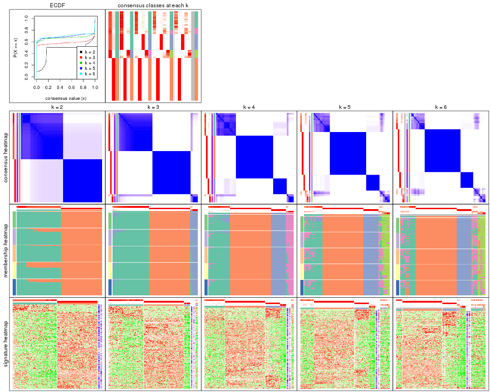
The plots are:
k and the heatmap of
predicted classes for each k.k.k.k.All the plots in panels can be made by individual functions and they are plotted later in this section.
select_partition_number() produces several plots showing different
statistics for choosing “optimized” k. There are following statistics:
k;k, the area increased is defined as \(A_k - A_{k-1}\).The detailed explanations of these statistics can be found in the cola vignette.
Generally speaking, lower PAC score, higher mean silhouette score or higher
concordance corresponds to better partition. Rand index and Jaccard index
measure how similar the current partition is compared to partition with k-1.
If they are too similar, we won't accept k is better than k-1.
select_partition_number(res)
The numeric values for all these statistics can be obtained by get_stats().
get_stats(res)
#> k 1-PAC mean_silhouette concordance area_increased Rand Jaccard
#> 2 2 0.552 0.963 0.937 0.4613 0.496 0.496
#> 3 3 0.974 0.946 0.975 0.2681 0.920 0.840
#> 4 4 0.950 0.941 0.965 0.1462 0.911 0.785
#> 5 5 0.944 0.829 0.915 0.0312 0.982 0.946
#> 6 6 0.945 0.803 0.895 0.0172 0.986 0.955
suggest_best_k() suggests the best \(k\) based on these statistics. The rules are as follows:
suggest_best_k(res)
#> [1] 5
#> attr(,"optional")
#> [1] 3 4
There is also optional best \(k\) = 3 4 that is worth to check.
Following shows the table of the partitions (You need to click the show/hide
code output link to see it). The membership matrix (columns with name p*)
is inferred by
clue::cl_consensus()
function with the SE method. Basically the value in the membership matrix
represents the probability to belong to a certain group. The finall class
label for an item is determined with the group with highest probability it
belongs to.
In get_classes() function, the entropy is calculated from the membership
matrix and the silhouette score is calculated from the consensus matrix.
cbind(get_classes(res, k = 2), get_membership(res, k = 2))
#> class entropy silhouette p1 p2
#> SRR1810660 1 0.000 0.868 1.000 0.000
#> SRR1810659 1 0.000 0.868 1.000 0.000
#> SRR1810658 1 0.000 0.868 1.000 0.000
#> SRR1810657 1 0.000 0.868 1.000 0.000
#> SRR1818435 1 0.653 0.946 0.832 0.168
#> SRR1818434 1 0.653 0.946 0.832 0.168
#> SRR1810752 2 0.000 1.000 0.000 1.000
#> SRR1810751 2 0.000 1.000 0.000 1.000
#> SRR1810749 1 0.653 0.946 0.832 0.168
#> SRR1810748 1 0.000 0.868 1.000 0.000
#> SRR1810750 1 0.327 0.907 0.940 0.060
#> SRR1810747 2 0.000 1.000 0.000 1.000
#> SRR1810746 1 0.529 0.937 0.880 0.120
#> SRR1810745 1 0.529 0.937 0.880 0.120
#> SRR1810744 1 0.584 0.943 0.860 0.140
#> SRR1810743 1 0.595 0.944 0.856 0.144
#> SRR1810742 2 0.000 1.000 0.000 1.000
#> SRR1810741 2 0.000 1.000 0.000 1.000
#> SRR1810740 1 0.615 0.946 0.848 0.152
#> SRR1810739 1 0.644 0.946 0.836 0.164
#> SRR1810738 1 0.653 0.946 0.832 0.168
#> SRR1810737 2 0.000 1.000 0.000 1.000
#> SRR1810736 2 0.000 1.000 0.000 1.000
#> SRR1810734 2 0.000 1.000 0.000 1.000
#> SRR1810735 2 0.000 1.000 0.000 1.000
#> SRR1810733 2 0.000 1.000 0.000 1.000
#> SRR1810732 1 0.595 0.944 0.856 0.144
#> SRR1810730 2 0.000 1.000 0.000 1.000
#> SRR1810729 1 0.224 0.892 0.964 0.036
#> SRR1810731 1 0.563 0.941 0.868 0.132
#> SRR1810728 2 0.000 1.000 0.000 1.000
#> SRR1810727 2 0.000 1.000 0.000 1.000
#> SRR1810726 1 0.653 0.946 0.832 0.168
#> SRR1810725 2 0.000 1.000 0.000 1.000
#> SRR1810724 2 0.000 1.000 0.000 1.000
#> SRR1810723 1 0.482 0.931 0.896 0.104
#> SRR1810722 1 0.634 0.946 0.840 0.160
#> SRR1810721 1 0.653 0.946 0.832 0.168
#> SRR1810720 1 0.653 0.946 0.832 0.168
#> SRR1810719 2 0.000 1.000 0.000 1.000
#> SRR1810718 1 0.000 0.868 1.000 0.000
#> SRR1810717 1 0.494 0.933 0.892 0.108
#> SRR1810716 2 0.000 1.000 0.000 1.000
#> SRR1810715 2 0.000 1.000 0.000 1.000
#> SRR1810713 2 0.000 1.000 0.000 1.000
#> SRR1810714 1 0.000 0.868 1.000 0.000
#> SRR1810712 2 0.000 1.000 0.000 1.000
#> SRR1810710 2 0.000 1.000 0.000 1.000
#> SRR1810711 2 0.000 1.000 0.000 1.000
#> SRR1810709 2 0.000 1.000 0.000 1.000
#> SRR1810708 1 0.456 0.927 0.904 0.096
#> SRR1810707 1 0.605 0.945 0.852 0.148
#> SRR1810706 2 0.000 1.000 0.000 1.000
#> SRR1810704 1 0.443 0.925 0.908 0.092
#> SRR1810705 1 0.402 0.919 0.920 0.080
#> SRR1810703 1 0.000 0.868 1.000 0.000
#> SRR1810702 2 0.000 1.000 0.000 1.000
#> SRR1810701 1 0.000 0.868 1.000 0.000
#> SRR1810700 2 0.000 1.000 0.000 1.000
#> SRR1810699 2 0.000 1.000 0.000 1.000
#> SRR1810696 2 0.000 1.000 0.000 1.000
#> SRR1810695 2 0.000 1.000 0.000 1.000
#> SRR1810698 2 0.000 1.000 0.000 1.000
#> SRR1810697 2 0.000 1.000 0.000 1.000
#> SRR1810694 2 0.000 1.000 0.000 1.000
#> SRR1810693 1 0.634 0.946 0.840 0.160
#> SRR1810692 2 0.000 1.000 0.000 1.000
#> SRR1810690 2 0.000 1.000 0.000 1.000
#> SRR1810691 1 0.644 0.946 0.836 0.164
#> SRR1810689 2 0.000 1.000 0.000 1.000
#> SRR1810688 2 0.000 1.000 0.000 1.000
#> SRR1810687 2 0.000 1.000 0.000 1.000
#> SRR1810685 1 0.653 0.946 0.832 0.168
#> SRR1810686 2 0.000 1.000 0.000 1.000
#> SRR1810684 2 0.000 1.000 0.000 1.000
#> SRR1810683 2 0.000 1.000 0.000 1.000
#> SRR1810680 2 0.000 1.000 0.000 1.000
#> SRR1810679 2 0.000 1.000 0.000 1.000
#> SRR1810678 2 0.000 1.000 0.000 1.000
#> SRR1810682 2 0.000 1.000 0.000 1.000
#> SRR1810681 2 0.000 1.000 0.000 1.000
#> SRR1810677 2 0.000 1.000 0.000 1.000
#> SRR1810676 2 0.000 1.000 0.000 1.000
#> SRR1810675 1 0.653 0.946 0.832 0.168
#> SRR1810673 1 0.653 0.946 0.832 0.168
#> SRR1810674 1 0.653 0.946 0.832 0.168
#> SRR1810671 1 0.653 0.946 0.832 0.168
#> SRR1810670 1 0.653 0.946 0.832 0.168
#> SRR1810669 1 0.653 0.946 0.832 0.168
#> SRR1810667 1 0.653 0.946 0.832 0.168
#> SRR1810666 1 0.653 0.946 0.832 0.168
#> SRR1810672 1 0.653 0.946 0.832 0.168
#> SRR1810668 1 0.653 0.946 0.832 0.168
#> SRR1810665 1 0.653 0.946 0.832 0.168
#> SRR1810664 1 0.653 0.946 0.832 0.168
#> SRR1810663 1 0.653 0.946 0.832 0.168
#> SRR1810661 1 0.653 0.946 0.832 0.168
#> SRR1810662 1 0.653 0.946 0.832 0.168
cbind(get_classes(res, k = 3), get_membership(res, k = 3))
#> class entropy silhouette p1 p2 p3
#> SRR1810660 3 0.0000 0.869 0.000 0 1.000
#> SRR1810659 3 0.0000 0.869 0.000 0 1.000
#> SRR1810658 3 0.0000 0.869 0.000 0 1.000
#> SRR1810657 3 0.0000 0.869 0.000 0 1.000
#> SRR1818435 1 0.0000 0.961 1.000 0 0.000
#> SRR1818434 1 0.0000 0.961 1.000 0 0.000
#> SRR1810752 2 0.0000 1.000 0.000 1 0.000
#> SRR1810751 2 0.0000 1.000 0.000 1 0.000
#> SRR1810749 1 0.0000 0.961 1.000 0 0.000
#> SRR1810748 3 0.0000 0.869 0.000 0 1.000
#> SRR1810750 1 0.4887 0.713 0.772 0 0.228
#> SRR1810747 2 0.0000 1.000 0.000 1 0.000
#> SRR1810746 1 0.1860 0.934 0.948 0 0.052
#> SRR1810745 1 0.2165 0.926 0.936 0 0.064
#> SRR1810744 1 0.1163 0.949 0.972 0 0.028
#> SRR1810743 1 0.1031 0.951 0.976 0 0.024
#> SRR1810742 2 0.0000 1.000 0.000 1 0.000
#> SRR1810741 2 0.0000 1.000 0.000 1 0.000
#> SRR1810740 1 0.0747 0.955 0.984 0 0.016
#> SRR1810739 1 0.0424 0.959 0.992 0 0.008
#> SRR1810738 1 0.0000 0.961 1.000 0 0.000
#> SRR1810737 2 0.0000 1.000 0.000 1 0.000
#> SRR1810736 2 0.0000 1.000 0.000 1 0.000
#> SRR1810734 2 0.0000 1.000 0.000 1 0.000
#> SRR1810735 2 0.0000 1.000 0.000 1 0.000
#> SRR1810733 2 0.0000 1.000 0.000 1 0.000
#> SRR1810732 1 0.1163 0.950 0.972 0 0.028
#> SRR1810730 2 0.0000 1.000 0.000 1 0.000
#> SRR1810729 1 0.5882 0.446 0.652 0 0.348
#> SRR1810731 1 0.1643 0.940 0.956 0 0.044
#> SRR1810728 2 0.0000 1.000 0.000 1 0.000
#> SRR1810727 2 0.0000 1.000 0.000 1 0.000
#> SRR1810726 1 0.0000 0.961 1.000 0 0.000
#> SRR1810725 2 0.0000 1.000 0.000 1 0.000
#> SRR1810724 2 0.0000 1.000 0.000 1 0.000
#> SRR1810723 1 0.3340 0.870 0.880 0 0.120
#> SRR1810722 1 0.0424 0.959 0.992 0 0.008
#> SRR1810721 1 0.0000 0.961 1.000 0 0.000
#> SRR1810720 1 0.0000 0.961 1.000 0 0.000
#> SRR1810719 2 0.0000 1.000 0.000 1 0.000
#> SRR1810718 3 0.0000 0.869 0.000 0 1.000
#> SRR1810717 1 0.2796 0.901 0.908 0 0.092
#> SRR1810716 2 0.0000 1.000 0.000 1 0.000
#> SRR1810715 2 0.0000 1.000 0.000 1 0.000
#> SRR1810713 2 0.0000 1.000 0.000 1 0.000
#> SRR1810714 3 0.4178 0.751 0.172 0 0.828
#> SRR1810712 2 0.0000 1.000 0.000 1 0.000
#> SRR1810710 2 0.0000 1.000 0.000 1 0.000
#> SRR1810711 2 0.0000 1.000 0.000 1 0.000
#> SRR1810709 2 0.0000 1.000 0.000 1 0.000
#> SRR1810708 1 0.2711 0.904 0.912 0 0.088
#> SRR1810707 1 0.1031 0.952 0.976 0 0.024
#> SRR1810706 2 0.0000 1.000 0.000 1 0.000
#> SRR1810704 1 0.3412 0.866 0.876 0 0.124
#> SRR1810705 1 0.4002 0.820 0.840 0 0.160
#> SRR1810703 3 0.5988 0.458 0.368 0 0.632
#> SRR1810702 2 0.0000 1.000 0.000 1 0.000
#> SRR1810701 3 0.6215 0.296 0.428 0 0.572
#> SRR1810700 2 0.0000 1.000 0.000 1 0.000
#> SRR1810699 2 0.0000 1.000 0.000 1 0.000
#> SRR1810696 2 0.0000 1.000 0.000 1 0.000
#> SRR1810695 2 0.0000 1.000 0.000 1 0.000
#> SRR1810698 2 0.0000 1.000 0.000 1 0.000
#> SRR1810697 2 0.0000 1.000 0.000 1 0.000
#> SRR1810694 2 0.0000 1.000 0.000 1 0.000
#> SRR1810693 1 0.0592 0.957 0.988 0 0.012
#> SRR1810692 2 0.0000 1.000 0.000 1 0.000
#> SRR1810690 2 0.0000 1.000 0.000 1 0.000
#> SRR1810691 1 0.0237 0.960 0.996 0 0.004
#> SRR1810689 2 0.0000 1.000 0.000 1 0.000
#> SRR1810688 2 0.0000 1.000 0.000 1 0.000
#> SRR1810687 2 0.0000 1.000 0.000 1 0.000
#> SRR1810685 1 0.0000 0.961 1.000 0 0.000
#> SRR1810686 2 0.0000 1.000 0.000 1 0.000
#> SRR1810684 2 0.0000 1.000 0.000 1 0.000
#> SRR1810683 2 0.0000 1.000 0.000 1 0.000
#> SRR1810680 2 0.0000 1.000 0.000 1 0.000
#> SRR1810679 2 0.0000 1.000 0.000 1 0.000
#> SRR1810678 2 0.0000 1.000 0.000 1 0.000
#> SRR1810682 2 0.0000 1.000 0.000 1 0.000
#> SRR1810681 2 0.0000 1.000 0.000 1 0.000
#> SRR1810677 2 0.0000 1.000 0.000 1 0.000
#> SRR1810676 2 0.0000 1.000 0.000 1 0.000
#> SRR1810675 1 0.0000 0.961 1.000 0 0.000
#> SRR1810673 1 0.0000 0.961 1.000 0 0.000
#> SRR1810674 1 0.0000 0.961 1.000 0 0.000
#> SRR1810671 1 0.0000 0.961 1.000 0 0.000
#> SRR1810670 1 0.0000 0.961 1.000 0 0.000
#> SRR1810669 1 0.0000 0.961 1.000 0 0.000
#> SRR1810667 1 0.0000 0.961 1.000 0 0.000
#> SRR1810666 1 0.0000 0.961 1.000 0 0.000
#> SRR1810672 1 0.0000 0.961 1.000 0 0.000
#> SRR1810668 1 0.0000 0.961 1.000 0 0.000
#> SRR1810665 1 0.0000 0.961 1.000 0 0.000
#> SRR1810664 1 0.0000 0.961 1.000 0 0.000
#> SRR1810663 1 0.0000 0.961 1.000 0 0.000
#> SRR1810661 1 0.0000 0.961 1.000 0 0.000
#> SRR1810662 1 0.0000 0.961 1.000 0 0.000
cbind(get_classes(res, k = 4), get_membership(res, k = 4))
#> class entropy silhouette p1 p2 p3 p4
#> SRR1810660 4 0.0000 0.858 0.000 0 0.000 1.000
#> SRR1810659 4 0.0000 0.858 0.000 0 0.000 1.000
#> SRR1810658 4 0.0000 0.858 0.000 0 0.000 1.000
#> SRR1810657 4 0.0188 0.858 0.004 0 0.000 0.996
#> SRR1818435 3 0.0000 0.999 0.000 0 1.000 0.000
#> SRR1818434 3 0.0000 0.999 0.000 0 1.000 0.000
#> SRR1810752 2 0.0000 1.000 0.000 1 0.000 0.000
#> SRR1810751 2 0.0000 1.000 0.000 1 0.000 0.000
#> SRR1810749 1 0.2704 0.893 0.876 0 0.124 0.000
#> SRR1810748 4 0.0188 0.858 0.004 0 0.000 0.996
#> SRR1810750 1 0.3356 0.732 0.824 0 0.000 0.176
#> SRR1810747 2 0.0000 1.000 0.000 1 0.000 0.000
#> SRR1810746 1 0.0937 0.895 0.976 0 0.012 0.012
#> SRR1810745 1 0.1042 0.892 0.972 0 0.008 0.020
#> SRR1810744 1 0.2124 0.912 0.924 0 0.068 0.008
#> SRR1810743 1 0.2342 0.911 0.912 0 0.080 0.008
#> SRR1810742 2 0.0000 1.000 0.000 1 0.000 0.000
#> SRR1810741 2 0.0000 1.000 0.000 1 0.000 0.000
#> SRR1810740 1 0.2216 0.908 0.908 0 0.092 0.000
#> SRR1810739 1 0.1474 0.911 0.948 0 0.052 0.000
#> SRR1810738 1 0.2760 0.890 0.872 0 0.128 0.000
#> SRR1810737 2 0.0000 1.000 0.000 1 0.000 0.000
#> SRR1810736 2 0.0000 1.000 0.000 1 0.000 0.000
#> SRR1810734 2 0.0000 1.000 0.000 1 0.000 0.000
#> SRR1810735 2 0.0000 1.000 0.000 1 0.000 0.000
#> SRR1810733 2 0.0000 1.000 0.000 1 0.000 0.000
#> SRR1810732 1 0.1489 0.910 0.952 0 0.044 0.004
#> SRR1810730 2 0.0000 1.000 0.000 1 0.000 0.000
#> SRR1810729 1 0.4677 0.477 0.680 0 0.004 0.316
#> SRR1810731 1 0.0817 0.903 0.976 0 0.024 0.000
#> SRR1810728 2 0.0000 1.000 0.000 1 0.000 0.000
#> SRR1810727 2 0.0000 1.000 0.000 1 0.000 0.000
#> SRR1810726 1 0.2704 0.893 0.876 0 0.124 0.000
#> SRR1810725 2 0.0000 1.000 0.000 1 0.000 0.000
#> SRR1810724 2 0.0000 1.000 0.000 1 0.000 0.000
#> SRR1810723 1 0.1978 0.868 0.928 0 0.004 0.068
#> SRR1810722 1 0.2149 0.909 0.912 0 0.088 0.000
#> SRR1810721 1 0.2704 0.893 0.876 0 0.124 0.000
#> SRR1810720 1 0.2589 0.898 0.884 0 0.116 0.000
#> SRR1810719 2 0.0000 1.000 0.000 1 0.000 0.000
#> SRR1810718 4 0.0188 0.858 0.004 0 0.000 0.996
#> SRR1810717 1 0.2282 0.890 0.924 0 0.024 0.052
#> SRR1810716 2 0.0000 1.000 0.000 1 0.000 0.000
#> SRR1810715 2 0.0000 1.000 0.000 1 0.000 0.000
#> SRR1810713 2 0.0000 1.000 0.000 1 0.000 0.000
#> SRR1810714 4 0.3528 0.727 0.192 0 0.000 0.808
#> SRR1810712 2 0.0000 1.000 0.000 1 0.000 0.000
#> SRR1810710 2 0.0000 1.000 0.000 1 0.000 0.000
#> SRR1810711 2 0.0000 1.000 0.000 1 0.000 0.000
#> SRR1810709 2 0.0000 1.000 0.000 1 0.000 0.000
#> SRR1810708 1 0.1398 0.881 0.956 0 0.004 0.040
#> SRR1810707 1 0.1637 0.911 0.940 0 0.060 0.000
#> SRR1810706 2 0.0000 1.000 0.000 1 0.000 0.000
#> SRR1810704 1 0.2473 0.864 0.908 0 0.012 0.080
#> SRR1810705 1 0.2469 0.829 0.892 0 0.000 0.108
#> SRR1810703 4 0.4817 0.403 0.388 0 0.000 0.612
#> SRR1810702 2 0.0000 1.000 0.000 1 0.000 0.000
#> SRR1810701 4 0.4955 0.234 0.444 0 0.000 0.556
#> SRR1810700 2 0.0000 1.000 0.000 1 0.000 0.000
#> SRR1810699 2 0.0000 1.000 0.000 1 0.000 0.000
#> SRR1810696 2 0.0000 1.000 0.000 1 0.000 0.000
#> SRR1810695 2 0.0000 1.000 0.000 1 0.000 0.000
#> SRR1810698 2 0.0000 1.000 0.000 1 0.000 0.000
#> SRR1810697 2 0.0000 1.000 0.000 1 0.000 0.000
#> SRR1810694 2 0.0000 1.000 0.000 1 0.000 0.000
#> SRR1810693 1 0.1211 0.908 0.960 0 0.040 0.000
#> SRR1810692 2 0.0000 1.000 0.000 1 0.000 0.000
#> SRR1810690 2 0.0000 1.000 0.000 1 0.000 0.000
#> SRR1810691 1 0.2530 0.900 0.888 0 0.112 0.000
#> SRR1810689 2 0.0000 1.000 0.000 1 0.000 0.000
#> SRR1810688 2 0.0000 1.000 0.000 1 0.000 0.000
#> SRR1810687 2 0.0000 1.000 0.000 1 0.000 0.000
#> SRR1810685 1 0.2704 0.893 0.876 0 0.124 0.000
#> SRR1810686 2 0.0000 1.000 0.000 1 0.000 0.000
#> SRR1810684 2 0.0000 1.000 0.000 1 0.000 0.000
#> SRR1810683 2 0.0000 1.000 0.000 1 0.000 0.000
#> SRR1810680 2 0.0000 1.000 0.000 1 0.000 0.000
#> SRR1810679 2 0.0000 1.000 0.000 1 0.000 0.000
#> SRR1810678 2 0.0000 1.000 0.000 1 0.000 0.000
#> SRR1810682 2 0.0000 1.000 0.000 1 0.000 0.000
#> SRR1810681 2 0.0000 1.000 0.000 1 0.000 0.000
#> SRR1810677 2 0.0000 1.000 0.000 1 0.000 0.000
#> SRR1810676 2 0.0000 1.000 0.000 1 0.000 0.000
#> SRR1810675 3 0.0000 0.999 0.000 0 1.000 0.000
#> SRR1810673 3 0.0000 0.999 0.000 0 1.000 0.000
#> SRR1810674 3 0.0000 0.999 0.000 0 1.000 0.000
#> SRR1810671 3 0.0000 0.999 0.000 0 1.000 0.000
#> SRR1810670 3 0.0000 0.999 0.000 0 1.000 0.000
#> SRR1810669 3 0.0336 0.991 0.008 0 0.992 0.000
#> SRR1810667 3 0.0000 0.999 0.000 0 1.000 0.000
#> SRR1810666 3 0.0000 0.999 0.000 0 1.000 0.000
#> SRR1810672 3 0.0000 0.999 0.000 0 1.000 0.000
#> SRR1810668 3 0.0000 0.999 0.000 0 1.000 0.000
#> SRR1810665 3 0.0000 0.999 0.000 0 1.000 0.000
#> SRR1810664 3 0.0000 0.999 0.000 0 1.000 0.000
#> SRR1810663 3 0.0000 0.999 0.000 0 1.000 0.000
#> SRR1810661 3 0.0188 0.995 0.004 0 0.996 0.000
#> SRR1810662 3 0.0000 0.999 0.000 0 1.000 0.000
cbind(get_classes(res, k = 5), get_membership(res, k = 5))
#> class entropy silhouette p1 p2 p3 p4 p5
#> SRR1810660 5 0.0000 0.755 0.000 0 0.000 0.000 1.000
#> SRR1810659 5 0.0290 0.753 0.000 0 0.000 0.008 0.992
#> SRR1810658 5 0.0290 0.753 0.000 0 0.000 0.008 0.992
#> SRR1810657 5 0.2891 0.775 0.000 0 0.000 0.176 0.824
#> SRR1818435 3 0.0000 0.999 0.000 0 1.000 0.000 0.000
#> SRR1818434 3 0.0000 0.999 0.000 0 1.000 0.000 0.000
#> SRR1810752 2 0.0000 1.000 0.000 1 0.000 0.000 0.000
#> SRR1810751 2 0.0000 1.000 0.000 1 0.000 0.000 0.000
#> SRR1810749 1 0.1671 0.680 0.924 0 0.076 0.000 0.000
#> SRR1810748 5 0.2891 0.775 0.000 0 0.000 0.176 0.824
#> SRR1810750 4 0.3048 0.366 0.176 0 0.000 0.820 0.004
#> SRR1810747 2 0.0000 1.000 0.000 1 0.000 0.000 0.000
#> SRR1810746 1 0.3857 0.378 0.688 0 0.000 0.312 0.000
#> SRR1810745 1 0.3752 0.369 0.708 0 0.000 0.292 0.000
#> SRR1810744 1 0.4240 0.529 0.736 0 0.036 0.228 0.000
#> SRR1810743 1 0.4413 0.550 0.724 0 0.044 0.232 0.000
#> SRR1810742 2 0.0000 1.000 0.000 1 0.000 0.000 0.000
#> SRR1810741 2 0.0000 1.000 0.000 1 0.000 0.000 0.000
#> SRR1810740 1 0.4088 0.621 0.776 0 0.056 0.168 0.000
#> SRR1810739 1 0.2612 0.631 0.868 0 0.008 0.124 0.000
#> SRR1810738 1 0.2017 0.675 0.912 0 0.080 0.008 0.000
#> SRR1810737 2 0.0000 1.000 0.000 1 0.000 0.000 0.000
#> SRR1810736 2 0.0000 1.000 0.000 1 0.000 0.000 0.000
#> SRR1810734 2 0.0000 1.000 0.000 1 0.000 0.000 0.000
#> SRR1810735 2 0.0000 1.000 0.000 1 0.000 0.000 0.000
#> SRR1810733 2 0.0000 1.000 0.000 1 0.000 0.000 0.000
#> SRR1810732 1 0.3819 0.551 0.756 0 0.016 0.228 0.000
#> SRR1810730 2 0.0000 1.000 0.000 1 0.000 0.000 0.000
#> SRR1810729 4 0.6215 0.491 0.308 0 0.004 0.540 0.148
#> SRR1810731 1 0.3807 0.502 0.748 0 0.012 0.240 0.000
#> SRR1810728 2 0.0000 1.000 0.000 1 0.000 0.000 0.000
#> SRR1810727 2 0.0000 1.000 0.000 1 0.000 0.000 0.000
#> SRR1810726 1 0.1671 0.680 0.924 0 0.076 0.000 0.000
#> SRR1810725 2 0.0000 1.000 0.000 1 0.000 0.000 0.000
#> SRR1810724 2 0.0000 1.000 0.000 1 0.000 0.000 0.000
#> SRR1810723 1 0.5206 -0.249 0.544 0 0.004 0.416 0.036
#> SRR1810722 1 0.2871 0.673 0.872 0 0.040 0.088 0.000
#> SRR1810721 1 0.1671 0.680 0.924 0 0.076 0.000 0.000
#> SRR1810720 1 0.1942 0.683 0.920 0 0.068 0.012 0.000
#> SRR1810719 2 0.0000 1.000 0.000 1 0.000 0.000 0.000
#> SRR1810718 5 0.2891 0.775 0.000 0 0.000 0.176 0.824
#> SRR1810717 1 0.4950 -0.143 0.552 0 0.008 0.424 0.016
#> SRR1810716 2 0.0000 1.000 0.000 1 0.000 0.000 0.000
#> SRR1810715 2 0.0000 1.000 0.000 1 0.000 0.000 0.000
#> SRR1810713 2 0.0000 1.000 0.000 1 0.000 0.000 0.000
#> SRR1810714 5 0.4538 0.636 0.016 0 0.000 0.364 0.620
#> SRR1810712 2 0.0000 1.000 0.000 1 0.000 0.000 0.000
#> SRR1810710 2 0.0000 1.000 0.000 1 0.000 0.000 0.000
#> SRR1810711 2 0.0000 1.000 0.000 1 0.000 0.000 0.000
#> SRR1810709 2 0.0000 1.000 0.000 1 0.000 0.000 0.000
#> SRR1810708 1 0.4273 -0.148 0.552 0 0.000 0.448 0.000
#> SRR1810707 1 0.3929 0.588 0.764 0 0.028 0.208 0.000
#> SRR1810706 2 0.0000 1.000 0.000 1 0.000 0.000 0.000
#> SRR1810704 4 0.5192 0.298 0.472 0 0.004 0.492 0.032
#> SRR1810705 4 0.5401 0.377 0.452 0 0.000 0.492 0.056
#> SRR1810703 5 0.5976 0.285 0.112 0 0.000 0.400 0.488
#> SRR1810702 2 0.0000 1.000 0.000 1 0.000 0.000 0.000
#> SRR1810701 5 0.6191 0.097 0.136 0 0.000 0.424 0.440
#> SRR1810700 2 0.0000 1.000 0.000 1 0.000 0.000 0.000
#> SRR1810699 2 0.0000 1.000 0.000 1 0.000 0.000 0.000
#> SRR1810696 2 0.0000 1.000 0.000 1 0.000 0.000 0.000
#> SRR1810695 2 0.0000 1.000 0.000 1 0.000 0.000 0.000
#> SRR1810698 2 0.0000 1.000 0.000 1 0.000 0.000 0.000
#> SRR1810697 2 0.0000 1.000 0.000 1 0.000 0.000 0.000
#> SRR1810694 2 0.0000 1.000 0.000 1 0.000 0.000 0.000
#> SRR1810693 1 0.3579 0.563 0.756 0 0.004 0.240 0.000
#> SRR1810692 2 0.0000 1.000 0.000 1 0.000 0.000 0.000
#> SRR1810690 2 0.0000 1.000 0.000 1 0.000 0.000 0.000
#> SRR1810691 1 0.1478 0.682 0.936 0 0.064 0.000 0.000
#> SRR1810689 2 0.0000 1.000 0.000 1 0.000 0.000 0.000
#> SRR1810688 2 0.0000 1.000 0.000 1 0.000 0.000 0.000
#> SRR1810687 2 0.0000 1.000 0.000 1 0.000 0.000 0.000
#> SRR1810685 1 0.1671 0.680 0.924 0 0.076 0.000 0.000
#> SRR1810686 2 0.0000 1.000 0.000 1 0.000 0.000 0.000
#> SRR1810684 2 0.0000 1.000 0.000 1 0.000 0.000 0.000
#> SRR1810683 2 0.0000 1.000 0.000 1 0.000 0.000 0.000
#> SRR1810680 2 0.0000 1.000 0.000 1 0.000 0.000 0.000
#> SRR1810679 2 0.0000 1.000 0.000 1 0.000 0.000 0.000
#> SRR1810678 2 0.0000 1.000 0.000 1 0.000 0.000 0.000
#> SRR1810682 2 0.0000 1.000 0.000 1 0.000 0.000 0.000
#> SRR1810681 2 0.0000 1.000 0.000 1 0.000 0.000 0.000
#> SRR1810677 2 0.0000 1.000 0.000 1 0.000 0.000 0.000
#> SRR1810676 2 0.0000 1.000 0.000 1 0.000 0.000 0.000
#> SRR1810675 3 0.0000 0.999 0.000 0 1.000 0.000 0.000
#> SRR1810673 3 0.0000 0.999 0.000 0 1.000 0.000 0.000
#> SRR1810674 3 0.0000 0.999 0.000 0 1.000 0.000 0.000
#> SRR1810671 3 0.0000 0.999 0.000 0 1.000 0.000 0.000
#> SRR1810670 3 0.0000 0.999 0.000 0 1.000 0.000 0.000
#> SRR1810669 3 0.0404 0.988 0.012 0 0.988 0.000 0.000
#> SRR1810667 3 0.0000 0.999 0.000 0 1.000 0.000 0.000
#> SRR1810666 3 0.0000 0.999 0.000 0 1.000 0.000 0.000
#> SRR1810672 3 0.0000 0.999 0.000 0 1.000 0.000 0.000
#> SRR1810668 3 0.0000 0.999 0.000 0 1.000 0.000 0.000
#> SRR1810665 3 0.0000 0.999 0.000 0 1.000 0.000 0.000
#> SRR1810664 3 0.0000 0.999 0.000 0 1.000 0.000 0.000
#> SRR1810663 3 0.0000 0.999 0.000 0 1.000 0.000 0.000
#> SRR1810661 3 0.0162 0.995 0.000 0 0.996 0.004 0.000
#> SRR1810662 3 0.0000 0.999 0.000 0 1.000 0.000 0.000
cbind(get_classes(res, k = 6), get_membership(res, k = 6))
#> class entropy silhouette p1 p2 p3 p4 p5 p6
#> SRR1810660 5 0.3023 0.6912 0.000 0 0.000 0.000 0.768 NA
#> SRR1810659 5 0.3695 0.6461 0.000 0 0.000 0.000 0.624 NA
#> SRR1810658 5 0.3727 0.6408 0.000 0 0.000 0.000 0.612 NA
#> SRR1810657 5 0.0146 0.7301 0.000 0 0.000 0.004 0.996 NA
#> SRR1818435 3 0.0000 0.9981 0.000 0 1.000 0.000 0.000 NA
#> SRR1818434 3 0.0000 0.9981 0.000 0 1.000 0.000 0.000 NA
#> SRR1810752 2 0.0000 1.0000 0.000 1 0.000 0.000 0.000 NA
#> SRR1810751 2 0.0000 1.0000 0.000 1 0.000 0.000 0.000 NA
#> SRR1810749 1 0.1124 0.6038 0.956 0 0.036 0.008 0.000 NA
#> SRR1810748 5 0.0146 0.7301 0.000 0 0.000 0.004 0.996 NA
#> SRR1810750 4 0.6146 0.0706 0.028 0 0.000 0.472 0.144 NA
#> SRR1810747 2 0.0000 1.0000 0.000 1 0.000 0.000 0.000 NA
#> SRR1810746 1 0.5438 -0.0194 0.496 0 0.000 0.380 0.000 NA
#> SRR1810745 1 0.4486 -0.1270 0.512 0 0.000 0.464 0.008 NA
#> SRR1810744 1 0.4009 0.1782 0.632 0 0.004 0.356 0.000 NA
#> SRR1810743 1 0.4388 0.2674 0.636 0 0.016 0.332 0.000 NA
#> SRR1810742 2 0.0000 1.0000 0.000 1 0.000 0.000 0.000 NA
#> SRR1810741 2 0.0000 1.0000 0.000 1 0.000 0.000 0.000 NA
#> SRR1810740 1 0.5693 0.3348 0.568 0 0.024 0.292 0.000 NA
#> SRR1810739 1 0.4376 0.4078 0.704 0 0.000 0.212 0.000 NA
#> SRR1810738 1 0.1820 0.6003 0.928 0 0.044 0.016 0.000 NA
#> SRR1810737 2 0.0000 1.0000 0.000 1 0.000 0.000 0.000 NA
#> SRR1810736 2 0.0000 1.0000 0.000 1 0.000 0.000 0.000 NA
#> SRR1810734 2 0.0000 1.0000 0.000 1 0.000 0.000 0.000 NA
#> SRR1810735 2 0.0000 1.0000 0.000 1 0.000 0.000 0.000 NA
#> SRR1810733 2 0.0000 1.0000 0.000 1 0.000 0.000 0.000 NA
#> SRR1810732 1 0.5642 0.1912 0.456 0 0.008 0.420 0.000 NA
#> SRR1810730 2 0.0000 1.0000 0.000 1 0.000 0.000 0.000 NA
#> SRR1810729 4 0.6101 0.4483 0.192 0 0.000 0.492 0.300 NA
#> SRR1810731 1 0.4228 0.1107 0.588 0 0.000 0.392 0.000 NA
#> SRR1810728 2 0.0000 1.0000 0.000 1 0.000 0.000 0.000 NA
#> SRR1810727 2 0.0000 1.0000 0.000 1 0.000 0.000 0.000 NA
#> SRR1810726 1 0.1010 0.6038 0.960 0 0.036 0.000 0.000 NA
#> SRR1810725 2 0.0000 1.0000 0.000 1 0.000 0.000 0.000 NA
#> SRR1810724 2 0.0000 1.0000 0.000 1 0.000 0.000 0.000 NA
#> SRR1810723 4 0.4861 0.5017 0.392 0 0.000 0.552 0.052 NA
#> SRR1810722 1 0.3916 0.4831 0.748 0 0.016 0.212 0.000 NA
#> SRR1810721 1 0.1124 0.6044 0.956 0 0.036 0.008 0.000 NA
#> SRR1810720 1 0.1720 0.6000 0.928 0 0.032 0.040 0.000 NA
#> SRR1810719 2 0.0000 1.0000 0.000 1 0.000 0.000 0.000 NA
#> SRR1810718 5 0.0146 0.7301 0.000 0 0.000 0.004 0.996 NA
#> SRR1810717 4 0.4630 0.4521 0.404 0 0.000 0.560 0.028 NA
#> SRR1810716 2 0.0000 1.0000 0.000 1 0.000 0.000 0.000 NA
#> SRR1810715 2 0.0000 1.0000 0.000 1 0.000 0.000 0.000 NA
#> SRR1810713 2 0.0000 1.0000 0.000 1 0.000 0.000 0.000 NA
#> SRR1810714 5 0.3110 0.6073 0.000 0 0.000 0.196 0.792 NA
#> SRR1810712 2 0.0000 1.0000 0.000 1 0.000 0.000 0.000 NA
#> SRR1810710 2 0.0000 1.0000 0.000 1 0.000 0.000 0.000 NA
#> SRR1810711 2 0.0000 1.0000 0.000 1 0.000 0.000 0.000 NA
#> SRR1810709 2 0.0000 1.0000 0.000 1 0.000 0.000 0.000 NA
#> SRR1810708 4 0.4570 0.4768 0.340 0 0.000 0.620 0.024 NA
#> SRR1810707 1 0.5666 0.2491 0.488 0 0.008 0.380 0.000 NA
#> SRR1810706 2 0.0000 1.0000 0.000 1 0.000 0.000 0.000 NA
#> SRR1810704 4 0.4802 0.5871 0.308 0 0.004 0.628 0.056 NA
#> SRR1810705 4 0.4837 0.5966 0.288 0 0.000 0.624 0.088 NA
#> SRR1810703 5 0.4769 0.3089 0.056 0 0.000 0.336 0.604 NA
#> SRR1810702 2 0.0000 1.0000 0.000 1 0.000 0.000 0.000 NA
#> SRR1810701 5 0.4750 0.1629 0.052 0 0.000 0.404 0.544 NA
#> SRR1810700 2 0.0000 1.0000 0.000 1 0.000 0.000 0.000 NA
#> SRR1810699 2 0.0000 1.0000 0.000 1 0.000 0.000 0.000 NA
#> SRR1810696 2 0.0000 1.0000 0.000 1 0.000 0.000 0.000 NA
#> SRR1810695 2 0.0000 1.0000 0.000 1 0.000 0.000 0.000 NA
#> SRR1810698 2 0.0000 1.0000 0.000 1 0.000 0.000 0.000 NA
#> SRR1810697 2 0.0000 1.0000 0.000 1 0.000 0.000 0.000 NA
#> SRR1810694 2 0.0000 1.0000 0.000 1 0.000 0.000 0.000 NA
#> SRR1810693 1 0.5983 0.0967 0.388 0 0.000 0.384 0.000 NA
#> SRR1810692 2 0.0000 1.0000 0.000 1 0.000 0.000 0.000 NA
#> SRR1810690 2 0.0000 1.0000 0.000 1 0.000 0.000 0.000 NA
#> SRR1810691 1 0.1409 0.6045 0.948 0 0.032 0.012 0.000 NA
#> SRR1810689 2 0.0000 1.0000 0.000 1 0.000 0.000 0.000 NA
#> SRR1810688 2 0.0000 1.0000 0.000 1 0.000 0.000 0.000 NA
#> SRR1810687 2 0.0000 1.0000 0.000 1 0.000 0.000 0.000 NA
#> SRR1810685 1 0.1010 0.6038 0.960 0 0.036 0.000 0.000 NA
#> SRR1810686 2 0.0000 1.0000 0.000 1 0.000 0.000 0.000 NA
#> SRR1810684 2 0.0000 1.0000 0.000 1 0.000 0.000 0.000 NA
#> SRR1810683 2 0.0000 1.0000 0.000 1 0.000 0.000 0.000 NA
#> SRR1810680 2 0.0000 1.0000 0.000 1 0.000 0.000 0.000 NA
#> SRR1810679 2 0.0000 1.0000 0.000 1 0.000 0.000 0.000 NA
#> SRR1810678 2 0.0000 1.0000 0.000 1 0.000 0.000 0.000 NA
#> SRR1810682 2 0.0000 1.0000 0.000 1 0.000 0.000 0.000 NA
#> SRR1810681 2 0.0000 1.0000 0.000 1 0.000 0.000 0.000 NA
#> SRR1810677 2 0.0000 1.0000 0.000 1 0.000 0.000 0.000 NA
#> SRR1810676 2 0.0000 1.0000 0.000 1 0.000 0.000 0.000 NA
#> SRR1810675 3 0.0000 0.9981 0.000 0 1.000 0.000 0.000 NA
#> SRR1810673 3 0.0000 0.9981 0.000 0 1.000 0.000 0.000 NA
#> SRR1810674 3 0.0000 0.9981 0.000 0 1.000 0.000 0.000 NA
#> SRR1810671 3 0.0000 0.9981 0.000 0 1.000 0.000 0.000 NA
#> SRR1810670 3 0.0000 0.9981 0.000 0 1.000 0.000 0.000 NA
#> SRR1810669 3 0.0692 0.9741 0.020 0 0.976 0.004 0.000 NA
#> SRR1810667 3 0.0000 0.9981 0.000 0 1.000 0.000 0.000 NA
#> SRR1810666 3 0.0000 0.9981 0.000 0 1.000 0.000 0.000 NA
#> SRR1810672 3 0.0000 0.9981 0.000 0 1.000 0.000 0.000 NA
#> SRR1810668 3 0.0000 0.9981 0.000 0 1.000 0.000 0.000 NA
#> SRR1810665 3 0.0000 0.9981 0.000 0 1.000 0.000 0.000 NA
#> SRR1810664 3 0.0000 0.9981 0.000 0 1.000 0.000 0.000 NA
#> SRR1810663 3 0.0000 0.9981 0.000 0 1.000 0.000 0.000 NA
#> SRR1810661 3 0.0146 0.9942 0.000 0 0.996 0.004 0.000 NA
#> SRR1810662 3 0.0000 0.9981 0.000 0 1.000 0.000 0.000 NA
Heatmaps for the consensus matrix. It visualizes the probability of two samples to be in a same group.
consensus_heatmap(res, k = 2)
consensus_heatmap(res, k = 3)
consensus_heatmap(res, k = 4)
consensus_heatmap(res, k = 5)
consensus_heatmap(res, k = 6)
Heatmaps for the membership of samples in all partitions to see how consistent they are:
membership_heatmap(res, k = 2)
membership_heatmap(res, k = 3)
membership_heatmap(res, k = 4)
membership_heatmap(res, k = 5)
membership_heatmap(res, k = 6)
As soon as we have had the classes for columns, we can look for signatures which are significantly different between classes which can be candidate marks for certain classes. Following are the heatmaps for signatures.
Signature heatmaps where rows are scaled:
get_signatures(res, k = 2)
get_signatures(res, k = 3)
get_signatures(res, k = 4)
get_signatures(res, k = 5)
get_signatures(res, k = 6)
Signature heatmaps where rows are not scaled:
get_signatures(res, k = 2, scale_rows = FALSE)
get_signatures(res, k = 3, scale_rows = FALSE)
get_signatures(res, k = 4, scale_rows = FALSE)
get_signatures(res, k = 5, scale_rows = FALSE)
get_signatures(res, k = 6, scale_rows = FALSE)
Compare the overlap of signatures from different k:
compare_signatures(res)
get_signature() returns a data frame invisibly. TO get the list of signatures, the function
call should be assigned to a variable explicitly. In following code, if plot argument is set
to FALSE, no heatmap is plotted while only the differential analysis is performed.
# code only for demonstration
tb = get_signature(res, k = ..., plot = FALSE)
An example of the output of tb is:
#> which_row fdr mean_1 mean_2 scaled_mean_1 scaled_mean_2 km
#> 1 38 0.042760348 8.373488 9.131774 -0.5533452 0.5164555 1
#> 2 40 0.018707592 7.106213 8.469186 -0.6173731 0.5762149 1
#> 3 55 0.019134737 10.221463 11.207825 -0.6159697 0.5749050 1
#> 4 59 0.006059896 5.921854 7.869574 -0.6899429 0.6439467 1
#> 5 60 0.018055526 8.928898 10.211722 -0.6204761 0.5791110 1
#> 6 98 0.009384629 15.714769 14.887706 0.6635654 -0.6193277 2
...
The columns in tb are:
which_row: row indices corresponding to the input matrix.fdr: FDR for the differential test. mean_x: The mean value in group x.scaled_mean_x: The mean value in group x after rows are scaled.km: Row groups if k-means clustering is applied to rows.UMAP plot which shows how samples are separated.
dimension_reduction(res, k = 2, method = "UMAP")
dimension_reduction(res, k = 3, method = "UMAP")
dimension_reduction(res, k = 4, method = "UMAP")
dimension_reduction(res, k = 5, method = "UMAP")
dimension_reduction(res, k = 6, method = "UMAP")
Following heatmap shows how subgroups are split when increasing k:
collect_classes(res)
If matrix rows can be associated to genes, consider to use functional_enrichment(res,
...) to perform function enrichment for the signature genes. See this vignette for more detailed explanations.
The object with results only for a single top-value method and a single partition method can be extracted as:
res = res_list["ATC", "kmeans"]
# you can also extract it by
# res = res_list["ATC:kmeans"]
A summary of res and all the functions that can be applied to it:
res
#> A 'ConsensusPartition' object with k = 2, 3, 4, 5, 6.
#> On a matrix with 9017 rows and 98 columns.
#> Top rows (902, 1804, 2705, 3606, 4508) are extracted by 'ATC' method.
#> Subgroups are detected by 'kmeans' method.
#> Performed in total 1250 partitions by row resampling.
#> Best k for subgroups seems to be 2.
#>
#> Following methods can be applied to this 'ConsensusPartition' object:
#> [1] "cola_report" "collect_classes" "collect_plots"
#> [4] "collect_stats" "colnames" "compare_signatures"
#> [7] "consensus_heatmap" "dimension_reduction" "functional_enrichment"
#> [10] "get_anno_col" "get_anno" "get_classes"
#> [13] "get_consensus" "get_matrix" "get_membership"
#> [16] "get_param" "get_signatures" "get_stats"
#> [19] "is_best_k" "is_stable_k" "membership_heatmap"
#> [22] "ncol" "nrow" "plot_ecdf"
#> [25] "rownames" "select_partition_number" "show"
#> [28] "suggest_best_k" "test_to_known_factors"
collect_plots() function collects all the plots made from res for all k (number of partitions)
into one single page to provide an easy and fast comparison between different k.
collect_plots(res)
The plots are:
k and the heatmap of
predicted classes for each k.k.k.k.All the plots in panels can be made by individual functions and they are plotted later in this section.
select_partition_number() produces several plots showing different
statistics for choosing “optimized” k. There are following statistics:
k;k, the area increased is defined as \(A_k - A_{k-1}\).The detailed explanations of these statistics can be found in the cola vignette.
Generally speaking, lower PAC score, higher mean silhouette score or higher
concordance corresponds to better partition. Rand index and Jaccard index
measure how similar the current partition is compared to partition with k-1.
If they are too similar, we won't accept k is better than k-1.
select_partition_number(res)
The numeric values for all these statistics can be obtained by get_stats().
get_stats(res)
#> k 1-PAC mean_silhouette concordance area_increased Rand Jaccard
#> 2 2 1.000 0.983 0.994 0.5055 0.495 0.495
#> 3 3 0.762 0.896 0.904 0.2467 0.861 0.725
#> 4 4 0.804 0.843 0.834 0.1259 0.888 0.701
#> 5 5 0.774 0.908 0.859 0.0690 0.925 0.726
#> 6 6 0.761 0.862 0.842 0.0444 0.990 0.955
suggest_best_k() suggests the best \(k\) based on these statistics. The rules are as follows:
suggest_best_k(res)
#> [1] 2
Following shows the table of the partitions (You need to click the show/hide
code output link to see it). The membership matrix (columns with name p*)
is inferred by
clue::cl_consensus()
function with the SE method. Basically the value in the membership matrix
represents the probability to belong to a certain group. The finall class
label for an item is determined with the group with highest probability it
belongs to.
In get_classes() function, the entropy is calculated from the membership
matrix and the silhouette score is calculated from the consensus matrix.
cbind(get_classes(res, k = 2), get_membership(res, k = 2))
#> class entropy silhouette p1 p2
#> SRR1810660 1 0.000 1.000 1.000 0.000
#> SRR1810659 1 0.000 1.000 1.000 0.000
#> SRR1810658 1 0.000 1.000 1.000 0.000
#> SRR1810657 1 0.000 1.000 1.000 0.000
#> SRR1818435 2 0.541 0.854 0.124 0.876
#> SRR1818434 2 0.204 0.957 0.032 0.968
#> SRR1810752 2 0.000 0.987 0.000 1.000
#> SRR1810751 2 0.000 0.987 0.000 1.000
#> SRR1810749 1 0.000 1.000 1.000 0.000
#> SRR1810748 1 0.000 1.000 1.000 0.000
#> SRR1810750 1 0.000 1.000 1.000 0.000
#> SRR1810747 2 0.000 0.987 0.000 1.000
#> SRR1810746 1 0.000 1.000 1.000 0.000
#> SRR1810745 1 0.000 1.000 1.000 0.000
#> SRR1810744 1 0.000 1.000 1.000 0.000
#> SRR1810743 1 0.000 1.000 1.000 0.000
#> SRR1810742 2 0.000 0.987 0.000 1.000
#> SRR1810741 2 0.000 0.987 0.000 1.000
#> SRR1810740 1 0.000 1.000 1.000 0.000
#> SRR1810739 1 0.000 1.000 1.000 0.000
#> SRR1810738 1 0.000 1.000 1.000 0.000
#> SRR1810737 2 0.000 0.987 0.000 1.000
#> SRR1810736 2 0.000 0.987 0.000 1.000
#> SRR1810734 2 0.000 0.987 0.000 1.000
#> SRR1810735 2 0.000 0.987 0.000 1.000
#> SRR1810733 2 0.000 0.987 0.000 1.000
#> SRR1810732 1 0.000 1.000 1.000 0.000
#> SRR1810730 2 0.000 0.987 0.000 1.000
#> SRR1810729 1 0.000 1.000 1.000 0.000
#> SRR1810731 1 0.000 1.000 1.000 0.000
#> SRR1810728 2 0.000 0.987 0.000 1.000
#> SRR1810727 2 0.000 0.987 0.000 1.000
#> SRR1810726 1 0.000 1.000 1.000 0.000
#> SRR1810725 2 0.000 0.987 0.000 1.000
#> SRR1810724 2 0.000 0.987 0.000 1.000
#> SRR1810723 1 0.000 1.000 1.000 0.000
#> SRR1810722 1 0.000 1.000 1.000 0.000
#> SRR1810721 1 0.000 1.000 1.000 0.000
#> SRR1810720 1 0.000 1.000 1.000 0.000
#> SRR1810719 2 0.000 0.987 0.000 1.000
#> SRR1810718 1 0.000 1.000 1.000 0.000
#> SRR1810717 1 0.000 1.000 1.000 0.000
#> SRR1810716 2 0.000 0.987 0.000 1.000
#> SRR1810715 2 0.000 0.987 0.000 1.000
#> SRR1810713 2 0.000 0.987 0.000 1.000
#> SRR1810714 1 0.000 1.000 1.000 0.000
#> SRR1810712 2 0.000 0.987 0.000 1.000
#> SRR1810710 2 0.000 0.987 0.000 1.000
#> SRR1810711 2 0.000 0.987 0.000 1.000
#> SRR1810709 2 0.000 0.987 0.000 1.000
#> SRR1810708 1 0.000 1.000 1.000 0.000
#> SRR1810707 1 0.000 1.000 1.000 0.000
#> SRR1810706 2 0.000 0.987 0.000 1.000
#> SRR1810704 1 0.000 1.000 1.000 0.000
#> SRR1810705 1 0.000 1.000 1.000 0.000
#> SRR1810703 1 0.000 1.000 1.000 0.000
#> SRR1810702 2 0.000 0.987 0.000 1.000
#> SRR1810701 1 0.000 1.000 1.000 0.000
#> SRR1810700 2 0.000 0.987 0.000 1.000
#> SRR1810699 2 0.000 0.987 0.000 1.000
#> SRR1810696 2 0.000 0.987 0.000 1.000
#> SRR1810695 2 0.000 0.987 0.000 1.000
#> SRR1810698 2 0.000 0.987 0.000 1.000
#> SRR1810697 2 0.000 0.987 0.000 1.000
#> SRR1810694 2 0.000 0.987 0.000 1.000
#> SRR1810693 1 0.000 1.000 1.000 0.000
#> SRR1810692 2 0.000 0.987 0.000 1.000
#> SRR1810690 2 0.000 0.987 0.000 1.000
#> SRR1810691 1 0.000 1.000 1.000 0.000
#> SRR1810689 2 0.000 0.987 0.000 1.000
#> SRR1810688 2 0.000 0.987 0.000 1.000
#> SRR1810687 2 0.000 0.987 0.000 1.000
#> SRR1810685 1 0.000 1.000 1.000 0.000
#> SRR1810686 2 0.000 0.987 0.000 1.000
#> SRR1810684 2 0.000 0.987 0.000 1.000
#> SRR1810683 2 0.000 0.987 0.000 1.000
#> SRR1810680 2 0.000 0.987 0.000 1.000
#> SRR1810679 2 0.000 0.987 0.000 1.000
#> SRR1810678 2 0.000 0.987 0.000 1.000
#> SRR1810682 2 0.000 0.987 0.000 1.000
#> SRR1810681 2 0.000 0.987 0.000 1.000
#> SRR1810677 2 0.000 0.987 0.000 1.000
#> SRR1810676 2 0.000 0.987 0.000 1.000
#> SRR1810675 1 0.000 1.000 1.000 0.000
#> SRR1810673 1 0.000 1.000 1.000 0.000
#> SRR1810674 1 0.000 1.000 1.000 0.000
#> SRR1810671 1 0.000 1.000 1.000 0.000
#> SRR1810670 1 0.000 1.000 1.000 0.000
#> SRR1810669 1 0.000 1.000 1.000 0.000
#> SRR1810667 1 0.000 1.000 1.000 0.000
#> SRR1810666 1 0.000 1.000 1.000 0.000
#> SRR1810672 1 0.000 1.000 1.000 0.000
#> SRR1810668 2 0.998 0.117 0.472 0.528
#> SRR1810665 1 0.000 1.000 1.000 0.000
#> SRR1810664 1 0.000 1.000 1.000 0.000
#> SRR1810663 1 0.000 1.000 1.000 0.000
#> SRR1810661 1 0.000 1.000 1.000 0.000
#> SRR1810662 1 0.000 1.000 1.000 0.000
cbind(get_classes(res, k = 3), get_membership(res, k = 3))
#> class entropy silhouette p1 p2 p3
#> SRR1810660 1 0.0000 0.949 1.000 0.000 0.000
#> SRR1810659 1 0.0000 0.949 1.000 0.000 0.000
#> SRR1810658 1 0.0000 0.949 1.000 0.000 0.000
#> SRR1810657 1 0.0000 0.949 1.000 0.000 0.000
#> SRR1818435 3 0.2448 0.702 0.000 0.076 0.924
#> SRR1818434 3 0.2448 0.702 0.000 0.076 0.924
#> SRR1810752 2 0.3340 0.910 0.000 0.880 0.120
#> SRR1810751 2 0.3340 0.910 0.000 0.880 0.120
#> SRR1810749 1 0.4235 0.745 0.824 0.000 0.176
#> SRR1810748 1 0.0000 0.949 1.000 0.000 0.000
#> SRR1810750 1 0.0000 0.949 1.000 0.000 0.000
#> SRR1810747 2 0.3340 0.910 0.000 0.880 0.120
#> SRR1810746 1 0.0000 0.949 1.000 0.000 0.000
#> SRR1810745 1 0.0000 0.949 1.000 0.000 0.000
#> SRR1810744 1 0.0747 0.946 0.984 0.000 0.016
#> SRR1810743 1 0.1529 0.934 0.960 0.000 0.040
#> SRR1810742 2 0.2796 0.890 0.000 0.908 0.092
#> SRR1810741 2 0.3340 0.910 0.000 0.880 0.120
#> SRR1810740 1 0.1529 0.934 0.960 0.000 0.040
#> SRR1810739 1 0.1529 0.934 0.960 0.000 0.040
#> SRR1810738 1 0.5327 0.541 0.728 0.000 0.272
#> SRR1810737 2 0.2878 0.889 0.000 0.904 0.096
#> SRR1810736 2 0.2878 0.889 0.000 0.904 0.096
#> SRR1810734 2 0.3340 0.910 0.000 0.880 0.120
#> SRR1810735 2 0.2878 0.889 0.000 0.904 0.096
#> SRR1810733 2 0.2878 0.889 0.000 0.904 0.096
#> SRR1810732 1 0.1163 0.940 0.972 0.000 0.028
#> SRR1810730 2 0.2878 0.889 0.000 0.904 0.096
#> SRR1810729 1 0.0000 0.949 1.000 0.000 0.000
#> SRR1810731 1 0.0747 0.946 0.984 0.000 0.016
#> SRR1810728 2 0.2878 0.889 0.000 0.904 0.096
#> SRR1810727 2 0.2878 0.889 0.000 0.904 0.096
#> SRR1810726 1 0.6309 -0.322 0.500 0.000 0.500
#> SRR1810725 2 0.2711 0.890 0.000 0.912 0.088
#> SRR1810724 2 0.1163 0.898 0.000 0.972 0.028
#> SRR1810723 1 0.0000 0.949 1.000 0.000 0.000
#> SRR1810722 1 0.0424 0.948 0.992 0.000 0.008
#> SRR1810721 1 0.1529 0.934 0.960 0.000 0.040
#> SRR1810720 1 0.1529 0.934 0.960 0.000 0.040
#> SRR1810719 2 0.3340 0.910 0.000 0.880 0.120
#> SRR1810718 1 0.0000 0.949 1.000 0.000 0.000
#> SRR1810717 1 0.0000 0.949 1.000 0.000 0.000
#> SRR1810716 2 0.2711 0.890 0.000 0.912 0.088
#> SRR1810715 2 0.3340 0.910 0.000 0.880 0.120
#> SRR1810713 2 0.3340 0.910 0.000 0.880 0.120
#> SRR1810714 1 0.0000 0.949 1.000 0.000 0.000
#> SRR1810712 2 0.3340 0.910 0.000 0.880 0.120
#> SRR1810710 2 0.2878 0.889 0.000 0.904 0.096
#> SRR1810711 2 0.3340 0.910 0.000 0.880 0.120
#> SRR1810709 2 0.2878 0.889 0.000 0.904 0.096
#> SRR1810708 1 0.0000 0.949 1.000 0.000 0.000
#> SRR1810707 1 0.0747 0.946 0.984 0.000 0.016
#> SRR1810706 2 0.1163 0.898 0.000 0.972 0.028
#> SRR1810704 1 0.0000 0.949 1.000 0.000 0.000
#> SRR1810705 1 0.0000 0.949 1.000 0.000 0.000
#> SRR1810703 1 0.0000 0.949 1.000 0.000 0.000
#> SRR1810702 2 0.3340 0.910 0.000 0.880 0.120
#> SRR1810701 1 0.0000 0.949 1.000 0.000 0.000
#> SRR1810700 2 0.3340 0.910 0.000 0.880 0.120
#> SRR1810699 2 0.3340 0.910 0.000 0.880 0.120
#> SRR1810696 2 0.2878 0.889 0.000 0.904 0.096
#> SRR1810695 2 0.2878 0.889 0.000 0.904 0.096
#> SRR1810698 2 0.2878 0.889 0.000 0.904 0.096
#> SRR1810697 2 0.2878 0.889 0.000 0.904 0.096
#> SRR1810694 2 0.2878 0.889 0.000 0.904 0.096
#> SRR1810693 1 0.1529 0.934 0.960 0.000 0.040
#> SRR1810692 2 0.2165 0.907 0.000 0.936 0.064
#> SRR1810690 2 0.3482 0.909 0.000 0.872 0.128
#> SRR1810691 1 0.1529 0.934 0.960 0.000 0.040
#> SRR1810689 2 0.3340 0.910 0.000 0.880 0.120
#> SRR1810688 2 0.3340 0.910 0.000 0.880 0.120
#> SRR1810687 2 0.3340 0.910 0.000 0.880 0.120
#> SRR1810685 1 0.1529 0.934 0.960 0.000 0.040
#> SRR1810686 2 0.3340 0.910 0.000 0.880 0.120
#> SRR1810684 2 0.2878 0.889 0.000 0.904 0.096
#> SRR1810683 2 0.3340 0.910 0.000 0.880 0.120
#> SRR1810680 2 0.3482 0.909 0.000 0.872 0.128
#> SRR1810679 2 0.2878 0.889 0.000 0.904 0.096
#> SRR1810678 2 0.3340 0.910 0.000 0.880 0.120
#> SRR1810682 2 0.3340 0.910 0.000 0.880 0.120
#> SRR1810681 2 0.0000 0.901 0.000 1.000 0.000
#> SRR1810677 2 0.3340 0.910 0.000 0.880 0.120
#> SRR1810676 2 0.3340 0.910 0.000 0.880 0.120
#> SRR1810675 3 0.4750 0.934 0.216 0.000 0.784
#> SRR1810673 3 0.4750 0.934 0.216 0.000 0.784
#> SRR1810674 3 0.4750 0.934 0.216 0.000 0.784
#> SRR1810671 3 0.4750 0.934 0.216 0.000 0.784
#> SRR1810670 3 0.4750 0.934 0.216 0.000 0.784
#> SRR1810669 3 0.4750 0.934 0.216 0.000 0.784
#> SRR1810667 3 0.4750 0.934 0.216 0.000 0.784
#> SRR1810666 3 0.4750 0.934 0.216 0.000 0.784
#> SRR1810672 3 0.4750 0.934 0.216 0.000 0.784
#> SRR1810668 3 0.2116 0.771 0.040 0.012 0.948
#> SRR1810665 3 0.4750 0.934 0.216 0.000 0.784
#> SRR1810664 3 0.4750 0.934 0.216 0.000 0.784
#> SRR1810663 3 0.4750 0.934 0.216 0.000 0.784
#> SRR1810661 3 0.4750 0.934 0.216 0.000 0.784
#> SRR1810662 3 0.4750 0.934 0.216 0.000 0.784
cbind(get_classes(res, k = 4), get_membership(res, k = 4))
#> class entropy silhouette p1 p2 p3 p4
#> SRR1810660 1 0.4981 0.63965 0.536 0.000 0.000 0.464
#> SRR1810659 1 0.4985 0.63612 0.532 0.000 0.000 0.468
#> SRR1810658 1 0.4985 0.63612 0.532 0.000 0.000 0.468
#> SRR1810657 1 0.4981 0.63965 0.536 0.000 0.000 0.464
#> SRR1818435 3 0.3208 0.83857 0.000 0.148 0.848 0.004
#> SRR1818434 3 0.3208 0.83857 0.000 0.148 0.848 0.004
#> SRR1810752 2 0.0000 0.90156 0.000 1.000 0.000 0.000
#> SRR1810751 2 0.0000 0.90156 0.000 1.000 0.000 0.000
#> SRR1810749 1 0.2149 0.80089 0.912 0.000 0.088 0.000
#> SRR1810748 1 0.4981 0.63965 0.536 0.000 0.000 0.464
#> SRR1810750 1 0.0188 0.86073 0.996 0.000 0.000 0.004
#> SRR1810747 2 0.0000 0.90156 0.000 1.000 0.000 0.000
#> SRR1810746 1 0.0000 0.86089 1.000 0.000 0.000 0.000
#> SRR1810745 1 0.0000 0.86089 1.000 0.000 0.000 0.000
#> SRR1810744 1 0.0188 0.86084 0.996 0.000 0.004 0.000
#> SRR1810743 1 0.0469 0.85915 0.988 0.000 0.012 0.000
#> SRR1810742 4 0.4989 1.00000 0.000 0.472 0.000 0.528
#> SRR1810741 2 0.0000 0.90156 0.000 1.000 0.000 0.000
#> SRR1810740 1 0.0469 0.85915 0.988 0.000 0.012 0.000
#> SRR1810739 1 0.0469 0.85915 0.988 0.000 0.012 0.000
#> SRR1810738 1 0.2921 0.74765 0.860 0.000 0.140 0.000
#> SRR1810737 4 0.4989 1.00000 0.000 0.472 0.000 0.528
#> SRR1810736 4 0.4989 1.00000 0.000 0.472 0.000 0.528
#> SRR1810734 2 0.0000 0.90156 0.000 1.000 0.000 0.000
#> SRR1810735 4 0.4989 1.00000 0.000 0.472 0.000 0.528
#> SRR1810733 4 0.4989 1.00000 0.000 0.472 0.000 0.528
#> SRR1810732 1 0.0336 0.86020 0.992 0.000 0.008 0.000
#> SRR1810730 4 0.4989 1.00000 0.000 0.472 0.000 0.528
#> SRR1810729 1 0.0336 0.86031 0.992 0.000 0.000 0.008
#> SRR1810731 1 0.0188 0.86084 0.996 0.000 0.004 0.000
#> SRR1810728 4 0.4989 1.00000 0.000 0.472 0.000 0.528
#> SRR1810727 4 0.4989 1.00000 0.000 0.472 0.000 0.528
#> SRR1810726 1 0.4509 0.51918 0.708 0.000 0.288 0.004
#> SRR1810725 4 0.4989 1.00000 0.000 0.472 0.000 0.528
#> SRR1810724 2 0.5161 -0.88330 0.000 0.520 0.004 0.476
#> SRR1810723 1 0.0336 0.86031 0.992 0.000 0.000 0.008
#> SRR1810722 1 0.0000 0.86089 1.000 0.000 0.000 0.000
#> SRR1810721 1 0.0469 0.85915 0.988 0.000 0.012 0.000
#> SRR1810720 1 0.0469 0.85915 0.988 0.000 0.012 0.000
#> SRR1810719 2 0.0188 0.90047 0.000 0.996 0.004 0.000
#> SRR1810718 1 0.4981 0.63965 0.536 0.000 0.000 0.464
#> SRR1810717 1 0.0336 0.86031 0.992 0.000 0.000 0.008
#> SRR1810716 4 0.4989 1.00000 0.000 0.472 0.000 0.528
#> SRR1810715 2 0.0000 0.90156 0.000 1.000 0.000 0.000
#> SRR1810713 2 0.0188 0.90047 0.000 0.996 0.004 0.000
#> SRR1810714 1 0.4981 0.63965 0.536 0.000 0.000 0.464
#> SRR1810712 2 0.0000 0.90156 0.000 1.000 0.000 0.000
#> SRR1810710 4 0.4989 1.00000 0.000 0.472 0.000 0.528
#> SRR1810711 2 0.0000 0.90156 0.000 1.000 0.000 0.000
#> SRR1810709 4 0.4989 1.00000 0.000 0.472 0.000 0.528
#> SRR1810708 1 0.0000 0.86089 1.000 0.000 0.000 0.000
#> SRR1810707 1 0.0188 0.86084 0.996 0.000 0.004 0.000
#> SRR1810706 2 0.5060 -0.70111 0.000 0.584 0.004 0.412
#> SRR1810704 1 0.0336 0.86031 0.992 0.000 0.000 0.008
#> SRR1810705 1 0.2704 0.81641 0.876 0.000 0.000 0.124
#> SRR1810703 1 0.4981 0.63965 0.536 0.000 0.000 0.464
#> SRR1810702 2 0.0000 0.90156 0.000 1.000 0.000 0.000
#> SRR1810701 1 0.4981 0.63965 0.536 0.000 0.000 0.464
#> SRR1810700 2 0.0000 0.90156 0.000 1.000 0.000 0.000
#> SRR1810699 2 0.0336 0.89875 0.000 0.992 0.008 0.000
#> SRR1810696 4 0.4989 1.00000 0.000 0.472 0.000 0.528
#> SRR1810695 4 0.4989 1.00000 0.000 0.472 0.000 0.528
#> SRR1810698 4 0.4989 1.00000 0.000 0.472 0.000 0.528
#> SRR1810697 4 0.4989 1.00000 0.000 0.472 0.000 0.528
#> SRR1810694 4 0.4989 1.00000 0.000 0.472 0.000 0.528
#> SRR1810693 1 0.0336 0.86020 0.992 0.000 0.008 0.000
#> SRR1810692 2 0.2675 0.71154 0.000 0.892 0.008 0.100
#> SRR1810690 2 0.1356 0.85709 0.000 0.960 0.008 0.032
#> SRR1810691 1 0.0469 0.85915 0.988 0.000 0.012 0.000
#> SRR1810689 2 0.0336 0.89875 0.000 0.992 0.008 0.000
#> SRR1810688 2 0.0000 0.90156 0.000 1.000 0.000 0.000
#> SRR1810687 2 0.0336 0.89875 0.000 0.992 0.008 0.000
#> SRR1810685 1 0.0469 0.85915 0.988 0.000 0.012 0.000
#> SRR1810686 2 0.0336 0.89875 0.000 0.992 0.008 0.000
#> SRR1810684 4 0.4989 1.00000 0.000 0.472 0.000 0.528
#> SRR1810683 2 0.0000 0.90156 0.000 1.000 0.000 0.000
#> SRR1810680 2 0.1635 0.83757 0.000 0.948 0.008 0.044
#> SRR1810679 4 0.4989 1.00000 0.000 0.472 0.000 0.528
#> SRR1810678 2 0.0188 0.90047 0.000 0.996 0.004 0.000
#> SRR1810682 2 0.0188 0.90011 0.000 0.996 0.004 0.000
#> SRR1810681 2 0.4511 -0.00459 0.000 0.724 0.008 0.268
#> SRR1810677 2 0.0336 0.89875 0.000 0.992 0.008 0.000
#> SRR1810676 2 0.0000 0.90156 0.000 1.000 0.000 0.000
#> SRR1810675 3 0.0336 0.97624 0.008 0.000 0.992 0.000
#> SRR1810673 3 0.0336 0.97624 0.008 0.000 0.992 0.000
#> SRR1810674 3 0.0336 0.97624 0.008 0.000 0.992 0.000
#> SRR1810671 3 0.0672 0.97606 0.008 0.000 0.984 0.008
#> SRR1810670 3 0.0672 0.97606 0.008 0.000 0.984 0.008
#> SRR1810669 3 0.0672 0.97606 0.008 0.000 0.984 0.008
#> SRR1810667 3 0.0336 0.97624 0.008 0.000 0.992 0.000
#> SRR1810666 3 0.0672 0.97606 0.008 0.000 0.984 0.008
#> SRR1810672 3 0.0672 0.97606 0.008 0.000 0.984 0.008
#> SRR1810668 3 0.0376 0.97028 0.000 0.004 0.992 0.004
#> SRR1810665 3 0.0672 0.97606 0.008 0.000 0.984 0.008
#> SRR1810664 3 0.0336 0.97624 0.008 0.000 0.992 0.000
#> SRR1810663 3 0.0336 0.97624 0.008 0.000 0.992 0.000
#> SRR1810661 3 0.0672 0.97606 0.008 0.000 0.984 0.008
#> SRR1810662 3 0.0336 0.97624 0.008 0.000 0.992 0.000
cbind(get_classes(res, k = 5), get_membership(res, k = 5))
#> class entropy silhouette p1 p2 p3 p4 p5
#> SRR1810660 5 0.3074 0.979 0.196 0.000 0.000 0.000 0.804
#> SRR1810659 5 0.4303 0.958 0.192 0.056 0.000 0.000 0.752
#> SRR1810658 5 0.4303 0.958 0.192 0.056 0.000 0.000 0.752
#> SRR1810657 5 0.3231 0.978 0.196 0.004 0.000 0.000 0.800
#> SRR1818435 3 0.4208 0.745 0.000 0.204 0.760 0.016 0.020
#> SRR1818434 3 0.4208 0.745 0.000 0.204 0.760 0.016 0.020
#> SRR1810752 2 0.3661 0.947 0.000 0.724 0.000 0.276 0.000
#> SRR1810751 2 0.3661 0.947 0.000 0.724 0.000 0.276 0.000
#> SRR1810749 1 0.3178 0.861 0.872 0.068 0.036 0.000 0.024
#> SRR1810748 5 0.3074 0.979 0.196 0.000 0.000 0.000 0.804
#> SRR1810750 1 0.1522 0.918 0.944 0.044 0.000 0.000 0.012
#> SRR1810747 2 0.3661 0.947 0.000 0.724 0.000 0.276 0.000
#> SRR1810746 1 0.1270 0.924 0.948 0.052 0.000 0.000 0.000
#> SRR1810745 1 0.1205 0.923 0.956 0.040 0.000 0.000 0.004
#> SRR1810744 1 0.1124 0.927 0.960 0.036 0.004 0.000 0.000
#> SRR1810743 1 0.0898 0.930 0.972 0.020 0.008 0.000 0.000
#> SRR1810742 4 0.0000 0.947 0.000 0.000 0.000 1.000 0.000
#> SRR1810741 2 0.4946 0.929 0.000 0.664 0.000 0.276 0.060
#> SRR1810740 1 0.1408 0.922 0.948 0.044 0.008 0.000 0.000
#> SRR1810739 1 0.0798 0.930 0.976 0.016 0.008 0.000 0.000
#> SRR1810738 1 0.3414 0.843 0.860 0.060 0.056 0.000 0.024
#> SRR1810737 4 0.0000 0.947 0.000 0.000 0.000 1.000 0.000
#> SRR1810736 4 0.0000 0.947 0.000 0.000 0.000 1.000 0.000
#> SRR1810734 2 0.3661 0.947 0.000 0.724 0.000 0.276 0.000
#> SRR1810735 4 0.0404 0.947 0.000 0.000 0.000 0.988 0.012
#> SRR1810733 4 0.0798 0.938 0.000 0.008 0.000 0.976 0.016
#> SRR1810732 1 0.0771 0.931 0.976 0.020 0.004 0.000 0.000
#> SRR1810730 4 0.0162 0.947 0.000 0.000 0.000 0.996 0.004
#> SRR1810729 1 0.1981 0.905 0.924 0.048 0.000 0.000 0.028
#> SRR1810731 1 0.1121 0.929 0.956 0.044 0.000 0.000 0.000
#> SRR1810728 4 0.0162 0.947 0.000 0.000 0.000 0.996 0.004
#> SRR1810727 4 0.0000 0.947 0.000 0.000 0.000 1.000 0.000
#> SRR1810726 1 0.4700 0.751 0.784 0.088 0.092 0.004 0.032
#> SRR1810725 4 0.0510 0.943 0.000 0.000 0.000 0.984 0.016
#> SRR1810724 4 0.2068 0.830 0.000 0.092 0.000 0.904 0.004
#> SRR1810723 1 0.1469 0.919 0.948 0.036 0.000 0.000 0.016
#> SRR1810722 1 0.0880 0.928 0.968 0.032 0.000 0.000 0.000
#> SRR1810721 1 0.1408 0.921 0.948 0.044 0.008 0.000 0.000
#> SRR1810720 1 0.1484 0.920 0.944 0.048 0.008 0.000 0.000
#> SRR1810719 2 0.4622 0.936 0.000 0.684 0.000 0.276 0.040
#> SRR1810718 5 0.3074 0.979 0.196 0.000 0.000 0.000 0.804
#> SRR1810717 1 0.1522 0.918 0.944 0.044 0.000 0.000 0.012
#> SRR1810716 4 0.0510 0.943 0.000 0.000 0.000 0.984 0.016
#> SRR1810715 2 0.3661 0.947 0.000 0.724 0.000 0.276 0.000
#> SRR1810713 2 0.5275 0.918 0.000 0.640 0.000 0.276 0.084
#> SRR1810714 5 0.3845 0.965 0.208 0.024 0.000 0.000 0.768
#> SRR1810712 2 0.3661 0.947 0.000 0.724 0.000 0.276 0.000
#> SRR1810710 4 0.0000 0.947 0.000 0.000 0.000 1.000 0.000
#> SRR1810711 2 0.3661 0.947 0.000 0.724 0.000 0.276 0.000
#> SRR1810709 4 0.0404 0.947 0.000 0.000 0.000 0.988 0.012
#> SRR1810708 1 0.1205 0.923 0.956 0.040 0.000 0.000 0.004
#> SRR1810707 1 0.1043 0.925 0.960 0.040 0.000 0.000 0.000
#> SRR1810706 4 0.2719 0.736 0.000 0.144 0.000 0.852 0.004
#> SRR1810704 1 0.1522 0.918 0.944 0.044 0.000 0.000 0.012
#> SRR1810705 1 0.3922 0.684 0.780 0.040 0.000 0.000 0.180
#> SRR1810703 5 0.3663 0.971 0.208 0.016 0.000 0.000 0.776
#> SRR1810702 2 0.3661 0.947 0.000 0.724 0.000 0.276 0.000
#> SRR1810701 5 0.3455 0.974 0.208 0.008 0.000 0.000 0.784
#> SRR1810700 2 0.3661 0.947 0.000 0.724 0.000 0.276 0.000
#> SRR1810699 2 0.5758 0.889 0.000 0.592 0.000 0.284 0.124
#> SRR1810696 4 0.0404 0.947 0.000 0.000 0.000 0.988 0.012
#> SRR1810695 4 0.0609 0.934 0.000 0.000 0.000 0.980 0.020
#> SRR1810698 4 0.0404 0.947 0.000 0.000 0.000 0.988 0.012
#> SRR1810697 4 0.0000 0.947 0.000 0.000 0.000 1.000 0.000
#> SRR1810694 4 0.0404 0.947 0.000 0.000 0.000 0.988 0.012
#> SRR1810693 1 0.0798 0.930 0.976 0.016 0.008 0.000 0.000
#> SRR1810692 2 0.6042 0.714 0.000 0.484 0.000 0.396 0.120
#> SRR1810690 2 0.5772 0.881 0.000 0.584 0.000 0.296 0.120
#> SRR1810691 1 0.1408 0.921 0.948 0.044 0.008 0.000 0.000
#> SRR1810689 2 0.5681 0.898 0.000 0.604 0.000 0.276 0.120
#> SRR1810688 2 0.3661 0.947 0.000 0.724 0.000 0.276 0.000
#> SRR1810687 2 0.3934 0.946 0.000 0.716 0.000 0.276 0.008
#> SRR1810685 1 0.1408 0.921 0.948 0.044 0.008 0.000 0.000
#> SRR1810686 2 0.3934 0.946 0.000 0.716 0.000 0.276 0.008
#> SRR1810684 4 0.0404 0.947 0.000 0.000 0.000 0.988 0.012
#> SRR1810683 2 0.3661 0.947 0.000 0.724 0.000 0.276 0.000
#> SRR1810680 2 0.5852 0.847 0.000 0.556 0.000 0.328 0.116
#> SRR1810679 4 0.0290 0.947 0.000 0.000 0.000 0.992 0.008
#> SRR1810678 2 0.5467 0.910 0.000 0.624 0.000 0.276 0.100
#> SRR1810682 2 0.3661 0.947 0.000 0.724 0.000 0.276 0.000
#> SRR1810681 4 0.5793 -0.284 0.000 0.348 0.000 0.548 0.104
#> SRR1810677 2 0.5640 0.901 0.000 0.608 0.000 0.276 0.116
#> SRR1810676 2 0.3814 0.946 0.000 0.720 0.000 0.276 0.004
#> SRR1810675 3 0.0794 0.929 0.000 0.028 0.972 0.000 0.000
#> SRR1810673 3 0.0510 0.933 0.000 0.016 0.984 0.000 0.000
#> SRR1810674 3 0.0703 0.931 0.000 0.024 0.976 0.000 0.000
#> SRR1810671 3 0.2153 0.928 0.000 0.044 0.916 0.000 0.040
#> SRR1810670 3 0.1997 0.930 0.000 0.040 0.924 0.000 0.036
#> SRR1810669 3 0.2387 0.924 0.004 0.048 0.908 0.000 0.040
#> SRR1810667 3 0.0162 0.935 0.000 0.004 0.996 0.000 0.000
#> SRR1810666 3 0.2153 0.928 0.000 0.044 0.916 0.000 0.040
#> SRR1810672 3 0.2153 0.928 0.000 0.044 0.916 0.000 0.040
#> SRR1810668 3 0.0794 0.929 0.000 0.028 0.972 0.000 0.000
#> SRR1810665 3 0.2074 0.928 0.000 0.044 0.920 0.000 0.036
#> SRR1810664 3 0.0162 0.935 0.000 0.004 0.996 0.000 0.000
#> SRR1810663 3 0.0000 0.935 0.000 0.000 1.000 0.000 0.000
#> SRR1810661 3 0.2153 0.928 0.000 0.044 0.916 0.000 0.040
#> SRR1810662 3 0.0162 0.935 0.000 0.004 0.996 0.000 0.000
cbind(get_classes(res, k = 6), get_membership(res, k = 6))
#> class entropy silhouette p1 p2 p3 p4 p5 p6
#> SRR1810660 5 0.1714 0.963 0.092 0.000 0.000 0.000 0.908 0.000
#> SRR1810659 5 0.3960 0.930 0.092 0.000 0.000 0.068 0.800 0.040
#> SRR1810658 5 0.3960 0.930 0.092 0.000 0.000 0.068 0.800 0.040
#> SRR1810657 5 0.1858 0.963 0.092 0.000 0.000 0.000 0.904 0.004
#> SRR1818435 3 0.5402 0.684 0.000 0.108 0.664 0.028 0.008 0.192
#> SRR1818434 3 0.5402 0.684 0.000 0.108 0.664 0.028 0.008 0.192
#> SRR1810752 2 0.0000 0.862 0.000 1.000 0.000 0.000 0.000 0.000
#> SRR1810751 2 0.0260 0.862 0.000 0.992 0.000 0.000 0.000 0.008
#> SRR1810749 1 0.3296 0.824 0.792 0.000 0.008 0.000 0.012 0.188
#> SRR1810748 5 0.1714 0.963 0.092 0.000 0.000 0.000 0.908 0.000
#> SRR1810750 1 0.2662 0.858 0.856 0.000 0.000 0.024 0.000 0.120
#> SRR1810747 2 0.0000 0.862 0.000 1.000 0.000 0.000 0.000 0.000
#> SRR1810746 1 0.2624 0.865 0.856 0.000 0.000 0.020 0.000 0.124
#> SRR1810745 1 0.1863 0.866 0.896 0.000 0.000 0.000 0.000 0.104
#> SRR1810744 1 0.1444 0.877 0.928 0.000 0.000 0.000 0.000 0.072
#> SRR1810743 1 0.1349 0.878 0.940 0.000 0.000 0.004 0.000 0.056
#> SRR1810742 4 0.3453 0.945 0.000 0.180 0.000 0.788 0.004 0.028
#> SRR1810741 2 0.3037 0.815 0.000 0.808 0.000 0.000 0.016 0.176
#> SRR1810740 1 0.2669 0.854 0.836 0.000 0.000 0.008 0.000 0.156
#> SRR1810739 1 0.1838 0.875 0.916 0.000 0.000 0.016 0.000 0.068
#> SRR1810738 1 0.2964 0.841 0.836 0.000 0.012 0.000 0.012 0.140
#> SRR1810737 4 0.3453 0.945 0.000 0.180 0.000 0.788 0.004 0.028
#> SRR1810736 4 0.3212 0.949 0.000 0.180 0.000 0.800 0.004 0.016
#> SRR1810734 2 0.0000 0.862 0.000 1.000 0.000 0.000 0.000 0.000
#> SRR1810735 4 0.3869 0.946 0.000 0.180 0.000 0.768 0.040 0.012
#> SRR1810733 4 0.4023 0.943 0.000 0.180 0.000 0.760 0.044 0.016
#> SRR1810732 1 0.1812 0.878 0.912 0.000 0.000 0.008 0.000 0.080
#> SRR1810730 4 0.3503 0.953 0.000 0.180 0.000 0.788 0.020 0.012
#> SRR1810729 1 0.2450 0.861 0.868 0.000 0.000 0.016 0.000 0.116
#> SRR1810731 1 0.2300 0.876 0.856 0.000 0.000 0.000 0.000 0.144
#> SRR1810728 4 0.3133 0.953 0.000 0.180 0.000 0.804 0.008 0.008
#> SRR1810727 4 0.3212 0.949 0.000 0.180 0.000 0.800 0.004 0.016
#> SRR1810726 1 0.4810 0.708 0.660 0.000 0.032 0.004 0.028 0.276
#> SRR1810725 4 0.3593 0.952 0.000 0.180 0.000 0.784 0.020 0.016
#> SRR1810724 4 0.4224 0.827 0.000 0.276 0.000 0.684 0.004 0.036
#> SRR1810723 1 0.2346 0.866 0.868 0.000 0.000 0.008 0.000 0.124
#> SRR1810722 1 0.1141 0.879 0.948 0.000 0.000 0.000 0.000 0.052
#> SRR1810721 1 0.2340 0.854 0.852 0.000 0.000 0.000 0.000 0.148
#> SRR1810720 1 0.2340 0.854 0.852 0.000 0.000 0.000 0.000 0.148
#> SRR1810719 2 0.2581 0.830 0.000 0.856 0.000 0.000 0.016 0.128
#> SRR1810718 5 0.1714 0.963 0.092 0.000 0.000 0.000 0.908 0.000
#> SRR1810717 1 0.2312 0.861 0.876 0.000 0.000 0.012 0.000 0.112
#> SRR1810716 4 0.3593 0.952 0.000 0.180 0.000 0.784 0.020 0.016
#> SRR1810715 2 0.0363 0.861 0.000 0.988 0.000 0.000 0.000 0.012
#> SRR1810713 2 0.3404 0.795 0.000 0.760 0.000 0.000 0.016 0.224
#> SRR1810714 5 0.3033 0.948 0.108 0.000 0.000 0.012 0.848 0.032
#> SRR1810712 2 0.0146 0.862 0.000 0.996 0.000 0.000 0.000 0.004
#> SRR1810710 4 0.2882 0.952 0.000 0.180 0.000 0.812 0.000 0.008
#> SRR1810711 2 0.0146 0.862 0.000 0.996 0.000 0.000 0.000 0.004
#> SRR1810709 4 0.3595 0.949 0.000 0.180 0.000 0.780 0.036 0.004
#> SRR1810708 1 0.2212 0.862 0.880 0.000 0.000 0.008 0.000 0.112
#> SRR1810707 1 0.2669 0.856 0.836 0.000 0.000 0.008 0.000 0.156
#> SRR1810706 4 0.4428 0.715 0.000 0.340 0.000 0.624 0.004 0.032
#> SRR1810704 1 0.2312 0.861 0.876 0.000 0.000 0.012 0.000 0.112
#> SRR1810705 1 0.4138 0.761 0.768 0.000 0.000 0.012 0.108 0.112
#> SRR1810703 5 0.2958 0.949 0.108 0.000 0.000 0.012 0.852 0.028
#> SRR1810702 2 0.0000 0.862 0.000 1.000 0.000 0.000 0.000 0.000
#> SRR1810701 5 0.2880 0.951 0.108 0.000 0.000 0.012 0.856 0.024
#> SRR1810700 2 0.0146 0.862 0.000 0.996 0.000 0.000 0.000 0.004
#> SRR1810699 2 0.3769 0.726 0.000 0.640 0.000 0.004 0.000 0.356
#> SRR1810696 4 0.3869 0.946 0.000 0.180 0.000 0.768 0.040 0.012
#> SRR1810695 4 0.4078 0.921 0.000 0.180 0.000 0.748 0.004 0.068
#> SRR1810698 4 0.3595 0.950 0.000 0.180 0.000 0.780 0.036 0.004
#> SRR1810697 4 0.3121 0.950 0.000 0.180 0.000 0.804 0.004 0.012
#> SRR1810694 4 0.3869 0.946 0.000 0.180 0.000 0.768 0.040 0.012
#> SRR1810693 1 0.1895 0.878 0.912 0.000 0.000 0.016 0.000 0.072
#> SRR1810692 2 0.5245 0.597 0.000 0.560 0.000 0.116 0.000 0.324
#> SRR1810690 2 0.4593 0.691 0.000 0.604 0.000 0.040 0.004 0.352
#> SRR1810691 1 0.2562 0.847 0.828 0.000 0.000 0.000 0.000 0.172
#> SRR1810689 2 0.3707 0.751 0.000 0.680 0.000 0.000 0.008 0.312
#> SRR1810688 2 0.0260 0.862 0.000 0.992 0.000 0.000 0.000 0.008
#> SRR1810687 2 0.0508 0.862 0.000 0.984 0.000 0.000 0.004 0.012
#> SRR1810685 1 0.2527 0.851 0.832 0.000 0.000 0.000 0.000 0.168
#> SRR1810686 2 0.0508 0.862 0.000 0.984 0.000 0.000 0.004 0.012
#> SRR1810684 4 0.3802 0.949 0.000 0.180 0.000 0.772 0.036 0.012
#> SRR1810683 2 0.0146 0.862 0.000 0.996 0.000 0.000 0.000 0.004
#> SRR1810680 2 0.4724 0.670 0.000 0.592 0.000 0.060 0.000 0.348
#> SRR1810679 4 0.3156 0.953 0.000 0.180 0.000 0.800 0.020 0.000
#> SRR1810678 2 0.3674 0.775 0.000 0.716 0.000 0.000 0.016 0.268
#> SRR1810682 2 0.0260 0.862 0.000 0.992 0.000 0.000 0.000 0.008
#> SRR1810681 2 0.6071 0.264 0.000 0.452 0.000 0.252 0.004 0.292
#> SRR1810677 2 0.3756 0.749 0.000 0.676 0.000 0.004 0.004 0.316
#> SRR1810676 2 0.0260 0.862 0.000 0.992 0.000 0.000 0.000 0.008
#> SRR1810675 3 0.1801 0.874 0.000 0.000 0.924 0.016 0.004 0.056
#> SRR1810673 3 0.1528 0.877 0.000 0.000 0.936 0.016 0.000 0.048
#> SRR1810674 3 0.1738 0.875 0.000 0.000 0.928 0.016 0.004 0.052
#> SRR1810671 3 0.3305 0.870 0.000 0.000 0.836 0.040 0.020 0.104
#> SRR1810670 3 0.3117 0.878 0.000 0.000 0.848 0.032 0.020 0.100
#> SRR1810669 3 0.3604 0.865 0.004 0.000 0.820 0.044 0.020 0.112
#> SRR1810667 3 0.0972 0.882 0.000 0.000 0.964 0.008 0.000 0.028
#> SRR1810666 3 0.3258 0.871 0.000 0.000 0.840 0.040 0.020 0.100
#> SRR1810672 3 0.3417 0.869 0.000 0.000 0.828 0.044 0.020 0.108
#> SRR1810668 3 0.2126 0.866 0.000 0.000 0.904 0.020 0.004 0.072
#> SRR1810665 3 0.3258 0.871 0.000 0.000 0.840 0.040 0.020 0.100
#> SRR1810664 3 0.0520 0.885 0.000 0.000 0.984 0.008 0.000 0.008
#> SRR1810663 3 0.0405 0.887 0.000 0.000 0.988 0.008 0.000 0.004
#> SRR1810661 3 0.3258 0.871 0.000 0.000 0.840 0.040 0.020 0.100
#> SRR1810662 3 0.0291 0.887 0.000 0.000 0.992 0.004 0.000 0.004
Heatmaps for the consensus matrix. It visualizes the probability of two samples to be in a same group.
consensus_heatmap(res, k = 2)
consensus_heatmap(res, k = 3)
consensus_heatmap(res, k = 4)
consensus_heatmap(res, k = 5)
consensus_heatmap(res, k = 6)
Heatmaps for the membership of samples in all partitions to see how consistent they are:
membership_heatmap(res, k = 2)
membership_heatmap(res, k = 3)
membership_heatmap(res, k = 4)
membership_heatmap(res, k = 5)
membership_heatmap(res, k = 6)
As soon as we have had the classes for columns, we can look for signatures which are significantly different between classes which can be candidate marks for certain classes. Following are the heatmaps for signatures.
Signature heatmaps where rows are scaled:
get_signatures(res, k = 2)
get_signatures(res, k = 3)
get_signatures(res, k = 4)

get_signatures(res, k = 5)
get_signatures(res, k = 6)
Signature heatmaps where rows are not scaled:
get_signatures(res, k = 2, scale_rows = FALSE)
get_signatures(res, k = 3, scale_rows = FALSE)
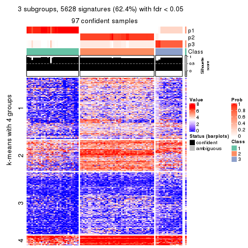
get_signatures(res, k = 4, scale_rows = FALSE)
get_signatures(res, k = 5, scale_rows = FALSE)
get_signatures(res, k = 6, scale_rows = FALSE)
Compare the overlap of signatures from different k:
compare_signatures(res)

get_signature() returns a data frame invisibly. TO get the list of signatures, the function
call should be assigned to a variable explicitly. In following code, if plot argument is set
to FALSE, no heatmap is plotted while only the differential analysis is performed.
# code only for demonstration
tb = get_signature(res, k = ..., plot = FALSE)
An example of the output of tb is:
#> which_row fdr mean_1 mean_2 scaled_mean_1 scaled_mean_2 km
#> 1 38 0.042760348 8.373488 9.131774 -0.5533452 0.5164555 1
#> 2 40 0.018707592 7.106213 8.469186 -0.6173731 0.5762149 1
#> 3 55 0.019134737 10.221463 11.207825 -0.6159697 0.5749050 1
#> 4 59 0.006059896 5.921854 7.869574 -0.6899429 0.6439467 1
#> 5 60 0.018055526 8.928898 10.211722 -0.6204761 0.5791110 1
#> 6 98 0.009384629 15.714769 14.887706 0.6635654 -0.6193277 2
...
The columns in tb are:
which_row: row indices corresponding to the input matrix.fdr: FDR for the differential test. mean_x: The mean value in group x.scaled_mean_x: The mean value in group x after rows are scaled.km: Row groups if k-means clustering is applied to rows.UMAP plot which shows how samples are separated.
dimension_reduction(res, k = 2, method = "UMAP")
dimension_reduction(res, k = 3, method = "UMAP")
dimension_reduction(res, k = 4, method = "UMAP")
dimension_reduction(res, k = 5, method = "UMAP")
dimension_reduction(res, k = 6, method = "UMAP")
Following heatmap shows how subgroups are split when increasing k:
collect_classes(res)
If matrix rows can be associated to genes, consider to use functional_enrichment(res,
...) to perform function enrichment for the signature genes. See this vignette for more detailed explanations.
The object with results only for a single top-value method and a single partition method can be extracted as:
res = res_list["ATC", "skmeans"]
# you can also extract it by
# res = res_list["ATC:skmeans"]
A summary of res and all the functions that can be applied to it:
res
#> A 'ConsensusPartition' object with k = 2, 3, 4, 5, 6.
#> On a matrix with 9017 rows and 98 columns.
#> Top rows (902, 1804, 2705, 3606, 4508) are extracted by 'ATC' method.
#> Subgroups are detected by 'skmeans' method.
#> Performed in total 1250 partitions by row resampling.
#> Best k for subgroups seems to be 3.
#>
#> Following methods can be applied to this 'ConsensusPartition' object:
#> [1] "cola_report" "collect_classes" "collect_plots"
#> [4] "collect_stats" "colnames" "compare_signatures"
#> [7] "consensus_heatmap" "dimension_reduction" "functional_enrichment"
#> [10] "get_anno_col" "get_anno" "get_classes"
#> [13] "get_consensus" "get_matrix" "get_membership"
#> [16] "get_param" "get_signatures" "get_stats"
#> [19] "is_best_k" "is_stable_k" "membership_heatmap"
#> [22] "ncol" "nrow" "plot_ecdf"
#> [25] "rownames" "select_partition_number" "show"
#> [28] "suggest_best_k" "test_to_known_factors"
collect_plots() function collects all the plots made from res for all k (number of partitions)
into one single page to provide an easy and fast comparison between different k.
collect_plots(res)
The plots are:
k and the heatmap of
predicted classes for each k.k.k.k.All the plots in panels can be made by individual functions and they are plotted later in this section.
select_partition_number() produces several plots showing different
statistics for choosing “optimized” k. There are following statistics:
k;k, the area increased is defined as \(A_k - A_{k-1}\).The detailed explanations of these statistics can be found in the cola vignette.
Generally speaking, lower PAC score, higher mean silhouette score or higher
concordance corresponds to better partition. Rand index and Jaccard index
measure how similar the current partition is compared to partition with k-1.
If they are too similar, we won't accept k is better than k-1.
select_partition_number(res)
The numeric values for all these statistics can be obtained by get_stats().
get_stats(res)
#> k 1-PAC mean_silhouette concordance area_increased Rand Jaccard
#> 2 2 1.000 0.988 0.995 0.5055 0.495 0.495
#> 3 3 1.000 0.992 0.995 0.2321 0.871 0.743
#> 4 4 0.882 0.929 0.895 0.1190 0.858 0.638
#> 5 5 0.843 0.926 0.929 0.0520 0.979 0.922
#> 6 6 0.781 0.862 0.905 0.0313 0.993 0.972
suggest_best_k() suggests the best \(k\) based on these statistics. The rules are as follows:
suggest_best_k(res)
#> [1] 3
#> attr(,"optional")
#> [1] 2
There is also optional best \(k\) = 2 that is worth to check.
Following shows the table of the partitions (You need to click the show/hide
code output link to see it). The membership matrix (columns with name p*)
is inferred by
clue::cl_consensus()
function with the SE method. Basically the value in the membership matrix
represents the probability to belong to a certain group. The finall class
label for an item is determined with the group with highest probability it
belongs to.
In get_classes() function, the entropy is calculated from the membership
matrix and the silhouette score is calculated from the consensus matrix.
cbind(get_classes(res, k = 2), get_membership(res, k = 2))
#> class entropy silhouette p1 p2
#> SRR1810660 1 0.0000 0.992 1.000 0.000
#> SRR1810659 1 0.0000 0.992 1.000 0.000
#> SRR1810658 1 0.0000 0.992 1.000 0.000
#> SRR1810657 1 0.0000 0.992 1.000 0.000
#> SRR1818435 2 0.4298 0.902 0.088 0.912
#> SRR1818434 2 0.0376 0.994 0.004 0.996
#> SRR1810752 2 0.0000 0.998 0.000 1.000
#> SRR1810751 2 0.0000 0.998 0.000 1.000
#> SRR1810749 1 0.0000 0.992 1.000 0.000
#> SRR1810748 1 0.0000 0.992 1.000 0.000
#> SRR1810750 1 0.0000 0.992 1.000 0.000
#> SRR1810747 2 0.0000 0.998 0.000 1.000
#> SRR1810746 1 0.0000 0.992 1.000 0.000
#> SRR1810745 1 0.0000 0.992 1.000 0.000
#> SRR1810744 1 0.0000 0.992 1.000 0.000
#> SRR1810743 1 0.0000 0.992 1.000 0.000
#> SRR1810742 2 0.0000 0.998 0.000 1.000
#> SRR1810741 2 0.0000 0.998 0.000 1.000
#> SRR1810740 1 0.0000 0.992 1.000 0.000
#> SRR1810739 1 0.0000 0.992 1.000 0.000
#> SRR1810738 1 0.0000 0.992 1.000 0.000
#> SRR1810737 2 0.0000 0.998 0.000 1.000
#> SRR1810736 2 0.0000 0.998 0.000 1.000
#> SRR1810734 2 0.0000 0.998 0.000 1.000
#> SRR1810735 2 0.0000 0.998 0.000 1.000
#> SRR1810733 2 0.0000 0.998 0.000 1.000
#> SRR1810732 1 0.0000 0.992 1.000 0.000
#> SRR1810730 2 0.0000 0.998 0.000 1.000
#> SRR1810729 1 0.0000 0.992 1.000 0.000
#> SRR1810731 1 0.0000 0.992 1.000 0.000
#> SRR1810728 2 0.0000 0.998 0.000 1.000
#> SRR1810727 2 0.0000 0.998 0.000 1.000
#> SRR1810726 1 0.0000 0.992 1.000 0.000
#> SRR1810725 2 0.0000 0.998 0.000 1.000
#> SRR1810724 2 0.0000 0.998 0.000 1.000
#> SRR1810723 1 0.0000 0.992 1.000 0.000
#> SRR1810722 1 0.0000 0.992 1.000 0.000
#> SRR1810721 1 0.0000 0.992 1.000 0.000
#> SRR1810720 1 0.0000 0.992 1.000 0.000
#> SRR1810719 2 0.0000 0.998 0.000 1.000
#> SRR1810718 1 0.0000 0.992 1.000 0.000
#> SRR1810717 1 0.0000 0.992 1.000 0.000
#> SRR1810716 2 0.0000 0.998 0.000 1.000
#> SRR1810715 2 0.0000 0.998 0.000 1.000
#> SRR1810713 2 0.0000 0.998 0.000 1.000
#> SRR1810714 1 0.0000 0.992 1.000 0.000
#> SRR1810712 2 0.0000 0.998 0.000 1.000
#> SRR1810710 2 0.0000 0.998 0.000 1.000
#> SRR1810711 2 0.0000 0.998 0.000 1.000
#> SRR1810709 2 0.0000 0.998 0.000 1.000
#> SRR1810708 1 0.0000 0.992 1.000 0.000
#> SRR1810707 1 0.0000 0.992 1.000 0.000
#> SRR1810706 2 0.0000 0.998 0.000 1.000
#> SRR1810704 1 0.0000 0.992 1.000 0.000
#> SRR1810705 1 0.0000 0.992 1.000 0.000
#> SRR1810703 1 0.0000 0.992 1.000 0.000
#> SRR1810702 2 0.0000 0.998 0.000 1.000
#> SRR1810701 1 0.0000 0.992 1.000 0.000
#> SRR1810700 2 0.0000 0.998 0.000 1.000
#> SRR1810699 2 0.0000 0.998 0.000 1.000
#> SRR1810696 2 0.0000 0.998 0.000 1.000
#> SRR1810695 2 0.0000 0.998 0.000 1.000
#> SRR1810698 2 0.0000 0.998 0.000 1.000
#> SRR1810697 2 0.0000 0.998 0.000 1.000
#> SRR1810694 2 0.0000 0.998 0.000 1.000
#> SRR1810693 1 0.0000 0.992 1.000 0.000
#> SRR1810692 2 0.0000 0.998 0.000 1.000
#> SRR1810690 2 0.0000 0.998 0.000 1.000
#> SRR1810691 1 0.0000 0.992 1.000 0.000
#> SRR1810689 2 0.0000 0.998 0.000 1.000
#> SRR1810688 2 0.0000 0.998 0.000 1.000
#> SRR1810687 2 0.0000 0.998 0.000 1.000
#> SRR1810685 1 0.0000 0.992 1.000 0.000
#> SRR1810686 2 0.0000 0.998 0.000 1.000
#> SRR1810684 2 0.0000 0.998 0.000 1.000
#> SRR1810683 2 0.0000 0.998 0.000 1.000
#> SRR1810680 2 0.0000 0.998 0.000 1.000
#> SRR1810679 2 0.0000 0.998 0.000 1.000
#> SRR1810678 2 0.0000 0.998 0.000 1.000
#> SRR1810682 2 0.0000 0.998 0.000 1.000
#> SRR1810681 2 0.0000 0.998 0.000 1.000
#> SRR1810677 2 0.0000 0.998 0.000 1.000
#> SRR1810676 2 0.0000 0.998 0.000 1.000
#> SRR1810675 1 0.0000 0.992 1.000 0.000
#> SRR1810673 1 0.0000 0.992 1.000 0.000
#> SRR1810674 1 0.0000 0.992 1.000 0.000
#> SRR1810671 1 0.0000 0.992 1.000 0.000
#> SRR1810670 1 0.0000 0.992 1.000 0.000
#> SRR1810669 1 0.0000 0.992 1.000 0.000
#> SRR1810667 1 0.0000 0.992 1.000 0.000
#> SRR1810666 1 0.0000 0.992 1.000 0.000
#> SRR1810672 1 0.0000 0.992 1.000 0.000
#> SRR1810668 1 0.9635 0.362 0.612 0.388
#> SRR1810665 1 0.0000 0.992 1.000 0.000
#> SRR1810664 1 0.0000 0.992 1.000 0.000
#> SRR1810663 1 0.0000 0.992 1.000 0.000
#> SRR1810661 1 0.0000 0.992 1.000 0.000
#> SRR1810662 1 0.0000 0.992 1.000 0.000
cbind(get_classes(res, k = 3), get_membership(res, k = 3))
#> class entropy silhouette p1 p2 p3
#> SRR1810660 1 0.0000 0.993 1.000 0.000 0.000
#> SRR1810659 1 0.0000 0.993 1.000 0.000 0.000
#> SRR1810658 1 0.0000 0.993 1.000 0.000 0.000
#> SRR1810657 1 0.0000 0.993 1.000 0.000 0.000
#> SRR1818435 3 0.1031 0.973 0.000 0.024 0.976
#> SRR1818434 3 0.1031 0.973 0.000 0.024 0.976
#> SRR1810752 2 0.0000 0.998 0.000 1.000 0.000
#> SRR1810751 2 0.0000 0.998 0.000 1.000 0.000
#> SRR1810749 1 0.0000 0.993 1.000 0.000 0.000
#> SRR1810748 1 0.0000 0.993 1.000 0.000 0.000
#> SRR1810750 1 0.0000 0.993 1.000 0.000 0.000
#> SRR1810747 2 0.0000 0.998 0.000 1.000 0.000
#> SRR1810746 1 0.0000 0.993 1.000 0.000 0.000
#> SRR1810745 1 0.0000 0.993 1.000 0.000 0.000
#> SRR1810744 1 0.0000 0.993 1.000 0.000 0.000
#> SRR1810743 1 0.0000 0.993 1.000 0.000 0.000
#> SRR1810742 2 0.0237 0.998 0.000 0.996 0.004
#> SRR1810741 2 0.0000 0.998 0.000 1.000 0.000
#> SRR1810740 1 0.0000 0.993 1.000 0.000 0.000
#> SRR1810739 1 0.0000 0.993 1.000 0.000 0.000
#> SRR1810738 1 0.0000 0.993 1.000 0.000 0.000
#> SRR1810737 2 0.0237 0.998 0.000 0.996 0.004
#> SRR1810736 2 0.0237 0.998 0.000 0.996 0.004
#> SRR1810734 2 0.0000 0.998 0.000 1.000 0.000
#> SRR1810735 2 0.0237 0.998 0.000 0.996 0.004
#> SRR1810733 2 0.0237 0.998 0.000 0.996 0.004
#> SRR1810732 1 0.0000 0.993 1.000 0.000 0.000
#> SRR1810730 2 0.0237 0.998 0.000 0.996 0.004
#> SRR1810729 1 0.0000 0.993 1.000 0.000 0.000
#> SRR1810731 1 0.0000 0.993 1.000 0.000 0.000
#> SRR1810728 2 0.0237 0.998 0.000 0.996 0.004
#> SRR1810727 2 0.0237 0.998 0.000 0.996 0.004
#> SRR1810726 1 0.0000 0.993 1.000 0.000 0.000
#> SRR1810725 2 0.0237 0.998 0.000 0.996 0.004
#> SRR1810724 2 0.0237 0.998 0.000 0.996 0.004
#> SRR1810723 1 0.0000 0.993 1.000 0.000 0.000
#> SRR1810722 1 0.0000 0.993 1.000 0.000 0.000
#> SRR1810721 1 0.0000 0.993 1.000 0.000 0.000
#> SRR1810720 1 0.0000 0.993 1.000 0.000 0.000
#> SRR1810719 2 0.0000 0.998 0.000 1.000 0.000
#> SRR1810718 1 0.0000 0.993 1.000 0.000 0.000
#> SRR1810717 1 0.0000 0.993 1.000 0.000 0.000
#> SRR1810716 2 0.0237 0.998 0.000 0.996 0.004
#> SRR1810715 2 0.0000 0.998 0.000 1.000 0.000
#> SRR1810713 2 0.0000 0.998 0.000 1.000 0.000
#> SRR1810714 1 0.0000 0.993 1.000 0.000 0.000
#> SRR1810712 2 0.0000 0.998 0.000 1.000 0.000
#> SRR1810710 2 0.0237 0.998 0.000 0.996 0.004
#> SRR1810711 2 0.0000 0.998 0.000 1.000 0.000
#> SRR1810709 2 0.0237 0.998 0.000 0.996 0.004
#> SRR1810708 1 0.0000 0.993 1.000 0.000 0.000
#> SRR1810707 1 0.0000 0.993 1.000 0.000 0.000
#> SRR1810706 2 0.0237 0.998 0.000 0.996 0.004
#> SRR1810704 1 0.0000 0.993 1.000 0.000 0.000
#> SRR1810705 1 0.0000 0.993 1.000 0.000 0.000
#> SRR1810703 1 0.0000 0.993 1.000 0.000 0.000
#> SRR1810702 2 0.0000 0.998 0.000 1.000 0.000
#> SRR1810701 1 0.0000 0.993 1.000 0.000 0.000
#> SRR1810700 2 0.0000 0.998 0.000 1.000 0.000
#> SRR1810699 2 0.0000 0.998 0.000 1.000 0.000
#> SRR1810696 2 0.0237 0.998 0.000 0.996 0.004
#> SRR1810695 2 0.0237 0.998 0.000 0.996 0.004
#> SRR1810698 2 0.0237 0.998 0.000 0.996 0.004
#> SRR1810697 2 0.0237 0.998 0.000 0.996 0.004
#> SRR1810694 2 0.0237 0.998 0.000 0.996 0.004
#> SRR1810693 1 0.0000 0.993 1.000 0.000 0.000
#> SRR1810692 2 0.0000 0.998 0.000 1.000 0.000
#> SRR1810690 2 0.0000 0.998 0.000 1.000 0.000
#> SRR1810691 1 0.0000 0.993 1.000 0.000 0.000
#> SRR1810689 2 0.0000 0.998 0.000 1.000 0.000
#> SRR1810688 2 0.0000 0.998 0.000 1.000 0.000
#> SRR1810687 2 0.0000 0.998 0.000 1.000 0.000
#> SRR1810685 1 0.0000 0.993 1.000 0.000 0.000
#> SRR1810686 2 0.0000 0.998 0.000 1.000 0.000
#> SRR1810684 2 0.0237 0.998 0.000 0.996 0.004
#> SRR1810683 2 0.0000 0.998 0.000 1.000 0.000
#> SRR1810680 2 0.0000 0.998 0.000 1.000 0.000
#> SRR1810679 2 0.0237 0.998 0.000 0.996 0.004
#> SRR1810678 2 0.0000 0.998 0.000 1.000 0.000
#> SRR1810682 2 0.0000 0.998 0.000 1.000 0.000
#> SRR1810681 2 0.0000 0.998 0.000 1.000 0.000
#> SRR1810677 2 0.0000 0.998 0.000 1.000 0.000
#> SRR1810676 2 0.0000 0.998 0.000 1.000 0.000
#> SRR1810675 3 0.0237 0.993 0.004 0.000 0.996
#> SRR1810673 3 0.0237 0.993 0.004 0.000 0.996
#> SRR1810674 3 0.0237 0.993 0.004 0.000 0.996
#> SRR1810671 3 0.0237 0.993 0.004 0.000 0.996
#> SRR1810670 3 0.0237 0.993 0.004 0.000 0.996
#> SRR1810669 1 0.4796 0.716 0.780 0.000 0.220
#> SRR1810667 3 0.0237 0.993 0.004 0.000 0.996
#> SRR1810666 3 0.0237 0.993 0.004 0.000 0.996
#> SRR1810672 3 0.0237 0.993 0.004 0.000 0.996
#> SRR1810668 3 0.0237 0.993 0.004 0.000 0.996
#> SRR1810665 3 0.0237 0.993 0.004 0.000 0.996
#> SRR1810664 3 0.0237 0.993 0.004 0.000 0.996
#> SRR1810663 3 0.0237 0.993 0.004 0.000 0.996
#> SRR1810661 3 0.2066 0.939 0.060 0.000 0.940
#> SRR1810662 3 0.0237 0.993 0.004 0.000 0.996
cbind(get_classes(res, k = 4), get_membership(res, k = 4))
#> class entropy silhouette p1 p2 p3 p4
#> SRR1810660 1 0.0000 0.998 1.000 0.000 0.000 0.000
#> SRR1810659 1 0.0000 0.998 1.000 0.000 0.000 0.000
#> SRR1810658 1 0.0000 0.998 1.000 0.000 0.000 0.000
#> SRR1810657 1 0.0000 0.998 1.000 0.000 0.000 0.000
#> SRR1818435 2 0.7043 0.281 0.000 0.504 0.128 0.368
#> SRR1818434 2 0.7043 0.281 0.000 0.504 0.128 0.368
#> SRR1810752 2 0.0000 0.912 0.000 1.000 0.000 0.000
#> SRR1810751 2 0.0000 0.912 0.000 1.000 0.000 0.000
#> SRR1810749 1 0.0336 0.994 0.992 0.000 0.000 0.008
#> SRR1810748 1 0.0000 0.998 1.000 0.000 0.000 0.000
#> SRR1810750 1 0.0000 0.998 1.000 0.000 0.000 0.000
#> SRR1810747 2 0.0000 0.912 0.000 1.000 0.000 0.000
#> SRR1810746 1 0.0000 0.998 1.000 0.000 0.000 0.000
#> SRR1810745 1 0.0000 0.998 1.000 0.000 0.000 0.000
#> SRR1810744 1 0.0000 0.998 1.000 0.000 0.000 0.000
#> SRR1810743 1 0.0000 0.998 1.000 0.000 0.000 0.000
#> SRR1810742 4 0.4776 0.990 0.000 0.376 0.000 0.624
#> SRR1810741 2 0.0000 0.912 0.000 1.000 0.000 0.000
#> SRR1810740 1 0.0188 0.996 0.996 0.000 0.000 0.004
#> SRR1810739 1 0.0000 0.998 1.000 0.000 0.000 0.000
#> SRR1810738 1 0.0188 0.996 0.996 0.000 0.000 0.004
#> SRR1810737 4 0.4776 0.990 0.000 0.376 0.000 0.624
#> SRR1810736 4 0.4790 0.985 0.000 0.380 0.000 0.620
#> SRR1810734 2 0.0000 0.912 0.000 1.000 0.000 0.000
#> SRR1810735 4 0.4776 0.990 0.000 0.376 0.000 0.624
#> SRR1810733 4 0.4776 0.990 0.000 0.376 0.000 0.624
#> SRR1810732 1 0.0000 0.998 1.000 0.000 0.000 0.000
#> SRR1810730 4 0.4776 0.990 0.000 0.376 0.000 0.624
#> SRR1810729 1 0.0000 0.998 1.000 0.000 0.000 0.000
#> SRR1810731 1 0.0188 0.996 0.996 0.000 0.000 0.004
#> SRR1810728 4 0.4776 0.990 0.000 0.376 0.000 0.624
#> SRR1810727 4 0.4776 0.990 0.000 0.376 0.000 0.624
#> SRR1810726 1 0.0921 0.977 0.972 0.000 0.000 0.028
#> SRR1810725 4 0.4776 0.990 0.000 0.376 0.000 0.624
#> SRR1810724 4 0.4877 0.947 0.000 0.408 0.000 0.592
#> SRR1810723 1 0.0000 0.998 1.000 0.000 0.000 0.000
#> SRR1810722 1 0.0000 0.998 1.000 0.000 0.000 0.000
#> SRR1810721 1 0.0188 0.996 0.996 0.000 0.000 0.004
#> SRR1810720 1 0.0188 0.996 0.996 0.000 0.000 0.004
#> SRR1810719 2 0.0000 0.912 0.000 1.000 0.000 0.000
#> SRR1810718 1 0.0000 0.998 1.000 0.000 0.000 0.000
#> SRR1810717 1 0.0000 0.998 1.000 0.000 0.000 0.000
#> SRR1810716 4 0.4776 0.990 0.000 0.376 0.000 0.624
#> SRR1810715 2 0.0000 0.912 0.000 1.000 0.000 0.000
#> SRR1810713 2 0.0000 0.912 0.000 1.000 0.000 0.000
#> SRR1810714 1 0.0000 0.998 1.000 0.000 0.000 0.000
#> SRR1810712 2 0.0000 0.912 0.000 1.000 0.000 0.000
#> SRR1810710 4 0.4776 0.990 0.000 0.376 0.000 0.624
#> SRR1810711 2 0.0000 0.912 0.000 1.000 0.000 0.000
#> SRR1810709 4 0.4776 0.990 0.000 0.376 0.000 0.624
#> SRR1810708 1 0.0000 0.998 1.000 0.000 0.000 0.000
#> SRR1810707 1 0.0000 0.998 1.000 0.000 0.000 0.000
#> SRR1810706 4 0.4955 0.883 0.000 0.444 0.000 0.556
#> SRR1810704 1 0.0000 0.998 1.000 0.000 0.000 0.000
#> SRR1810705 1 0.0000 0.998 1.000 0.000 0.000 0.000
#> SRR1810703 1 0.0000 0.998 1.000 0.000 0.000 0.000
#> SRR1810702 2 0.0000 0.912 0.000 1.000 0.000 0.000
#> SRR1810701 1 0.0000 0.998 1.000 0.000 0.000 0.000
#> SRR1810700 2 0.0000 0.912 0.000 1.000 0.000 0.000
#> SRR1810699 2 0.0000 0.912 0.000 1.000 0.000 0.000
#> SRR1810696 4 0.4776 0.990 0.000 0.376 0.000 0.624
#> SRR1810695 4 0.4855 0.959 0.000 0.400 0.000 0.600
#> SRR1810698 4 0.4776 0.990 0.000 0.376 0.000 0.624
#> SRR1810697 4 0.4776 0.990 0.000 0.376 0.000 0.624
#> SRR1810694 4 0.4776 0.990 0.000 0.376 0.000 0.624
#> SRR1810693 1 0.0000 0.998 1.000 0.000 0.000 0.000
#> SRR1810692 2 0.2921 0.643 0.000 0.860 0.000 0.140
#> SRR1810690 2 0.0469 0.897 0.000 0.988 0.000 0.012
#> SRR1810691 1 0.0336 0.994 0.992 0.000 0.000 0.008
#> SRR1810689 2 0.0000 0.912 0.000 1.000 0.000 0.000
#> SRR1810688 2 0.0000 0.912 0.000 1.000 0.000 0.000
#> SRR1810687 2 0.0000 0.912 0.000 1.000 0.000 0.000
#> SRR1810685 1 0.0188 0.996 0.996 0.000 0.000 0.004
#> SRR1810686 2 0.0000 0.912 0.000 1.000 0.000 0.000
#> SRR1810684 4 0.4776 0.990 0.000 0.376 0.000 0.624
#> SRR1810683 2 0.0000 0.912 0.000 1.000 0.000 0.000
#> SRR1810680 2 0.0336 0.902 0.000 0.992 0.000 0.008
#> SRR1810679 4 0.4776 0.990 0.000 0.376 0.000 0.624
#> SRR1810678 2 0.0000 0.912 0.000 1.000 0.000 0.000
#> SRR1810682 2 0.0000 0.912 0.000 1.000 0.000 0.000
#> SRR1810681 2 0.4679 -0.272 0.000 0.648 0.000 0.352
#> SRR1810677 2 0.0000 0.912 0.000 1.000 0.000 0.000
#> SRR1810676 2 0.0000 0.912 0.000 1.000 0.000 0.000
#> SRR1810675 3 0.0336 0.962 0.000 0.000 0.992 0.008
#> SRR1810673 3 0.0188 0.964 0.000 0.000 0.996 0.004
#> SRR1810674 3 0.0188 0.964 0.000 0.000 0.996 0.004
#> SRR1810671 3 0.0000 0.965 0.000 0.000 1.000 0.000
#> SRR1810670 3 0.0000 0.965 0.000 0.000 1.000 0.000
#> SRR1810669 3 0.4898 0.287 0.416 0.000 0.584 0.000
#> SRR1810667 3 0.0188 0.964 0.000 0.000 0.996 0.004
#> SRR1810666 3 0.0000 0.965 0.000 0.000 1.000 0.000
#> SRR1810672 3 0.0000 0.965 0.000 0.000 1.000 0.000
#> SRR1810668 3 0.0592 0.959 0.000 0.000 0.984 0.016
#> SRR1810665 3 0.0000 0.965 0.000 0.000 1.000 0.000
#> SRR1810664 3 0.0000 0.965 0.000 0.000 1.000 0.000
#> SRR1810663 3 0.0000 0.965 0.000 0.000 1.000 0.000
#> SRR1810661 3 0.0336 0.959 0.008 0.000 0.992 0.000
#> SRR1810662 3 0.0000 0.965 0.000 0.000 1.000 0.000
cbind(get_classes(res, k = 5), get_membership(res, k = 5))
#> class entropy silhouette p1 p2 p3 p4 p5
#> SRR1810660 1 0.0000 0.9531 1.000 0.000 0.000 0.000 0.000
#> SRR1810659 1 0.0162 0.9527 0.996 0.000 0.000 0.004 0.000
#> SRR1810658 1 0.0324 0.9517 0.992 0.000 0.004 0.004 0.000
#> SRR1810657 1 0.0000 0.9531 1.000 0.000 0.000 0.000 0.000
#> SRR1818435 5 0.2824 1.0000 0.000 0.116 0.020 0.000 0.864
#> SRR1818434 5 0.2824 1.0000 0.000 0.116 0.020 0.000 0.864
#> SRR1810752 2 0.0000 0.9605 0.000 1.000 0.000 0.000 0.000
#> SRR1810751 2 0.0000 0.9605 0.000 1.000 0.000 0.000 0.000
#> SRR1810749 1 0.2989 0.8744 0.868 0.000 0.000 0.060 0.072
#> SRR1810748 1 0.0000 0.9531 1.000 0.000 0.000 0.000 0.000
#> SRR1810750 1 0.0162 0.9531 0.996 0.000 0.000 0.000 0.004
#> SRR1810747 2 0.0000 0.9605 0.000 1.000 0.000 0.000 0.000
#> SRR1810746 1 0.0162 0.9530 0.996 0.000 0.000 0.000 0.004
#> SRR1810745 1 0.0579 0.9513 0.984 0.000 0.000 0.008 0.008
#> SRR1810744 1 0.0290 0.9530 0.992 0.000 0.000 0.000 0.008
#> SRR1810743 1 0.0162 0.9533 0.996 0.000 0.000 0.004 0.000
#> SRR1810742 4 0.2773 0.9665 0.000 0.164 0.000 0.836 0.000
#> SRR1810741 2 0.0000 0.9605 0.000 1.000 0.000 0.000 0.000
#> SRR1810740 1 0.0898 0.9473 0.972 0.000 0.000 0.008 0.020
#> SRR1810739 1 0.0807 0.9493 0.976 0.000 0.000 0.012 0.012
#> SRR1810738 1 0.1830 0.9256 0.932 0.000 0.000 0.040 0.028
#> SRR1810737 4 0.2813 0.9643 0.000 0.168 0.000 0.832 0.000
#> SRR1810736 4 0.2732 0.9670 0.000 0.160 0.000 0.840 0.000
#> SRR1810734 2 0.0000 0.9605 0.000 1.000 0.000 0.000 0.000
#> SRR1810735 4 0.2890 0.9673 0.000 0.160 0.000 0.836 0.004
#> SRR1810733 4 0.3123 0.9631 0.000 0.160 0.000 0.828 0.012
#> SRR1810732 1 0.0404 0.9518 0.988 0.000 0.000 0.000 0.012
#> SRR1810730 4 0.3053 0.9645 0.000 0.164 0.000 0.828 0.008
#> SRR1810729 1 0.0000 0.9531 1.000 0.000 0.000 0.000 0.000
#> SRR1810731 1 0.1205 0.9415 0.956 0.000 0.000 0.004 0.040
#> SRR1810728 4 0.2732 0.9670 0.000 0.160 0.000 0.840 0.000
#> SRR1810727 4 0.2732 0.9670 0.000 0.160 0.000 0.840 0.000
#> SRR1810726 1 0.5312 0.6264 0.668 0.000 0.000 0.124 0.208
#> SRR1810725 4 0.2852 0.9614 0.000 0.172 0.000 0.828 0.000
#> SRR1810724 4 0.3636 0.8453 0.000 0.272 0.000 0.728 0.000
#> SRR1810723 1 0.0162 0.9531 0.996 0.000 0.000 0.000 0.004
#> SRR1810722 1 0.0798 0.9503 0.976 0.000 0.000 0.008 0.016
#> SRR1810721 1 0.1648 0.9303 0.940 0.000 0.000 0.020 0.040
#> SRR1810720 1 0.1800 0.9276 0.932 0.000 0.000 0.020 0.048
#> SRR1810719 2 0.0000 0.9605 0.000 1.000 0.000 0.000 0.000
#> SRR1810718 1 0.0000 0.9531 1.000 0.000 0.000 0.000 0.000
#> SRR1810717 1 0.0162 0.9531 0.996 0.000 0.000 0.000 0.004
#> SRR1810716 4 0.2852 0.9614 0.000 0.172 0.000 0.828 0.000
#> SRR1810715 2 0.0000 0.9605 0.000 1.000 0.000 0.000 0.000
#> SRR1810713 2 0.0000 0.9605 0.000 1.000 0.000 0.000 0.000
#> SRR1810714 1 0.0000 0.9531 1.000 0.000 0.000 0.000 0.000
#> SRR1810712 2 0.0000 0.9605 0.000 1.000 0.000 0.000 0.000
#> SRR1810710 4 0.2773 0.9661 0.000 0.164 0.000 0.836 0.000
#> SRR1810711 2 0.0000 0.9605 0.000 1.000 0.000 0.000 0.000
#> SRR1810709 4 0.2890 0.9673 0.000 0.160 0.000 0.836 0.004
#> SRR1810708 1 0.0290 0.9527 0.992 0.000 0.000 0.000 0.008
#> SRR1810707 1 0.2006 0.9166 0.916 0.000 0.000 0.012 0.072
#> SRR1810706 4 0.3966 0.7438 0.000 0.336 0.000 0.664 0.000
#> SRR1810704 1 0.0162 0.9530 0.996 0.000 0.000 0.000 0.004
#> SRR1810705 1 0.0000 0.9531 1.000 0.000 0.000 0.000 0.000
#> SRR1810703 1 0.0000 0.9531 1.000 0.000 0.000 0.000 0.000
#> SRR1810702 2 0.0000 0.9605 0.000 1.000 0.000 0.000 0.000
#> SRR1810701 1 0.0000 0.9531 1.000 0.000 0.000 0.000 0.000
#> SRR1810700 2 0.0162 0.9576 0.000 0.996 0.000 0.004 0.000
#> SRR1810699 2 0.1043 0.9220 0.000 0.960 0.000 0.040 0.000
#> SRR1810696 4 0.2890 0.9673 0.000 0.160 0.000 0.836 0.004
#> SRR1810695 4 0.3612 0.8480 0.000 0.268 0.000 0.732 0.000
#> SRR1810698 4 0.2890 0.9673 0.000 0.160 0.000 0.836 0.004
#> SRR1810697 4 0.2732 0.9670 0.000 0.160 0.000 0.840 0.000
#> SRR1810694 4 0.2890 0.9673 0.000 0.160 0.000 0.836 0.004
#> SRR1810693 1 0.0451 0.9521 0.988 0.000 0.000 0.004 0.008
#> SRR1810692 2 0.2563 0.8065 0.000 0.872 0.000 0.120 0.008
#> SRR1810690 2 0.1251 0.9224 0.000 0.956 0.000 0.036 0.008
#> SRR1810691 1 0.2889 0.8819 0.872 0.000 0.000 0.044 0.084
#> SRR1810689 2 0.0162 0.9582 0.000 0.996 0.000 0.000 0.004
#> SRR1810688 2 0.0000 0.9605 0.000 1.000 0.000 0.000 0.000
#> SRR1810687 2 0.0000 0.9605 0.000 1.000 0.000 0.000 0.000
#> SRR1810685 1 0.2616 0.8885 0.880 0.000 0.000 0.020 0.100
#> SRR1810686 2 0.0000 0.9605 0.000 1.000 0.000 0.000 0.000
#> SRR1810684 4 0.2890 0.9673 0.000 0.160 0.000 0.836 0.004
#> SRR1810683 2 0.0000 0.9605 0.000 1.000 0.000 0.000 0.000
#> SRR1810680 2 0.1478 0.8924 0.000 0.936 0.000 0.064 0.000
#> SRR1810679 4 0.2890 0.9673 0.000 0.160 0.000 0.836 0.004
#> SRR1810678 2 0.0162 0.9582 0.000 0.996 0.000 0.000 0.004
#> SRR1810682 2 0.0000 0.9605 0.000 1.000 0.000 0.000 0.000
#> SRR1810681 2 0.4341 0.0388 0.000 0.592 0.000 0.404 0.004
#> SRR1810677 2 0.0324 0.9553 0.000 0.992 0.000 0.004 0.004
#> SRR1810676 2 0.0000 0.9605 0.000 1.000 0.000 0.000 0.000
#> SRR1810675 3 0.1300 0.9501 0.000 0.000 0.956 0.016 0.028
#> SRR1810673 3 0.0324 0.9687 0.000 0.000 0.992 0.004 0.004
#> SRR1810674 3 0.0566 0.9667 0.000 0.000 0.984 0.012 0.004
#> SRR1810671 3 0.0579 0.9668 0.000 0.000 0.984 0.008 0.008
#> SRR1810670 3 0.1018 0.9629 0.000 0.000 0.968 0.016 0.016
#> SRR1810669 1 0.4905 0.0985 0.516 0.000 0.464 0.008 0.012
#> SRR1810667 3 0.0451 0.9676 0.000 0.000 0.988 0.004 0.008
#> SRR1810666 3 0.0451 0.9677 0.000 0.000 0.988 0.008 0.004
#> SRR1810672 3 0.0912 0.9634 0.000 0.000 0.972 0.016 0.012
#> SRR1810668 3 0.2879 0.8696 0.000 0.000 0.868 0.032 0.100
#> SRR1810665 3 0.0324 0.9678 0.000 0.000 0.992 0.004 0.004
#> SRR1810664 3 0.0290 0.9685 0.000 0.000 0.992 0.000 0.008
#> SRR1810663 3 0.0162 0.9684 0.000 0.000 0.996 0.000 0.004
#> SRR1810661 3 0.2054 0.8650 0.072 0.000 0.916 0.004 0.008
#> SRR1810662 3 0.0162 0.9691 0.000 0.000 0.996 0.004 0.000
cbind(get_classes(res, k = 6), get_membership(res, k = 6))
#> class entropy silhouette p1 p2 p3 p4 p5 p6
#> SRR1810660 1 0.0363 0.8928 0.988 0.000 0.000 0.000 0.012 0.000
#> SRR1810659 1 0.0458 0.8925 0.984 0.000 0.000 0.000 0.016 0.000
#> SRR1810658 1 0.0692 0.8923 0.976 0.000 0.004 0.000 0.020 0.000
#> SRR1810657 1 0.0260 0.8930 0.992 0.000 0.000 0.000 0.008 0.000
#> SRR1818435 6 0.1151 1.0000 0.000 0.032 0.012 0.000 0.000 0.956
#> SRR1818434 6 0.1151 1.0000 0.000 0.032 0.012 0.000 0.000 0.956
#> SRR1810752 2 0.0260 0.9417 0.000 0.992 0.000 0.000 0.008 0.000
#> SRR1810751 2 0.0291 0.9415 0.000 0.992 0.000 0.000 0.004 0.004
#> SRR1810749 1 0.4589 0.1650 0.580 0.000 0.000 0.028 0.384 0.008
#> SRR1810748 1 0.0146 0.8923 0.996 0.000 0.000 0.000 0.004 0.000
#> SRR1810750 1 0.0951 0.8944 0.968 0.000 0.000 0.004 0.020 0.008
#> SRR1810747 2 0.0000 0.9416 0.000 1.000 0.000 0.000 0.000 0.000
#> SRR1810746 1 0.0767 0.8953 0.976 0.000 0.000 0.008 0.012 0.004
#> SRR1810745 1 0.1036 0.8940 0.964 0.000 0.000 0.004 0.024 0.008
#> SRR1810744 1 0.1116 0.8933 0.960 0.000 0.000 0.004 0.028 0.008
#> SRR1810743 1 0.1563 0.8808 0.932 0.000 0.000 0.012 0.056 0.000
#> SRR1810742 4 0.2520 0.9212 0.000 0.152 0.000 0.844 0.004 0.000
#> SRR1810741 2 0.0951 0.9359 0.000 0.968 0.000 0.004 0.020 0.008
#> SRR1810740 1 0.1858 0.8648 0.904 0.000 0.000 0.000 0.092 0.004
#> SRR1810739 1 0.1845 0.8670 0.916 0.000 0.000 0.008 0.072 0.004
#> SRR1810738 1 0.3642 0.7343 0.796 0.000 0.004 0.024 0.160 0.016
#> SRR1810737 4 0.2553 0.9246 0.000 0.144 0.000 0.848 0.008 0.000
#> SRR1810736 4 0.2178 0.9355 0.000 0.132 0.000 0.868 0.000 0.000
#> SRR1810734 2 0.0146 0.9414 0.000 0.996 0.000 0.000 0.004 0.000
#> SRR1810735 4 0.2454 0.9280 0.000 0.104 0.000 0.876 0.016 0.004
#> SRR1810733 4 0.2622 0.9235 0.000 0.104 0.000 0.868 0.024 0.004
#> SRR1810732 1 0.1700 0.8711 0.916 0.000 0.000 0.004 0.080 0.000
#> SRR1810730 4 0.2581 0.9357 0.000 0.120 0.000 0.860 0.020 0.000
#> SRR1810729 1 0.0458 0.8933 0.984 0.000 0.000 0.000 0.016 0.000
#> SRR1810731 1 0.2611 0.8335 0.864 0.000 0.000 0.008 0.116 0.012
#> SRR1810728 4 0.2266 0.9344 0.000 0.108 0.000 0.880 0.012 0.000
#> SRR1810727 4 0.2092 0.9371 0.000 0.124 0.000 0.876 0.000 0.000
#> SRR1810726 5 0.3869 0.0000 0.184 0.000 0.000 0.008 0.764 0.044
#> SRR1810725 4 0.2320 0.9346 0.000 0.132 0.000 0.864 0.004 0.000
#> SRR1810724 4 0.3634 0.7488 0.000 0.296 0.000 0.696 0.008 0.000
#> SRR1810723 1 0.1411 0.8827 0.936 0.000 0.000 0.000 0.060 0.004
#> SRR1810722 1 0.1477 0.8835 0.940 0.000 0.000 0.004 0.048 0.008
#> SRR1810721 1 0.2755 0.8060 0.844 0.000 0.000 0.004 0.140 0.012
#> SRR1810720 1 0.3229 0.7569 0.804 0.000 0.000 0.004 0.172 0.020
#> SRR1810719 2 0.0692 0.9379 0.000 0.976 0.000 0.000 0.020 0.004
#> SRR1810718 1 0.0146 0.8923 0.996 0.000 0.000 0.000 0.004 0.000
#> SRR1810717 1 0.0291 0.8944 0.992 0.000 0.000 0.004 0.004 0.000
#> SRR1810716 4 0.2531 0.9351 0.000 0.132 0.000 0.856 0.012 0.000
#> SRR1810715 2 0.0146 0.9417 0.000 0.996 0.000 0.000 0.004 0.000
#> SRR1810713 2 0.0692 0.9383 0.000 0.976 0.000 0.000 0.020 0.004
#> SRR1810714 1 0.0363 0.8933 0.988 0.000 0.000 0.000 0.012 0.000
#> SRR1810712 2 0.0146 0.9418 0.000 0.996 0.000 0.000 0.004 0.000
#> SRR1810710 4 0.2146 0.9370 0.000 0.116 0.000 0.880 0.004 0.000
#> SRR1810711 2 0.0000 0.9416 0.000 1.000 0.000 0.000 0.000 0.000
#> SRR1810709 4 0.2308 0.9330 0.000 0.108 0.000 0.880 0.008 0.004
#> SRR1810708 1 0.0508 0.8953 0.984 0.000 0.000 0.004 0.012 0.000
#> SRR1810707 1 0.2882 0.7771 0.812 0.000 0.000 0.000 0.180 0.008
#> SRR1810706 4 0.3940 0.6443 0.000 0.348 0.000 0.640 0.012 0.000
#> SRR1810704 1 0.0653 0.8947 0.980 0.000 0.000 0.004 0.012 0.004
#> SRR1810705 1 0.0436 0.8939 0.988 0.000 0.000 0.004 0.004 0.004
#> SRR1810703 1 0.0000 0.8919 1.000 0.000 0.000 0.000 0.000 0.000
#> SRR1810702 2 0.0000 0.9416 0.000 1.000 0.000 0.000 0.000 0.000
#> SRR1810701 1 0.0291 0.8929 0.992 0.000 0.000 0.000 0.004 0.004
#> SRR1810700 2 0.0547 0.9387 0.000 0.980 0.000 0.000 0.020 0.000
#> SRR1810699 2 0.2681 0.8591 0.000 0.880 0.000 0.072 0.020 0.028
#> SRR1810696 4 0.2492 0.9230 0.000 0.100 0.000 0.876 0.020 0.004
#> SRR1810695 4 0.3828 0.7402 0.000 0.288 0.000 0.696 0.012 0.004
#> SRR1810698 4 0.2450 0.9361 0.000 0.116 0.000 0.868 0.016 0.000
#> SRR1810697 4 0.2346 0.9373 0.000 0.124 0.000 0.868 0.008 0.000
#> SRR1810694 4 0.2587 0.9289 0.000 0.108 0.000 0.868 0.020 0.004
#> SRR1810693 1 0.1010 0.8938 0.960 0.000 0.000 0.004 0.036 0.000
#> SRR1810692 2 0.3657 0.7339 0.000 0.788 0.000 0.168 0.020 0.024
#> SRR1810690 2 0.3019 0.8452 0.000 0.856 0.000 0.092 0.032 0.020
#> SRR1810691 1 0.3555 0.5910 0.712 0.000 0.000 0.000 0.280 0.008
#> SRR1810689 2 0.1053 0.9327 0.000 0.964 0.000 0.004 0.020 0.012
#> SRR1810688 2 0.0363 0.9415 0.000 0.988 0.000 0.000 0.012 0.000
#> SRR1810687 2 0.0291 0.9415 0.000 0.992 0.000 0.000 0.004 0.004
#> SRR1810685 1 0.3714 0.6089 0.720 0.000 0.000 0.008 0.264 0.008
#> SRR1810686 2 0.0291 0.9415 0.000 0.992 0.000 0.000 0.004 0.004
#> SRR1810684 4 0.2408 0.9324 0.000 0.108 0.000 0.876 0.012 0.004
#> SRR1810683 2 0.0146 0.9415 0.000 0.996 0.000 0.000 0.000 0.004
#> SRR1810680 2 0.2745 0.8302 0.000 0.860 0.000 0.112 0.008 0.020
#> SRR1810679 4 0.2146 0.9368 0.000 0.116 0.000 0.880 0.004 0.000
#> SRR1810678 2 0.0520 0.9404 0.000 0.984 0.000 0.000 0.008 0.008
#> SRR1810682 2 0.0146 0.9417 0.000 0.996 0.000 0.000 0.000 0.004
#> SRR1810681 2 0.4867 0.0506 0.000 0.548 0.000 0.404 0.032 0.016
#> SRR1810677 2 0.1700 0.9176 0.000 0.936 0.000 0.012 0.028 0.024
#> SRR1810676 2 0.0000 0.9416 0.000 1.000 0.000 0.000 0.000 0.000
#> SRR1810675 3 0.1787 0.9277 0.000 0.000 0.932 0.020 0.032 0.016
#> SRR1810673 3 0.1268 0.9354 0.000 0.000 0.952 0.004 0.036 0.008
#> SRR1810674 3 0.1710 0.9295 0.000 0.000 0.936 0.016 0.028 0.020
#> SRR1810671 3 0.1152 0.9365 0.000 0.000 0.952 0.000 0.044 0.004
#> SRR1810670 3 0.1429 0.9366 0.000 0.000 0.940 0.004 0.052 0.004
#> SRR1810669 1 0.5610 0.1496 0.592 0.000 0.260 0.008 0.132 0.008
#> SRR1810667 3 0.1251 0.9389 0.000 0.000 0.956 0.008 0.024 0.012
#> SRR1810666 3 0.1075 0.9366 0.000 0.000 0.952 0.000 0.048 0.000
#> SRR1810672 3 0.1932 0.9209 0.004 0.000 0.912 0.004 0.076 0.004
#> SRR1810668 3 0.3411 0.8516 0.000 0.000 0.836 0.032 0.044 0.088
#> SRR1810665 3 0.1075 0.9381 0.000 0.000 0.952 0.000 0.048 0.000
#> SRR1810664 3 0.0508 0.9409 0.000 0.000 0.984 0.000 0.012 0.004
#> SRR1810663 3 0.1065 0.9404 0.000 0.000 0.964 0.008 0.020 0.008
#> SRR1810661 3 0.3456 0.7663 0.112 0.000 0.824 0.008 0.052 0.004
#> SRR1810662 3 0.0692 0.9415 0.000 0.000 0.976 0.004 0.020 0.000
Heatmaps for the consensus matrix. It visualizes the probability of two samples to be in a same group.
consensus_heatmap(res, k = 2)
consensus_heatmap(res, k = 3)
consensus_heatmap(res, k = 4)
consensus_heatmap(res, k = 5)
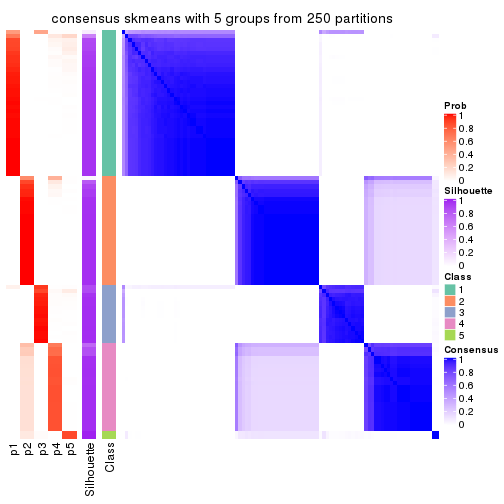
consensus_heatmap(res, k = 6)
Heatmaps for the membership of samples in all partitions to see how consistent they are:
membership_heatmap(res, k = 2)
membership_heatmap(res, k = 3)
membership_heatmap(res, k = 4)
membership_heatmap(res, k = 5)
membership_heatmap(res, k = 6)
As soon as we have had the classes for columns, we can look for signatures which are significantly different between classes which can be candidate marks for certain classes. Following are the heatmaps for signatures.
Signature heatmaps where rows are scaled:
get_signatures(res, k = 2)
get_signatures(res, k = 3)
get_signatures(res, k = 4)
get_signatures(res, k = 5)
get_signatures(res, k = 6)
Signature heatmaps where rows are not scaled:
get_signatures(res, k = 2, scale_rows = FALSE)
get_signatures(res, k = 3, scale_rows = FALSE)
get_signatures(res, k = 4, scale_rows = FALSE)
get_signatures(res, k = 5, scale_rows = FALSE)
get_signatures(res, k = 6, scale_rows = FALSE)
Compare the overlap of signatures from different k:
compare_signatures(res)
get_signature() returns a data frame invisibly. TO get the list of signatures, the function
call should be assigned to a variable explicitly. In following code, if plot argument is set
to FALSE, no heatmap is plotted while only the differential analysis is performed.
# code only for demonstration
tb = get_signature(res, k = ..., plot = FALSE)
An example of the output of tb is:
#> which_row fdr mean_1 mean_2 scaled_mean_1 scaled_mean_2 km
#> 1 38 0.042760348 8.373488 9.131774 -0.5533452 0.5164555 1
#> 2 40 0.018707592 7.106213 8.469186 -0.6173731 0.5762149 1
#> 3 55 0.019134737 10.221463 11.207825 -0.6159697 0.5749050 1
#> 4 59 0.006059896 5.921854 7.869574 -0.6899429 0.6439467 1
#> 5 60 0.018055526 8.928898 10.211722 -0.6204761 0.5791110 1
#> 6 98 0.009384629 15.714769 14.887706 0.6635654 -0.6193277 2
...
The columns in tb are:
which_row: row indices corresponding to the input matrix.fdr: FDR for the differential test. mean_x: The mean value in group x.scaled_mean_x: The mean value in group x after rows are scaled.km: Row groups if k-means clustering is applied to rows.UMAP plot which shows how samples are separated.
dimension_reduction(res, k = 2, method = "UMAP")
dimension_reduction(res, k = 3, method = "UMAP")
dimension_reduction(res, k = 4, method = "UMAP")
dimension_reduction(res, k = 5, method = "UMAP")

dimension_reduction(res, k = 6, method = "UMAP")
Following heatmap shows how subgroups are split when increasing k:
collect_classes(res)
If matrix rows can be associated to genes, consider to use functional_enrichment(res,
...) to perform function enrichment for the signature genes. See this vignette for more detailed explanations.
The object with results only for a single top-value method and a single partition method can be extracted as:
res = res_list["ATC", "pam"]
# you can also extract it by
# res = res_list["ATC:pam"]
A summary of res and all the functions that can be applied to it:
res
#> A 'ConsensusPartition' object with k = 2, 3, 4, 5, 6.
#> On a matrix with 9017 rows and 98 columns.
#> Top rows (902, 1804, 2705, 3606, 4508) are extracted by 'ATC' method.
#> Subgroups are detected by 'pam' method.
#> Performed in total 1250 partitions by row resampling.
#> Best k for subgroups seems to be 3.
#>
#> Following methods can be applied to this 'ConsensusPartition' object:
#> [1] "cola_report" "collect_classes" "collect_plots"
#> [4] "collect_stats" "colnames" "compare_signatures"
#> [7] "consensus_heatmap" "dimension_reduction" "functional_enrichment"
#> [10] "get_anno_col" "get_anno" "get_classes"
#> [13] "get_consensus" "get_matrix" "get_membership"
#> [16] "get_param" "get_signatures" "get_stats"
#> [19] "is_best_k" "is_stable_k" "membership_heatmap"
#> [22] "ncol" "nrow" "plot_ecdf"
#> [25] "rownames" "select_partition_number" "show"
#> [28] "suggest_best_k" "test_to_known_factors"
collect_plots() function collects all the plots made from res for all k (number of partitions)
into one single page to provide an easy and fast comparison between different k.
collect_plots(res)
The plots are:
k and the heatmap of
predicted classes for each k.k.k.k.All the plots in panels can be made by individual functions and they are plotted later in this section.
select_partition_number() produces several plots showing different
statistics for choosing “optimized” k. There are following statistics:
k;k, the area increased is defined as \(A_k - A_{k-1}\).The detailed explanations of these statistics can be found in the cola vignette.
Generally speaking, lower PAC score, higher mean silhouette score or higher
concordance corresponds to better partition. Rand index and Jaccard index
measure how similar the current partition is compared to partition with k-1.
If they are too similar, we won't accept k is better than k-1.
select_partition_number(res)
The numeric values for all these statistics can be obtained by get_stats().
get_stats(res)
#> k 1-PAC mean_silhouette concordance area_increased Rand Jaccard
#> 2 2 0.522 0.882 0.863 0.41481 0.496 0.496
#> 3 3 0.704 0.839 0.929 0.50038 0.878 0.755
#> 4 4 0.823 0.805 0.904 0.17244 0.862 0.640
#> 5 5 0.842 0.792 0.911 0.06766 0.958 0.839
#> 6 6 0.844 0.775 0.904 0.00561 0.997 0.987
suggest_best_k() suggests the best \(k\) based on these statistics. The rules are as follows:
suggest_best_k(res)
#> [1] 3
Following shows the table of the partitions (You need to click the show/hide
code output link to see it). The membership matrix (columns with name p*)
is inferred by
clue::cl_consensus()
function with the SE method. Basically the value in the membership matrix
represents the probability to belong to a certain group. The finall class
label for an item is determined with the group with highest probability it
belongs to.
In get_classes() function, the entropy is calculated from the membership
matrix and the silhouette score is calculated from the consensus matrix.
cbind(get_classes(res, k = 2), get_membership(res, k = 2))
#> class entropy silhouette p1 p2
#> SRR1810660 1 0.0000 0.678 1.000 0.000
#> SRR1810659 1 0.0000 0.678 1.000 0.000
#> SRR1810658 1 0.0000 0.678 1.000 0.000
#> SRR1810657 1 0.0000 0.678 1.000 0.000
#> SRR1818435 1 0.9795 0.745 0.584 0.416
#> SRR1818434 1 0.9795 0.745 0.584 0.416
#> SRR1810752 2 0.0000 0.992 0.000 1.000
#> SRR1810751 2 0.0000 0.992 0.000 1.000
#> SRR1810749 1 0.9358 0.840 0.648 0.352
#> SRR1810748 1 0.0000 0.678 1.000 0.000
#> SRR1810750 1 0.0000 0.678 1.000 0.000
#> SRR1810747 2 0.0000 0.992 0.000 1.000
#> SRR1810746 1 0.9248 0.838 0.660 0.340
#> SRR1810745 1 0.9209 0.837 0.664 0.336
#> SRR1810744 1 0.9087 0.831 0.676 0.324
#> SRR1810743 1 0.9286 0.839 0.656 0.344
#> SRR1810742 2 0.0000 0.992 0.000 1.000
#> SRR1810741 2 0.0000 0.992 0.000 1.000
#> SRR1810740 1 0.9358 0.840 0.648 0.352
#> SRR1810739 1 0.9323 0.840 0.652 0.348
#> SRR1810738 1 0.9358 0.840 0.648 0.352
#> SRR1810737 2 0.0000 0.992 0.000 1.000
#> SRR1810736 2 0.0000 0.992 0.000 1.000
#> SRR1810734 2 0.0000 0.992 0.000 1.000
#> SRR1810735 2 0.0000 0.992 0.000 1.000
#> SRR1810733 2 0.7745 0.511 0.228 0.772
#> SRR1810732 1 0.9358 0.840 0.648 0.352
#> SRR1810730 2 0.0000 0.992 0.000 1.000
#> SRR1810729 1 0.1843 0.690 0.972 0.028
#> SRR1810731 1 0.9248 0.838 0.660 0.340
#> SRR1810728 2 0.0000 0.992 0.000 1.000
#> SRR1810727 2 0.0000 0.992 0.000 1.000
#> SRR1810726 1 0.9358 0.840 0.648 0.352
#> SRR1810725 2 0.0000 0.992 0.000 1.000
#> SRR1810724 2 0.0000 0.992 0.000 1.000
#> SRR1810723 1 0.9248 0.838 0.660 0.340
#> SRR1810722 1 0.9323 0.840 0.652 0.348
#> SRR1810721 1 0.9358 0.840 0.648 0.352
#> SRR1810720 1 0.9358 0.840 0.648 0.352
#> SRR1810719 2 0.0000 0.992 0.000 1.000
#> SRR1810718 1 0.0000 0.678 1.000 0.000
#> SRR1810717 1 0.8443 0.804 0.728 0.272
#> SRR1810716 2 0.0000 0.992 0.000 1.000
#> SRR1810715 2 0.0000 0.992 0.000 1.000
#> SRR1810713 2 0.0000 0.992 0.000 1.000
#> SRR1810714 1 0.0000 0.678 1.000 0.000
#> SRR1810712 2 0.0000 0.992 0.000 1.000
#> SRR1810710 2 0.0000 0.992 0.000 1.000
#> SRR1810711 2 0.0000 0.992 0.000 1.000
#> SRR1810709 2 0.0000 0.992 0.000 1.000
#> SRR1810708 1 0.0672 0.681 0.992 0.008
#> SRR1810707 1 0.9358 0.840 0.648 0.352
#> SRR1810706 2 0.0000 0.992 0.000 1.000
#> SRR1810704 1 0.4431 0.717 0.908 0.092
#> SRR1810705 1 0.0000 0.678 1.000 0.000
#> SRR1810703 1 0.0000 0.678 1.000 0.000
#> SRR1810702 2 0.0000 0.992 0.000 1.000
#> SRR1810701 1 0.0000 0.678 1.000 0.000
#> SRR1810700 2 0.0000 0.992 0.000 1.000
#> SRR1810699 2 0.0000 0.992 0.000 1.000
#> SRR1810696 2 0.0000 0.992 0.000 1.000
#> SRR1810695 2 0.0000 0.992 0.000 1.000
#> SRR1810698 2 0.0000 0.992 0.000 1.000
#> SRR1810697 2 0.0000 0.992 0.000 1.000
#> SRR1810694 2 0.0000 0.992 0.000 1.000
#> SRR1810693 1 0.9323 0.840 0.652 0.348
#> SRR1810692 2 0.0000 0.992 0.000 1.000
#> SRR1810690 2 0.0000 0.992 0.000 1.000
#> SRR1810691 1 0.9358 0.840 0.648 0.352
#> SRR1810689 2 0.0000 0.992 0.000 1.000
#> SRR1810688 2 0.0000 0.992 0.000 1.000
#> SRR1810687 2 0.0000 0.992 0.000 1.000
#> SRR1810685 1 0.9358 0.840 0.648 0.352
#> SRR1810686 2 0.0000 0.992 0.000 1.000
#> SRR1810684 2 0.0000 0.992 0.000 1.000
#> SRR1810683 2 0.0000 0.992 0.000 1.000
#> SRR1810680 2 0.0000 0.992 0.000 1.000
#> SRR1810679 2 0.0000 0.992 0.000 1.000
#> SRR1810678 2 0.0938 0.976 0.012 0.988
#> SRR1810682 2 0.0000 0.992 0.000 1.000
#> SRR1810681 2 0.0000 0.992 0.000 1.000
#> SRR1810677 2 0.0000 0.992 0.000 1.000
#> SRR1810676 2 0.0000 0.992 0.000 1.000
#> SRR1810675 1 0.9427 0.830 0.640 0.360
#> SRR1810673 1 0.9358 0.840 0.648 0.352
#> SRR1810674 1 0.9358 0.840 0.648 0.352
#> SRR1810671 1 0.9358 0.840 0.648 0.352
#> SRR1810670 1 0.9358 0.840 0.648 0.352
#> SRR1810669 1 0.9358 0.840 0.648 0.352
#> SRR1810667 1 0.9358 0.840 0.648 0.352
#> SRR1810666 1 0.9358 0.840 0.648 0.352
#> SRR1810672 1 0.9358 0.840 0.648 0.352
#> SRR1810668 1 0.9754 0.758 0.592 0.408
#> SRR1810665 1 0.9358 0.840 0.648 0.352
#> SRR1810664 1 0.9358 0.840 0.648 0.352
#> SRR1810663 1 0.9358 0.840 0.648 0.352
#> SRR1810661 1 0.9358 0.840 0.648 0.352
#> SRR1810662 1 0.9358 0.840 0.648 0.352
cbind(get_classes(res, k = 3), get_membership(res, k = 3))
#> class entropy silhouette p1 p2 p3
#> SRR1810660 1 0.0000 0.8825 1.000 0.000 0.000
#> SRR1810659 1 0.0000 0.8825 1.000 0.000 0.000
#> SRR1810658 1 0.0000 0.8825 1.000 0.000 0.000
#> SRR1810657 1 0.0000 0.8825 1.000 0.000 0.000
#> SRR1818435 3 0.0000 0.9373 0.000 0.000 1.000
#> SRR1818434 3 0.0000 0.9373 0.000 0.000 1.000
#> SRR1810752 2 0.4555 0.8123 0.000 0.800 0.200
#> SRR1810751 2 0.3038 0.8711 0.000 0.896 0.104
#> SRR1810749 3 0.0000 0.9373 0.000 0.000 1.000
#> SRR1810748 1 0.0000 0.8825 1.000 0.000 0.000
#> SRR1810750 1 0.2625 0.8347 0.916 0.000 0.084
#> SRR1810747 2 0.4555 0.8123 0.000 0.800 0.200
#> SRR1810746 1 0.6309 0.0141 0.500 0.000 0.500
#> SRR1810745 3 0.6168 0.2334 0.412 0.000 0.588
#> SRR1810744 3 0.5178 0.6158 0.256 0.000 0.744
#> SRR1810743 3 0.0424 0.9303 0.008 0.000 0.992
#> SRR1810742 2 0.0000 0.9107 0.000 1.000 0.000
#> SRR1810741 2 0.4555 0.8123 0.000 0.800 0.200
#> SRR1810740 3 0.0000 0.9373 0.000 0.000 1.000
#> SRR1810739 3 0.0237 0.9340 0.004 0.000 0.996
#> SRR1810738 3 0.0000 0.9373 0.000 0.000 1.000
#> SRR1810737 2 0.0000 0.9107 0.000 1.000 0.000
#> SRR1810736 2 0.0000 0.9107 0.000 1.000 0.000
#> SRR1810734 2 0.4555 0.8123 0.000 0.800 0.200
#> SRR1810735 2 0.0000 0.9107 0.000 1.000 0.000
#> SRR1810733 2 0.6045 0.3695 0.000 0.620 0.380
#> SRR1810732 3 0.0237 0.9344 0.004 0.000 0.996
#> SRR1810730 2 0.0000 0.9107 0.000 1.000 0.000
#> SRR1810729 1 0.1411 0.8665 0.964 0.000 0.036
#> SRR1810731 3 0.6307 -0.0524 0.488 0.000 0.512
#> SRR1810728 2 0.0000 0.9107 0.000 1.000 0.000
#> SRR1810727 2 0.0000 0.9107 0.000 1.000 0.000
#> SRR1810726 3 0.0000 0.9373 0.000 0.000 1.000
#> SRR1810725 2 0.0000 0.9107 0.000 1.000 0.000
#> SRR1810724 2 0.0000 0.9107 0.000 1.000 0.000
#> SRR1810723 1 0.6305 0.0746 0.516 0.000 0.484
#> SRR1810722 3 0.4605 0.6979 0.204 0.000 0.796
#> SRR1810721 3 0.0000 0.9373 0.000 0.000 1.000
#> SRR1810720 3 0.0000 0.9373 0.000 0.000 1.000
#> SRR1810719 2 0.0000 0.9107 0.000 1.000 0.000
#> SRR1810718 1 0.0000 0.8825 1.000 0.000 0.000
#> SRR1810717 1 0.6045 0.3843 0.620 0.000 0.380
#> SRR1810716 2 0.0000 0.9107 0.000 1.000 0.000
#> SRR1810715 2 0.0000 0.9107 0.000 1.000 0.000
#> SRR1810713 2 0.3192 0.8676 0.000 0.888 0.112
#> SRR1810714 1 0.0000 0.8825 1.000 0.000 0.000
#> SRR1810712 2 0.0000 0.9107 0.000 1.000 0.000
#> SRR1810710 2 0.0000 0.9107 0.000 1.000 0.000
#> SRR1810711 2 0.0237 0.9096 0.000 0.996 0.004
#> SRR1810709 2 0.0000 0.9107 0.000 1.000 0.000
#> SRR1810708 1 0.1163 0.8717 0.972 0.000 0.028
#> SRR1810707 3 0.6126 0.2679 0.400 0.000 0.600
#> SRR1810706 2 0.0000 0.9107 0.000 1.000 0.000
#> SRR1810704 1 0.3686 0.7808 0.860 0.000 0.140
#> SRR1810705 1 0.0000 0.8825 1.000 0.000 0.000
#> SRR1810703 1 0.0000 0.8825 1.000 0.000 0.000
#> SRR1810702 2 0.0000 0.9107 0.000 1.000 0.000
#> SRR1810701 1 0.0000 0.8825 1.000 0.000 0.000
#> SRR1810700 2 0.0000 0.9107 0.000 1.000 0.000
#> SRR1810699 2 0.4750 0.7956 0.000 0.784 0.216
#> SRR1810696 2 0.0000 0.9107 0.000 1.000 0.000
#> SRR1810695 2 0.0000 0.9107 0.000 1.000 0.000
#> SRR1810698 2 0.0000 0.9107 0.000 1.000 0.000
#> SRR1810697 2 0.0000 0.9107 0.000 1.000 0.000
#> SRR1810694 2 0.0000 0.9107 0.000 1.000 0.000
#> SRR1810693 3 0.0237 0.9341 0.004 0.000 0.996
#> SRR1810692 2 0.0237 0.9096 0.000 0.996 0.004
#> SRR1810690 2 0.4178 0.8321 0.000 0.828 0.172
#> SRR1810691 3 0.0000 0.9373 0.000 0.000 1.000
#> SRR1810689 2 0.4555 0.8123 0.000 0.800 0.200
#> SRR1810688 2 0.4555 0.8123 0.000 0.800 0.200
#> SRR1810687 2 0.3340 0.8629 0.000 0.880 0.120
#> SRR1810685 3 0.0000 0.9373 0.000 0.000 1.000
#> SRR1810686 2 0.4062 0.8373 0.000 0.836 0.164
#> SRR1810684 2 0.0000 0.9107 0.000 1.000 0.000
#> SRR1810683 2 0.4555 0.8123 0.000 0.800 0.200
#> SRR1810680 2 0.4974 0.7708 0.000 0.764 0.236
#> SRR1810679 2 0.0000 0.9107 0.000 1.000 0.000
#> SRR1810678 2 0.5621 0.6588 0.000 0.692 0.308
#> SRR1810682 2 0.0000 0.9107 0.000 1.000 0.000
#> SRR1810681 2 0.0000 0.9107 0.000 1.000 0.000
#> SRR1810677 2 0.2066 0.8897 0.000 0.940 0.060
#> SRR1810676 2 0.4605 0.8086 0.000 0.796 0.204
#> SRR1810675 3 0.0000 0.9373 0.000 0.000 1.000
#> SRR1810673 3 0.0000 0.9373 0.000 0.000 1.000
#> SRR1810674 3 0.0000 0.9373 0.000 0.000 1.000
#> SRR1810671 3 0.0000 0.9373 0.000 0.000 1.000
#> SRR1810670 3 0.0000 0.9373 0.000 0.000 1.000
#> SRR1810669 3 0.0000 0.9373 0.000 0.000 1.000
#> SRR1810667 3 0.0000 0.9373 0.000 0.000 1.000
#> SRR1810666 3 0.0000 0.9373 0.000 0.000 1.000
#> SRR1810672 3 0.0000 0.9373 0.000 0.000 1.000
#> SRR1810668 3 0.0000 0.9373 0.000 0.000 1.000
#> SRR1810665 3 0.0000 0.9373 0.000 0.000 1.000
#> SRR1810664 3 0.0000 0.9373 0.000 0.000 1.000
#> SRR1810663 3 0.0000 0.9373 0.000 0.000 1.000
#> SRR1810661 3 0.0000 0.9373 0.000 0.000 1.000
#> SRR1810662 3 0.0000 0.9373 0.000 0.000 1.000
cbind(get_classes(res, k = 4), get_membership(res, k = 4))
#> class entropy silhouette p1 p2 p3 p4
#> SRR1810660 1 0.1637 0.8291 0.940 0.060 0.000 0.000
#> SRR1810659 1 0.1389 0.8281 0.952 0.048 0.000 0.000
#> SRR1810658 1 0.1557 0.8290 0.944 0.056 0.000 0.000
#> SRR1810657 1 0.1637 0.8291 0.940 0.060 0.000 0.000
#> SRR1818435 3 0.0000 0.9209 0.000 0.000 1.000 0.000
#> SRR1818434 3 0.0000 0.9209 0.000 0.000 1.000 0.000
#> SRR1810752 2 0.1637 0.9001 0.000 0.940 0.000 0.060
#> SRR1810751 2 0.1637 0.9001 0.000 0.940 0.000 0.060
#> SRR1810749 3 0.0000 0.9209 0.000 0.000 1.000 0.000
#> SRR1810748 1 0.1637 0.8291 0.940 0.060 0.000 0.000
#> SRR1810750 1 0.1867 0.8016 0.928 0.000 0.072 0.000
#> SRR1810747 2 0.1637 0.9001 0.000 0.940 0.000 0.060
#> SRR1810746 1 0.4998 0.0675 0.512 0.000 0.488 0.000
#> SRR1810745 3 0.4933 0.1760 0.432 0.000 0.568 0.000
#> SRR1810744 3 0.4222 0.6071 0.272 0.000 0.728 0.000
#> SRR1810743 3 0.1557 0.8953 0.056 0.000 0.944 0.000
#> SRR1810742 4 0.0000 0.9403 0.000 0.000 0.000 1.000
#> SRR1810741 2 0.3966 0.8363 0.000 0.840 0.088 0.072
#> SRR1810740 3 0.1389 0.9004 0.048 0.000 0.952 0.000
#> SRR1810739 3 0.0592 0.9157 0.016 0.000 0.984 0.000
#> SRR1810738 3 0.0000 0.9209 0.000 0.000 1.000 0.000
#> SRR1810737 4 0.0188 0.9374 0.000 0.004 0.000 0.996
#> SRR1810736 4 0.0592 0.9272 0.000 0.016 0.000 0.984
#> SRR1810734 2 0.1637 0.9001 0.000 0.940 0.000 0.060
#> SRR1810735 4 0.0000 0.9403 0.000 0.000 0.000 1.000
#> SRR1810733 4 0.0592 0.9225 0.000 0.000 0.016 0.984
#> SRR1810732 3 0.1474 0.8981 0.052 0.000 0.948 0.000
#> SRR1810730 4 0.0000 0.9403 0.000 0.000 0.000 1.000
#> SRR1810729 1 0.1118 0.8163 0.964 0.000 0.036 0.000
#> SRR1810731 1 0.5000 0.0211 0.500 0.000 0.500 0.000
#> SRR1810728 4 0.0000 0.9403 0.000 0.000 0.000 1.000
#> SRR1810727 4 0.0000 0.9403 0.000 0.000 0.000 1.000
#> SRR1810726 3 0.0000 0.9209 0.000 0.000 1.000 0.000
#> SRR1810725 4 0.0000 0.9403 0.000 0.000 0.000 1.000
#> SRR1810724 4 0.0188 0.9374 0.000 0.004 0.000 0.996
#> SRR1810723 1 0.4989 0.1219 0.528 0.000 0.472 0.000
#> SRR1810722 3 0.3688 0.7092 0.208 0.000 0.792 0.000
#> SRR1810721 3 0.1302 0.9026 0.044 0.000 0.956 0.000
#> SRR1810720 3 0.1389 0.9004 0.048 0.000 0.952 0.000
#> SRR1810719 2 0.1716 0.8990 0.000 0.936 0.000 0.064
#> SRR1810718 1 0.1637 0.8291 0.940 0.060 0.000 0.000
#> SRR1810717 1 0.4746 0.3971 0.632 0.000 0.368 0.000
#> SRR1810716 4 0.0000 0.9403 0.000 0.000 0.000 1.000
#> SRR1810715 2 0.4916 0.4174 0.000 0.576 0.000 0.424
#> SRR1810713 2 0.5174 0.7876 0.000 0.756 0.092 0.152
#> SRR1810714 1 0.1637 0.8291 0.940 0.060 0.000 0.000
#> SRR1810712 2 0.2530 0.8696 0.000 0.888 0.000 0.112
#> SRR1810710 4 0.0000 0.9403 0.000 0.000 0.000 1.000
#> SRR1810711 2 0.1637 0.9001 0.000 0.940 0.000 0.060
#> SRR1810709 4 0.0000 0.9403 0.000 0.000 0.000 1.000
#> SRR1810708 1 0.0707 0.8205 0.980 0.000 0.020 0.000
#> SRR1810707 3 0.4866 0.2605 0.404 0.000 0.596 0.000
#> SRR1810706 4 0.4164 0.5610 0.000 0.264 0.000 0.736
#> SRR1810704 1 0.2760 0.7541 0.872 0.000 0.128 0.000
#> SRR1810705 1 0.0000 0.8215 1.000 0.000 0.000 0.000
#> SRR1810703 1 0.1637 0.8291 0.940 0.060 0.000 0.000
#> SRR1810702 2 0.1637 0.9001 0.000 0.940 0.000 0.060
#> SRR1810701 1 0.1637 0.8291 0.940 0.060 0.000 0.000
#> SRR1810700 2 0.3266 0.8304 0.000 0.832 0.000 0.168
#> SRR1810699 3 0.7853 -0.1264 0.000 0.308 0.400 0.292
#> SRR1810696 4 0.0000 0.9403 0.000 0.000 0.000 1.000
#> SRR1810695 4 0.0000 0.9403 0.000 0.000 0.000 1.000
#> SRR1810698 4 0.0000 0.9403 0.000 0.000 0.000 1.000
#> SRR1810697 4 0.0000 0.9403 0.000 0.000 0.000 1.000
#> SRR1810694 4 0.0000 0.9403 0.000 0.000 0.000 1.000
#> SRR1810693 3 0.0707 0.9142 0.020 0.000 0.980 0.000
#> SRR1810692 2 0.5119 0.3665 0.000 0.556 0.004 0.440
#> SRR1810690 2 0.7468 0.4141 0.000 0.492 0.204 0.304
#> SRR1810691 3 0.1389 0.9004 0.048 0.000 0.952 0.000
#> SRR1810689 2 0.5727 0.6998 0.000 0.704 0.200 0.096
#> SRR1810688 2 0.1824 0.8986 0.000 0.936 0.004 0.060
#> SRR1810687 2 0.1637 0.9001 0.000 0.940 0.000 0.060
#> SRR1810685 3 0.1389 0.9004 0.048 0.000 0.952 0.000
#> SRR1810686 2 0.1637 0.9001 0.000 0.940 0.000 0.060
#> SRR1810684 4 0.0000 0.9403 0.000 0.000 0.000 1.000
#> SRR1810683 2 0.1637 0.9001 0.000 0.940 0.000 0.060
#> SRR1810680 4 0.7102 0.2855 0.000 0.164 0.288 0.548
#> SRR1810679 4 0.0000 0.9403 0.000 0.000 0.000 1.000
#> SRR1810678 2 0.1637 0.9001 0.000 0.940 0.000 0.060
#> SRR1810682 2 0.1792 0.8974 0.000 0.932 0.000 0.068
#> SRR1810681 4 0.4643 0.3602 0.000 0.344 0.000 0.656
#> SRR1810677 2 0.4050 0.8402 0.000 0.820 0.036 0.144
#> SRR1810676 2 0.1637 0.9001 0.000 0.940 0.000 0.060
#> SRR1810675 3 0.0000 0.9209 0.000 0.000 1.000 0.000
#> SRR1810673 3 0.0000 0.9209 0.000 0.000 1.000 0.000
#> SRR1810674 3 0.0000 0.9209 0.000 0.000 1.000 0.000
#> SRR1810671 3 0.0000 0.9209 0.000 0.000 1.000 0.000
#> SRR1810670 3 0.0000 0.9209 0.000 0.000 1.000 0.000
#> SRR1810669 3 0.0000 0.9209 0.000 0.000 1.000 0.000
#> SRR1810667 3 0.0000 0.9209 0.000 0.000 1.000 0.000
#> SRR1810666 3 0.0000 0.9209 0.000 0.000 1.000 0.000
#> SRR1810672 3 0.0000 0.9209 0.000 0.000 1.000 0.000
#> SRR1810668 3 0.0000 0.9209 0.000 0.000 1.000 0.000
#> SRR1810665 3 0.0000 0.9209 0.000 0.000 1.000 0.000
#> SRR1810664 3 0.0000 0.9209 0.000 0.000 1.000 0.000
#> SRR1810663 3 0.0000 0.9209 0.000 0.000 1.000 0.000
#> SRR1810661 3 0.0000 0.9209 0.000 0.000 1.000 0.000
#> SRR1810662 3 0.0000 0.9209 0.000 0.000 1.000 0.000
cbind(get_classes(res, k = 5), get_membership(res, k = 5))
#> class entropy silhouette p1 p2 p3 p4 p5
#> SRR1810660 5 0.0000 0.95993 0.000 0.000 0.000 0.000 1.000
#> SRR1810659 5 0.3210 0.76279 0.212 0.000 0.000 0.000 0.788
#> SRR1810658 5 0.2179 0.88978 0.100 0.000 0.004 0.000 0.896
#> SRR1810657 5 0.0000 0.95993 0.000 0.000 0.000 0.000 1.000
#> SRR1818435 3 0.0000 0.83699 0.000 0.000 1.000 0.000 0.000
#> SRR1818434 3 0.0000 0.83699 0.000 0.000 1.000 0.000 0.000
#> SRR1810752 2 0.0000 0.89460 0.000 1.000 0.000 0.000 0.000
#> SRR1810751 2 0.0000 0.89460 0.000 1.000 0.000 0.000 0.000
#> SRR1810749 3 0.0000 0.83699 0.000 0.000 1.000 0.000 0.000
#> SRR1810748 5 0.0000 0.95993 0.000 0.000 0.000 0.000 1.000
#> SRR1810750 1 0.0162 0.91707 0.996 0.000 0.000 0.000 0.004
#> SRR1810747 2 0.0000 0.89460 0.000 1.000 0.000 0.000 0.000
#> SRR1810746 1 0.0290 0.91744 0.992 0.000 0.000 0.000 0.008
#> SRR1810745 1 0.0000 0.91560 1.000 0.000 0.000 0.000 0.000
#> SRR1810744 1 0.0162 0.91274 0.996 0.000 0.004 0.000 0.000
#> SRR1810743 3 0.4304 0.14966 0.484 0.000 0.516 0.000 0.000
#> SRR1810742 4 0.0000 0.93576 0.000 0.000 0.000 1.000 0.000
#> SRR1810741 2 0.2248 0.83321 0.000 0.900 0.088 0.012 0.000
#> SRR1810740 3 0.4060 0.50508 0.360 0.000 0.640 0.000 0.000
#> SRR1810739 3 0.2929 0.69714 0.180 0.000 0.820 0.000 0.000
#> SRR1810738 3 0.0000 0.83699 0.000 0.000 1.000 0.000 0.000
#> SRR1810737 4 0.0162 0.93301 0.000 0.004 0.000 0.996 0.000
#> SRR1810736 4 0.0794 0.91275 0.000 0.028 0.000 0.972 0.000
#> SRR1810734 2 0.0000 0.89460 0.000 1.000 0.000 0.000 0.000
#> SRR1810735 4 0.0000 0.93576 0.000 0.000 0.000 1.000 0.000
#> SRR1810733 4 0.0404 0.92336 0.000 0.000 0.012 0.988 0.000
#> SRR1810732 3 0.4273 0.35349 0.448 0.000 0.552 0.000 0.000
#> SRR1810730 4 0.0000 0.93576 0.000 0.000 0.000 1.000 0.000
#> SRR1810729 1 0.0290 0.91744 0.992 0.000 0.000 0.000 0.008
#> SRR1810731 1 0.0000 0.91560 1.000 0.000 0.000 0.000 0.000
#> SRR1810728 4 0.0000 0.93576 0.000 0.000 0.000 1.000 0.000
#> SRR1810727 4 0.0000 0.93576 0.000 0.000 0.000 1.000 0.000
#> SRR1810726 3 0.0000 0.83699 0.000 0.000 1.000 0.000 0.000
#> SRR1810725 4 0.0000 0.93576 0.000 0.000 0.000 1.000 0.000
#> SRR1810724 4 0.0162 0.93302 0.000 0.004 0.000 0.996 0.000
#> SRR1810723 1 0.0290 0.91744 0.992 0.000 0.000 0.000 0.008
#> SRR1810722 1 0.4287 -0.13810 0.540 0.000 0.460 0.000 0.000
#> SRR1810721 3 0.4242 0.39563 0.428 0.000 0.572 0.000 0.000
#> SRR1810720 3 0.4249 0.38652 0.432 0.000 0.568 0.000 0.000
#> SRR1810719 2 0.0162 0.89372 0.000 0.996 0.000 0.004 0.000
#> SRR1810718 5 0.0000 0.95993 0.000 0.000 0.000 0.000 1.000
#> SRR1810717 1 0.0290 0.91744 0.992 0.000 0.000 0.000 0.008
#> SRR1810716 4 0.0000 0.93576 0.000 0.000 0.000 1.000 0.000
#> SRR1810715 2 0.4114 0.44333 0.000 0.624 0.000 0.376 0.000
#> SRR1810713 2 0.3759 0.79429 0.000 0.816 0.092 0.092 0.000
#> SRR1810714 5 0.0162 0.95997 0.004 0.000 0.000 0.000 0.996
#> SRR1810712 2 0.1341 0.86369 0.000 0.944 0.000 0.056 0.000
#> SRR1810710 4 0.0000 0.93576 0.000 0.000 0.000 1.000 0.000
#> SRR1810711 2 0.0000 0.89460 0.000 1.000 0.000 0.000 0.000
#> SRR1810709 4 0.0000 0.93576 0.000 0.000 0.000 1.000 0.000
#> SRR1810708 1 0.0162 0.91707 0.996 0.000 0.000 0.000 0.004
#> SRR1810707 3 0.4278 0.34436 0.452 0.000 0.548 0.000 0.000
#> SRR1810706 4 0.3837 0.50704 0.000 0.308 0.000 0.692 0.000
#> SRR1810704 1 0.0290 0.91744 0.992 0.000 0.000 0.000 0.008
#> SRR1810705 1 0.2852 0.70362 0.828 0.000 0.000 0.000 0.172
#> SRR1810703 5 0.0162 0.95997 0.004 0.000 0.000 0.000 0.996
#> SRR1810702 2 0.0000 0.89460 0.000 1.000 0.000 0.000 0.000
#> SRR1810701 5 0.0162 0.95997 0.004 0.000 0.000 0.000 0.996
#> SRR1810700 2 0.2179 0.83209 0.000 0.888 0.000 0.112 0.000
#> SRR1810699 3 0.6744 -0.00416 0.000 0.332 0.400 0.268 0.000
#> SRR1810696 4 0.0000 0.93576 0.000 0.000 0.000 1.000 0.000
#> SRR1810695 4 0.0000 0.93576 0.000 0.000 0.000 1.000 0.000
#> SRR1810698 4 0.0000 0.93576 0.000 0.000 0.000 1.000 0.000
#> SRR1810697 4 0.0000 0.93576 0.000 0.000 0.000 1.000 0.000
#> SRR1810694 4 0.0000 0.93576 0.000 0.000 0.000 1.000 0.000
#> SRR1810693 3 0.2516 0.74959 0.140 0.000 0.860 0.000 0.000
#> SRR1810692 2 0.4299 0.40887 0.000 0.608 0.004 0.388 0.000
#> SRR1810690 2 0.6250 0.44669 0.000 0.540 0.204 0.256 0.000
#> SRR1810691 3 0.4256 0.37982 0.436 0.000 0.564 0.000 0.000
#> SRR1810689 2 0.4237 0.69642 0.000 0.752 0.200 0.048 0.000
#> SRR1810688 2 0.0162 0.89317 0.000 0.996 0.004 0.000 0.000
#> SRR1810687 2 0.0000 0.89460 0.000 1.000 0.000 0.000 0.000
#> SRR1810685 3 0.4256 0.37982 0.436 0.000 0.564 0.000 0.000
#> SRR1810686 2 0.0000 0.89460 0.000 1.000 0.000 0.000 0.000
#> SRR1810684 4 0.0000 0.93576 0.000 0.000 0.000 1.000 0.000
#> SRR1810683 2 0.0000 0.89460 0.000 1.000 0.000 0.000 0.000
#> SRR1810680 4 0.6204 0.33212 0.000 0.176 0.288 0.536 0.000
#> SRR1810679 4 0.0000 0.93576 0.000 0.000 0.000 1.000 0.000
#> SRR1810678 2 0.0000 0.89460 0.000 1.000 0.000 0.000 0.000
#> SRR1810682 2 0.0290 0.89230 0.000 0.992 0.000 0.008 0.000
#> SRR1810681 4 0.4161 0.29104 0.000 0.392 0.000 0.608 0.000
#> SRR1810677 2 0.2735 0.84167 0.000 0.880 0.036 0.084 0.000
#> SRR1810676 2 0.0000 0.89460 0.000 1.000 0.000 0.000 0.000
#> SRR1810675 3 0.0000 0.83699 0.000 0.000 1.000 0.000 0.000
#> SRR1810673 3 0.0000 0.83699 0.000 0.000 1.000 0.000 0.000
#> SRR1810674 3 0.0000 0.83699 0.000 0.000 1.000 0.000 0.000
#> SRR1810671 3 0.0000 0.83699 0.000 0.000 1.000 0.000 0.000
#> SRR1810670 3 0.0000 0.83699 0.000 0.000 1.000 0.000 0.000
#> SRR1810669 3 0.0000 0.83699 0.000 0.000 1.000 0.000 0.000
#> SRR1810667 3 0.0000 0.83699 0.000 0.000 1.000 0.000 0.000
#> SRR1810666 3 0.0000 0.83699 0.000 0.000 1.000 0.000 0.000
#> SRR1810672 3 0.0000 0.83699 0.000 0.000 1.000 0.000 0.000
#> SRR1810668 3 0.0000 0.83699 0.000 0.000 1.000 0.000 0.000
#> SRR1810665 3 0.0000 0.83699 0.000 0.000 1.000 0.000 0.000
#> SRR1810664 3 0.0000 0.83699 0.000 0.000 1.000 0.000 0.000
#> SRR1810663 3 0.0000 0.83699 0.000 0.000 1.000 0.000 0.000
#> SRR1810661 3 0.0000 0.83699 0.000 0.000 1.000 0.000 0.000
#> SRR1810662 3 0.0000 0.83699 0.000 0.000 1.000 0.000 0.000
cbind(get_classes(res, k = 6), get_membership(res, k = 6))
#> class entropy silhouette p1 p2 p3 p4 p5 p6
#> SRR1810660 5 0.0000 0.99628 0.000 0.000 0.000 0.000 1.000 0.000
#> SRR1810659 6 0.5127 0.65691 0.112 0.000 0.000 0.000 0.300 0.588
#> SRR1810658 6 0.2531 0.71243 0.012 0.000 0.000 0.000 0.132 0.856
#> SRR1810657 5 0.0000 0.99628 0.000 0.000 0.000 0.000 1.000 0.000
#> SRR1818435 3 0.0000 0.82239 0.000 0.000 1.000 0.000 0.000 0.000
#> SRR1818434 3 0.0000 0.82239 0.000 0.000 1.000 0.000 0.000 0.000
#> SRR1810752 2 0.0000 0.88077 0.000 1.000 0.000 0.000 0.000 0.000
#> SRR1810751 2 0.0000 0.88077 0.000 1.000 0.000 0.000 0.000 0.000
#> SRR1810749 3 0.0000 0.82239 0.000 0.000 1.000 0.000 0.000 0.000
#> SRR1810748 5 0.0000 0.99628 0.000 0.000 0.000 0.000 1.000 0.000
#> SRR1810750 1 0.0508 0.87837 0.984 0.000 0.000 0.000 0.004 0.012
#> SRR1810747 2 0.0000 0.88077 0.000 1.000 0.000 0.000 0.000 0.000
#> SRR1810746 1 0.1285 0.87250 0.944 0.000 0.000 0.000 0.004 0.052
#> SRR1810745 1 0.1141 0.87530 0.948 0.000 0.000 0.000 0.000 0.052
#> SRR1810744 1 0.0363 0.87237 0.988 0.000 0.000 0.000 0.000 0.012
#> SRR1810743 3 0.3998 0.12583 0.492 0.000 0.504 0.000 0.000 0.004
#> SRR1810742 4 0.0000 0.92784 0.000 0.000 0.000 1.000 0.000 0.000
#> SRR1810741 2 0.2019 0.80951 0.000 0.900 0.088 0.012 0.000 0.000
#> SRR1810740 3 0.3807 0.48669 0.368 0.000 0.628 0.000 0.000 0.004
#> SRR1810739 3 0.2772 0.68924 0.180 0.000 0.816 0.000 0.000 0.004
#> SRR1810738 3 0.0000 0.82239 0.000 0.000 1.000 0.000 0.000 0.000
#> SRR1810737 4 0.0146 0.92472 0.000 0.004 0.000 0.996 0.000 0.000
#> SRR1810736 4 0.0713 0.90157 0.000 0.028 0.000 0.972 0.000 0.000
#> SRR1810734 2 0.0000 0.88077 0.000 1.000 0.000 0.000 0.000 0.000
#> SRR1810735 4 0.0000 0.92784 0.000 0.000 0.000 1.000 0.000 0.000
#> SRR1810733 4 0.0363 0.91371 0.000 0.000 0.012 0.988 0.000 0.000
#> SRR1810732 3 0.4242 0.33083 0.448 0.000 0.536 0.000 0.000 0.016
#> SRR1810730 4 0.0000 0.92784 0.000 0.000 0.000 1.000 0.000 0.000
#> SRR1810729 1 0.1082 0.87811 0.956 0.000 0.000 0.000 0.004 0.040
#> SRR1810731 1 0.0260 0.87012 0.992 0.000 0.000 0.000 0.000 0.008
#> SRR1810728 4 0.0000 0.92784 0.000 0.000 0.000 1.000 0.000 0.000
#> SRR1810727 4 0.0000 0.92784 0.000 0.000 0.000 1.000 0.000 0.000
#> SRR1810726 3 0.0000 0.82239 0.000 0.000 1.000 0.000 0.000 0.000
#> SRR1810725 4 0.0000 0.92784 0.000 0.000 0.000 1.000 0.000 0.000
#> SRR1810724 4 0.0146 0.92472 0.000 0.004 0.000 0.996 0.000 0.000
#> SRR1810723 1 0.0405 0.87804 0.988 0.000 0.000 0.000 0.004 0.008
#> SRR1810722 1 0.4685 -0.09305 0.520 0.000 0.436 0.000 0.000 0.044
#> SRR1810721 3 0.3961 0.36730 0.440 0.000 0.556 0.000 0.000 0.004
#> SRR1810720 3 0.4067 0.35747 0.444 0.000 0.548 0.000 0.000 0.008
#> SRR1810719 2 0.0146 0.87974 0.000 0.996 0.000 0.004 0.000 0.000
#> SRR1810718 5 0.0000 0.99628 0.000 0.000 0.000 0.000 1.000 0.000
#> SRR1810717 1 0.1349 0.87309 0.940 0.000 0.000 0.000 0.004 0.056
#> SRR1810716 4 0.0000 0.92784 0.000 0.000 0.000 1.000 0.000 0.000
#> SRR1810715 2 0.3695 0.44351 0.000 0.624 0.000 0.376 0.000 0.000
#> SRR1810713 2 0.3376 0.76244 0.000 0.816 0.092 0.092 0.000 0.000
#> SRR1810714 5 0.0146 0.99503 0.004 0.000 0.000 0.000 0.996 0.000
#> SRR1810712 2 0.1204 0.84419 0.000 0.944 0.000 0.056 0.000 0.000
#> SRR1810710 4 0.0000 0.92784 0.000 0.000 0.000 1.000 0.000 0.000
#> SRR1810711 2 0.0000 0.88077 0.000 1.000 0.000 0.000 0.000 0.000
#> SRR1810709 4 0.0000 0.92784 0.000 0.000 0.000 1.000 0.000 0.000
#> SRR1810708 1 0.0458 0.87698 0.984 0.000 0.000 0.000 0.000 0.016
#> SRR1810707 3 0.4083 0.32350 0.460 0.000 0.532 0.000 0.000 0.008
#> SRR1810706 4 0.3446 0.50710 0.000 0.308 0.000 0.692 0.000 0.000
#> SRR1810704 1 0.1349 0.87309 0.940 0.000 0.000 0.000 0.004 0.056
#> SRR1810705 1 0.3202 0.63462 0.800 0.000 0.000 0.000 0.176 0.024
#> SRR1810703 5 0.0146 0.99503 0.004 0.000 0.000 0.000 0.996 0.000
#> SRR1810702 2 0.0000 0.88077 0.000 1.000 0.000 0.000 0.000 0.000
#> SRR1810701 5 0.0146 0.99503 0.004 0.000 0.000 0.000 0.996 0.000
#> SRR1810700 2 0.1957 0.80755 0.000 0.888 0.000 0.112 0.000 0.000
#> SRR1810699 3 0.6058 -0.00222 0.000 0.332 0.400 0.268 0.000 0.000
#> SRR1810696 4 0.0000 0.92784 0.000 0.000 0.000 1.000 0.000 0.000
#> SRR1810695 4 0.0000 0.92784 0.000 0.000 0.000 1.000 0.000 0.000
#> SRR1810698 4 0.0000 0.92784 0.000 0.000 0.000 1.000 0.000 0.000
#> SRR1810697 4 0.0000 0.92784 0.000 0.000 0.000 1.000 0.000 0.000
#> SRR1810694 4 0.0000 0.92784 0.000 0.000 0.000 1.000 0.000 0.000
#> SRR1810693 3 0.3455 0.70823 0.144 0.000 0.800 0.000 0.000 0.056
#> SRR1810692 2 0.3862 0.40905 0.000 0.608 0.004 0.388 0.000 0.000
#> SRR1810690 2 0.5614 0.38886 0.000 0.540 0.204 0.256 0.000 0.000
#> SRR1810691 3 0.4076 0.34186 0.452 0.000 0.540 0.000 0.000 0.008
#> SRR1810689 2 0.3806 0.64698 0.000 0.752 0.200 0.048 0.000 0.000
#> SRR1810688 2 0.0146 0.87909 0.000 0.996 0.004 0.000 0.000 0.000
#> SRR1810687 2 0.0000 0.88077 0.000 1.000 0.000 0.000 0.000 0.000
#> SRR1810685 3 0.4076 0.34186 0.452 0.000 0.540 0.000 0.000 0.008
#> SRR1810686 2 0.0000 0.88077 0.000 1.000 0.000 0.000 0.000 0.000
#> SRR1810684 4 0.0000 0.92784 0.000 0.000 0.000 1.000 0.000 0.000
#> SRR1810683 2 0.0000 0.88077 0.000 1.000 0.000 0.000 0.000 0.000
#> SRR1810680 4 0.5573 0.23706 0.000 0.176 0.288 0.536 0.000 0.000
#> SRR1810679 4 0.0000 0.92784 0.000 0.000 0.000 1.000 0.000 0.000
#> SRR1810678 2 0.0000 0.88077 0.000 1.000 0.000 0.000 0.000 0.000
#> SRR1810682 2 0.0260 0.87807 0.000 0.992 0.000 0.008 0.000 0.000
#> SRR1810681 4 0.3737 0.29106 0.000 0.392 0.000 0.608 0.000 0.000
#> SRR1810677 2 0.2457 0.81850 0.000 0.880 0.036 0.084 0.000 0.000
#> SRR1810676 2 0.0000 0.88077 0.000 1.000 0.000 0.000 0.000 0.000
#> SRR1810675 3 0.0000 0.82239 0.000 0.000 1.000 0.000 0.000 0.000
#> SRR1810673 3 0.0000 0.82239 0.000 0.000 1.000 0.000 0.000 0.000
#> SRR1810674 3 0.0000 0.82239 0.000 0.000 1.000 0.000 0.000 0.000
#> SRR1810671 3 0.0000 0.82239 0.000 0.000 1.000 0.000 0.000 0.000
#> SRR1810670 3 0.0000 0.82239 0.000 0.000 1.000 0.000 0.000 0.000
#> SRR1810669 3 0.0000 0.82239 0.000 0.000 1.000 0.000 0.000 0.000
#> SRR1810667 3 0.0000 0.82239 0.000 0.000 1.000 0.000 0.000 0.000
#> SRR1810666 3 0.0000 0.82239 0.000 0.000 1.000 0.000 0.000 0.000
#> SRR1810672 3 0.0000 0.82239 0.000 0.000 1.000 0.000 0.000 0.000
#> SRR1810668 3 0.0000 0.82239 0.000 0.000 1.000 0.000 0.000 0.000
#> SRR1810665 3 0.0000 0.82239 0.000 0.000 1.000 0.000 0.000 0.000
#> SRR1810664 3 0.0000 0.82239 0.000 0.000 1.000 0.000 0.000 0.000
#> SRR1810663 3 0.0000 0.82239 0.000 0.000 1.000 0.000 0.000 0.000
#> SRR1810661 3 0.0000 0.82239 0.000 0.000 1.000 0.000 0.000 0.000
#> SRR1810662 3 0.0000 0.82239 0.000 0.000 1.000 0.000 0.000 0.000
Heatmaps for the consensus matrix. It visualizes the probability of two samples to be in a same group.
consensus_heatmap(res, k = 2)
consensus_heatmap(res, k = 3)
consensus_heatmap(res, k = 4)
consensus_heatmap(res, k = 5)
consensus_heatmap(res, k = 6)
Heatmaps for the membership of samples in all partitions to see how consistent they are:
membership_heatmap(res, k = 2)
membership_heatmap(res, k = 3)
membership_heatmap(res, k = 4)
membership_heatmap(res, k = 5)
membership_heatmap(res, k = 6)
As soon as we have had the classes for columns, we can look for signatures which are significantly different between classes which can be candidate marks for certain classes. Following are the heatmaps for signatures.
Signature heatmaps where rows are scaled:
get_signatures(res, k = 2)
get_signatures(res, k = 3)
get_signatures(res, k = 4)
get_signatures(res, k = 5)
get_signatures(res, k = 6)
Signature heatmaps where rows are not scaled:
get_signatures(res, k = 2, scale_rows = FALSE)
get_signatures(res, k = 3, scale_rows = FALSE)
get_signatures(res, k = 4, scale_rows = FALSE)
get_signatures(res, k = 5, scale_rows = FALSE)
get_signatures(res, k = 6, scale_rows = FALSE)
Compare the overlap of signatures from different k:
compare_signatures(res)
get_signature() returns a data frame invisibly. TO get the list of signatures, the function
call should be assigned to a variable explicitly. In following code, if plot argument is set
to FALSE, no heatmap is plotted while only the differential analysis is performed.
# code only for demonstration
tb = get_signature(res, k = ..., plot = FALSE)
An example of the output of tb is:
#> which_row fdr mean_1 mean_2 scaled_mean_1 scaled_mean_2 km
#> 1 38 0.042760348 8.373488 9.131774 -0.5533452 0.5164555 1
#> 2 40 0.018707592 7.106213 8.469186 -0.6173731 0.5762149 1
#> 3 55 0.019134737 10.221463 11.207825 -0.6159697 0.5749050 1
#> 4 59 0.006059896 5.921854 7.869574 -0.6899429 0.6439467 1
#> 5 60 0.018055526 8.928898 10.211722 -0.6204761 0.5791110 1
#> 6 98 0.009384629 15.714769 14.887706 0.6635654 -0.6193277 2
...
The columns in tb are:
which_row: row indices corresponding to the input matrix.fdr: FDR for the differential test. mean_x: The mean value in group x.scaled_mean_x: The mean value in group x after rows are scaled.km: Row groups if k-means clustering is applied to rows.UMAP plot which shows how samples are separated.
dimension_reduction(res, k = 2, method = "UMAP")
dimension_reduction(res, k = 3, method = "UMAP")
dimension_reduction(res, k = 4, method = "UMAP")
dimension_reduction(res, k = 5, method = "UMAP")
dimension_reduction(res, k = 6, method = "UMAP")
Following heatmap shows how subgroups are split when increasing k:
collect_classes(res)
If matrix rows can be associated to genes, consider to use functional_enrichment(res,
...) to perform function enrichment for the signature genes. See this vignette for more detailed explanations.
The object with results only for a single top-value method and a single partition method can be extracted as:
res = res_list["ATC", "mclust"]
# you can also extract it by
# res = res_list["ATC:mclust"]
A summary of res and all the functions that can be applied to it:
res
#> A 'ConsensusPartition' object with k = 2, 3, 4, 5, 6.
#> On a matrix with 9017 rows and 98 columns.
#> Top rows (902, 1804, 2705, 3606, 4508) are extracted by 'ATC' method.
#> Subgroups are detected by 'mclust' method.
#> Performed in total 1250 partitions by row resampling.
#> Best k for subgroups seems to be 5.
#>
#> Following methods can be applied to this 'ConsensusPartition' object:
#> [1] "cola_report" "collect_classes" "collect_plots"
#> [4] "collect_stats" "colnames" "compare_signatures"
#> [7] "consensus_heatmap" "dimension_reduction" "functional_enrichment"
#> [10] "get_anno_col" "get_anno" "get_classes"
#> [13] "get_consensus" "get_matrix" "get_membership"
#> [16] "get_param" "get_signatures" "get_stats"
#> [19] "is_best_k" "is_stable_k" "membership_heatmap"
#> [22] "ncol" "nrow" "plot_ecdf"
#> [25] "rownames" "select_partition_number" "show"
#> [28] "suggest_best_k" "test_to_known_factors"
collect_plots() function collects all the plots made from res for all k (number of partitions)
into one single page to provide an easy and fast comparison between different k.
collect_plots(res)
The plots are:
k and the heatmap of
predicted classes for each k.k.k.k.All the plots in panels can be made by individual functions and they are plotted later in this section.
select_partition_number() produces several plots showing different
statistics for choosing “optimized” k. There are following statistics:
k;k, the area increased is defined as \(A_k - A_{k-1}\).The detailed explanations of these statistics can be found in the cola vignette.
Generally speaking, lower PAC score, higher mean silhouette score or higher
concordance corresponds to better partition. Rand index and Jaccard index
measure how similar the current partition is compared to partition with k-1.
If they are too similar, we won't accept k is better than k-1.
select_partition_number(res)
The numeric values for all these statistics can be obtained by get_stats().
get_stats(res)
#> k 1-PAC mean_silhouette concordance area_increased Rand Jaccard
#> 2 2 1.000 0.967 0.986 0.5039 0.496 0.496
#> 3 3 0.773 0.930 0.939 0.2252 0.886 0.771
#> 4 4 0.949 0.955 0.973 0.2023 0.862 0.644
#> 5 5 0.904 0.901 0.934 0.0521 0.946 0.794
#> 6 6 0.890 0.882 0.914 0.0593 0.939 0.728
suggest_best_k() suggests the best \(k\) based on these statistics. The rules are as follows:
suggest_best_k(res)
#> [1] 5
#> attr(,"optional")
#> [1] 2 4
There is also optional best \(k\) = 2 4 that is worth to check.
Following shows the table of the partitions (You need to click the show/hide
code output link to see it). The membership matrix (columns with name p*)
is inferred by
clue::cl_consensus()
function with the SE method. Basically the value in the membership matrix
represents the probability to belong to a certain group. The finall class
label for an item is determined with the group with highest probability it
belongs to.
In get_classes() function, the entropy is calculated from the membership
matrix and the silhouette score is calculated from the consensus matrix.
cbind(get_classes(res, k = 2), get_membership(res, k = 2))
#> class entropy silhouette p1 p2
#> SRR1810660 1 0.0376 0.9736 0.996 0.004
#> SRR1810659 1 0.0000 0.9714 1.000 0.000
#> SRR1810658 1 0.0000 0.9714 1.000 0.000
#> SRR1810657 1 0.0376 0.9736 0.996 0.004
#> SRR1818435 1 0.9996 0.0835 0.512 0.488
#> SRR1818434 1 0.9996 0.0835 0.512 0.488
#> SRR1810752 2 0.0000 1.0000 0.000 1.000
#> SRR1810751 2 0.0000 1.0000 0.000 1.000
#> SRR1810749 1 0.0376 0.9736 0.996 0.004
#> SRR1810748 1 0.0376 0.9736 0.996 0.004
#> SRR1810750 1 0.0376 0.9736 0.996 0.004
#> SRR1810747 2 0.0000 1.0000 0.000 1.000
#> SRR1810746 1 0.0376 0.9736 0.996 0.004
#> SRR1810745 1 0.0376 0.9736 0.996 0.004
#> SRR1810744 1 0.0376 0.9736 0.996 0.004
#> SRR1810743 1 0.0376 0.9736 0.996 0.004
#> SRR1810742 2 0.0000 1.0000 0.000 1.000
#> SRR1810741 2 0.0000 1.0000 0.000 1.000
#> SRR1810740 1 0.0376 0.9736 0.996 0.004
#> SRR1810739 1 0.0376 0.9736 0.996 0.004
#> SRR1810738 1 0.0376 0.9736 0.996 0.004
#> SRR1810737 2 0.0000 1.0000 0.000 1.000
#> SRR1810736 2 0.0000 1.0000 0.000 1.000
#> SRR1810734 2 0.0000 1.0000 0.000 1.000
#> SRR1810735 2 0.0000 1.0000 0.000 1.000
#> SRR1810733 2 0.0000 1.0000 0.000 1.000
#> SRR1810732 1 0.0376 0.9736 0.996 0.004
#> SRR1810730 2 0.0000 1.0000 0.000 1.000
#> SRR1810729 1 0.0376 0.9736 0.996 0.004
#> SRR1810731 1 0.0376 0.9736 0.996 0.004
#> SRR1810728 2 0.0000 1.0000 0.000 1.000
#> SRR1810727 2 0.0000 1.0000 0.000 1.000
#> SRR1810726 1 0.0376 0.9736 0.996 0.004
#> SRR1810725 2 0.0000 1.0000 0.000 1.000
#> SRR1810724 2 0.0000 1.0000 0.000 1.000
#> SRR1810723 1 0.0376 0.9736 0.996 0.004
#> SRR1810722 1 0.0376 0.9736 0.996 0.004
#> SRR1810721 1 0.0376 0.9736 0.996 0.004
#> SRR1810720 1 0.0376 0.9736 0.996 0.004
#> SRR1810719 2 0.0000 1.0000 0.000 1.000
#> SRR1810718 1 0.0376 0.9736 0.996 0.004
#> SRR1810717 1 0.0376 0.9736 0.996 0.004
#> SRR1810716 2 0.0000 1.0000 0.000 1.000
#> SRR1810715 2 0.0000 1.0000 0.000 1.000
#> SRR1810713 2 0.0000 1.0000 0.000 1.000
#> SRR1810714 1 0.0376 0.9736 0.996 0.004
#> SRR1810712 2 0.0000 1.0000 0.000 1.000
#> SRR1810710 2 0.0000 1.0000 0.000 1.000
#> SRR1810711 2 0.0000 1.0000 0.000 1.000
#> SRR1810709 2 0.0000 1.0000 0.000 1.000
#> SRR1810708 1 0.0376 0.9736 0.996 0.004
#> SRR1810707 1 0.0376 0.9736 0.996 0.004
#> SRR1810706 2 0.0000 1.0000 0.000 1.000
#> SRR1810704 1 0.0376 0.9736 0.996 0.004
#> SRR1810705 1 0.0376 0.9736 0.996 0.004
#> SRR1810703 1 0.0376 0.9736 0.996 0.004
#> SRR1810702 2 0.0000 1.0000 0.000 1.000
#> SRR1810701 1 0.0376 0.9736 0.996 0.004
#> SRR1810700 2 0.0000 1.0000 0.000 1.000
#> SRR1810699 2 0.0000 1.0000 0.000 1.000
#> SRR1810696 2 0.0000 1.0000 0.000 1.000
#> SRR1810695 2 0.0000 1.0000 0.000 1.000
#> SRR1810698 2 0.0000 1.0000 0.000 1.000
#> SRR1810697 2 0.0000 1.0000 0.000 1.000
#> SRR1810694 2 0.0000 1.0000 0.000 1.000
#> SRR1810693 1 0.0376 0.9736 0.996 0.004
#> SRR1810692 2 0.0000 1.0000 0.000 1.000
#> SRR1810690 2 0.0000 1.0000 0.000 1.000
#> SRR1810691 1 0.0376 0.9736 0.996 0.004
#> SRR1810689 2 0.0000 1.0000 0.000 1.000
#> SRR1810688 2 0.0000 1.0000 0.000 1.000
#> SRR1810687 2 0.0000 1.0000 0.000 1.000
#> SRR1810685 1 0.0376 0.9736 0.996 0.004
#> SRR1810686 2 0.0000 1.0000 0.000 1.000
#> SRR1810684 2 0.0000 1.0000 0.000 1.000
#> SRR1810683 2 0.0000 1.0000 0.000 1.000
#> SRR1810680 2 0.0000 1.0000 0.000 1.000
#> SRR1810679 2 0.0000 1.0000 0.000 1.000
#> SRR1810678 2 0.0000 1.0000 0.000 1.000
#> SRR1810682 2 0.0000 1.0000 0.000 1.000
#> SRR1810681 2 0.0000 1.0000 0.000 1.000
#> SRR1810677 2 0.0000 1.0000 0.000 1.000
#> SRR1810676 2 0.0000 1.0000 0.000 1.000
#> SRR1810675 1 0.1633 0.9627 0.976 0.024
#> SRR1810673 1 0.1633 0.9627 0.976 0.024
#> SRR1810674 1 0.1633 0.9627 0.976 0.024
#> SRR1810671 1 0.1633 0.9627 0.976 0.024
#> SRR1810670 1 0.1633 0.9627 0.976 0.024
#> SRR1810669 1 0.0000 0.9714 1.000 0.000
#> SRR1810667 1 0.1633 0.9627 0.976 0.024
#> SRR1810666 1 0.1633 0.9627 0.976 0.024
#> SRR1810672 1 0.1633 0.9627 0.976 0.024
#> SRR1810668 1 0.1633 0.9627 0.976 0.024
#> SRR1810665 1 0.1633 0.9627 0.976 0.024
#> SRR1810664 1 0.1633 0.9627 0.976 0.024
#> SRR1810663 1 0.1633 0.9627 0.976 0.024
#> SRR1810661 1 0.0000 0.9714 1.000 0.000
#> SRR1810662 1 0.1633 0.9627 0.976 0.024
cbind(get_classes(res, k = 3), get_membership(res, k = 3))
#> class entropy silhouette p1 p2 p3
#> SRR1810660 1 0.0000 0.965 1.000 0.000 0.000
#> SRR1810659 1 0.2878 0.939 0.904 0.000 0.096
#> SRR1810658 1 0.2878 0.939 0.904 0.000 0.096
#> SRR1810657 1 0.0000 0.965 1.000 0.000 0.000
#> SRR1818435 1 0.3637 0.896 0.892 0.084 0.024
#> SRR1818434 1 0.3637 0.896 0.892 0.084 0.024
#> SRR1810752 2 0.0000 0.950 0.000 1.000 0.000
#> SRR1810751 2 0.0237 0.949 0.000 0.996 0.004
#> SRR1810749 1 0.0000 0.965 1.000 0.000 0.000
#> SRR1810748 1 0.0000 0.965 1.000 0.000 0.000
#> SRR1810750 1 0.0000 0.965 1.000 0.000 0.000
#> SRR1810747 2 0.0000 0.950 0.000 1.000 0.000
#> SRR1810746 1 0.0000 0.965 1.000 0.000 0.000
#> SRR1810745 1 0.0000 0.965 1.000 0.000 0.000
#> SRR1810744 1 0.0000 0.965 1.000 0.000 0.000
#> SRR1810743 1 0.0000 0.965 1.000 0.000 0.000
#> SRR1810742 3 0.3482 0.947 0.000 0.128 0.872
#> SRR1810741 2 0.0000 0.950 0.000 1.000 0.000
#> SRR1810740 1 0.0000 0.965 1.000 0.000 0.000
#> SRR1810739 1 0.0000 0.965 1.000 0.000 0.000
#> SRR1810738 1 0.0000 0.965 1.000 0.000 0.000
#> SRR1810737 3 0.3192 0.959 0.000 0.112 0.888
#> SRR1810736 3 0.3192 0.959 0.000 0.112 0.888
#> SRR1810734 2 0.0000 0.950 0.000 1.000 0.000
#> SRR1810735 3 0.3116 0.958 0.000 0.108 0.892
#> SRR1810733 3 0.3116 0.958 0.000 0.108 0.892
#> SRR1810732 1 0.0000 0.965 1.000 0.000 0.000
#> SRR1810730 3 0.3267 0.956 0.000 0.116 0.884
#> SRR1810729 1 0.0000 0.965 1.000 0.000 0.000
#> SRR1810731 1 0.0000 0.965 1.000 0.000 0.000
#> SRR1810728 3 0.3116 0.958 0.000 0.108 0.892
#> SRR1810727 3 0.3192 0.959 0.000 0.112 0.888
#> SRR1810726 1 0.0000 0.965 1.000 0.000 0.000
#> SRR1810725 3 0.3340 0.954 0.000 0.120 0.880
#> SRR1810724 3 0.6264 0.544 0.004 0.380 0.616
#> SRR1810723 1 0.0000 0.965 1.000 0.000 0.000
#> SRR1810722 1 0.0000 0.965 1.000 0.000 0.000
#> SRR1810721 1 0.0000 0.965 1.000 0.000 0.000
#> SRR1810720 1 0.0000 0.965 1.000 0.000 0.000
#> SRR1810719 2 0.0000 0.950 0.000 1.000 0.000
#> SRR1810718 1 0.0000 0.965 1.000 0.000 0.000
#> SRR1810717 1 0.0000 0.965 1.000 0.000 0.000
#> SRR1810716 3 0.3551 0.944 0.000 0.132 0.868
#> SRR1810715 2 0.0237 0.949 0.000 0.996 0.004
#> SRR1810713 2 0.0000 0.950 0.000 1.000 0.000
#> SRR1810714 1 0.0000 0.965 1.000 0.000 0.000
#> SRR1810712 2 0.0237 0.949 0.000 0.996 0.004
#> SRR1810710 3 0.3192 0.959 0.000 0.112 0.888
#> SRR1810711 2 0.0000 0.950 0.000 1.000 0.000
#> SRR1810709 3 0.3192 0.959 0.000 0.112 0.888
#> SRR1810708 1 0.0000 0.965 1.000 0.000 0.000
#> SRR1810707 1 0.0000 0.965 1.000 0.000 0.000
#> SRR1810706 3 0.6314 0.515 0.004 0.392 0.604
#> SRR1810704 1 0.0000 0.965 1.000 0.000 0.000
#> SRR1810705 1 0.0000 0.965 1.000 0.000 0.000
#> SRR1810703 1 0.0000 0.965 1.000 0.000 0.000
#> SRR1810702 2 0.0000 0.950 0.000 1.000 0.000
#> SRR1810701 1 0.0000 0.965 1.000 0.000 0.000
#> SRR1810700 2 0.1832 0.928 0.008 0.956 0.036
#> SRR1810699 2 0.3043 0.890 0.008 0.908 0.084
#> SRR1810696 3 0.3116 0.958 0.000 0.108 0.892
#> SRR1810695 2 0.6527 0.198 0.008 0.588 0.404
#> SRR1810698 3 0.3192 0.958 0.000 0.112 0.888
#> SRR1810697 3 0.3192 0.959 0.000 0.112 0.888
#> SRR1810694 3 0.3116 0.958 0.000 0.108 0.892
#> SRR1810693 1 0.0000 0.965 1.000 0.000 0.000
#> SRR1810692 2 0.3043 0.890 0.008 0.908 0.084
#> SRR1810690 2 0.2680 0.904 0.008 0.924 0.068
#> SRR1810691 1 0.0000 0.965 1.000 0.000 0.000
#> SRR1810689 2 0.0424 0.947 0.000 0.992 0.008
#> SRR1810688 2 0.0000 0.950 0.000 1.000 0.000
#> SRR1810687 2 0.0000 0.950 0.000 1.000 0.000
#> SRR1810685 1 0.0000 0.965 1.000 0.000 0.000
#> SRR1810686 2 0.0000 0.950 0.000 1.000 0.000
#> SRR1810684 3 0.3116 0.958 0.000 0.108 0.892
#> SRR1810683 2 0.0000 0.950 0.000 1.000 0.000
#> SRR1810680 2 0.3043 0.890 0.008 0.908 0.084
#> SRR1810679 3 0.3116 0.958 0.000 0.108 0.892
#> SRR1810678 2 0.1129 0.940 0.004 0.976 0.020
#> SRR1810682 2 0.0000 0.950 0.000 1.000 0.000
#> SRR1810681 2 0.5115 0.673 0.004 0.768 0.228
#> SRR1810677 2 0.2063 0.923 0.008 0.948 0.044
#> SRR1810676 2 0.0000 0.950 0.000 1.000 0.000
#> SRR1810675 1 0.3116 0.936 0.892 0.000 0.108
#> SRR1810673 1 0.3116 0.936 0.892 0.000 0.108
#> SRR1810674 1 0.3116 0.936 0.892 0.000 0.108
#> SRR1810671 1 0.3116 0.936 0.892 0.000 0.108
#> SRR1810670 1 0.3116 0.936 0.892 0.000 0.108
#> SRR1810669 1 0.3116 0.936 0.892 0.000 0.108
#> SRR1810667 1 0.3116 0.936 0.892 0.000 0.108
#> SRR1810666 1 0.3116 0.936 0.892 0.000 0.108
#> SRR1810672 1 0.3116 0.936 0.892 0.000 0.108
#> SRR1810668 1 0.3116 0.936 0.892 0.000 0.108
#> SRR1810665 1 0.3116 0.936 0.892 0.000 0.108
#> SRR1810664 1 0.3116 0.936 0.892 0.000 0.108
#> SRR1810663 1 0.3116 0.936 0.892 0.000 0.108
#> SRR1810661 1 0.3116 0.936 0.892 0.000 0.108
#> SRR1810662 1 0.3116 0.936 0.892 0.000 0.108
cbind(get_classes(res, k = 4), get_membership(res, k = 4))
#> class entropy silhouette p1 p2 p3 p4
#> SRR1810660 1 0.0921 0.969 0.972 0.000 0.028 0.000
#> SRR1810659 3 0.5268 0.392 0.396 0.000 0.592 0.012
#> SRR1810658 3 0.4175 0.747 0.212 0.000 0.776 0.012
#> SRR1810657 1 0.0000 0.999 1.000 0.000 0.000 0.000
#> SRR1818435 3 0.4212 0.841 0.104 0.048 0.836 0.012
#> SRR1818434 3 0.4212 0.841 0.104 0.048 0.836 0.012
#> SRR1810752 2 0.0000 0.972 0.000 1.000 0.000 0.000
#> SRR1810751 2 0.0188 0.970 0.000 0.996 0.000 0.004
#> SRR1810749 1 0.0000 0.999 1.000 0.000 0.000 0.000
#> SRR1810748 1 0.0000 0.999 1.000 0.000 0.000 0.000
#> SRR1810750 1 0.0000 0.999 1.000 0.000 0.000 0.000
#> SRR1810747 2 0.0000 0.972 0.000 1.000 0.000 0.000
#> SRR1810746 1 0.0000 0.999 1.000 0.000 0.000 0.000
#> SRR1810745 1 0.0000 0.999 1.000 0.000 0.000 0.000
#> SRR1810744 1 0.0000 0.999 1.000 0.000 0.000 0.000
#> SRR1810743 1 0.0000 0.999 1.000 0.000 0.000 0.000
#> SRR1810742 4 0.0921 0.964 0.000 0.028 0.000 0.972
#> SRR1810741 2 0.0000 0.972 0.000 1.000 0.000 0.000
#> SRR1810740 1 0.0000 0.999 1.000 0.000 0.000 0.000
#> SRR1810739 1 0.0000 0.999 1.000 0.000 0.000 0.000
#> SRR1810738 1 0.0000 0.999 1.000 0.000 0.000 0.000
#> SRR1810737 4 0.0592 0.972 0.000 0.016 0.000 0.984
#> SRR1810736 4 0.0592 0.972 0.000 0.016 0.000 0.984
#> SRR1810734 2 0.0000 0.972 0.000 1.000 0.000 0.000
#> SRR1810735 4 0.0469 0.971 0.000 0.012 0.000 0.988
#> SRR1810733 4 0.0469 0.971 0.000 0.012 0.000 0.988
#> SRR1810732 1 0.0000 0.999 1.000 0.000 0.000 0.000
#> SRR1810730 4 0.0592 0.971 0.000 0.016 0.000 0.984
#> SRR1810729 1 0.0000 0.999 1.000 0.000 0.000 0.000
#> SRR1810731 1 0.0000 0.999 1.000 0.000 0.000 0.000
#> SRR1810728 4 0.0469 0.971 0.000 0.012 0.000 0.988
#> SRR1810727 4 0.0592 0.972 0.000 0.016 0.000 0.984
#> SRR1810726 1 0.0000 0.999 1.000 0.000 0.000 0.000
#> SRR1810725 4 0.0707 0.970 0.000 0.020 0.000 0.980
#> SRR1810724 4 0.2988 0.883 0.000 0.112 0.012 0.876
#> SRR1810723 1 0.0000 0.999 1.000 0.000 0.000 0.000
#> SRR1810722 1 0.0000 0.999 1.000 0.000 0.000 0.000
#> SRR1810721 1 0.0000 0.999 1.000 0.000 0.000 0.000
#> SRR1810720 1 0.0000 0.999 1.000 0.000 0.000 0.000
#> SRR1810719 2 0.0000 0.972 0.000 1.000 0.000 0.000
#> SRR1810718 1 0.0000 0.999 1.000 0.000 0.000 0.000
#> SRR1810717 1 0.0000 0.999 1.000 0.000 0.000 0.000
#> SRR1810716 4 0.0707 0.970 0.000 0.020 0.000 0.980
#> SRR1810715 2 0.0188 0.970 0.000 0.996 0.000 0.004
#> SRR1810713 2 0.0000 0.972 0.000 1.000 0.000 0.000
#> SRR1810714 1 0.0000 0.999 1.000 0.000 0.000 0.000
#> SRR1810712 2 0.0000 0.972 0.000 1.000 0.000 0.000
#> SRR1810710 4 0.0592 0.972 0.000 0.016 0.000 0.984
#> SRR1810711 2 0.0000 0.972 0.000 1.000 0.000 0.000
#> SRR1810709 4 0.0592 0.972 0.000 0.016 0.000 0.984
#> SRR1810708 1 0.0000 0.999 1.000 0.000 0.000 0.000
#> SRR1810707 1 0.0000 0.999 1.000 0.000 0.000 0.000
#> SRR1810706 4 0.3324 0.856 0.000 0.136 0.012 0.852
#> SRR1810704 1 0.0000 0.999 1.000 0.000 0.000 0.000
#> SRR1810705 1 0.0000 0.999 1.000 0.000 0.000 0.000
#> SRR1810703 1 0.0000 0.999 1.000 0.000 0.000 0.000
#> SRR1810702 2 0.0000 0.972 0.000 1.000 0.000 0.000
#> SRR1810701 1 0.0000 0.999 1.000 0.000 0.000 0.000
#> SRR1810700 2 0.0779 0.965 0.000 0.980 0.016 0.004
#> SRR1810699 2 0.2466 0.932 0.000 0.916 0.056 0.028
#> SRR1810696 4 0.0469 0.971 0.000 0.012 0.000 0.988
#> SRR1810695 4 0.5035 0.714 0.000 0.196 0.056 0.748
#> SRR1810698 4 0.0592 0.971 0.000 0.016 0.000 0.984
#> SRR1810697 4 0.0592 0.972 0.000 0.016 0.000 0.984
#> SRR1810694 4 0.0469 0.971 0.000 0.012 0.000 0.988
#> SRR1810693 1 0.0000 0.999 1.000 0.000 0.000 0.000
#> SRR1810692 2 0.2466 0.932 0.000 0.916 0.056 0.028
#> SRR1810690 2 0.2840 0.922 0.000 0.900 0.056 0.044
#> SRR1810691 1 0.0000 0.999 1.000 0.000 0.000 0.000
#> SRR1810689 2 0.1297 0.958 0.000 0.964 0.016 0.020
#> SRR1810688 2 0.0000 0.972 0.000 1.000 0.000 0.000
#> SRR1810687 2 0.0000 0.972 0.000 1.000 0.000 0.000
#> SRR1810685 1 0.0000 0.999 1.000 0.000 0.000 0.000
#> SRR1810686 2 0.0000 0.972 0.000 1.000 0.000 0.000
#> SRR1810684 4 0.0469 0.971 0.000 0.012 0.000 0.988
#> SRR1810683 2 0.0000 0.972 0.000 1.000 0.000 0.000
#> SRR1810680 2 0.2926 0.919 0.000 0.896 0.056 0.048
#> SRR1810679 4 0.0469 0.971 0.000 0.012 0.000 0.988
#> SRR1810678 2 0.2002 0.943 0.000 0.936 0.044 0.020
#> SRR1810682 2 0.0000 0.972 0.000 1.000 0.000 0.000
#> SRR1810681 2 0.4465 0.806 0.000 0.800 0.056 0.144
#> SRR1810677 2 0.2256 0.935 0.000 0.924 0.056 0.020
#> SRR1810676 2 0.0000 0.972 0.000 1.000 0.000 0.000
#> SRR1810675 3 0.0000 0.941 0.000 0.000 1.000 0.000
#> SRR1810673 3 0.0000 0.941 0.000 0.000 1.000 0.000
#> SRR1810674 3 0.0000 0.941 0.000 0.000 1.000 0.000
#> SRR1810671 3 0.0000 0.941 0.000 0.000 1.000 0.000
#> SRR1810670 3 0.0000 0.941 0.000 0.000 1.000 0.000
#> SRR1810669 3 0.0188 0.939 0.004 0.000 0.996 0.000
#> SRR1810667 3 0.0000 0.941 0.000 0.000 1.000 0.000
#> SRR1810666 3 0.0000 0.941 0.000 0.000 1.000 0.000
#> SRR1810672 3 0.0000 0.941 0.000 0.000 1.000 0.000
#> SRR1810668 3 0.0000 0.941 0.000 0.000 1.000 0.000
#> SRR1810665 3 0.0000 0.941 0.000 0.000 1.000 0.000
#> SRR1810664 3 0.0000 0.941 0.000 0.000 1.000 0.000
#> SRR1810663 3 0.0000 0.941 0.000 0.000 1.000 0.000
#> SRR1810661 3 0.1022 0.921 0.032 0.000 0.968 0.000
#> SRR1810662 3 0.0000 0.941 0.000 0.000 1.000 0.000
cbind(get_classes(res, k = 5), get_membership(res, k = 5))
#> class entropy silhouette p1 p2 p3 p4 p5
#> SRR1810660 1 0.3395 0.8011 0.764 0.000 0.000 0.000 0.236
#> SRR1810659 1 0.6586 0.0305 0.408 0.000 0.384 0.000 0.208
#> SRR1810658 3 0.5672 0.5602 0.188 0.000 0.632 0.000 0.180
#> SRR1810657 1 0.3336 0.8073 0.772 0.000 0.000 0.000 0.228
#> SRR1818435 3 0.3171 0.8261 0.008 0.000 0.816 0.000 0.176
#> SRR1818434 3 0.3171 0.8261 0.008 0.000 0.816 0.000 0.176
#> SRR1810752 2 0.0000 0.9734 0.000 1.000 0.000 0.000 0.000
#> SRR1810751 2 0.0000 0.9734 0.000 1.000 0.000 0.000 0.000
#> SRR1810749 1 0.1341 0.9163 0.944 0.000 0.000 0.000 0.056
#> SRR1810748 1 0.3395 0.8011 0.764 0.000 0.000 0.000 0.236
#> SRR1810750 1 0.0000 0.9378 1.000 0.000 0.000 0.000 0.000
#> SRR1810747 2 0.0000 0.9734 0.000 1.000 0.000 0.000 0.000
#> SRR1810746 1 0.0000 0.9378 1.000 0.000 0.000 0.000 0.000
#> SRR1810745 1 0.0162 0.9377 0.996 0.000 0.000 0.000 0.004
#> SRR1810744 1 0.0162 0.9377 0.996 0.000 0.000 0.000 0.004
#> SRR1810743 1 0.0162 0.9377 0.996 0.000 0.000 0.000 0.004
#> SRR1810742 4 0.1082 0.9606 0.000 0.008 0.000 0.964 0.028
#> SRR1810741 2 0.0000 0.9734 0.000 1.000 0.000 0.000 0.000
#> SRR1810740 1 0.0000 0.9378 1.000 0.000 0.000 0.000 0.000
#> SRR1810739 1 0.0162 0.9377 0.996 0.000 0.000 0.000 0.004
#> SRR1810738 1 0.0404 0.9351 0.988 0.000 0.000 0.000 0.012
#> SRR1810737 4 0.0000 0.9945 0.000 0.000 0.000 1.000 0.000
#> SRR1810736 4 0.0000 0.9945 0.000 0.000 0.000 1.000 0.000
#> SRR1810734 2 0.0000 0.9734 0.000 1.000 0.000 0.000 0.000
#> SRR1810735 4 0.0000 0.9945 0.000 0.000 0.000 1.000 0.000
#> SRR1810733 4 0.0000 0.9945 0.000 0.000 0.000 1.000 0.000
#> SRR1810732 1 0.0000 0.9378 1.000 0.000 0.000 0.000 0.000
#> SRR1810730 4 0.0000 0.9945 0.000 0.000 0.000 1.000 0.000
#> SRR1810729 1 0.0404 0.9352 0.988 0.000 0.000 0.000 0.012
#> SRR1810731 1 0.0162 0.9377 0.996 0.000 0.000 0.000 0.004
#> SRR1810728 4 0.0000 0.9945 0.000 0.000 0.000 1.000 0.000
#> SRR1810727 4 0.0162 0.9905 0.000 0.004 0.000 0.996 0.000
#> SRR1810726 1 0.0703 0.9301 0.976 0.000 0.000 0.000 0.024
#> SRR1810725 4 0.1043 0.9558 0.000 0.000 0.000 0.960 0.040
#> SRR1810724 5 0.4457 0.7341 0.000 0.092 0.000 0.152 0.756
#> SRR1810723 1 0.0162 0.9377 0.996 0.000 0.000 0.000 0.004
#> SRR1810722 1 0.0162 0.9377 0.996 0.000 0.000 0.000 0.004
#> SRR1810721 1 0.0162 0.9377 0.996 0.000 0.000 0.000 0.004
#> SRR1810720 1 0.0162 0.9377 0.996 0.000 0.000 0.000 0.004
#> SRR1810719 2 0.0000 0.9734 0.000 1.000 0.000 0.000 0.000
#> SRR1810718 1 0.3395 0.8011 0.764 0.000 0.000 0.000 0.236
#> SRR1810717 1 0.0000 0.9378 1.000 0.000 0.000 0.000 0.000
#> SRR1810716 4 0.0162 0.9914 0.000 0.000 0.000 0.996 0.004
#> SRR1810715 2 0.1043 0.9283 0.000 0.960 0.000 0.000 0.040
#> SRR1810713 2 0.0000 0.9734 0.000 1.000 0.000 0.000 0.000
#> SRR1810714 1 0.2891 0.8452 0.824 0.000 0.000 0.000 0.176
#> SRR1810712 2 0.0000 0.9734 0.000 1.000 0.000 0.000 0.000
#> SRR1810710 4 0.0000 0.9945 0.000 0.000 0.000 1.000 0.000
#> SRR1810711 2 0.0000 0.9734 0.000 1.000 0.000 0.000 0.000
#> SRR1810709 4 0.0000 0.9945 0.000 0.000 0.000 1.000 0.000
#> SRR1810708 1 0.0162 0.9377 0.996 0.000 0.000 0.000 0.004
#> SRR1810707 1 0.0000 0.9378 1.000 0.000 0.000 0.000 0.000
#> SRR1810706 5 0.4503 0.7556 0.000 0.120 0.000 0.124 0.756
#> SRR1810704 1 0.0162 0.9377 0.996 0.000 0.000 0.000 0.004
#> SRR1810705 1 0.0510 0.9337 0.984 0.000 0.000 0.000 0.016
#> SRR1810703 1 0.2561 0.8637 0.856 0.000 0.000 0.000 0.144
#> SRR1810702 2 0.0000 0.9734 0.000 1.000 0.000 0.000 0.000
#> SRR1810701 1 0.2852 0.8474 0.828 0.000 0.000 0.000 0.172
#> SRR1810700 5 0.4297 0.4461 0.000 0.472 0.000 0.000 0.528
#> SRR1810699 5 0.3424 0.8108 0.000 0.240 0.000 0.000 0.760
#> SRR1810696 4 0.0000 0.9945 0.000 0.000 0.000 1.000 0.000
#> SRR1810695 5 0.4161 0.3176 0.000 0.000 0.000 0.392 0.608
#> SRR1810698 4 0.0000 0.9945 0.000 0.000 0.000 1.000 0.000
#> SRR1810697 4 0.0000 0.9945 0.000 0.000 0.000 1.000 0.000
#> SRR1810694 4 0.0000 0.9945 0.000 0.000 0.000 1.000 0.000
#> SRR1810693 1 0.0404 0.9351 0.988 0.000 0.000 0.000 0.012
#> SRR1810692 5 0.3424 0.8108 0.000 0.240 0.000 0.000 0.760
#> SRR1810690 5 0.3612 0.7917 0.000 0.268 0.000 0.000 0.732
#> SRR1810691 1 0.0000 0.9378 1.000 0.000 0.000 0.000 0.000
#> SRR1810689 2 0.3143 0.6408 0.000 0.796 0.000 0.000 0.204
#> SRR1810688 2 0.0000 0.9734 0.000 1.000 0.000 0.000 0.000
#> SRR1810687 2 0.0000 0.9734 0.000 1.000 0.000 0.000 0.000
#> SRR1810685 1 0.0000 0.9378 1.000 0.000 0.000 0.000 0.000
#> SRR1810686 2 0.0000 0.9734 0.000 1.000 0.000 0.000 0.000
#> SRR1810684 4 0.0000 0.9945 0.000 0.000 0.000 1.000 0.000
#> SRR1810683 2 0.0000 0.9734 0.000 1.000 0.000 0.000 0.000
#> SRR1810680 5 0.3424 0.8108 0.000 0.240 0.000 0.000 0.760
#> SRR1810679 4 0.0000 0.9945 0.000 0.000 0.000 1.000 0.000
#> SRR1810678 2 0.2074 0.8366 0.000 0.896 0.000 0.000 0.104
#> SRR1810682 2 0.0000 0.9734 0.000 1.000 0.000 0.000 0.000
#> SRR1810681 5 0.3424 0.8108 0.000 0.240 0.000 0.000 0.760
#> SRR1810677 5 0.4227 0.5787 0.000 0.420 0.000 0.000 0.580
#> SRR1810676 2 0.0000 0.9734 0.000 1.000 0.000 0.000 0.000
#> SRR1810675 3 0.0000 0.9537 0.000 0.000 1.000 0.000 0.000
#> SRR1810673 3 0.0000 0.9537 0.000 0.000 1.000 0.000 0.000
#> SRR1810674 3 0.0000 0.9537 0.000 0.000 1.000 0.000 0.000
#> SRR1810671 3 0.0000 0.9537 0.000 0.000 1.000 0.000 0.000
#> SRR1810670 3 0.0000 0.9537 0.000 0.000 1.000 0.000 0.000
#> SRR1810669 3 0.0794 0.9391 0.000 0.000 0.972 0.000 0.028
#> SRR1810667 3 0.0000 0.9537 0.000 0.000 1.000 0.000 0.000
#> SRR1810666 3 0.0000 0.9537 0.000 0.000 1.000 0.000 0.000
#> SRR1810672 3 0.0000 0.9537 0.000 0.000 1.000 0.000 0.000
#> SRR1810668 3 0.0000 0.9537 0.000 0.000 1.000 0.000 0.000
#> SRR1810665 3 0.0000 0.9537 0.000 0.000 1.000 0.000 0.000
#> SRR1810664 3 0.0000 0.9537 0.000 0.000 1.000 0.000 0.000
#> SRR1810663 3 0.0000 0.9537 0.000 0.000 1.000 0.000 0.000
#> SRR1810661 3 0.1282 0.9269 0.004 0.000 0.952 0.000 0.044
#> SRR1810662 3 0.0000 0.9537 0.000 0.000 1.000 0.000 0.000
cbind(get_classes(res, k = 6), get_membership(res, k = 6))
#> class entropy silhouette p1 p2 p3 p4 p5 p6
#> SRR1810660 5 0.2494 0.8044 0.016 0.000 0.000 0.000 0.864 0.120
#> SRR1810659 3 0.5936 0.1852 0.012 0.000 0.464 0.000 0.372 0.152
#> SRR1810658 3 0.5531 0.3591 0.000 0.000 0.528 0.000 0.316 0.156
#> SRR1810657 5 0.0914 0.8410 0.016 0.000 0.000 0.000 0.968 0.016
#> SRR1818435 3 0.2768 0.8354 0.000 0.000 0.832 0.000 0.012 0.156
#> SRR1818434 3 0.2768 0.8354 0.000 0.000 0.832 0.000 0.012 0.156
#> SRR1810752 2 0.0000 0.9758 0.000 1.000 0.000 0.000 0.000 0.000
#> SRR1810751 2 0.0146 0.9753 0.000 0.996 0.000 0.000 0.000 0.004
#> SRR1810749 1 0.0363 0.9140 0.988 0.000 0.000 0.000 0.000 0.012
#> SRR1810748 5 0.2163 0.8156 0.016 0.000 0.000 0.000 0.892 0.092
#> SRR1810750 1 0.2006 0.8925 0.892 0.000 0.000 0.000 0.104 0.004
#> SRR1810747 2 0.0000 0.9758 0.000 1.000 0.000 0.000 0.000 0.000
#> SRR1810746 1 0.1958 0.8944 0.896 0.000 0.000 0.000 0.100 0.004
#> SRR1810745 1 0.1908 0.8964 0.900 0.000 0.000 0.000 0.096 0.004
#> SRR1810744 1 0.0146 0.9171 0.996 0.000 0.000 0.000 0.000 0.004
#> SRR1810743 1 0.0291 0.9179 0.992 0.000 0.000 0.000 0.004 0.004
#> SRR1810742 4 0.0935 0.9620 0.000 0.004 0.000 0.964 0.000 0.032
#> SRR1810741 2 0.0146 0.9752 0.000 0.996 0.000 0.000 0.000 0.004
#> SRR1810740 5 0.3383 0.7543 0.268 0.000 0.000 0.000 0.728 0.004
#> SRR1810739 1 0.0260 0.9193 0.992 0.000 0.000 0.000 0.008 0.000
#> SRR1810738 1 0.0146 0.9171 0.996 0.000 0.000 0.000 0.000 0.004
#> SRR1810737 4 0.0000 0.9960 0.000 0.000 0.000 1.000 0.000 0.000
#> SRR1810736 4 0.0000 0.9960 0.000 0.000 0.000 1.000 0.000 0.000
#> SRR1810734 2 0.0146 0.9757 0.000 0.996 0.000 0.000 0.000 0.004
#> SRR1810735 4 0.0000 0.9960 0.000 0.000 0.000 1.000 0.000 0.000
#> SRR1810733 4 0.0000 0.9960 0.000 0.000 0.000 1.000 0.000 0.000
#> SRR1810732 5 0.3240 0.7764 0.244 0.000 0.000 0.000 0.752 0.004
#> SRR1810730 4 0.0000 0.9960 0.000 0.000 0.000 1.000 0.000 0.000
#> SRR1810729 5 0.2933 0.8006 0.200 0.000 0.000 0.000 0.796 0.004
#> SRR1810731 1 0.0146 0.9171 0.996 0.000 0.000 0.000 0.000 0.004
#> SRR1810728 4 0.0000 0.9960 0.000 0.000 0.000 1.000 0.000 0.000
#> SRR1810727 4 0.0000 0.9960 0.000 0.000 0.000 1.000 0.000 0.000
#> SRR1810726 1 0.1398 0.8888 0.940 0.000 0.000 0.000 0.052 0.008
#> SRR1810725 4 0.0458 0.9821 0.000 0.000 0.000 0.984 0.000 0.016
#> SRR1810724 6 0.3370 0.7821 0.000 0.064 0.000 0.124 0.000 0.812
#> SRR1810723 1 0.2320 0.8693 0.864 0.000 0.000 0.000 0.132 0.004
#> SRR1810722 1 0.0777 0.9178 0.972 0.000 0.000 0.000 0.024 0.004
#> SRR1810721 1 0.0291 0.9179 0.992 0.000 0.000 0.000 0.004 0.004
#> SRR1810720 1 0.0146 0.9171 0.996 0.000 0.000 0.000 0.000 0.004
#> SRR1810719 2 0.0547 0.9695 0.000 0.980 0.000 0.000 0.000 0.020
#> SRR1810718 5 0.2112 0.8160 0.016 0.000 0.000 0.000 0.896 0.088
#> SRR1810717 1 0.1958 0.8937 0.896 0.000 0.000 0.000 0.100 0.004
#> SRR1810716 4 0.0363 0.9868 0.000 0.000 0.000 0.988 0.000 0.012
#> SRR1810715 2 0.1957 0.8654 0.000 0.888 0.000 0.000 0.000 0.112
#> SRR1810713 2 0.0458 0.9713 0.000 0.984 0.000 0.000 0.000 0.016
#> SRR1810714 5 0.1082 0.8522 0.040 0.000 0.000 0.000 0.956 0.004
#> SRR1810712 2 0.0713 0.9628 0.000 0.972 0.000 0.000 0.000 0.028
#> SRR1810710 4 0.0000 0.9960 0.000 0.000 0.000 1.000 0.000 0.000
#> SRR1810711 2 0.0146 0.9757 0.000 0.996 0.000 0.000 0.000 0.004
#> SRR1810709 4 0.0000 0.9960 0.000 0.000 0.000 1.000 0.000 0.000
#> SRR1810708 1 0.1501 0.9061 0.924 0.000 0.000 0.000 0.076 0.000
#> SRR1810707 5 0.3052 0.7901 0.216 0.000 0.000 0.000 0.780 0.004
#> SRR1810706 6 0.3405 0.7959 0.000 0.076 0.000 0.112 0.000 0.812
#> SRR1810704 1 0.0935 0.9164 0.964 0.000 0.000 0.000 0.032 0.004
#> SRR1810705 1 0.2738 0.8256 0.820 0.000 0.000 0.000 0.176 0.004
#> SRR1810703 5 0.1531 0.8527 0.068 0.000 0.000 0.000 0.928 0.004
#> SRR1810702 2 0.0000 0.9758 0.000 1.000 0.000 0.000 0.000 0.000
#> SRR1810701 5 0.0713 0.8467 0.028 0.000 0.000 0.000 0.972 0.000
#> SRR1810700 6 0.3126 0.8004 0.000 0.248 0.000 0.000 0.000 0.752
#> SRR1810699 6 0.2597 0.8520 0.000 0.176 0.000 0.000 0.000 0.824
#> SRR1810696 4 0.0000 0.9960 0.000 0.000 0.000 1.000 0.000 0.000
#> SRR1810695 6 0.3747 0.3563 0.000 0.000 0.000 0.396 0.000 0.604
#> SRR1810698 4 0.0000 0.9960 0.000 0.000 0.000 1.000 0.000 0.000
#> SRR1810697 4 0.0000 0.9960 0.000 0.000 0.000 1.000 0.000 0.000
#> SRR1810694 4 0.0000 0.9960 0.000 0.000 0.000 1.000 0.000 0.000
#> SRR1810693 5 0.3713 0.7942 0.224 0.000 0.000 0.000 0.744 0.032
#> SRR1810692 6 0.2597 0.8523 0.000 0.176 0.000 0.000 0.000 0.824
#> SRR1810690 6 0.2902 0.8413 0.000 0.196 0.000 0.004 0.000 0.800
#> SRR1810691 1 0.0508 0.9193 0.984 0.000 0.000 0.000 0.012 0.004
#> SRR1810689 2 0.1910 0.8689 0.000 0.892 0.000 0.000 0.000 0.108
#> SRR1810688 2 0.0146 0.9757 0.000 0.996 0.000 0.000 0.000 0.004
#> SRR1810687 2 0.0000 0.9758 0.000 1.000 0.000 0.000 0.000 0.000
#> SRR1810685 1 0.3854 -0.0489 0.536 0.000 0.000 0.000 0.464 0.000
#> SRR1810686 2 0.0000 0.9758 0.000 1.000 0.000 0.000 0.000 0.000
#> SRR1810684 4 0.0000 0.9960 0.000 0.000 0.000 1.000 0.000 0.000
#> SRR1810683 2 0.0000 0.9758 0.000 1.000 0.000 0.000 0.000 0.000
#> SRR1810680 6 0.2632 0.8529 0.000 0.164 0.000 0.004 0.000 0.832
#> SRR1810679 4 0.0000 0.9960 0.000 0.000 0.000 1.000 0.000 0.000
#> SRR1810678 2 0.1267 0.9372 0.000 0.940 0.000 0.000 0.000 0.060
#> SRR1810682 2 0.0547 0.9652 0.000 0.980 0.000 0.000 0.000 0.020
#> SRR1810681 6 0.2703 0.8538 0.000 0.172 0.000 0.004 0.000 0.824
#> SRR1810677 6 0.3756 0.5535 0.000 0.400 0.000 0.000 0.000 0.600
#> SRR1810676 2 0.0000 0.9758 0.000 1.000 0.000 0.000 0.000 0.000
#> SRR1810675 3 0.0291 0.9189 0.000 0.000 0.992 0.000 0.004 0.004
#> SRR1810673 3 0.0508 0.9181 0.000 0.000 0.984 0.000 0.012 0.004
#> SRR1810674 3 0.0508 0.9181 0.000 0.000 0.984 0.000 0.012 0.004
#> SRR1810671 3 0.0000 0.9192 0.000 0.000 1.000 0.000 0.000 0.000
#> SRR1810670 3 0.0000 0.9192 0.000 0.000 1.000 0.000 0.000 0.000
#> SRR1810669 3 0.1333 0.8988 0.000 0.000 0.944 0.000 0.008 0.048
#> SRR1810667 3 0.0508 0.9181 0.000 0.000 0.984 0.000 0.012 0.004
#> SRR1810666 3 0.0000 0.9192 0.000 0.000 1.000 0.000 0.000 0.000
#> SRR1810672 3 0.0000 0.9192 0.000 0.000 1.000 0.000 0.000 0.000
#> SRR1810668 3 0.0146 0.9184 0.000 0.000 0.996 0.000 0.004 0.000
#> SRR1810665 3 0.0000 0.9192 0.000 0.000 1.000 0.000 0.000 0.000
#> SRR1810664 3 0.0508 0.9181 0.000 0.000 0.984 0.000 0.012 0.004
#> SRR1810663 3 0.0508 0.9181 0.000 0.000 0.984 0.000 0.012 0.004
#> SRR1810661 3 0.1866 0.8813 0.000 0.000 0.908 0.000 0.008 0.084
#> SRR1810662 3 0.0508 0.9181 0.000 0.000 0.984 0.000 0.012 0.004
Heatmaps for the consensus matrix. It visualizes the probability of two samples to be in a same group.
consensus_heatmap(res, k = 2)
consensus_heatmap(res, k = 3)
consensus_heatmap(res, k = 4)
consensus_heatmap(res, k = 5)
consensus_heatmap(res, k = 6)
Heatmaps for the membership of samples in all partitions to see how consistent they are:
membership_heatmap(res, k = 2)
membership_heatmap(res, k = 3)
membership_heatmap(res, k = 4)
membership_heatmap(res, k = 5)
membership_heatmap(res, k = 6)
As soon as we have had the classes for columns, we can look for signatures which are significantly different between classes which can be candidate marks for certain classes. Following are the heatmaps for signatures.
Signature heatmaps where rows are scaled:
get_signatures(res, k = 2)
get_signatures(res, k = 3)
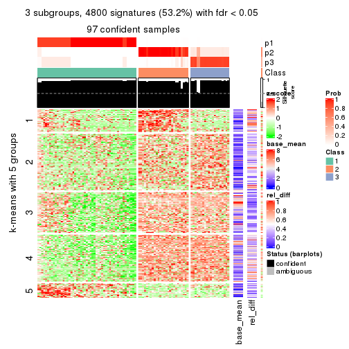
get_signatures(res, k = 4)
get_signatures(res, k = 5)
get_signatures(res, k = 6)
Signature heatmaps where rows are not scaled:
get_signatures(res, k = 2, scale_rows = FALSE)
get_signatures(res, k = 3, scale_rows = FALSE)
get_signatures(res, k = 4, scale_rows = FALSE)
get_signatures(res, k = 5, scale_rows = FALSE)
get_signatures(res, k = 6, scale_rows = FALSE)
Compare the overlap of signatures from different k:
compare_signatures(res)
get_signature() returns a data frame invisibly. TO get the list of signatures, the function
call should be assigned to a variable explicitly. In following code, if plot argument is set
to FALSE, no heatmap is plotted while only the differential analysis is performed.
# code only for demonstration
tb = get_signature(res, k = ..., plot = FALSE)
An example of the output of tb is:
#> which_row fdr mean_1 mean_2 scaled_mean_1 scaled_mean_2 km
#> 1 38 0.042760348 8.373488 9.131774 -0.5533452 0.5164555 1
#> 2 40 0.018707592 7.106213 8.469186 -0.6173731 0.5762149 1
#> 3 55 0.019134737 10.221463 11.207825 -0.6159697 0.5749050 1
#> 4 59 0.006059896 5.921854 7.869574 -0.6899429 0.6439467 1
#> 5 60 0.018055526 8.928898 10.211722 -0.6204761 0.5791110 1
#> 6 98 0.009384629 15.714769 14.887706 0.6635654 -0.6193277 2
...
The columns in tb are:
which_row: row indices corresponding to the input matrix.fdr: FDR for the differential test. mean_x: The mean value in group x.scaled_mean_x: The mean value in group x after rows are scaled.km: Row groups if k-means clustering is applied to rows.UMAP plot which shows how samples are separated.
dimension_reduction(res, k = 2, method = "UMAP")
dimension_reduction(res, k = 3, method = "UMAP")
dimension_reduction(res, k = 4, method = "UMAP")
dimension_reduction(res, k = 5, method = "UMAP")
dimension_reduction(res, k = 6, method = "UMAP")
Following heatmap shows how subgroups are split when increasing k:
collect_classes(res)
If matrix rows can be associated to genes, consider to use functional_enrichment(res,
...) to perform function enrichment for the signature genes. See this vignette for more detailed explanations.
The object with results only for a single top-value method and a single partition method can be extracted as:
res = res_list["ATC", "NMF"]
# you can also extract it by
# res = res_list["ATC:NMF"]
A summary of res and all the functions that can be applied to it:
res
#> A 'ConsensusPartition' object with k = 2, 3, 4, 5, 6.
#> On a matrix with 9017 rows and 98 columns.
#> Top rows (902, 1804, 2705, 3606, 4508) are extracted by 'ATC' method.
#> Subgroups are detected by 'NMF' method.
#> Performed in total 1250 partitions by row resampling.
#> Best k for subgroups seems to be 4.
#>
#> Following methods can be applied to this 'ConsensusPartition' object:
#> [1] "cola_report" "collect_classes" "collect_plots"
#> [4] "collect_stats" "colnames" "compare_signatures"
#> [7] "consensus_heatmap" "dimension_reduction" "functional_enrichment"
#> [10] "get_anno_col" "get_anno" "get_classes"
#> [13] "get_consensus" "get_matrix" "get_membership"
#> [16] "get_param" "get_signatures" "get_stats"
#> [19] "is_best_k" "is_stable_k" "membership_heatmap"
#> [22] "ncol" "nrow" "plot_ecdf"
#> [25] "rownames" "select_partition_number" "show"
#> [28] "suggest_best_k" "test_to_known_factors"
collect_plots() function collects all the plots made from res for all k (number of partitions)
into one single page to provide an easy and fast comparison between different k.
collect_plots(res)
The plots are:
k and the heatmap of
predicted classes for each k.k.k.k.All the plots in panels can be made by individual functions and they are plotted later in this section.
select_partition_number() produces several plots showing different
statistics for choosing “optimized” k. There are following statistics:
k;k, the area increased is defined as \(A_k - A_{k-1}\).The detailed explanations of these statistics can be found in the cola vignette.
Generally speaking, lower PAC score, higher mean silhouette score or higher
concordance corresponds to better partition. Rand index and Jaccard index
measure how similar the current partition is compared to partition with k-1.
If they are too similar, we won't accept k is better than k-1.
select_partition_number(res)
The numeric values for all these statistics can be obtained by get_stats().
get_stats(res)
#> k 1-PAC mean_silhouette concordance area_increased Rand Jaccard
#> 2 2 1.000 0.987 0.995 0.5055 0.495 0.495
#> 3 3 0.890 0.851 0.943 0.2071 0.874 0.750
#> 4 4 0.933 0.935 0.945 0.0541 0.941 0.857
#> 5 5 0.791 0.885 0.877 0.0565 1.000 1.000
#> 6 6 0.773 0.797 0.832 0.0308 0.984 0.957
suggest_best_k() suggests the best \(k\) based on these statistics. The rules are as follows:
suggest_best_k(res)
#> [1] 4
#> attr(,"optional")
#> [1] 2
There is also optional best \(k\) = 2 that is worth to check.
Following shows the table of the partitions (You need to click the show/hide
code output link to see it). The membership matrix (columns with name p*)
is inferred by
clue::cl_consensus()
function with the SE method. Basically the value in the membership matrix
represents the probability to belong to a certain group. The finall class
label for an item is determined with the group with highest probability it
belongs to.
In get_classes() function, the entropy is calculated from the membership
matrix and the silhouette score is calculated from the consensus matrix.
cbind(get_classes(res, k = 2), get_membership(res, k = 2))
#> class entropy silhouette p1 p2
#> SRR1810660 1 0.000 1.000 1.000 0.000
#> SRR1810659 1 0.000 1.000 1.000 0.000
#> SRR1810658 1 0.000 1.000 1.000 0.000
#> SRR1810657 1 0.000 1.000 1.000 0.000
#> SRR1818435 2 0.000 0.991 0.000 1.000
#> SRR1818434 2 0.000 0.991 0.000 1.000
#> SRR1810752 2 0.000 0.991 0.000 1.000
#> SRR1810751 2 0.000 0.991 0.000 1.000
#> SRR1810749 1 0.000 1.000 1.000 0.000
#> SRR1810748 1 0.000 1.000 1.000 0.000
#> SRR1810750 1 0.000 1.000 1.000 0.000
#> SRR1810747 2 0.000 0.991 0.000 1.000
#> SRR1810746 1 0.000 1.000 1.000 0.000
#> SRR1810745 1 0.000 1.000 1.000 0.000
#> SRR1810744 1 0.000 1.000 1.000 0.000
#> SRR1810743 1 0.000 1.000 1.000 0.000
#> SRR1810742 2 0.000 0.991 0.000 1.000
#> SRR1810741 2 0.000 0.991 0.000 1.000
#> SRR1810740 1 0.000 1.000 1.000 0.000
#> SRR1810739 1 0.000 1.000 1.000 0.000
#> SRR1810738 1 0.000 1.000 1.000 0.000
#> SRR1810737 2 0.000 0.991 0.000 1.000
#> SRR1810736 2 0.000 0.991 0.000 1.000
#> SRR1810734 2 0.000 0.991 0.000 1.000
#> SRR1810735 2 0.000 0.991 0.000 1.000
#> SRR1810733 2 0.000 0.991 0.000 1.000
#> SRR1810732 1 0.000 1.000 1.000 0.000
#> SRR1810730 2 0.000 0.991 0.000 1.000
#> SRR1810729 1 0.000 1.000 1.000 0.000
#> SRR1810731 1 0.000 1.000 1.000 0.000
#> SRR1810728 2 0.000 0.991 0.000 1.000
#> SRR1810727 2 0.000 0.991 0.000 1.000
#> SRR1810726 2 0.992 0.188 0.448 0.552
#> SRR1810725 2 0.000 0.991 0.000 1.000
#> SRR1810724 2 0.000 0.991 0.000 1.000
#> SRR1810723 1 0.000 1.000 1.000 0.000
#> SRR1810722 1 0.000 1.000 1.000 0.000
#> SRR1810721 1 0.000 1.000 1.000 0.000
#> SRR1810720 1 0.000 1.000 1.000 0.000
#> SRR1810719 2 0.000 0.991 0.000 1.000
#> SRR1810718 1 0.000 1.000 1.000 0.000
#> SRR1810717 1 0.000 1.000 1.000 0.000
#> SRR1810716 2 0.000 0.991 0.000 1.000
#> SRR1810715 2 0.000 0.991 0.000 1.000
#> SRR1810713 2 0.000 0.991 0.000 1.000
#> SRR1810714 1 0.000 1.000 1.000 0.000
#> SRR1810712 2 0.000 0.991 0.000 1.000
#> SRR1810710 2 0.000 0.991 0.000 1.000
#> SRR1810711 2 0.000 0.991 0.000 1.000
#> SRR1810709 2 0.000 0.991 0.000 1.000
#> SRR1810708 1 0.000 1.000 1.000 0.000
#> SRR1810707 1 0.000 1.000 1.000 0.000
#> SRR1810706 2 0.000 0.991 0.000 1.000
#> SRR1810704 1 0.000 1.000 1.000 0.000
#> SRR1810705 1 0.000 1.000 1.000 0.000
#> SRR1810703 1 0.000 1.000 1.000 0.000
#> SRR1810702 2 0.000 0.991 0.000 1.000
#> SRR1810701 1 0.000 1.000 1.000 0.000
#> SRR1810700 2 0.000 0.991 0.000 1.000
#> SRR1810699 2 0.000 0.991 0.000 1.000
#> SRR1810696 2 0.000 0.991 0.000 1.000
#> SRR1810695 2 0.000 0.991 0.000 1.000
#> SRR1810698 2 0.000 0.991 0.000 1.000
#> SRR1810697 2 0.000 0.991 0.000 1.000
#> SRR1810694 2 0.000 0.991 0.000 1.000
#> SRR1810693 1 0.000 1.000 1.000 0.000
#> SRR1810692 2 0.000 0.991 0.000 1.000
#> SRR1810690 2 0.000 0.991 0.000 1.000
#> SRR1810691 1 0.000 1.000 1.000 0.000
#> SRR1810689 2 0.000 0.991 0.000 1.000
#> SRR1810688 2 0.000 0.991 0.000 1.000
#> SRR1810687 2 0.000 0.991 0.000 1.000
#> SRR1810685 1 0.000 1.000 1.000 0.000
#> SRR1810686 2 0.000 0.991 0.000 1.000
#> SRR1810684 2 0.000 0.991 0.000 1.000
#> SRR1810683 2 0.000 0.991 0.000 1.000
#> SRR1810680 2 0.000 0.991 0.000 1.000
#> SRR1810679 2 0.000 0.991 0.000 1.000
#> SRR1810678 2 0.000 0.991 0.000 1.000
#> SRR1810682 2 0.000 0.991 0.000 1.000
#> SRR1810681 2 0.000 0.991 0.000 1.000
#> SRR1810677 2 0.000 0.991 0.000 1.000
#> SRR1810676 2 0.000 0.991 0.000 1.000
#> SRR1810675 1 0.000 1.000 1.000 0.000
#> SRR1810673 1 0.000 1.000 1.000 0.000
#> SRR1810674 1 0.000 1.000 1.000 0.000
#> SRR1810671 1 0.000 1.000 1.000 0.000
#> SRR1810670 1 0.000 1.000 1.000 0.000
#> SRR1810669 1 0.000 1.000 1.000 0.000
#> SRR1810667 1 0.000 1.000 1.000 0.000
#> SRR1810666 1 0.000 1.000 1.000 0.000
#> SRR1810672 1 0.000 1.000 1.000 0.000
#> SRR1810668 1 0.000 1.000 1.000 0.000
#> SRR1810665 1 0.000 1.000 1.000 0.000
#> SRR1810664 1 0.000 1.000 1.000 0.000
#> SRR1810663 1 0.000 1.000 1.000 0.000
#> SRR1810661 1 0.000 1.000 1.000 0.000
#> SRR1810662 1 0.000 1.000 1.000 0.000
cbind(get_classes(res, k = 3), get_membership(res, k = 3))
#> class entropy silhouette p1 p2 p3
#> SRR1810660 1 0.5988 0.3832 0.632 0.000 0.368
#> SRR1810659 1 0.6126 0.2496 0.600 0.000 0.400
#> SRR1810658 3 0.6307 0.0730 0.488 0.000 0.512
#> SRR1810657 1 0.3879 0.7707 0.848 0.000 0.152
#> SRR1818435 3 0.6126 0.1884 0.000 0.400 0.600
#> SRR1818434 2 0.4702 0.7386 0.000 0.788 0.212
#> SRR1810752 2 0.0000 0.9901 0.000 1.000 0.000
#> SRR1810751 2 0.0000 0.9901 0.000 1.000 0.000
#> SRR1810749 1 0.0000 0.9014 1.000 0.000 0.000
#> SRR1810748 1 0.0000 0.9014 1.000 0.000 0.000
#> SRR1810750 1 0.0000 0.9014 1.000 0.000 0.000
#> SRR1810747 2 0.0000 0.9901 0.000 1.000 0.000
#> SRR1810746 1 0.0000 0.9014 1.000 0.000 0.000
#> SRR1810745 1 0.0000 0.9014 1.000 0.000 0.000
#> SRR1810744 1 0.0000 0.9014 1.000 0.000 0.000
#> SRR1810743 1 0.0000 0.9014 1.000 0.000 0.000
#> SRR1810742 2 0.0000 0.9901 0.000 1.000 0.000
#> SRR1810741 2 0.0592 0.9841 0.000 0.988 0.012
#> SRR1810740 1 0.0592 0.8949 0.988 0.000 0.012
#> SRR1810739 1 0.0000 0.9014 1.000 0.000 0.000
#> SRR1810738 1 0.0424 0.8973 0.992 0.000 0.008
#> SRR1810737 2 0.0000 0.9901 0.000 1.000 0.000
#> SRR1810736 2 0.0000 0.9901 0.000 1.000 0.000
#> SRR1810734 2 0.0237 0.9899 0.000 0.996 0.004
#> SRR1810735 2 0.0237 0.9899 0.000 0.996 0.004
#> SRR1810733 2 0.0475 0.9876 0.004 0.992 0.004
#> SRR1810732 1 0.3412 0.8046 0.876 0.000 0.124
#> SRR1810730 2 0.0237 0.9899 0.000 0.996 0.004
#> SRR1810729 1 0.1860 0.8658 0.948 0.000 0.052
#> SRR1810731 1 0.0000 0.9014 1.000 0.000 0.000
#> SRR1810728 2 0.0237 0.9899 0.000 0.996 0.004
#> SRR1810727 2 0.0237 0.9899 0.000 0.996 0.004
#> SRR1810726 1 0.3686 0.6985 0.860 0.140 0.000
#> SRR1810725 2 0.0237 0.9899 0.000 0.996 0.004
#> SRR1810724 2 0.0237 0.9899 0.000 0.996 0.004
#> SRR1810723 1 0.0000 0.9014 1.000 0.000 0.000
#> SRR1810722 1 0.0000 0.9014 1.000 0.000 0.000
#> SRR1810721 1 0.0000 0.9014 1.000 0.000 0.000
#> SRR1810720 1 0.0000 0.9014 1.000 0.000 0.000
#> SRR1810719 2 0.0892 0.9771 0.000 0.980 0.020
#> SRR1810718 1 0.0000 0.9014 1.000 0.000 0.000
#> SRR1810717 1 0.0237 0.8993 0.996 0.000 0.004
#> SRR1810716 2 0.0237 0.9899 0.000 0.996 0.004
#> SRR1810715 2 0.0237 0.9885 0.000 0.996 0.004
#> SRR1810713 2 0.0424 0.9865 0.000 0.992 0.008
#> SRR1810714 1 0.0000 0.9014 1.000 0.000 0.000
#> SRR1810712 2 0.0000 0.9901 0.000 1.000 0.000
#> SRR1810710 2 0.0237 0.9885 0.000 0.996 0.004
#> SRR1810711 2 0.0237 0.9899 0.000 0.996 0.004
#> SRR1810709 2 0.0237 0.9899 0.000 0.996 0.004
#> SRR1810708 1 0.0000 0.9014 1.000 0.000 0.000
#> SRR1810707 1 0.2261 0.8508 0.932 0.000 0.068
#> SRR1810706 2 0.0237 0.9899 0.000 0.996 0.004
#> SRR1810704 1 0.0000 0.9014 1.000 0.000 0.000
#> SRR1810705 1 0.0000 0.9014 1.000 0.000 0.000
#> SRR1810703 1 0.0000 0.9014 1.000 0.000 0.000
#> SRR1810702 2 0.0000 0.9901 0.000 1.000 0.000
#> SRR1810701 1 0.0000 0.9014 1.000 0.000 0.000
#> SRR1810700 2 0.0237 0.9899 0.000 0.996 0.004
#> SRR1810699 2 0.0592 0.9831 0.000 0.988 0.012
#> SRR1810696 2 0.0237 0.9899 0.000 0.996 0.004
#> SRR1810695 2 0.0237 0.9899 0.000 0.996 0.004
#> SRR1810698 2 0.0000 0.9901 0.000 1.000 0.000
#> SRR1810697 2 0.0237 0.9899 0.000 0.996 0.004
#> SRR1810694 2 0.0237 0.9899 0.000 0.996 0.004
#> SRR1810693 1 0.4399 0.7325 0.812 0.000 0.188
#> SRR1810692 2 0.0000 0.9901 0.000 1.000 0.000
#> SRR1810690 2 0.1289 0.9676 0.000 0.968 0.032
#> SRR1810691 1 0.0000 0.9014 1.000 0.000 0.000
#> SRR1810689 2 0.0747 0.9805 0.000 0.984 0.016
#> SRR1810688 2 0.0237 0.9887 0.000 0.996 0.004
#> SRR1810687 2 0.0000 0.9901 0.000 1.000 0.000
#> SRR1810685 1 0.0000 0.9014 1.000 0.000 0.000
#> SRR1810686 2 0.0000 0.9901 0.000 1.000 0.000
#> SRR1810684 2 0.0237 0.9899 0.000 0.996 0.004
#> SRR1810683 2 0.0000 0.9901 0.000 1.000 0.000
#> SRR1810680 2 0.0892 0.9771 0.000 0.980 0.020
#> SRR1810679 2 0.0237 0.9899 0.000 0.996 0.004
#> SRR1810678 2 0.1289 0.9681 0.000 0.968 0.032
#> SRR1810682 2 0.0000 0.9901 0.000 1.000 0.000
#> SRR1810681 2 0.0000 0.9901 0.000 1.000 0.000
#> SRR1810677 2 0.0424 0.9865 0.000 0.992 0.008
#> SRR1810676 2 0.0000 0.9901 0.000 1.000 0.000
#> SRR1810675 3 0.0237 0.7811 0.000 0.004 0.996
#> SRR1810673 3 0.0592 0.7835 0.012 0.000 0.988
#> SRR1810674 3 0.0475 0.7831 0.004 0.004 0.992
#> SRR1810671 3 0.6274 0.1758 0.456 0.000 0.544
#> SRR1810670 1 0.6192 0.1787 0.580 0.000 0.420
#> SRR1810669 1 0.6062 0.2965 0.616 0.000 0.384
#> SRR1810667 3 0.0237 0.7811 0.000 0.004 0.996
#> SRR1810666 3 0.6298 0.3409 0.388 0.004 0.608
#> SRR1810672 1 0.6280 0.0239 0.540 0.000 0.460
#> SRR1810668 3 0.1647 0.7730 0.036 0.004 0.960
#> SRR1810665 3 0.6309 0.0219 0.500 0.000 0.500
#> SRR1810664 3 0.0829 0.7841 0.012 0.004 0.984
#> SRR1810663 3 0.0475 0.7831 0.004 0.004 0.992
#> SRR1810661 3 0.0983 0.7834 0.016 0.004 0.980
#> SRR1810662 3 0.0983 0.7833 0.016 0.004 0.980
cbind(get_classes(res, k = 4), get_membership(res, k = 4))
#> class entropy silhouette p1 p2 p3 p4
#> SRR1810660 3 0.6783 0.613 0.100 0.000 0.512 NA
#> SRR1810659 3 0.4182 0.873 0.024 0.000 0.796 NA
#> SRR1810658 3 0.3630 0.903 0.020 0.004 0.848 NA
#> SRR1810657 1 0.5400 0.424 0.608 0.000 0.372 NA
#> SRR1818435 2 0.4426 0.814 0.000 0.812 0.092 NA
#> SRR1818434 2 0.2660 0.914 0.000 0.908 0.056 NA
#> SRR1810752 2 0.0469 0.983 0.000 0.988 0.000 NA
#> SRR1810751 2 0.0657 0.983 0.000 0.984 0.004 NA
#> SRR1810749 1 0.1743 0.924 0.940 0.000 0.004 NA
#> SRR1810748 1 0.3080 0.883 0.880 0.000 0.096 NA
#> SRR1810750 1 0.1867 0.917 0.928 0.000 0.000 NA
#> SRR1810747 2 0.0657 0.983 0.000 0.984 0.004 NA
#> SRR1810746 1 0.2443 0.916 0.916 0.000 0.024 NA
#> SRR1810745 1 0.0592 0.929 0.984 0.000 0.000 NA
#> SRR1810744 1 0.1406 0.928 0.960 0.000 0.024 NA
#> SRR1810743 1 0.0927 0.929 0.976 0.000 0.008 NA
#> SRR1810742 2 0.0000 0.983 0.000 1.000 0.000 NA
#> SRR1810741 2 0.0779 0.982 0.000 0.980 0.004 NA
#> SRR1810740 1 0.2224 0.920 0.928 0.000 0.032 NA
#> SRR1810739 1 0.2256 0.922 0.924 0.000 0.020 NA
#> SRR1810738 1 0.3037 0.897 0.888 0.000 0.076 NA
#> SRR1810737 2 0.0188 0.983 0.000 0.996 0.000 NA
#> SRR1810736 2 0.0817 0.976 0.000 0.976 0.000 NA
#> SRR1810734 2 0.0336 0.983 0.000 0.992 0.000 NA
#> SRR1810735 2 0.1302 0.969 0.000 0.956 0.000 NA
#> SRR1810733 2 0.1824 0.948 0.004 0.936 0.000 NA
#> SRR1810732 1 0.5069 0.701 0.664 0.000 0.016 NA
#> SRR1810730 2 0.1022 0.971 0.000 0.968 0.000 NA
#> SRR1810729 1 0.2542 0.898 0.904 0.000 0.084 NA
#> SRR1810731 1 0.1022 0.927 0.968 0.000 0.000 NA
#> SRR1810728 2 0.0469 0.981 0.000 0.988 0.000 NA
#> SRR1810727 2 0.0336 0.981 0.000 0.992 0.000 NA
#> SRR1810726 1 0.1474 0.922 0.948 0.000 0.000 NA
#> SRR1810725 2 0.0188 0.983 0.000 0.996 0.000 NA
#> SRR1810724 2 0.0188 0.983 0.000 0.996 0.000 NA
#> SRR1810723 1 0.0657 0.928 0.984 0.000 0.004 NA
#> SRR1810722 1 0.2915 0.911 0.892 0.000 0.028 NA
#> SRR1810721 1 0.0469 0.928 0.988 0.000 0.000 NA
#> SRR1810720 1 0.0817 0.928 0.976 0.000 0.000 NA
#> SRR1810719 2 0.0657 0.983 0.000 0.984 0.004 NA
#> SRR1810718 1 0.4507 0.731 0.756 0.000 0.224 NA
#> SRR1810717 1 0.1059 0.928 0.972 0.000 0.012 NA
#> SRR1810716 2 0.0000 0.983 0.000 1.000 0.000 NA
#> SRR1810715 2 0.0657 0.983 0.000 0.984 0.004 NA
#> SRR1810713 2 0.0895 0.979 0.000 0.976 0.004 NA
#> SRR1810714 1 0.2411 0.916 0.920 0.000 0.040 NA
#> SRR1810712 2 0.0469 0.983 0.000 0.988 0.000 NA
#> SRR1810710 2 0.0336 0.981 0.000 0.992 0.000 NA
#> SRR1810711 2 0.0469 0.983 0.000 0.988 0.000 NA
#> SRR1810709 2 0.1022 0.970 0.000 0.968 0.000 NA
#> SRR1810708 1 0.0672 0.929 0.984 0.000 0.008 NA
#> SRR1810707 1 0.3545 0.859 0.828 0.000 0.008 NA
#> SRR1810706 2 0.0188 0.983 0.000 0.996 0.000 NA
#> SRR1810704 1 0.0779 0.928 0.980 0.000 0.016 NA
#> SRR1810705 1 0.0779 0.929 0.980 0.000 0.004 NA
#> SRR1810703 1 0.1059 0.930 0.972 0.000 0.012 NA
#> SRR1810702 2 0.0469 0.983 0.000 0.988 0.000 NA
#> SRR1810701 1 0.0188 0.927 0.996 0.000 0.000 NA
#> SRR1810700 2 0.0657 0.983 0.000 0.984 0.004 NA
#> SRR1810699 2 0.0000 0.983 0.000 1.000 0.000 NA
#> SRR1810696 2 0.1022 0.970 0.000 0.968 0.000 NA
#> SRR1810695 2 0.0188 0.983 0.000 0.996 0.000 NA
#> SRR1810698 2 0.0657 0.982 0.000 0.984 0.004 NA
#> SRR1810697 2 0.0000 0.983 0.000 1.000 0.000 NA
#> SRR1810694 2 0.1211 0.965 0.000 0.960 0.000 NA
#> SRR1810693 1 0.5228 0.741 0.696 0.000 0.036 NA
#> SRR1810692 2 0.0336 0.983 0.000 0.992 0.000 NA
#> SRR1810690 2 0.0376 0.983 0.000 0.992 0.004 NA
#> SRR1810691 1 0.0707 0.928 0.980 0.000 0.000 NA
#> SRR1810689 2 0.0524 0.983 0.000 0.988 0.004 NA
#> SRR1810688 2 0.1890 0.948 0.000 0.936 0.008 NA
#> SRR1810687 2 0.0657 0.983 0.000 0.984 0.004 NA
#> SRR1810685 1 0.0592 0.928 0.984 0.000 0.000 NA
#> SRR1810686 2 0.0657 0.983 0.000 0.984 0.004 NA
#> SRR1810684 2 0.0817 0.975 0.000 0.976 0.000 NA
#> SRR1810683 2 0.1256 0.972 0.000 0.964 0.008 NA
#> SRR1810680 2 0.0524 0.983 0.000 0.988 0.004 NA
#> SRR1810679 2 0.0592 0.982 0.000 0.984 0.000 NA
#> SRR1810678 2 0.0779 0.980 0.000 0.980 0.016 NA
#> SRR1810682 2 0.0469 0.983 0.000 0.988 0.000 NA
#> SRR1810681 2 0.0188 0.983 0.000 0.996 0.000 NA
#> SRR1810677 2 0.0376 0.983 0.000 0.992 0.004 NA
#> SRR1810676 2 0.0927 0.980 0.000 0.976 0.008 NA
#> SRR1810675 3 0.1970 0.941 0.008 0.000 0.932 NA
#> SRR1810673 3 0.1890 0.942 0.008 0.000 0.936 NA
#> SRR1810674 3 0.1209 0.944 0.004 0.000 0.964 NA
#> SRR1810671 3 0.1284 0.942 0.012 0.000 0.964 NA
#> SRR1810670 3 0.1584 0.942 0.012 0.000 0.952 NA
#> SRR1810669 3 0.2494 0.925 0.048 0.000 0.916 NA
#> SRR1810667 3 0.1389 0.941 0.000 0.000 0.952 NA
#> SRR1810666 3 0.1059 0.943 0.012 0.000 0.972 NA
#> SRR1810672 3 0.1807 0.940 0.008 0.000 0.940 NA
#> SRR1810668 3 0.1398 0.943 0.004 0.000 0.956 NA
#> SRR1810665 3 0.1510 0.938 0.028 0.000 0.956 NA
#> SRR1810664 3 0.1489 0.944 0.004 0.000 0.952 NA
#> SRR1810663 3 0.2011 0.937 0.000 0.000 0.920 NA
#> SRR1810661 3 0.2402 0.938 0.012 0.000 0.912 NA
#> SRR1810662 3 0.1356 0.945 0.008 0.000 0.960 NA
cbind(get_classes(res, k = 5), get_membership(res, k = 5))
#> class entropy silhouette p1 p2 p3 p4 p5
#> SRR1810660 3 0.8290 0.363 0.128 0.000 0.340 0.272 0.260
#> SRR1810659 3 0.6149 0.677 0.004 0.000 0.548 0.140 0.308
#> SRR1810658 3 0.5980 0.703 0.004 0.000 0.576 0.128 0.292
#> SRR1810657 1 0.6280 0.611 0.608 0.000 0.212 0.024 0.156
#> SRR1818435 2 0.5537 0.623 0.000 0.624 0.112 0.264 0.000
#> SRR1818434 2 0.4463 0.815 0.000 0.788 0.112 0.076 0.024
#> SRR1810752 2 0.1478 0.943 0.000 0.936 0.000 0.064 0.000
#> SRR1810751 2 0.0955 0.949 0.000 0.968 0.000 0.028 0.004
#> SRR1810749 1 0.3437 0.864 0.808 0.004 0.012 0.000 0.176
#> SRR1810748 1 0.4354 0.813 0.760 0.000 0.056 0.004 0.180
#> SRR1810750 1 0.4264 0.832 0.732 0.012 0.004 0.008 0.244
#> SRR1810747 2 0.1892 0.937 0.000 0.916 0.000 0.080 0.004
#> SRR1810746 1 0.5485 0.798 0.688 0.004 0.024 0.068 0.216
#> SRR1810745 1 0.2907 0.877 0.864 0.000 0.008 0.012 0.116
#> SRR1810744 1 0.2825 0.874 0.860 0.000 0.016 0.000 0.124
#> SRR1810743 1 0.3688 0.865 0.808 0.000 0.008 0.024 0.160
#> SRR1810742 2 0.0865 0.947 0.000 0.972 0.000 0.004 0.024
#> SRR1810741 2 0.2233 0.927 0.000 0.892 0.004 0.104 0.000
#> SRR1810740 1 0.4144 0.863 0.812 0.000 0.040 0.040 0.108
#> SRR1810739 1 0.4848 0.836 0.748 0.004 0.024 0.048 0.176
#> SRR1810738 1 0.4684 0.832 0.732 0.000 0.048 0.012 0.208
#> SRR1810737 2 0.0794 0.947 0.000 0.972 0.000 0.000 0.028
#> SRR1810736 2 0.1357 0.942 0.000 0.948 0.000 0.004 0.048
#> SRR1810734 2 0.1478 0.945 0.000 0.936 0.000 0.064 0.000
#> SRR1810735 2 0.2304 0.917 0.000 0.892 0.000 0.008 0.100
#> SRR1810733 2 0.2389 0.908 0.000 0.880 0.000 0.004 0.116
#> SRR1810732 1 0.5765 0.732 0.624 0.000 0.028 0.284 0.064
#> SRR1810730 2 0.1205 0.945 0.000 0.956 0.000 0.004 0.040
#> SRR1810729 1 0.3122 0.866 0.860 0.000 0.016 0.016 0.108
#> SRR1810731 1 0.3048 0.865 0.820 0.000 0.004 0.000 0.176
#> SRR1810728 2 0.1041 0.946 0.000 0.964 0.000 0.004 0.032
#> SRR1810727 2 0.0880 0.947 0.000 0.968 0.000 0.000 0.032
#> SRR1810726 1 0.3676 0.845 0.760 0.004 0.000 0.004 0.232
#> SRR1810725 2 0.0566 0.949 0.000 0.984 0.000 0.004 0.012
#> SRR1810724 2 0.0290 0.950 0.000 0.992 0.000 0.000 0.008
#> SRR1810723 1 0.1892 0.874 0.916 0.000 0.004 0.000 0.080
#> SRR1810722 1 0.4802 0.825 0.708 0.000 0.016 0.036 0.240
#> SRR1810721 1 0.2017 0.875 0.912 0.000 0.000 0.008 0.080
#> SRR1810720 1 0.2488 0.869 0.872 0.000 0.004 0.000 0.124
#> SRR1810719 2 0.1638 0.945 0.000 0.932 0.000 0.064 0.004
#> SRR1810718 1 0.4946 0.775 0.704 0.000 0.076 0.004 0.216
#> SRR1810717 1 0.2193 0.870 0.900 0.000 0.008 0.000 0.092
#> SRR1810716 2 0.0693 0.950 0.000 0.980 0.000 0.008 0.012
#> SRR1810715 2 0.1282 0.948 0.000 0.952 0.000 0.044 0.004
#> SRR1810713 2 0.2886 0.898 0.000 0.844 0.008 0.148 0.000
#> SRR1810714 1 0.3556 0.861 0.836 0.000 0.036 0.012 0.116
#> SRR1810712 2 0.1851 0.938 0.000 0.912 0.000 0.088 0.000
#> SRR1810710 2 0.0880 0.947 0.000 0.968 0.000 0.000 0.032
#> SRR1810711 2 0.1830 0.942 0.000 0.924 0.000 0.068 0.008
#> SRR1810709 2 0.2011 0.924 0.000 0.908 0.000 0.004 0.088
#> SRR1810708 1 0.2784 0.872 0.872 0.000 0.004 0.016 0.108
#> SRR1810707 1 0.5065 0.814 0.732 0.004 0.016 0.172 0.076
#> SRR1810706 2 0.0162 0.949 0.000 0.996 0.000 0.004 0.000
#> SRR1810704 1 0.2462 0.874 0.880 0.000 0.008 0.000 0.112
#> SRR1810705 1 0.2017 0.875 0.912 0.000 0.000 0.008 0.080
#> SRR1810703 1 0.2411 0.877 0.884 0.000 0.008 0.000 0.108
#> SRR1810702 2 0.1502 0.947 0.000 0.940 0.000 0.056 0.004
#> SRR1810701 1 0.1851 0.873 0.912 0.000 0.000 0.000 0.088
#> SRR1810700 2 0.0510 0.950 0.000 0.984 0.000 0.016 0.000
#> SRR1810699 2 0.1195 0.949 0.000 0.960 0.000 0.028 0.012
#> SRR1810696 2 0.1544 0.936 0.000 0.932 0.000 0.000 0.068
#> SRR1810695 2 0.0807 0.950 0.000 0.976 0.000 0.012 0.012
#> SRR1810698 2 0.0955 0.947 0.000 0.968 0.000 0.004 0.028
#> SRR1810697 2 0.0898 0.948 0.000 0.972 0.000 0.008 0.020
#> SRR1810694 2 0.2286 0.915 0.000 0.888 0.000 0.004 0.108
#> SRR1810693 1 0.6694 0.657 0.552 0.000 0.044 0.284 0.120
#> SRR1810692 2 0.0898 0.951 0.000 0.972 0.000 0.020 0.008
#> SRR1810690 2 0.0992 0.951 0.000 0.968 0.000 0.024 0.008
#> SRR1810691 1 0.2648 0.867 0.848 0.000 0.000 0.000 0.152
#> SRR1810689 2 0.1300 0.948 0.000 0.956 0.000 0.028 0.016
#> SRR1810688 2 0.3246 0.870 0.000 0.808 0.008 0.184 0.000
#> SRR1810687 2 0.1357 0.947 0.000 0.948 0.000 0.048 0.004
#> SRR1810685 1 0.1430 0.871 0.944 0.000 0.000 0.004 0.052
#> SRR1810686 2 0.1197 0.947 0.000 0.952 0.000 0.048 0.000
#> SRR1810684 2 0.1205 0.944 0.000 0.956 0.000 0.004 0.040
#> SRR1810683 2 0.2648 0.902 0.000 0.848 0.000 0.152 0.000
#> SRR1810680 2 0.0798 0.951 0.000 0.976 0.000 0.008 0.016
#> SRR1810679 2 0.1205 0.944 0.000 0.956 0.000 0.004 0.040
#> SRR1810678 2 0.2597 0.919 0.000 0.872 0.004 0.120 0.004
#> SRR1810682 2 0.0992 0.950 0.000 0.968 0.000 0.024 0.008
#> SRR1810681 2 0.0451 0.951 0.000 0.988 0.000 0.004 0.008
#> SRR1810677 2 0.1117 0.950 0.000 0.964 0.000 0.020 0.016
#> SRR1810676 2 0.2020 0.932 0.000 0.900 0.000 0.100 0.000
#> SRR1810675 3 0.1741 0.905 0.000 0.000 0.936 0.040 0.024
#> SRR1810673 3 0.1364 0.905 0.000 0.000 0.952 0.036 0.012
#> SRR1810674 3 0.0912 0.906 0.000 0.000 0.972 0.012 0.016
#> SRR1810671 3 0.1836 0.902 0.000 0.000 0.932 0.036 0.032
#> SRR1810670 3 0.2390 0.898 0.004 0.000 0.908 0.044 0.044
#> SRR1810669 3 0.3342 0.880 0.004 0.000 0.848 0.048 0.100
#> SRR1810667 3 0.1281 0.905 0.000 0.000 0.956 0.032 0.012
#> SRR1810666 3 0.1990 0.901 0.004 0.000 0.928 0.040 0.028
#> SRR1810672 3 0.2708 0.894 0.000 0.000 0.884 0.044 0.072
#> SRR1810668 3 0.1485 0.905 0.000 0.000 0.948 0.032 0.020
#> SRR1810665 3 0.1471 0.905 0.004 0.000 0.952 0.020 0.024
#> SRR1810664 3 0.1211 0.906 0.000 0.000 0.960 0.024 0.016
#> SRR1810663 3 0.1877 0.899 0.000 0.000 0.924 0.064 0.012
#> SRR1810661 3 0.1717 0.901 0.004 0.000 0.936 0.052 0.008
#> SRR1810662 3 0.1485 0.905 0.000 0.000 0.948 0.020 0.032
cbind(get_classes(res, k = 6), get_membership(res, k = 6))
#> class entropy silhouette p1 p2 p3 p4 p5 p6
#> SRR1810660 5 0.7965 0.383 0.032 0.004 0.264 NA 0.392 NA
#> SRR1810659 5 0.6285 0.328 0.000 0.000 0.376 NA 0.456 NA
#> SRR1810658 5 0.6485 0.340 0.000 0.000 0.380 NA 0.440 NA
#> SRR1810657 1 0.6222 0.355 0.492 0.000 0.100 NA 0.364 NA
#> SRR1818435 2 0.4886 0.619 0.000 0.652 0.100 NA 0.004 NA
#> SRR1818434 2 0.3820 0.716 0.000 0.756 0.204 NA 0.000 NA
#> SRR1810752 2 0.0790 0.944 0.000 0.968 0.000 NA 0.000 NA
#> SRR1810751 2 0.0508 0.945 0.000 0.984 0.000 NA 0.000 NA
#> SRR1810749 1 0.4076 0.668 0.704 0.000 0.008 NA 0.012 NA
#> SRR1810748 1 0.4612 0.486 0.544 0.000 0.020 NA 0.424 NA
#> SRR1810750 1 0.6088 0.525 0.540 0.004 0.000 NA 0.112 NA
#> SRR1810747 2 0.1444 0.933 0.000 0.928 0.000 NA 0.000 NA
#> SRR1810746 1 0.7027 0.496 0.464 0.004 0.012 NA 0.284 NA
#> SRR1810745 1 0.5218 0.688 0.668 0.000 0.000 NA 0.148 NA
#> SRR1810744 1 0.5073 0.687 0.688 0.000 0.016 NA 0.184 NA
#> SRR1810743 1 0.5304 0.653 0.640 0.000 0.004 NA 0.224 NA
#> SRR1810742 2 0.0862 0.946 0.000 0.972 0.000 NA 0.004 NA
#> SRR1810741 2 0.1700 0.928 0.000 0.916 0.000 NA 0.000 NA
#> SRR1810740 1 0.5795 0.662 0.684 0.000 0.032 NA 0.084 NA
#> SRR1810739 1 0.6316 0.592 0.536 0.004 0.008 NA 0.188 NA
#> SRR1810738 1 0.6728 0.556 0.508 0.004 0.024 NA 0.184 NA
#> SRR1810737 2 0.0547 0.943 0.000 0.980 0.000 NA 0.000 NA
#> SRR1810736 2 0.1082 0.941 0.000 0.956 0.000 NA 0.004 NA
#> SRR1810734 2 0.1285 0.939 0.000 0.944 0.000 NA 0.000 NA
#> SRR1810735 2 0.2053 0.908 0.000 0.888 0.000 NA 0.000 NA
#> SRR1810733 2 0.2952 0.858 0.004 0.828 0.004 NA 0.000 NA
#> SRR1810732 1 0.6478 0.447 0.496 0.000 0.028 NA 0.084 NA
#> SRR1810730 2 0.1606 0.931 0.000 0.932 0.000 NA 0.004 NA
#> SRR1810729 1 0.5284 0.638 0.644 0.000 0.016 NA 0.260 NA
#> SRR1810731 1 0.3624 0.695 0.780 0.000 0.004 NA 0.012 NA
#> SRR1810728 2 0.1367 0.937 0.000 0.944 0.000 NA 0.000 NA
#> SRR1810727 2 0.0858 0.943 0.000 0.968 0.000 NA 0.000 NA
#> SRR1810726 1 0.3883 0.665 0.728 0.000 0.004 NA 0.000 NA
#> SRR1810725 2 0.0363 0.943 0.000 0.988 0.000 NA 0.000 NA
#> SRR1810724 2 0.0146 0.943 0.000 0.996 0.000 NA 0.000 NA
#> SRR1810723 1 0.2866 0.713 0.860 0.000 0.000 NA 0.052 NA
#> SRR1810722 1 0.5901 0.633 0.612 0.000 0.016 NA 0.100 NA
#> SRR1810721 1 0.3265 0.717 0.828 0.000 0.000 NA 0.056 NA
#> SRR1810720 1 0.3010 0.708 0.828 0.000 0.000 NA 0.020 NA
#> SRR1810719 2 0.1082 0.943 0.000 0.956 0.000 NA 0.000 NA
#> SRR1810718 5 0.4891 -0.508 0.468 0.000 0.032 NA 0.488 NA
#> SRR1810717 1 0.4431 0.695 0.732 0.000 0.020 NA 0.184 NA
#> SRR1810716 2 0.0777 0.945 0.000 0.972 0.000 NA 0.000 NA
#> SRR1810715 2 0.0858 0.944 0.000 0.968 0.000 NA 0.000 NA
#> SRR1810713 2 0.2544 0.884 0.000 0.852 0.000 NA 0.004 NA
#> SRR1810714 1 0.6399 0.561 0.548 0.000 0.040 NA 0.288 NA
#> SRR1810712 2 0.1700 0.927 0.000 0.916 0.000 NA 0.004 NA
#> SRR1810710 2 0.0935 0.942 0.000 0.964 0.000 NA 0.000 NA
#> SRR1810711 2 0.1349 0.937 0.000 0.940 0.000 NA 0.000 NA
#> SRR1810709 2 0.2053 0.906 0.000 0.888 0.000 NA 0.004 NA
#> SRR1810708 1 0.5169 0.674 0.668 0.000 0.000 NA 0.212 NA
#> SRR1810707 1 0.5290 0.608 0.648 0.000 0.000 NA 0.032 NA
#> SRR1810706 2 0.0146 0.943 0.000 0.996 0.000 NA 0.000 NA
#> SRR1810704 1 0.3164 0.718 0.844 0.000 0.012 NA 0.048 NA
#> SRR1810705 1 0.3241 0.712 0.836 0.000 0.000 NA 0.036 NA
#> SRR1810703 1 0.4840 0.689 0.680 0.000 0.000 NA 0.164 NA
#> SRR1810702 2 0.1082 0.943 0.000 0.956 0.000 NA 0.000 NA
#> SRR1810701 1 0.3039 0.716 0.852 0.000 0.000 NA 0.056 NA
#> SRR1810700 2 0.0508 0.945 0.000 0.984 0.000 NA 0.000 NA
#> SRR1810699 2 0.1679 0.939 0.000 0.936 0.000 NA 0.008 NA
#> SRR1810696 2 0.1556 0.927 0.000 0.920 0.000 NA 0.000 NA
#> SRR1810695 2 0.1036 0.944 0.000 0.964 0.000 NA 0.004 NA
#> SRR1810698 2 0.0790 0.944 0.000 0.968 0.000 NA 0.000 NA
#> SRR1810697 2 0.0632 0.943 0.000 0.976 0.000 NA 0.000 NA
#> SRR1810694 2 0.2442 0.879 0.000 0.852 0.004 NA 0.000 NA
#> SRR1810693 1 0.7431 0.340 0.416 0.004 0.028 NA 0.156 NA
#> SRR1810692 2 0.0405 0.944 0.000 0.988 0.000 NA 0.000 NA
#> SRR1810690 2 0.0909 0.945 0.000 0.968 0.000 NA 0.000 NA
#> SRR1810691 1 0.2958 0.701 0.824 0.000 0.000 NA 0.008 NA
#> SRR1810689 2 0.0725 0.945 0.000 0.976 0.000 NA 0.000 NA
#> SRR1810688 2 0.2994 0.828 0.000 0.788 0.000 NA 0.004 NA
#> SRR1810687 2 0.0858 0.944 0.000 0.968 0.000 NA 0.000 NA
#> SRR1810685 1 0.1921 0.707 0.916 0.000 0.000 NA 0.052 NA
#> SRR1810686 2 0.0713 0.943 0.000 0.972 0.000 NA 0.000 NA
#> SRR1810684 2 0.1124 0.940 0.000 0.956 0.000 NA 0.000 NA
#> SRR1810683 2 0.2668 0.864 0.000 0.828 0.000 NA 0.000 NA
#> SRR1810680 2 0.0508 0.946 0.000 0.984 0.000 NA 0.000 NA
#> SRR1810679 2 0.1075 0.939 0.000 0.952 0.000 NA 0.000 NA
#> SRR1810678 2 0.2243 0.910 0.000 0.880 0.000 NA 0.004 NA
#> SRR1810682 2 0.0405 0.944 0.000 0.988 0.000 NA 0.000 NA
#> SRR1810681 2 0.0520 0.946 0.000 0.984 0.000 NA 0.000 NA
#> SRR1810677 2 0.0622 0.945 0.000 0.980 0.000 NA 0.000 NA
#> SRR1810676 2 0.2219 0.896 0.000 0.864 0.000 NA 0.000 NA
#> SRR1810675 3 0.1167 0.932 0.000 0.000 0.960 NA 0.012 NA
#> SRR1810673 3 0.1838 0.924 0.000 0.000 0.928 NA 0.020 NA
#> SRR1810674 3 0.1173 0.931 0.000 0.000 0.960 NA 0.016 NA
#> SRR1810671 3 0.1750 0.920 0.000 0.000 0.932 NA 0.040 NA
#> SRR1810670 3 0.1857 0.913 0.000 0.000 0.924 NA 0.028 NA
#> SRR1810669 3 0.3050 0.855 0.008 0.000 0.864 NA 0.048 NA
#> SRR1810667 3 0.1605 0.931 0.000 0.000 0.940 NA 0.016 NA
#> SRR1810666 3 0.1483 0.924 0.000 0.000 0.944 NA 0.036 NA
#> SRR1810672 3 0.2384 0.894 0.000 0.000 0.896 NA 0.040 NA
#> SRR1810668 3 0.0964 0.932 0.000 0.000 0.968 NA 0.004 NA
#> SRR1810665 3 0.1053 0.930 0.000 0.000 0.964 NA 0.020 NA
#> SRR1810664 3 0.1167 0.934 0.000 0.000 0.960 NA 0.012 NA
#> SRR1810663 3 0.2123 0.915 0.000 0.000 0.908 NA 0.020 NA
#> SRR1810661 3 0.1820 0.920 0.000 0.000 0.928 NA 0.016 NA
#> SRR1810662 3 0.1767 0.924 0.000 0.000 0.932 NA 0.036 NA
Heatmaps for the consensus matrix. It visualizes the probability of two samples to be in a same group.
consensus_heatmap(res, k = 2)
consensus_heatmap(res, k = 3)
consensus_heatmap(res, k = 4)
consensus_heatmap(res, k = 5)
consensus_heatmap(res, k = 6)
Heatmaps for the membership of samples in all partitions to see how consistent they are:
membership_heatmap(res, k = 2)
membership_heatmap(res, k = 3)
membership_heatmap(res, k = 4)
membership_heatmap(res, k = 5)
membership_heatmap(res, k = 6)
As soon as we have had the classes for columns, we can look for signatures which are significantly different between classes which can be candidate marks for certain classes. Following are the heatmaps for signatures.
Signature heatmaps where rows are scaled:
get_signatures(res, k = 2)
get_signatures(res, k = 3)
get_signatures(res, k = 4)
get_signatures(res, k = 5)
get_signatures(res, k = 6)
Signature heatmaps where rows are not scaled:
get_signatures(res, k = 2, scale_rows = FALSE)
get_signatures(res, k = 3, scale_rows = FALSE)
get_signatures(res, k = 4, scale_rows = FALSE)
get_signatures(res, k = 5, scale_rows = FALSE)
get_signatures(res, k = 6, scale_rows = FALSE)
Compare the overlap of signatures from different k:
compare_signatures(res)
get_signature() returns a data frame invisibly. TO get the list of signatures, the function
call should be assigned to a variable explicitly. In following code, if plot argument is set
to FALSE, no heatmap is plotted while only the differential analysis is performed.
# code only for demonstration
tb = get_signature(res, k = ..., plot = FALSE)
An example of the output of tb is:
#> which_row fdr mean_1 mean_2 scaled_mean_1 scaled_mean_2 km
#> 1 38 0.042760348 8.373488 9.131774 -0.5533452 0.5164555 1
#> 2 40 0.018707592 7.106213 8.469186 -0.6173731 0.5762149 1
#> 3 55 0.019134737 10.221463 11.207825 -0.6159697 0.5749050 1
#> 4 59 0.006059896 5.921854 7.869574 -0.6899429 0.6439467 1
#> 5 60 0.018055526 8.928898 10.211722 -0.6204761 0.5791110 1
#> 6 98 0.009384629 15.714769 14.887706 0.6635654 -0.6193277 2
...
The columns in tb are:
which_row: row indices corresponding to the input matrix.fdr: FDR for the differential test. mean_x: The mean value in group x.scaled_mean_x: The mean value in group x after rows are scaled.km: Row groups if k-means clustering is applied to rows.UMAP plot which shows how samples are separated.
dimension_reduction(res, k = 2, method = "UMAP")
dimension_reduction(res, k = 3, method = "UMAP")
dimension_reduction(res, k = 4, method = "UMAP")
dimension_reduction(res, k = 5, method = "UMAP")
dimension_reduction(res, k = 6, method = "UMAP")
Following heatmap shows how subgroups are split when increasing k:
collect_classes(res)
If matrix rows can be associated to genes, consider to use functional_enrichment(res,
...) to perform function enrichment for the signature genes. See this vignette for more detailed explanations.
sessionInfo()
#> R version 3.6.0 (2019-04-26)
#> Platform: x86_64-pc-linux-gnu (64-bit)
#> Running under: CentOS Linux 7 (Core)
#>
#> Matrix products: default
#> BLAS: /usr/lib64/libblas.so.3.4.2
#> LAPACK: /usr/lib64/liblapack.so.3.4.2
#>
#> locale:
#> [1] LC_CTYPE=en_GB.UTF-8 LC_NUMERIC=C LC_TIME=en_GB.UTF-8
#> [4] LC_COLLATE=en_GB.UTF-8 LC_MONETARY=en_GB.UTF-8 LC_MESSAGES=en_GB.UTF-8
#> [7] LC_PAPER=en_GB.UTF-8 LC_NAME=C LC_ADDRESS=C
#> [10] LC_TELEPHONE=C LC_MEASUREMENT=en_GB.UTF-8 LC_IDENTIFICATION=C
#>
#> attached base packages:
#> [1] grid stats graphics grDevices utils datasets methods base
#>
#> other attached packages:
#> [1] genefilter_1.66.0 ComplexHeatmap_2.3.1 markdown_1.1 knitr_1.26
#> [5] GetoptLong_0.1.7 cola_1.3.2
#>
#> loaded via a namespace (and not attached):
#> [1] circlize_0.4.8 shape_1.4.4 xfun_0.11 slam_0.1-46
#> [5] lattice_0.20-38 splines_3.6.0 colorspace_1.4-1 vctrs_0.2.0
#> [9] stats4_3.6.0 blob_1.2.0 XML_3.98-1.20 survival_2.44-1.1
#> [13] rlang_0.4.2 pillar_1.4.2 DBI_1.0.0 BiocGenerics_0.30.0
#> [17] bit64_0.9-7 RColorBrewer_1.1-2 matrixStats_0.55.0 stringr_1.4.0
#> [21] GlobalOptions_0.1.1 evaluate_0.14 memoise_1.1.0 Biobase_2.44.0
#> [25] IRanges_2.18.3 parallel_3.6.0 AnnotationDbi_1.46.1 highr_0.8
#> [29] Rcpp_1.0.3 xtable_1.8-4 backports_1.1.5 S4Vectors_0.22.1
#> [33] annotate_1.62.0 skmeans_0.2-11 bit_1.1-14 microbenchmark_1.4-7
#> [37] brew_1.0-6 impute_1.58.0 rjson_0.2.20 png_0.1-7
#> [41] digest_0.6.23 stringi_1.4.3 polyclip_1.10-0 clue_0.3-57
#> [45] tools_3.6.0 bitops_1.0-6 magrittr_1.5 eulerr_6.0.0
#> [49] RCurl_1.95-4.12 RSQLite_2.1.4 tibble_2.1.3 cluster_2.1.0
#> [53] crayon_1.3.4 pkgconfig_2.0.3 zeallot_0.1.0 Matrix_1.2-17
#> [57] xml2_1.2.2 httr_1.4.1 R6_2.4.1 mclust_5.4.5
#> [61] compiler_3.6.0